Roman vom Verfasser
»Waldröschen«,
»Fürst des Elends« u.
»Weg zum Glück«.
Mit bunten Bilder-Beilagen.
Dresden,
Druck und Verlag von H. G. Münchmeyer.
Prescott, der Hauptort von Yavahai County im nordamerikanischen Staate Arizona war zur Zeit, da die uns bekannten Personen dort handelnd auftraten, noch Sitz der Territorialbewegung. Man hatte in der Nähe reiche Gold- und Silberlager entdeckt, und durch diese Entdeckung war, wie das gewöhnlich zu geschehen pflegt, eine Menge fraglicher und fraglichsten Existenzen herbeigezogen worden.
Diese problematischen Subjecte waren sehr schwer zu überwachen, unmöglich aber zu regieren, obgleich, wie gesagt, die Regierung ihren Sitz im Orte hatte. Es kamen fast täglich Dinge vor, welche sich mit dem Gesetze nicht in Einklang bringen ließen. Die Gewalt ging vor Recht und die Verschlagenheit und Verworfenheit siegte noch über die Gewalt. Wer sich erhalten wollte, mußte Eins von Beiden sein, gewaltthätig oder hinterlistig.
Es versteht sich ganz von selbst, daß an einem Minen- oder Goldgräberorte die Schnapsschänken und Spielhäuser wie Pilze aus dem Boden wuchsen. Sie alle, alle waren verrufen. Eine einzige nur erfreute sich eines einigermaßen guten Leumundes, und der Wirth dieser Venta war – nicht einmal ein Wirth, sondern eine Wirthin, eine Frau oder, die Wahrheit zu sagen, eine alte Jungfer.
Eine bedeutende Strecke vor der Stadt lag diese Venta, und zwar an dem Wege, welcher nach Cerbat und Fort Mohave führte. Das Gebäude war aus unbehauenen Steinen aufgeführt, bestand aus dem Parterre und dem Dachraume mit zwei kleinen Giebelstuben und hatte hinten einen Stall, an der Giebelseite nach Norden aber einen sogenannten Corral, eine starke Plankenumzäunung für allerhand Thiere, meist Pferde und Maulthiere.
Ueber der Thür zu dem Hause war ein breites, hohes Schild angebracht. Es zeigte eine weibliche Figur mit Büchern, einer Weltkugel, einer Palette und einem Winkelmaße in den Händen und darunter war in großen Buchstaben zu lesen:
» Venta zur gelehrten Emeria.«
Nämlich die Wirthin hieß Emeria, Sennorita Emeria. Sie hatte ihren Kopf in die Wissenschaften gesteckt und ihr Herz an den Branntwein gehängt; Beide waren da stecken und hängen geblieben. Trotz dieser letzteren Liebhaberei war sie ein resolutes, respectirtes Frauenzimmer. Sie trank nämlich sehr oft, nie aber zu viel, und da ihr Kopf nur der Kunst und Wissenschaft gehörte, so fand der Schnaps in demselben keinen Platz, sie war nie betrunken. Desto öfters aber setzte er sich in ihrem Herzen fest. Geschah dies, so dachte sie an ihre erste und einzige Liebe und weinte ihr bittere, nach Branntwein duftende Thränen nach.
Außer vielen anderen Eigenthümlichkeiten hatte sie besonders die eine, daß sie jeden Gast auf seinen gelehrten Standpunkt prüfte; nach diesem richtete sich ihr Verhalten. Sie hatte früher einmal Erzieherin werden wollen und zwei Jahre lang über drei oder vier Büchern gesessen. Aus diesen hatte sie sich eine ihrer Meinung nach beispiellose Weisheit geschöpft, und nun war sie stets bereit, mit Jedwedem ein gelehrtes Tournier einzugehen. Wie es eigentlich um ihr Wissen stand, das ahnten Wenige; noch Wenigere wußten es; sie aber ahnte es selbst nicht einmal.
Heute saß ihre sehr lange, sehr dürre, scharf und spitz gezeichnete Gestalt am Tische, eine große Klemmbrille auf der Nase, ein Buch vor sich, daneben rechts ein Stück Thon zum Modelliren und links die Zeichnung einer oberschlächtigen Oel- und Getreidemühle. Sie studirte. Das heißt, sie nickte halb im Traume vor sich hin und that zuweilen einen Schluck aus dem kleinen Fläschchen, welches in einer Höhlung des Modellirthons steckte.
Sie war bisher allein gewesen; jetzt aber öffnete sich die Thür und ein junger, hübscher, muthwillig dreinblickender Bursche trat ein. Das war Petro, ihr Peon oder Reitknecht, der aber nebenbei auch alles Andere war. Und das war er, weil er sich ihre ganz besondere Zuneigung erworben hatte. Und diese hatte er erlangt, weil er alle ihre gelehrten und verblüffenden Fragen sofort, ja blitzschnell auf eine noch viel gelehrtere und verblüffendere Weise beantwortete. Er hatte sich da ihre ganz besondere Anerkennung erworben und – stand sich sehr wohl dabei. Sie merkte gar nicht, daß er sich nur lustig über sie machte.
»Was befehlen Sennorita zum Abendessen?« fragte er.
»Jetzt noch nichts, ich will erst abwarten, welche Temperatur wir am Abende haben. Die Temperatur steht nämlich in innigster Wechselbeziehung zu der menschlichen Bauchspeicheldrüse –«
»Leberwürmern, schneidenden Winden und schleimigem Stuhlgange,« fiel er sofort mit der Sicherheit eines Professors der Pathologie ein.
Sie blickte überrascht auf.
»Das ist sehr richtig, besonders das von den Winden. Diese hängen ganz besonders von der Temperatur ab. Sie stehen in umgekehrtem Verhältnisse zur Außenwelt. Wind muß ja sein, ist draußen keiner, so geht er im Innern des Menschen. Wie viele Grade haben wir heute?«

»Zwanzig nach Reaumur.«
»Wieviel macht das nach Celsius?«
»Fünfundzwanzig.«
»Stimmt! Und nach Fahrenheit?«
»Siebenundsiebzig.«
»Stimmt wieder. Ich finde, daß Du eine sehr gute Lebensanschauung hast und Dir die Zahlen sehr gut merkst. Doch gehe jetzt. Dort kommt ein Gast, den ich noch nicht kenne. Ich muß ihn prüfen, ob er würdig ist, in meinem Hause eine Erquickung zu genießen.«
Petro ging. Draußen schüttelte er lächelnd den Kopf und murmelte:
»Jetzt hat sie die halbe Flasche leer und ist liebesselig. Wehe dem Gaste, welcher da kommt.«
Der Betreffende schien keine Ahnung von dem Empfange zu haben, welcher seiner wartete. Er kam mit rüstigen Schritten herbei. Noch in jugendlichem Alter stehend, machte er einen sehr guten Eindruck. Kräftig gebaut, gab er seinen Bewegungen eine unbewußte Eleganz, welche in dieser Gegend wohl selten zu sehen war. Doch trug er ganz gewöhnliche Kleidung von dunkelblauem Tuche, Jacke, Hose und Weste, dazu bis an die Knie reichende Schaftstiefel und einen breitrandigen schwarzen Filzhut. Die Uhr, welche sich in der Weste befand, war an einer einfachen Gummischnur befestigt, was auf den einfachen Sinn des jungen Mannes schließen ließ, doch trug er an dem kleinen Finger der rechten Hand einen massiven Goldring mit einem höchst werthvollen Diamanten. Ein Kenner hätte es seinen Augen vielleicht angesehen, daß er gewohnt sei, eine Brille zu tragen. Die Stiefel waren beschmutzt und der Anzug sah staubig aus. Der Mann hatte wohl einen weiten Fußweg zurückgelegt.
Er grüßte Petro kurz aber leutselig und blieb dann vor dem Eingange stehen, um für einige Augenblicke das sonderbare Schild zu studiren. Dann trat er in die Gaststube.
» Buenos dias – guten Tag!« grüßte er.
Emeria saß wieder auf ihrem Stuhle. Sie that, als ob sie den Eintretenden weder bemerkt, noch gehört habe.
» Buenos dias!« wiederholte er.
Auch jetzt antwortete sie nicht. Er setzte sich an einen Tisch. Da er glauben mochte, daß sie schwer höre, so sagte er zum dritten Male und zwar mit sehr erhobener Stimme:
» Buenos dias, Sennora!«
Da erhob sie sich langsam, drehte sich ebenso langsam nach ihm um, rückte ihre Klemmbrille zurecht, betrachtete den jungen Mann eine ganze Weile und sagte dann in verweisendem Tone:
»Ihr wißt wohl nicht, in welcher Weise man zu grüßen hat, Sennor?«
Er lächelte leise und antwortete ruhig:
»Bisher habe ich geglaubt, es zu wissen.«
»Nein, Ihr wißt es nicht!«
»So werde ich Euch sehr dankbar sein, wenn Ihr die Güte haben wolltet, es mich zu lehren.«
»Warum laßt Ihr meinen Titel weg?«
»Ach so! Verzeiht! Aber als ich zum dritten Male grüßte, habe ich es wieder gut gemacht, indem ich den Titel hinzufügte:
»Er war falsch.«
»Das sollte mir leid thun.«
»Ich bin nicht Sennora, sondern Sennorita.«
»Da seht Ihr mich ganz trostlos. Aber ich konnte wirklich nicht wissen, daß Ihr nicht Frau, sondern noch Jungfrau seid.«
»Ihr konntet Euch erkundigen!«
»Da habt Ihr Recht und ich bitte abermals um Entschuldigung.«
»Ich kann es nicht anhören, wenn das starke Geschlecht um Verzeihung und Entschuldigung bittet. Es ist das so unmännlich.«
»Ich glaube nicht, daß unsere Stärke darin bestehen soll, rücksichtslos und grob zu sein!«
»Und doch seid Ihr Beides selbst jetzt noch!«
»Wieso?«
Er hatte bisher freundlich und heiter gesprochen, jetzt aber zeigte sich auf seiner Stirn eine kleine Falte.
»Ihr sprecht mit einer Dame und bleibt doch auf Eurem Stuhle sitzen, obgleich Ihr seht, daß ich, die Dame, vor Euch aufgestanden bin!«
»Aber erst, nachdem ich dreimal gegrüßt hatte!«
»Ihr hattet falsch gegrüßt; da mußte ich sitzen bleiben, um Euch zu strafen.«
Jetzt stand er langsam auf und griff wieder nach seinem Hute.
»Mich zu strafen?« sagte er. »Sennorita, Ihr scheint Eure Stellung ganz zu mißverstehen. Ihr seid in keiner Weise meine Vorgesetzte; auch komme ich nicht, um Euch zu begrüßen, sondern um Euch eine Erquickung abzukaufen, die ich genießen will und bezahlen werde.«
»Das ist ganz gut, aber wer mir nicht gefällt, der bekommt nichts.«
»Nun, ich muß annehmen, daß ich Euch nicht gefallen habe und also nichts bekommen werde. Adios, Sennorita!«
Er wendete sich nach der Thür; aber bereits in demselben Augenblicke stand sie zwischen derselben und ihm. Sie streckte ihm abwehrend alle ihre langen, weit auseinandergespreizten Finger entgegen und gebot ihm:
»Halt! Ihr habt zu bleiben! Noch habe ich Euch nicht entlassen. Erst muß ich erfahren, ob Ihr würdig seid, eine Erquickung von mir einzunehmen.«
»Wie wollt Ihr das erfahren?«
»Indem ich Euch examinire.«
»Und Ihr meint, daß ich mir dies gefallen lasse?«
»Ja, Ihr müßt! Seht her!«
Sie drehte den Schlüssel um und zog ihn ab, so daß er durch das offene Fenster hätte springen müssen. Dann stemmte sie die eine Hand auf den Tisch, die andere in die Seite und fragte ohne alle Einleitung:
»Wie kann man sich mittels eines Garnknäuels aus der Quadratur des Zirkels herausfinden?«
»Ihr meint wohl aus dem Labyrinth?«
»Nein. Ihr wißt es also nicht. Weiter! Warum liegt die Sahara in Afrika?«
»Alle Wetter!« lachte er. »Wer das beantworten könnte!«
»Ihr nicht, wie ich bemerke. Weiter! Welcher Unterschied ist zwischen der Madonna von Rafael und dem großen Einmaleins?«
Er trat einen Schritt zurück. Es begann, ihm angst zu werden. Sie nickte verächtlich und sagte:
»Auch das nicht. Also noch die letzte Frage: In welchem Verhältnisse steht Kants Philosophie zu den Eisenbahnfahrplänen der neueren Zeit?«
»Hoffentlich in gar keinem!«
»Seht, nicht einmal eine so tief in das Verkehrsleben einschneidende Frage könnt Ihr beantworten. Ich kann Euch nichts verkaufen, weder Porter noch Schnaps, noch sonst Etwas.«
»Das habe ich doch bereits gesagt. Darum bitte ich Euch, wieder aufzuschließen.«
Sie blickte ihn lange an. Ihr ernstes Auge wurde immer milder, der sonst so eigenthümlich irre Blick lebensvoller. Dann sagte sie freundlich:
»Und doch kann ich Euch nicht so von mir gehen lassen. Ihr habt die Probe nicht bestanden; aber in Eurem Gesichte ist so etwas Gutes und Liebes. Es ist mir, als ob wir liebe und gute Bekannte wären, und darum sollt Ihr haben, was Ihr verlangt. Emeria Garezzo examinirt zwar streng, richtet aber voller Nachsicht.«
Als sie diesen Namen nannte, zuckte ein undefinirbares Etwas über das Gesicht des Fremden. Er fuhr sich mit der Hand nach der Stirn, als ob er sich auf irgend Etwas besinnen müsse; sein Schnurrbart kräuselte sich unter einem leisen Lächeln, dann ging sein Auge in einem tiefen, fast pietätvollen Blicke über die Gestalt der Wirthin weg und nun antwortete er:
»Ja, Sennorita, gebt mir ein Glas Wasser mit Zucker darin.«
»Das ist Kindertrank, aber nicht für Männer!«
»Mir aber heut das Allerliebste!«
»Gut, Ihr sollt es haben; ich gebe es sonst keinem Menschen; aber weil Ihr das – das – das Unbeschreibliche im Gesicht habt, so sollt Ihr das Zuckerwasser bekommen.«
Sie schloß die Thür wieder auf, ging hinaus und brachte bald das Zuckerwasser herein. Als sie es vor ihn hinsetzte, erklärte sie:
»Wasser und Zucker verhalten sich nämlich zu einander wie ein Hydrooxygengasmikroskop zu einem Faß voll saurer Gurken; einzeln für sich sind Beide zu gebrauchen, thut man aber das Erstere in das Letztere, so ist nichts zu gebrauchen. Was seid Ihr?«
»Goldsucher,« antwortete er zögernd, als ob er sich vorher überlegen müsse, welche Antwort er geben solle.
»Das habe ich mir gedacht. Die Goldsucher sind stets ohne Wissenschaft und Schule. Ihr seid ein so junger, hübscher Sennor. Schade um Euch! Habt Ihr denn gar nichts gelernt?«
Es zuckte fast schalkhaft über sein Gesicht, als er antwortete:
»Nur ein Bischen zeichnen.«
»So! Was zeichnet Ihr denn?«
»Köpfe nach dem Leben und nach der Phantasie.«
»Nun, ich bin Künstlerin, nämlich Dichterin, Componistin, Malerin und Bildhauerin; auch mime ich. Ich werde sehen, was Ihr leistet. Da habt Ihr Bleistift und Papier. Zeichnet mir einmal einen Kopf.«
Er zog das Blatt zu sich heran und griff zum Bleistift. Fast in demselben Augenblick gab er Beides wieder zurück. Es war, als habe er nur einen Strich gemacht, so schnell war er fertig. Sie ergriff das Blatt, warf einen Blick darauf, ließ es sinken und starrte den Fremden sprachlos an. Erst nach einer langen, langen Weile kam es mühsam über ihre Lippen:
»Mein Gott! Das ist Er – Er – Er, so, wie er vor mir stand, als er mich in die Geheimnisse des Dalai Lama und des Melonenpflanzens einweihte. Ja, das ist er, wie er leibt und lebt. Das ist seine Stirn, seine Nase, sein edles Profil. Er ist so gut, so genau getroffen, daß er sprechen könnte, wenn er wollte. Sagt einmal, Sennor, ist diese Zeichnung ein Phantasiestück oder nicht?«
»Nein. Die Phantasie hat mir nicht den Stift geführt. Ich habe nach dem Leben gezeichnet.«
»Nach dem Leben! Also doch! Ihr kennt ihn?«
»Ich habe das Original dieses Portraits gesehen.«
»Mein Gott, welch ein Zufall! Endlich, endlich werde ich Etwas von ihm zu hören bekommen!«
»Macht Euch keine allzu großen Hoffnungen, Sennorita. Ich habe ihn gesehen; weiter aber kann ich doch auch nichts von ihm sagen.«
»Aber seinen Namen kennt Ihr?«
»Ja.«
»Er heißt Heulmeier?«
»Nein.«
»Nicht? So wäre er es nicht? So wäre es nur ein wunderbares Naturspiel, eine außerordentliche Aehnlichkeit!«
»Vielleicht ist er es dennoch.«
»Aber wenn er anders heißt!«
Der junge Mann schien nicht ganz genau zu wissen, wie er antworten solle. Gar zu sehr mit ihrem Gegenstande beschäftigt, bemerkte sie dies gar nicht. Auch beachtete sie den Blick nicht, den er auf sie warf. Es lag viel Bedauern, Mitleid und Theilnahme in demselben. Endlich, erst nach einer Pause, antwortete er:
»Wenn auch die Namen verschieden sind, so ist doch vielleicht die Person dieselbe.«
»Schwerlich. Ist Derjenige, den Ihr gesehen habt, Professor?«
»Nein. Er ist Minister.«
»Und wie heißt er?«
»Er ist ein Graf von Langendorff.«
»So ist er es nicht. Heulmeier und von Langendorff ist zu verschieden, und mein Geliebter ist Professor geworden, nicht aber Minister. Wie ist denn Euer Name?«
»Günther.«
»Ist dies nicht ein Vorname?«
»Ja. Er wird aber auch oft als Familienname gebraucht.«
»Und Ihr seid ein Deutscher?«
»Gewiß.«
»So seid Ihr ein Landsmann von ihm und könnt bei mir so viel Zuckerwasser trinken, wie Ihr nur wollt. Die Goldgräber haben nicht viel Geld übrig. Entweder finden sie nichts oder sie vergeuden das Gefundene schnell, wenn sie im Geschäft glücklich gewesen sind. Habt Ihr Geld?«
»Nun, ich besitze so viel, daß ich einstweilen wohl nicht Noth zu leiden brauche.«
Er sagte das lächelnd.
»Einstweilen, ja, das sagt genug. Ich will Euch ein kleines Honorar zuwenden. Wollt Ihr mir dieses Portrait ablassen?«
»Sehr gern.«
»Wie viel verlangt Ihr dafür?«
»Nichts. Ich schenke es Euch.«
»Oho! Ihr redet da aus einem großen Geldbeutel!«
»Ich sage ja, daß es einstweilen zureicht.«
»Nun, ich will mich nicht mit Euch zanken. Ich nehme also den Kopf an und danke Euch für das Geschenk. Hoffentlich ist es mir erlaubt, Euch einen Gefallen dafür zu erweisen. Ihr kommt doch öfters zu mir?«
»Möglich.«
»Bei wem wohnt Ihr denn?«
»Ich wohne noch gar nicht. Ich stehe erst im Begriff, mir ein Logis zu suchen.«
»Ihr werdet schwerlich eins finden, wo Ihr allein wohnen könnt. Diese Gegend ist jetzt so von Goldsuchern überfüllt, daß man froh ist, mit Mehreren sein Bett zu theilen.«
»Das bin ich freilich nicht gewöhnt. Auch wollte ich nicht gern in der Stadt selbst wohnen.«
»Außerhalb derselben? Wo denn?«
»Nun, aufrichtig gestanden, kam ich in der Hoffnung zu Euch, hier ein Logement zu finden.«
»Da habt Ihr Euch getäuscht. Ich habe keine Wohnung für Fremde. Und selbst wenn ich ein Zimmer übrig hätte, so würde ich es meinen Grundsätzen zu Folge nur an Einen vermiethen, welcher meine Fragen beantworten kann. Ihr aber habt mir auf alle vier nicht eine einzige Antwort gegeben. Dies ist die Venta zur gelehrten Emeria und ich darf meinem Hause und meiner Firma keine Schande machen.«
»So muß ich mich fügen, obgleich ich dachte, daß ich vielleicht in einem Giebelstübchen bei Euch Platz finden könnte.«
»Nein; da habt Ihr Euch getäuscht. Von wem wißt Ihr überhaupt, daß ich ein Giebelstübchen habe?«
»Von Sennor Robin.«
Sie machte eine Bewegung der Ueberraschung.
»Robin?« sagte sie. »Es giebt nur einen Sennor dieses Namens und dieser wohnt draußen in den Mogollon-Bergen. Meint Ihr vielleicht diesen?«
»Ja.«
»Er ist ein Bekannter von Euch?«
»Ich traf ihn zufällig; aber er schickte mich zu Euch. Er meinte, ich brauche Euch nur seinen Namen zu nennen, so würdet Ihr mir das Giebelstübchen geben.«
»Hm! Das ist etwas Anderes. Ich habe Rücksichten auf ihn zu nehmen, und wenn er Euch zu mir geschickt hat, so werde ich Euch allerdings nicht fortweisen. Wollt Ihr Euch das Logis einmal ansehen, ob es Euch gefällt?«
»Ich bitte um die Erlaubniß dazu.«
»So kommt!«
Sie schritt voran und führte ihn eine Treppe empor, wo sie eine Thür öffnete. Da gab es einen kleinen, zwar dürftig ausmöblirten, aber ziemlich traulichen Raum. Günther sah ein Bett, einen Tisch, einen Stuhl, einen Spiegel und einen Schrank. Dies war Alles, was man hier inmitten eines wilden Landes verlangen konnte. Er erklärte, daß ihm das Stübchen gefalle und daß er es behalten werde, wenn sie es ihm vermiethen wolle. Sie meinte: »Um Robins willen und weil Ihr mir den Kopf gezeichnet habt, sollt Ihr es haben. Beabsichtigt Ihr vielleicht, bald einzuziehen?«
»Wenn Ihr erlaubt, so bleibe ich gleich da.«
»Hm! Wo habt Ihr Eure Sachen?«
»Ich habe einstweilen nur das, was ich auf dem Leibe trage, Sennorita.«
»Na, da werdet Ihr vielleicht so ein Luftikus sein, wie sie jetzt hier gang und gäbe sind. Ihr werdet mich doch nicht etwa in Unannehmlichkeiten bringen?«
»Nein, gewiß nicht. Ihr dürft Vertrauen zu mir haben. Die Miethe zahle ich Euch pränumerando und was ich genieße, berichtige ich stets sofort.«
»So mag es gelten. Ein Goldsucher ist kein Graf oder Herzog; Bedienung werdet Ihr also nicht verlangen. Uebrigens, wenn Ihr trotzdem eine Frage oder sonst ein Bedürfniß habt, so wendet Euch an meinen Peon Petro oder an die Magd Henriettina. Ich habe keine Zeit. Eine so vielseitige Gelehrte und Künstlerin, wie ich bin, hat jede Minute den Musen und den Göttern der vielen Wissenschaften zu widmen.«
Es wurde nun noch der Betrag der Miethe festgesetzt und da Günther sich mit demselben sofort einverstanden erklärte und ihn auch gleich bezahlte, so war diese Angelegenheit zur beiderseitigen Zufriedenheit sehr schnell geordnet. Die Wirthin kehrte in das Gastzimmer zurück und Günther begann, es sich im Zimmer wohnlich zu machen.
Er zog eine dicke Brieftasche hervor und breitete den Inhalt derselben auf dem Tische aus. Hätte Sennorita Emeria dabei stehen und mit zählen können, so würde sie den Besitzer einer so außerordentlich hohen Summe wohl anders als bisher beurtheilt haben.
Sie hatte sich wieder auf ihren Platz gesetzt und ein Gefäß mit Wasser und einen Hader zu sich genommen. Sie wollte nach der Zeichnung, welche sie von Günther erhalten hatte, den Kopf des Geliebten aus Thon formen. Sie arbeitete sehr fleißig. Ein Kopf wurde fertig, aber was für einer! Dabei wischte sie sich die mit Thon beschmierten Hände sehr oft ab und zwar nicht an den Hader, welcher doch dazu dienen sollte, sondern an das schwarze Kleid, welches sie trug. In dem Eifer und der Anstrengung fuhr sie sich mit den Fingern auch in das Gesicht, in das Haar, und so kam es, daß sie in kurzer Zeit einen Anblick bot, der auch einen ernsthaften Mann zum Lachen gebracht hätte.
Da ging die Thür auf und es trat Jemand ein. Sie nahm sich nicht die Zeit, sich umzusehen; sie glaubte, daß es ihr Peon sei, bis endlich eine heisere, unangenehme Stimme sagte:
»Na, was ist denn das für ein Verhalten! In einer Venta hat man sich doch um die Gäste zu bekümmern!«
Jetzt drehte sie sich um. Der Mann hatte sich gleich auf den ersten, besten Stuhl gesetzt. Sein Aussehen war nicht sehr Vertrauen erweckend.
»Was höre ich!« sagte sie. »Ihr raisonnirt?«
»Ja. Ich habe das Recht dazu!«
»Ich komme als Gast und kein Mensch bekümmert sich um mich.«
»Seid froh, daß dies so ist, denn wenn ich mich um Euch bekümmern wollte, so wäre es doch nur in der Weise, daß ich Euch aus dem Hause werfen ließ.«
»Oho! Das geschieht nicht so leicht! Ehe Ihr mich hinauswerft, will ich erst ein Glas Branntwein trinken!«
»Könnt Ihr ihn bezahlen?«
»Das geht Euch nichts an!«
»Nichts? So! Wenn Ihr das denkt, so macht nur gleich, daß Ihr hinauskommt. Ich werde mich wohl überzeugen können, ob ich auch Zahlung erhalte.«
»Na, so überzeugt Euch! Hier!«
Er zog einen Silberpeso aus der Tasche und warf ihn auf den Tisch.
»Das ist etwas Anderes,« sagte sie. »Zahlen könnt Ihr also. Dennoch aber fragt es sich, ob Ihr den Branntwein erhaltet.«
»Warum denn?«
»Erst müßt Ihr beweisen, daß Ihr es werth seid.«
Er verstand sie nicht und blickte sie erstaunt an. Sie aber trat näher und stemmte beide Hände in die Seiten. Dabei beachtete sie gar nicht, daß sie eben in jeder Hand ein Stück gekneteten Thon hielt, den sie nun an die schwarze Taille schmierte. Sie warf sich in eine möglichst imponirende Positur und fragte:
»Wie viele Nebenmonde hat der Uranus?«
Der Gefragte blickte sie an, als ob er sagen wollte, daß er sie für übergeschnappt halte.
»Na, Antwort!« drängte sie.
»Donnerwetter! Wer ist denn dieser Krinus oder Urimus oder Urian?«
»Das wißt Ihr nicht?«
»Nein. Ich kenne weder ihn noch seine Monde. Jedenfalls geht mich der Kerl auch gar nichts an.«
»Gut! Weiter! Wie alt wurde der größte Feldherr der Karthager, ehe er starb?«
»Unsinn! Wie alt ist er denn wohl nachher noch geworden, als er gestorben war?«
»Sennor,« sagte sie in verweisendem Tone, »beleidigt meine Würde nicht! Ich stehe vor Euch als Dame, Gelehrte, Künstlerin und Examinatorin. Sagt mir jetzt weiter, in welcher Beziehung die Planimotrie mit der Witterungskunde verwandt ist!«
»Mir ganz gleich. Auf diese Verwandtschaft gebe ich nicht das Geringste!«
»Also auch nicht! Nun viertens: Warum nennt man eine gewisse Klasse der Affen Meerkatzen?«
Da fuhr er von seinem Sitze auf und rief:
»Himmeldonnerwetter! Wollt Ihr mich etwa auch zum Affen machen? Was weiß ich von Meerkatzen! Jedenfalls sehe ich jetzt in diesem Augenblicke die allererste und die seid Ihr selbst!«
Das war eine Beleidigung, welche sie nicht dulden durfte. Sie fuhr mit ihren thonigen Fingern auf ihn zu und schrie:
»Was sagt Ihr? Ich eine Meerkatze? Hat man bereits einmal so Etwas gehört? Die geehrte Emeria eine Meerkatze! Das muß ich bestrafen!«
»Na, habe ich denn Unrecht?« lachte er. »Wenn die Gelehrtheit darin besteht, daß man sich mit Lehm beklext, so kann ich das auch. Uebrigens weiß ich gar nicht, wie ich dazu komme, von Euch nach Dingen gefragt zu werden, von denen ich gar keine Ahnung habe. Gebt mir meinen Schnaps! Weiter verlange ich nichts.«
»Ihr bekommt keinen!«
»Warum nicht?«
»Ihr seid ein Ignorant und ein solcher bekommt von mir keinen Tropfen Wasser, viel weniger Schnaps.«
»Ignorant? Was ist das? Meint Ihr etwa Elephant? Wenn Ihr Eure Gäste in dieser Weise beschimpfen wollt, so könnt Ihr lange feil halten, ehe sie wieder bei Euch einkehren. Hätte ich das gewußt, so wäre ich sicher nicht zu Euch gekommen; aber da Sennor Robin mir sagte, daß ich zu Euch gehen solle, so habe ich es gethan, natürlich ohne alle Ahnung, daß Ihr mich erst für einen Affen und dann sogar für einen Elephanten halten würdet!«
Das beruhigte sie.
»Von Sennor Robin redet Ihr? Der hat Euch geschickt?«
»Ja.«
»Das ist etwas Anderes. Da sollt Ihr einen Schnaps erhalten, obgleich Ihr mir den Beweis schuldig geblieben seid, daß Ihr als Gast in die Venta der gelehrten Emeria paßt.«
Sie holte den Schnaps. Als sie ihm das Glas hinsetzte, bemerkte sie:
»Uebrigens ist es eigen. Während einer Stunde seit Ihr der Zweite, den mir Sennor Robin schickt.«
»So? Ist der Erste bereits da?«
»Ja.«
»Das wollte ich erfahren. Deshalb komme ich her. Ich soll Euch nämlich fragen, ob ein gewisser Sennor Günther, ein Deutscher, bei Euch vorgesprochen habe.«
»Das hat er.«
»Und habt Ihr ihm ein Logis gegeben?«
»Ja, auf die Empfehlung von Sennor Robin.«
»Schön! So ist Alles in Ordnung. Ich glaube, Sennor Robin wird bald selbst kommen, um sich für die Aufmerksamkeit zu bedanken, welche Ihr ihm erweiset. Es ist wahr, ein Wirth oder eine Wirthin muß sich die Gäste durch Gefälligkeit verbinden. Daher kann ich mich nicht begreifen, daß Ihr die Eurigen in der Weise empfangt, wie Ihr es mit mir gemacht habt. Thut Ihr das etwa mit einem Jeden?«
»Ja.«
»Unmöglich!«
»Ich werde Euch gleich zeigen, daß es wirklich so ist. Seht Ihr den Reiter, der auf meine Venta zukommt?«
Der Gast blickte zum Fenster hinaus und antwortete:
»Ja, ich sehe ihn. Dieser Mann muß einen langen und beschwerlichen Ritt hinter sich haben. Er ist ganz bestaubt und sein Pferd hinkt und kann kaum mehr fort.«
»Er wird bei mir einkehren und Ihr sollt sehen, daß ich ihn ebenso scharf examinire wie Euch.«
»Na, das ist drollig! Warum aber thut Ihr das?«
»Im Interesse meines Rufes.«
»So bin ich neugierig, wie er es aufnehmen wird.«
Er setzte sich in erwartungsvoller Haltung wieder auf seinen Platz nieder.
Der neue Ankömmling war kein Anderer als Roulin, von den Indianern der »silberne Mann« genannt. Er kam von dem Silbersee, wo er entflohen war. Er band sein Pferd draußen an, kam herein und grüßte. Der andere Gast erwiderte den Gruß. Die Sennorita saß wieder an ihrem Tische und modellirte. Sie nahm von ihm keine Notiz.
»Seid Ihr der Wirth oder ein Gast?« fragte Roulin den Mann.
»Ich bin ein Gast. Die Sennorita dort ist die Wirthin.«
»Bitte, Sennorita, ist hier Wein zu bekommen?«
»Ja, der ist zu bekommen,« nickte sie, ohne sich aber nach ihm umzudrehen.
»Bringt mir eine Flasche!«
Jetzt stand sie auf, drehte sich ihm zu und betrachtete ihn aufmerksam. Dann antwortete sie:
»Zu bekommen ist er; wer ihn aber bekommt und wer nicht, darüber behalte ich die Entscheidung natürlich mir vor.«
Er blickte sie ganz erstaunt an und fragte dann:
»Bin ich denn nicht in einer Venta?«
»Ja, da seid Ihr.«
»Da bekommt man doch wohl, was man bezahlt?«
»Gewöhnlich. Meine Venta aber ist eine ungewöhnliche. Ich bin die gelehrte Emeria und bediene nur solche Leute, welche mir bewiesen haben, daß sie in den Wissenschaften und Künsten zu Hause sind.«
Er tippte sich mit dem Finger an die Stirn und meinte:
»Bei Euch ist es wohl hier nicht richtig?«
»Das laßt nur meine eigene Sorge sein! Jetzt werde ich Euch einige Fragen vorlegen.«
»Wie es Euch beliebt! Nur bitte ich, es kurz zu machen. Ich habe Durst und Hunger!«
»Dem Geiste ist Nahrung noch nothwendiger als dem Körper. Also sagt mir gefälligst, wer die meisten egyptischen Pyramiden erbaut hat!«
»Das kümmert mich wenig!«
»Ach so! Welche Sprache hat man wohl vor der Erbauung des Thurmes zu Babel gesprochen?«
»Spanisch und Englisch jedenfalls nicht!«
»Nein. Da habt Ihr Recht. Aber ich will nicht eine negative, sondern eine positive Antwort und die könnt Ihr mir doch nicht geben. Also weiter! Welche Aehnlichkeit ist zwischen der Buchdruckerkunst und einem neuen, amerikanischen Bratofen?«
»Donnerwetter! Das scheint lustig zu werden!«
»Ist aber sehr ernst gemeint. Also nun die letzte Frage, Sennor! Warum giebt der Karpfen keinen Fischthran?«
»Das ist seine Sache, nicht aber die meinige!«
»So mag es auch nicht Eure Sache sein, wem ich meinen Wein einschänke. Ihr bekommt also nichts!«
»Hört, Sennorita, Ihr seid jedenfalls verrückt! Ich lasse mir wohl Etwas gefallen, aber was zu toll ist, das ist zu toll. Es wird doch wohl nicht von Eurem Examen abhängen sollen, wer bei Euch Etwas bekommt oder nicht!«
»Grad darauf kommt es an!«
»Hat denn dieser Sennor hier auch ein Examen gemacht?«
»Natürlich!«
»Und hat er es bestanden?«
»Leider nicht. Er hätte nichts erhalten, aber da er von Sennor Robin geschickt worden ist, so habe ich eine Ausnahme gemacht und ihm gegeben, was er verlangte.«
»Sennor Robin? Ah, meint Ihr den, welcher da draußen in den Bergen wohnen soll?«
»Ja; es giebt keinen Zweiten hier.«
»Nun, so könnt Ihr mir auch meinen Wein geben. Ich bin ein Freund und Geschäftsverbündeter von ihm.«
»Das müßt Ihr beweisen.«
»Ich gebe Euch mein Wort darauf.«
»Das genügt mir nicht. Ihr seid hier fremd und ich kenne Euch nicht.«
»Donnerwetter! Wollt Ihr mich für einen Lügner erklären?«
»Nein. Ich verlange nur Beweise. Wie ist Euer Name?«
»Roulin.«
»Den habe ich noch nicht gehört.«
»Aber ich!« sagte da der andere Gast. »Sennor, seid Ihr der Roulin, der da unten im Todesthale wohnt?«
»Ja.«
*
»Nun, so bezeuge ich, daß Ihr wirklich ein Geschäftsfreund von Sennor Robin seid. Nun wird sich Sennorita Emeria wohl nicht länger weigern, Euch zu bedienen.«
»Nein,« antwortete sie. »Auf Euer Zeugniß hin will ich jetzt nun eine abermalige Ausnahme machen. Er soll also seinen Wein erhalten.«
Sie ging hinaus. Der erste Gast sagte zum zweiten:
»Da Ihr ein Freund von Sennor Robin seid, darf ich Euch wohl bitten, bei mir Platz zu nehmen.«
»Gewiß Sennor,« meinte Roulin, indem er sich zu ihm setzte. »Es ist stets gut, wenn man sich zu nennen weiß. Meinen Namen habe ich Euch gesagt, darf ich Euch wohl nach dem Eurigen fragen?«
»Warum nicht. Man nennt mich Alfonzo. Das genügt. Der Familienname ist nicht nothwendig.«
»Das ist richtig. Also, Sennor Alfonzo, was ist denn das eigentlich für eine Wirthin?«
»Sie ist übergeschnappt. Sie muß sich einmal in einen lustigen Kerl vergafft haben, der ihr außerordentlich viele Raupen in den Kopf gesetzt hat. Er hat sie mit gelehrten Brocken vollgestopft, wie man eine Gans nudelt. Sie hat nichts davon verdaut. Nun stecken diese Brocken ihr noch im Leibe und sie kann sie nicht los werden. Das schädigt natürlich das Gehirn. Sie hat die Marotte, einen jeden Gast zu examiniren. Sonst ist sie aber ganz ungefährlich und sogar ein sehr achtbares Frauenzimmer.«
»Schön! Das ist das Eine. Jetzt das Andere, welches aber viel nothwendiger ist. Steht Ihr mit Robin vielleicht in Geschäftsverbindung?«
»Sogar sehr.«
»In welcher?«
»Hm! Darüber läßt sich nichts sagen, wenn man sich nicht ganz genau kennt!«
»Ich denke, Ihr kennt mich!«
»Nur so vom Hörensagen. Was mich betrifft, so könnt Ihr vollständig Vertrauen zu mir haben.«
»Das werde ich sofort sehen. Es giebt nämlich ein Mittel, genau und untrüglich zu erfahren, wie weit Ihr das Vertrauen Robins genießt.«
»Ich genieße es vollständig.«
»Wirklich? Nun, so sagt mir doch einmal, wie sein eigentlicher Name lautet!«
»Früher nannte er sich Walker.«
»Richtig! Da Ihr das wißt, so bin ich überzeugt, daß ich Euch vertrauen darf. Es droht mir und Robin ein großes Unheil. Ich werde verfolgt. Die mich Verfolgenden wissen jedenfalls, daß ich zu ihm will. Sie wollen auch ihn verderben.«
»Himmelelement! Wer ist das?«
»Einige verdammte Kerls, welche hart hinter mir her sind! Der Eine läßt sich den Fürsten der Bleichgesichter schimpfen, der Andere ist der dicke Sam Barth.«
»Heiliges Pech! Dieser berühmte Jäger!«
»Ja. Sodann die ›starke Hand‹, der Häuptling der Apachen-Indianer.«
»Hört, das sind drei ganz verdammte Kerls!«
»O, es sind ihrer noch mehr. Ich konnte sie nur nicht wegkriegen.«
»Und sie sind hart hinter Euch?«
»Leider! Ich habe sie heute früh noch einmal tüchtig irre geführt, indem ich einen Kreis ritt. Sie mußten also zurück, wenn sie meiner Spur gefolgt sind. Dennoch können sie jeden Augenblick kommen.«
»Was habt Ihr denn mit ihnen?«
»Davon später. Ich kann Euch nur sagen, daß es sich nicht nur um Hab und Gut, sondern auch um Tod und Leben handelt.«
»Dann ist die Geschichte allerdings höchst gefährlich.«
»Ich muß zu Walker, um mit ihm zu sprechen. Wohnt er noch draußen in seinem Waldhause?«
»Ja. Pst! Die Sennorita kommt.«
Die Wirthin trat ein und setzte Roulin Flasche und Glas hin. Dann nahm sie wieder auf ihrem Stuhle Platz, um weiter zu modelliren. Es fiel ihr gar nicht ein, auf die Unterredung der Beiden zu achten; dennoch sprachen diese nur leise weiter. Später aber entfuhr Roulin doch ein so lauter Ausruf, daß sie ihn hörte:
»Verdammt! Da drüben kommt der Dicke!«
»Wo?« fragte Alfonzo.
»Ganz drüben am Stadtende.«
»Das kann man ja noch gar nicht erkennen!«
»O, den Kerl kenne ich noch aus viel weiterer Entfernung. Wir müssen fort.«
»Na, so bezahlt! Ich führe Euch.«
Während Roulin sein Geld auf den Tisch warf, sagte der Andere zur Wirthin:
»Hört, Sennorita! Der Mensch, welcher da draußen geritten kommt, ist ein Feind von Sennor Robin. Er darf nicht erfahren, daß wir hier gewesen sind. Von diesem Sennor hier dürft Ihr überhaupt nicht zugeben, daß wir hier gewesen sind. Verstanden?«
Sie nickte bejahend, blickte zum Fenster hinaus und antwortete:
»Er sieht Euch aber doch fortgehen. Dieser Sennor hat gar ein Pferd mit; das muß ja gesehen werden!«
»Wir ziehen es durch den Hausflur in den Hof, und von da zur hinteren Thür hinaus. Da kommt das Gebäude zwischen uns und ihm und er kann uns nicht bemerken.«
»So macht schnell und grüßt Sennor Robin von mir!«
Beide eilten hinaus und zogen das Pferd in das Haus.
Roulin hatte sich allerdings nicht geirrt. Es war der dicke Sam, welcher langsam die Straße herbeigeritten kam, die Gestalt vornüber gebeugt und das Auge scharf auf die Erde gerichtet. Draußen in der Wildniß ist es nicht sehr schwer, eine deutliche Spur zu verfolgen; in einer Stadt und deren Nähe, zumal auf einer viel betretenen Landstraße aber ist es fast eine Unmöglichkeit. Für den listigen Sam aber konnte es in dieser Beziehung eine absolute Unmöglichkeit gar nicht geben. Er hielt vor der Thür an, stieg ab und band sein Pferd an den Pfahl, deren mehrere zu diesem Zwecke draußen angebracht waren. Er untersuchte den Boden sehr genau und schüttelte dann brummend den Kopf.
Petro, der Peon, hatte an der Ecke des Hauses gestanden und ihn ankommen sehen. Das Gebahren dieses fremden, kleinen, absonderlich dicken Kerls kam ihm sehr lächerlich vor. Er befand sich bei guter Laune und beschloß, den Kleinen ein Wenig zu foppen. Darum trat er hinzu und fragte:
»Habt Ihr etwas verloren, Sennor?«
»Ja,« antwortete Sam, ohne ihn anzusehen.
»Was denn? Vielleicht die vorige Woche?«
»Nein, sondern die übernächste.«
»So will ich wünschen, daß Ihr sie bald findet!«
»Ich hab sie schon!«
Sam hatte nämlich auf der Schwelle der Hausthür und im Flur die Spuren bemerkt, welche er suchte.
»Die übernächste?« lachte Petro. »Da seid Ihr uns Andern also um zwei Wochen voraus?«
»Ja, mein Junge, Dir speciell aber um einige Jahrhunderte, denn wie es scheint, bist Du so weit in der Entwickelung zurück, daß Dir noch gar kein Gehirn gewachsen ist!«
»Oho!«
»Und grün und gelb bist Du auch noch hinter den Ohren. O weh! Aus Dir wird einmal ein recht alberner und vorlauter Gänserich werden. Nimm Dich dann in Acht, daß man Dir nicht auf den Schnabel klopft!«
Dies ärgerte den Peon. Der Dicke trug eine Kleidung, welche während des angestrengten, schnellen Rittes viel gelitten hatte. Er sah nicht sauber aus und da sein Pferd scheinbar auch nichts taugte, so hatte Petro gemeint, einen Menschen vor sich zu haben, mit welchem er sich einen Spaß machen könne. Er wollte die Beleidigung nicht dulden und sagte darum:
»Für wen oder was haltet denn Ihr Euch wohl? Wenn ich ein Gänserich bin, so gehört Ihr wohl unter diejenige Klasse von Menschen, welche man Staare nennt?«
»Jawohl, mein Sohn! Ich bin nämlich der Staar, welchen ich Dir stechen werde, wenn Du nicht höflicher wirst. Gehe ein Wenig auf die Seite, damit man hinein kann!«
Der Peon hatte sich nämlich mitten unter die Thür gestellt. Er antwortete nun grob:
»Wartet noch ein Wenig! Hier hat nämlich nicht der erste Beste Zutritt. Wir sehen uns unsere Leute an.«
»Ich mir die meinigen auch. Und da Du hier nicht in der rechten Beleuchtung stehest, um einen guten Eindruck auf mich zu machen, so will ich Dich ein Wenig an das Licht und in die Luft stellen.«
Er faßte ihn blitzschnell bei dem Leibe, hob ihn hoch empor, drehte sich um, setzte ihn außerhalb des Einganges wieder nieder und trat in das Haus. Der Peon hatte so Etwas nicht erwartet. Ein so resolutes Benehmen und eine solche Körperstärke war dem scheinbar unbehilflichen Dicken ja gar nicht zuzutrauen gewesen. Darum blieb Petro eine Weile ganz erstaunt auf derselben Stelle und als er sich dann umdrehte, um sich zu rächen, war Sam bereits in das Gastzimmer getreten.
Dort saß die Wirthin an ihrem Tische und klatschte mit den nassen Händen an dem Thone herum.
» Good day, Mistress!« grüßte Sam.
Sie antwortete nicht. Er setzte sich nieder und wiederholte seinen Gruß. Auch jetzt erhielt er keine Antwort. Darum rief er nun sehr laut:
»Seid Ihr taub, Mistreß?«
Jetzt erhob sie sich, betrachtete ihn mit verächtlichem Blicke und meinte: »Hier spricht man nicht englisch, sondern spanisch!«
»Ah so! Also buenos dias, tia!«
Das hieß also: Guten Tag, Tante!
Sie fuhr erschrocken zurück.
»Was? Tante nennt Ihr mich?«
»Ja.«
»Wie kommt Ihr zu dieser Bezeichnung?«
»Soll ich etwa Großmutter sagen? Ganz wie Ihr wollt! Mir ist es egal!«
»Ich bin weder Eure Tante noch Eure Großmutter. Habt Ihr nicht meine Firma gelesen?«
»Nein.«
Er hatte seine Augen auf der Fährte gehabt, sich also das Schild gar nicht angesehen.
»So geht hinaus und betrachtet es Euch!«
»Das kann ich nachher thun, wenn ich gehe.«
»Ihr könnt gleich jetzt gehen!«
»Jetzt werde ich mich erst ein wenig ausruhen, meine sehr theure Lady.«
»Lady? Am Schilde ist zu lesen, daß ich die gelehrte Sennorita Emeria bin.«
Er betrachtete sie mit seinen kleinen, listigen Aeuglein. Sie war von Kopf bis zu Fuß mit nassem Thone beschmiert und bildete einen nicht sehr zum Ernste veranlassenden Anblick. Dennoch that er sehr ernst.
»So, so! Sennorita Chimärea! So also heißt Ihr! Wer konnte das wissen!«
»Chimärea? Welch ein Name! Was bedeutet er?«
»Chimäre ist ein Hirngespinnst. Eure Mama hat Euch also keinen sehr hübschen Namen gegeben.«
»Ich heiße nicht so. Ihr habt mich falsch verstanden. Emeria ist mein Name.«
»Ach so! Entschuldigung, Sennorita Amerika! Ich bin nämlich so weit – –«
»Emeria, nicht Amerika!« rief sie ihn an.
»Immer wieder anders! Na, meinetwegen. Habt Ihr Bier?«
»Ja. Habt Ihr Geld?«
»Ja.«
»Ich habe nur Porter und Ale. Beides ist theuer.«
»Das ist mir sehr gleichgiltig. Gebt mir Porter!«
»Ihr thut ja, als ob Ihr Herr dieses Hauses wäret!«
»Nicht ganz. Aber ich habe Durst und werde bezahlen, was ich bestelle. Ihr werdet also doch wohl nicht meinen, daß ich viele gute Worte geben soll!«
»Es wäre besser für Euch, höflich zu sein. Bei mir bekommt nämlich nur Der etwas, der sein Examen bestanden hat.«
»Examen? Sapperment! Wieso? Warum?«
»Weil mein Haus die Venta zur gelehrten Emeria ist, bediene ich nur gelehrte Leute.«
Er gab sich Mühe, ernsthaft zu bleiben und antwortete:
»Das ist allerliebst. Das gefällt mir von Euch. Ihr examinirt also einen jeden Unbekannten?«
»Ja.«
»Das wollt Ihr bei mir auch thun?«
»Natürlich.«
»So freue ich mich darauf. Ich bin nämlich auch ein Gelehrter, sogar ein ziemlich berühmter.«
»Ihr?« fragte sie, ihn mit einem ungläubigen Blicke betrachtend. »In welchem Fache denn?«
»In der Astronomie.«
»Habt Ihr denn da bereits Ansehnliches geleistet?«
»Und ob!«
»Was denn?«
»Ich habe das Mondkalb entdeckt. Man kann es seitdem ganz ohne Fernrohr sehen.«
Da stemmte sie die Fäuste in beide Seiten, trat ihm näher und rief zornig:
»Sennor, wollt Ihr Euch etwa über mich lustig machen? Zwar habe ich auch bereits von dem bekannten Mondkalbe gehört, aber entdeckt ist es noch nicht worden! Das macht Ihr mir nicht weiß. Ihr mögt meinetwegen ein Astronom sein, aber wie ein berühmter seht Ihr mir denn doch nicht aus. Was wollt Ihr denn hier in dieser Gegend als Astronom?«
»Ich suche einen Kometen, welcher mir durchgebrannt ist. Ich hatte ihn bereits vor dem Rohre, plötzlich aber war er fort.«
»So ist seine Umlaufgeschwindigkeit eine ganz außerordentliche. Wenn Ihr mir diesen Fall genauer vortragt, kann ich Euch vielleicht einen guten Rath geben.«
»Ich hoffe es. Ich suche den Kometen nämlich nirgends anders als bei Euch.«
»Vielleicht finden wir ihn. Ich bin gern bereit, Euch mit meiner Wissenschaft zu unterstützen. Auch Euren Porter sollt Ihr haben; aber ich setze voraus, daß Ihr das Examen bestehen und meine Fragen beantworten werdet!«
»Na, so fragt einmal los!«
Er kreuzte die Arme über der Brust und legte das eine Bein über das andere wie Einer, welcher sagen will: Jetzt kann es beginnen. Sie trat zu ihrem Tische, ergriff das Thonstück, an welchem sie nun bereits so lange herumgeklitscht und herumgeklatscht hatte, hielt es ihm hin und fragte:
»Was ist das?«
Er betrachtete den Gegenstand von allen Seiten, brummte nachdenklich vor sich hin und antwortete:
»Das soll jedenfalls ein Kopf werden.«
»Ja, aber was für einer?«
»Ein Schafskopf!«
Sie schlug beide Hände zusammen. Um das thun zu können, hatte sie natürlich vorher das Modell fallen lassen müssen. Darauf achtete sie aber zunächst gar nicht. Sie war so empört, daß sie in den ersten Augenblicken gar keine Worte finden konnte. Dann aber brach sie los:
»Was? Wie? Ein Schafskopf? Hört, hört, ein Schafskopf! Ihr selbst seid Schafskopf und zwar ein doppelter und zehnfacher Schafskopf, Ihr Esel Ihr! Ein Astronom wollt Ihr sein? Ich glaube, Ihr seid aus einem Irrenhause entsprungen. Und dabei setzt Ihr Euch in Positur, mit einer Geberde, als wenn Ihr die schwersten Fragen beantworten und die schwierigsten Probleme lösen könntet! Nicht eine Frage könnt Ihr beantworten, nicht eine einzige! Ich werde es gleich beweisen. Sagt mir doch einmal, welcher Unterschied ist zwischen einem Dampfschiffe und anderthalb Meilen Urwald?«
»Das Dampfschiff spukt Euch hinter der Stirn, den Urwald aber habt Ihr unter der Nase.«
»Wie? Wo? Was?«
»Nun, Ihr gebt doch wohl zu, daß Ihr einen ganz ansehnlichen Schnurrbart habt?«
»Ich – einen – – Schnurr – –!«
Sie sank auf den nächsten Stuhl nieder, ächzte und stöhnte eine Weile, sprang dann empor und rief:
»Das wagt Ihr, mir zu sagen, mir, der gelehrten Emeria! Ich einen Schnurrbart! Ich, ich, ich! Und der Kopf meines angebeteten Heulmeier soll ein Schafskopf sein! Man sollte – –«
»Heulmeier?« fiel Sam ihr in die Rede. »Ja, das stimmt, das stimmt sehr genau. Dieser Kopf war ganz gewiß ein Heulmeierkopf!«
Er hatte das gesagt, um sie noch mehr in Harnisch zu bringen, darum war er sehr erstaunt, daß seine Worte eine ganz entgegengesetzte Wirkung hervorbrachten. Ihr Gesicht glättete sich plötzlich und nahm den Ausdruck freudigster Spannung an; ihre Hände, welche sie bereits geballt hatte, wie um auf ihn einzuschlagen, sanken wieder herab, und in einem Tone, dessen freundlicher Klang gegen den vorigen wunderbar abstach, sagte sie zu ihm:
»Ein Heulmeierkopf meint Ihr?«
»Ja; das ist das richtige Wort. Der Kopf sieht ganz und gar heulmeierlich aus.«
»Kennt Ihr denn Heulmeier?«
»Ja, freilich,« antwortete er, da ihm sonst eine andere Antwort nicht gleich auf die Lippen wollte.
»Meinen Geliebten?«
»Ist er Euer Geliebter?«
»Ja, er war es und er ist es noch. Er ist die Sonne meiner Tage und der Mond meiner Nächte, das Brod meines Hungers und das Wasser meines Durstes. Ihr kennt ihn? Wo habt Ihr ihn denn kennen gelernt?«
Heulmeier ist ein deutsches Wort. Darum antwortete Sam dreist:
»Drüben in Deutschland.«
»Ah! So wart Ihr drüben?«
»Ich bin ja ein Deutscher.«
»Ihr ein Germano, ein Allemanneo?«
»Natürlich.«
»Ein Deutscher! Und ich bin so zornig auf Euch gewesen. Das thut mir leid!«
»Ja, freilich! Ihr habt mich sehr beleidigt und ich meinte es doch so gut mit Euch.«
»Das glaube ich. Ihr kennt meinen Heulmeier, also müßt Ihr es sehr gut mit mir meinen. Nicht wahr, er ist Professor?«
»Ja.«
»Der Zoologie?«
»Natürlich, der Zoologie, und zugleich Rector der Universität meiner Vaterstadt.«
»Wie heißt diese Stadt?«
»Herlasgrün.«
»Diesen Namen habe ich noch nie gehört.«
»Nicht? Nie? Das ist zu verwundern! Ihr, die gelehrte Emeria, habt den Namen dieser berühmten Haupt- und Residenzstadt noch nicht gehört?« Da hört freilich das Hören auf, denn das ist unerhört.«
So durfte sie sich doch nicht blamiren, darum that sie, als ob sie sich jetzt eben erst besinne:
»Ach, richtig! Jetzt fällt es mir ein! Diese berühmte Stadt Her – her – – her – –«
»Herlasgrün!«
»Ist die Haupt- und Residenzstadt von – von – von –«
»Von Ober-, Mittel- und Niederoderwitz.«
»Richtig! Eine spanische Zunge kann diese deutschen Namen nicht gut aussprechen. Also Professor und Rector der Universität! Ja, das stand zu erwarten. Ist er verheirathet?«
»Nein.«
»Nicht? Oh, oh!«
»Er heirathet nie. Wenn ich ihn ja einmal fragte, ob er sich nicht nach einer weiblichen Xantippe umsehen wolle, so schüttelte er stets den Kopf und sagte mir, daß er sein Herz in Amerika gelassen habe.«
»In – – Amerika!« flötete sie. »Sein Herz! Hat er Euch keinen Namen genannt?«
»Sehr oft, ich habe ihn mir aber nicht gemerkt. Es war wie Emeritus oder Emerenzia oder Emaille!«
»Emeria?«
»Ja, ja, Emeria!«
»O, Ihr zehntausend Nothhelfer! Das bin ich! Seine Emeria! Er hat sein Herz bei mir gelassen! Also Ihr kennt ihn genau? Wirklich?«
»Natürlich! Wir sind ja Collegen! Ich bin Professor der Astronomie an derselben Universität. Wir theilen uns in das Geschäft. Er hat die zoologische Himmelsgegend: Widder, Stier, Krebs, Löwe, Schlange, Scorpion und so weiter. Die anderen Sterne aber bearbeite ich. Und wie!«
»Ja, ja, das stimmt! Er war ein Thierfreund.«
»Ja, die Wissenschaft darf nicht stehen bleiben; sie muß immer vorwärts schreiten.«
»Ganz recht. Auch ich bin vorwärts geschritten, genau auf dem Wege, welchen er mir einst vorgezeichnet hat. Aber, konnte er denn nie wieder nach Amerika?«
»Nein, das war nicht möglich.«
»Warum?«
»Er hat ein Leiden, welches zwar an und für sich nichts zu sagen hat, zur See aber gefährlich wird. Es ist die Bauchwassersucht. Während der Seereise würde er, ringsum von Wasser umgeben, so viel Wasser in sich hineinziehen, daß er zerplatzte, ehe er nach Amerika käme. Zu Lande hat es nichts auf sich. Da wird das Wasser wöchentlich abgezapft. Man nennt das Aqua destillate und braucht es bei der Syrupfabrikation.«
»So konnte er wenigstens einmal schreiben.«
»Das hat er gethan und das thut er noch. Er hat aber so ungeheuer viel zu sagen, daß er mit seinem Briefe bis dato noch nicht fertig geworden ist. Darum bat er mich, mich nach Euch zu erkundigen.«
»Hat er Euch darum gebeten? Wirklich?«
»Gewiß, Sennorita.«
»Und was sollt Ihr mir sagen, falls Ihr mich findet?«
»Daß er jetzt eine Papierfabrik gebaut hat, um genug Papier für die Gedichte zu haben, welche er nächtlicher Weile auf Euch macht.«
»Und wie! Wie ein Herkules.«
»Und auf mich, auf mich! Sennor, wie nenne ich Euch?«
»Barth ist mein Name.«
»Also Sennor Professor Barth.«
»Ja, das genügt, obgleich ich noch verschiedene andere Titel besitze, auf welche ich mir aber nicht viel einbilde, zum Beispiele auf diejenigen, welche vorhin Ihr mir gabt, Sennorita.«
»Welche meint Ihr?«
»Schafskopf und Esel.«
»Ihr vergeßt, daß Ihr die Büste meines Heulmeier mit einem Schafskopfe verwechselt habt.«
»So war es nicht gemeint. Ich hätte nicht Schafskopf sondern ›Widder‹ sagen sollen. Weil Heulmeier Zoologe ist, hat man ihm diesen zoologischen Namen gegeben.«
»So habe ich Euch also vollständig mißverstanden?«
»Ja, vollständig. Desto bessere Freunde aber sind wir nun jetzt, wie ich hoffe.«
»Ja, Freunde sind wir! Nur der Tod soll uns trennen, mein bester Sennor Barth!«
»Nein, nein! So lange darf ich mich hier doch wohl nicht verweilen, meine theure Sennorita. Ihr vergeßt ganz, daß ich doch meinen Kometen suchen muß.«
»Ich werde Euch ja dabei helfen. Bis wir ihn gefunden haben, bleibt Ihr bei mir!«
»Darauf könnte ich eher eingehen, wenn ich nicht gezwungen wäre, die Zustimmung Anderer einzuholen.«
»Seid Ihr denn noch von Anderen abhängig?«
»Freilich. Ich habe Reisegefährten.«
»Wer sind sie?«
»Einige sehr ehrenwerthe Herren, welche ich Euch nachher vorstellen werde.«
»Kommen sie denn hierher?«
»Ich hoffe es, denn sie suchen auch nach dem betreffenden Kometen. Aber wir vergessen ganz das Porterbier, welches ich trinken wollte.«
»Das will ich sogleich holen, schnell, schnell!«
»Aber habe ich denn das Examen bestanden?«
»Ganz vortrefflich!«
Sie eilte fort.
»Die ist verrückt und obendrein auch noch übergeschnappt,« murmelte Sam. »Das Frauenzimmer dauert mich. Mit einer so unglücklichen Person soll man keinen Unsinn treiben. Aber erst überraschte es mich und sodann kam mir der Gedanke, daß sie uns nützlich sein kann. Jedenfalls steckt der Kerl hier im Hause. Sein Pferd ist erst draußen angebunden gewesen, und dann hat er es hereingeschafft. Werden sehen!«
Sie brachte ihm die Flasche Porter und er trank sie gleich auf einen Zug aus. Als er nach dem Preise fragte und das Geld hinlegte, wollte sie es nicht nehmen. Er mußte sie fast dazu zwingen.
»Nehmt es nur,« sagte er. »Ich lasse mir nicht gern Etwas schenken, und ein Professor der Astronomie bezieht ein solches Einkommen, daß er sein Bier schon noch bezahlen kann. Wenn Ihr mir einen Gefallen thun wollt, so kann das ja auf andere Weise geschehen.«
»Sehr gern. Sagt mir nur, wie!«
»Nun, würdet Ihr mir wohl Auskunft ertheilen, wer sich jetzt in diesem Augenblicke in Eurem Hause befindet?«
»Natürlich!«
»Nun, wer ist es?«
»Ich, Petro, mein Peon, und Henriettina, meine Magd.«
»Kein Gast, der erst vor Kurzem gekommen ist?«
»Doch, doch! An ihn dachte ich gar nicht. Ein deutscher Sennor ist da; er heißt Sennor Günther.«
»Günther? Deutsch? Hm! Wann kam er?«
»Vor zwei Stunden.«
»Das wäre möglich. Zu Pferde?«
»Nein, sondern zu Fuß.«
»Hm! Das stimmt nicht. Wo ist er?«
»Er hat sich bei mir eingemiethet, droben eine Treppe hoch in dem Giebelstübchen.«
»Wunderlich! Ich dachte, er wäre zu Pferde gekommen?«
»Nein. Er hatte weder Thier noch Gepäck.«
»Ist denn nicht auch ein Reiter dagewesen?«
»O doch. Er kam vor ungefähr dreiviertel Stunden und ging kurz bevor Ihr kamt.«
»Sein Pferd war draußen angebunden?«
»Ja.«
»Dann zog er es in das Haus?«
»Ja, wie ich glaube; er befürchtete nämlich, als Ihr kamt, daß Ihr ihn – –«
Sie hielt inne. Es fiel ihr jetzt ein, daß sie ja nichts sagen solle.
»Nun, er befürchtete, als ich kam – was denn?«
»Daß Ihr ihn sehen würdet.«
»Hm! Sehr gut! Wo steckt er jetzt?«
»Ich weiß es nicht.«
»Hört, Sennorita, macht mir keine Flausen! Er hat das Pferd hereingezogen und wird also wohl auch selbst in dem Hause sein.«
»Ich glaube nicht.«
»Ich aber glaube es. Es wäre viel besser, wenn Ihr mir ganz aufrichtig die Wahrheit sagtet.«
»Ich sage sie ja. Er ist nicht mehr hier.«
»Ich darf nicht sprechen.«
»Dann sind wir allerdings gute Freunde gewesen!«
»Nehmt es mir nicht übel, Sennor! Die Beiden waren Freunde eines Mannes, dem ich sehr verpflichtet bin. Sie gingen, als sie Euch kommen sahen, und haben mir verboten, von ihnen zu sprechen.«
»Zwei waren es?«
»Ja. Einer war bereits da, als der Reiter kam.«
»Heißt der Sennor, welchem Ihr so sehr verpflichtet seid, vielleicht Robin?«
»Ja.«
»Das genügt. Aber Ihr erlaubt mir vielleicht, mich einmal in Eurem Hofe umzusehen?«
»So viel es Euch beliebt.«
»Schön! Holt mir inzwischen noch eine Flasche Porter. Die Sache scheint warm werden zu wollen, da ist es besser, man stärkt sich vorher als hinterher.«
Er verließ das Zimmer und sie ging auch hinaus, um das Bier zu holen. Eben als sie es gebracht hatte und auf den Tisch stellte, kam abermals ein Reiter. Es war der Häuptling der Apachen. Er war auf einem andern Wege als Sam aus der Stadt gekommen. Ihm genügte es, das Pferd des Dicken vor der Thür zu sehen. Er band das seinige daneben an und kam in die Stube.
» Dios!« grüßte er kurz.
Dann setzte er sich an den Tisch, an welchem auch Sam gesessen hatte.
Die Sennorita sah natürlich, daß sie es mit einem Indianer zu thun hatte. Das ist aber in jener Gegend keine Seltenheit. Darum empfand sie auch nicht etwa Angst vor ihm. Sie gab ihm einen verweisenden Wink und erklärte:
»Dort sitzt bereits ein Sennor.«
Der Rothe nickte schweigend.
»Ich bitte Euch also, Euch an einen anderen Tisch zu setzen.«
Der Rothe schüttelte schweigend.
»Habt Ihr es gehört?«
Er nickte.
»So thut doch auch, was ich Euch sage!«
Er ergriff die Flasche, deren Stöpsel die Sennorita bereits für Sam geöffnet hatte.
»Halt!« rief sie. »Die gehört dem anderen Gaste.«
Er führte trotzdem die Flasche an den Mund.
Da sprang sie herbei und wollte sie ihm nehmen. Sie ergriff seine beiden Hände, um sie mit der Flasche von seinen Lippen wegzuziehen. Er setzte die Flasche langsam ab, stellte sie auf den Tisch, schüttelte die Hände der Sennorita von sich, ergriff diese Letztere bei den Schultern und drückte sie, ohne aber ein einziges Wort dabei zu sagen, mit solchem Nachdrucke auf den Boden nieder, daß sie grad und direct auf den Thonklos zu sitzen kam, welcher noch an derselben Stelle lag, wo er ihr entfallen war, als Sam den Kopf ihres Angebeteten einen Schafskopf genannt hatte. Dann griff der Apache wieder nach der Flasche, führte sie an die Lippen und trank sie aus.
Der Sennorita schien die Fähigkeit, sich bewegen zu können, ganz und gar abhanden gekommen zu sein. Sie blieb mit ausgespreizten Armen und Beinen eine ganze Weile sitzen, hatte den Mund offen und hielt die Augen entsetzt auf den Häuptling gerichtet, welcher sich ganz ruhig auf den Stuhl wieder niedergelassen hatte und gar nicht mehr auf sie zu achten schien.
Dann aber kam es plötzlich über sie, als ob sie auf einer Spannfeder gesessen habe. Sie schnellte empor, streckte ihm die geballten Fäuste entgegen und rief mit vor Zorn bebender Stimme:
»Mir das? Mir?«
Er nickte.
»Mir, der gelehrten Sennorita Emeria! Ist das nicht unerhört, nicht schändlich?«
Er schüttelte den Kopf.
»Nicht? Was? Also nicht? Wißt Ihr, wer und was ich bin? Ich, eine Künstlerin, eine Gelehrte, soll mich von einem Menschen, der nur ein wilder Indianer ist, in dieser Weise – ooooh! Brrrrr!«
Sie konnte nicht weiter. Der Apache war mit blitzartiger Schnelligkeit an ihrem Tische, ergriff das Wassergefäß, in welches sie den Hader beim Modelliren getaucht hatte, und goß ihr den ganzen weißgrauen, thonigen und schlammigen Inhalt über den Kopf. Das Gefäß selbst stülpte er ihr dann noch oben darauf.
»Abkühlen!« sagte er.
Im nächsten Augenblick saß er wieder ruhig auf dem Stuhle, als ob gar nichts vorgefallen sei.
War sie vorhin ihrer Sprache beraubt gewesen, so dauerte dies jetzt noch länger, ehe sie dieselbe wiederfand. Ihr Anblick war freilich zum Malen. Erst schon voller Thonflecke, tropfte sie jetzt von oben bis unten von der triefenden Brühe. Diese war ihr in die Augen, den Mund und die Nase gedrungen. Sie pustete, hustete, nießte und schüttelte sich. Um die Nässe wenigstens aus dem Gesichte schnell los zu werden, hob sie das schwarze Kleid empor und wischte sich damit Kopf, Stirn, Wangen, Kinn und Hals ab. Jetzt nun bekam sie die Augen frei. Jetzt konnte sie sehen und nun vermochte sie auch wieder zu sprechen:
»So Etwas! So Etwas!« keuchte sie. »Ein Ueberfall! Eine schändliche Beleidigung und Behandlung! Ich werde meinen Peon herein rufen. Und dann, wenn erst mein Freund, der Professor Barth kommt, so werden Beide mich rächen. Noch weiß ich nicht einmal, ob Ihr das Bier bezahlen könnt, welches – –«
»Pst!«
Es war nur dieser eine Laut, mit welchem er sie unterbrach; aber dies geschah in einer solchen Weise, daß ihr die Zunge sofort stille stand. Der Apache hatte so etwas Eigenes an sich. Ein einziger Blick von ihm wirkte mehr, als die lange Rede eines Andern.
Er griff in die Gürteltasche, zog einen kleinen gelben Gegenstand, der fast die doppelte Größe einer Erbse hatte, hervor und hielt ihr denselben hin.
»Bezahlen,« sagte er.
Sie warf einen Blick darauf und sofort erhellten sich ihre soeben noch so finsteren Gesichtszüge.
»Ein Nugget! Ah, von dieser Größe! Ich werde es sogleich wiegen und Euch das Uebrige nachher herausgeben. Das Bier kostet einen halben Dollar.«
An Orten, wo Goldgräber verkehren, bezahlen dieselben meist mit Goldstaub und Goldsand. In Folge dessen befindet sich jeder Geschäftsmann im Besitze einer Goldwaage. Das war auch bei der Wirthin der Fall. Sie wog das Nugget, zog den halben Dollar von dem Werthe des Goldes ab und zählte dem Apachen das Uebrige auf den Tisch.
»Dreck!« sagte er verächtlich und strich mit dem Arme das Geld vom Tische herab, daß es auf die Diele fiel.
»Herrgott! Ihr werft es herunter!« rief sie.
Er nickte.
»So viel! Es sind vier und ein halber Dollar!«
Er zuckte geringschätzig die Achsel.
»Wollt Ihr es denn nicht haben?«
Er schüttelte den Kopf.
»Darf ich es für mich nehmen?«
»Für das Abkühlen!«
Das war ihr natürlich sehr lieb. Sie hob das Geld auf und steckte es ein. Sie hatte gar nicht bemerkt, daß abermals ein Reiter angekommen war, der draußen sein Pferd angebunden hatte und jetzt hereintrat. Steinbach war es.
Heute Morgen hatten die Verfolger bemerkt, daß Roulin eine Finte geritten war, um sie irre zu führen. Um ihn ganz sicher zu bekommen, hatten sie sich getrennt. Ein Ort, an welchem sie dann wieder zusammentreffen wollten, war gar nicht bestimmt worden. Es verstand sich ja ganz von selbst, daß sie, die Fährte eines Mannes suchend, auf derselben sich wieder finden würden. Sam war der Glückliche von ihnen gewesen, welchen der Zufall zuerst auf diese Fährte geführt hatte, sodann der Apache und jetzt nun Steinbach.
Dieser hatte die Pferde Sams und der ›starken Hand‹ bereits von Weitem vor dem Hause stehen sehen und einen ihm begegnenden Mann gefragt, was für ein Haus dies sei. Der Gefragte hatte ihm eine sehr ausführliche Antwort ertheilt und ihm die Eigenthümlichkeiten der Wirthin so beschrieben, daß er genau wußte, woran er war.
Als er sie jetzt erblickte, hätte er am Liebsten laut auflachen mögen. Dennoch zwang er sich, ernst zu bleiben und grüßte im höflichsten Tone:
» Buenos dias, estimada Donna Emeria – guten Tag, hochverehrte Donna Emeria!«
Sofort glänzte ihr Gesicht vor hellem Entzücken.
» Buenos dias!« antwortete sie. »Willkommen, willkommen, Sennor! Wollt Ihr Euch nicht einen Platz suchen? Nicht hier bei dem Indianer, sondern dort auf dem Divan, welcher nur für Dons vorhanden ist!«
»Danke! Ich will nicht lange bleiben und werde mich doch zu diesem rothen Sennor setzen. Ich sehe, daß Ihr Porter habt. Darf ich um eine Flasche bitten?«
»Gewiß, gewiß! Gleich hole ich sie!«
Sie wollte hinaus, blieb aber an der Thür stehen. Es fiel ihr ein, daß dies das erste Mal sei, daß sie ohne Examen bedienen wolle. Durfte sie dies thun? Durfte sie von ihren Grundsätzen abweichen? Nein. Dieser Sennor hatte sie durch sein Aeußeres und seine Höflichkeit sofort für sich eingenommen, aber er mußte auch erfahren, daß er sich in der Venta der gelehrten Sennorita Emeria befand. Sie kehrte noch einmal um.
»Verzeiht vorher, Sennor!« sagte sie. »Ich pflege gern zu erfahren, weß Geistes Kind mein Gast ist. Ich bediene keine ungebildeten Leute. Obgleich nun in Beziehung auf Euch ein Zweifel gar nicht möglich ist, möchte ich Euch doch vier Fragen vorlegen.«
»Viere? Das ist viel. Wenn ich sie nicht beantworten kann, erhalte ich nichts?«
»Leider ist es so.«
»Nun, so muß ich mir Mühe geben. Bitte, zu fragen!«
»Schön! Also, welcher Diplomat der Jetztzeit ist wohl der geschickteste?«
»Sennorita Emeria.«
»Ich? Wieso?«
»Ihr zwingt Jedermann, Euch Rede und Antwort zu stehen, was andern Diplomaten nicht stets gelingt.«
»Sehr gut, sehr gut! Sogar ausgezeichnet! Ich will Euch aufrichtig gestehen, daß ich eine so überaus treffende und geistreiche Antwort noch auf keine meiner Fragen erhalten habe. Diese eine Antwort ist so schwer wie vier gewöhnliche gute Antworten. Ich verzichte also auf weitere Fragen. Ihr seid würdig, mein täglicher Stammgast zu sein. Was habt Ihr mir für Befehle zu ertheilen?«
»Ich bitte, wie bereits vorhin, um einen Porter.«
»Er kommt, er kommt! Er soll förmlich herbei fliegen!«
Sie eilte fort.
»Krank im Kopf!« sagte der Apache.
»Wo ist Sam?«
»Draußen.«
»Was thut er?«
»Werden es hören.«
Die Wirthin kehrte wirklich schnell zurück. Es war ihr unterwegs eingefallen, daß ihr Aeußeres jetzt eigentlich ein etwas ungewöhnliches sei, und sie hielt es für nöthig, einem so höflichen Gaste gegenüber sich zu entschuldigen. Sie that das in ihrer eigenartigen Weise. Sie stellte sich vor ihn hin und fragte:
»Sennor, wie gefalle ich Euch?«
Er betrachtete sie mit ernster Miene und antwortete:
»So stelle ich mir eine Künstlerin vor, die –«
»Bin ich auch, bin ich auch,« fiel sie schnell ein.
»Die das Genie besitzt, einem Stücke spröder Erde geistiges Leben einzuhauchen.«
»Das thue ich, ja, das thue ich!«
Sie bückte sich zum Boden nieder und hob den Thonklos auf, welcher, seit sie darauf gesessen hatte, dem beabsichtigten Kopfe noch viel unähnlicher geworden war. Ihn Steinbach hinhaltend, fuhr sie fort:
»Seht hier eine Probe, Sennor. Was ist das?«
Er kam in die allergrößte Verlegenheit. Zum Glücke fiel sein Blick auf ihren Tisch. Er bemerkte, daß sie modellirt haben müsse und sah den gezeichneten Kopf dabei liegen. Darum wagte er die Antwort:
»Ein feiner Kopf von scharfer, geistreicher, seltener Zeichnung. Die Rundung noch Etwas zarter und das Profil ein Wenig ausgearbeiteter, dann wird es ein bewundernswerthes Meisterstück sein.«
»Seht, seht, wie Recht Ihr habt,« jauchzte sie förmlich auf. »Endlich, endlich finde ich einen Mann, der mich versteht! Einen gab es, Einen, der mich ebenso verstand. Der kann aber nie wieder zu mir, denn er leidet an der Bauchwassersucht!«
Steinbach hätte laut auflachen mögen, dennoch sagte er ernsthaft:
»Der Arme!«
»O nein! Nennt ihn nicht arm! Er ist von der Natur überschüttet mit Vorzügen des Geistes und des Körpers. Er ist mein Freund, mein Einziger, mein Ewiger! O Heulmeier, Heulmeier!«
Sie drückte den Klos an ihre Lippen.
»Heulmeier?« fragte Steinbach verwundert.
»Ja, Heulmeier! Er war Euch so ähnlich an Talent. Wundert Euch nicht, daß es Euch schwer fällt, diesen Namen auszusprechen! Heulmeier war ein Deutscher und alle diese Deutschen sind berühmte Zoologen.«
»Dann bin ich auch ein Zoolog. Ich bin Deutscher.«
»Ihr, auch Ihr? Ists möglich?«
»Ja, ich bin ein Germano.«
»Welch ein Tag! Ihr seid heute bereits der dritte Deutsche, den ich bei mir sehe. Wie ist Euer Name?«
»Steinbach.«
»Ein schöner Name, aber doch noch nicht so wohlklingend wie Heulmeier. Seid Ihr in Deutschland bekannt?«
»So ziemlich.«
»Kennt Ihr die dortigen Residenzen?«
»Alle.«
»So kennt Ihr auch wohl Her – her – – her – o, ich besinne mich nicht gleich. Die letzte Silbe war ›grün‹.«
Jetzt ging Steinbach ein Licht auf. Hier hatte jedenfalls der lustige Sam die Hand im Spiele.
»Herlasgrün etwa?« fragte er.
»Ja. Es ist die größte Haupt- und Residenzstadt, nicht wahr, Sennor?«
»Ja.«
»Und hat eine Universität?«
»Hm! Ja.«
»Dort ist – – aber wart Ihr dort?«
»Sehr oft.«
»So müßt Ihr auch Heulmeier gesehen haben.«
Er setzte sich den Fall zusammen. Zoolog, Universität – er war so kühn, zu fragen:
»Ihr meint den berühmten Professor Heulmeier, Professor der Zoologie?«
»Ja, und Rector der Universität. Sennor Professor Barth kennt ihn auch. Welch ein glücklicher Tag heute. Werdet Ihr einige Zeit in Prescott bleiben?«
»Vielleicht.«
»Wollt Ihr nicht bei mir logiren?«
»Habt Ihr Platz?«
»Für Euch gewiß. Ich habe zwar bereits einen Deutschen da, einen armen Goldsucher, welcher Günther heißt, aber für Euch ist auch noch Raum vorhanden.«
»Ich werde es mir überlegen. Wo befindet sich der Professor Barth, von welchem Ihr spracht?«
»Er ist im Hofe und sucht nach einem Reiter, welcher vorhin bei mir eingekehrt war.«
»Ist dieser Reiter noch da?«
»Nein. Er ist zu Sennor Robin, meinem Freunde, geritten.«
»Dieser Sennor ist Euer Freund?«
»Ja, ich bin ihm sehr verbunden.«
»Darf ich erfahren, warum?«
»Wegen einer Sennorita, einer nahen Verwandten von mir. Sie war ihren Eltern davongegangen, kam nach San Franzisko, dann nach Cincinnati und gar nach New-York. Sie wurde bei ihrer Rückkehr verstoßen und fand ein Asyl bei mir. Dann nahm Sennor Robin sie zu sich. Er hat ihr eine Existenz geboten. Darum schulde ich ihm großen Dank.«
»So ist sie seine Frau?«
»Nein, er heirathet nicht. Aber sie ist die Directrice seines Hauswesens. Sie ist eine große Schönheit. Sie hat mehrere Male Gelegenheit gehabt, eine ausgezeichnete Parthie zu machen; aber sie liebt die Freiheit. Sie hat mir viele Sorge gemacht, diese gute Donna Miranda; aber ich habe sie dennoch sehr lieb. Wenn Ihr bei mir bleibt, werdet Ihr sie wohl auch noch kennen lernen.«
»Wißt Ihr vielleicht, ob Sennor Robin heute in seinem Hause ist?«
»Ich glaube es. Er war gestern hier und hat von einer Reise nichts erwähnt. Wollt Ihr zu ihm?«
»Vielleicht. Kann man einen Führer finden?«
»Ihr braucht keinen. Ihr reitet die Straße fort, bis ein Weg rechts abgeht. Der Weg führt ganz untrüglich in die Berge und bis an Robin's Haus. Hoffentlich aber bleibt Ihr heute hier und reitet erst morgen zu ihm hinaus.«
Jetzt kam noch ein Vierter an, nämlich Wilkins. Damit die Wirthin nicht auch diesen ins Examen nehmen möge, erklärte Steinbach ihr, daß sie alle Vier Gefährten seien und daß er nur auf den Professor Barth warte, um bestimmen zu können, ob sie heute weiter zu reiten hätten oder sich ausruhen könnten. Sie war von dieser Aufklärung einigermaßen betroffen. Sie begann zu ahnen, daß es sich um eine für Robin nicht freundliche Angelegenheit handle, aber sie wagte es nicht, eine Bemerkung zu machen. Der wortkarge, ernste Apache hatte ihr nicht imponirt, wenn sie aber in das stets so freundliche Gesicht Steinbachs und auf seine imposante Gestalt blickte, so war es ihr, als ob sie einen Souverän vor sich habe, den man nur mit dem tiefsten Respecte behandeln dürfe.
Sie ließ darum die Gäste allein. Sie zog sich zurück, um ein anderes Gewand anzulegen und damit zu zeigen, daß sie so vornehmer Gäste auch wohl würdig sei.
Bald kam Sam zurück.
»Was habt Ihr denn eigentlich dieser armen Wirthin weiß gemacht?« fragte Steinbach. »Habt Ihr denn nicht bemerkt, daß sie schwachsinnig ist?«
»Sogar verrückt ist sie! Wer das nicht sofort bemerkt, der ist selbst verrückt.«
»Nun, über so unglückliche Menschen macht man sich doch nicht etwa lustig!«
»Habe ich das gethan?«
»Ja. Ihr habt Euch für einen Professor ausgegeben.«
»Das bin ich auch, wenn es auch der Vereinigten-Staaten-Congreß unterlassen hat, mir den betreffenden Titel zu geben. Ich bin Professor des ›Fernen Westens‹. Jim und Tim und viele Andere sind meine Schüler, meine Studenten gewesen. Aber auch davon abgesehen. Ich habe mich über die Wirthin keineswegs lustig gemacht. Ich bin nur einfach auf ihre Idee eingegangen, damit wir von ihr profitiren können.«
»War es dazu nothwendig, zu sagen, daß Herlasgrün eine Haupt- und Residenzstadt ist?«
»Ja.«
»Von welchem Reiche denn?«
»Von Ober-, Mittel- und Niederoderwitz.«
Jetzt mußte Steinbach selbst lachen. Dennoch meinte er, noch zürnend:
»Ihr seid ein lockerer Vogel, Sam!«
»Nagelt mich fest, dann bin ich nicht mehr locker. Uebrigens, laßt Euch erzählen!«
Er berichtete, was er hier erfahren hatte, und fuhr dann fort:
»Ich ging also nach dem Hofe, um das Pferd und auch den Reiter zu suchen. Beide sind aber nicht mehr da. Sie sind zu einer hinteren Thüre hinaus.«
»Der Kerl hat Euch wohl kommen sehen?«
»Jedenfalls. Der Kerl, welcher mit ihm ist, muß ein Verbündeter Walkers sein und unsere Wirthin steht mit ihnen im Bunde.«
»Nein. Sie weiß nicht, was für ein Schurke Walker ist. Er hat sie sich zu Dank verpflichtet.«
»Werden sehen. Uebrigens wäre ich beinahe wieder mit diesem Peon Petro in Prügelei gerathen; wir sind aber doch noch einig geworden. Er ist ein lustiger, braver Kerl. Der Magd Henriettina ist aber nicht zu trauen. Sie hat ein dickes, von Blatternarben zerrissenes Kürbißgesicht und einen falschen Blick. Hoffentlich legt sie mir nichts in den Weg, sonst kann es leicht werden, daß ich ihr die Schutzpocken impfe.«
»Jedenfalls haben wir mit diesen Leuten hier nichts mehr zu thun. Wir folgen Roulins Spuren und nehmen ihn und Walker fest. Die hiesige Venta geht uns nichts mehr an.«
»Ja, wenn nicht Einer sich hier befände, für den man sich interessiren möchte.«
»Wer ist das?«
»Jener Goldsucher Günther. Er kommt mir verdächtig vor. Warum miethet er sich hier ein? Ich hatte eigentlich die Absicht, ihn mir einmal anzusehen, aber da ich so viel Zeit versäumt hatte, um die Fährte ein Stück weit in's Feld zu verfolgen, so habe ich davon abgesehen.«
»So ganz Unrecht habt Ihr nicht. Ein Deutscher hier in Prescott! Jedenfalls ist das interessant genug, um ihn einmal zu begrüßen. Ich werde doch zu ihm gehen. Schaden kann es nichts.«
Er begab sich hinaus, stieg die Treppe hinan und klopfte an die Thür.
»Wer da?« fragte es erst nach einer Weile.
»Seid Ihr Sennor Günther?«
»Ja.«
»Bitte, öffnet doch einmal.«
»Was wollt Ihr? Kommt Ihr von Zimmermann?«
»Nein. Aber ich bin ein Deutscher und da ich höre, daß Ihr ein Landsmann seid, so wollte ich die Gelegenheit, Euch zu begrüßen, nicht vorübergehen lassen.«
»Vortrefflich! Ich öffne sogleich!«
Der Riegel wurde zurückgeschoben und die Thür aufgemacht. Günther stand unter derselben und sagte:
»Also ein Landsmann! Das freut mich, das – alle tausend Teufel! Oskar, Du!«
»Günther, Du?«
Sie standen sich einige Augenblicke vollständig betroffen gegenüber, dann aber lagen sie sich in den Armen.
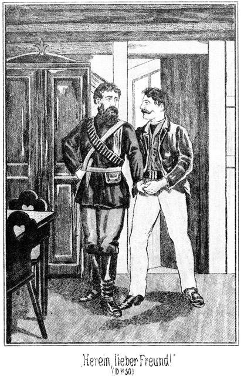»Herein, mein lieber, lieber Freund!« bat Günther, indem er Steinbach hineinzog. »Welch eine Ueberraschung! Wer hätte so Etwas für möglich gehalten!«
»Ich auch nicht. Zwar weiß ich, daß Du in Mittelamerika reisest, aber mit Dir zusammenzutreffen, daran habe ich nicht gedacht.«
»Laß Dich nur zunächst nieder! Ich werde sofort der Wirthin sagen, daß sie – –«
Er wollte rufen. Steinbach wehrte ihm.
»Halt! Nicht rufen! Die Wirthin soll lieber gar nicht merken, daß wir uns kennen.«
»Warum nicht?«
»Ich habe meine triftigen Gründe. Also Du reisest incognito?«
»Natürlich. Ich habe mich meines Vor- als Zunamens bedient. Und Du?«
»Ich heiße Steinbach.«
»Wie in Afrika. Hast Du diplomatische Mission?«
»Halb und halb. Gedenkst Du, hier Rast zu machen?«
»Ja. Du doch auch?«
»Schwerlich. Ich habe hier in der Nähe ein Rencontre, welches mich zur schnellen Abreise veranlassen wird.«
»Kann ich Dir dienen?«
»Danke! Ich Dir vielleicht?«
»Schwerlich.«
»Bitte, nicht so wegwerfend! Du bist hier fremd!«
»Du doch ebenso!«
»Vielleicht nicht,« lächelte Steinbach. »Hast Du vielleicht einmal von dem berühmten Fürsten der Bleichgesichter gehört?«
»Ja, öfters.«
»Nun, der bin ich.«
»Was Du sagst! Nun ja, zu glauben ist es. Du bist eben ein ganz und gar außerordentlicher Mensch und hast dazu das Glück, daß Deine Verhältnisse sich ebenso außerordentlich gestalten. Wir Durchschnittsmenschen laufen nur so geradeaus.«
»Bedauerst Du das?«
»Gewiß. Ich ging aus, um Abenteuer zu erleben. Habe ich ein einziges gehabt? Nicht eins!«
»Du Aermster!«
»Ja. Ich habe gar nichts, gar nichts erlebt. Denn daß ich in San Franzisko mit einem Oelprinzen zusammentraf und ihm einige Dollars im Spiele abnahm, das ist doch nicht zu nennen.«
»Wenn es keine bedeutende Summe war!«
»Gar nicht! Lumpige Hundertzwanzigtausend!«
Er sagte das in kläglichem Tone. Steinbach lachte:
»Glückskind! Immer stets der Alte. Dein Glück ist wirklich bange machend.«
»Pah! Ich verzichte gern auf dasselbe. Ich bin ja reich genug. Glück im Spiele und Unglück in der Liebe. Ein altes aber wahres Wort. Ich wünsche wirklich sehr, daß es umgekehrt wäre.«
»Glück in der Liebe?«
»Ja.«
»Soll ich etwa glauben, daß Du endlich Feuer gefangen hast, Alter?«
»Feuer gefangen? Pah! Dieses Bild sagt nichts, sagt viel zu wenig für das, was ich da drin empfinde.«
Er schlug sich dabei an die Brust.
»Ich condolire!« lachte Steinbach.
»Lache immerhin! Du freilich bist gefeit gegen den Pfeil des Schalkes Amor. Du wirst niemals in die Lage kommen, Dich eines weiblichen Wesens wegen auf das Pfarramt zu bemühen.«
»Von Dir dachte ich ganz dasselbe.«
»Denken! Des Menschen Gedanken sind nichts, gar nichts. Sprechen wir nicht davon. Erzähle mir lieber Etwas von Deinen Erlebnissen!«
»Dazu habe ich wirklich keine Zeit!«
»Was? Dein bester, treuester Kamerad soll nichts erfahren von – –«
»Nein, ganz und gar nichts, wenigstens jetzt nicht. Meine Zeit ist mir so knapp zugemessen, daß ich mit Dir nur das Allernothwendigste besprechen kann, und das besteht doch wohl darin, daß wir uns sagen, was uns nach Prescott führt, was wir hier wollen. Ich wiederhole, daß ich Dir sehr gern meine Hilfe anbiete, wenn sie Dir genehm ist.«
»Danke! Mir kann keine Hilfe helfen.«
»Ich habe einige famose Kerls bei mir, berühmte Prairiejäger und Westläufer.«
»Ist mir Alles Schnuppe.«
»Hm! Du scheinst um Vieles anders geworden zu sein. Seit wann bist Du hier?«
»Seit gestern.«
»Erst? Woher kamst Du?«
»Von Yuma, da unten an der Süd-Pacificbahn.«
»Ah, das ist interessant. Was wolltest Du dort?«
»Ich wollte sie suchen.«
»Sie? Wen?«
»Na, sie natürlich! Bedarf es weiterer Worte?«
»Nein, nun nicht. Ist sie Dir abhanden gekommen?«
»Leider! Ich will nicht von ihr sprechen und Du bringst mich doch immer wieder auf sie.«
»Ich biete Dir Rath und That an.«
»Danke! Habe Dir bereits gesagt, daß mir Niemand helfen kann. Ueberhaupt feiern wir unser so unerwartetes Wiedersehen auf eine verteufelt triste Weise: keinen Wein, keine Cigarre, rein gar nichts.«
»Ist auch nicht nöthig. Wir treffen für einen Augenblick unterwegs, wie der wilde Jäger den ewigen Juden. Da bedarf es keiner großen Tafeleien. Also, wie lange bleibst Du?«
»Bis ich sie finde.«
»Sie und wieder sie!«
»Das ist einmal mein jetziges Schicksal. Ich sehe schon, daß ich Dir wenigstens eine Erklärung geben muß. Weißt Du, ich war bereits schon einmal nahe daran, mein altes Herz überrumpeln zu lassen. Du hast allerdings nichts geahnt, obgleich Du dabei warst.«
»Wann?«
»Kannst Du Dich noch jenes Malers Normann erinnern?«
»Sehr gut.«
»Du stelltest ihn mir vor. Ich besuchte ihn.«
»Ich war mit Dir.«
»Der Kerl war prächtig, aber er hatte einen Fehler, den ich ihm nicht verzeihen konnte.«
»Da bin ich neugierig.«
»Er hatte eine Verlobte. Das war sein Fehler.«
»Ah!«
»Ja. Sie hieß eigentlich wohl anders, aber er nannte sie mit dem türkischen Namen Tschita. Ich will sie nicht beschreiben. Du kennst sie ja. Mir schien es sogar, als hättest Du bei diesen Beiden ein Wenig Vorsehung gespielt; wenigstens brachten sie Dir eine sehr auffällige Zuneigung entgegen. Ich war Feuer und Flamme für diese wunderbare Tschita, durfte es mir aber nicht merken lassen, sie hatte ja einen Verlobten, und – was für mich noch weit schlimmer war – sie liebte ihn.«
»Und sogar von ganzem Herzen.«
»Das sah ich. Ich fühlte mich elend, so elend wie eine ganze Welt voll Katzenjammer. Es gefiel mir nichts mehr; es schmeckte mir nichts mehr, und es ging mir nichts mehr. Das mußte anders werden; ich wäre sonst zu Grunde gegangen. Ich ließ mir Urlaub geben und ging auf Reisen. Wohin, das war gleich. Zunächst aber dampfte ich nach Amerika.«
Steinbach schüttelte sehr ernst den Kopf und meinte:
»Also deshalb die damalige Störung Deines sonst so heiteren, selbstbewußten Wesens. Hm!«
»Ja, der von den Frauen umsonst umworbene Rittmeister Günther von Langendorff war verliebt, war liebeskrank! Lächerlich, brutal lächerlich! Na, ich glaubte, die Reise solle mich zerstreuen, hatte mich aber bedeutend geirrt. Die Liebe ist ein ganz eigenartiges Ding und nebenbei die dümmste Seelenerregung, die es nur geben kann. So hinkte und jammerte und klagte ich weiter und weiter, bis ich nach San Franzisko kam. Ich ließ mich nach dem Unionhotel fahren. Als ich die Treppe hinabstieg, kam Eine die Treppe herab – Tschita.«
»Unmöglich!«
»Das sage ich mir jetzt auch. Damals aber hielt ich sie für Tschita. Eine größere und wunderbarere Aehnlichkeit habe ich noch nie gesehen. Du kannst Dir denken, was passirte. ›Diese und keine Andere!‹ So heißts in Romanen und auf der Bühne und so hieß es auch bei mir. Lache mich aus!«
»Fällt mir nicht ein!«
»Schön, so lache mich nicht aus, sondern weine um mich!«
»Auch das thue ich nicht.«
»So laß Beides bleiben und thue ganz nach Deinem Wohlgefallen.«
»Wie wurde es weiter?«
»Triste und immer trister. Ich begegnete ihr am Abende im Treppenzuge. Es war mir, als ob ihr Auge auf mir ruhe. Ich redete sie an. Sie erröthete, antwortete aber nicht. Am nächsten Morgen war sie weg.«
»Fatal!«
»Ich fand ihre Spur und reiste ihr bis Sakramento nach. Dort sah ich sie. Alle Teufel! Am nächsten Tage war sie abermals fort!«
»Hm!«
»Ja, hm! Ich machte nicht blos hm! sondern ich fluchte ganz gehörig. Aber die Liebe ist beinahe allwissend. Ich kam noch einmal auf ihre Fährte und traf sie dann in Carson City. Da haben wir neben einander im Hotel gespeist. Ein Kerl saß bei ihr, der sie bewachte, wie der Teufel die Seele. Am Allerliebsten hätte ich ihn ausgehauen, aber nicht in Marmor, sondern mit der Reitpeitsche. Es gelang mir nur, heimlich um ihren Namen zu bitten.«
»Erfuhrst Du ihn?«
»Ja. Sie flüsterte ihn mir zu, erröthend, so lieblich, so unschuldig verlegen! Aber was half es! Am andern Morgen war sie abermals fort.«
»Das ist Pech!«
»Dieser verdammte Kerl hat Lunte gerochen!«
»Möglich. Hast doch den Namen gemerkt?«
»Besser wie meinen eigenen! Es war nur ein einfacher, bürgerlicher Name, aber er wird mir in die Ohren klingen, so lange ich lebe: Magda Hauser.«
Steinbach machte eine schnelle Bewegung.
»Was hast Du?« fragte Günther.
»Nichts weiter. Ich wundere mich nur, daß es ein deutscher Name ist.«
»Das gab und giebt auch mir zu denken. Jene Tschita war auch eine Deutsche. Ich habe mich gefragt, ob es Schwestern sind. Doch das nützt ja nichts. Sie ist fort, verschwunden.«
»Hast Du keine Spur gefunden?«
»Zwei für eine. Beide führten nach Süden. Da ich mich aber nicht theilen konnte, so engagirte ich einen Zweiten. Ich hatte einen jungen Deutschen kennen gelernt, der längere Zeit hier im Lande gelebt hat und dasselbe genau kennt, einen guten, braven Jungen, aber arm. Ihn schickte ich auf die eine Spur und ich selbst nahm die andere. Wir machten aus, uns nach Prescott Nachricht zu geben.«
Steinbach lächelte seit einiger Zeit vergnügt vor sich hin. Günther bemerkte dies gar nicht, sondern fuhr in mißmuthigem Tone fort:
»Ich bin der Fährte wie ein Hund gefolgt, bis hinab nach Yuma. Da hörte sie auf.«
»Ohne Alles?«
»Nein, sondern mit Brillantfeuerwerk und Tableau. Sie endete nämlich im Hause eines alten Spaniers, der sich eine junge Erzieherin für seine holden Rangen geholt hatte. Diesen Beiden war ich nachgelaufen. Hole sie der Teufel für jetzt und in alle Ewigkeit. Amen!«
»Und Dein Compagnon?«
»Der steckt irgendwo und läßt nichts von sich hören.«
»Vielleicht war seine Fährte auch eine falsche.«
»Möglich. Das kann mich aber nicht abhalten, weiter zu suchen. Ich höre nicht eher auf, als bis ich sie finde. Ich steige hinunter in den Krater des Vesuves und hinauf auf die Spitzen des Hymalaja. Ich renne nach Spitzbergen und laufe Schlittschuhe bis nach der Sahara. Ich schlage die ganze Menschheit todt, bis endlich mir Einer Auskunft gibt, wo ich sie finde.«
»War sie denn wirklich so schön?«
»Pah! Was nützen Worte? Ein Jeder hält eben die Seinige für die Schönste und Herrlichste.«
»Aber bürgerlich!«
»Ich heirathe sie und wenn sie im Bezirksarmenhause geboren wäre.«
»Ich kenne Dich nicht mehr.«
»Ich mich auch selbst nicht. Von Yuma bin ich mit der Diligence bis hierher. Ich dachte, den Kameraden zu treffen, und habe seit gestern nach ihm gesucht, aber vergebens. Er ist noch nicht hier.«
»So willst Du ihn also hier erwarten?«
»Natürlich.«
»Und quartierst Dich außerhalb der Stadt ein!«
»In der Stadt selbst würde er mich freilich leichter finden, wenn er kommt; aber die Venta dieser verrückten Emeria ist die anständigste. Hier trifft man das abenteuernde, spitzbübische Gesindel nicht, welchem man in den andern Häusern begegnet. Die Wirthin wurde mir von einem Bekannten empfohlen, einem Sennor Robin hier in der Nähe.«
»Was? Robin heißt er?«
»Ja. Welch ein Gesicht machst Du?«
»Er wohnt draußen in den Bergen?«
»Ein Wenig. Wie ist er denn eigentlich Dein Bekannter geworden?«
»Durch seine Wirthschafterin.«
»Etwa Miranda?«
»Ja. Auch sie kennst Du?«
»Ich habe sie noch nicht gesehen. Auf welche Weise hast Du denn die Bekanntschaft dieser Donna gemacht?«
»Sie war in Yuma gewesen und fuhr mit mir bis hierher. Wir kamen miteinander an. Da wir die einzigen Passagiere waren, so waren wir aufeinander angewiesen. Aus Höflichkeit begleitete ich sie nach unserer Ankunft hinaus nach ihrer Wohnung, wo sie mich Sennor Robin vorstellte.«
»Wie gefällt er Dir?«
»Er war außerordentlich höflich. Weiter weiß ich freilich nichts.«
»Und sie?«
»Hm! Mein Herz war bereits engagirt.«
»Das heißt, daß diese Miranda Dir hätte gefährlich werden können?«
»Meiner Ansicht nach wird sie einem Jeden gefährlich werden, wenn sie will.«
»So ist sie schön?«
»Wunderbar. Aber sie ist von einer Schönheit, die ich eigentlich nicht liebe. Sie ist sinnberückend, bethörend. Ihre Reize sind, wie drücke ich mich doch nur bezeichnend aus, sind aufdringlich. Interessirst Du Dich vielleicht für sie?«
»Ja.«
»Sapperment! Doch nur vorübergehend?«
»Jedenfalls.«
»Also Liaison! Wünsche Glück!«
»Danke, obgleich es nicht so ist, wie Du es meinst. Mein Interesse ist von ganz anderer Art. Diese Miranda ist nämlich Courtisane.«
»Alle Teufel! Wirklich?«
»Ja.«
»Woher weißt Du das?«
»Von ihrer Verwandten, der famosen Sennorita Emeria, welche es mir vorhin sagte.«
»Wie kann sie von einer Verwandten so Etwas sagen?«
»Sie hat es eben doch gethan. Diese Miranda ist ihren Eltern durchgebrannt.«
»Ich danke! Und da lud dieser Monsieur Robin mich ein, bei ihm zu bleiben, in seinem Hause zu wohnen. Das hätte einen Affront gegeben!«
»Einen Affront?« lachte Steinbach. »Hier? Wo denkst Du hin! Hier fragt kein Mensch nach so Etwas. Wer Geld hat und Geld verdient, der ist ein gesuchter Mann, seine anderen Verhältnisse gehen keinen Menschen Etwas an. Aber diese Angelegenheit hat eine andere Seite. Weiß dieser Robin vielleicht, daß Du im Besitze einer bedeutenden Summe bist?«
*
»Es ist möglich. Ich habe unterwegs meine Brieftasche einige Male geöffnet. Die Miranda hat es gesehen und kann es ihm gesagt haben.«
»So war es mit der Einladung nicht eigentlich auf Dich, sondern auf Dein Geld abgesehen.«
»Was Du sagst! Ist er ein Spieler?«
»Wenn er nur das wäre! Er ist ein raffinirter Bösewicht. Er scheut vor Nichts zurück, vor keinem Morde, vor keinem andern Verbrechen.«
»Donnerwetter! Solltest Du Dich nicht irren?«
»Gar nicht. Ich bin eben nur dieses Menschen wegen hier. Ich habe sine Rechnung mit ihm quitt zu machen, bei welcher es sich um viel, sehr viel handelt. Ich kann Dir jetzt nur so viel sagen, daß der Name Robin ein falscher ist. Der Mann heißt Walker und war früher professioneller Mörder und Spitzbube. Einen meiner Begleiter hat er beraubt und die Nase abgeschnitten. Einem reichen Pflanzer, welcher mit unten in der Gaststube sitzt, hat er um seine Plantage gebracht, wobei zwei brave Menschen verschollen sind, die man höchst wahrscheinlich ermordet hat.«
»Donner und Doria. Da muß ich mir diesen Menschen doch einmal genauer ansehen.«
»Thue es lieber nicht. Es könnte zu Deinem Schaden ausfallen. Er ist gewaltthätig. Ich werde Dir noch mehr erzählen, habe aber jetzt keine Zeit. Ich muß hinaus zu ihm. Wir haben einen anderen Spitzbuben bis hierher verfolgt, welcher hinaus zu ihm ist, um dort Zuflucht zu suchen. Da dürfen wir keine Zeit verlieren. Uebrigens bist Du bei dieser Angelegenheit auch mit betheiligt. Hast Du nicht den Namen des Menschen erfahren können, in dessen Gesellschaft sich jene Magda Hauser befand?«
»Er stand im Fremdenbuche. Sie war als seine Schwester bezeichnet. Das war aber jedenfalls eine Lüge, denn er hieß nicht Hauser, sondern –«
»Sondern Roulin?« fiel Steinbach ein.
Günther sprang erstaunt auf.
»Roulin, ja, so hieß er. Kennst Du ihn etwa?«
»Ja.«
»Herrgott, welch eine Fügung! Endlich eine Spur! Und zwar durch Dich! Wer hätte so Etwas gedacht! Weißt Du, wo der Kerl wohnt?«
»Im Todesthale. Jetzt aber ist er nicht dort, sondern hier. Er war vor zwei Stunden unten in der Gaststube und ist hinaus zu Robin. Er ist eben jener Schurke, den wir verfolgen.«
»Alle Teufel!«
»Er war jetzt mit einer Indianerhorde droben in den Bergen am Silbersee, wo er Magda Hauser umbringen lassen wollte. Sie sollte von den Indianern am Marterpfahle getödtet werden.«
»Das muß ein gräßlicher Irrthum sein.«
»Es ist Wahrheit. Ich selbst habe sie gerettet. Sie war bereits an den Pfahl gebunden. Sie wurde von vier Indianern bewacht, welche ich erschossen habe.«
»So ist das Gräßliche also wahr, wirklich wahr?«
»Ja, wirklich.«
»Herrgott! Und dieser Kerl war da, war hier, war in diesem Hause?«
»Und ist nun hinaus zu Robin.«
»Und Du willst hinaus?«
»Ja.«
»Oscar, ich begleite Dich!«
»Das muß ich ablehnen. Ich kann Dich nicht gebrauchen.«
»Aber ich muß diesen Menschen haben!«
»Keine Sorge! Auch ich will ihn haben, und ich werde ihn bekommen. Ich weiß jetzt noch nicht einmal, ob ich meine Begleiter mitnehme. Begleitung kann mir unter Umständen die ganze Sache verderben.«
»Und dennoch gehe ich mit. Du mußt mich mitnehmen!«
Es hatte sich Günthers eine außerordentliche Erregung bemächtigt. Steinbach antwortete beschwichtigend:
»Beruhige Dich! Zunächst hast Du gar keine Veranlassung, mit einzugreifen, später magst Du das thun. Es versteht sich nämlich ganz von selbst, daß Du Dich uns anschließest.«
»Ganz natürlich. Ich möchte mich auch beruhigen, wenn ich nur wüßte, daß Magda außer Gefahr ist.«
»Das ist sie. Sie befindet sich unter sichrem und hinreichendem Schutze in Mohawk-Station.«
»Ah, das ist doch ganz nahe von Yuma!«
»Freilich!«
»Und dort war ich! Hätte ich das gewußt.«
»Um Dich noch weiter zu beruhigen, theile ich Dir mit, daß Dein Kamerad sich bei ihr befindet.«
»Wie kannst Du das wissen?«
»Hast Du nicht den Namen Zimmermann vorhin genannt?«
»Ja.«
»Carl von Zimmermann. Nicht wahr, er ist es?«
»Er ist es. Aber, Mensch, Du erscheinst mir jetzt grad wie eine Gottheit, welche zur rechten Zeit vom Himmel herniedersteigt, um den Bedrängten zu erretten!«
»Ich habe Dir ja meine Hilfe angeboten; Du aber hast sie abgewiesen.«
»Wer konnte das denken!«
»Am Besten ist es, Du gehst einmal mit hinab und siehst Dir meine drei Begleiter an. Wir werden dann berathen, was zu thun ist. Willst Du?«
»Natürlich. Komm!«
Als sie aus dem Stübchen traten, musterte Steinbach mit einem eigentlich ganz unabsichtlichen Blicke die Wände des Bodenraumes. Dabei zog er rasch den Fuß zurück und brummte bedenklich:
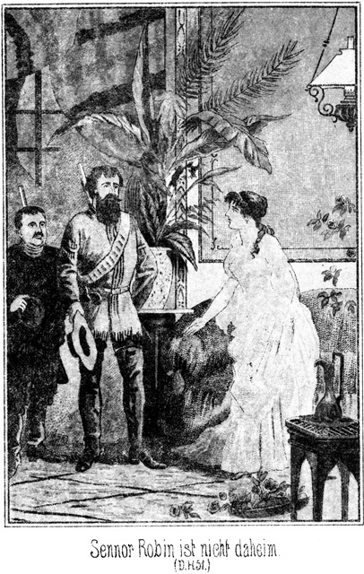»Hm! Sonderbar.«
»Was hast Du?«
»Jedenfalls zu einem eingemauerten Schranke.«
»Die Mauer ist nicht so dick, daß sie Platz für einen Schrank böte. Ich denke mir vielmehr – hm, Du hast auch einen Schrank in Deiner Stube. Ich besinne mich, daß er jenseits dieser Mauer an ganz derselben Stelle steht. Mach Deine Stube noch einmal auf.«
»Hast Du vielleicht Mißtrauen?«
»Eine so sonderbare Vorrichtung muß stets Mißtrauen erregen.«
»Gegen die Wirthin?«
»Die halte ich nicht für gefährlich. Aber ihr Zustand kann sehr leicht von Anderen benutzt werden.«
Sie kehrten in das Zimmerchen zurück. An dem Schranke stak der Schlüssel. Sie öffneten und fanden, daß der Schrank keine Hinterwand hatte. Diese bestand vielmehr in der Thür, welche hinaus auf den Vorplatz führte. Sie konnte sowohl von Innen als auch von draußen geöffnet werden. Und als sie nun die Schrankthür untersuchten, fand es sich, daß diese kein Schloß, sondern nur einen Riegel besaß, welcher zwar mittelst des Schlüssels aber auch von Innen zurück- und wieder vorgeschoben werden konnte.
»Da siehst Du es!« meinte Steinbach. »Eine sehr bequeme Einrichtung für Einbrecher. Man liegt im Schlafe, und die Kerls kommen durch den Schrank herein. Hat Dir Robin dieses Logis empfohlen?«
»Ja.«
»Speciell dieses Stübchen?«
»Er hat mich besonders darauf aufmerksam gemacht.«
»Hm! Komm mit hinab. Wir wollen auch diese Angelegenheit besprechen.« – –
Wenn man den Weg verfolgte, von welchem die Wirthin gesprochen hatte, so kam man an mehreren Block- und Steinhütten vorüber, in denen Goldsucher hausten, und dann in den Wald. Dieser zog sich auf die Berge hinauf und zwischen dieselben hinein. Der Weg wand sich von Thal zu Thal, einzelne kleine Seitenpfade abzweigend, und endete schließlich an dem Vorplatze eines ziemlich großen, steinernen Bauwerkes, welches in Folge seiner massiven Bauart früher jedenfalls als Bollwerk gegen die Indianer gedient hatte.
Jetzt waren die schießschartenähnlichen Fensteröffnungen vergrößert worden. Man hatte sie mit Glasscheiben versehen. Der erweiterte Eingang bildete ein geräumiges Thor. Wilder Wein und Hopfen zog sich bis zum Dache hinauf, und vor der Erkerstube an der einen Ecke stand eine riesige Eiche, welche bestrebt zu sein schien, mit ihren gewaltigen Aesten das ganze Haus zu umarmen.
Man hätte denken sollen, daß die Räume des Hauses dunkel seien, aber sie waren im Gegentheile sehr hell, da man die nach dem Hofe gehenden Mauern durchbrochen und da ein Söllerwerk angebracht hatte, welches dem Lichte freien Eintritt gestattete.
Auf diesem Söller saß eine junge Dame, welche vielleicht vierundzwanzig Jahre zählen mochte. Sie war ganz in Weiß gekleidet, als ob sie sich in irgend einer Großstadt und nicht in einem abgelegenen Walde von Arizona befinde. Da die Aermel fehlten und die Taille auf Brust und Rücken sehr tief ausgeschnitten war, und da ferner der Rock des Kleides keine Falten hatte, sondern sich eng und innig an die Hüften und Beine schmiegte, so waren die Körperformen ganz genau zu sehen.
Und schön war sie, wunderbar schön, aber von jener herausfordernden Schönheit, welche den moralisch reinen Character eher abstößt als anzieht. Das Gesicht war edel gezeichnet, aber diese edlen Konturen verliefen in Linien, deren Gesammtwirkung eine ganz entgegengesetzte war. Die stark entwickelten, äußerst üppigen Lippen, das Kinn und der etwas kurze, starke Hals ließen vermuthen, daß das Naturell dieser Dame mehr auf physischen als auf geistigen Genuß gerichtet sei.
Das war Donna Miranda, die Directrice des Hauses. Sie saß bei einer Stickerei, aber sie stickte nicht. Sie hielt die Augen halb geschlossen und schien zu träumen.
Sie wurde durch leise Schritte gestört. Eine junge Negerin kam herbei und blieb wartend stehen. Miranda öffnete die Augen. Der Blick, welchen sie auf die Dienerin warf, war kein guter. Es war, als wenn eine Bulldogge aus ihrer Ruhe gestört wird. Auch ihre Stimme klang scharf und unsympathisch, als sie kurz fragte:
»Was willst Du?«
»Missus gut sein mit Milly,« antwortete die Schwarze, welche Milly hieß. »Milly hat zerbrochen einen Teller. Hier sein die Scherben.«
Sie hatte die Hände auf den Rücken gehalten. Jetzt nahm sie sie nach vorn und zeigte die drei Stücke, in welche der Teller zerbrochen war. Mirandas Gesicht röthete sich stark. Sie mußte außerordentlich jähzornig sein.
»Was hattest Du mit dem Teller zu schaffen?« fragte sie.
»Milly wollte darauf legen Brod für Missus, da fiel Teller aus Hand.«
»Kannst Du nicht aufpassen, verdammte Creatur! Wo hast Du Deine Augen und Deinen Verstand? Her mit den Scherben!«
Die Schwarze reichte sie ihr hin und bat:
»O, Missus, nicht schlagen arme Milly!«
»Nicht schlagen? Siehst Du nicht, daß es einer von den guten Tellern ist? Ich will Dich lehren, aufzupassen. Hier hast Du die Stücken!«
Sie holte aus und warf sie ihr mit aller Gewalt in das Gesicht. Die Negerin stieß einen Schrei aus und fuhr sich mit den Händen nach dem Auge. Der eine Scherben hatte ihr eine tiefe Wunde in die Wange gerissen, und die Spitze des andern war ihr verletzend in das Auge gedrungen.
»O, o, mein Auge!« rief die Arme. »Milly nicht sehen können. Milly nun blind werden. Missus nicht gut sein mit arm Milly!«
»Was? Nicht gut? Das wagst Du zu sagen, verdammte Kröte? Hier hast Du noch Etwas!«
Sie schlug ihr den an den Ecken mit Silberblech beschlagenen Stickrahmen in das Gesicht, daß die Arme vor Schmerz zum zweiten Male aufkreischte.
Da öffnete sich hinten eine auf den Söller gehende Thür. Ein junger Neger trat heraus. Als er Milly weinen sah, kam er schnell näher.
»Was sein mit gut Milly?« fragte er.
»Missus mir Teller in Augen werfen und Stickrahmen in Gesicht schlagen.«
»Milly herzeigen!«
Er zog ihr die Hände vom Gesicht und betrachtete die Verletzung. Dann wendete er sich an Miranda:
»Missus nicht schlagen sollen. Milly vielleicht blind werden an einem Auge. Wenn Milly zerbrochen den Teller, dann ihn bezahlen, aber nicht wieder sie schlagen und werfen!«
Das war freilich zu viel für den Character der weißen Dame. Sie griff nach der Glocke, welche auf dem kleinen Tischchen lag und schellte heftig mehrere Male, dabei nach Sennor Robin rufend.
Unten ließen sich mehrere dienstbare Geister sehen, welche sich aber beim Anblicke der zornigen Herrin sofort wieder zurückzogen. Oben aber kam der Gerufene aus seinem Zimmer heraus auf den Söller.
»Was giebt es, liebe Miranda?« fragte er.
»Ich bitte Dich, mich gegen diese Bestien zu beschützen.«
»Was haben sie gethan?«
»Das Frauenzimmer hat mir eine ganze Masse Geschirr zerbrochen, jetzt nun zum so und so vielsten Male. Geht das so fort, so können wir aus dem Pantoffel trinken und vom Stiefelknechte speisen. Und als ich sie bestrafte, kam der schwarze Mensch herbei, stellte mich zur Rede und wagte es sogar, mir zu drohen.«
»Was? Drohen?«
»Nein, Zeus hat nicht drohen, hat nur bitten,« erklärte der Schwarze.
»Lügner!« rief die Herrin. »Hast Du nicht gedroht, Dich zu rächen, wenn ich Deine Liebste nochmals bestrafe?«
»Nein, nicht rächen gesagt.«
Wer dem Schwarzen in das ehrliche Gesicht blickte, der konnte wohl sehen, daß er die Wahrheit sagte. Robin aber gab sich gar nicht die Mühe, ihn zu betrachten.
»Ah, drohen!« rief er. »Das fehlte noch. Da, Du schwarzes Viehzeug, will ich Dir zeigen, wie man eine solche Drohung aufnimmt!«
Er schlug ihn mit der Faust zweimal in das Gesicht, daß der Neger zu Boden stürzte und ihm das Blut aus Mund und Nase drang. Die Negerin warf sich auf ihn, Zeus aber schob sie weg, stand auf und ging fort, ohne ein Wort zu sagen. Aber als er sich mit der Geliebten in der Dienerstube befand, sagte er:
»Jetzt alle sein! Jetzt nicht mehr leiden diese Behandlung. Jetzt mich rächen. Sein Herr noch bei Missus draußen.«
»Ja,« antwortete Milly.
»Jetzt ich gehen und nehmen Geld, viel Geld.«
»Um Gott und Jessus! Nicht stehlen, Zeus!«
»Nein, nicht stehlen, sondern nur wiedergeben armen Mann, dem es gehört. Missus nicht wird gehen in ihr Zimmer. Zeus nicht sein werden erwischt.«
Ein jedes Zimmer war mit dem Söller durch eine Thür verbunden; die ganze Zimmerreihe hing aber auch unter sich zusammen. Daher gelang es Zeus, nach der Stube zu gelangen, welche Miranda bewohnte, ohne daß er von der Herrschaft, welche sich noch auf dem Söller befand, gesehen worden wäre.
Dort gab es einen kleinen Damenschreibtisch, in welchem das Geld lag, welches er haben wollte. Er kannte das Fach genau, in welchem er es gesehen hatte. Aber als er hinzutrat, fand er zu seiner Enttäuschung, daß der Schlüssel abgezogen war.
»Zeus muß warten, bis Schlüssel wieder da!« flüsterte er sich selbst zu.
Er wollte zurückschleichen. Da drang durch die offene, nach dem Söller führende Thür ein Wort herein, welches ihn stutzen machte:
»Er muß sterben!«
»Wer? Soll Zeus etwa sterben?« dachte der Neger. »Muß horchen!«
Er schlich sich katzenleise näher, bis hinter die Thür. Robin und Miranda befanden sich kaum drei Fuß weit von ihm entfernt. Er hörte jedes Wort.
Robin hatte das Vorige gesprochen. Miranda meinte in nachdenklichem Tone:
»Eigentlich ist es schade um ihn. Er ist ein sehr hübscher und wohlgebildeter Mann.«
»Hübsch und wohlgebildet! Das ist Dir an einem Manne wohl die Hauptsache?«
»Ja, ich gestehe es offen. Was nützt es mir, wenn ein Herr ein Wunder von Berühmtheit und Klugheit ist, wenn ich mich nicht mit Appetit und Genuß von ihm küssen lassen kann!«
»Das ist sehr aufrichtig.«
»Ich bin stets offenherzig.«
»Also auch Reichthum fällt bei Dir nicht in's Gewicht?«
»Doch, obgleich ich gestehe, daß mir ein armer aber hübscher Liebhaber weit angenehmer ist als ein reicher aber häßlicher.«
»Wie steht es da mit mir?«
»Hm! Du bist weder reich, noch jung, noch hübsch.«
»Dennoch darf ich Dich umarmen!«
»Nur Deinetwegen. Weil es Dir Genuß bereitet. Körperlich habe ich gar keine Zuneigung zu Dir; ja, offen gestanden, ich muß mir Mühe geben, Deine Liebkosungen ohne Unmuth zu ertragen. Uns verbindet aber ein anderes, ein geistiges Band; das ist fester als der sinnliche Genuß.«
»Welches Band wäre das?«
»Die Gleichheit unserer Seelen. Wir sind zwei ausgeprägte, diabolische Naturen. Nicht?«
»Oder giebst Du nicht zu, daß Du ein Teufel bist?«
»Bist Du einer?«
»Ja, und ein ganzer! Ich kann mich an der Qual und an dem Unglücke eines Andern förmlich weiden.«
»Hm! Auch ich weine nicht, wenn Andere um Hilfe rufen. Dennoch ist mir nicht die Freude am Unglücke Anderer die Hauptsache, sondern der Gewinn, welcher dabei für mich abfällt.«
»Natürlich, mir auch. Wie viel wird heut Abend für mich abfallen?«
»Das ist jetzt schwer zu beantworten. Wie viel meinst Du, daß er in seiner Brieftasche hat?«
»Neunzig- bis hunderttausend Dollars.«
»Alle tausend Teufel! Wenn Du Dich nicht geirrt hast, so wäre das ein Fang. Ich möchte wissen, woher er es hat. Als Goldgräber kann er es nicht verdient haben.«
»Pah! Goldgräber! Dieser Sennor Günther ist kein Goldgräber; er ist etwas ganz Anderes als er scheint. Seinen Diamantring will ich gar nicht erwähnen; aber sein Auftreten ist dasjenige eines Cavaliers. Darum beklage ich es, daß er sterben muß.«
»Er hat Dir wohl unterwegs seine Zärtlichkeiten gewidmet?«
»Eben nicht, obgleich ich mir große Mühe gegeben habe, wie ich offen gestehe. Er ist, wie bereits gesagt, ein schöner Mann, und ich wäre mit dem größten Vergnügen einmal für eine Stunde lang die Seinige gewesen. Aber er war kalt wie Eis.«
»Du hast ihm nicht gefallen!«
»Pah! Du willst mich ärgern; das aber soll Dir nicht gelingen. Ich gefalle einem Jeden, nämlich wenn ich will. Mir scheint, daß sein Herz bereits anderweit engagirt ist. Vielleicht gehört er zu denjenigen ehrbaren Männern, welche denken, eine Sünde zu begehen, wenn sie einmal eine Andere küssen. Meiner Ansicht nach ist jedes Weib für jeden Mann und jeder Mann für jedes Weib da. Das liegt ja im richtigen Wesen der Liebe, welche keine Schranken kennt. Doch, wir kommen von der Hauptsache ab. Wie wollt Ihr ihn denn fassen?«
»Durch den Schrank.«
»Durch den Schrank? Das verstehe ich nicht.«
»Ach so! Du hast noch nichts davon gehört. Seit Du bei mir bist, hat sich kein solcher Fall zugetragen. In das Giebelstübchen bei Sennorita Emeria kann man nicht nur durch die Thür gelangen, sondern auch durch einen Kleiderschrank, welcher eine Thür im Zimmer hat und eine außerhalb desselben auf dem Vorplatze. Wir warten ab, bis er schläft, und dringen dann durch den Schrank in die Stube. Das Uebrige ist bald abgemacht.«
»Hast Du denn den Schlüssel zum Schranke?«
»Ja.«
»Emeria weiß davon?«
»Nein. Es ist ein Nachschlüssel.«
»Aber was in dem Zimmer geschieht, das weiß sie.«
»Auch nicht.«
»Laßt Ihr denn die Leiche liegen?«
»Gott bewahre! Die wird fort geschafft.«
»Aber wenn früh der Miether fehlt, muß es doch der Wirthin auffallen.«
»Sie hat stets geglaubt, er sei ihr durchgebrannt.«
»Ach, so sind derartige Fälle bereits dagewesen?«
»Oft schon,« lachte er. »Wir vergießen niemals Blut. Der Mann wird erwürgt. Das hinterläßt keine Spur.«
»Wann geschieht es heut?«
»Nicht vor Mitternacht.«
»Und Du bist selbst dabei?«
»Natürlich! Meinst Du etwa, daß ich fremde Leute hinaufschicke, die ihm das Geld abnehmen und mir ganz gemüthlich damit verschwinden? Ich – – horch!«
Die Thorglocke wurde geläutet. Jetzt war es für den Neger Zeit, zu verschwinden. Er eilte so schnell wie möglich zurück. Als er zu Milly kam, fragte sie:
»Hast Du das Geld?«
»Nein. Schlüssel war weg.«
»Dank Jessus! Du nun nicht bist Dieb.«
»Nein, aber Master und Missus sein Mörder.«
»O, was Du sagen.«
»Ja. Wollen morden gut Master Günther, der hab geben so gut Trinkgeld an Zeus.«
»Du hast träumen!«
»O, Zeus nicht träumen; Zeus hören. Zeus wohl auch noch mehr hören. Zeus nicht bleiben bei Herrschaft, die sein Mörder. Zeus wieder horchen.«
Im Hofe wurde Pferdegetrappel vernehmbar. Es waren zwei Reiter gekommen. Diese Beiden waren – Leflor aus Wilkinsfield und Bill Newton, der einstige Derwisch. Als Walker-Robin sie erblickte, stieß er einen Ruf der Ueberraschung aus.
»Ihr, Master Leflor?« sagte er vom Söller hinab. »Schnell herauf, und willkommen! Ich werde Euch gleich Eure Zimmer anweisen lassen.«
»Das laßt nur bleiben. Wir reiten gleich wieder fort.«
»Unsinn!«
»O doch! Ich komme gleich hinauf.«
Die Pferde waren außerordentlich abgetrieben, und auch den beiden Reitern sah man die Anstrengung an. Sie ließen den Thieren Wasser und Futter geben und kamen die Stiege herauf, welche zum Söller führte. Walker bot Leflor die Hand und wollte sprechen. Dieser aber warnte leise:
»Pst! Still! Gehen wir in ein Zimmer, wo uns Niemand hören kann!«
»Ihr thut ja recht geheimnißvoll!«
»Habe auch Ursache dazu.«
»O, die Angelegenheit, wegen welcher ich Euch den weiten Weg machen ließ, ist zwar wichtig und heimlich, hat aber nicht solche Eile, wie Ihr zeigt.«
»Es giebt noch andere Angelegenheiten. Also, bitte, ein Zimmer, Master Walker!«
»So kommt.«
Er führte sie in seine Stube. Miranda ging auch mit. Die beiden Angekommenen sanken vor Müdigkeit auf die Sitze. Leflor fragte:
»Ist Euch in den letzten Tagen etwas Unangenehmes widerfahren?«
»Nein.«
»Dann waren sie also noch nicht da, und wir kommen zur rechten Zeit, Euch zu warnen.«
»Warum? Das klingt ja bedenklich.«
»Ist es auch in hohem Grade. Wir kommen directen Weges vom Silbersee.«
»So, so! Seid Ihr also da droben mit Bill zusammengetroffen, Sir?«
»Ja. Er war dort gefangen, und es glückte mir, ihn herauszuangeln.«
»Gefangen? Verdammt! Das ist doch nicht möglich! Wie ist es denn gekommen, Bill?«
Der einstige Derwisch zuckte die Achseln und sagte:
»Daran war dieser verfluchte rothe Burkers schuld. Der Streich ist nämlich vollständig mißglückt.«
»Seid Ihr des Teufels?«
»Die Kerls sind alle gefangen. Jetzt wird wohl Keiner mehr leben. Die Maricopa's haben Alle umgebracht.«
»Das sind doch unsere Verbündete!«
»Jetzt nicht mehr. Sie haben mit den Apachen Frieden geschlossen.«
»Diese Nachricht ist freilich verteufelt schlecht.«
»Es kommt noch schlechter. Ihr sollt nämlich überrumpelt werden.«
»Von wem?«
»Von Wilkins.«
»Welchen Wilkins meint Ihr?«
»Nun, aus Wilkinsfield.«
»Alle Donner und Wetter! Ist dieser Mensch etwa wieder aufgetaucht?«
»Ja freilich. Wir selbst sind ihm dazu behilflich gewesen.«
»Wo denn?«
»Am Silbersee. Er ist ja der Vater der berühmten Taube des Urwaldes.«
»Höre ich denn recht? Da schlage doch der Teufel hinein! Und er will mich überrumpeln?«
»Ja, mit Apachen, mit Sam Barth – – –«
»Dem Dicken?«
»Ja, und Jim und Tim – – –«
»Denen ich damals entkommen bin?«
Er war aufgesprungen und ging in der Stube auf und ab. Sein Gesicht war leichenblaß geworden.
»Sie Alle kommen, Alle!« sagte Leflor. »Und noch Andere dazu. Da ist ein Jäger, den sie den Fürsten der Bleichgesichter nennen – – –«
»Habe von ihm gehört. Kommt der auch mit?«
»Freilich. Auch Roulin wird kommen.«
»Seid Ihr verrückt?«
»Nein. Er, der Weiße, welcher mit den Maricopa's zum Silbersee kam, um ein Mädchen abschlachten zu lassen, der Esel. Er ist an Allem schuld. Die Verfolger sind hinter ihm her, und es steht zu erwarten, daß er in seiner Dummheit sich hierher wenden wird.«
»Er sollte einen vortrefflichen Empfang haben, wenn er käme!« grollte Walker. »Wer hätte das gedacht, Alles, Alles stand und ging so gut, und jetzt bricht es auf einmal mit Macht herein. Kann man denn nichts Ausführliches hören?«
Leflor, dem der gesprächige Förster Rothe Alles erzählt hatte, machte den Berichterstatter und theilte ihm mit, was er wußte. Als er geendet hatte, ging Walker abermals nachdenklich im Zimmer auf und ab. Dann blieb er stehen und sagte:
»Der Stoß läßt sich pariren.«
»Möchte wissen, wie!«
»In der Weise, daß ich dem Gegner einstweilen meine Höhle überlasse und in die seinige einbreche. Dadurch werde ich zum Angreifer. Und Ihr wißt, daß der Angreifer stets im Vortheile ist.«
»Hm! Der Gedanke ist nicht übel. Also nach der Höhle des Gegners wollt Ihr? Nach dem Silbersee?«
»Fällt mir gar nicht ein! Sagtet Ihr nicht, daß Almy Wilkins und jene Magda Hauser nach Mohawk-Station geschafft worden seien?«
»Ja.«
»Nun, so gehen wir dorthin.«
»Donnerwetter!« rief Leflor wie electrisirt. »Ihr wollt die Mädels abfassen?«
»Freilich.«
»Herrlich! Was thut Ihr mit ihnen?«
»Das weiß ich noch nicht; es wird sich später finden. Ich habe das Gefühl, als ob wir die Herren der Situation sein werden, wenn wir die Mädchens in unserer Gewalt haben.«
»Das ist gewiß! Ich will Euch sagen, Master Walker, daß ich einst um Almy's Hand angehalten habe. Sie aber wies mich ab. Jetzt endlich hätte ich eine günstige Gelegenheit, mich zu rächen.«
»Ihr wollt also mit?«
»Auf alle Fälle!«
»Ist mir lieb. Je mehr Kräfte bei einem solchen Unternehmen, desto eher und sicherer glückt es. Aber habt Ihr denn auch Zeit dazu?«
»Bin ich so weit hergekommen, kann ich auch noch einige Meilen machen.«
»Sehr gut. Nur befürchte ich, Ihr werdet von dieser Parthie doch noch absehen.«
»Warum?«
»Ich habe Euch kommen lassen, um Euch Etwas mitzutheilen, was Euch wohl nicht sehr gefallen wird.«
»Wohl in Beziehung auf Wilkins und Wilkinsfield?«
»Ja, freilich.«
»Nun, wir werden ja sehen! Wer kommt?«
Walker war an das Fenster getreten, welches nach dem Wege zu führte. Von dort her hatte man den Hufschritt eines Pferdes gehört. Er berichtete an Miranda:
»Alfonzo, unser Bote kehrt zurück. Er wird uns sagen, ob Günther bei der Sennorita Quartier gefunden hat. Zugleich bringt er Einen mit, von dem wir soeben gesprochen haben – Roulin.«
Unten klingelte es, und dann hörte man das Thor öffnen und wieder schließen.
»Master Leflor, habt Ihr Sennor Roulin bereits einmal gesehen?« fragte Walker.
»Niemals.«
»So werdet Ihr Euch wundern. Paßt auf!«
Nach wenigen Augenblicken trat Roulin und Bill herein. Es geschah, wie Walker gesagt hatte. Leflor sprang entsetzt von seinem Stuhle auf, streckte die Hände abwehrend aus und rief:
»Herrgott! Stehen die Todten auf? Arthur Wilkins, Du bist es, Du!«
»Habe nicht die Ehre!« lächelte Roulin, indem er sich ironisch verbeugte.
»Nicht? Du mußt mich doch noch kennen!«
»Habe den Sennor noch nie gekannt.«
»Wäre das möglich?«
»Gewiß!«
»Dann giebt es hier eine Aehnlichkeit, welche ganz beispielslos dasteht!«
»Diese Aehnlichkeit,« lachte Walker, »hat Euch so sehr billig zu Wilkinsfield geholfen.«
»Wieso?«
»Davon später. Jetzt zu Herrn Roulin.«
Seine Miene veränderte sich. Sie wurde finster, zürnend. Seine Stimme klang hart wie die Stimme eines Vorgesetzten, welcher einem Untergebenen die Thür zeigt:
»Sagt mir doch einmal, Sennor Roulin, was Ihr für Dummheiten macht! Ich höre, daß – – –«
»Dummheiten?« fiel Roulin ihm ein. »Welche?«
»Ich höre, daß Ihr nach dem Silbersee gegangen seid?«
»Ganz gewiß.«
»Ihr habt denselben Fehler begangen, da Ihr den rothen Burkers mit seinen Leuten hinaufgeschickt habt. Wir sind also quitt, und Ihr habt mir wohl nichts vorzuwerfen.«
»Ihr gingt hinauf einer Dummheit wegen.«
»Welche Dummheit meint Ihr?«
»Ein Mädchen abzuschlachten.«
»Dummheit ist es, das zu glauben. Ich wollte sie nur einschüchtern, um sie mir gefügig zu machen. Dummheit aber war es, die Schätze stehlen zu wollen. Ihr seht, wir sind wenigstens quitt.«
»Euer Unternehmen mißlang!«
»Das Eurige auch. Wir sind abermals quitt, und ich kann nicht ersehen, aus welcher Ursache Ihr mir Vorwürfe machen wollt.«
»Ich glaube, Ihr wollt mich schulmeistern!«
»Fällt mir nicht ein. Von uns Beiden hat keiner das Recht, den Andern zu hofmeistern.«
»Meint Ihr? Da irrt Ihr Euch. Ich bin es, dem Ihr Alles zu danken habt.«
»Ganz richtig! Und Ihr habt hingegen Alles mir zu verdanken. Wir sind quitt. Wir haben uns Dienste geleistet. Aber mir scheint, Ihr seid bei schlechter Laune. Da werde ich gehen. Ich bin nicht gewohnt und habe auch heut nicht die Absicht, mich so von oben herab behandeln zu lassen. Adieu, Sennores!«
Er spielte seine Rolle sehr gut, so gut, daß Walker sich gezwungen sah, nachzugeben und einzulenken. Er ergriff ihn beim Arme und sagte:
»Unsinn! Fortlaufen! Das fehlte noch! Es stürmt jetzt Alles auf mich ein, so daß es kein Wunder ist, wenn ich einmal die gute Laune verliere. Setzt Euch, und laßt mit Euch reden!«
»Na, meinetwegen. Darf man denn auch reden?«
»Warum nicht?«
»Ich meine, ob alle Anwesenden von unserer Angelegenheit hören dürfen?«
»Alle,« antwortete Walker, warf aber einen bedeutungsvollen Blick auf Bill, den früheren Derwisch. Er wollte diesen nicht dadurch beleidigen, daß er sagte, Bill dürfe es nicht hören.
Roulin verstand den Wink und meinte:
»So werde ich Euch zunächst bitten, einige Wachen zu Pferde gegen Prescott zu senden, um uns schleunigst Nachricht zu geben, wenn unsere Feinde kommen.«
»Kommen sie bereits heut?«
»Sam der Dicke kam nur zwei Minuten später als ich zu Sennorita Emeria, und ich täusche mich nicht, wenn ich annehme, daß er nicht lange auf die Andern gewartet hat.«
»Sapperment! Da können sie ja an jedem Augenblicke hier sein!«
»Bill Newton, wie ists? Wollt Ihr diese Wache mit thun? Ihr und Alfonzo?«
»Ja, Sennor.«
Er stand auf und ging. Nur wenige Augenblicke später sah man die beiden Genannten davonreiten.
»Er ist fort,« meinte Walker, »folglich können wir nun über Alles sprechen. Sennorita Miranda ist meine Vertraute. Sie darf Alles hören. Also, Sennor Roulin, zuerst Eure Flucht und Verfolgung und sodann die Wilkinsfield'sche Angelegenheit, bitte!«
»Nun, die Sache ist folgende: Ich lernte eine junge Dame kennen, eine wirkliche Schönheit. Sie betrug sich im höchsten Grade kopfscheu gegen mich. Ich gab mir die größte Mühe, ihr irgend einen Beweis von Zuneigung zu entlocken, doch vergebens.«
»Sie hatte ihr junges Herz wohl bereits an einen Andern verschenkt?« lachte Donna Miranda.
»O nein. Sie gestand mir, daß sie bisher nur ihre Eltern geliebt habe, mir aber trotzdem nicht das kleinste Plätzchen in dem Herzen, welches Ihr da erwähnt habt, einräumen könne. Ich gestehe aufrichtig, daß ich ernstlich vergafft war. Ich beschloß, Alles anzuwenden, sie zu der Meinigen zu machen. Half Liebe nichts, so wollte ich Strenge anwenden. Die Maricopa's hatten einen Zug nach dem Silbersee beschlossen. Ich machte diesen Zug mit und nahm auch Magda mit, indem ich ihr eröffnete, daß sie auf dem Grabe eines Häuptlings geopfert werden solle. Ich erwartete, daß die Furcht sie gefügig machen werde.«
»Wer ist denn eigentlich diese interessante Dame?«
»Sie heißt Magda. Mehr darf ich nicht sagen.«
Er erzählte nun von dem Zuge hinauf in die Berge und von dem Mißlingen seiner Absicht. Er hatte Magda nichts zu Leide thun wollen, wie er behauptete. Man hatte sie nach der Insel geschafft und an den Pfahl gebunden, einestheils um sie gegen ihn gefügiger zu machen und anderntheils aus Rücksicht auf sie von der Besatzung des Missionshauses günstige Bedingung zu erlangen, und wie sie auf der Insel auf eine geradezu unbegreifliche Weise verschwunden waren.
»Verdammt!« rief Roulin. »An dem Allen ist dieser sogenannte Fürst der Bleichgesichter schuld. Was hat sich dieser Kerl in die Angelegenheiten Anderer zu mischen?«
»Mit ebenso wenig Recht, wie Ihr und wir dieses thun,« lachte Walker.
»Uebrigens hätte ich an Eurer Stelle den Silbersee nicht so schnell verlassen.«
»Oho! Ich merkte, wie es stand. Die Maricopa's machten mit den Apachen gemeinsame Sache. Es stand mit Gewißheit zu erwarten, daß man über mein Fell herfallen werde. Wenn Fuchs und Wolf Freundschaft schließen, so ist das Schaf stets übel daran.«
»Wart in diesem Falle etwa Ihr das Schaf?« fragte Donna Miranda.
»So ziemlich. Darum machte ich mich von dannen. Ich glaubte freilich nicht, daß man so schnell und auch so hitzig hinter mir her sein werde. Ich merkte bereits am folgenden Morgen, daß ich verfolgt wurde und habe mein Pferd fast todt geritten, um in Distanz zu bleiben. Noch vor der Stadt Prescott habe ich eine Finte geritten, um die Kerls von der Spur abzubringen. Sie haben sich aber, wie es scheint, nicht irre machen lassen.«
»So albern sind die Männer, die Euch verfolgten, freilich nicht. Ihr reitet vom Silbersee in schnurgerader Richtung auf Prescott zu. Das ist genug für sie. Ihr könnt zehn Bogen oder Kreise oder Umwege reiten, sie wissen doch, welches Euer Ziel ist. Ihr habt Euch in dieser Angelegenheit nicht sehr geistreich gezeigt. Den größten Fehler aber habt Ihr dadurch begangen, daß Ihr zu uns kommt. Ihr bringt dadurch Eure Verfolger uns auf den Hals.«
»Ihr werdet sie schon wieder los werden.«
»Auf welche Weise denn?«
»Das ist lediglich Eure Sache. Ihr habt mich jetzt schon einige Male so getadelt, daß ich es nun einmal Euch überlasse, zu beweisen, daß Ihr klüger seid als ich.«
»Das Unsrige werden wir freilich thun, trotzdem aber befinden wir uns natürlich in Verlegenheit. Ihr konntet jede andere Richtung einschlagen, nur nicht diejenige, welche zu uns führt.«
»Wie klug! Erstens verlieren solche verfluchte Kerls niemals eine Spur, und zweitens wissen sie ja nun, wer ich bin, und von den Maricopa's und dem Mädchen werden sie erfahren haben, wo ich wohne. Sie brauchten also nur nach dem Todesthale zu reiten, um mich dort zu erwarten.«
»Was könnten sie Euch thun? Gar nichts! Daß das Mädchen geopfert werden solle, war ja nur ein Scherz.«
»Ihr vergeßt, daß Wilkins dabei ist!«
»Pah! Fürchtet Ihr etwa diesen?«
»Natürlich!«
»Warum denn?«
»Das fragt Ihr mich? Ihr? Ihr habt wohl Alles vergessen, Master Walker?«
»O, mein Gedächtniß ist sehr gut, und ich wüßte auch gar nicht, was ich in Beziehung auf diesen Wilkins vergessen haben sollte. Aber die Botschaft, welche Ihr mir vor einigen Monaten schicktet, war allerdings so befremdend, daß ich augenblicklich hier Monsieur Leflor benachrichtigt habe, schleunigst zu mir zu kommen. Wollt Ihr jetzt vielleicht sagen, was der Brief, welchen Ihr mir schriebt, eigentlich zu bedeuten hatte. Er war so geheimnißvoll abgefaßt.«
»Er konnte in falsche Hände gerathen; darum durfte ich nicht deutlich sein. Master Leflor weiß doch, in welcher Weise er zu der Plantage in Wilkinsfield gekommen ist?«
»Ja. Durch Kauf natürlich.«
»Aber durch was für einen Kauf! Er hat ja kaum die Hälfte des Werthes bezahlt. Er mußte sich also denken, daß es mit dieser Angelegenheit eine wohl nicht ganz gewöhnliche Bewandtniß habe. Weiß er, wie Ihr in die Besitztitel der Plantage getreten seid?«
»Nein. Werde mich hüten, das den Leuten auf die Nase zu hängen. Jetzt wird er es aber wohl erfahren müssen. Nicht?«
»Ja, es ist das sehr nothwendig.«
»Mir aber höchst unangenehm. Uebrigens finde ich gar keinen Grund, davon zu sprechen. Die Sache wurde seiner Zeit zwischen uns Beiden abgemacht, Master Roulin, und ich sehe nicht ein, warum sie nicht auch nur bei uns bleiben soll.«
»Wie denn, wenn jener Arthur Wilkins sich in Wilkinsfield einstellt?«
»Seid Ihr des Teufels!« rief Walker erschrocken.
»Und der Oberaufseher Adler auch?«
»Das ist ja gar nicht möglich. Beide sind ja todt!«
»Todte stehen zuweilen auf!«
»Unsinn! Macht keine dummen Witze!«
»Es ist mein Ernst. Beide leben noch.«
»Wie? Sie leben?«
Walker sprang auf und stellte sich im höchsten Grade betroffen vor Roulin hin. Auch Leflor fühlte sich nicht etwa freudig überrascht, obgleich er die Angelegenheit in ihrem ganzen Umfange nicht kannte. Er sagte:
»Es kann mir eigentlich sehr gleichgiltig sein, ob die beiden Männer noch leben oder nicht, denn – – –«
»Langsam, langsam!« fiel Walker ihm in die Rede. »Ihr wißt nicht Alles. Wenn Arthur Wilkins wirklich noch lebte, würdet Ihr ihm Wilkinsfield abtreten müssen.«
»Wieso? Ich habe es ja bezahlt.«
»Aber nicht an ihn, sondern an mich.«
»Was ändert das?«
»Sehr viel. Er hat mir nämlich die Pflanzung nicht verkauft.«
»Macht keine dummen Witze!«
»Es ist nicht Spaß, sondern es ist Ernst. Ich traf diesen Wilkins in Santa Fé und war erstaunt über die ungeheure Ähnlichkeit, welche er mit meinem Bekannten Roulin hier hatte. Ich schloß mich ihm mehr an und erfuhr von ihm seine ganzen Angelegenheiten. Er zeigte mir sogar seine Papiere. Da war ein sehr guter Fang zu machen. Ich verführte ihn zu einer Reise in das Todesthal, wo Roulin damals eben begonnen hatte, eine alte Quecksilbergrube neu zu bebauen, und trug diesem meinen Plan vor. Er ging darauf ein. Roulin jagte Wilkins eine Kugel durch den Kopf, brachte seine Leiche bei Seite und bemächtigte sich seiner Papiere. Wir ritten nach Santa Fé, wo Roulin nun als Wilkins galt; seine Aehnlichkeit unterstützte das. Er verkaufte mir Wilkinsfield und auch die Schuldforderung an seinen Oheim. Ich ging nach Wilkinsfield und verkaufte meine Ansprüche an Euch. Auf diese Weise seid Ihr in den Besitz der Pflanzung gekommen, Master Leflor.«
Der soeben Genannte machte ein Gesicht, als ob er aus einem Traume erwache.
»Soll ich das wirklich glauben?« fragte er wie abwesend.
»Ich ersuche Euch darum!«
»Ihr seid ein – ein – – Mörder?«
»Wenn Ihr es so nennt, ja,« lachte Walker.
»Und – und – – Betrüger?«
»Auch das. Aber das ficht Euch doch nichts an. Wie ich Euch kenne, ist Euer Gewissen nicht so zart, daß es bei so einer Angelegenheit in Krämpfe oder gar in Ohnmacht fallen möchte.«
»Das ist hier Nebensache. Ihr könnt Euch denken, daß ich ganz starr vor Erstaunen bin!«
»Das wird nicht sehr lange dauern.«
»Ich bin also eigentlich Euer Mitschuldiger!«
»Bis jetzt noch nicht, doch werdet Ihr es werden.«
»Dazu habe ich verdammt wenig Lust!«
»So verliert Ihr Wilkinsfield.«
»Da wäre ich ruinirt. Ihr müßt wissen – na, ich will es nicht beschönigen – ich habe ein Wenig flott gelebt. Meine Pflanzung ist zum Teufel. Ich besitze nur noch Wilkinsfield.«
»So seid Ihr ja ein Bettler, wenn es an den Tag kommt, daß der Kauf keine Rechtskraft besitzt.«
»Eine verfluchte Geschichte! Hört, Ihr seid zwei Patrone! Es ist nicht grad eine große Ehre, Bekannter von Euch zu sein!«
»Nein,« lachte Walker. »Dennoch will ich nicht hoffen, daß Ihr aus moralischem Schmerz in das Wasser lauft, um Euch zu ersäufen. Bis jetzt hat die Sache gar keine Gefahr. Es wittert nur von Weitem. Ich weiß nicht, was dieser Roulin will. Arthur Wilkins ist todt und Adler, sein Oberaufseher, auch. Dieser Letztere kam nämlich nach dem Westen, um nach Wilkins zu suchen. Er fand unglücklicher Weise seine Spur und gelangte nach dem Todesthale. Dort aber fiel er natürlich in Roulins Hände, welcher sehr kurzen Prozeß mit ihm machte.«
»Ihn tödtete?« fragte Leflor.
»Natürlich!«
»Nun, so ist die That zwar ein Verbrechen, aber es steht doch für mich nichts zu befürchten.«
»Mehr, als Ihr denkt,« fiel hier Roulin ein. »Es ist nämlich in Wirklichkeit so, wie ich bereits vorhin sagte: Wilkins und Adler leben noch.«
»So habt Ihr sie nicht getödtet?« rief Walker.
»Nein.«
»Donnerwetter! Seid Ihr verrückt?«
»Verrückt wohl nicht. Ich hatte zwei sehr gute Gründe, den Beiden das Leben zu lassen.«
Walker war vor Erregung leichenblaß geworden. Er starrte Roulin an und rief:
»Gründe – Gründe! Also doch! Sie leben noch?«
»Wie ich schon sagte! Ja!«
»Dann seid Ihr der größte Dummkopf und Erzesel, den es nur geben kann!«
»Vielleicht doch nicht!«
»Sie leben! Sie leben! Noch kann ich es nicht glauben! Es ist mir unmöglich! Könnt Ihr einen Schwur ablegen, daß es wahr ist?«
»Jeden Schwur, den Ihr nur wollt.«
Da faßte er Roulin an beiden Armen und schrie:
»Verdammter Narr! Ich sollte Euch sogleich mein Messer in die Gurgel stoßen! Wißt Ihr, daß Ihr nicht nur mich und diesen Sennor, sondern auch Euch selbst in die allergrößte Gefahr bringt!«
»Das weiß ich!« antwortete Roulin sehr ruhig. »Aber ich bitte Euch, nehmt Eure Hände von mir weg! Ich bin kein Knabe, mit dem man machen kann, was Einem beliebt. Droht Ihr mir mit Eurem Messer, so habe ich auch das meinige und die Pistolen dazu!«
»Was! Wollt Ihr auch noch aufbegehren!«
»Ich verlange, daß man mich höflich behandle.«
»Soll ich einem Menschen, der so kopflos handelt, auch noch Höflichkeiten sagen?«
»Das ist nicht nöthig. Ihr sollt weder sehr höflich, noch aber so grob wie bisher sein. Das Letztere verbitte ich mir allen Ernstes! Ich pflege zu wissen, was ich thue.«
»Als Ihr die Beiden am Leben ließet, habt Ihr nicht gewußt, was Ihr thatet.«
»Sehr genau habe ich es gewußt!«
»Ah! Meint Ihr die beiden Gründe, von denen Ihr vorhin spracht?«
»Jawohl, diese meine ich.«
»Nun, so habt doch einmal die Gewogenheit, sie uns zu sagen, mein bester Sennor Roulin!«
Er sprach höhnisch und im höchsten Grimme. Roulin hingegen antwortete in ruhigem, wie geschäftlichem Tone:
»Ihr wißt doch, daß es in einem Quecksilberbergwerk nicht sehr gesund ist – –?«
»Da« weiß ich. Was aber soll das?«
»Die Ouecksilberdünste zerfressen die menschlichen Eingeweide, darum ist es so sehr schwer, Arbeiter zu bekommen. Und bekommt man ja welche, so hat man einen geradezu horrenten Arbeitslohn zu zahlen – –«
»Das geht mich gar nichts an und das gehört ja auch ganz und gar nicht hierher!«
»Es gehört sehr wohl hierher. Ich fand keine Arbeiter. Da brachtet Ihr mir diesen Arthur Wilkins. Ich sollte ihn tödten. Ich war nicht so dumm, ihn zu erschießen, sondern ich steckte ihn in meine Quecksilbergrube, wo er arbeiten mußte.«
»Alle Teufel! Wenn er nun entfloh?«
»Pah! Er ist gefangen und kann nicht heraus. Er arbeitet für mich, und wenn er faullenzt, so bekommt er Prügel und Kostentziehung.«
»Und Adler, der deutsche – –?«
»Genießt ganz dasselbe Glück.«
Da trat Walker einen Schritt von ihm zurück und sagte unter einem sichtbaren Grauen:
»Roulin, Ihr seid ein Teufel!«
»Ah! Gefalle ich Euch jetzt?«
»Ihr seid wirklich ein Teufel! Ich tödte die Leute, welche mir im Wege find, aber ich lasse sie nicht eines so langsamen, entsetzlichen Vergiftungstodes sterben.«
»Jeder thut, was ihm beliebt. Ich habe noch mehr solcher Arbeiter, welche nie mehr das Tageslicht sehen werden. Die Hoffnung auf Erlösung erhält sie dennoch ziemlich bei Kräften.«
Es war ein wirklich teuflisches Lächeln, unter welchem er dies sagte. Auch Leflor graute es vor ihm. Die schöne Miranda aber nickte ihm zu und sagte:
»Sennor, Ihr seid ein tüchtiger Kerl. Entweder muß der Mensch sehr gut oder sehr schlecht sein. Einen Mittelweg kennt der Charakter gar nicht. Ich gestehe Euch, daß Ihr mir gefallt!«
»Sehr viel Ehre! Ich hatte, wie ich bereits erwähnte, noch einen zweiten Grund. Wenn ich Euch denselben auch noch mittheile, so könnt Ihr daraus ersehen, daß ich nicht nur sehr aufrichtig, sondern auch ebenso furchtlos bin. Spitzbuben dürfen einander niemals ganz trauen. Auch ich traute Master Walker nicht ganz. Wenn ich Wilkins und Adler nicht tödtete, so hätte ich in ihnen zwei sehr gute Waffen gegen ihn in den Händen gehabt. Darum blieben sie leben.«
»Verdammter Kerl!« fuhr Walker auf.
»Pah! Ich war vorsichtig! Das ist Alles!«
»Aber ein Zufall konnte oder kann die Beiden befreien!«
»Das ist unmöglich.«
»Sprecht Ihr denn mit ihnen?«
»Darüber mache ich keine Bemerkung. Ich erinnere Euch überhaupt daran, daß ich verfolgt werde und daß die Verfolger jeden Augenblick hier sein können. Wir dürfen nur das Nöthigste sprechen.«
»Leider, leider,« stimmte Walker zornig bei. »Wenn dies nicht wäre, so würde ich mit Euch anders reden. Wie nun, wenn die Verfolger nach dem Todesthale gehen, he?«
»Ich bin überzeugt, daß die Apachen und Maricopas hingehen werden. Diese Magda wird sie hinführen. Und das ist der Grund, daß ich zu Euch komme. Ihr sollt mir helfen.«
»Ah so! Ihr macht die Dummheiten und wir sollen diese Fehler wieder gut machen! Horch!«
Man hörte Hufschlag. Die beiden Sicherheitswächter kehrten zurück. Alfonzo kam herauf in das Zimmer und meldete, daß zwei Reiter binnen einer Stunde hier sein würden. Aus seiner Beschreibung ging hervor, daß Steinbach und Sam Barth im Anzuge seien.
»Was thun wir?« fragte Roulin.
»Es bleibt uns nichts Anderes übrig, als ihnen das Feld einstweilen zu überlassen,« antwortete Walker.
»Unsinn! Wir machen sie sogleich unschädlich!«
»Unvorsichtiger könnten wir gar nicht sein. Diese Beiden kommen, um zu recognosciren. Kehren sie nicht zurück, so haben wir die Andern auf dem Pelze. Man weiß in der Stadt, daß sie hier sind. Hier im Hause dürfen sie also nicht verschwinden. Ich habe heut Abend in der Stadt zu thun. Wir reiten jetzt hin, natürlich auf einem Umwege. Für Euch Beide, die Sennores Leflor und Roulin, habe ich eine Venta, wo Ihr Euch verbergen könnt und – –«
»Doch nicht etwa diejenige der Sennorita Emeria?« fiel Roulin ein.
»Nein, denn dort sind ja Eure Verfolger abgestiegen.«
»Und was thue ich?« fragte Miranda.
»Du behandelst die Beiden, wenn sie ja Eintritt verlangen, auf das Freundlichste.«
»Was antworte ich aber auf ihre Fragen?«
»Sie müssen Vertrauen zu Dir fassen, denn durch Dich sollen sie gefangen werden. Darum mußt Du ihnen scheinbar die Wahrheit sagen. Du weißt nur, daß ich Robin heiße. Ein Fremder, nämlich Sennor Roulin, dessen Namen Du aber nicht kennst, ist gekommen, und ich bin mit ihm sogleich spazieren geritten, werde aber nach Mitternacht oder gegen Morgen mit ihm wieder zurückkehren. Wende Deine ganze Liebenswürdigkeit auf, um besonders diesen Fürsten der Bleichgesichter an den Angelhaken zu bekommen!«
»Soll ich ihn einladen, unser Gast zu sein?«
»Ja, gewiß. Eine weitere Auskunft giebst Du ihm aber nicht. Jetzt kommt, Sennores! Alles Uebrige können wir während des Rittes besprechen.«
Sie gingen hinab in den Hof, wo die Pferde standen. Dasjenige Walkers wurde aus dem Stalle geholt und schnell gesattelt. Die Dienerschaft erhielt die nothwendig erscheinenden Befehle und dann ritten die Männer Walker, Leflor Roulin, Alfonzo und der einstige Derwisch durch eine Hinterthür hinaus in das Freie und in den Wald hinein, wo sie einen weiten Bogen machten, um Steinbach und Sam nicht zu begegnen.
Walker hatte zwar gesagt, daß sie während des Rittes sprechen könnten; dies war aber nicht gut möglich. Der Abend nahte und unter den Waldbäumen war es bereits fast dunkel. Ein Jeder hatte also seine ganze Aufmerksamkeit auf sich und sein Pferd zu richten. Darum verlief der Ritt sehr langsam und unter Schweigen. Es dauerte lange, sehr lange, ehe sie das Ende des Waldes erreichten und nun war es auch nicht Zeit zu langen Verhandlungen.
Walker befand sich an der Spitze. Er ritt nicht direct auf die Stadt zu, sondern er machte einen Bogen, bis sie auf der anderen Seite die ersten Häuser erreichten. Dann blieb er halten und schickte Alfonzo nach der betreffenden Venta voran; er sollte dafür sorgen, daß sie nicht gesehen würden.
Erst nach einer Weile forderte Walker die Anderen auf, ihm nun weiter zu folgen. Sie gelangten an eine niedrige, aus rohen Steinen aufgeführte Mauer, in welcher sich eine Pforte befand. Sie war geöffnet und da stand Alfonzo.
»Ist Alles in Ordnung?« fragte Walker.
»Alles, Sennor. Die Pferde bleiben hier im Garten.«
Sie stiegen ab und zogen die Pferde durch die Pforte in den Garten, wo die Thiere im Grase werden konnten. An der jenseitigen Seite desselben öffnete sich ein Hof. Walker schritt auf ein Nebengebäude zu und da durch eine kleine Thür. Dahinter lag ein Stübchen, in welcher sich ein alter Tisch und einige roh gezimmerte Stühle befanden. Eine Lampe brannte, und ein Mann, der nicht sehr Vertrauen erweckend aussah, erwartete die Angekommenen. Er schien solche Besuche sehr oft zu bekommen, denn er grüßte ganz vertraulich und fragte:
»Also nicht in das Gastzimmer?«
»Nein,« antwortete Walker. »Auch wollen wir hier ungestört sein.«
»Sehr wohl! Was trinken die Sennores?«
»Wein.«
Der Wirth ging und brachte bald das Verlangte, worauf er sich entfernte.
»So! Jetzt endlich können wir wieder sprechen,« sagte Walker. »Setzt Euch also und schenkt Euch ein!«
Dieser Aufforderung wurde natürlich Folge geleistet. Roulin war der Erste, welcher sprach:
»Was aber gedenkt Ihr denn nun mit dem Fürsten der Bleichgesichter und mit dem dicken Jäger zu thun?«
»Unschädlich werden sie natürlich gemacht.«
»Wann, wie und wo?«
»Das kann ich jetzt noch nicht sagen. Ich werde später einmal nach der Venta der Sennorita Emeria gehen, dort erfahre ich, was zu thun ist.«
»Dort wird man Euch einfach festnehmen.«
»Oho!«
»Bedenkt, daß die Gefährten der Beiden sich dort befinden.«
»Die bekommen mich gar nicht zu sehen. Emeria ist meine Freundin. Sie giebt mir Auskunft.«
Er wollte natürlich nicht sagen, daß ihn ein noch ganz anderer Zweck nach der Venta führte. Jetzt nun wurde erzählt und berathen. Roulin fühlte sich sehr befriedigt darüber, daß Magda Hauser sich in Mohawk Station befand. Dort wollte er sich ihrer wieder bemächtigen.
»Und ich beanspruche die ›Taube des Urwaldes‹ für mich!« erklärte Leflor. »Nur unter dieser Bedingung will ich Euch nicht nachtragen, daß Ihr mich eigentlich betrogen habt.«
»Wir werben die Papago-Jndianer an,« sagte Walker, »und überfallen mit ihnen die Maricopa's. Vielleicht erretten wir da unsere Leute mit dem rothen Burkers vom Martertodte.«
»Den haben sie wohl bereits erlitten,« meinte Leflor.
»Wohl nicht. Der Indianer nimmt seine Gefangenen am Liebsten mit in sein Dorf, damit die Bewohner desselben das Schauspiel auch mit genießen. Darum denke ich, daß noch Rettung möglich ist.«
»Wann reiten wir?«
»Vielleicht schon morgen früh. Aber ich mache zur Bedingung, daß, wenn wir nach dem Thale des Todes kommen, Wilkins und Adler sterben müssen.«
Ueber diese Punkte wurde noch lange hin und her verhandelt. So kam Mitternacht heran, und Walker verließ mit Alfonzo und dem einstigen Derwische die Venta.
Steinbach war mit Sam in der Nähe von Walkers Wohnung angekommen, als es bereits dunkel war. Sie hatten nichts mehr zu besprechen, da ihr Plan bereits beschlossen war. Die ganze Fronte des Hauses war finster, ein Fenster ausgenommen, welches sich erleuchtet zeigte.
Die Beiden stiegen von ihren Pferden und Steinbach zog an der Klingel. Bald wurde das Thor geöffnet, aber nicht ganz, sondern nur ein Wenig. Man konnte nicht sehen, wer es war, aber eine männliche Stimme fragte:
»Wer ist da?«
»Zwei Fremde. Wohnt hier Sennor Robin?«
»Ja.«
»Ist er daheim?«
»Nein.«
»So ist er verreist?«
»Nein. Er ist ausgeritten und wird wiederkommen. Was wünschen die Sennores?«
»Wir wollten mit ihm sprechen. Ist Donna Miranda auch mit fort?«
»O nein; die ist zu Hause.«
»Können wir nicht wenigstens mit ihr sprechen?«
»Jawohl. Kommt in den Hof.«
»Habt Ihr nicht ein Corral am Hause?«
»Gewiß, hier links.«
»So werden wir lieber unsere Pferde dort unterbringen.«
»Warum Sennores? Wir haben ja Hof und Stall.«
»Unsere Thiere sind das Freie gewöhnt.«
Er hatte seine bestimmte Absicht, daß er die Pferde lieber im Corral unterbrachte. Nachdem dies geschehen, traten sie ein. Der dienstbare Geist schloß die Thüre hinter ihnen zu und führte sie in den Hof. Erst dort sagte er:
»Ich muß der Donna Eure Namen nennen, Sennores.«
»Wir heißen Steinbach und Bart.«
»Und was seid Ihr?«
»Reisende.«
»Es giebt so verschiedene Arten von Reisenden – –?«
»Das ist sehr richtig, mein Lieber, aber die Art, zu welcher wir gehören, werden wir der Donna selbst mittheilen.«
»So folgt mir jetzt.«
Er war nicht befriedigt worden. Nur Miranda wußte, wer die beiden Erwarteten seien. Die dienstbaren Geister wußten es nicht, hätten es aber so gern erfahren, da sie der Beiden wegen so eigenthümliche Verhaltungsmaßregeln erhalten hatten.
Die zwei Jäger wurden nach oben geführt; wo die Dame in größter Neugierde ihrer wartete. Sie war ganz begierig, die beiden berühmten Jäger, deren Todesurtheil bereits unterzeichnet war, kennen zu lernen. Als diese eintraten, saß sie in dem besten Zimmer des Hauses auf einer rothen Sammet-Ottomane, aus deren weichen Polstern ihre helle Gestalt mit dem lichten Gewande eigenartig hervorleuchtete. Sie stand nicht auf, sondern nickte nur vornehm, als sich die beiden grüßend verbeugten und fragte:
»Was wünschen die Sennores?«
»Wir kamen, um mit Sennor Robin zu sprechen,« antwortete Steinbach.
Erst bei dem vollen, sonoren Klange seiner Stimme nahm sie ihn in das Auge. Ihr Blick hatte sich im ersten Moment mehr mit Sam beschäftigt. Sie hatte noch nie eine so zum Lachen reizende Gestalt wie diejenige des kleinen Jägers gesehen.
Als nun ihr Auge an der hohen, mächtigen Figur Steinbachs emporstieg, röthete sich ganz unwillkürlich ihre Wange. Ein solches Beispiel männlicher Schönheit und Vollkommenheit war ihr noch nie begegnet. Ganz ohne daß sie es eigentlich beabsichtigte, erhob sie sich von ihrem Sitze.
»Sennor Robin ist leider nicht daheim.«
»Das hörte ich bereits. Darf ich fragen, wann er wohl wiederkehrt?«
»Er hat nichts gesagt, kann also in jedem Augenblicke wieder hier sein. Wollen die Sennores vielleicht auf ihn warten?«
»Es ist dazu zu spät.«
»O, Ihr könnt doch unmöglich in der Nacht wieder durch den Wald nach der Stadt zurück.«
»Noch weniger aber dürfen wir hier incommodiren. Uebrigens ist der Wald uns nicht fürchterlich.«
»Das glaube ich Euch gern. Ihr seht gar nicht so aus, als ob Ihr Euch überhaupt fürchten könntet. Ich bitte Euch, Platz zu nehmen.«
»Na, natürlich erlaubt sie es!« meinte Sam treuherzig. »Sie hat es ja gesagt.«
Bei diesen Worten setzte er sich in den nächsten Sammetsessel, lehnte sich behaglich in das Polster zurück, streckte die kurzen, dicken Beine möglichst weit von sich ab und stöhnte vergnügt:
»Ah! Oh! Das sitzt sich gut! Sennorita, Ihr habt gar keinen Begriff, wie gemüthlich es bei Euch ist.«
»Also es gefällt Euch?« lachte sie.
»Außerordentlich. Am Besten und Meisten gefallt aber Ihr mir.«
»Das ist ein Compliment!«
»Unsinn! Das ist die Wahrheit. Ich denke, Ihr habt Euch doch bereits einmal im Spiegel gesehen?«
»Zuweilen!«
»Na, also! Da müßt Ihr Euch doch über Euch selbst gefreut haben. Die Backen wie Milch, die Stirn wie Schnee, die Augen wie Kohlen und die Lippen wie frisch angeschnittenes Rindfleisch! Appetitlich, verdammt appetitlich! Ich habe Euch übrigens zu grüßen.«
»Von wem?«
»Von Eurer Tante, der Sennorita Emeria.«
»So wart Ihr bei ihr?«
»Ja. Sie hat uns zu Euch gewiesen.«
»Dann seid Ihr mir desto willkommener. Ich ersuche Euch, bei uns zu bleiben. Sennor Robin kann vielleicht auch erst spät zurückkehren. Wenn Ihr mir erlaubt, werde ich Euch Zimmer anweisen.«
»Wir dürfen Eure Güte nicht mißbrauchen,« antwortete Steinbach höflich.
»Unsinn! Mißbrauchen!« entgegnete Sam. »Man sieht es ihr an, daß sie es gern thut. Nicht wahr?«
»Sehr gern!« antwortete sie lächelnd.
»Das steht Euch im Gesicht geschrieben. Aber sagt mir doch einmal, ist Sennor Robin allein ausgeritten?«
»Nein.«
»Wer noch?«
»Ein fremder Sennor, welcher sein Gast ist.«
»Seit wann?«
»Seit heute Nachmittag.«
»Kommt auch dieser wieder zurück?«
»Gewiß. Ich habe ihm sein Zimmer bereiten müssen.«
»Wer ist er?«
»Ich habe den Namen nicht gehört. Ich war nicht hier, als er kam. Er hat sich nur sehr kurze Zeit hier aufgehalten, dann sind Beide fort. Ich glaube, es handelte sich um einen Pferdekauf. Also, darf ich erwarten, daß Ihr meine Einladung annehmt?«
Dieses Mal antwortete Steinbach:
»Ich befürchte. Euch zu beleidigen, wenn ich Euren Wunsch nicht als Befehl betrachte.«
»So kommt für einige Augenblicke mit mir! Ich werde Euch die Gemächer zeigen.«
Sie schritt voran und führte die Beiden nach dem linken Flügel des Gebäudes, wo sie ihnen zwei nebeneinander liegende kleine Stuben anwies. Diese Letzteren waren sauber, aber höchst einfach möblirt. Ein Tisch, ein Stuhl, eine Matratze als Bett mit einer Pferdedecke zum Zudecken, ein Krug mit Wasser und eine Waschschüssel, das war Alles – aber genug für jene Gegend und jenes Klima.
»Jetzt können sich die Sennores einstweilen ein Wenig vom Staube reinigen,« sagte sie. »Ich werde dann senden, wenn das Abendmahl bereitet ist.«
Sie brannte für jeden eine bereitstehende Kerze an und entfernte sich dann.
»Himmeldonnerwetter!« fluchte Sam, als sie fort war. »Die ist schön!«
»Meint Ihr, Dicker?«
»Ja, ganz wie gemalt! Ich bin förmlich weg in sie!«
»O weh! Was soll da aus der Auguste werden?«
»Heirathen thu ich sie.«
»Wenn Ihr weg in diese hier seid?«
»Na, wenn ich auch einmal weg bin, ich komme doch sicherlich auch wieder. Aber, daß wir die Hauptsache nicht vergessen: er ist da, dieser Roulin. Und daß auch wir eingeladen würden, zu bleiben, das hätte ich nun freilich nicht vermuthet.«
»Ich auch nicht. Mir kommt diese Einladung sogar ein Wenig verdächtig vor. Wenn ich mich hier umsehe, so bin ich im Zweifel darüber, ob wir erwartet wurden oder unerwartet gekommen sind.«
»Hm! Weil man sichtlich auf Besuch vorbereitet gewesen ist.«
»Ja. Ihr seht hier Alles so in Stand gesetzt, als ob man gewußt habe, daß Gäste kommen würden. Sogar frisches Wasser ist hergestellt worden.«
»Na, uns konnte man doch nicht erwarten. Jedenfalls handelt es sich da um andere Ankömmlinge.«
»Meint Ihr? Denkt doch einmal daran, daß dieser Roulin uns hat irre führen wollen.«
»Wäre daraus Etwas zu schließen?«
»Natürlich. Er hat gewußt, daß er verfolgt wird. Er durfte annehmen, daß Diejenigen, welche im Stande waren, den Weg vom Silbersee herab hinter ihm zu bleiben, seine Fährte auch bis hierher festhalten würden. Er war also sehr wohl im Stande, unsere Ankunft hier anzumelden.«
»Verteufelt! Am Ende ist er mit Walker fort, um Spießgesellen zu holen, welche über uns herfallen sollen.«
»Das ist sehr leicht möglich.«
»So wären wir in eine Falle gegangen!«
*
»Ich fürchte mich nicht. Bei einiger Vorsicht kann uns nichts geschehen. Ich werde mich sehr vorsehen.«
»Habt Ihr nicht vielleicht noch so eine Mephistopheles-Granate bei der Hand?«
»Ich habe noch welche. Eure Büchse könnt Ihr nicht gut zum Abendessen mitnehmen; das würde auffallen. Die kleinen Waffen aber legen wir nicht ab.«
»Euer Schießbeil aber könnt Ihr im Gürtel stecken lassen, nicht?«
»Jawohl. Geht jetzt hinüber in Euer Zimmer, um Euch zu waschen. Wir können recht bald geholt werden.«
»Ja, ich muß mich sauber machen. Die Donna soll sehen, daß der dicke Sam kein unübler Gentleman ist. Vielleicht mache ich Eindruck auf sie.«
Er ging. So weit die mehr als einfache Reiseausstattung es ermöglichte, machten die beiden Jäger Toilette. Die dadurch hervorgebrachte Veränderung war aber gar nicht der Rede werth.
Miranda war in das Empfangsgemach zurückgekehrt und hatte sich dort vor den Spiegel gestellt, um ihre Gestalt einer Prüfung zu unterwerfen.
»Ich soll so liebenswürdig wie möglich gegen sie sein,« sagte sie zu sich selbst. »Ob dies mir leicht oder schwer fällt, darnach fragt Walker nicht. Ich bin wie seine Sclavin. Mein Wille, meine Reize, sie müssen ihm zur Erreichung seiner Zwecke dienen. Das ist mehr als ärgerlich. Diesem kleinen, dicken Kerl möchte ich nicht einmal die Hand, viel weniger aber den Mund zum Kusse geben. Jener Andere jedoch – –!«
Sie wendete sich vom Spiegel ab, ging einige Male hin und her und fuhr dann fort:
»Er ist der schönste Mann, den ich je gesehen habe So stolz und stark, dabei so mild und freundlich. Ah, seine Geliebte zu sein, welche Wonne – welche Seligkeit! Mir ist es zu Muthe, wie noch niemals im Leben. Was habe ich von Walker? Unehre, Selbstverachtung und Gefahr. Könnte ich die Liebe dieses Fremden erringen, so würde ich ihm treu sein wie eine Hündin! Seine Liebe? Hm! Er macht nicht den Eindruck eines gewöhnlichen Mannes. Wer weiß, was er eigentlich ist. Bin ich denn schön genug, um auf einen solchen Mann einwirken zu können?«
Sie trat wieder vor den Spiegel.
»Ja, ich denke es. Ich habe noch keine Dame gesehen, welche bei einer solchen Ueppigkeit der Reize eine solche Taille und eine solche Knappheit der Formen besessen hätte. Mein Teint ist unvergleichlich. Diese herrlichen Arme! Ich werde es versuchen. Mache ich Eindruck auf ihn, so ist es zu seinem Glücke. Zeit habe ich nicht viel übrig, mir seine Liebe zu erwerben. Es muß sehr schnell gehen. Hoffentlich stoße ich mit dieser Hast nicht bei ihm an.«
Sie änderte noch Einiges an ihrer Toilette, um den beabsichtigten Eindruck zu verstärken; dann ließ sie das Abendessen auftragen und die beiden Jäger holen.
Steinbach sah, als er eintrat, auf den ersten Blick, daß sie sich bemüht hatte, ihre Schönheit noch mehr in das Licht zu stellen, that aber, als ob er dies gar nicht bemerke. Er erhielt den Platz zu ihrer Rechten; Sam saß ihr zur Linken.
Das Mahl bestand aus einfachen Speisen, dem dort gewöhnlichen Maiskuchen und Fleisch in verschiedener Zubereitung. Die beiden Männer aßen fleißig. Die Dame genoß fast gar nichts; sie legte ihnen vor und suchte besonders für Steinbach das Beste heraus.
Dabei gab sie sich Mühe, wie zufällig seinen Arm, seine Hand einmal zu berühren oder seine Wange mit ihrem Athem zu streifen. Als Dame vom Fache wußte sie, wie elektrisirend dies zu wirken pflegt.
Er ließ sich dies ruhig gefallen und that so, als ob er es gar nicht bemerke. Sam sagte zunächst auch nichts dazu. Er ließ ein Fleischstück nach dem andern zwischen seinen Zähnen verschwinden. Dann aber, als er satt war, sagte er:
»Jetzt, Sennorita, bitte ich, mich doch auch einmal anzusehen. Ihr widmet Euch ganz meinem Kameraden und ich schmachte nach einem Lächeln von Euch wie der Frosch nach der Fliege.«
»Ist das so schlimm?« fragte sie lächelnd.
»Schlimmer als Ihr denkt. Uebrigens richtet Ihr Eure Freundlichkeit ganz an den Unrechten.«
»Wieso?«
»Mein Freund hat bereits die zweite Frau. Von der Ersten ist er mit vier Kindern geschieden und die Zweite hat ihn auch bereits mit einem Jungen und zwei Mädels beglückt. Ich aber bin noch Jüngling und mein Herz ist frei geblieben von dem verführerischen Schall der Küsse und dem athemraubenden Drucke süßer Umarmungen.«
Sie fühlte sich ein Wenig betroffen, ließ sich aber nichts merken, sondern erkundigte sich bei Steinbach:
»Mir scheint, Sennor Barth scherzt?«
»Ja. Er ist ein Spaßvogel.«
»Ihr habt also nicht die zweite Frau?«
»Nein.«
»Aber die Erste?«
»Auch nicht. Solche Bande, wie Master Barth erwähnt, haben mich leider noch nicht umschlungen.«
»Dafür aber ist wohl er selbst verheirathet?«
»Nein. Ich will mich nicht an ihm rächen und Euch dies nach der Wahrheit sagen.«
Sie lehnte sich leicht an seine Schulter und fragte:
»Ist es Eure Schuld, daß Ihr noch ledig seid?«
»Schuld? Vielleicht nicht.«
»Oder Euer Wille?«
Er zuckte die Achseln und antwortete:
»Darüber habe ich nun freilich nicht nachgedacht.«
»Sind denn die Damen Eurer Heimath – ah, ich weiß ja noch gar nicht, wie dieselbe heißt. Euer Name klingt sehr fremdländisch.«
»Ich bin ein Deutscher, ebenso wie mein Gefährte.«
»Ein Deutscher. Ich habe von Deutschland und seinen Bewohnern oft gehört. Sind sie Alle so groß, stark und kräftig wie Ihr?«
Steinbach wollte antworten, aber Sam kam ihm zuvor:
»Entweder so groß wie mein Freund oder so dick wie ich. Es liegt das an der Kindererziehung.«
»Wieso?«
»Die deutschen Frauen geben ihren Kindern im ersten Jahre nur Leberklöse mit Gurkensalat zu essen. Das treibt in die Länge und stopft zugleich so außerordentlich, daß ein Junge von drei Jahren bei uns so kräftig ist, wie bei Euch ein Sechsjähriger.«
»Welch einen Magen müssen diese deutschen Kinder haben!«
»Pah! Sie kommen so auf die Welt, aus purer, reiner Gewohnheit.«
»Und wie ist es mit den Mädchen?«
»Ganz ebenso. Wir lieben überhaupt starke, vollgliederige Frauen. Eine, welche uns fesseln will, muß so gebaut sein, wie zum Beispiel Ihr.«
»Sehr verbunden!«
»Bitte! Ich habe zwar bis jetzt noch nicht sehr darüber nachgedacht. Man nimmt eben die Liebschaften mit, wie sie kommen, nun ich aber neben Euch sitze, kommt es ganz eigenartig über mich. Ich möchte es Euch gern beschreiben, was ich fühle, aber ich finde die rechten Worte nicht. Man ist eben noch viel zu sehr Jüngling und unerfahren in der Liebe.«
»Und doch möchte ich so gern wissen, was Ihr jetzt fühlt. Macht es doch möglich, es in Worte zu kleiden!«
»Nun, ich will es versuchen. Es ist halb Appetit und halb Angst, gerade wie beim Vogelfang, wo der Vogel die Lockspeise sieht, aber dem Dinge doch nicht ganz traut. Ich komme mir hier neben Euch vor wie – wie, hm, ja, wie ein Gimpel, und Ihr seid die Leimruthe, an der ich hängen bleiben soll.«
Er rückte seinen Stuhl dem Ihrigen näher. Sie aber wehrte ihm ab und sagte:
»Bitte, behaltet Eure Position, Sennor. Eine Leimruthe ist ein sehr unliebenswürdiges Ding. Euer Vergleich ist keineswegs schmeichelhaft für mich.«
»Das dürft Ihr mir nicht übel nehmen. Ich habe Euch ja gleich vorher gesagt, daß ich die rechten Worte nicht finde. Vielleicht gelingt es meinem Kameraden besser, seine Gefühle zu beschreiben.«
»Wie?« wendete sie sich an Steinbach. »Habt auch Ihr Gefühle?«
»Hat nicht jedes menschliche Wesen solche?«
»Gewiß. Aber Eure Frage faßt nur das Allgemeine, nicht aber das Besondere und Augenblickliche. Wir sprechen von jetzt, von den Gefühlen, welche ich bei Sennor Barth erweckt habe. Bei Euch scheint mir dies nicht gelungen zu sein.«
»Ich bin nicht leicht zu erregen.«
»Das ist ein großer Vorzug. Wer von irgend einem Affecte nur schwer und langsam ergriffen wird, der hat einen beharrlichen, treuen Charakter. Ich glaube, Ihr würdet Eurer Geliebten wohl niemals untreu werden!«
»Nein, ganz gewiß nicht!«
»Auch nicht bei starker Verführung?«
»Auch da nicht.«
»Ah, traut Euch nicht zu viel zu! Auch Ihr seid ja nur ein Mensch.«
»Jede absichtliche Verführung hätte nur den Erfolg, mich mehr abzustoßen.«
»Es kommt vielleicht auf die Persönlichkeit an. Gesetzt, Ihr wärt Ehemann und – und – ich liebte Euch. Sagt einmal aufrichtig: Wenn ich mir Mühe geben wollte, Euch zu verführen, würde es mir gelingen?«
Sie legte ihm die Hand auf die Schulter, so daß ihre üppigen Reize an seinen Arm zu liegen kamen und sah ihn mit einem verheißungsvollen, verführerischen Blick in die Augen.
»Nein,« antwortete er kalt. »Es gelänge Euch nicht.«
»Seid Ihr denn gar so stark?«
»Nein, aber ich hasse das Böse und das Unrecht.«
»Ist die Liebe ein Unrecht?«
»Die unerlaubte Liebe, ja. Um befriedigt zu werden, muß sie zur Verführung greifen. Dieses letztere Wort bezeichnet sehr deutlich die Verwerflichkeit eines solchen Gefühles.«
Zugleich mit diesen Worten machte er eine Bewegung, ihre Berührung von sich abzuweisen. Sie wich langsam zurück, warf ihm einen langen, finstern Blick zu und sagte im Tone des Gekränktseins:
»Ihr nehmt meine Worte ganz anders, als sie gemeint waren. Ich gab nur ein Beispiel, von persönlichen Absichten aber war keine Rede.«
»Ganz auf diese Weise habe ich Eure Worte ja auch genommen. Ich wüßte nicht, welche Veranlassung zu persönlichen Absichten vorhanden sein könnte.«
Er sagte das so stolz, so selbstbewußt und abweisend, daß sie überzeugt war, er wisse sehr genau, daß sie solche Absichten eigentlich doch hegte. Sie wollte sich darüber ärgern, brachte dies aber doch nicht fertig. So wie er da vor ihr saß, ein Bild männlicher Stärke und Schönheit, fühlte sich die für physischen Genuß angelegte Donna fast berauscht von seiner Persönlichkeit. Sie sollte seine Feindin sein, sie sollte mit helfen, ihn zu verderben, und doch sagte sie sich im Stillen, daß es nur eines guten Wortes seinerseits bedurft hätte, um sie zu seiner Helferin, seiner Beschützerin zu machen. Sie wollte ihm zürnen, konnte es aber nicht. Ihr weiblicher Instinkt sagte ihr, daß er sie verachte. Das empörte sie; aber sie brachte es nicht fertig, ihm darüber bös zu sein. Aber wenn er sie verachtete, so mußte er sie kennen. Und woher kannte er sie? Es gab nur eine Person, welche ihm hatte Auskunft geben können. Darum sagte sie:
»Also Ihr wart heute bei Sennorita Emeria. Sie hat wohl von mir gesprochen?«
»Sie sagte, daß wir uns an Euch wenden sollten.«
»Sie ist eigentlich nicht eine gute Freundin von mir.«
»Wieso? Sie ist doch Eure Verwandte.«
»Allerdings. Aber man macht gerade an Verwandten sehr oft bittere Erfahrungen.«
»Hat sie Euch beleidigt?«
»Direct nicht. Aber ich habe von Anderen gehört, daß sie in einer Weise von mir spricht, welche mir nicht lieb sein kann. Hat sie das gegen Euch auch gethan?«
»Nein. Sie scheint es im Gegentheile sehr gut mit Euch zu meinen. Sie ist Sennor Robin sehr dankbar, daß er Euch eine so gute Stellung bei sich gegeben hat.«
»Ah! Meint sie etwa, daß ich diese Stellung nicht verdiene?«
»Davon hat sie nicht das Mindeste verlauten lassen.«
»Aber von früheren Zeiten hat sie gesprochen?«
»Sie hat nur gesagt, daß Ihr viel gereist seid.«
»O, nun weiß ich Alles. Sie hat mich verleumdet.«
»Nicht mit einem Worte.«
»Ihr leugnet es. Ihr wollt es mir nicht sagen. Ihr seid nicht aufrichtig gegen mich.«
»Ich kann doch nicht Euch zu Liebe eine Unwahrheit sagen, welche Euch noch dazu, wie ich vermuthe, kränken würde. Lassen wir also dieses unerquickliche Thema fallen, Sennorita!«
»Ja, lassen wir es fallen. Ich weiß doch nun, woran ich bin.«
Sie wendete sich ab. Sie schien erzürnt zu sein. Steinbach machte sich nichts daraus. Er gab sich auch gar keine Mühe, sie in eine bessere Stimmung zu bringen. So kam es, daß der übrige Theil des Abendmahles sehr wortkarg eingenommen wurde. Zudem waren die beiden Jäger ermüdet. Als Steinbach eine darauf bezügliche Bemerkung machte, stand Sam auf und sagte:
»Ja, gehen wir zur Ruhe. Ich sehe an der Uhr, daß es bereits zehn ist. Ich will nur noch einmal nach den Pferden sehen, das ist so meine Angewohnheit.«
Er ging. Unten fand er das Thor verschlossen. Der Schlüssel steckte nicht. Er kehrte also durch den Hausgang in den Hof zurück, um nach dem Letzteren zu fragen. Da traf er auf den Neger Zeus.
»Wo ist der Schlüssel zum Thore?« fragte er.
»Was wollen mit Schlüssel?«
»Ich habe mein Pferd im Corral und will nach ihm sehen.«
»Werde holen Schlüssel.«
Er ging und brachte ihn bald. Nachdem er aufgeschlossen hatte, ging er auch mit nach dem Corral. Die beiden Pferde hatten sich gelegt. Sam liebkosete sie, wie er das stets zu thun pflegte, und wollte in das Haus zurückkehren. Da aber berührte der Neger seinen Arm und sagte:
»Massa noch warten! Wie heißen Massa?«
»Ich heiße Barth.«
»Sein Massa Barth gut Freund mit Massa Robin?«
»Warum fragst Du so?«
»Weil ich haben guten Grund.«
Sam wußte nicht, wie er antworten sollte. Einem Diener konnte er doch nicht verrathen, daß er als Robins Feind gekommen sei, und doch ließ das Verhalten des Schwarzen vermuthen, daß er Etwas auf dem Herzen habe, was er einem Freunde seines Herrn wohl schwerlich mittheilen werde. Darum antwortete Sam unbestimmt:
»Ich bin weder Freund noch Feind von Master Robin. Ich kenne ihn nicht.«
»Wollen aber werden Freund von ihm?«
»Auch das nicht. Ich will gar nichts von ihm werden. Er ist mir sehr gleichgiltig.«
»Sein Massa Barth Mexikaner?«
»Nein.«
»Yankee?«
»Auch nicht. Ich bin ein Deutscher.«
»Ein Deutscher? O Jessus! Massa Günther sein auch ein Deutschmann.«
»Welcher Günther?«
»Welcher sein gewesen hier und wohnen jetzt bei Sennorita Emeria.«
»Den kenne ich.«
»Massa sein Landsmann von ihm also?«
»Ich bin sein Landsmann und sein Freund.«
»Sein Freund! O, wenn ich wissen, ob Massa mich vielleicht nicht verrathen – –!«
»Was ist es? Ich verrathe keinen ehrlichen Kerl.«
»Ich sein ehrlich, sehr ehrlicher Kerl.«
»Das glaube ich. Wie es scheint, willst Du mir Etwas sagen, was diesen Günther betrifft?«
»Ja, sehr diesen Massa Günther.«
»So sage es mir!«
»Erst mir versprechen, daß mich nicht verrathen!«
»Ich verrathe Dich nicht.«
»Es mir schwören!«
»Gut, ich beschwöre es. Hier ist meine Hand darauf.«
Er gab ihm die Hand. Der Schwarze nahm sie und sagte:
»So, nun ich sicher bin, daß ich reden können. Massa Günther soll werden todt – –«
»Ja, Mord.«
»Wann?«
»Heut, Mitternacht.«
»Von wem?«
»Von Massa Robin.«
»Bist Du toll?«
»O, ich nicht sein toll. Ich sehr klug sein.«
»Woher weißt Du es denn?«
»Ich haben gelauscht. Massa Robin sprechen davon mit Sennorita Miranda.«
»Erzähle mir es!«
»Wollen retten arm Massa Günther?«
»Ja, das versteht sich, wenn es möglich ist.«
»O, es noch sehr möglich, sehr gut möglich.«
»Wie aber kommt es, daß Du es mir sagst, daß Du Deinen Herrn verräthst?«
»Ich schon bereits sagen, daß ich sein sehr gut ehrliches Kerl. Massa Günther mir haben gegeben Geschenk. Massa Robin mir aber geben Prügel.«
»Aha? Du willst Dich rächen.«
»Ja, ich mich rächen.«
»Sehr gut, sehr gut! Ich will Dir in Deiner Rache behilflich sein. Nun es so steht, will ich Dir sagen, daß ich gar kein Freund Deines Massa Robin bin. Er ist ein Schurke und wir sind gekommen, ihm auf die Finger zu klopfen.«
»Klopfen! Ah, schön, sehr schön! Aber nicht blos klopfen auf Finger, sondern auch an Kopf und auf Buckel. Er sein Mörder und Dieb. Er will haben sehr viel Geld von Massa Günther.«
»Jetzt begreife ich. Aber wie will er es denn anfangen?«
»Durch Schrank gehen.«
»Alle Teufel! Das ist ja ganz und gar Steinbachs Ahnung! Du meinst doch den Schrank bei Sennorita Emeria?«
»Ja. Massa haben Schlüssel dazu.«
Er erzählte ihm nun ausführlicher, was er erlauscht hatte und fügte dann hinzu:
»Ich noch mehr hören vielleicht, da aber kommen Reiter, zwei weiße Massa, nämlich Massa Newton und noch ein ander Reiter.«
»Newton? Das wird doch nicht etwa Der sein, den auch ich kenne!«
»Ich nicht wissen.«
»Wo kam er her?«
»Auch das nicht wissen. Waren verreist. Hat holen den ander Massa. Darauf auch kommen Alfonzo mit Massa Roulin. Haben viel gesprochen drüben im Zimmer. Aber als später kommen Ihr, sie alle fort durch kleine Thür hinten.«
»Mir nicht sagen, jedenfalls aber nach Stadt.«
»Ihrer wie viele waren es?«
»Es sein ein – drei, vier, fünf Personen; sie haben Pferd auch fünf und machen Umweg nach Stadt.«
»Das sind sehr wichtige Nachrichten, welche ich da durch Dich erfahre. Wir werden Dir dankbar sein.«
»O, Massa, mir nur helfen hier fort, mir und Milly.«
»Wer ist Milly?«
»Meine Braut, meine Verliebste.«
»Ach so, Du gehst auf Freiersfüßen?«
»Sehr! Ich sein ein sehr gut Freiersfuß.«
»Das freut mich. Solchen Leuten helfe ich gern. Ist Deine Milly hübsch?«
»Sehr viel stark hübsch. Beinahe viel hübscher als ich.«
»Das will ich hoffen. Höre, sage mir einmal, ob es nicht möglich ist, daß ich oder mein Kamerad das Haus verlassen kann, ohne daß es Jemand bemerkt.«
»Das sein sehr leicht.«
»Wieso?«
»Ich wachen ganze Nacht und öffnen das Thor.«
»Schön, mein Lieber. So wollen wir es machen. Du wachst, um uns hinaus zu lassen und dann vielleicht auch wieder herein. Jetzt aber muß ich fort. Es könnte Verdacht erregen, daß ich so lange weg bleibe.«
Sie kehrten jetzt in das Haus zurück. Als Sam die Treppe erstiegen hatte, kam Steinbach soeben aus dem Speisezimmer. Er hatte ein Licht in der Hand. Miranda stand unter der Thür und bot ihm ›gute Nacht‹. Sie sah sehr erregt aus. Sam verabschiedete sich auch von ihr und ging mit Steinbach zunächst in dessen Stübchen.
»Das Frauenzimmer machte ein ganz eigenthümliches Gesicht,« bemerkte der Dicke. »Ist Etwas vorgekommen?«
»Ja. Sie hat mir eine ziemlich unverblümte Liebeserklärung gemacht.«
»Sapperment! Warum mir nicht!«
»Ihr seid ihr vielleicht nicht appetitlich genug.«
»Na, so appetitlich wie Ihr bin ich auch. Habt Ihr sie abgewiesen?«
»Natürlich.«
»Das arme Wurm! Sie dauert mich.«
»Ein höchst sinnliches, feuriges Frauenzimmer. Sie ist im Stande, mich heute Nacht zu besuchen.«
»Mir wäre sie willkommen.«
»Aber nicht mir.«
»So laßt sie nicht herein und schickt sie zu mir.«
»Nicht hereinlassen? Habt Ihr noch nicht bemerkt, daß an der Thür nicht einmal ein Schloß oder Riegel sich befindet? Man kann nicht zuschließen.«
»Verdammt! Das kann unter Umständen gefährlich werden. Es ist da sehr leicht gemacht, wenn uns irgend wer überfallen und abmurksen will.«
»Das wird man bleiben lassen.«
»Oho! Ihr wißt noch gar nicht, wie gefährlich dieses Haus ist. Ich habe es soeben erst erfahren.«
»Was giebt es für eine Neuigkeit? Ihr wart so lange bei den Pferden.«
»Ich sprach mit einem Neger. Wir müssen fort.«
»Wohin?«
»In die Venta der Sennorita Emeria.«
»Dazu müßte die Veranlassung eine sehr dringliche sein.«
»Das ist sie. Günther soll ermordet werden.«
»Was höre ich!«
»Ja, man will durch den Schrank zu ihm, ganz so, wie Ihr vermuthet hattet.«
»Sollte das wahr sein?«
»Natürlich. Der brave Schwarze wird sich doch keine solche Lüge aussinnen.«
»Der Mord lebt wohl nur in seiner Einbildung!«
»Von dieser falschen Ansicht will ich Euch sofort befreien.«
Er erzählte Alles, was er von Zeus erfahren hatte. Steinbach war natürlich dann der Ueberzeugung, daß von einem Irrthum des Negers keine Rede sein könne.
»Seht Ihrs!« meinte Sam. »Wir müssen fort.«
»Wir? Beide nicht. Einer genügt.«
»Soll der Andere zurückbleiben?«
»Ja. Einer muß unbedingt hier bleiben. Man weiß nicht, was hier geschehen kann.«
»Meinetwegen. Wer aber geht?«
»Ich.«
»So bleibe ich gleich hier in Eurer Stube, damit Ihr bei Eurer Rückkehr nicht erst hinüber zu mir zu kommen braucht.«
»Mir ganz gleich. Also der Neger wird mir aufmachen?«
»Sicher. Ihr findet ihn am Thore unten. Natürlich aber darf Niemand erfahren, daß Ihr Euch entfernt.«
»Habt um mich keine Sorge und macht auch Ihr Eure Sache gut, Master Sam!«
»Werde meine Pflicht thun. Habt Ihr vielleicht Verhaltungsmaßregeln für mich?«
»Nein. Ich kann nicht wissen, was geschieht, also kann ich auch nicht sagen, was Ihr thun oder lassen sollt. Die Hauptsache ist, daß wir Florin und Walker bekommen. Darnach habt Ihr Euch zu richten. Hoffentlich komme ich noch zur rechten Zeit.«
»Es ist erst halb elf. Freilich ist der Weg nach der Stadt des Nachts sehr schlecht; aber die Sterne leuchten. Ihr werdet um Mitternacht dort sein.«
»Wie aber, wenn dieses Frauenzimmer unterdessen hierher kommen sollte!«
»Sie wird doch nicht!«
»Die Scene, welche ich mit ihr hatte, giebt mir die Ueberzeugung, daß es ihr zuzutrauen ist.«
»Na, wenn sie so verrückt ist, mir soll es nur recht sein.«
»So habe ich nichts weiter zu bemerken. Schlafen dürft Ihr auf keinen Fall; Ihr müßt wachen, um Alles zu hören und zu erfahren, was im Hause geschieht.«
Er trat leise zur Thür hinaus und schlich sich fort. Die Bewohner des Hauses waren noch nicht schlafen gegangen; darum erforderte es große Vorsicht von ihm, unbemerkt an das Thor zu kommen. Es gelang ihm doch. Der Neger lag dort an der Erde, stand aber schnell auf, als er im Dunkel des Hauses Jemand herbeischleichen hörte.
»Massa Barth?« fragte er.
»Nein. Ich bin sein Kamerad.«
»Ah, der groß stark Massa?«
»Ja.«
»Suchen mich?«
»Ja. Massa Barth hat mir gesagt, was Du ihm erzählt hast. Ist das Alles wahr?«
»Sehr viel wahr. Ich können schwören.«
»So muß ich fort. Kannst Du öffnen?«
»Ich haben Schlüssel.«
»Schön! Mach auf und hier, nimm!«
Er hatte ein Goldstück bereit gemacht, welches er dem Neger in die Hand drückte.
»Jessus! Massa geben Gold! O, was ein sehr viel gut und splendid Massa! Ich für ihm thun Alles, was er verlangen von mir.«
»Kannst Du hier am Thore bleiben?«
»Ja. Ich hier liegen und warten.«
»Wenn ich zurückkehre, so klopfe ich dreimal leise. Du lassest mich dann wieder herein.«
Zeus öffnete das Thor geräuschlos und Steinbach trat in die sternenhelle Nacht hinaus. Er begab sich leise nach dem Corral und zog sein Pferd aus demselben. Er führte es langsam, damit man den Huftritt nicht hören sollte, so weit fort, bis er sich in genügender Entfernung befand, dann stieg er auf.
Der Weg, welcher vor ihm lag, war nicht etwa ein Reitweg nach europäischen Begriffen; aber Steinbach hatte ihn sich eingeprägt, und die Sterne leuchteten so ziemlich hell, so daß der Reiter es wagen konnte, sein Pferd in Trab zu setzen.
Es lagen zuweilen Steine im Wege, auch gab es zahlreiche Wurzeln, welche hätten gefährlich werden können. Steinbach aber und sein Rappe waren solche Hindernisse gewöhnt; die Schnelligkeit des Rittes wurde dadurch nicht beeinträchtigt. Es war kaum eine Stunde vergangen, so lag der Wald hinter und die Stadt vor ihm.
An der Venta stieg er ab und führte sein Pferd in den Corral, wo sich auch die Thiere von Wilkins und dem Apachenhäuptlinge befanden. Diese Beiden hatten sich bei Emeria einquartirt.
Das Fenster des Giebelstübchens, welches Günther von Langendorff bewohnte, war noch erleuchtet. Steinbach überzeugte sich, ehe er das Haus betrat, daß sich im Flur Niemand befand, dann schritt er schnell durch diesen nach der Treppe und diese Letztere hinauf. Die Thür der Stube war von Innen verschlossen und er mußte in Folge dessen klopfen.
»Wer ist da?« fragte Günther.
»Steinbach.«
»Alle Teufel! Herein!«
Er öffnete und wollte mit lauter Stimme seinem Erstaunen, den Freund zu sehen, Worte geben, aber dieser Letztere fiel sofort zwar leise, aber eindringlich ein:
»Pst! Still! Ich komme heimlich.«
Günther zog die Thür hinter ihm wieder zu, schob den Riegel vor und sagte dann:
»Heimlich? Giebt es irgend ein Geheimniß?«
»Ja. Man will Dich ermorden.«
»Unsinn!«
»In Wahrheit. Höre mich an!«
Er berichtete ihm von der Absicht Walkers. Günther hörte ihn ruhig an und sagte dann:
»Ich danke Dir, mein lieber Oskar! Du rettest mir das Leben. Natürlich bleibst Du bei mir?«
»Das versteht sich. Ich gehe erst dann, wenn wir die Kerls festgenommen haben.«
»Wir werden sie empfangen. Hoffentlich wird es nicht zu einem wirklichen Kampfe kommen.«
»Wir müssen uns aber doch auf einen solchen gefaßt machen. Ehe sie sich widerstandslos gefangen nehmen lassen, vertheidigen sie sich bis aufs Blut.«
»Wie viele Personen sind es?«
»Fünf.«
»Da sind wir zwei zu wenig.«
»Eigentlich nicht. Aber ich will Dir nicht zu viel zumuthen. Ich werde den Apachen holen.«
»Das sind immer nur Drei. Ah, da habe ich einen Gedanken. Ich war bis vor wenigen Minuten unten im Gastzimmer. Der Aldermann (Richter) befand sich da. Er wird noch unten sitzen. Soll ich ihn holen?«
»Wenn es geschehen könnte, ohne daß es auffällig ist, so wäre es mir sogar sehr lieb.«
»Ich werde es so einrichten, daß kein Mensch bemerkt, daß er zu mir geht. Warte einige Augenblicke!«
Er ging hinab. Wilkins und der Apache hatten sich das im andern Giebel liegende Stübchen geben lassen. Steinbach begab sich dorthin. Sie schliefen bereits. Als Wilkins hörte, weshalb der Häuptling geholt werde, wollte er nicht zurückbleiben, sondern sich auch mit betheiligen. Steinbach wollte ihn abweisen, mußte ihm aber doch den Wunsch erfüllen.
Als die Drei in Günthers Stube traten, befand dieser sich bereits wieder in derselben und gleich darauf kam auch der Aldermann. Er hatte unten gethan, als ob er nach Hause gehe und sich dann unbemerkt heraufgeschlichen. Als er erfuhr, um was es sich handle, war er ganz Feuer und Flamme.
»Durch diesen Schrank wollen sie kommen?« sagte er. »Den wollen wir uns doch einmal betrachten.«
Er öffnete und untersuchte ihn, dann meinte er:
»Ihr glaubt gar nicht, was für einen großen Gefallen Ihr mir erzeigt. Es sind in der Umgegend zahlreiche Missethaten begangen worden, ohne daß der Thäter zu entdecken war. Ich will aufrichtig gestehen, daß ich auf diesen Robin ein scharfes Auge gehabt habe. Es war mir Manches von ihm unbegreiflich oder gar verdächtig; aber eine Handhabe konnte ich leider nicht entdecken. Nun läuft er uns so prächtig ins Garn. Also fünf Personen sind es. Wir sind auch fünf. Das ist genug. Wann will er kommen?«
»Nach Mitternacht,« antwortete Steinbach.
»Das ist sehr unbestimmt. Jedenfalls kommt er nicht eher, als bis unten keine Gäste mehr vorhanden sind und auch hier oben das Licht ausgelöscht ist.«
»Auslöschen dürfen wir ja nicht.«
»Warum?«
»Wir brauchen das Licht, um die Kerls sehen zu können, sonst vergreifen wir uns aneinander selbst,« antwortete Wilkins.
»Das ist freilich richtig. Vereinigen wir also Beides. Wir lassen das Licht zwar brennen, verstecken es aber. Ich sehe, daß die Sennores Lassos haben. Das ist sehr gut, denn da brauchen wir uns nicht erst nach Stricken umzusehen, um die Kerls zu binden.«
Zunächst war die Ankunft der Mörder noch nicht zu erwarten. Aber eine halbe Stunde nach Mitternacht ging der letzte Gast der Sennorita fort, und sie verschloß die Thür. Jetzt nun stellte der Aldermann das Licht hinter das Bett und verhing die Stelle so, daß es wohl brennen, aber nicht bemerkt werden konnte. Nun wartete man.
Keiner sprach ein Wort, selbst flüsternd nicht. Jeder lauschte mit angestrengtem Gehör. Endlich ließ sich ein leises Knacken hören.
»Horcht!« flüsterte Wilkins.
»Pst! Vorsicht! Schweigt!« antwortete Steinbach ebenso leise.
Jetzt knarrte es kaum hörbar. Die Außenthür des Schrankes wurde geöffnet. Ein kühler Luftzug strich von draußen herein. Dann hörte man, daß der Riegel der inneren Thür zurückgeschoben wurde. Der Augenblick des Handelns schien gekommen zu sein; wenigstens griff Wilkins, welcher dem Bette am nächsten stand, hinter sich, um die Umhüllung des Lichtes zu entfernen. Der Gedanke, diesen Walker zu ergreifen, hatte ihn in eine bedeutende Aufregung versetzt.
Leider aber war Walker vorsichtiger, als man gedacht hatte. Er hatte Roulin und Leflor in der anderen Venta gelassen und nur Alfonzo und den einstigen Derwisch bei sich. Die beiden Erstgenannten sollten ja nicht wissen, welche That er vor hatte. Die Drei hatten die Venta umschlichen, um sich zu überzeugen, daß die Bewohner desselben zur Ruhe gegangen seien. Sie bemerkten, daß kein Licht mehr brannte, und stiegen über die Mauer des Hofes. An dem Eingange, welcher aus diesem Letzteren in den Hausflur führte, gab es keine Thür, so daß die Drei also ohne Schwierigkeit in das Haus gelangten. Dort blieben sie einige Zeit lang lauschend stehen. Es herrschte überall die tiefste Ruhe. Also stiegen sie leise die Treppe empor und schlichen sich zu dem Schranke. Dort lauschten sie abermals. Es war nichts zu hören. Walker zog seinen Nachschlüssel hervor, steckte ihn leise in das Schloß und öffnete. Ein eigenthümlicher, würzig scharfer Geruch drang ihm entgegen. Er kannte diesen Geruch. Es war der Duft von Kinnikinnik. So heißt nämlich das Gemisch von Tabak und wilden Sumachblättern, welches die Indianer zu rauchen, pflegen. Zuweilen nehmen sie auch Blätter des wilden Hanfes dazu.
Nun kommt es zwar auch vor, daß der Weiße dieses Kinnikkinnik raucht; das thut er aber nur in der Wildniß, wo reiner Tabak nicht zu haben ist. Hier aber in Prescott wurde nicht nur Tabak gebaut, sondern der Gebrauch war da so allgemein, daß selbst Frauen und Kinder ihre Cigarittos zu rauchen pflegten. Der Geruch von Kinnikinnik ließ also auf die Anwesenheit eines Indianers schließen. Günther rauchte jedenfalls diese Mischung nicht. Dazu kam, daß Walker sehr wohl wußte, daß heute der Häuptling der Apachen sich in Prescott befand. Jedenfalls war dieser auch, wie der dicke Sam, in der Venta der Sennorita Emeria eingekehrt. Vielleicht befand er sich noch da, und die Umstände konnten es so gefügt haben, daß er jetzt drinnen bei Günther steckte.
Was war zu thun? Vorsicht war gerathen, die größte Vorsicht.
Zwar fiel es Walker nicht ein, seine Bedenken den beiden Genossen mitzutheilen. Sie hätten sonst auf den Gedanken kommen können, auf den Raubüberfall ganz zu verzichten. Aber sich selbst wollte er wenigstens nicht in eine directe Gefahr bringen. Er beschloß also, einen der andern Beiden voran zu schicken.
Seine Vermuthung war nicht unrichtig. Der Häuptling der Apachen hatte drinnen im Zimmer der Verhandlung der Andern schweigend zugehört, wie das so seine Angewohnheit war, und, um doch eine Beschäftigung zu haben, seine kurze Pfeife hergenommen und in Brand gesteckt. Weder ihm noch den Anderen war es in den Sinn gekommen, daß dies zum Verräther an ihnen werden könne. Zwar hatte er, als das Licht versteckt wurde, die Pfeife wieder ausgehen lassen, aber der scharfe Geruch des Kinnikkinnik war doch bemerkbar geworden.
»Nun, gehen wir hinein?« fragte draußen Bill Newton, der einstige Derwisch.
»Natürlich!« antwortete Walker. »Aber Ihr habt ein besseres Gehör als ich; darum lasse ich Euch den Vortritt. Geht also voran!«
Bill fühlte sich geschmeichelt. Er erkundigte sich:
»Ist denn der Schrank leicht aufzumachen?«
»Ja. Es ist nur ein kleiner Riegel an der Innenthür; er geht ganz unhörbar auf und die Thür kreischt nicht. Seid nur recht vorsichtig, so geht Alles gut!«
»So will ich voran.«
»Schön! Aber merkt Euch dabei Eins. Man muß auf alle Fälle gefaßt sein. Ist da drinnen Etwas nicht in Ordnung, so kommt Ihr rasch zurück, ich schließe hier zu und wir begeben uns schnell hinab und über die Mauer hinaus. Sollten wir uns dabei verlieren, so treffen wir bei unseren Pferden zusammen.«
»In diesem Falle würde der Verfolger sehr schnell hinter uns sein.«
»O nein. Dieser Günther kann uns nicht durch den Schrank nach, weil ich denselben ja gleich verschließe, und auf den Gedanken, zur Thür hinaus zu gehen, wird er nicht gleich kommen. Ah, wartet noch einen Augenblick! Ich will sehen, ob man die Stubenthür nicht von Außen verschließen kann.«
Er schlich sich hin und fühlte den Schlüssel, welcher außen steckte. Leise, ganz leise drehte er ihn um, so daß die Thüre nun verschlossen war, dann kehrte er zum Schranke zurück und bedeutete Bill, nun hinein zu treten. Er selbst blieb mit Alfonzo erwartungsvoll zurück und behielt die äußere Schrankthür und den Schlüssel so in den Händen, daß er sie augenblicklich zuschließen konnte.
Der Schrank war fest gebaut, so daß der Boden nicht unter Bill's Körpergewicht knarrte. Dieser Letztere tastete mit der Hand nach dem Riegel. Er fand ihn und schob ihn zurück. Es gab das doch ein wenn auch kaum hörbares Geräusch. Er wartete noch einige Augenblicke, dann schob er die Thür auf. Er lauschte in die Stube hinein. Alles war still. Er war überzeugt, daß Günther schlafe. Schon hob er den Fuß, um aus dem Schranke in die Stube zu treten, da ward es plötzlich hell. Wilkins hatte in diesem Augenblicke, allerdings zu vorzeitig, das Licht enthüllt.
Bill war für den ersten Augenblick so erschrocken, daß er regungslos stehen blieb. Im Rahmen des geöffneten Schrankes stehend und von dem Lichte hell beschienen, war er ganz deutlich zu erkennen.
»Alle Teufel! Unser Gefangener!« rief Wilkins.
»Drauf! Schnell!« gebot Steinbach.
Er war über Wilkins' Voreiligkeit ergrimmt und that das, was jetzt allein zu thun noch übrig blieb. Er sprang auf Bill ein. Dieser aber hatte sich bereits wieder besonnen und die Thür zugezogen und den Riegel von innen vorgeschoben. Er trat hinaus. Walker schloß schleunigst die Außenthür zu, und nun eilten die Drei, so schnell es im Dunkel möglich war, hinunter in den Hof und nach der Mauer zu, über welche sie springen wollten.
Als Steinbach sah, daß ihm die Schrankthüre vor der Nase zugemacht wurde, ließ er sich keineswegs dadurch verblüffen. Er hatte sich die Construction des Schrankes angesehen und kannte sie also. Der von der Zimmerseite ansteckende Schlüssel öffnete ja den inneren Riegel. Er drehte ihn also schnell um. Die innere Thür ging in demselben Augenblicke auf, in welchem Walker die Hinterwand von Außen verschloß. In diesem Augenblicke ertönte die Stimme Günthers im Zimmer:
»Verdammt! Man hat die Stubenthür von draußen verschlossen!«
Er hatte die Geistesgegenwart gehabt, sogleich nach der Thür zu eilen, um durch dieselbe hinauszuspringen und die Kerls da abzufassen. Steinbach hörte diesen Ruf und antwortete:
»Alle hierher zu mir! Ich mache auf.«
Er stemmte seine mächtige Gestalt gegen die Hinterwand des Schrankes, welche als Thür hinausführte. Ein Prasseln, ein Krachen – sie war aufgesprengt.
Das war so schnell gegangen, daß Steinbach noch die Schritte der Flüchtlinge auf der Treppe hörte. Er zog den Revolver aus dem Gürtel und eilte ihnen nach – die Treppe hinab, durch den Hausgang in den Hof.
Dort angekommen, erkannte er bei dem Schimmer der Sterne die drei Gestalten, welche die Mauer überspringen wollten. Zwei befanden sich bereits an derselben. Einer oben und der Andere unten. Der Dritte war um mehrere Schritte zurück.
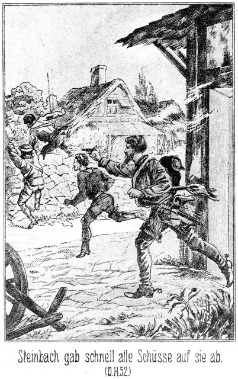Ein genaues Zielen gab es in dieser Dunkelheit und während des Springens nicht; dennoch richtete Steinbach den Revolver auf die beiden Ersten und gab schnell alle sechs Schüsse auf sie ab. Dennoch kamen sie, ehe er sie erreichen konnte, über die Mauer hinüber.
Steinbach hatte sich durch das Schießen gar nicht aufhalten lassen. In weiten, mächtigen Sätzen schnellte er über den Hof hinüber und kam grad noch früh genug, den Dritten bei den Beinen zu ergreifen, als dieser sich bereits auf der Höhe der Mauer befand.
»Komm herab, Bursche! Wir wollen ein Wörtchen mit Dir sprechen.«
Bei diesen Worten gelang es ihm, den Flüchtling von der Mauer herab zu reißen, obgleich dieser sich an dieselbe festzuklammern versuchte. Jetzt waren auch die Andern zur Stelle.
»Hier habt Ihr ihn,« sagte Steinbach, indem er ihnen den Ergriffenen zuschleuderte. »Aber seid ganz still, damit ich die Schritte der beiden Andern hören kann. Ich muß wissen, wohin sie gehen.«
Er stieg gar nicht auf die vielleicht sieben Fuß hohe Mauer, sondern er trat zurück, nahm einen Anlauf und sprang mit einem einzigen Satze über dieselbe.
Draußen blieb er einen Augenblick lang lauschend stehen. Da, rechts, hörte er eilige, sich entfernende Schritte. Er sprang in möglichster Schnelligkeit in dieser Richtung davon. Das Geräusch seiner eigenen Schritte verhinderte ihn, diejenigen der Flüchtigen zu hören. Er blieb also stehen und horchte. Es war kein Geräusch mehr zu vernehmen. Er eilte weiter und blieb abermals stehen. Er hörte nichts. So auf das Geradewohl hinaus war die Verfolgung natürlich nutzlos; es blieb ihm nichts übrig, als umzukehren. Ein Gefangener war ja gemacht. Mit Hilfe von dessen Aussagen ließ sich jedenfalls mehr erreichen, als durch ein nutzloses Herumsuchen in unbekannter Gegend.
Als er die Mauer wieder erreichte, gab es innerhalb derselben einen bedeutenden Lärm. Die Stimme von Sennorita Emeria war zu hören. Dazu ertönte des Aldermanns kräftiges Fluchen. Steinbach machte nicht den Umweg nach der Hausthür, sondern er sprang wieder über die Mauer, in den Hof hinein.
Alfonzo war Derjenige, welchen man ergriffen hatte. Die beiden Andern waren über die Mauer entkommen. Sie rannten mit einander davon, der Stadt zu. Dabei erreichten sie Grasboden. Da verursachten ihre Schritte kein Geräusch und so kam es, daß sie Steinbach hörten, welcher sich noch auf steinigem Wege befand.
»Schnell links ab! Wir müssen einen Winkel laufen! Die Verfolger werden gradeaus rennen,« sagte Walker, vom Laufen und von der Aufregung ganz athemlos.
Sie brachen also im rechten Winkel von ihrer bisherigen Richtung ab. Als sie vielleicht fünfzig Schritte zurückgelegt hatten, blieb Walker stehen und hielt Bill am Arme an.
»Nieder auf die Erde! Horchen wir!«
Sie warfen sich platt auf den Boden und lauschten. Steinbach ging jetzt zwar auch auf Rasenboden, da aber die Beiden ihre Ohren hart an die Erde hielten, konnten sie seine Schritte hören. Sie vernahmen, daß er stehen blieb. Jedenfalls horchte er nach ihren Schritten in die Nacht hinaus.
»Jetzt hat er uns verloren!« flüsterte Bill.
»Soll uns auch nicht finden.«
»O, es kann ihm auch einfallen, hierher zu kommen.«
»Das wäre nicht nur ein Ein-, sondern auch zugleich ein Zufall. Aber still, sonst hören wir nicht, was er thut.«
Nach einiger Zeit hörten sie seine langsamen Schritte in der Richtung hin, aus welcher sie und auch er gekommen waren.
»Ah, er kehrt zurück. Er giebt die Verfolgung auf,« meinte Bill.
»Es scheint so. Wer mag es sein?«
»Habe ihn nicht gesehen.«
»Ich auch nicht. Der Kerl hat sogar geschossen. Hat er Euch vielleicht getroffen?«
»Nein.«
»Mich auch nicht. Ein Glück, daß er nicht zielen konnte. Hoffentlich ist Alfonzo auch entkommen.«
»Das glaube ich nicht. Er war weit zurück. Er war noch hinter mir.«
»Sapperment! Wenn sie ihn ergriffen hätten!«
»Er wird doch nichts gestehen!«
»Ich glaube, daß er leugnen wird. Aber dennoch möchte ich Gewißheit haben, ob er erwischt worden ist. Kehren wir nach der Mauer zurück!«
»Das ist gefährlich!«
»Pah! Wir werden vorsichtig sein. Nur ganz leise auftreten. Kommt!«
Sie schlichen auf den Fußspitzen zurück und erreichten die Mauer ohne Hinderniß. Hinter derselben im Hofe ging es laut zu. Eine Stimme sagte vernehmlich:
»Das machst Du uns nicht weiß, Schurke.«
»Ich sage die Wahrheit, Sennor!«
»Das ist Alfonzo's Stimme,« flüsterte Walker. »Sie haben ihn also doch ertappt!«
Die vorige Stimme fuhr fort:
»Was Du wahr nennst, ist doch erlogen!«
»Fragt sie selbst. Sie ist meine Geliebte!«
»Gut, ich werde sie kommen lassen, obgleich ich überzeugt bin, daß Deine Anwesenheit mit dieser Liebschaft nichts zu schaffen hat. Sennorita Emeria, wo befindet sich Henrietta, Eure Magd?«
So weit hörte Walker die Verhandlung an. Dann nahm er Bill beim Arme und zog ihn mit sich fort.
»Kommt! Ich weiß genug.«
»Was war das mit der Henrietta, der Magd?«
»Eine famose Ausrede Alfonzo's. Ja, der Kerl ist nicht dumm. Er hat jedenfalls gesagt, daß er zu der Magd wollte, sie sei seine Geliebte.«
»Ist sie das?«
»Na, dieses Frauenzimmer ist die Geliebte von Jedermann. Alfonzo hat also nicht gerade eine Unwahrheit gesagt. Straft ihn das Mädchen nicht Lügen, so wird man ihn entlassen müssen.«
»Ja, er ist ja nicht gesehen worden, droben in der Stube. Mich aber haben sie genau erkannt.«
»Nicht wahr, sie hatten Licht?«
»Leider!«
»Vorher aber haben wir ja keines bemerkt!«
»Sie hatten es hinter dem Bette versteckt.«
»Donnerwetter! Hast Du das genau gesehen?«
»Natürlich. Als ich den Schrank öffnete, war es noch finster; dann aber wurde plötzlich die Decke weggenommen, welche das Licht verhüllte.«
»So ist es gewiß und sicher, daß sie uns erwartet haben!«
»Anders kann es gar nicht sein.«
»Woher aber können sie von unserer Absicht Etwas erfahren haben?«
»Das ist auch mir unbegreiflich. Ich habe nichts gesagt und Alfonzo jedenfalls auch nichts.«
»Außer mir und Euch weiß nur noch Donna Miranda von der Sache. Die nun hat am Allerwenigsten davon gesprochen.«
»Ja. Aber – Jemand muß doch Etwas gesagt haben.«
»Du zweifelst? Hältst Du sie für eine Verrätherin?« fragte Walker fast zornig.
»Für eine Verrätherin nicht; aber sie kann ja vielleicht unvorsichtig gewesen sein.«
»Auch das nehme ich nicht an. Uebrigens ist sie ja daheim. Sie ist nicht aus dem Hause gekommen. Wie also sollten Diejenigen, welche hier auf uns warteten, es von ihr erfahren haben?«
»Es ist ja Einer da, welcher – – Sapperment, davon haben wir ja noch gar nicht gesprochen. Das habe ich Euch ja noch nicht gesagt. Sagt mir doch einmal, wer sind die beiden Reiter gewesen, welche heute zu uns gekommen sind?«
»Der Fürst der Bleichgesichter und der dicke Sam.«
»Nun, der Erstere, dieser verfluchte Steinbach, war mit droben in der Stube. Und wie ich ihn kenne, so ist er auch Derjenige gewesen, welcher der Erste hinter uns gewesen ist, auf uns geschossen, Alfonzo ergriffen und dann uns noch weiter verfolgt hat.«
»Verdammt! Hast Du richtig gesehen?«
»Ja. Ich habe Alle erkannt, welche sich im Zimmer befanden. Es war ja hell genug dazu.«
»Nun, wer war denn Alles da?«
»Zunächst der Aldermann, sodann – – –«
»Der Aldermann?« fiel Walker ein. »Man hat also sogar die Behörde requirirt! Dann ist es unumstößlich sicher, daß unser Vorhaben verrathen gewesen ist. Das ist eine heillose Geschichte. Weiter!«
»Sodann waren noch da Master Günther, Steinbach, der Apachenhäuptling – – –«
»Ah, deshalb also der Geruch nach Kinnikkinnik!«
»Und zuletzt Wilkins. Er war es, welcher den Vorhang vom Lichte nahm.«
»Himmeldonnerwetter! Sollte mich dieser Günther betrogen haben? Sollte er zu dieser Bande gehören?«
»Das ist sehr leicht möglich.«
»War der dicke Sam dabei?«
»Nein.«
»So ist er noch draußen bei uns. Nun ist mir Alles klar. Steinbach und der Dicke haben in unserer Wohnung von dem Anschlage gehört. Von wem und auf welche Weise, das ist mir freilich noch ein Räthsel. Jedenfalls aber wird sich dies aufklären. Der Dicke ist als Wächter zurückgeblieben; Steinbach aber ist nach der Stadt geritten, um uns abzufassen. Wir Beide sind ihnen entkommen. Nun weiß ich, was geschehen wird. Sie werden sich schleunigst in meine Wohnung begeben, um uns abzufangen.«
»Himmelelement! Was ist da zu thun?«
»Es giebt nur Eins: Wir gehen ihnen aus dem Wege.«
»Das ist auch mir das Liebste und auf alle Fälle das Klügste, was wir thun können.«
»Ja. Ergreifen lassen darf ich mich nicht, sonst klopfen sie mir so viel Motten aus dem Pelze, daß ich daran ersticken muß.«
»Mir würde es ebenso ergehen. Freilich muß es Euch um Eure schöne Wirthschaft leid thun, welche Ihr nun verlassen müßt.«
»Pah! Ich gebe sie ja nicht für immer auf. Ich bin seit heut Mittag verreist. Man hat mich ja nicht gesehen. Wie lange wird es dauern, so sind Wilkins, Sam, Steinbach und sie Alle nicht mehr da. Wer will mich dann anklagen? Wo kein Kläger ist, da ist auch kein Richter. Ich werde Donna Miranda meine Instructionen geben. Die ist zuverläßlich und wird sich so verhalten, daß ich ohne Sorgen später zurückkehren kann.«
»Hm! Ich traue keinem Frauenzimmer!«
»Alles mit Ausnahme.«
»Ich habe keine Ausnahme gefunden. Ihr könnt mir glauben, daß ich an Frauenzimmern wohl mehr trübe Erfahrungen gemacht habe als Ihr.«
»Möglich. Zunächst bin ich aber gezwungen, mich auf Miranda zu verlassen. Uebrigens thut es mir gar nicht etwa leid, daß ich hier für einige Zeit verschwinden muß. Wir müßten ja so auch fort. Wir wollen ja zunächst nach Mohawk-Station, um die Mädchens zu holen, und sodann nach dem Thale des Todes. Leflor und Roulin warten auf uns.«
»So suchen wir sie jetzt gleich auf?«
»O nein. Wir gehen nur in den Garten der Venta, um unsere Pferde zu holen. Dann reiten wir schnell hinaus nach dem Waldhause. Ich muß Miranda meine Instruction ertheilen und das verrätherische Geld zu mir stecken.«
»Daran handelt Ihr sehr klug,« lachte Bill.
»Erstens brauchen wir zu unserem Ritte Geld, und zweitens werde ich es doch nicht liegen lassen, um es dieser Bande oder der Obrigkeit zu ermöglichen, es an sich zu nehmen. – Hier ist der Garten der Venta, und da stehen unsere Pferde. Steigen wir auf!«
»Hm! Ist es nicht besser, wenn ich hier bleibe?«
»Warum? Ich befinde mich in Gefahr, und da ist mir ein zuverlässiger Begleiter nur erwünscht.«
»Dieser Begleiter aber kann Euch unter Umständen mehr schaden, als nützen.«
»Wieso?«
»Einer kommt stets besser und leichter durch als Zwei. Steinbach ist ein kluger und thatkräftiger Mensch. Er wird darauf dringen, schnellstens nach dem Waldhause zu reiten. Wir können diesen Sennores sehr leicht begegnen. Euch allein würden sie nicht bemerken, als wenn ich mit dabei wäre.«
Der frühere Derwisch war ein Bösewicht, keineswegs aber ein sehr muthiger Mann. Er sprach also nicht aus Klugheit so, sondern es war ihm angst, daß er erwischt werden könne. Dennoch ging Walker darauf ein, indem er nachdenklich meinte:
»So unrecht ist das freilich nicht.«
»Und Ihr müßt bedenken, daß Leflor und Roulin bereits so lange auf uns gewartet haben. Ehe wir vom Waldhause zurückkehren, vergehen vielleicht vier Stunden. Da können sie leicht die Geduld verlieren und ohne uns aufbrechen.«
»Sapperment! Das ist ihnen freilich zuzutrauen. Sie können allerdings leicht auf den Gedanken kommen, ihre Angelegenheit ohne mich zu ordnen. Da würden sie das Schaf scheeren, ohne mir ein einziges Flöckchen Wolle zukommen zu lassen. Du hast sehr Recht, Bill. Ich reite allein. Gehe Du hinein und halte sie bei Geduld. Ich werde mich so sehr wie möglich sputen.«
Er zog sein Pferd aus dem Garten, stieg auf und ritt davon. Natürlich hütete er sich dabei, der Venta der gelehrten Emeria zu nahe zu kommen. Er machte einen Umweg in das Feld hinein und bog erst in der Nähe des Waldes in den richtigen Weg ein.
Dort blieb er halten. Er hatte ein Geräusch hinter sich gehört. Nachdem er einige Sekunden lang aufmerksam gelauscht hatte, bemerkte er, daß er sich nicht getäuscht habe. Es war der Hufschlag mehrerer Pferde hinter ihm. Er war also den Verfolgern doch noch zuvorgekommen.
Jetzt setzte er sein Pferd in Trab. Es kannte den Weg noch genauer als sein Herr, und strauchelte nicht ein einziges Mal. Der Boden des Waldweges war, einzelne daliegende Steine abgerechnet, weich, und so gaben die Hufe keinen lauten Schall. Walker nahm an, daß die Verfolger viel langsamer reiten mußten als er; sie waren schon durch ihre Anzahl dazu gezwungen. Er hatte also genug Zeit vor sich zu Dem, was er thun wollte.
In der Nähe des Hauses angelangt, zog er es vor, sein Pferd nicht mitzunehmen. Er führte es seitwärts in den Wald und band es dort an. Dann ging er nach dem Thore. Er führte den Schlüssel zu demselben stets bei sich und schloß leise auf.
Als er eintrat, bemerkte er, daß Jemand da am Boden saß.
»Wer ist da?« fragte er.
»Ich es sein, Massa,« antwortete der Neger. »Wo Ihr auf einmal Schlüssel – – –«
Er hatte Walker für Steinbach gehalten und wollte ihn fragen, wo er auf einmal den Schlüssel her habe. Mitten im Satze aber fiel es ihm ein, daß Derjenige, welcher vor ihm stand, sein Herr sein müsse, grad weil dieser den Schlüssel hatte. Daher brach er so schnell in seiner Rede ab.
»Was ists mit dem Schlüssel?« fragte Walker, in welchem ein Mißtrauen aufstieg.
»Ich nicht wissen. Mir träumen von Schlüssel.«
Die Angst gab ihm diese Ausrede ein. Glücklicher Weise fand sie bei Walker Glauben.
»Altes Traumbild! Was hast Du überhaupt hier zu schlafen!«
»Ich müde sein; hier nicht heiß sondern kühl.«
»Du bist doch nur ein Vieh wie jeder Niggro. Schläft der Kerl hier auf den Steinen! Wie lange liegst Du bereits hier?«
»Nicht sehr ein einzig Viertelstunde.«
»Und hast Du vorher geschlafen?«
»Nein.«
»So hast Du Alles gehört, was im Hause geschehen ist?«
»Ja.«
»Nun, was ist geschehen?«
»Nichts. Alles schlafen.«
»Sind Fremde da?«
»Ja. Zwei.«
»Wie heißen sie?«
»Ich nicht wissen. Ein Massa sein dick und klein, und anderer Massa sein lang und stark.«
»Sind Beide noch da?«
»Ja, Beide noch sehr ganz da.«
»Es ist keiner fort? Nicht der Lange, Starke?«
»Nein. Ich nicht hab sehen.«
»Hm! Wo logiren sie?«
»Droben hinter Söller in zwei kleinen Stube an Hausecke.«
»Wo haben sie gegessen?«
»Bei Missus Miranda.«
»Ah! Hm! Du kannst hier bleiben, sagst aber keinem Menschen, daß Du mich gesehen hast. Verstanden?«
»Ich sehr verstehen.«
»Gehorchst Du nicht, so bekommst Du morgen die Peitsche, daß die Haut platzt.«
»O, Massa, ich nicht haben wollen Peitsche, sondern ich lieber behalten wollen Haut!«
»So schweige also!«
Dieses Gespräch war so leise geführt worden, daß es für Andere gar nicht zu hören war. Jetzt nun schlich Walker sich hinauf in sein Zimmer. Dort öffnete er im Dunkeln sein Pult und steckte alles Geld zu sich, welches sich in demselben befand. Auch Waffen und Munition nahm er zu sich. Eine gewisse Summe behielt er in der Hand. Sie war für Miranda bestimmt, damit diese während seiner Abwesenheit nicht ohne Mittel sei.
Deshalb begab er sich nun leise nach dem Zimmer der Donna, um diese zu wecken.
»Miranda!«
Keine Antwort.
Er wiederholte den Ruf, und als auch das ohne Erfolg war, trat er an das Lager. Es war leer.
Da stieg ein Verdacht in ihm auf. Sie hatte mit den beiden Fremden gegessen. Jetzt befand sie sich nicht in ihrer Stube. Einer der Beiden war in der Stadt. Sollte sie die Verrätherin sein?
Er schlich sich weiter, aus einem Zimmer in das andere. Er fand die Gesuchte nicht. Nun trat er hinaus auf den Söller und ging leise nach der Seite, wo die Fremden einquartirt waren. Er lauschte an der einen Thür. Er hörte nichts. Er horchte an der anderen. Auch da war es ruhig.
Schon wollte er zurücktreten, als er einen tiefen Seufzer hörte und dann die Worte:
»Sennor, laßt Euch doch erbitten!«
Das war Miranda's Stimme.
»Ruhig,« gebot eine männliche Stimme.
»Gebt mich doch frei!«
»Sprecht nicht so laut, sonst gebe ich Euch zu den Fesseln auch noch einen Knebel!«
Walker erschrack. Miranda war gefangen. Von wem? Jedenfalls von dem dicken Sam. Wie war das gekommen? Hatten Steinbach und Sam sie vergewaltigt, um ihr ihre Geheimnisse zu entlocken, und hatte sie dabei gestanden, was für heute Abend in der Venta der gelehrten Emeria beabsichtigt worden sei? Das ließ sich doch wohl nicht gut denken. Wie aber kam es, daß sie sich hier bei dem Dicken im Stübchen befand?
Das war sehr einfach.
Steinbach hatte einen viel tieferen Eindruck auf Miranda gemacht, als sie sich merken ließ. Während Sam mit dem Schwarzen draußen bei den Pferden sprach, hatte sie es gewagt, einige deutlichere Andeutungen zu geben, war aber streng zurechtgewiesen worden. Als sie sich trotzdem zu einer abermaligen Bemerkung hinreißen ließ, stand Steinbach von seinem Stuhle auf und bat um ein Licht, da er müd sei und schlafen wolle. Sie mußte ihm seinen Wunsch erfüllen.
Aber als er sich dann mit Sam zurückgezogen hatte und sie sich allein befand, überkam es sie mit leidenschaftlicher Gewalt, diesen Mann entweder zu besitzen, oder ihn zu verderben. Sie schritt erregt im Zimmer auf und ab. Sie betrachtete sich im Spiegel. Sie konnte gar nicht glauben, daß sie keinen Eindruck auf ihn gemacht habe. Sie sagte sich, er sei als Feind Walkers gekommen, und so halte er es für seine Pflicht, kein süßes Gefühl in sich aufkommen oder gar bemerken zu lassen. Er war vielleicht verliebt in sie, von ihren Reizen besiegt und hingerissen, aber seine Feindschaft zu Walker erlaubte es ihm nicht, diesen Regungen Folge zu leisten.
In diesen trügerischen Gedanken arbeitete sie sich immer weiter hinein. Sie hielt es zuletzt für unmöglich, daß sie sich täusche. In ihren Wünschen standen Zwei sich einander gegenüber: Walker und Steinbach. Wem gab sie den Vorzug? Ihm, ihm und wieder ihm! Wenn sie sich auf seine Seite stellte, so durfte er auch bekennen, daß er sie liebe.
Dieser Gedanke berauschte sie. Sie glaubte gar nicht, irren zu können; sie war im Gegentheile ihrer Sache so gewiß, daß sie beschloß, unverzüglich zu handeln. Sie prüfte noch einmal ihr üppiges, zum Besitz aufforderndes Spiegelbild, verlöschte dann das Licht und schlich sich nach dem Stübchen, welches sie Steinbach angewiesen hatte.
An der Thür desselben angekommen, horchte sie. Es war ganz still darin. Sollte er schlafen?
Sie öffnete leise, trat ein und machte hinter sich zu. Ruhige, regelmäßige Athemzüge gaben ihr die Gewißheit, daß Steinbach wirklich schlafe.«
Sie irrte doppelt. Nicht Steinbach, sondern Sam befand sich hier, und dieser schlief nicht, sondern er war im Gegentheile sehr munter. Er mußte ja wachen. Um das Thun und Alles, was passirte, hören zu können, hatte er sein Stübchen verlassen und sich hinaus auf den Söller gesetzt. Er hatte das leise Geräusch der Thür gehört. Der Schein der Sterne erleuchtete den Söller genugsam, daß es den Luchsaugen Sams leicht war, die weißgekleidete, halb aber unverhüllte Gestalt Miranda's nahen zu sehen. Er zog sich also schnell und unhörbar in das Stübchen zurück, machte die Thür zu, legte sich auf die Matratze und kicherte in sich hinein:
»Also hatte dieser Steinbach doch Recht: Sie kommt, sie naht. Na, freue Dich, Mirandchen! Es wird sehr schön werden! O, Sam, alter Junge, jetzt kannst Du beweisen, daß Du unwiderstehlich bist und daß Du das Maul grad noch so spitzig machen kannst wie damals bei der Auguste auf dem Schweinestalle in Ruppertsgrün!«
Jetzt wurde die Thür geöffnet, und sie trat ein. Nachdem sie dieselbe wieder zugeklinkt hatte, verging eine Pause. Er athmete so, daß sie glauben mußte, er schlafe.
»Sennor!« flüsterte sie.
Er antwortete nicht.
»Sennor!«
Er schlief scheinbar fest.
Da trat sie zu ihm herbei und berührte ihn mit der Hand.
»Sennor Steinbach!«
»Uuuu – – aaaah!«
Er streckte sich aus.
»Sennor! Wollt Ihr nicht erwachen?«
»Verdammte Ratte!«
Sie hatte ihn wieder berührt, und er schlug mit der Hand nach dieser Stelle.
»Es ist keine Ratte. Ich bin es!«
Jetzt schien er ganz zu erwachen und sich zu besinnen.
»Sennor Steinbach, erschreckt nicht!«
»Sapperment! Wer ist da?«
»Ich bin es!«
»Ich? Nein, ich bin es eben nicht!«
»O doch, ich, Miranda.«
»Himmel! Ihr!«
Sie hatte nur geflüstert, er seine ersten Worte auch. Die letzteren aber sagte er Etwas lauter; darum warnte sie erschrocken:
»Bitte, leise, leise! Sennor Barth liegt neben Euch, und es ist nur eine dünne Holzwand dazwischen. Er darf uns nicht hören.«
»Warum nicht?«
»Was ich Euch zu sagen habe, ist nur für Eure Ohren, nicht aber für andere.«
Er gab sich Mühe, Steinbachs Stimme nachzuahmen. Ueberdies war dies gar nicht so schwierig. Beim Sprechen im Flüstertone klingen auch sonst sehr verschiedene Stimmen einander sehr ähnlich. Etwas Anderes aber war das Uebrige. In nähere Berührung mit seinem Körper durfte er sie nicht kommen lassen, sonst mußte sie unbedingt fühlen, daß sie an eine etwas zu dicke Adresse gerathen sei. Ein Kuß – hm, ein Kuß konnte vielleicht gewagt werden. Sam trug ebenso Vollbart wie Steinbach; aber die dicken Backen, das kleine Näschen – ein Wagniß blieb es immerhin.
So überlegte Sam hin und her. Das dauerte nicht etwa lange Minuten, sondern diese Erwägungen zuckten mit der Schnelligkeit des Blitzes durch sein Gehirn. Er hielt den gegenwärtigen Augenblick für sehr wichtig. Wenn sie ihn auch ferner für Steinbach hielt und er liebenswürdig zu ihr war, so ließen sich ihr vielleicht Geständnisse entlocken, die sie sonst nicht gegeben hätte. Aber ob er, Sam, gescheidt genug sei, es in dieser Beziehung mit einem so vielerfahrenen und in der Liebe raffinirten Frauenzimmer aufzunehmen, darüber befand er sich nicht ganz in Klarheit. Doch antwortete er auf ihre letzten Worte:
»Gut! Master Barth braucht nichts zu hören. Was aber ists, das Ihr mir mittheilen wollt?«
»Das läßt sich nicht so schnell sagen. Es spricht sich hier so schlecht. Wir dürfen nur flüstern; ich stehe, und Ihr liegt; das ist unbequem. Wenn ich mich wenigstens setzen könnte!«
»Ihr habt sehr Recht, setzt Euch da neben mir auf die Matratze. So!« sagte er. »Jetzt können wir uns gemüthlich unterhalten.«
»Darf ich vielleicht erfahren, was für einen Eindruck ich auf Euch gemacht habe?« begann sie leise.
»Da müßte ich sehr aufrichtig sein.«
»Das wünsche ich ja eben.«
»Nun gut. Ihr kommt mir so zutraulich, so sanft, so zart, so weich, so mollig, so liebenswürdig – – –«
»O bitte!« fiel sie sehr geschmeichelt ein. Dabei rückte sie ihm ein Wenig näher. Sie glaubte, daß er jetzt beginnen werde, liebenswürdig zu sein.
»Ah! Laßt mich nur aussprechen, Donna Miranda! Also Ihr kommt mir so weich, so mollig, so anschmiegend vor wie – wie – na, grad wie eine Cyperkatze.«
»Himmel!« fiel sie ein. »Cyperkatze!«
Dabei rückte sie schnell wieder von ihm weg.
*
»Ja, und zwar wie eine dreifarbige. Die sind nämlich selten und werden zu den Schönheiten des Katzengeschlechts gerechnet. Schön seid Ihr, ja, sogar sehr schön!«
»Aber eine Katze!«
»Na, ein Vergleich!«
»Aber kein schmeichelhafter!«
»Es fiel mir kein anderer ein. Und vielleicht ist er zwar nicht schmeichelhaft, aber doch sehr richtig.«
»Wollt Ihr mich beleidigen?«
»O nein. Ihr habt sicherlich ein so schönes, warmes, weiches Fell. Aber wenn man es streichelt, kommen die Funken geflogen.«
»Versucht es doch einmal!« sagte sie ärgerlich.
»Jetzt noch nicht. Und die Aeuglein, die sind so mild und freundlich; aber – brrr!«
»Sennor! Ihr kennt mich nicht!«
»Wollen sehen. Das miaut so zart, so liebenswürdig. Und wenn man so ein süßes Viehzeug liebkost, da schnurrt und summt es behaglich, aber in demselben Augenblick zeigt es die Zähne und Krallen und beginnt zu pfauchen, daß, daß – –«
»Pfauchen? Was ist das?«
»Habt Ihr es noch nicht gehört? Wenn ein Hund einer Katze zu nahe kommt, so macht sie einen Buckel, ringelt den Schwanz wie eine Klapperschlange und – – ppppchchchchchcht, fährt sie auf ihn los und haut ihm mit den Krallen die Augen aus.«
Jetzt war das schöne Weib wirklich erzürnt. Sie rückte noch weiter ab und stieß den Athem so schnell und gewaltsam aus, daß es halb wie ein unterdrücktes Pfeifen und halb wie ein leises Zischen klang.
»Hört Ihrs!« sagte er. »Das, grad das habe ich gemeint. Ihr fangt schon an zu pfauchen. Ja, da habt Ihr es! Habe ich es nicht gleich gesagt! Wenn so ein alter Hund, wie ich es bin, einer Katze zu nahe kommt, so geht der Krawall los. Aber ich bin ja gar nicht zu Euch gekommen, sondern Ihr zu mir; schuld bin ich also nicht.«
»Aber Ihr seid grob!«
»Nein, sondern nur aufrichtig. Ihr habt von mir wissen wollen, welchen Eindruck Ihr auf mich gemacht habt. Ich habe es Euch ehrlich gesagt. Gefällt es Euch nicht, so habt Ihr Euch den Aerger selbst zuzuschreiben.«
»Gegen eine Dame ist man doch nicht in dieser Weise aufrichtig, Sennor Steinbach.«
»Leider habe ich nur eine einzige Sorte von Aufrichtigkeit, also kann ich Euch auch nicht mit einer andern dienen. Uebrigens ist es ja möglich, daß ich mich in Euch geirrt habe. Wir brauchen uns also nicht sogleich zu beißen.«
Sein Verhalten kam ihr sonderbar vor. Steinbach war kalt, abweisend und wortkarg gegen sie gewesen, nicht aber so grob und rücksichtslos wie jetzt. Sie sagte sich, daß er ermüdet gewesen und von ihr im Schlafe gestört worden sei. Das macht manche Menschen grillig, ohne daß sie es sein wollen. Sie nahm sich in Folge dessen vor, ihm nicht zornig zu sein und sagte:
»Gut, Sennor, ich will Euch also nicht beißen.«
»Na, Eure Zähne würden an meinen Knochen auch nicht viel Delicates gefunden haben. Es hat mir schon Manche gesagt, daß aus mir nichts Gutes heraus zu schmoren ist.«
»Manche? Habt Ihr so viele Bekanntschaften gehabt?«
»Na und ob!«
»Da habe ich mich in Euch getäuscht.«
»So ist es! Ihr habt keine Ahnung von meinen Vorzügen. Als ich zwanzig Jahre zählte, hatten mich schon drei Bertha's, vier Anna's, fünf Emilien, sechs Auroren, sieben Rosalien, acht Karolinen, neun Wilhelminen und zehn andere Minen angebetet. Die Hälfte von ihnen ist an unerwiderter Liebe zu Grunde gegangen. Ich habe sie auf meinem Gewissen; aber ich mache mir nichts draus, denn ich bin doch nicht schuld, daß ich so anziehend und unwiderstehlich bin.«
Sie antwortete nicht. Sie schwieg eine ganze Weile. Sie wußte nicht, wie sie sich sein Verhalten deuten sollte. Es konnte zwei Gründe geben. Sie hatte ihm den Eindruck, den er auf sie gemacht hatte, merken lassen; nun wies er sie mit dieser Ironie, mit diesem Sarkasmus ab, indem er sie mit diesen Karolinen, Wilhelminen und Rosalien in einem Topfe kochte. Oder er hatte wirklich einmal geliebt, aber unglücklich und sagte nun in seinem Galgenhumor das gerade Gegentheil. Sie fühlte sich in der Stimmung, das Letztere anzunehmen. Darum sagte sie endlich in beruhigendem Tone:
»Erinnert Euch nicht mehr an jene Zeit! Sie ist vorüber. Man soll für die Gegenwart leben und die Rosen pflücken, wo man sie findet.«
»Hm! Wo fände ich eine?«
»Seht Euch um!«
»Es ist ja finster!«
»Sennor, ich begreife Euch nicht!«
Sie tastete nach ihm hinüber und legte ihm die Hand auf die Schulter. Er fühlte den leichten, warmen Druck und lachte leise zu ihr herüber:
»Da, jetzt kommt das Schmeichelkätzchen!«
»Die Cyperkatze!« schmollte sie, indem sie die Hand wieder zurückzog.
»Na, in dieser Weise lasse ich mir das kleine, allerliebste Krallchen schon gefallen. Hoffentlich ist es auch ehrlich gemeint.«
»Ganz gewiß.«
»Nun gut! So thut endlich auch das kleine Mäulchen auf und miaut mir einmal vor, welche Angelegenheit Euch zu mir geführt hat.«
»Das werde ich doch lieber nicht thun.«
»O wehe!«
»Ja, es wird das Beste sein.«
»Warum?«
»Ihr befindet Euch nicht in der Stimmung, in welcher ich Euch zu finden hoffte.«
»Welche wäre das?«
»Ich glaubte, Ihr würdet ernst und theilnehmend sein.«
»Bin ich das nicht?«
»Nein. Ihr seid das strikte Gegentheil. Von Theilnahme ist keine Spur und mit dem, was ich Euch sage, scheint Ihr Scherz oder gar Spott zu treiben.«
»Keineswegs. Ihr irrt Euch da ganz gewaltig. Ihr habt mir ja noch gar nichts gesagt, also kann ich weder Theilnahme dafür haben, noch meinen Spott damit treiben. Ich erwarte noch immer vergebens, Eure Mittheilungen zu empfangen.«
»O, wenn Ihr nur wolltet, so würdet Ihr wissen, was ich Euch sagen will!«
»Der Teufel soll mich holen, wenn ich nur die allermindeste Ahnung davon habe.«
»Sennor, zart drückt Ihr Euch in Gegenwart einer Dame nicht aus!«
»Nicht? Gut, so soll mich der Teufel nicht holen! Seid Ihr damit zufrieden, Sennorita?«
»Ja. Also Ihr errathet nichts?«
»Vielleicht doch.«
»Nun? Rathet einmal!«
»Ihr kommt wegen Sennor Robin. Ihr wollt mir irgend eine Mittheilung machen, welche sich auf ihn bezieht.«
»Errathen!«
»Schön! Also redet, Sennorita!«
»Errathet Ihr denn nicht vielleicht, was ich Euch von ihm sagen möchte, Sennor Steinbach.«
»Vielleicht, wenn ich mir nämlich Mühe gebe.«
»Nun, so denkt einmal darüber nach.«
»Ich denke mir nämlich, daß Ihr nämlich mit Sennor Robin nicht mehr so content seid, wie es eigentlich sein sollte. Habe ich Recht?«
»Ja. Aber wie kommt Ihr auf diesen Gedanken. Ihr müßt doch einen Grund haben!«
»Meinetwegen, ja. Wenn Ihr Euch mit ihm so ständet, wie es sein sollte, so wäret Ihr doch wohl nicht hier bei mir. Nicht wahr, Sennorita?«
»Allerdings. Aber warum glaubt Ihr denn, daß ich hier bei Euch bin aus Gegnerschaft zu ihm?«
»Pah! Ihr seid doch seine Geliebte?«
»Hierauf habe ich keine Antwort.«
»Damit gebt Ihr zu, daß ich das Richtige getroffen habe. Hättet Ihr ihn lieb, so wäret Ihr ihm treu, so würde es Euch gar nicht einfallen, einem seiner Gäste einen verstohlenen nächtlichen Besuch zu machen.«
»Ihr scheint ein sehr scharfsinniger Mann zu sein.«
»O nein. Ich habe nur den gewöhnlichen, hausbackenen Menschenverstand. Was gefällt Euch denn an ihm nicht mehr?«
»Diese Frage könnte ich Euch nur dann beantworten, wenn ich Eurer Verschwiegenheit sicher wäre.«
»Ich bin keine Plaudertasche.«
»Und ich müßte wissen, wie Ihr zu ihm steht.«
»Ich stehe mich gar nicht zu ihm.«
»Was soll das heißen?«
»Ich bin weder sein Freund noch sein Feind.«
»Er ist Euch also gleichgiltig.«
»Ja, sehr.«
»Warum kommt Ihr da zu ihm?«
»Eines kleinen Geschäftes wegen, welches aber mit seiner oder meiner Gesinnung gar nichts zu thun hat.«
»Kennt Ihr ihn von früher?«
»Nein.«
»Welch ein Geschäft ist es, das ihr mit ihm machen wollt?«
»Ich habe Lust, mich hier niederzulassen und möchte ihn fragen, ob er vielleicht sein Haus verkauft.«
»Lüge!« dachte sie.
»Ich hörte, daß Ihr unverheirathet seid. Wenn Ihr ein eigenes Haus besitzt, so müßt Ihr doch eine Person haben, welcher Ihr die Führung der Wirthschaft anvertraut.«
»Natürlich.«
»Kennt Ihr schon eine Dame?«
»Leider nicht.«
»So brauchtet Ihr Euch eigentlich nach gar keiner umzusehen. Ich würde mich freuen, wenn ich hier wohnen bleiben könnte, Sennor.«
»Dieser Gedanke ist gar nicht übel. Leider aber habe ich das Haus noch nicht und kann Euch also auch noch keine Zusage geben.«
Das Gespräch stockte eine kurze Weile. Miranda sah ein, daß sie auf diesem Wege nicht zu ihrem Ziele komme. Sie wollte ihn besitzen oder ihn verderben; welches von Beiden zu geschehen habe, das mußte sich noch vor Walkers Rückkehr entscheiden. Sie durfte also nicht zögern. Sie mußte die gegenwärtigen Augenblicke benutzen. Darum sprach sie in zutraulichem Tone:
»Fast möchte ich annehmen, daß Ihr mir nicht die Wahrheit gesagt habt.«
»Warum sollte ich das?«
»Weil es Euch an Vertrauen zu mir fehlt.«
»Ihr irrt Euch.«
»Das bezweifle ich.«
»Nun, was glaubt Ihr denn nicht?«
»Daß Ihr unser Haus kaufen wollt. Ihr seid jedenfalls in einer ganz anderen Absicht hier.«
»Ich habe keine andere Absicht, als ich Euch bereits sagte, Sennorita.«
»Pah! Ihr täuscht mich nicht!«
»Das will ich gar nicht!«
»Ich könnte Euch beweisen, daß Ihr mich täuscht.«
»Bitte, beweist es mir!«
»Sennor Robin ist Euch nicht gleichgiltig.«
»O, außerordentlich gleichgiltig.«
»Lügt nicht! Ihr seid sein Feind.«
»Fällt mir nicht ein.«
»Ihr seid sogar gekommen, ihn zu verderben.«
»Ich wüßte nicht, weshalb und auf welche Weise.«
»Das sagt Ihr, um mich zu täuschen. Aber das ist unrecht von Euch. Es wäre viel vortheilhafter für Euch, wenn Ihr aufrichtig sein und mir die Wahrheit sagen wolltet, Sennor.«
»Vortheilhaft? Hm!«
»Ja, gewiß. Ihr würdet an mir eine Verbündete gewinnen, welche Euch von großem Nutzen sein würde.«
»Alle Teufel! Das ist mir interessant. Ich habe doch richtig vermuthet, daß Ihr eine Katze seid, denn Ihr streichelt diesen Robin mit den Sammetpfötchen und mir bietet Ihr an, ihm die Krallen zu geben.«
»Er hat es verdient.«
»Womit?«
»Er ist mir untreu, er ist falsch, es ist gefährlich, bei ihm zu wohnen. Er thut Dinge, welche vom Gesetze verboten sind und wenn er dabei ergriffen wird, muß auch ich darunter leiden. Weil ich bei ihm wohne, wird man mich für seine Verbündete halten, obgleich ich das ganz und gar nicht bin.«
»Ganz und gar nicht? Wirklich?«
»Ja, ich kann es beschwören.«
»Nun, was sind denn das für gesetzeswidrige Dinge, von denen Ihr redet?«
Jetzt hatte sie ihn auf dem Punkte, auf welchen sie ihn hatte bringen wollen. Jetzt konnte sie genau nach ihrem Vortheile handeln. Der schlaue Sam hingegen dachte:
»Jetzt wird sie denken: Nun schnappt der Hecht zu! Prosit die Mahlzeit. Er beißt nicht an. Sie will mich übertölpeln, mich, den alten, dicken Sam. Da kommt sie an den Rechten. Ich werde ihr mit aller Gemüthlichkeit die heimlichen Mitesser aus der Nasenspitze quetschen. Darauf kann sie sich verlassen.«
Sie antwortete auf seine Frage:
»Ihr fragt mich da in einer Weise, welche mir ganz unbegreiflich ist.«
»Wieso unbegreiflich?«
»Ich soll Euch verrathen, was Robin für Verbrechen begangen hat.«
»Na, na! Von Verbrechen ist noch gar keine Rede gewesen. Ein Vergehen ist noch kein Verbrechen. So schlimm habe ich mir Eure Worte ja gar nicht ausgelegt.«
»Ich weiß besser, was Ihr denkt. Aber Mittheilungen, wie Ihr sie von mir verlangt, die macht man doch nicht dem ersten besten Fremden, die macht man doch nur einem Freunde, einem Verbündeten.«
»Nun, so wollen wir Beides sein. Es fragt sich nur, zu was wir uns verbünden wollen.«
»Ich meine Zweierlei. Erstens will ich mich an Robin rächen. Wollt Ihr mir dabei helfen?«
»Ja. Wollen wir ihn mit einem Stricke abmurxen, oder schlagen wir ihn einfach mit einem Knüppel todt?«
»Sennor, nicht so dumme Witze! Sie gehören nicht hierher. Wenn Ihr nicht ernster werdet, so kann ich kein Vertrauen zu Euch haben. Ich gehe dann und lasse Euch sehr einfach hier sitzen.«
»Hm, doppelt werde ich wohl auch nicht dasitzen. Aber Spaß bei Seite, was ist das Zweite, zu was wir uns verbünden wollen, meine liebe Sennorita?«
»Meine liebe Sennorita!« Das klang ihr wie mit silbernem Glockentone in die Ohren. Sollte er denn vielleicht doch von ihrer Schönheit bezaubert sein? Sollte sich nur seine rauhe Jägernatur gegen die angebotenen Zärtlichkeiten sträuben? Sie hoffte es. Darum legte sie ihm abermals die Hand auf die Schulter und flüsterte in innigem Tone:
»Schließen wir den süßesten Bund, den es auf Erden geben kann.«
»Süß? Sapperment! Da mache ich mit. Welchen Bund meint Ihr denn, Madonna Miranda?«
»Den Bund unserer Seelen.«
»Unserer Seelen? Alle Wetter. Ich habe keine Ahnung, wie man zwei Seelen zusammenschweißen kann. Ich bin mir überhaupt über meine Seele noch recht im Unklaren. Zuweilen denke ich, ich habe eine; zuweilen bin ich inwendig so leer, daß ich darauf schwören möchte, keine zu haben, und manchmal rumort es da drinnen auf eine solche Weise, daß ich es mit Siegel und Unterschrift bestätigen könnte, daß vierzig bis fünfzig Seelen in mir stecken.«
»Ihr seid und bleibt ein Spaßvogel! Ich habe mich freilich falsch ausgedrückt. Ich meinte nicht einen Seelen-, sondern einen Herzensbund.«
»Das ist etwas Anderes! Aber sagtet Ihr nicht, daß dieser Bund der süßeste sei?«
»Jawohl.«
»Hm! Das möchte ich bestreiten.«
»Warum?«
»Weil ein Herzensbund das Allerarmseligste ist, was es nur geben kann.«
»Das ist mir ganz neu!«
»Mir ist es aber eine alte Weste. Ich habe schon als Schulknabe gewußt, daß bei einem Herzensbunde nichts herauskommt, als nur die größte Armethei.«
»Ich verstehe und begreife Euch nicht.«
»Weil Ihr von spanischer Abstammung seid. Wäret Ihr eine Deutsche, so würdet Ihr mir sofort zustimmen. Wir Deutschen sind nämlich nüchtern und sehen beim ersten Blicke, was an einer Sache ist.«
»Solltet Ihr Deutschen wirklich glauben, daß aus einem Herzensbunde nur Elend folge?«
»Ja, nur Elend und Armethei. Einer unserer größten deutschen Dichter, den man deshalb auch Alexander den Großen von Macedonien genannt hat, der hat darüber folgendes rührende Gedicht gemacht:
Mein Herz und Dein Herz,
Das ist ein Klumpen;
Mein Rock und Dein Rock,
Das ist ein Lumpen!«
Sie zog die Hand schnell zurück. Am Allerliebsten wäre sie ihm mit den Nägeln in das Gesicht gefahren. Sie war jetzt überzeugt, daß er sie nur foppte. Oder sollte dies doch vielleicht nicht der Fall sein? Sie fühlte sich sofort besänftigt, als er in freundlichem Tone fortfuhr:
»Also von einem Herzensbunde mag ich nichts wissen. Was nützt mir das Herz eines Menschen, wenn nicht der ganze Kerl mein sein kann!«
»Ah, verstehe ich Euch recht?«
»Habt Ihr mich denn anders verstanden?«
»Ihr wollt nicht nur das Herz, sondern die ganze Person, das ganze Wesen?«
»Natürlich, Sennorita.«
»Das meine ich ja auch!«
»Pah! Ihr habt mir ja blos Euer Herz angeboten.«
»Unter dem Worte Herz verstehe ich doch meine Liebe, mein ganzes Fühlen.«
»Unsinn! Was nützt mir Eure Liebe und was thue ich mit allen Euren Gefühlen, wenn ich nicht die ganze Miranda bekommen kann! Kann ich Euer Gefühl umarmen? Kann ich Eure Liebe küssen? Kann ich mit Eurem Herzen spazieren reiten? Kann mir Eure Seele Kaffee kochen?«
»Nein, da habt Ihr sehr Recht,« kicherte sie leise. »Ihr nehmt die Sache freilich auf eine ganz und gar gegenständliche Weise.«
»Natürlich! Ich will Euer Gegenstand sein und Ihr sollt der meinige sein. Einen Gegenstand aber muß ich doch beim Schopfe fassen können, den muß ich fühlen, den muß ich unter Umständen vor lauter Liebe zerquetschen können. Das nenne ich einen Gegenstand. Aber, wohl gemerkt, Sennorita! Ich will Euer einziger Gegenstand sein! Ihr sollt nicht noch fünf Schock andere Gegenstände haben!«
»Ihr aber auch nicht!«
»Nein. Ihr genügt mir.«
»Also, das Bündniß ist geschlossen?«
»Ja, Sennorita.«
»Gut. Besiegeln wir es mit einem Handschlage und mit dem Kusse, welchen ich – –«
»Ihr seid nicht aufrichtig. Ich habe Euch so lieb, so sehr, so unendlich lieb; ich will Euch gehören, ich will die Eurige sein, Eure Wirthschafterin, Euer Weib, Eure Geliebte, ganz wie und was Ihr wollt, aber ich verlange, daß Ihr mir die Wahrheit sagt.«
»Kind, Du täuschest Dich!«
Er sprach das in freundlichem, besänftigendem Tone und ergriff dabei ihre Hand. Sie war überzeugt, er sei Steinbach. Die Berührung seiner Hand durchfluthete sie mit einem elektrischen Strome, welcher ihr ganzes Innere durchzitterte. Es war finster in dem Zimmerchen, dennoch aber bemerkte sie die Augen feuerroth auf den Augäpfeln liegen, so schoß ihr das Blut nach dem Kopfe. Sie mußte sich bezwingen, ihm nicht um den Hals zu fallen; aber sie glaubte, die ersehnte Stunde ihrer Wünsche sei gekommen; dieser Gedanke, dieses Bewußtsein machte alle ihre bisherige Vorsicht zu schanden. Sie drückte seine Hand mit den ihrigen beiden und sagte unter fliegendem Athem:
»Nein, ich täusche mich nicht, ich weiß es genau. Soll ich es Dir beweisen?«
»Ja, beweise es!«
»Du kennst Robin. Du weißt sogar, daß er eigentlich anders heißt!«
»Oho! Was ich nicht Alles wissen soll.«
Sie befand sich in hochgradiger Erregung. Der herrliche Mann, der so plötzliche Heißgeliebte saß neben ihr; sie hielt seine Hand in ihren Händen; alle ihre Pulse klopften; alle ihre Sinne waren erregt. Es gab für sie kein Bedenken, kein Zurückhalten, keine Vorsicht mehr. Sie mußte ihm beweisen, daß sie ihn durchschaue und damit mußte sie ihn zwingen, ihr sein Vertrauen zu schenken. Das war ihr einziges Trachten, ihr einziges Denken; einen anderen Gedanken zu haben, das war ihr jetzt unmöglich. Sie fuhr fort:
»Ja, das weißt Du!«
»Sapperment, so hat er einen anderen Namen?«
»Ja. Er heißt Walker.«
»Davon habe ich keine Ahnung.«
»Lüge nicht! Mit wem bist Du hier?«
»Mit meinem Gefährten Barth.«
»Mit keinem Andern?«
»Nein.«
Ihr Athem flog heiß zu ihm hinüber. Ihr Busen stürmte, er fühlte es am dem Arme, dessen Hand sie ergriffen hatte. Sie hätte beinahe laut gerufen, aber das durfte sie nicht; sie raunte ihm mit heiserer Stimme zu:
»Lügner! Kennst Du einen gewissen Wilkins?«
»Ja.«
»Wer ist das?«
»Ein Methodistenprediger in New-York.«
»Den meine ich nicht, sondern einen ganz anderen. Kennst Du die ›starke Hand‹, den Häuptling der Apachen?«
»Kennst Du Roulin, Bill Newton und Magda Hauser?«
»Wetterhexe! Bist Du allwissend?«
»Was Dich betrifft, ja.«
»Das ist gefährlich!«
»Ja, gefährlich kann ich Dir werden.«
»Wird Dir nicht einfallen! Wir haben uns versprochen, zwei gute Kameraden zu sein, und so will ich denn zugeben, daß ich diese genannten Personen alle kenne.«
»Diese Personen sind jetzt hier in Prescott, um sich der Person Walkers zu vergewissern?«
»Ich will Dir gestehen, daß wir beabsichtigen, ihn beim Zopfe zu nehmen.«
»Das wird Euch nicht gelingen. – Ihr werdet nur den Zopf erhalten. Er läßt Euch die Perrücke in der Hand und entflieht.«
»Pah! Wir haben auch Beine. Wir laufen ihm nach!«
»Wohin?«
»Grad dahin, wohin er auch gegangen ist.«
»Woher wißt Ihr das?«
»Wir erfahren es von ihm selbst. Er wird uns seine Spur zurücklassen.«
»Es mag sein, daß so berühmte Jäger jede Spur zu finden und zu lesen verstehen; aber er ist auch aller Ränke voll.«
»Wir werden ihm diese Ränke austreiben!«
»Wenn Ihr ihn bekommt. Aber ohne mich werdet Ihr ihn nicht ergreifen!«
»Nun, warum denn?«
»Weil er weiß, daß Ihr da seid.«
»Deine Mittheilung kann mich nicht überraschen. Du weißt Alles, also muß doch er auch Alles wissen. Du kannst es doch nur von ihm erfahren haben.«
»Das ist richtig. Aber von wem hat er es erfahren?«
»Das weiß ich freilich nicht.«
»Soll ich es Dir sagen?«
»Natürlich, Mirandchen!«
»Mirandchen! Schau, daß Du zärtlich sein kannst!«
»O, mehr als Du denkst. Du wirst staunen, welche Fülle von Zärtlichkeit ich entwickeln kann.«
»Bis jetzt merke ich davon noch nichts.«
»Das hat seine Gründe. Wenn ich lieben soll, dann will ich auch geliebt sein.«
»Ich liebe Dich!«
»Ja, ein Wenig, ein klein Wenig, für diesen Augenblick!«
»Nein nein, sondern für ewig und mit aller Macht meiner Seele!«
»Pah, Kind! Ereifere Dich nicht. Ich habe bis jetzt unser Gespräch ziemlich gleichgiltig genommen und dabei einige schlechte Witze gemacht. Ich weiß, daß Du mich eine Stunde nach meiner Abreise vergessen haben wirst.«
»Mann! Mensch! Denkst Du das wirklich?«
»Ja, wirklich!«
»So schwöre ich Dir beim Himmel und bei der Hölle, daß ich niemals, niemals – – –«
»Halt, nicht weiter! Schwöre nicht! Ich kenn Euch Frauen zu genau. Du hast ein liebesbedürftiges Gemüth. Die Natur ist ein klein Wenig freundlich gegen mich gewesen; ich gefalle Dir, so wie Du mir gefällst – das ist aber auch Alles.«
»Nein, nein! Ich fühle es. Ich gehöre Dir mit Leib und Seele; ich bin Dein im Leben und im Tode!«
»Mädchen, sage das nicht! Wüßte ich, daß ich mich wirklich auf Dich verlassen könnte, so würde ich ganz anders mit Dir sprechen; so aber bist Du Walkers Maitresse.«
»Weißt Du das so gewiß?« fiel sie ihm in die Rede.
»Das singt hier jeder Spatz vom Dache!«
»Nun gut, ich bin es gewesen, aber ich will und werde es nicht mehr sein.«
»Von welcher Zeit an.«
»Von heute oder vielmehr von dem Augenblicke an, an welchem ich die Ueberzeugung habe, daß ich Dein Eigenthum bin.«
»Du sollst es sein, wenn Du willst.«
»So nimm mich hin! Ich bin Dein!«
Sie wollte die beiden Arme um ihn schlingen. Er aber wehrte sie ab.
»Halt, halt. Nicht so schnell, liebe Miranda! Bis jetzt weiß ich noch nicht, wie weit ich Dir glauben und vertrauen darf. Wie nun, wenn Walker Deine Schönheit nur als Falle gestellt hat – – –!«
»Wo denkst Du hin!«
»Wie nun, wenn Du nur in der Absicht, mich auszuhorchen, hierher gekommen bist!«
»Das kannst Du doch nicht denken!«
»Nicht? Besinne Dich! Denke nach! Ich komme als Fremder in dieses Haus. Ich behandle Dich kühl und abweisend; ich werde schließlich beinahe grob. Dennoch kommst Du bei nächtlicher Weile im Dunkeln zu mir an mein Lager. Du sagst mir, daß Du mir von Walker mitzutheilen habest, aber Du theilst mir nichts mit, sondern Du suchst so viel wie möglich aus mir heraus zu locken. Muß mir das nicht verdächtig vorkommen?«
»Du magst Recht haben.«
»Wie kann ich also Deinen Zärtlichkeiten trauen?«
»Du kannst es. Du darfst es.«
»Das darf ich leider nicht. Ich bin stark; aber im Augenblicke der Erregung ist auch ein Weib stark. Du umarmst mich; Du hältst mich fest und Walker tritt ein, mich zu ermorden!«
»Gott! Das traust Du mir zu?«
»Ich muß an Alles denken.«
»Schrecklich! Aber ich gebe zu, daß Du Recht hast. Wer sich so wie Du in der Höhle des Löwen befindet, der muß doppelt vorsichtig sein. Aber sage mir, was muß ich thun, um Dein Vertrauen zu gewinnen?«
»Aufrichtig sprechen.«
»Ich will es.«
»So sage mir, wo Walker ist!«
»In der Stadt.«
»Was will er da?«
»Ich weiß es nicht.«
»Sollte er es Dir, seiner Vertrauten, nicht gesagt haben?«
»In diesem Grade bin ich seine Vertraute nicht. Er ist mit Roulin fort und Beide werden noch im Laufe der Nacht wiederkommen.«
»Sie wissen aber, daß wir hier sind?«
»Sie wissen es. Roulin hat bemerkt, daß ihr ihn verfolgt. Heut war er bei Sennorita Emeria und hat den dicken Barth kommen sehen.«
»Was will er denn eigentlich hier bei Walker?«
»Das weiß ich nicht. Ich war gar nicht dabei als die Beiden mit einander sprachen.«
»Walker weiß also auch, daß Wilkins bei uns ist?«
»Ja.«
»Ist er darüber nicht erschrocken, als Roulin es ihm sagte?«
»Er wußte es schon, ehe Roulin kam.«
»Unmöglich, und von wem hatte er es erfahren?«
»Von Bill Newton.«
»Himmeldonnerwetter. Ist der auch da?«
»Ja. Er kam mit Leflor aus Wilkinsfield.«
Sam fuhr von seinem Lager empor. Was er hörte, war ihm unbegreiflich. Sein Verhalten, sein Erstaunen brachte Miranda zur Besinnung. Erst jetzt bemerkte sie, welchen Fehler sie begangen hatte. Sie hatte in ihrer Aufregung weit mehr gesagt, als sie hatte sagen wollen.
»Du kennst Bill Newton?«
»Ja.«
»Was thut er hier?«
»Er ist Walkers Factotum.«
»Passen sehr gut zu einander. Seit wann ist er hier?«
»Ich weiß es nicht. Als ich hier antrat, war er bereits da. Was er war und was er mit Walker eigentlich treibt, das kann ich nicht sagen. Beide hüten sich, mich zur Vertrauten zu machen.«
»Aber kürzlich war er fort?«
»Ja. Ich wußte nicht, weshalb und wohin. Aber heut kam er am Nachmittage zurück. Er brachte einen andern Mann mit, einen Pflanzer Namens Leflor aus Wilkinsfield.«
»Was wollte dieser da?«
»Walker hat ihn herbei gerufen.«
»Hm. Hat Newton erzählt, wo er gewesen ist?«
»Ja. Ihr hattet ihn am Silbersee gefangen genommen und eingesperrt. Dann ist Leflor dort eingekehrt. Er hat sich vor dem deutschen Förster als der Freund von Wilkins ausgegeben, und darauf hin hat ihm dieser Alles mitgetheilt. Auch in das Gefängniß hat er ihn mitgenommen. Leflor hat in der Nacht Newton das Loch geöffnet und ist mit ihm fort.«
»Verdammt! Welch ein Zusammentreffen! Hat der eine Hund den andern herausgebissen. Weshalb aber hat Walker diesen Leflor kommen lassen?«
»Ich weiß es nicht.«
»Miranda, gehe fort!«
»Fort? Warum?«
»Du weißt es! Gehe fort, sonst werfe ich Dich hinaus. Ich halte stets mein Wort.«
Er stand, um seiner Drohung Nachdruck zu geben, von der Matratze auf. Sie merkte es und lenkte in Folge dessen sofort um.
»Bitte, bitte,« sagte sie schnell. »Da fällt es mir ein. Sie sprachen von der Plantage Wilkinsfield, von dem Oberaufseher Adler und von dem Neffen des vorigen Besitzers.«
»Auch von ihm und wo sind diese beiden Verschwundenen?«
»Roulin sagte, daß diese beiden sich in seiner Quecksilbergrube als Arbeiter befinden.«
»Herr, mein Gott! Das wäre ja schrecklich, ganz entsetzlich. Wie sind sie denn in seine Hand gerathen?«
»Das weiß ich nicht.«
»Höre, Aufrichtigkeit!«
»Ich sage wirklich die Wahrheit. Robin und Leflor fragten ihn auch darnach; aber er gab ihnen keine Auskunft. So konnte also auch ich es nicht erfahren.«
»Also Leflor weiß, wo sie sich befinden?«
»Ja.«
»Und daß sie noch leben? Ha, jetzt begreife ich Alles. Nicht wahr, sie wollen zu Roulin, nach dem Thale des Todes?«
»Ja. Vorher aber erst noch nach Mohawk-Station!«
»Nicht wahr, sie wollen sich dort zweier Mädchens bemächtigen? Ihr seid eine schöne allerliebste Bande!«
»Ich gehöre nicht dazu!«
»Was thut Walker heut Abend in der Stadt?«
»Ich weiß es nicht.«
»Ich bin vollständig überzeugt, daß Du genau den Zweck dieses Stadtbesuches weißt.«
»Ich habe keine Ahnung.«
»Stelle Dich nicht dumm! Es handelt sich um Sennor Günther. Habe ich Recht?«
Sie war jedenfalls erschrocken, sie antwortete erst nach einer Pause und zwar mit hörbar gepreßter Stimme:
»Meinst Du, daß Walker ihn besuchen will?«
»Ja freilich meine ich das. Und zwar ist seine Weise, eine solche Visite zu machen, eine sehr eigenartige.«
»Wieso?«
»Nun, macht man nach Mitternacht Visiten?«
»So spät will er ihn besuchen?«
»Du unschuldiges Lamm! Du natürlich hast keine Ahnung davon! Auch eilt Walker nicht durch die Thür sondern durch den Kleiderschrank.«
»Heilige Maria!«
Sie stieß diesen Ausruf fast laut aus. Der Schreck hatte ihn ihr ausgepreßt. Sie hörte, daß selbst auch das heutige Vorhaben verrathen war.
»Nicht so laut, Mirandchen!« warnte er. »Du darfst Dich vom Entzücken nicht so weit hinreißen lassen, die Bewohner dieses Hauses darauf aufmerksam zu machen, daß Du bei mir bist.«
»Ich war verwundert. Ich weiß nicht, was Du mit dem Kleiderschrank meinst.«
»Ja, Du weißt heut leider gar nichts. Es ist nur gut, daß ich Alles weiß. Sobald nämlich Dein Freund Walker durch den Schrank in Günthers Stube tritt, wird er arretirt.«
»Herr, mein Gott! Der arme Günther.«
»Höre, sorge Dich nicht um ihn; er steht unter unserm Schutz. Sorge lieber um Dich selbst. Es ist sehr leicht möglich, daß man auch Dich für mehrere Jahre an einen Ort bringt, wo es Dir nicht gefallen dürfte.«
»Du sagst, Du liebst mich, und sprichst solche Worte!«
»Du sagst, Du liebst mich, und machst Lüge auf Lüge!«
»Deine letzte Vermuthung ist wahnsinnig!«
»O nein. Wir waren von ihrer Richtigkeit so überzeugt, daß mein Gefährte nach der Stadt ist.«
»Wie aber hat denn Barth fort gekonnt?«
»Barth? Der ist ja gar nicht fort.«
Bei diesen Worten schnallte er leise seinen Lasso los und legte ihn in eine Doppelschlinge.
»Du sagtest es doch!«
»Gott bewahre! Steinbach ist nach der Stadt.«
»Der bist Du doch!«
»Himmeldonnerwetter! Das wird mir nun zu toll! Jetzt sitzest Du bereits fast ein paar Stunden bei mir, hast mir sechzig Liebeserklärungen und neunzig Lügen gemacht und weißt nicht einmal, wer ich bin! Das ist doch unbegreiflich!«
»Himmel! Ich werde ganz confus! Redest Du denn vielleicht irr?«
»Ich? Irre reden? Na, das niemals! Aber Du scheinst vor Liebe verrückt geworden zu sein. Du mußt doch wahrhaftig wissen, bei wem Du bist!«
»So wäret Ihr – – – Sennor Barth?«
»Ja. Ich bin der dicke Sam Barth.«
»Unmöglich, ganz unmöglich!«
»Unsinn! Bei Sam Barth ist nichts unmöglich.«
Jetzt stieß sie einen wirklichen, lauten Schrei aus und sprang auf. Sie wollte sich entfernen. Er aber hielt sie fest.
»Betrüger!« knirrschte sie.
»Spitzbuben! Verliebte Mörderin!«
»Laßt mich los!«
»O nein. Ich habe Euch gesagt, daß ich Euch liebe, und wem ich mein Herz schenke, den halte ich fest.«
»Ich muß fort!«
»Bitte, laßt es Euch noch ein Wenig bei mir gefallen!«
»Nicht einen Augenblick!«
»Jetzt, da wir uns nun endlich kennen gelernt haben, wollt Ihr fort! Das ist nicht recht. Ich denke, nun soll erst das Küssen und Schnäbeln losgehen!«
»Häßlicher! Laßt mich los!«
»Pst, nicht so laut! Man könnte bemerken, daß Ihr bei mir seid und das kann Euch doch nicht recht sein.«
»Mag man es bemerken! Man wird mich befreien.«
»Dabei würde auch ich ein Wort mitsprechen.«
»Soll ich um Hilfe rufen?«
»Thut dies ja nicht! Es wäre Euer letzter Ruf in diesem Leben!«
»Wollt Ihr mich etwa morden?«
»Mit Leichtigkeit! Es soll mir ein Vergnügen sein.«
»Schrecklicher Mensch!«
»Pah! Ein solcher Mord hat nichts Schreckliches. Es ist vielmehr eine Pflicht, eine solche Katze in der ersten, besten Pfütze zu ersäufen. Uebrigens will ich Euch jetzt zum letzten Male warnen! Ich befinde mich hier in einem feindlichen Hause. Ich muß vor allen Dingen für meine Sicherheit sorgen. Gebt Ihr ohne meine Erlaubniß einen einzigen Laut von Euch, so stoße ich Euch die Klinge dieses Messers irgend wohin, wo sie Euch Schaden macht, nämlich in das Herz. Fühlt Ihr die Klinge?«
Er hielt sie ihr an den nackten Arm, welchen er am Handgelenk gepackt hatte.
»Das ist doch Euer Scherz.«
»Mein vollster Ernst.«
»Wer sollte so Etwas glauben! Laßt mich!«
Sie versuchte, sich loszureißen; aber sofort hatte sie die Lassoschlinge um die Arme und um den Leib, so daß sie sich nicht bewegen konnte.
»Da habt Ihr es! Nun seid Ihr gefesselt. Jetzt braucht Ihr nur um Hilfe zu rufen, wenn mein Messer Euch dahin senden soll, wo man keine Lügen mehr machen kann.«
»Herrgott! Was beabsichtigt Ihr eigentlich mit mir?«
»Gar nichts. Ich binde Euch noch ein Wenig fester und lege Euch auf die Matratze. Da bleibt Ihr liegen, bis Sennor Steinbach zurückkehrt. Der mag bestimmen, was geschehen soll. Jedenfalls bringt er Euren lieben Walker nebst Bill Newton, Alfons und auch die Andern mit. Wir werden dann so eine kleine Art Jury bilden und ein strenges Gericht halten.«
»Schrecklich! Warum kam ich auf den Gedanken, hierher zu gehen!«
»Es war die Liebe. Die hat schon Manchen umgebracht, liebe Sennorita.«
Er schlang den Lasso fester um sie, legte sie auf die Matratze und setzte sich auf die Ecke der Letzteren. Sie wagte es nicht, um Hilfe zu rufen; aber schweigen konnte sie auch nicht; dazu war sie zu aufgeregt, und das lag auch gar nicht in ihrem Temperament.
»Sennor, ich will Euch einen Vorschlag machen.«
»Wohl zum Zwecke, daß ich Euch losbinde?«
»Ja.«
»Behaltet ihn für Euch! Es wird nichts daraus.«
»Versucht es nur, Ihr sagtet, ich sei schön?«
»Leider schöner, als Ihr es werth seid.«
»Aber die Schönheit ist doch ein Gut!«
»Sogar ein – hm, ein schönes!«
»Rückt doch näher zu mir heran, Ihr sollt mich küssen dürfen!«
»Ich habe meine Auguste und brauche Euch nicht. Und nun seid still, sonst stecke ich Euch die ganze Matratze als Knebel in den Mund.«
Sie schwieg eine Weile, machte dann aber doch wieder einen Versuch, ihn durch Bitten zu rühren. Das waren die Worte, welche Walker gehört hatte, als er, leise herangekommen, an der Thür lauschte.
Er hatte die Thür mit der äußersten Vorsicht aufgeklinkt. Er war noch unentschlossen, was er thun solle. Der Gedanke aber, daß sie Vieles, Vieles von ihm wisse und daß sie Alles verrathen werde, wenn er sie in ihrer jetzigen Lage belasse, brachte ihn zu dem Entschlusse, sie zu erlösen. Vielleicht war gar kein Kampf nöthig – ein Messerstich im Dunkeln, in die Brust des Jägers – pah!
Walker zog also sein Messer heraus und öffnete die Thür so weit, daß er hinein konnte. Er legte sich lang auf den Boden und kroch über die Schwelle langsam hinein. Um die Hände zum Tasten frei zu haben, nahm er das Messer in den Mund. Er war fest entschlossen, Sam zu tödten, um Miranda frei zu bekommen.
Aber er hatte den dicken Jäger sehr falsch beurtheilt. Sam hatte genug erfahren und erlebt; er war gewohnt, auf den kleinsten, geringfügigsten Umstand zu achten, da im wilden Westen sehr oft das Leben von einer Kleinigkeit abhängt, welcher ein Unerfahrener gar keine Aufmerksamkeit schenken würde.
Das Zimmerchen war klein und das Fenster desselben nicht geöffnet. Zwei Personen strahlen ein ziemliches Quantum Eigenwärme aus; darum hatte es eine fühlbar hohe Temperatur in dem Raume gegeben. Jetzt nun, da die Thür geöffnet worden war, drang die Kühle der Nacht vom Söller herein. Walker hatte diesen Umstand gar nicht in Berechnung gezogen; Sam aber fühlte die frische Luft. Die Thür war zugeklinkt gewesen; sie mußte jetzt geöffnet worden sein, leise und heimlich. War etwa Steinbach bereits wieder da? Dieser hatte zwar alle Veranlassung, sich von den Bewohnern des Hauses nicht bemerken zu lassen; hier aber hätte er nichts mehr zu befürchten gehabt und konnte also ganz ohne Sorgen hereinkommen. Derjenige, welcher die Thür geöffnet hatte, mußte also ein Anderer sein, jedenfalls ein Feind.
Sam saß auf der Matratze. Er glitt von derselben herab, so daß er den Kopf und in Folge dessen auch die Augen möglichst tief an den Boden brachte. Es ist ja eine alte und allgemeine Erfahrung, daß man im Dunkel von unten nach oben blicken muß, wenn man Etwas sehen will.
Dazu kommt noch ein weiterer Umstand. Das Auge eines erfahrenen Jägers ist gewöhnt worden, sich auch des Nachts anzustrengen; er ist also im Stande, im Dunkeln Gegenstände wahrzunehmen, welche ein Anderer schwerlich bemerken würde. Wer es noch nicht beobachtet hat, der möchte es kaum glauben; das Auge eines Menschen ist für einen scharfen, geübten Blick selbst des Nachts zu sehen; es hat einen phosphorähnlichen, matten Glanz, und dieser Glanz wird desto stärker, je mehr es sich anstrengt, Etwas zu sehen. Dazu ist die Wärme, welche ein menschlicher Körper ausstrahlt, für einen guten Beobachter auf mehrere Schritte weit zu fühlen. Auch die Nase kommt in Thätigkeit. In jenen Gegenden ist von einem öfteren Wechsel der Kleider und Wäsche nicht die Rede. Die Kleidung ist in Folge dessen von dem Schweiße des Besitzers durchtränkt und riecht nach demselben. Alle diese Umstände machen es möglich, daß man selbst im Dunkeln das heimliche Nahen einer Person bemerken kann.
Sam machte seine Augen nicht etwa weit auf. Der Feind hätte sie ja sehen können. Er hielt vielmehr die Lider halb geschlossen; doch verlor sein Blick dadurch gar nichts von der gewohnten Schärfe. Er fühlte einen eigenartigen Wärmehauch, welcher von der Person des Nahenden ausging, ebenso einen Geruch nach Kleidern, und da – kaum eine Elle von seinem Kopfe entfernt, leuchteten jetzt zwei Augen auf. Es war ganz dasselbe Glänzen, welches zum Beispiel auch die Augen eines Haifisches in tiefster Nacht und im dunkelsten Wasser sichtbar werden läßt.
»Sennor, Ihr seid so still. Seid Ihr fort?« fragte jetzt Miranda.
Sam erhob sich schnell und antwortete:
»Fort? Ihr denkt, Ihr seid allein? Da irrt Ihr Euch. Wir haben sogar Besuch bekommen.«
»Besuch? Wen?«
Es ertönte ein Geräusch wie von einem Sprunge; dann war es still. Aber nach einigen Augenblicken war ein lautes Athmen und unterdrücktes Stöhnen zu vernehmen wie von Männern, welche kämpfen und dabei nicht laut werden wollen.
»Herrgott! Was geht hier vor?« fragte Miranda.
»Donnerwetter!«
Diesen Fluch hatte Sam ausgestoßen. Er hatte sich auf Walker geworfen und ihn am Halse gepackt. Der so unerwartet Ueberfallene gab sich Mühe, frei zu kommen; es gelang ihm aber nicht. Sam umschloß mit beiden Händen die Luftröhre des Feindes, um ihm den Athem abzuschneiden. In seiner Angst strengte Walker seine ganzen Kräfte an und bäumte sich empor. Sam mußte mit einer Hand fahren lassen, um sich zu stützen und nicht zu Fall zu kommen. Als er dann wieder zugriff, fuhr er mit der Hand in die Klinge des Messers, welches Walker noch immer im Munde hatte. Der Griff war so kräftig gewesen, daß das Messer aus dem Munde geschlagen wurde, Sam aber einen fürchterlichen Schnitt in die Hand erhielt. Das war der Grund des Ausrufes, welchen er ausgestoßen hatte.
Er ließ auch die andere Hand von der Gurgel des Feindes, nur einen einzigen Augenblick lang; aber dieser Augenblick genügte. Walker riß sich auf und wollte nun seinerseits Sam fassen. Dieser aber war zu erfahren und zu geistesgegenwärtig, als daß er seinem Gegner eine solche Chance eingeräumt hätte. Er that einen Sprung nach der Ecke, wo seine Büchse lehnte, ergriff dieselbe beim Laufe und führte einen Hieb nach Walkers Kopf. Da im Dunkeln ein Zielen nicht möglich war, so traf er nicht den Kopf, sondern die Achsel.
Der Getroffene stieß einen Weheruf aus, zog die Pistole aus dem Gürtel und feuerte. Der Schuß erklang dröhnend durch das ganze Haus; sein Blitz erleuchtete das kleine Zimmer für einen Moment tageshell.
»Walker!« rief Miranda. »Rette mich!«
»Walker! Ah, Bursche, Du kommst mir selbst in das Garn!« rief Sam. »Das ist sehr schön von Dir!«
Auch Walker hatte nicht zielen können, und darum war die Kugel glücklicher Weise an Sam vorüber gegangen. Dieser Letztere mußte nun vor allen Dingen den zweiten Schuß aus der Doppelpistole verhüten. Er griff also nach Walkers Faust, welche diese Waffe gefaßt hielt. Es begann ein abermaliges Ringen. Die beiden Männer zogen und rissen einander hin und her. Dabei war Sam im Nachtheile, weil er sich der verwundeten Hand nicht zu bedienen vermochte.
Natürlich hatte der Schuß alle Bewohner des Hauses alarmirt. Es wurde hell.
»Hierher, hier herauf!« gebot Walker.
Die Leute kamen herbei, mit Lampen und Lichtern in den Händen.
»Packt den Kerl! packt den Mörder!« rief Walker.
Sam wurde ergriffen. Er mußte Walker fahren lassen und machte eine Anstrengung, sich von diesen neuen Gegnern zu befreien.
»Er ist der Mörder, er!« rief er. »Ergreift doch ihn, den Hallunken, nicht mich!«
»Ich ein Hallunke, ich?« brüllte Walker. »Da hast Du es, Hund!«
Er richtete den Lauf der Pistole auf Sam und drückte ab. Der kleine Dicke hatte eine gewaltige Anstrengung gemacht und sich von seinen Bedrängern losgerissen. Eben als Walker zielte, griff er nach der Pistole desselben – zu spät! Der Schuß krachte. Sam fuhr mit beiden Händen nach seinem Herzen.
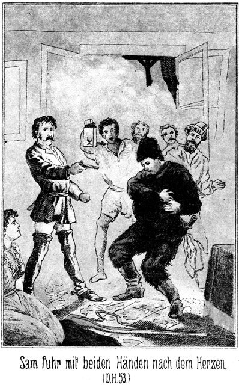»Herrgott! Ich bin – bin – –«
Er konnte nicht weiter sprechen. Er wankte, drehte sich einmal langsam um sich selbst und stürzte dann auf den Boden nieder.
»Todt! Erschossen!« tönte es im Kreise.
»Ihm geschieht ganz recht!« antwortete Walker. »Seht hier die Sennorita liegen. Er hat sie überfallen und gefesselt. Er wollte sie ermorden. Er hat nur seine gerechte Strafe gefunden.«
»Was thun wir mit ihm?«
»Pah! Laßt ihn liegen!«
»Wo ist sein Kamerad?«
»Das geht Euch Nichts an. Macht, daß Ihr fortkommt! Wir haben Anderes zu thun, als uns um diese Hunde zu bekümmern.«
Er band Miranda los und führte sie fort, nach ihrem Zimmer. Dort sagte er kein Wort. Er riß einen Mantel vom Nagel, warf ihn ihr über und zog sie dann weiter fort, durch die Zimmer bis zur hinteren Treppe, welche nach der Pforte führte.
»Wohin?« fragte sie.
»Wir müssen fliehen. Die Verfolger sind vielleicht jetzt schon an der Thüre!«
»Kann ich nicht bleiben?«
»Dummheit!«
»Sie dürfen mir ja nichts thun. Sie können mir gar nichts beweisen.«
»Aber sie können Dich zwingen, mich zu verrathen. Das will ich nicht ermöglichen.«
Sie zögerte doch noch. Eine nächtliche Flucht mit Zurücklassung von Allem, was ihr lieb und angenehm war, erschien ihr nicht sehr vortheilhaft. Er aber hielt ihre Hand fest, zog sie die Treppe hinab und durch das hintere Pförtchen, welches er wieder verschloß. Dann führte er sie nach dem Orte, an welchem er sein Pferd zurückgelassen hatte.
Er war noch nicht dort angekommen, so hörte er das Getrappel von Pferdehufen.
»Horch, da kommen sie wirklich schon!« sagte er. »Es war die höchste Zeit.«
»Mein Gott, was wird daraus! Sie werden die Leiche Barth's finden!«
»Ganz recht so! Sie mag ihnen als Warnung dienen.«
»Sie werden uns augenblicklich verfolgen.«
»Jedenfalls.«
»Und uns natürlich ereilen.«
»Schwerlich! Mich bekommen sie nicht und Dich natürlich auch nicht.«
»O, diese Leute verstehen es, Spuren zu finden.«
»Das Wasser hat keine Spur.«
»Wieso?«
»Wie jetzt die Sache steht, verzichte ich auf einen Ritt. Das wäre allerdings gefährlich. Diese verdammten Kerls würden unsere Fährte bereits am Morgen finden und dann nicht wieder von ihr lassen. Nein, wir fahren den Fluß hinab. Unser Langboot ist schneller als das schnellste Pferd.«
»Aber wenn sie es erfahren?«
»Wer soll es ihnen sagen? Uebrigens können sie doch keine Ahnung davon haben, daß ich nach Mohawk-Station will. Auch giebt es zur Zeit hier nur ein einziges Boot. Zu Wasser also können sie uns gar nicht verfolgen.«
Miranda hütete sich wohl, ihm zu entdecken, daß sie Sam Alles gesagt habe. Warum auch davon sprechen? Er war nun todt und konnte nichts verrathen.
Walker stieg auf sein Pferd und nahm Miranda zu sich hinauf. Er brauchte nicht durch den ungebahnten Wald zu tappen. Der Weg war nun frei. Die Verfolger befanden sich bereits im Hause, und er brauchte nicht zu befürchten, ihnen zu begegnen. Er trabte von dannen in der sicheren Erwartung, daß er bald zurückkehren werde, gerächt an Allen, vor denen er jetzt das Feld zu räumen hatte. –
Steinbach wunderte sich, so viele Fenster des Hauses erleuchtet zu sehen, als er mit seinen Begleitern vor demselben ankam. Er stieg ab und klopfte leise, wie er es mit Zeus, dem Schwarzen, verabredet hatte.
Dieser hatte gut Wache gehalten, war aber natürlich über die Anwesenheit seines Herrn in Sorge gewesen. Als dann der Schuß ertönte, war er mit den andern Allen mit hinaufgeeilt in die betreffende Stube. Er erschrak nicht wenig, als er Sam todt am Boden liegen sah. Auf Befehl seines Herrn mußte er mit den Anderen den Ort der Mordthat verlassen und kehrte zum Thore zurück. Dort stand Milly, seine Geliebte.
»Was sein?« fragte sie. »Wer haben schießen?«
»O Gott, sehr guter Gott!« antwortete er. »Massa Walker hat erschießen gut klein dick Massa.«
»Jessus, Jessus! Todt?«
»Ja, ganz todt.«
»Warum erschießen?«
»Ich nicht genau wissen. Missus Miranda liegen in Stube, gefesselt mit Lasso. Massa Walker kämpfen mit Massa Dickbauch, schießen ihm Kugel in Herz.«
»O Unglück, o Mallör, Mallör! Was nun wir thun, Zeus und Milly?«
»Ich nicht wissen. Warten, bis groß, stark Massa kommen aus Stadt zurück.«
»Ihn Massa Walker vielleicht auch erschießen!«
»Nein, nein. Groß stark Massa nicht aussehen, als ob sich schnell erschießen lassen von Massa Walker. Horch! Du Etwas hören?«
»Es klopfen leise an Thor.«
»Er kommen vielleicht. Ich öffnen.«
Er machte das Thor auf. Draußen hielt Steinbach mit seinen Begleitern. Sie waren von den Pferden gestiegen.
»O, Massa, sehr gut, daß Ihr kommen!« sagte der Neger.
»Warum?« fragte Steinbach.
»Sehr viel passiren, viel Schlimmes.«
»Erzähle schnell!«
»Leise sprechen. Massa Robin sei hier, Massa Walker.«
»Ich weiß es. Wo ist er?«
»In seinem Zimmer.«
»Allein?«
»Missus Miranda sein bei ihm.«
»Dann schnell hinauf zu ihm. Wo ist Master Barth?«
»Jessus, Jessus! Massa sein todt!«
»Todt? Unmöglich!«
»Ja, ja, sein todt. Massa Walker ihn erschießen.«
»Herrgott! Ist es wahr?«
»Ja, sehr ganz wahr.«
»Dann wehe diesem Menschen! Wo ist die Leiche?«
»Im Gastzimmer, wo haben gekämpft.«
»Dann soll Sam sofort gerächt werden. Führe mich schnell hinauf zu Walker. Günther, Du gehst mit mir. Die Andern bleiben hier zurück und lassen Niemand entkommen. Diese Negerin mag für Licht sorgen, daß der Thorgang erleuchtet wird.«
Er sagte das in fliegender Eile und schob den Neger vor sich her. Die Geliebte des Letzteren sprang fort, um Licht zu holen. Unten an der Treppe stand einer der Diener mit einer Lampe in der Hand. Steinbach entriß sie ihm und eilte die Stufen hinauf.
»Wo ist Walkers Zimmer?« fragte er den Neger.
»Da, links es sein!«
Steinbach trat hinein. Er hatte die feste Absicht, Walker keine Zeit zu einem Worte zu lassen, sondern ihn sofort zu Boden zu schlagen. Das Zimmer aber war leer.
»Hier ist Niemand. Wo suchen wir ihn?«
Der Neger, von Natur nicht eben sehr kühn, fühlte sich in der Nähe des gewaltigen Deutschen voller Muth. Er antwortete:
»Vielleicht er bei Missus sein, da rechts.«
»So kommt!«
Günther von Langendorff folgte ihm eilig. Aber sie fanden auch dort Niemand. Die weitere Untersuchung ergab, daß in der ganzen langen Zimmerreihe kein Mensch vorhanden sei.
»Er ist nicht zu sehen. Vielleicht ist er wieder fort!«
»Er ist nicht fort; ich doch stehen am Thor und ihn nicht gehen sehen.«
»Giebt es keine andere Thüre?«
»Eine Pforte hinten.«
»So wird er dort hinaus sein.«
»Nein; er gehen durch Thor.«
»Ist er denn auch durch das Thor gekommen?«
»Ja, sehr durch das Thor.«
»Mit dem Pferde?«
»Nein, er nicht haben Pferd.«
»Ah, so hat er es draußen versteckt gehalten. That er heimlich, als er kam?«
»Sehr. Er leise sprechen und hinaufgehen in sein Zimmer, dann aber sehr laut schießen.«
»Hm! Führe uns zu der Leiche.«
Der Neger schritt voran. Die Thüre des Gastzimmerchens war zugemacht worden, als Alle es verließen. Jetzt stand sie offen. Zeus trat ein, sprang aber mit einem lauten Schrei sofort wieder zurück.
»O Jessus, Jessus! O Himmel, Himmel!«
»Was giebt es denn?«
»Was ich habe sehen!«
»Nun, was denn?«
»Ein Gespenst.«
»Unsinn!«
»Ein Gespenst! Es leben; es sein da; ich es sehen! Es sein ein Geist!«
»Du bist verrückt!«
Steinbach wollte eintreten; aber der Neger ergriff ihn am Arme und bat in flehendem Tone:
»Nicht hineingehen, Massa! Ihr sonst sterben. Es sein der Geist von Massa Barth!«
»Du träumst!«
»Nein, ich nicht träumen, sondern sehen. Geist sitzen auf Matratze und rauchen Tabak.«
»Das ist der erste Geist, welcher Tabak raucht. Ich will doch sehen, ob er eine gute Sorte hat.«
Er schüttelte den Neger von sich ab und ging hinein. Günther folgte natürlich. Dadurch gewann auch Zeus Muth und trat hinter ihnen auch in das Zimmer.
Wirklich, Sam Barth saß in aller Ruhe auf der Matratze und rauchte eine Cigarre. Um die eine Hand hatte er sich sein Taschentuch gewunden. Das Gewehr hielt er schußfertig im Arme.
»Sam, Ihr?« sagte Steinbach erstaunt.
»Ja, ich! Wer sonst?« antwortete der Dicke ruhig.
»Warum denn? Bin ich etwa ein Wunderthier?«
»Nein; aber Ihr sitzt in aller Gemüthlichkeit hier und raucht Cigarre!«
»Na, was soll ich denn thun vor lauter Langeweile? Ich habe Euch doch gesagt, daß ich hier auf Euch warten will. Die Cigarre habe ich mir in der Venta der gelehrten Emeria gekauft. Als es mir hier zu langweilig wurde, habe ich sie mir angebrannt. Das ist Alles, und da macht Ihr solch Aufhebens davon?«
»Ich denke, Ihr seid todt?«
»Todt? Ich? Sam Barth todt?«
»Ja, erschossen.«
»Ich erschossen? Donnerwetter! Davon müßte ich doch auch Etwas wissen!«
»Also nicht! Gott sei Dank! Ich suche Walker.«
»Den findet Ihr nicht.«
»Warum nicht?«
»Er ist fort, mit seiner schönen Miranda.«
»Wohin?«
»Weiß es nicht – da hinten zu dem Pförtchen hinaus.«
»Habt Ihr es gesehen?«
»Ja. Ich habe ihn belauscht. Als ich todt war, gingen sie Alle fort. Er führte die Schöne in das Zimmer, in welchem wir gespeist haben. Ich schlich mich an die Thüre und lauschte. Sie gingen im Innern aus einem Zimmer in das andere, und ich folgte ihnen von Außen auf den Söller. Dann sah ich sie zur Treppe hinabgehen und zur Pforte hinaus.«
»Warum habt Ihr sie nicht angehalten?«
»Danke sehr! Zweimal lasse ich mich nicht todtschießen; einmal ist auch genügend.«
»So ist er entkommen.«
»Nein; ich kenne seine Fährte.«
»Dennoch mußtet Ihr ihn unbedingt festhalten!«
»Fällt mir nicht ein! Alle seine Leute helfen ihm. Dieser brave Neger, welcher mich anstaunt wie ein Gespenst, ist der Einzige, auf den man noch rechnen kann.«
»Ja,« antwortete Zeus, indem er noch immer voller Furcht die großen, weißen Augen rollte, »ich immer noch darauf schwören, daß Ihr ein Gespenst!«
»Komm her und greife mich an!«
Sam stand auf und schritt auf ihn zu. Der Schwarze aber wich zurück und schrie laut auf:
»Nein, o nein! Massa Geist stehen bleiben!«
»Ich thue Dir nichts.«
»Aber Ihr sein todt.«
»Ueberzeuge Dich doch.«
»Ich schon bin überzeugt. Ich haben sehen erschießen Massa – – Kugel in Herz hinein.«
»Das ist der Kugel gar nicht eingefallen. Greife doch nur einmal her an mein Herz.«
»Nein, ich nicht greifen. Ich sehen Blut an Herz. Es sein Loch in Herz. Massa sein ein Gespenst. Ich nicht will angreifen Gespenst. O Jessus, nein, nein!«
Er streckte beide Hände von sich, um anzudeuten, daß der Geist ihm ja nicht nahe kommen solle. Steinbach verstand so viel, daß auf Sam geschossen worden war. Er erkundigte sich, und der Dicke antwortete:
»Das habe ich nämlich nicht übel gemacht. Er hatte bereits einmal auf mich geschossen, mich aber nicht getroffen, weil es finster war. Seine Leute kamen herbei. Gegen so Viele konnte ich nichts machen. Daß er mich ermorden würde, konnte ich mir denken. Es war am Allerbesten für mich, mich todt zu stellen. Ich brauchte dazu den zweiten Schuß, welchen er auf mich abgab.«
»So hat er nicht getroffen?«
»Nein. Ich war rascher als er. Als er das Pistol erhob, fiel ich ihm in den Arm und lenkte es zur Seite. Die Kugel ging vorüber, ich aber that so, als ob ich in das Herz getroffen sei und fiel in aller Grazie zu Boden. Die Brust bedeckte ich mit den Händen, und da ich mir die eine derselben an seinem Messer verwundet hatte, so strömte das Blut aus der Hand über die Brust, und es sah ganz darnach aus, als ob ich in das Herz sei getroffen worden.«
Da schlug der Schwarze erfreut die Hände zusammen und rief:
»Also nicht Geist, wirklich nicht Gespenst! Noch leben! Sich verstellen! Welch ein klug klein dick Massa! O wie gescheidt, welch pfiffig Mann! Beinahe so klug und pfiffig wie Zeus, welcher ich selber bin!«
»Wie aber kam denn Walker zu Euch hinein, Sam?« erkundigte sich Steinbach.
»Er hat jedenfalls nach Donna Miranda gesucht und hier reden hören.«
»Sie war also hier?«
»Freilich. Sie wollte zu Euch.«
»So war sie wohl sehr enttäuscht, als sie sah, daß Ihr hier waret?«
»Das hat sie gar nicht bemerkt.«
»Unmöglich!«
»Es war ja dunkel.«
»So hat sie Euch für mich gehalten?«
»Natürlich! Das war ja eben die Lust. Wir haben hier auf der Matratze neben einander gesessen, und sie hat mir eine Liebeserklärung nach der anderen gemacht. Es war eine Wonne!«
»Gratulire!«
»Danke! Angreifen durfte ich mich leider nicht lassen. Sie versuchte es einige Male, eine Umärmelung zu Stande zu bringen; da aber meine Leibesbeschaffenheit sie sofort zur Erkenntniß gebracht hätte, daß sie an den Unrechten gekommen sei, so mußte ich mir leider solche Vertraulichkeiten verbitten.«
»Habt Ihr denn nichts erfahren können von Walkers Vergangenheit, von seinem gegenwärtigen Leben und seinen Absichten in Beziehung auf uns?«
»Kein Wort!«
»Wie dumm!«
»Hm! Ihr hättet es wohl gescheidter angefangen?«
»Natürlich.«
»Hättet aber auch nichts erfahren können.«
»Pah! Wenn das Frauenzimmer so verliebt war, so wäre es wohl nicht sehr schwer gewesen, ihr Einiges zu entlocken.«
»Dazu habe ich kein Talent.«
»Oho! Ihr seid pfiffig genug, die dazu nöthige Rolle zu übernehmen und auch glücklich durchzuführen.«
»Meint Ihr? Na, das söhnt mich wieder mit dem ehrenrührigen Ausdrucke aus, dessen Ihr Euch soeben bedientet. Ich will Euch also sagen, daß ich meine Rolle sehr gut gekannt und wohl auch nicht übel durchgeführt habe.«
»Ah, sehr gut! Erzählt also!«
»Hier? Pah! Seid Ihr allein gekommen?«
»Nein. Es sind Alle mit. Sogar der Aldermann hat sich uns angeschlossen.«
»Nun, so wollen wir zu ihnen gehen. Dann hören Alle, was ich sage, und ich brauche es nicht mehrere Male zu erzählen.«
Als sie aus dem Zimmerchen traten, vernahmen sie laute Klagen. Der Aldermann hatte sämmtlichen Bewohnern des Hauses erklärt, daß er sie arretiren müsse. Sie wurden Alle gebunden. Eine Ausnahme wurde nur mit Zeus und Milly gemacht. Diese Beiden waren es ja, welchen man Dank schuldete.
Als sie dann in dem Speisezimmer zusammensaßen, wurde Sams Verletzung untersucht. Der Schnitt war sehr tief und sehr schmerzhaft, aber nicht von gefährlichen Folgen für die Hand. Es war zu hoffen, daß sie ihre frühere Beweglichkeit nach der Heilung wieder erlangen werde. Die Wunde wurde natürlich auf das Sorgfältigste verbunden.
Sam erfuhr nun auch, daß der Ueberfall auf Günther vereitelt und Alfonzo gefangen genommen worden sei. Er hatte die Ausrede vorgebracht, daß er von gar nichts wisse. Die Magd der Sennorita Emeria sei seine Geliebte, und er habe sich auf den Hof geschlichen, nur um mit dieser zu sprechen. Da sei plötzlich Lärm entstanden, mehrere Männer seien über den Hof und die Mauer gesprungen. Er habe gemeint, daß es eine Schlägerei gebe, und um nicht in diese verwickelt und lieber gar nicht gesehen zu werden, habe auch er die Flucht ergriffen.
*
Natürlich war das Mädchen gefragt worden. Henrietta hatte vielleicht ein kleines Verhältniß mit ihm und sagte zu seinen Gunsten aus; dennoch aber war er nicht freigelassen, sondern in der Gefangenschaft behalten worden.
Nun begann Sam seinen Bericht, für welchen Alle natürlich das größte Interesse fühlten. Sie hörten da, daß der frühere Derwisch mit Hilfe Leflor's entkommen sei, und sie erfuhren mit genügender Deutlichkeit, was die Kerls eigentlich vorhatten – nach Mohawk Station zu gehen, um da zunächst Almy und Magda Hauser in ihre Gewalt zu bringen.
»Das sollen sie bleiben lassen!« fuhr Günther von Langendorff auf. »Wer diese Magda nur falsch ansieht, der hat es mit mir zu thun.«
»Was wollt Ihr dagegen machen?« fragte Sam.
»Oho! Ich reise sofort ab.«
»Hoffentlich nehmt Ihr uns mit?«
»Natürlich! Ich hoffe sogar, daß Ihr uns begleitet.«
»Aber Walker wird doch eher hinkommen.«
»Das glaube ich nicht.«
»Er hat Vorsprung. Während wir hier sitzen und berathen, reitet er bereits.«
»Aber sagtet Ihr nicht, daß diese Miranda sich bei ihm befinde.«
»Ja.«
»Nun, sie wird ihm sehr hinderlich sein. Mit einer Dame reitet man nicht so rasch.«
»Es fragt sich, ob er sie mitgenommen hat.«
»Jedenfalls,« antwortete Steinbach.
»Das wäre höchst unsinnig.«
»Nicht so sehr, wie Ihr denkt, Master Sam. Zwar versäumen wir, indem wir hier sitzen, einige Zeit. Was wir aber dabei verlieren, gewinnen wir mehr als reichlich an Klarheit. Wir müssen wissen, was sie wollen, und was wir in Folge dessen zu thun haben. Ohne Absicht nimmt Walker diese Miranda nicht hier aus dem Hause.«
»Natürlich. Er fürchtet, daß sie irgend Etwas verrathen könne.«
»Das hat sie Euch gegenüber bereits gethan.«
»Das weiß er nicht. Uebrigens hält er mich für todt, und Todte können nicht plaudern. Er wird sie irgendwo hinbringen, wo sie von dem Richter einstweilen nicht erreicht werden kann.«
»Dazu hat er keine Zeit. Er muß schnell und direct nach Mohawk-Station, um seinen Streich auszuführen, ehe wir die Bedrohten benachrichtigen können. Und er wird Miranda mit dorthin nehmen, weil er sie da sehr gut gebrauchen kann.«
»Wozu?«
»Ich denke, daß er ihr eine Rolle zugedacht hat. Sie ist schön; sie hat Erfahrung und Umgangsformen. Wenn sie will, so fällt es ihr gewiß sehr leicht, das Vertrauen der beiden Damen rasch zu gewinnen. In welcher Weise dieses Vertrauen dann ausgebeutet werden soll, das kann ich freilich nicht sagen.«
»Du scheinst Recht zu haben,« meinte Günther. »Wir müssen die Damen sofort benachrichtigen.«
»Hm! Wie denn?«
»Telegraphiren!«
»Du vergissest, daß es noch keine Drahtverbindung zwischen hier und dort giebt.«
»Das ist höchst beklagenswerth. Wie gelangt man am Schnellsten hin?«
»Der dritte Weg ist der längste und unsicherste. Er führt über die Eureka-Gila-Berge. Der kürzeste Weg ist viel länger. Man reitet von hier aus nach der nächsten Station der Südpazifikbahn und telegraphirt von dort nach Mohawk-Station, damit die Freunde gewarnt sind. Mit dem nächsten Zuge fährt man nach.«
»Welche Station wäre das?«
»Gila Bend, in zwei Tagen zu erreichen, wenn man zwei gute Pferde hat.«
»Ich denke, wir sind sehr gut beritten?«
»Das wohl, aber – – hm! Wenn man den Fluß benutzen könnte. Er mündet ja gerade bei Gila Bend in den Gilafluß.«
»Das ist nicht möglich,« sagte der Aldermann.
»Giebt es keine Kähne? Ist er nicht fahrbar?«
»Es giebt leider nur einen Segler, und der gehört – – – Himmeldonnerwetter! Welch' ein Gedanke!«
»Was giebt es?«
»Man hat zwar einige Kähne, aber die taugen nichts; sie dienen nur, eine Gondelfahrt zu machen. Es giebt, wie ich eben sagte, ein Langboot, einen guten Segler, und der gehört eben – Sennor Walker.«
»Alle Teufel! So wird er fahren!«
»Vermuthlich.«
»Dann ist er nicht einzuholen.«
»Schwerlich.«
»Aber ich denke, daß er nicht so sehr schnell aufbrechen kann. Er hat seine Genossen irgendwo stecken und muß sie erst holen. Miranda hat hier förmlich fliehen müssen. Sie ist ganz ohne Kleider und wird sich alles Nöthige besorgen müssen. Wenn wir uns beeilen, ist es möglich das Boot zu finden, ehe sie es erreichen. Ich mache den Vorschlag, sofort aufzubrechen, damit wir ihnen zuvorkommen.«
»Ja, thut das, Sennores. Ich freilich kann nicht mit. Ich muß wegen der gefangenen Bewohner dieses Hauses hier bleiben, bis meine Polizisten kommen, welche leider ganz unverantwortlich lange auf sich warten lassen.«
»Hat das Boot einen bestimmten Platz?«
»Ja. Ihr reitet von hier in die Stadt. Die Straße entlang um die erste linke Ecke kommt Ihr an den Fluß. Eine Brücke führt hinüber nach der Venta des Mattheo Abranzo. Unter dieser Brücke hängt das Boot stets. Ihr findet es ganz bestimmt.«
»Gut! Brechen wir auf. Alles Andere können wir auch später besprechen.«
Einige Augenblicke später jagten sie dem Waldweg entlang der Stadt entgegen. Es ging an der Venta der gelehrten Emeria vorüber, in die Hauptstraße der Stadt hinein und dann links in die erste Seitengasse. Die Brücke war erreicht. Sie sprangen vom Pferde und suchten. Es war kein Boot vorhanden.
In der Venta des Sennor Mattheo Abranzo gab es noch Licht. Die Thür war noch offen. Sie traten ein. Es saß nur noch ein einziger schläfriger Gast am Tische bei einem halb ausgetrunkenen Schnapsglase. Der Wirth war eingenickt. Er erwachte von dem Geräusch der Eintretenden und stand höflich auf.
»Seid Ihr Sennor Abranzo?« fragte Steinbach.
»Der bin ich, Sennor!«
»Hattet Ihr noch spät Gäste?«
»Die habe ich sogar noch.«
»Ah! Wo?«
»Hier. Dieser Mann ist es, und Ihr seid es.«
»Daß ich uns nicht meine, versteht sich ganz von selbst. Beantwortet mir meine Frage!«
»Darf ich fragen, ob Ihr Etwas trinkt?«
»Steht erst Rede und Antwort!«
Der Wirth machte eine ironische Verbeugung und sagte lächelnd:
»Sennor, wer kann einen Mann zwingen, zu sprechen, wenn er nicht sprechen will?«
»Ich!«
»Hm! Wer seid Ihr?«
»Das werdet Ihr dann erfahren, wenn ich Gelegenheit habe, es Euch von Amts wegen mitzutheilen. Bald wird der Aldermann erscheinen, um meinen Worten Nachdruck zu geben.«
»Wollt Ihr damit sagen, daß Ihr eine amtliche Persönlichkeit seid?«
»Ja.«
»Wenn Ihr das beweisen könnt, so werde ich Euch antworten.«
»Warum nicht eher. Ein jeder Wirth hat seine Gäste höflich zu behandeln.«
»Ein jeder Wirth aber hat sich auch zu hüten, mit seinen Gästen in Conflict zu gerathen. Ihr wollt wissen, wer hier gewesen ist. Diejenigen, welche da waren, wünschen vielleicht gar nicht, daß von ihnen gesprochen werde.«
»So haben sie ein böses Gewissen!«
»Deshalb noch nicht.«
»Nun, ich werde Euch zeigen, wer ich bin.«
Er zog eine Brieftasche hervor, in welcher sich sehr viele Schreiben und anderes Private befand. Er wählte einen Bogen, auf welchem sich ein großes Siegel befand, und hielt ihn dem Wirthe hin.
Dieser trat damit zum Lichte und gab sich den Anschein, als ob er lese. Jedenfalls war er nicht im Stande, ein einziges Wort zu entziffern. Das Document war in russischer Sprache verfaßt und mit dem Siegel der Geheimcanzlei des Czaaren versehen. Als er scheinbar zu Ende war, legte er das Papier zusammen, gab es unter einer ehrfurchtsvollen Verbeugung zurück und sagte:
»Verzeihung, Sennor! Ich konnte nicht wissen, daß Ihr ein so hoher Beamter seid.«
»Criminalbeamter, wollt Ihr sagen! Also waren viele Gäste hier?«
»Ja.«
»Hiesige?«
»Lauter Hiesige.«
»Ich meine, es seien auch Fremde dagewesen.«
Steinbach sagte das in einem Tone, als ob er seiner Sache ganz und gar sicher sei.
»Ha! Ich müßte mich besinnen,« meinte der Wirth.
Die imposante Gestalt und das dominirende Auftreten Steinbach's verfehlte den beabsichtigten Eindruck nicht.
»So besinnt Euch schnell! Ich habe keine Zeit!«
»Es waren wohl einige Fremde hier. Ich weiß aber nicht, ob ich von ihnen sprechen darf.«
»Warum nicht?«
»Sie thaten so heimlich.«
»Ah, so! Worin bestand diese Heimlichkeit?«
»Sie gingen nicht in dieses Zimmer, sondern ich mußte ihnen einen Raum im Hofe geben. Ihre Pferde hatten sie im Garten.«
»Wie viele waren es?«
»Nun, fremd waren eigentlich nur Zwei. Die Anderen kannte ich. Das waren Hiesige.«
»Wer waren sie?«
»Ihre Namen sind Sennor Alfonzo, Sennor Newton und Sennor Robin.«
»Schön! Diese suchen wir.«
»Diese Drei gingen nach einer Welle wieder fort. Alfonzo ließ sich nicht mehr sehen. Newton kam bald wieder, und Robin kam sehr spät mit einer Dame.«
»Sennorita Miranda?«
»Ja. Kennt Ihr sie?«
»Sehr gut. Wo sind sie jetzt?«
»Abgereist.«
»Wohin?«
»Das weiß ich nicht. Aber ich vermuthe, daß ihr Ziel ein entferntes ist, denn sie fragten mich, ob ich ihnen ihre Pferde abkaufen möchte.«
»Ihr thatet das?«
»Natürlich. Sie machten Preis. Ihr wißt, daß ein Wirth jedem Gaste gefällig sein muß.«
»Dies scheint Euer erster Grundsatz zu sein. Wenn sie keine Thiere mehr hatten, wie können sie da reisen?«
»Im Segelboote von Sennor Robin.«
»Also gefahren! Schön! Seit welcher Zeit sind sie fort?«
»Es sind bis jetzt schon drei Viertelstunden verflossen, Sennor.«
»Hatte die Sennorita viel Gepäck?«
»Gar nicht. Sie trug ein weißes Kleid und einen dunklen Mantel darüber. Im Zimmer ist sie gar nicht mit gewesen.«
»Aber gut bewaffnet waren die Sennores?«
»Bis an die Zähne.«
»Zeigt mir einmal das Zimmer, in welchem sie gewartet haben!«
Der Wirth führte die Herren in den Hof und von da in den Raum, wo die Betreffenden gesessen hatten. Steinbach hatte es für möglich gehalten, irgend Etwas zu finden, was ihm nützlich werden könne. Seine Erwartung war aber vergebens. Es war bei allem Glücke heute doch ein unglücklicher Abend gewesen.
– – – – – – – – –
Der von Tucson über Gila Bend kommende Personenzug nahte sich der Mohawk-Station. Die Maschine gab mit ihrem schrillen Pfiffe das Zeichen, und die Stationsbeamten standen neugierig, ob Passagiere hier aussteigen würden.
Auf der Plattform des einen Personenwagens stand – – Roulin. Er hielt sich sein Taschentuch vor das Gesicht, scheinbar als ob er Zahnschmerzen habe, in Wirklichkeit aber, um nicht sofort erkannt zu werden, während er die an der Station Anwesenden musterte, um zu erfahren, ob man ohne Gefahr aussteigen könne.
Der Zug fuhr ein.
»Mohawk-Station!« ertönte der laute Ruf.
»Ist Jemand von ihnen da?« fragte es zur Coupeethür heraus.
»Nein,« antwortete Roulin. »Wir können aussteigen.«
Er sprang von der Plattform. Walker, Leflor, Bill Newton und Miranda folgten ihm.
Die Letztere trug einen außerordentlich eleganten Reiseanzug, welchen Walker ihr in Gila Bend gekauft hatte. Ihre Erscheinung erregte Aufsehen.
Zwei junge Männer standen am Eingange des Telegraphenbureaus. Es war der Telegraphist und der Sohn des Stationers.
»Alle Wetter!« sagte der Erstere. »Seht Ihr diese Venus, Sennor Balzer?«
»Ja. Wer sollte sie nicht sehen. Hier in dem traurigen Neste findet man eine alte Hexe schön, vielmehr noch eine Dame, welche in New-York oder New-Orleans Aufsehen erregen würde.«
»Das wäre Etwas für Euch! Ich kenne ja Eure Passion.«
»Hm. Die Lady sieht mir nicht so aus, als ob sie eine Männerfeindin sei. Augen wie die ihrigen stecken zwar in Brand, löschen ihn aber auch. Ich möchte doch wohl – – Teufel! Wer ist denn das? Der Eine ihrer Begleiter kommt mir bekannt vor. Wenn mich nicht Alles täuscht, so ist es Roulin, welcher mit mir im Alabama-College auf einer und derselben Bank gesessen hat. Der bei ihr! Das ist ja eine Avance, welche ich mir gar nicht besser wünschen kann.«
Er nickte dem Telegraphisten einen kurzen, triumphirenden Gruß zu und schritt auf die Gruppe zu, welche sich der Thür des Wartesaales näherte.
»Sehe ich recht?« fragte er. »Verzeiht, Sennor, seid Ihr nicht – – oder vielmehr, bist Du nicht – – ja, Du bist es! Roulin!«
Roulin fühlte sich nicht freudig überrascht, als er sich plötzlich so öffentlich angeredet und beim Namen genannt hörte. Er machte in Folge dessen ein ziemlich finsteres Gesicht. Aber als er in das Gesicht des Anderen blickte, heiterte sich seine Miene sofort auf. Er erkannte den Studiengenossen und wußte, daß er gerade diesen Mann nicht zu fürchten habe.
»Balzer, Du?« antwortete er.
»Ja, ich in Lebensgröße. Was schneit denn Dich hierher nach Mohawk-Station, alter Swalker?«
»Der Zufall, mein Bester. Ich bin ihm übrigens nun gern dankbar, da er mir die Gelegenheit geboten hat, Dich wiederzusehen. Was bringt Dich hierher? Wohl auch der Zufall?«
»Nein, das Geschick.«
»Das klingt so ernst.«
»Ist es auch.«
»Hast doch nicht etwa unglücklich nach hier geheirathet?«
»Wie kommst Du auf diesen Gedanken?«
»Ich kenne Deine Passion: Ein Paar schöne Augen, und Du bist Feuer und Flamme.«
»Gerade aus diesem Grunde hüte ich mich vor der Heirath. Ich flattere und nasche, mag mich aber nicht binden. Nein, denke Dir, mein Vater hat eine Menge Actien der Bahngesellschaft. Um einen Einblick in gewisse Angelegenheiten zu gewinnen, ist er auf den Gedanken gekommen, Stationer zu werden. Sie haben ihn hierher auf Mohawk-Station gebracht. Ich mußte natürlich mit ihm. Nun sitze ich da! Ein Talent, ein Genie, im trocknen Sande, angeklotzt von stinkenden Apachen.«
»Du hast Langeweile?«
»Riesig, massenhaft. Dein Anblick ist mir wie das Licht eines Sternes in finsterer Nacht. Hoffentlich kaufst Du Dich mir zu Liebe hier für immer und ewig an, um mir im Kampfe gegen das Ungeheuer »Langeweile« beizustehen. Ich werde es Dir Dank wissen.«
»So sehr aufopferungsfähig bin ich leider nicht,« lachte Roulin. Einige Tage aber kann ich Dir vielleicht widmen.«
»Goldjunge, komm an mein Herz!«
»Laß das! Sage mir lieber, ob Du hier bekannt bist?«
»Außerordentlich, sage ich Dir! Wie der Floh im Bette oder der Frosch im Teiche bin ich hier bekannt. Was willst Du wissen? Brauchst Du einen Pfarrer oder einen Blutegelhändler, eine Hebamme oder einen Advocaten. Sage mir aber vor allen Dingen, wer ist die Dame, die sich bei Dir befindet?«
»Gefällt sie Dir?«
»Welch' eine Frage! Für einen Kuß von ihr springe ich in's Meer und schlage zehn Wallfische todt. Ist sie spröde oder empfänglich?«
»Je nach der Person des Betreffenden.«
»Verheirathet?«
»Nein!«
»Schön! Verlobt?«
»Auch nicht.«
»Wie ist Ihr Name?«
»Donna Miranda.«
»Höchst poetisch! Kannst Du mich ihr vorstellen?«
Roulin machte ein sehr bedenkliches Gesicht.
»Wohl schwerlich; außer – – hm! Sie ist sehr wählerisch. Vielleicht aber könntest Du Dich ihr verbindlich erweisen.«
»Riesig gern! Gieb mir nur Gelegenheit dazu.«
»Wollen es versuchen. Natürlich giebt es hier ein Hotel?«
»Versteht sich.«
»Ist es sehr besetzt?«
»Jetzt nicht. Die neuesten Gäste sind zwei Sennores, Namens Wilkins und Cuartano, nebst ihren Damen.«
»Ah! Hm! Schön! Kannst Du nicht erfahren, ob diese Herrschaften in letzter Zeit eine Depesche erhalten haben?«
»Wer will es wissen? Es handelt sich hier um das Amtsgeheimniß. Verstanden?«
»Du würdest gerade unsere Donna Miranda zu großem Danke verpflichten.«
»Donnerwetter! Sie soll es erfahren. Der Telegraphist ist mein Freund. Er trinkt aus meiner Flasche und bezahlt aus meiner Börse. Er sagt es mir gern. Wartest Du hier?«
Er begab sich in das Telegraphenbureau. Roulin aber schritt nach dem Wartesaale zu, an dessen Eingange die Anderen stehen geblieben waren.
»Tretet ein!« sagte er. »Ich traf da einen Jugendgenossen, einen leichtlebigen Menschen, der uns hier von großem Nutzen sein wird, wenn Sennorita ein Wenig freundlich mit ihm sein will. Er ist ein außerordentlicher Freund hübscher Gesichter und Sohn des hiesigen Stationers. Soeben habe ich ihn nach der Depesche gefragt. Er will uns Auskunft ertheilen. Das ist von großem Vortheile für uns, da wir gewärtig sein müssen, daß Steinbach nach hier telegraphirt, um zu warnen. Durch meinen Freund könnten wir, wenn wir ihn verliebt machen, die betreffende Depesche abfangen. Da kommt er bereits. Ich bringe ihn hinein und stelle ihn Euch vor.«
Balzer kam aus dem Bureau und schwenkte bereits von Weitem einen langen, schmalen Zettel, auf welchem sich jedenfalls die Urschrift der Depesche befand.
»Ich habe sie,« sagte er, »da lies!«
Er gab Roulin den Zettel, indem er überlegen lächelte. Der Letztere wollte den Inhalt lesen, konnte es aber nicht, denn die wenigen Zeilen bestanden nur aus Strichen und Punkten, welche ungleich weit von einander entfernt waren. Er gab also das Telegramm mit den Worten zurück:
»Mach' keine dummen Witze, alter Junge! Ich bin kein Telegraphenbeamter und habe also nicht gelernt, solche Hieroglyphen zu entziffern.«
»Was ist da zu thun!«
»Wir müssen eben zum Telegraphisten gehen.«
»Na, ich will Dich nicht so lange unter die Folter nehmen. Ich habe hier nicht viel oder besser gesagt, gar nichts zu thun, und um mir nur einigermaßen die Zeit zu vertreiben, bin ich beflissen gewesen, Telegramme lesen zu lernen. Es ist das zwar kein sehr amüsanter Sport; aber in der Noth frißt der Teufel Fliegen, und der Telegraphist fand es selbst interessant, mich zu unterrichten. Das Ding ist übrigens zwar langweilig aber nicht schwer. Ich habe dabei nicht gedacht, daß ich dadurch in den Stand gesetzt werden würde, einem so alten, guten Bekannten einen Dienst zu erweisen.«
»Sehr verbunden! Also, bitte, lies vor!«
»Die Depesche lautet: »Sofort im Augenblicke per Bahn nach Dos Palmas abreisen. Wir sind dort. Steinbach!« Genügt Dir das?«
»Vollständig. Ich danke Dir!«
»Nun aber hoffe ich auch, daß Du mich Deiner schönen Sennorita Miranda vorstellen wirst.«
»Das versteht sich. Aber vorher noch Eins. Es ist nämlich möglich, daß noch eine Depesche kommt. Wann ist diese hier angekommen?«
»Vor fünf Stunden.«
»Vielleicht kommt heute oder auch erst morgen eine zweite. Könnte ich auch diese lesen?«
»Versteht sich!«
»Aber bevor sie an den Adressaten geschickt wird.«
»Verdammt! Das geht nicht.«
»Warum?«
»Sobald das Telegramm ankommt, muß es an den Adressaten gesandt werden.«
»Pah! Wenn ich sie vorher lese, so nimmt das ja nur einen Augenblick, nicht einmal eine einzige Minute in Anspruch.«
»Hm! Dennoch wird es nicht gehen. Es handelt sich da um das Amtsgeheimniß.«
»Das ist doch hier bei diesem Telegramm auch nicht so genau genommen worden.«
»Aus zwei Gründen. Erstens befindet es sich bereits in den Händen des Adressaten – –«
»Ist ganz gleich! Ich habe es doch gelesen.«
»Und zweitens hat der Beamte es mir nur aus ganz besonderer persönlicher Gefälligkeit gegeben.«
»Nun, ganz dieselbe Gefälligkeit könnte er doch zum zweiten Male haben.«
»Er wird mich fragen, was ich damit beabsichtige.«
»Bist Du etwa um eine Ausrede verlegen?«
»Allerdings.«
»Dann kannst Du mich dauern, alter Knabe. Du warst doch früher nie verlegen, besonders wenn es sich um ein hübsches Mädchen handelte.«
»Das ist aber hier nicht der Fall.«
»Sogar doppelt. Erstens thust Du Donna Miranda einen Gefallen, den sie Dir jedenfalls vergelten wird, und zweitens – ah, ich habe da den richtigen Gedanken! Der Adressat ist zwar ein gewisser Wilkins, aber er hat zwei außerordentlich hübsche, junge Damen bei sich. Weiß das der Telegraphist vielleicht?«
»Ebenso gut wie ich.«
»Nun, so ist die Sache ja sehr einfach. Du bist in Eine von den Beiden verliebt, willst Dich ihr nähern, und die beste Gelegenheit dazu ist Dir geboten, indem Du den Telegraphenboten machst und ihrem Begleiter die Depesche selbst bringst.«
»Diese Ausrede ist gar nicht übel. Und Du meinst, daß ich die Depesche erst Dir zeige, ehe ich sie an die Adresse befördere?«
»Sehr richtig.«
»Das könnte freilich möglich gemacht werden, wenn es nicht dabei ein großes Hinderniß gäbe.«
»Ich wüßte keins.«
»Die Depesche ist verschlossen.«
»Nur mit einer Papieroblate. Laß es meine Sorge sein, das Dings zu öffnen.«
»Verdammt! Das ist strafbar.«
»Geht Dich nichts an, sondern nur mich.«
»Ich bin Mitschuldiger.«
»Höre, nimm es mir nicht übel, aber Du scheinst ein ganz Anderer geworden zu sein, seit wir uns nicht gesehen haben. Früher gingst Du eines hübschen Gesichtes wegen durch zehn Feuer.«
»Jetzt auch noch.«
»Warum also bist Du so sehr bedenklich?«
»Es ist keinesfalls angenehm, mit der Justiz in Conflict zu gerathen. Ueberdies ist mein Vater hier Stationer und darauf habe ich Rücksicht zu nehmen.«
»Nimm lieber Rücksicht darauf, daß Du Dir Donna Miranda zur Dankbarkeit verpflichtest!«
»Ob sie diese Dankbarkeit auch abtragen wird?«
»Jedenfalls. Ich garantire Dir dafür. Und außerdem kannst Du sicher sein, daß kein Mensch etwas bemerken oder gar erfahren wird.«
»Ja, wenn ich das wüßte!«
»Ich gebe Dir mein Ehrenwort.«
»Ehrenwort? Hm? Das ist Etwas, dem ich doch wohl trauen darf?«
»Ja, wenn Du mich nicht beleidigen willst.«
»Das fällt mir nicht ein.«
»Na also, darf ich auf Dich rechnen?«
»Gut, ich will es thun. Ich werde sogleich dies Telegramm zurücktragen und dabei den Telegraphisten unterrichten, daß ich selbst ein zweites, welches an die zweite Adresse gerichtet sein sollte, dem Adressaten übermitteln will. Dafür aber hoffe ich, daß Du mich dieser Donna Miranda auf eine Weise empfiehlst, mit der ich zufrieden sein kann.«
»Das versteht sich von selbst. Eine Liebe ist doch der anderen werth. Hier gebe ich Dir meine Hand darauf.«
Balzer kehrte in das Bureau zurück und Roulin trat nun in den Passagierraum, in dessen Abtheilung für erste Fahrklasse sich seine Gefährten befanden. Sonst war kein anderer Mensch zugegen.
»Es dauert lange,« meinte Leflor.
»Weil er es schon gebracht hat.«
»Ah! War es das unserige?«
»Ja, es war ganz dasselbe, welches wir in Gila Bend aufgegeben haben, um die Gesellschaft schleunigst von hier fortzubringen.«
»Ein anderes ist noch nicht angekommen?«
»Nein. Und wenn es ankommen sollte, so wird mein Freund es uns bringen, bevor es an den Adressaten geht. Dafür verlangt er einige Chancen bei Sennorita Miranda. Wie steht es, meine wertheste Donna?«
»Was versteht Ihr unter dem Ausdrucke Chancen?« lächelte Miranda.
»Dasselbe, was auch Ihr jedenfalls darunter verstehen werdet. Der arme Junge findet Euch schön. Für unser Vorhaben ist es sehr vortheilhaft, daß er Euch nachgiebig findet.«
»Das wird sie sein!« sagte Walker in einem Tone, als ob es sich ganz von selbst verstehe, daß Miranda ihre Liebe in seinen Dienst und Nutzen stelle. Sie schien von diesem Tone nicht sehr angenehm berührt zu werden, denn sie antwortete:
»Und wenn ich es nun nicht sein will?«
»Pah! Wir haben einen gemeinschaftlichen Zweck und ein Jeder von uns muß das Seine thun, damit wir ihn erreichen.«
»Sogar, wenn mir dieser Sennor nicht gefällt?«
»Sogar dann!«
Er sagte das in beinahe drohendem Tone. Dieser Letztere rief ihren Widerspruch wach:
»Ich glaube, daß ich das Meinige bereits gethan habe.«
»Daß ich nicht wüßte!«
»Ist es nicht ein Opfer, daß ich meine Bequemlichkeit verlassen habe und Euch hierher gefolgt bin?«
»Das ist etwas ganz Selbstverständliches. Du gehörst zu mir. Uebrigens, so weit ich diesen Sennor betrachtet habe, halte ich ihn nicht für häßlich. Es ist gar kein Opfer für eine Dame, wenn sie sich von ihm den Hof machen läßt. Streiten wir uns nicht. Da kommt er!«
Balzer trat herein und wurde von Roulin den Anderen vorgestellt. Er zog Miranda's Händchen galant an seine Lippen und verschlang ihre üppig schöne Gestalt mit seinen Augen. Sie beantwortete diesen Blick mit einem Lächeln, welches so verheißungsvoll war, daß es ihn heiß überlief. Sie hatte vorhin opponirt, aber Balzer war wirklich ein hübscher Kerl, hübscher als die Andern alle; das söhnte sie mit ihrer Aufgabe, welche ihr zugefallen war, aus, und sie nahm sich vor, seiner Freundlichkeit nicht mit dem Gegentheile zu begegnen.
Ihr Lächeln electrisirte ihn. Es kam ihm ein Gedanke. Jedenfalls wollte die Gesellschaft sich hier in Mohawk-Station verweilen. Wie nun, wenn er sie nicht in das Hotel gehen ließ, sondern sie einlud, bei ihm zu bleiben! Kaum hatte er diesen Gedanken gefaßt, so gab er ihm auch Ausdruck:
»Es ist mir ein außerordentlich lieber Zufall,« sagte er, »Sennor Roulin zu treffen. Wir haben mit einander studirt und sind stets die besten Freunde gewesen. Ich möchte dieses Wiedersehen möglichst ausnützen. Wie lange gedenken die Herrschaften hier in Mohawk-Station zu bleiben?«
»Das ist unbestimmt,« antwortete Roulin. »Vielleicht fahren wir bereits morgen fort.«
»O weh! So schnell darf ich Dich nicht fortlassen.«
»Erst die Pflicht, dann das Vergnügen.«
»Es giebt auch eine Freundschaftspflicht. Hast Du Dich bereits entschieden, wo Du hier wohnst?«
»Nein. Ist nur ein Hotel da?«
»Hoffentlich fragst Du gar nicht nach dem Hotel. Zunächst bin ich da, und ich erwarte, daß Du meine Gastfreundschaft nicht von Dir weisest.«
»Würde sehr gerne geschehen, aber unser Reisezweck ist ein solcher, daß ich mich von meinen Gefährten unmöglich trennen kann.«
»Wer sagt das oder wer verlangt das?«
»Willst Du Dir etwa die ganze Gesellschaft auf den Hals laden?«
»Sogar mit dem allergrößten Vergnügen!«
»So viele Personen!«
»Und wenn es noch mehr wären. Wir haben hier Raum genug. Freilich auf die Bequemlichkeit des Nordens müßtet Ihr verzichten. Hier im Süden können wir weit anspruchsloser sein. Das Klima erlaubt uns, auf Vieles zu verzichten, was droben in den alten Staaten unumgänglich nöthig ist. Ein Tisch, ein Stuhl, eine Hängematte, das ist Alles, was wir hier von Mobiliar verlangen. Ist Euch das nicht zu wenig, so kann ich Euch einige Zimmer anbieten.«
»Wir werden Dir beschwerlich fallen.«
»Nicht im Mindesten.«
»Aber Dein Vater?«
»Hat die sehr angenehme Eigenschaft, sich um mein Thun und Treiben gar nicht zu bekümmern. Die Stationsgebäude sind sehr weitläufig, für die Zukunft und einen weit bedeutenderen Verkehr eingerichtet, als der gegenwärtige ist. Zimmer giebt es also in Menge. Ihr könnt bei mir wohnen, ohne daß nur ein Mensch Eure Gegenwart beachtet. Also, sage ja!«
»Nun, aufrichtig gestanden, kommt mir Deine Einladung außerordentlich gelegen. Wir haben Grund, uns von Wilkins und seinen Damen nicht sogleich sehen zu lasten.«
»Dann müßt Ihr eben bei mir bleiben. Mohawk-Station ist kein New-York. Sobald Ihr den Ort betretet, bemerkt Euch Jedermann.«
»So bleiben wir also bei Dir, hoffen aber, daß wir Dir keine Sorge bereiten.«
»Sorgen? Wo denkst Du hin, alter Junge! Vergnügen, ungeheures Vergnügen bereitest Du mir. Darf ich hoffen, Sennorita, daß meine Einladung Euch nicht ganz unangenehm ist?«
»Im Gegentheil, Sennor. Ihr zwingt uns, Euch den größten Dank zu zollen.«
Sie schlug die Augen mit einem Blicke zu ihm auf, in Folge dessen er sofort ihre Hand zum zweiten Mal an seine Lippen drückte.
»So bitte ich, mir zu folgen, meine Herrschaften. Hier durch diese Thüre!«
Eben wollten sie gehen, da fiel Walkers Blick zum Fenster hinaus. Er zuckte zusammen und sagte:
»Ja, gehen wir schnell. Dort kommt Wilkins.«
Der Genannte kam auf das Stationsgebäude zugeschritten.
»Das also ist er,« sagte Balzer. »Er darf Euch nicht sehen. Tretet einstweilen hier durch die Thür. Jedenfalls werde ich selbst fragen, was er will.«
»Recht so! Aber uns ja nicht verrathen!«
»Unsinn! Also hier durch die Thür.«
Er ging zum Ausgange und stellte sich draußen so, daß Wilkins zu ihm und zu keinem Andern kommen mußte. Der Letztere lenkte auch grad auf ihn ein, grüßte höflich und fragte:
»Bitte, Sennor, wann ist der letzte Zug nach Dos Palmas hier fort?«
»Vor einer kleinen halben Stunde.«
Es war derjenige Zug, mit welchem Walker und seine Begleiter gekommen waren.
»Höchst angenehm. Eine Depesche, welche vor vier oder fünf Stunden an mich gekommen ist, ruft mich nach Dos Palmas; leider aber bin ich nicht anwesend gewesen und habe sie also erst jetzt geöffnet. Wann geht denn der nächste Zug?«
»Morgen um dieselbe Zeit.«
»Erst?«
»Ja. Die Bahn ist neu, der Betrieb noch nicht im Gange. Es wird bis jetzt täglich nur ein Zug abgelassen.«
»Unangenehm, höchst unangenehm! So muß ich also wirklich bis morgen warten?«
»Leider, Sennor.«
»Giebt es keine andere Gelegenheit?«
»Es giebt hier keine Post, würde auch nichts helfen. Dos Palmas liegt jenseits des Colorado. Die Tour ist beschwerlich und langweilig. Ihr kämt überdies später hin als mit dem Zuge, obgleich dieser erst morgen von hier fortgeht.«
»Und zu Wasser?«
»Hm! Wir befinden uns am Rio Gila. Dieser ist nur zwanzig Meilen oberhalb seiner Mündung in den Colorado für Kähne fahrbar. Und diese Kähne sind nicht empfehlenswerth. Ich kann Euch nur rathen, bis morgen zu warten.«
»Dann muß ich wohl. Danke sehr.«
Er entfernte sich. Balzer kehrte zu seinen Gästen zurück und berichtete ihnen den Gegenstand des Gespräches mit Wilkins.
»Das hast Du recht gemacht,« sagte Roulin.
»O, ich hätte auch nicht anders gekonnt. Die einzige Wassergelegenheit wäre mein Seelenverkäufer; aber erstens gebe ich den nicht für Reisende her und zweitens würde Master Wilkins damit nur bis Gila City und Yuma kommen, dann aber immer noch auf den Zug warten müssen, um die Landstrecke, welche übrig bleibt, zurückzulegen.«
»Wie, Du hast einen Seelenverkäufer?«
»Ja, ganz Sant-Louiser Modell. Ein prächtiges Fahrzeug. Ich liebe den Wassersport und da ich hier, wie bereits gesagt, an langer Weile leide, so habe ich die gute Gelegenheit, welche sich mir zum Ankaufe des Fahrzeuges bot, natürlich benutzt. Ich habe es noch dazu außerordentlich billig. Doch bitte, kommt mit!«
Walker wäre gern noch stehen geblieben, um weiter über da« Fahrzeug zu sprechen. Es war ihm ein sehr guter Gedanke gekommen. Da er sich aber sagte, daß zum Ausspruche desselben ja noch Zeit sei, so folgte er den Anderen, welche von Balzer eine Treppe emporgeführt wurden und zwar nach drei Zimmern, welche neben einander lagen und noch ein wenig besser meublirt waren, als Balzer vorhin gesagt hatte. Eines derselben wurde für die Sennorita bestimmt, während die beiden anderen den Sennores als Wohnung dienen sollten.
Balzer sorgte zunächst für Wasser zum Waschen und sodann für eine Mahlzeit. An der Letzteren nahm er selbst Theil. Noch aber hatte man kaum mit dem Essen begonnen, so wurde er zum Telegraphisten gerufen. Er ging, und die Anderen warteten mit großer Spannung auf seine Rückkehr. Als er kam, zeigte er mit triumphirender Miene eine verschlossene Depesche vor.
»Da ist sie, meine Herrschaften!«
»An Wilkins?«
»Ja. Da steht: Sennor Wilkins vom Silbersee. Zu erfragen in Mohawk-Station.«
»Prächtig! Zeig einmal her!« sagte Roulin.
»Hier! Aber Vorsicht!«
»Natürlich!«
Roulin befeuchtete den Verschluß so lange von außen, bis die Feuchtigkeit durch das Papier drang und die Klebmasse auflöste. Dann konnte er leicht öffnen. Ohne daran zu denken, daß er sich durch den Inhalt vor Balzer blamiren könne, las er laut vor:
»Walker und Genossen suchen Euch. Sie kommen noch vor uns hin. Ergreift Eure Maßregeln. Leider geht kein Zug mehr. Wir können erst morgen Nachmittag kommen. Gila-Bend. Steinbach.«
»Sapperment! Das ist doch dieselbe Unterschrift: Steinbach!« sagte Balzer.
Erst jetzt fiel es Roulin ein, daß er seinen Studiengenossen ganz absichtslos in das Vertrauen gezogen hatte, doch war er um eine Ausrede gar nicht verlegen. Er erklärte ihm:
»Ja, Steinbach, mein Nebenbuhler.«
»Nebenbuhler? So handelt es sich um eine Dame?«
»Ja, um meine Geliebte.«
»Alter Kerl! Was höre ich? Du bist verliebt?«
»Bis über die Ohren.«
»Ich auch. Darum entschuldige ich Dich. Darf man erfahren, wer die Süße ist?«
»Eben eines der beiden Mädchen, welche sich bei Wilkins hier befinden!«
»Ah! Jetzt errathe ich!«
»Nicht wahr? Die Sennorita liebt mich; ihr Vater aber ist gegen mich. Ich bin ihr nachgereist, um sie zu treffen. Nun reist dieser dumme Steinbach mir nach, um das zu verhindern. Ein Glück, daß er noch einen Tag auf den Zug warten muß.«
»Aber in welchem Verhältnisse steht denn dieser Wilkins zu Deiner Geliebten?«
»Er ist ihr Oheim,« log Roulin. »Er steht auch auf der Seite dieses Steinbach.«
»Ein deutscher Name.«
»Der Kerl ist auch ein Deutscher.«
»Hole ihn der Teufel! Ich habe diese Nation nie leiden können. Ich würde mich freuen, wenn ich Dir dienen könnte.«
»Das kannst Du. Und da Du sagst, daß auch Du verliebt bist, so ist es mir vielleicht möglich, auch Dir beizustehen.«
Balzer warf einen vielsagenden Blick auf Miranda und antwortete:
»Das ist möglich, sogar sehr leicht möglich. Schließen wir also einen Bund miteinander. Was kann ich für Dich thun?«
»Jedenfalls nur eins: Sorge gefälligst dafür, daß Wilkins diese Depesche nicht bekommt!«
»Das ist unmöglich!«
»Nichts ist unmöglich!«
»Ich würde bestraft werden.«
»Du hast sie verloren.«
»Das müßte ich melden.«
»So gieb sie wenigstens nicht vor morgen Mittag ab.«
»Auch darauf darf ich nicht eingehen. Es thut mir sehr leid, unendlich leid. Ich möchte Dir sehr gern zu Diensten sein.«
Miranda saß neben ihm. Sie legte ihre Hand auf seinen Arm, blickte ihm siegreich in die Augen und sagte:
»Sennor, würdet Ihr auch mir diesen Gefallen nicht thun?«
»Euch?«
Er schlug die Augen nieder und gab weiter keine Antwort. Die Pflicht rang in seinem Innern mit dem Gefühle, welches ihm das reizende Mädchen eingeflößt hatte. Miranda bog sich ihm noch näher und sagte:
»Fällt es Euch so schwer?«
»Unendlich schwer, Sennorita. Ich möchte für Euch Alles thun, was menschenmöglich ist. Hier aber handelt es sich um meine Ehre.«
»Das sehe ich nicht ein.«
»Was Ihr von mir verlangt, ist ein ganz gemeines Verbrechen und wird als solches bestraft.«
»Das wollen wir nicht so schnell beurtheilen. Sprechen wir nachher davon, Sennor, nachher, wenn wir gegessen haben.«
»Ja,« fiel Walker ein. »Ich habe da eine viel wichtigere Frage an Euch zu richten. Ihr spracht vorhin von einem Schiffe. Ihr nanntet es einen Seelenverkäufer. Was ist das?«
»Es ist ganz dieselbe Art von Boot, welche auf dem Mississippi Chikenthief, Hühnerdieb, genannt werden, einmastig, schmal, scharf auf dem Kiel gebaut mit einer verdeckten Cajüte.«
»Woher der Name?«
»Ein solches Boot segelt ungeheuer schnell und wird daher, früher wohl noch mehr als heute, zu Fahrten gebraucht, welche nicht ganz im Sinne des Gesetzes liegen. Die Schnelligkeit eines solchen Seelenverkäufers machte es dem Besitzer leichter, seinen Verfolgern zu entkommen.«
»Und wie kommt Ihr zu einem solchen Boote?«
»Auf die einfachste Weise von der Welt. Einige Meilen oberhalb unseres Ortes war eine Militärstation, der Apache-, Papago-, Yuma- und Maricopa- Indianer wegen, deren Gebiete hier zusammenstoßen. Der Commandant hatte sich das Boot bauen lassen, um besser hinter den Indianercanots her sein zu können. Als die Station einging, brauchte er es nicht mehr und verkaufte es mir um eine wirklich sehr geringfügige Summe.«
»Wie viel Bemannung hat es?«
»Fünf Mann. Vier Matrosen und den Steuermann, welcher zugleich Capitän ist.«
»Zwanzig, wenn man bequem fahren will. In der Cajüte können acht Personen sehr gemüthlich beisammen wohnen. Sie ist beinahe elegant eingerichtet. Wenn es Euch Spaß macht, kann ich Euch das Fahrzeug zeigen.«
»Und Ihr verleiht es nicht?«
»Nein.«
»Schade, jammerschade!«
»Warum?«
»Ihr hättet un« einen Gefallen thun und Euch dabei eine hübsche Summe verdienen können.«
»Wieso? Meint Ihr etwa, daß Ihr das Boot benutzen wolltet?«
»Ja.«
»Wozu?«
»Das sollte Euch sofort einleuchten, nachdem Sennor Roulin von seiner Liebe gesprochen hat.«
»Sapperment! Da geht mir das Verständniß auf! Wilkins muß bis morgen auf den Zug warten. Ihr wollt, er soll mein Boot benutzen?«
»Ja.«
»Und Ihr wollt mitfahren?«
»Natürlich. Sennor Roulin will ja bei seiner Geliebten sein.«
»Das wäre ja ein verdammt schlauer Streich!«
»Freilich! Wenn morgen dann dieser dumme Steinbach kommt, findet er uns nicht mehr. Er braucht es überhaupt nicht zu erfahren, wohin wir sind.«
»So wollt Ihr nicht nach Dos Palmas?«
»Fällt uns gar nicht ein.«
»Wohin sonst?«
»Hm! Das ist eigentlich ein Geheimniß. Wir könnten und müßten es Euch erst dann mittheilen, wenn Ihr Euch entschließen könntet, uns Euer Boot zu dieser Fahrt zu leihen.«
Balzer wurde nachdenklich. Er blickte Miranda an und sagte dann endlich:
»Vielleicht ist es möglich. Wer von Euch fährt mit?«
»Wir alle.«
»Auch Donna Miranda?«
»Natürlich.«
»Ich werde es mir überlegen.«
»Das darf aber nicht lange dauern, Sennor. Wir haben Eile!«
»Es hat nur ein Hinderniß. Natürlich müßte ich als Eigentümer des Bootes mit.«
»Das versteht sich doch ganz von selbst.«
»So will ich unten einmal anfragen, ob meine Gegenwart nothwendig ist oder ob und wie lange ich hier abkommen kann.«
Er stand vom Tische auf und verließ das Zimmer.
»Das ist ein prächtiger Einfall, den Ihr da gehabt habt, Sennor Walker,« sagte Roulin. »Hoffentlich geht er darauf ein.«
»Ganz gewiß, nämlich wenn Miranda es klug anfängt. Er bekommt da Gelegenheit, mehrere Tage mit ihr beisammen zu sein. Wie weit würden wir fahren?«
»Von hier in den Colorado und dann diesen hinauf bis in die Gegend von Aubrey. Dort lagern die Papagoindianer, unter deren Schutz wir mit unsern Gefangenen bis nach dem Todesthale gelangen würden. Es frägt sich nur, ob wir diesen Wilkins in das Boot bekommen würden.«
»Ohne allen Zweifel.«
»Wie denn?«
»Das ist Sennorita Miranda's Sache. Sie würde sich nach dem Hotel begeben. Meine Instructionen kann sie erhalten, nachdem dieser gute, verliebte Balzer sich bereit erklärt hat.«
Der Genannte kam erst zurück, nachdem die Gesellschaft mit dem Essen fertig war. Miranda hatte sich in ihr Zimmer zurückgezogen, nicht aus Bedürfniß sondern aus Berechnung. Dies machte Balzer sich zur Veranlassung, oder vielmehr er ging in die ihm gestellte Falle und fragte:
»Wo ist die Donna?«
»In ihrem Zimmer.«
»Dort ist ja noch nicht Alles in Ordnung. Ich war auf Gäste heut gar nicht eingerichtet. Darum muß ich gleich zu ihr, um nach ihren Wünschen zu fragen.«
Er ging.
»Angebissen!« lachte Walker leise hinter ihm her.
»Die Maus geht auf den Speck!« fügte Roulin hinzu. »O Liebe, was bist Du doch für ein albernes, dummes, kurzsichtiges Ding!«
Er beurtheilte Balzer falsch. Was dieser fühlte, war ja nicht die Liebe, die Himmelstochter, sondern es war jenes irdische Wesen, welches sich am liebsten im Schmutze herumwälzt. Als Balzer bei der Donna eintrat, lag sie in der Hängematte. Sie hatte mit Sicherheit darauf gerechnet, daß er kommen werde und sich also eine Lage gegeben, welche ihren Eindruck nicht verfehlen konnte.
Sie hatte Hut und Mantel abgelegt. Das Haar war ihr aufgegangen und fiel nun in langer Fluth hernieder. Wie um sich das Athmen zu erleichtern, hatte die Donna das Kleid aufgeknöpft, so daß durch das ebenso geöffnete Hemde die marmorne Weiße des Busens leuchtete. Das eine Bein hing herab; das Andere lag hoch in der Hängematte. Dadurch war das Kleid in der Weise drapirt, daß man nicht nur die Füße, sondern den größten Theil des unteren Beines unverhüllt sehen konnte.
Als er eintrat, heuchelte sie, erschrocken zu sein.
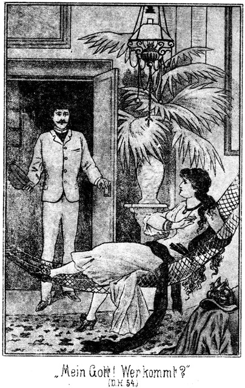»Mein Gott! Wer kommt! Ihr!«
Sie wollte emporfahren. Leider aber hatte sie es so eingerichtet, daß mehrere Strähnen ihres Haares durch die Maschen der Matte hingen und sich nun verfitzten. Sie konnte mit dem Kopfe nicht empor; sie konnte sich nicht erheben.
»Geht, geht!« rief sie. »Ich dachte, hier allein sein zu können!«
Sie wehrte mit den Händen ab. Dabei aber fielen die weiten Aermel ihres Kleides zurück, so daß ihre weißen, fleischigen Arme bis hinter die Ellbogen zu sehen waren. Bei diesem Anblicke durchzuckte es ihn glühend heiß. Er eilte auf sie zu, ergriff ihre Hand und sagte:
»Verzeiht, Madonna, daß ich störe!«
Sie entriß ihm die Hand und antwortete:
»Nein, nein! Fort, fort!«
»Gnade! Laßt mich hier!«
»Unmöglich, unmöglich!«
»Ich schwöre Euch, daß – – –«
»Geht, geht!« fiel sie ihm in die Rede. »Ihr seht doch, daß ich nicht in der Situation bin, einen Besuch zu empfangen.«
»Aber, bei allen Himmeln, ich bin auch nicht in der Situation, Euch zu verlassen!«
Er ergriff abermals ihre Hand. Sie that, als wolle sie ihm dieselbe entreißen, hütete sich aber sehr wohl, die dazu nöthige Kraft anzuwenden. In der Bemühung, sich aufzurichten, verschob sie ihr Gewand nur noch mehr, so daß ihre Reize sich seinem Blicke nur noch deutlicher boten. Darüber gerieth sie scheinbar in Zorn, in schamhafte Aufregung und machte dabei die Sache desto schlimmer.
»O, könnte ich doch auf! Mein Haar, mein Haar hält mich zurück! Seht Ihr es denn nicht!«
»Wohl sehe ich es.«
»So helft mir doch! Macht mich los aus diesen Maschen!«
Sein Angesicht war vor Aufregung ganz bleich geworden. Seine Augen glühten. Halb verhüllte Reize machen ja bekanntlich einen weit größern Eindruck als ganz unverhüllte. Er hätte um Alles in der Welt den gegenwärtigen Anblick nicht hingegeben.
»Ich werde mich hüten!« antwortete er, ohne daß er eigentlich wußte, was er sagte.
»Wie? Euch hüten? Wißt Ihr nicht, was Ihr einer Dame schuldig seid, die noch dazu Euer Gast ist?!«
»Sennorita, daran denke ich nicht. Ihr seid nicht eine Dame; Ihr seid nicht mein Gast. Ihr seid ein Engel, eine Huri aus Muhammeds Paradies, eine Venus, eine Göttin. Ich bete Euch an!«
Er legte den einen Arm unter die Hängematte, den andern um die Donna und drückte diese fest, fest an sich.
»Nennt Ihr das Anbetung!«
Sie that, als ob sie ihm widerstehe, als ob sie diese Worte keuchend vor Anstrengung hervorstoßen müsse. Dabei aber drückte sie den vollen, üppigen Busen mit Absicht nur desto fester an seine Brust.
»Schweigt, schweigt, Sennorita!«
Er suchte mit seinem Munde ihre Lippen.
»Nein, rufen will ich! Hören soll man mich!«
Sie that, als wolle sie ihm mit dem Munde ausweichen, traf aber desto sicherer den seinigen. Dabei ergriff sie ihn mit beiden Händen am Kopfe, als ob sie ihn zurückstoßen wolle, hielt ihn aber im Gegentheile so fest, daß der Kuß ein langer, langer und verführerischer wurde.
»Nein, nein! Nicht so, nicht so!« stöhnte sie dann.
»Laßt mich doch; laßt mich doch! Ich hasse Euch!«
Er aber hielt sie fest und antwortete:
»Haßt mich, ja haßt mich! Aber küssen werde ich Euch dennoch, küssen, küssen, küssen, bis Ihr mir sagt, daß Ihr auch lieben wollt!«
»Niemals, nie!«
»Und doch, doch, dennoch!«
Er hielt sie so fest, daß sie sich nicht mehr zu bewegen vermochte. Wenigstens schien es so. Aber wenn sie nur ernstlich gewollt hätte, so wäre es ihr jedenfalls nicht schwer geworden, sich von ihm zu befreien.
Er küßte, küßte und küßte bis – – die Hängematte die Last zweier Personen nicht mehr zu tragen vermochte. Einer der in den Wänden befestigten Haken, an welchen sie hing, gab nach. Er wurde aus der Mauer gerissen. Die Hängematte fiel mit Beiden zu Boden.
»Himmel! Wir fallen! Da, da – liegen wir!«
So rief sie erschrocken. Aber in ihrem Schrecke hielt sie sich doch so an ihm fest, als glaube sie, daß sie sonst noch viel tiefer fallen werde. Jetzt aber machte er sich aus ihrer Umschlingung los.
»Verzeihung, Madame! Hat es Euch wehe gethan?«
»Wehe? Der Fall wohl nicht aber – Euer Benehmen! Seht Ihr denn nicht, daß mein Haar noch immer in den Maschen hängt! Helft mir doch! Macht mich doch los!«
»Gleich, gleich! Zeigt her!«
Erst jetzt gehorchte er ihr. Während er bemüht war, ihr Haar und somit sie selbst von der Hängematte zu befreien, zitterten seine Hände, so aufgeregt war er. Er mußte ja Alles berühren, ihr Haar, ihren Kopf; er streifte ihren Nacken, ihre Arme, ihren Busen. Und das bemerkte sie gar nicht; das litt sie so ruhig. Sie sah gar nicht, daß in Folge des Falles sich das Kleid noch mehr vom Fuße herauf geschoben hatte. Sie hielt so still, damit ja keins ihrer Haare bei seinem Bemühen, sie zu befreien, verloren gehe. Aber das dauerte lange, sehr lange. Dabei wurde er ruhig, und auch sie schien in eine andere Stimmung gekommen zu sein.
»Da, endlich! Jetzt seid Ihr frei, Sennorita.«
»Ich danke Euch!«
»Also der Fall hat Euch nicht wehe gethan?«
»Ich hoffe es. Gewiß weiß ich es freilich noch nicht.«
Sie wollte sich vom Boden erheben. Es schien ihr nicht zu gelingen!
»O wehe! So helft mir doch!«
Sie hielt ihm beide Arme hin. Er ergriff den einen, legte seinen andern um ihre Taille und hob sie empor. Als ob erst jetzt die weibliche Schwäche über sie komme, zuckte sie zusammen und stützte sich auf ihn.
»Was ists? Habt Ihr Schmerzen?« fragte er.
Sie deutete nach dem Herzen.
»Doch nicht! Sollte etwa eine Rippe – – –?«
»Mir wird ganz übel!«
Sie legte plötzlich beide Arme um seinen Hals und hing sich schwer an ihn.
»So kommt zum Sopha!«
Er führte sie hin und ließ sie in das Kissen gleiten. Sie legte den Kopf hintenüber, schloß die Augen und flüsterte, obgleich sie saß:
»Haltet mich!«
»Habt Ihr Schwindel?«
»Ja.«
»Herrgott! Ein Arzt – ein Arzt – – –!«
»Nein, nein! Auf keinen Fall!«
»Es ist auch keiner da. Ich hatte im Schreck ganz vergessen, daß es hier in Mohawk-Station gar keinen Doctor giebt. Aber wollt Ihr vielleicht an Stelle des Arztes ein Glas Wasser?«
»Nein; geht nicht fort!«
»Aber Etwas muß doch geschehen!«
Sie holte mehrere Male tief und ängstlich Athem und antwortete dann:
»Ich habe – habe – keinen Athem. Luft, Luft!«
Er eilte an das Fenster und machte dasselbe, welches bereits offen stand, noch weiter auf.
»So nicht. Das hilft nicht.«
»Was denn?«
»Hier!«
Sie deutete mit der Hand auf das Corset.
»Soll ich aufmachen?« fragte er.
»Ja, schnell!«
Er gehorchte diesem Befehle weit lieber als jedem andern. »Schnell« hatte sie gesagt, dennoch aber brachte er sehr lange zu, ob mit Absicht oder ohne dieselbe, das war nicht zu sagen; aber als es ihm endlich gelungen war, seufzte sie langsam und tief auf und flüsterte, indem ihre Wangen Farbe bekamen:
»Dem Himmel sei Dank! Ich wäre erstickt!«
»So ist es Euch jetzt besser?«
»Viel – viel besser.«
»Und schmerzt es hier noch?«
Er legte ihr seine Hand auf das Herz.
»Nein, auch nicht mehr,« antwortete sie, indem sie die Berührung gar nicht zu fühlen schien.
Auch bemerkte sie gar nicht, daß er seine Hand an der angegebenen Stelle liegen ließ und daß er den andern Arm um ihren Nacken legte und ihren Kopf an sein Herz zog.
»So scheint es doch, daß Ihr Euch keinen Schaden gethan habt?«
»Nein; nur schwach bin ich.«
»Legt Euch fest an mich. Ich stütze Euch.«
Sie rückte fester an ihn heran und schloß die Augen. Sein Blick glitt langsam, langsam über ihre Gestalt, so langsam, daß ihm nicht die geringste ihrer Schönheiten entgehen konnte. Es fragt sich, ob er aufgestanden wäre, wenn der Blitz in diesem Augenblicke in der Nähe des Stationsgebäudes eingeschlagen hätte. Eine solche Fülle von Reizen hatte er noch nie, noch nie gesehen. Er bog sich nieder und küßte ihr Haar, ihre Stirn, ihre Wangen, ihren Nacken, bis endlich sein Mund an ihren Lippen hangen blieb. Und jetzt hatte sie nichts dagegen. Sie sträubte sich nicht. Sie lag still und bewegungslos an seinem Herzen und hielt die Augen geschlossen.
War sie etwa ohnmächtig? Wohl nicht. Ihr Busen hob und senkte sich regelmäßig, und seine Hand, welche grad auf ihrem Herzen lag, fühlte die regelrechten, ruhigen Schläge desselben.
»Sennorita!« flüsterte er.
Sie antwortete nicht.
»Donna Miranda!«
Jetzt bewegte sie sich leise.
»Miranda, meine Miranda!«
Sie öffnete die Augen und richtete den Blick auf ihn, und was für einen Blick, so still, so tief, so ergeben und doch so glühend, so verlangend.
»Hört Ihr mich?«
»Ja.«
»Zürnt Ihr mir?«
»Nein.«
»Und doch waret Ihr vorhin so bös auf mich!«
»Ich kannte es noch nicht.«
»Was?«
»Die – die Liebe.«
»Und jetzt kennt Ihr sie?«
»Ja.«
»So habe ich sie Euch kennen gelehrt? Ich, ich!«
»Ja, Ihr!« hauchte sie.
»Gewiß und wahrhaftig?«
»Ich beschwöre es.«
»Ihr habt nie geliebt?«
»Niemals.«
»Nie geküßt?«
»Nie, außer meinen Vater und meine Mutter.«
Dabei sah sie so fromm und kindlich aus!
»Und Ihr seid also nie verlobt gewesen, habt niemals geliebt, wirklich wirklich?«
»Wirklich nicht.«
»Wer das glauben könnte!«
»Warum wollt Ihr es nicht glauben?«
»Ihr seid zu schön dazu.«
»Ich bin arm, so arm und habe stets so einsam leben müssen. Da denkt man nicht an Liebe.«
»Aber die Männer, welche Euch sahen, müssen daran denken, wenn sie nicht von Stein sind.«
»Ich habe es Ihnen nicht geglaubt.«
»Auch mir nicht?«
»Auch nicht.«
»Vorhin nicht, aber jetzt doch wohl?«
»Auch jetzt nicht? Wie?«
»Nein.«
»Du glaubst es nicht, daß ich Dich liebe?«
»Wie sollte ich das glauben!«
»Aber Du siehst es ja! Du liegst an meinem Herzen; Du fühlst meine Küsse!«
»Das ist nur für diese Stunde.«
»Nein, für immer, für ewig.«
»Das glaube ich nicht.«
»Ebenso brauche ich Dir nicht zu glauben, wenn Du sagst, daß Du noch nie geliebt habest. Wie sträubtest Du Dich vorhin, und jetzt bist Du so duldsam!«
»Muß ich denn nicht? Ist das eine Sünde?«
»Nein, eine Sünde ist es nicht, aber es widerspricht Deinem vorherigen Verhalten.«
»Ich weiß nicht, wie das ist und wie das kommt. Ich begreife mich ja selbst nicht. Es hat mich niemals ein Mann berühren dürfen. Auch Ihr solltet es nicht. Ich habe mich gewehrt. Aber als Ihr mich küßtet, da – – –«
Sie hielt inne.
»Was war da?«
»Ich kann es nicht sagen.«
»Sage es getrost. Zwei Personen, welche sich lieb haben, dürfen und müssen sogar sich Alles sagen.«
»Ich schäme mich.«
»Unsinn! Schäme ich denn mich, zu Dir von Liebe zu reden? Also, bitte, was war da, als ich Dich küßte?«
»Da kam ein Gefühl – – ein – – –«
»Ein Gefühl über Dich?«
»Nein, nicht über mich sondern durch mich. Es ging durch und durch, als wenn ich electrisirt worden wäre! es war wie allmächtig; ich konnte Euch nicht länger widerstehen.«
»Das ist die Liebe!«
»Ja, das ist die Liebe. Ich habe einmal in einem Buche gelesen. Es betitelte sich: Die Liebe, ihr Wesen, ihre seelischen Eigenschaften und ihre körperlichen Folgen. Darinnen stand geschrieben, daß – – –«
»Wie?« fiel er ihr erstaunt in die Rede. »In diesem Buche hast Du gelesen?«
»Ja.«
»Auch von den körperlichen Folgen der Liebe?«
»Ja. Es stand ja da, und so mußte ich es lesen.«
»Du warst eine Dame; Du hattest nie geliebt. Wie kommst Du zu diesem Buche?«
»Eine Freundin besaß es. Sie lobte es sehr; da wurde ich neugierig, und sie borgte es mir.«
»Waren etwa auch Abbildungen dabei?«
»Ja.«
»Donnerwetter! So ein Buch sollte niemals in weibliche Hände kommen.«
»Warum nicht? Muß das Weib dumm und unwissend sein? Darf das Mädchen nichts lernen? Darf es nicht wissen, welche Ansprüche später an ihren Körper gemacht werden? Fällt das Mädchen nicht viel leichter in Versuchung und Stricke, wenn es nicht weiß, was es nothwendig wissen muß?«
»Du magst Recht haben. Also was stand in dem Buche geschrieben?«
Er merkte gar nicht, daß die Schlaue, welche so vertrauensvoll und hingebend, so zart, so heilig und rein in seinen Armen lag, eine raffinirte Courtisane war und nur mit ihm spielte. Sie antwortete:
»Es stand darin: Wenn es bei einem Kusse so wie tausend Seeligkeiten durch den Körper schauert, das ist die Liebe. Und Derjenige, der so einen Kuß giebt, der ist der Richtige.«
»Dich hat es bei meinem Kusse so durchschauert?«
»Ja.«
»Wie oft aber schon vorher?«
»Es war zum allerersten Male. So ein Gefühl habe ich noch niemals gehabt.«
»So bin ich der Richtige?«
»Wenn das Buch die Wahrheit gesagt hat. Das Mädchen muß beim Kusse fühlen, daß es unmöglich ist, dem Küssenden zu widerstehen.«
»Zu widerstehen? Worin?«
»In Allem.«
»Ah! In Allem. Weißt Du, was Du sagst?«
»Ist es falsch? Habe ich vielleicht etwas Unrechtes gesagt, Sennor?«
»Nein. Im Gegentheile macht mich Das, was Du gesagt hast, außerordentlich glücklich. Ich ersehe daraus, daß Du mich liebst.«
Da schlang sie die Arme um seinen Hals, küßte ihn innig und antwortete:
»Ja, ich liebe Euch. Das muß ich gestehen; das kann und darf ich nicht verschweigen.«
»So nenne mich Du!«
»Nein.«
»Warum nicht.«
»Sich lieben, das giebt noch kein Recht dazu.«
»Was sonst?«
»Mann und Weib, Braut und Bräutigam sollen und dürfen sich Du nennen. Andere aber nicht.«
»Du wirst ja auch mein Bräutchen sein.«
»Noch bin ich es nicht. Noch ist es erst bewiesen, daß ich Euch liebe. Daß Ihr mich auch liebt, das habt Ihr mir zwar versichert, bewiesen aber nicht.«
»Ah! Beweise ich es denn nicht, indem ich Dich umarme und küsse?«
»Nein.«
»Du hast mir Deine Liebe ja durch ganz Dasselbe bewiesen!«
»Das ist etwas Anderes. Wenn ein Mädchen solche Umarmungen und Küsse duldet, so liebt es sicherlich; ein Mann aber ist, wenn er darf, mit Jeder zärtlich. Seine Küsse beweisen zwar sein Wohlgefallen, nicht aber seine Liebe. Er muß ganz andere Beweise bringen.«
»Nun, welche denn?«
»Thaten. Das Weib beweißt seine Liebe durch das Dulden und Leiden: das Weib ist passiv; es duldet die Liebkosungen, die Umarmungen, die Küsse des Geliebten. Der Mann aber muß handeln.«
»Nun, was müßte denn ich thun, um Dir zu beweisen, daß ich Dich wirklich liebe?«
»Es fällt mir nicht gleich Etwas ein – und doch. Soll ich Euch Eins sagen, was Ihr thun sollt?«
»Ja, sage es!«
»Vernichtet das Telegramm!«
»Das ist zu gefährlich.«
»Ist es nicht auch für mich gefährlich, Eure Liebkosungen zu erdulden?«
»Es kann mir an die Ehre gehen!«
»Kann es mir nicht auch an die Ehre gehen, wenn ich Euch glaube. Euch vertraue, mich Euch hingebe?«
*
»Ich kann nicht und kann nicht. Ich muß das Telegramm an den Adressaten abgeben.«
»So gebt es ab und macht diesem Adressaten Eure Liebeserklärung!«
Sie wand sich von ihm los.
»Miranda!« bat er.
»Was noch?«
»Bleib bei mir!«
»Es hat keinen Zweck.«
Er wollte sie fest halten. Jetzt aber zeigte sie eine geradezu überlegene Körperkraft. Es war ihm unmöglich, sie zu hindern. Sie stand vom Sopha auf und brachte ihren Anzug in Ordnung. Sie that das mit einer Ruhe, aus welcher der festeste Entschluß sprach, daß sie nichts mehr von ihm wissen wolle. Ihre Füße verschwanden unter dem Saume des Gewandes, ihr Busen unter dem Corset, ihr üppiger Arm unter den Aermeln. Als sie nun begann, auch das aufgelöste Haar in Ordnung zu bringen, überkam es ihm wie eine Angst die Liebe dieses herrlichen Wesens zu verlieren, diese Liebe, welche er soeben noch in so hohem Maße besessen hatte, daß Miranda in seinen Armen gelegen hatte, wie eigentlich nur das Weib in den Armen des angetrauten Gatten liegen soll. Er stand auf und sagte:
»Es ist viel, sehr viel, was Du verlangst!«
»Ist meine Liebe weniger?«
»Vielleicht!«
»So scheiden wir. Der Erste, den ich liebte, ist meiner Liebe nicht würdig. Ich werde wieder einsam durch das Leben gehen wie vorher; aber das ist besser als ein kurzes Glück genießen, welches sich später als Trug und Täuschung erweist.«
»Miranda, ich bitte Dich. Laß von Deiner Bedingung und Du sollst sehen, daß unser Glück die reine Wahrheit und nicht eine Täuschung ist!«
»Ich kann nicht verzichten.«
»Auf keinen Fall?«
»Auf keinen, zumal ich weiß, daß die Erfüllung meiner Bedingung keine üblen Folgen bringt.«
»Wie willst Du das wissen?«
»Ich weiß es, das ist genug. Jetzt bitte ich Euch, mich zu verlassen.«
»Du scherzest!«
»Es ist mein Ernst. Ich bedarf der Ruhe.«
»Und ich der Liebe!«
Et trat auf sie zu. Sie aber wich zurück und sagte in strengem Tone:
»Habt Ihr uns Eure Gastfreundschaft etwa nur angeboten, um uns zu belästigen? Draußen sitzen die Herren. Was sollen sie von mir denken?«
»Laß sie denken, was sie wollen, nur liebe mich!«
»Ich liebe keinen Unwürdigen.«
Sie hatte sich verhüllt; aber als sie stolz und drohend vor ihm stand, traten ihre vollen, herrlichen Formen so plastisch hervor, daß sie ihm fast noch schöner vorkam als vorher. Sollte er sie denn wirklich verloren geben?
»Miranda, habe Mitleid!«
»Mitleid? Den Mann, welchem meine Liebe gehören soll, will ich achten, nicht aber bemitleiden. Schämt Euch, Sennor, das von mir zu verlangen.«
»Ich meine ja nur in diesem Falle!«
»Schon gut! Ich wiederhole es: Verlaßt mich!«
»Es ist mir unmöglich!«
»So muß ich mich selbst von Euch befreien. Die Sennoras werden mir beistehen.«
Sie schritt nach der Thür. Kam es so weit, daß sie dieselbe öffnete, so war dieses reizende Weib für ihn verloren. Es gab keine Wahl mehr für ihn. Er ergriff ihren Arm, hielt sie zurück und sagte:
»Halt! Bleib da, Sennorita!«
»Nun?«
Sie blieb stehen und blitzte ihn mit stolzen, fangenden, herausfordernden Augen an.
»Ich will es thun!«
»Her damit!«
Er zog das Telegramm aus der Tasche und gab es ihr. Sie steckte es ein.
»Seid Ihr nun zufrieden?«
Sein Blick war beinahe angstvoll auf sie gerichtet. Es ist wahr: Ein schönes Weib hat mehr Einfluß auf den Mann als der beste Mann auf seine Frau. Die Augen Miranda's blickten milder, und ihre Züge nahmen ein freundliches Lächeln an. Sie reichte ihm die Hand und antwortete:
»Ganz zufrieden wohl noch nicht.«
»Warum? Was soll ich noch thun?«
»Das sage ich vielleicht später. Für jetzt aber halte ich es für meine Pflicht, Euch zu beruhigen. Es schadet Euch nichts, wenn dieses Telegramm verschwindet. Der Adressat hat eins erhalten.«
»Er soll doch zwei empfangen!«
»Eigentlich nur eins. Steinbach hat nur ein einzig Mal an ihn telegraphirt, das andere Mal sind wir selbst es gewesen.«
»Ah! Also ein Geniestreich!«
»Ja.«
»Aber der Inhalt! Der stimmt nicht!«
»Das geht Euch nichts an. Ueberdies wird kein Mensch das Telegramm auch nur erwähnen. Morgen, wenn Steinbach kommt, ist Wilkins mit den Damen fort. Wer soll dann fragen. Setzt Euch wieder zu mir. Es soll Versöhnung zwischen uns Beiden herrschen.«
Er nahm an ihrer Seite Platz. So, wie sie in den letzten zwei Minuten vor ihm gestanden hatte, wagte er kaum, sie wieder zu berühren. Sie war ein Dämon, aber ein reizender, süßer Dämon, der Einen in die Gefahr bringen konnte, aus lauter Liebe den Verstand zu verlieren.
»Was werdet Ihr mit der Depesche thun?« fragte er.
»Ich werde sie vernichten.«
»Können wir dies nicht sofort vornehmen?«
»Erst muß ich sie meinen Begleitern zeigen. Aber wie kommt es, daß Ihr nicht mehr Du zu mir sagt?«
»Darf ich denn?«
»Ich denke, Ihr habt mich lieb!«
»Unendlich!«
»Kaum möchte ich es glauben.«
»Blickt doch einmal in den Spiegel!«
»Das habe ich oft gethan,« lächelte sie.
»So müßt Ihr gesehen haben, wie schön Ihr seid.«
»Das sind Ansichten.«
»Ihr seid schön, unendlich schön.«
»O, man sagt, daß es sehr viele Arten von Schönheiten gebe!«
»Das ist wahr, und Ihr gehört zur herrlichsten Art derselben. Ihr gehört zu den herrlichen, üppigen, überwältigenden Schönheiten, die Einen um den Verstand bringen können!«
»Sehr gut! Aber ich hoffe, daß Ihr Euch noch in dem Besitze des Eurigen befindet!«
»Jetzt allerdings. Solche Auftritte wie vorhin aber dürfte ich nicht viele erleben.«
»So würdet Ihr ihn verlieren?«
»Ich befürchte es.«
»So wollen wir uns in Zukunft vor ähnlichen Scenen in Acht nehmen!« Sie blickte ihn dabei so zärtlich, so gewinnend an, daß er den Arm um sie legte und ausrief:
»Miranda, welch ein Wesen bist Du!«
»Ein überirdisches?«
»Fast möchte man es glauben.«
»Und doch sagtest Du, ich sei so sehr irdisch.«
»Wann hätte ich das gesagt?«
»Vorhin. Du nanntest mich üppig, überwältigend.«
»Das bist Du auch in hohem Grade.«
»So besitze ich also recht irdische Gaben. Ich weiß, baß ich keine ätherische Schönheit bin, und das ist mir sehr lieb. Die Liebe will leben und genießen. Was sie verlangt, muß man ihr gewähren.«
Er fühlte sich wie berauscht. Sie nannte ihn jetzt sogar Du.
»Wirst Du Wort halten?«
»Gewiß.«
»Also Alles gewährst Du mir?«
»Diese Lippen sind mein? Ich darf sie küssen?«
»Du darfst.«
»Dieser herrliche Nacken, dieser Busen – –?«
»Alles, Alles! Gehe nicht weiter! Ich bin Dein, wenn Du so bist, daß ich an Deiner Liebe nicht zu zweifeln brauche.«
»Du sollst an Sie glauben jetzt und in alle Ewigkeit.«
»Diese Ewigkeit bedeutet aber wohl nur den heutigen Tag, vielleicht gar nur wenige Stunden.«
»Warum?«
»Weil wir abreisen.«
»Ja, daran habe ich in meiner Liebe gar nicht mehr gedacht. Ihr wollt ja fort.«
»Und Du bleibst hier?«
Er blickte ihr voll und verlangend in die Augen und fragte:
»Soll ich denn bleiben?«
»Du hast zu bestimmen.«
»Oder soll ich mit?«
»Wie Du willst.«
»Sprich nicht so. Das klingt, als ob es Dir sehr gleichgiltig sei. Welches ist Dir lieber.«
»Frage doch nicht! Hier hast Du die Antwort!«
Sie nahm seinen Kopf in ihre Hand, drückte ihn an sich und küßte ihn dann ein-, zwei-, dreimal auf die Lippen. Diese drei Küsse sandten ein Feuer in seine Adern, welches ihn zu Allem fähig hätte machen können. Er rief entzückt:
»Also ich soll mit?«
»Ja freilich, freilich!«
»Und wenn ich es thue?«
»Kannst Du denn? Hast Du Zeit?«
»Ich habe Zeit mehr als eine ganze Woche.«
»So bin ich sehr, sehr glücklich darüber.«
»Wirklich? Wirst Du mir für dieses Opfer ein klein Wenig dankbar sein?«
»Ein klein Wenig? Lerne mich kennen! Ich hasse das Kleine, das Winzige. Wenn ich liebe, so ist meine Liebe eine Gluth, welche jedes Bedenken verschluckt, und bin ich dankbar, so ist meine Dankbarkeit ein Quell, welcher nicht fragt, von wem und wozu sein Wasser gebraucht und verwendet wird.«
»Ja, Du bist groß. Du bist herrlich. Wann reisen wir ab?«
»Das ist noch unbestimmt. Das kommt auf Zweierlei an. Zunächst müssen wir wissen, ob wir Deinen Seelenverkäufer erhalten können.«
»Natürlich.«
»Ist er ausgerüstet?«
»Für kurze Fahrten, ja. Wo wollt Ihr hin?«
»Wohl bis nach Aubrey hinauf?«
»Das ist sehr weit. Da muß ich für Proviant sorgen.«
»Ist die Bemannung bei der Hand?«
»Stets. Wenn ich die Leute nicht brauche, sind sie hier an der Bahn beschäftigt.«
»Kann man sich auf sie verlassen?«
»Unbedingt. Sie verstehen ihr Fach.«
»Das meine ich nicht. Du wirst bereits bemerkt haben, daß unsere Reise einen Zweck hat, den nicht ein Jeder zu kennen braucht. – – –«
»O, sie sind verschwiegen und nicht sehr wißbegierig.«
»Das ists nicht allein. Es ist möglich, daß wir von ihnen einen Dienst verlangen, welcher eigentlich nicht in ihr Fach schlägt. – – –«
»Sie sind gefällig.«
»Das ist auch nicht genug. Der Dienst kann der Art sein, daß er bedenklich erscheint.«
»Hm! Du weißt, daß die Bevölkerung des Südwestens nicht sehr wählerisch ist.«
»Wir wollen diesem Steinbach und seinem Wilkins einen Streich spielen, der wohl etwas derb angelegt ist. Er soll auf das Schiff gelockt werden und mit uns bis Aubrey fahren. Wie nun, wenn er nicht will, wenn er sich dagegen sträubt?«
»Wird er das?«
»Voraussichtlich.«
»So müßt Ihr ihn an das Land lassen.«
»Das liegt nicht in unserer Absicht. Dieser Wilkins ist ein Flüchtling. Er ist mit dem Gesetz zerfallen und wurde jahrelang von der Polizei vergebens gesucht.– – –«
»Aha! Warte, Hallunke!«
»Wir haben bisher Nachsicht mit ihm gehabt. Da er aber jetzt gar dem Sennor Roulin seine Geliebte entführt, so haben wir beschlossen, kurzen Prozeß zu machen. Wir locken ihn auf Dein Schiff, schaffen ihn nach Aubrey und übergeben ihn der dortigen Polizei.«
»Das ist das Klügste und Einfachste.«
»Er wird sich aber wehren.«
»Sich auf das Schiff schaffen zu lassen?«
»Nein, nein. Ich sage Dir ja, daß wir ihn an Bord locken werden. Aber wenn er sich dort befindet und unsere Absichten merkt, so wird er voraussichtlich Widerstand leisten. Es fragt sich nun, was Du in diesem Falle zu thun gedenkst.«
»Ich kann ihm weder helfen noch ihn unterdrücken. Ich habe nichts mit ihm zu thun.«
»Aber Deine Leute.«
»Auch ihnen geht das Dings nichts an.«
»Aber vielleicht werden wir ihrer Hilfe bedürfen.«
»Hm, das ist dumm. Man soll sich nicht in anderer Leute Angelegenheit mischen. Am Allerbesten ist es, Ihr miethet mir Beides, Schiff und Leute ab und wir unterschreiben einen Vertrag. Die Leute müssen Euch dann gehorchen, und die Verantwortung habt allein Ihr.«
»Geht das denn an?«
»Ganz gewiß. Aber was geschieht dann in Aubrey?«
»Mit wem?«
»Mit Dir? Bleibst Du dort?«
Da legte sie ihre Wange an die seinige und antwortete:
»In Aubrey werde ich frei! Ich werde da wissen, ob Deine Liebe keine Täuschung ist. Frage mich dann wieder, was ich zu thun gedenke.«
»Meine Miranda! Welch ein süßes, entzückendes Wesen bist Du! Aber bis dahin, während der Fahrt, da werde ich wohl recht schmachten und recht dürsten müssen?«
»Wer soll Dir das Trinken wehren?«
»Du! Verstehe wohl, ich meine nicht das profane Trinken, das Wasser trinken. Ich spreche von der Liebe.«
»Soll ich das Wasser sein, welches Du trinkst? Dann trinke in Gottes Namen, so viel Du vermagst.«
»Bis auf den Grund?«
»Bis auf den Grund,« nickte sie.
»Die Andern dürfen sehen und wissen, daß Du meine Geliebte bist?«
»Warum nicht?«
»Wie glücklich wäre ich, wenn Du nicht nur meine Geliebte sein wolltest. Meine Verlobte, meine Braut.«
»Wenn es Dich glücklich macht, dann gern.«
»Oder gar mein Weibchen, mein süßes, liebes Weibchen? Willst Du, Miranda?«
»Verstehe ich recht? Wir wollen während der Fahrt so leben wie Mann und Frau?«
»Ja.«
»Du verlangst zu viel!«
»Sagtest Du nicht, ich solle austrinken bis auf den Grund?«
»Ich dachte nicht, daß Du diesen Worten eine solche Deutung geben wirst. Aber beunruhigen wir uns jetzt nicht mit solchen Fragen. Genießen wir den gegenwärtigen Augenblick. Der morgende Tag mag für uns und sich selber sorgen.«
Sie zog ihn an sich, und er legte die Arme fest und warm um sie. So saßen sie, aneinander gepreßt, Lippe an Lippe. Sie küßten nicht, sondern sie tranken von Mund zu Mund. Er fühlte das sehnsuchtsvolle Wallen ihres Busens. Er schloß die Augen. Es war ihm, als ob die ganze Umgebung sich mit ihm rund um drehe.
Auf den Gedanken aber kam er nicht, daß eine solche Virtuosin der Liebe doch wohl nicht zum ersten Male lieben müsse. Er genoß den Augenblick, und dieser schien ihm ein Meer voller Entzücken zu sein. –
Wilkins war, als er sich bei Balzer erkundigt hatte, langsam nach Mohawk in sein Hotel zurückgekehrt. Er hatte freilich bereits vom Wirthe erfahren gehabt, daß der nächste Zug erst den künftigen Tag abgehe, es aber nicht glauben wollen. Nun hatte er sich Gewißheit geholt, eine Gewißheit, die nicht nach seinem Wunsche war und auch nicht nach dem Wunsche Derjenigen, welche ihn im Hotel erwarteten.
Sie saßen beisammen, Zimmermann, Magda Hauser, Almy Wilkins und waren wenig erbaut von dem, was sie erfuhren.
»Und doch telegraphirt Steinbach, daß wir augenblicklich aufbrechen sollen,« sagte Zimmermann. »Er muß seinen guten Grund zu dieser Aufforderung haben, sonst hätte er sie ja nicht an uns ergehen lassen. Was thun wir?«
»Wir müssen eben geduldig warten,« meinte Wilkins.
»Leider habe ich nicht sehr viel Geduld. Uebrigens scheint es mir auch, als ob Geduld ein Kraut sei, welches ganz im Stande ist, in unserm Falle giftig zu wirken. Sollte es wirklich keine andere Gelegenheit geben, schnell von hier fortzukommen?«
»Der Bahnbeamte, welchen ich frug, wußte keine.«
»Pah! Das kennt man. Ihm kommt es natürlich darauf an, so viel wie möglich Passagiere zu bekommen, damit die Bahn Etwas verdient. Es muß doch Pferde geben. Ich werde einmal gehen und Nachfrage halten.«
»Bleibt nur da, junger Freund. Ich werde das selbst besorgen!«
Wilkins ging, und Zimmermann befand sich mit den beiden jungen Damen wieder allein. Nach kurzer Zeit entfernte sich Almy, um irgend etwas Notwendiges vorzunehmen, und sofort stand auch Magda auf, um ihr zu folgen. Da aber bat er:
»Bitte, bleibt, Sennorita!«
Sie drehte sich unentschlossen um. Ihre Wangen hatten sich leicht geröthet, und an ihrem schönen wunderbar aufgesetzten Halse sah er, daß sie einige Male hinter einander schluckte. Das ist immer ein Zeichen von Verlegenheit
»Ihr flieht mich, Sennorita!« sagte er in vorwurfsvollem Tone.
»Ich, Euch?«
»Ja. Was habe ich Euch gethan?«
»Nichts, gar nichts!«
»So weiß ich nicht, warum Ihr Euch immer von mir wendet. Habt Ihr kein Vertrauen zu mir?«
»Sennor, ich weiß gar nicht, was ich Euch antworten soll. Ihr selbst wißt ja am Besten, daß ich Vertrauen zu Euch habe. Ihr habt es verdient.«
»Meint Ihr?«
»Ja. Ihr seid meinetwegen den Maricopa's nachgeschlichen und habt dann am Silbersee mit ihnen gekämpft. Ihr habt Euch für mich in Gefahr begeben. Warum sollte ich Euch nicht vertrauen?«
»Und dennoch fürchtet Ihr mich?«
»Ich Euch fürchten? Nein!«
»So fürchtet Ihr mich nicht selbst, sondern vielmehr meine Worte.«
»Ich verstehe Euch wirklich nicht.«
»Dann bitte, setzt Euch einmal zu mir! Wir wollen recht offen zu einander reden. Kommt her!«
Er ergriff ihr kleines, feines Händchen und zog sie zu dem Stuhle, welcher neben dem seinigen stand. Dabei wich die Farbe aus den Wangen und ihr Auge zeigte jene Feuchte und Unsicherheit, welche man nur bei Sorge oder Verlegenheit beobachtet. Er bemerkte das wohl und sagte in beruhigendem Tone zu ihr:
»Fürchtet Euch nicht, Sennorita! Ich werde die Worte, welche Ihr jetzt von mir zu hören erwartet, nicht sprechen. Ich habe Euch schon längst beobachtet und bin der Meinung, daß es zwischen uns Beiden zur Richtigkeit kommen muß.«
Sie ließ einen tiefen, ängstlichen Seufzer hören.
»Wolltet Ihr Etwas sagen?« fragte er, als er diesen Seufzer vernahm.
»Nein.«
»O doch! Seid aufrichtig! Was war es?«
»Ich fürchte, daß Ihr doch sagen werdet, was ich nicht hören mag.«
»Warum befürchtet Ihr es?«
»Weil Ihr davon spracht, daß es zwischen uns Beiden zur Richtigkeit kommen muß.«
»Darf ich rathen, was Ihr meint?«
»Nein, nein,« antwortete sie schnell.
»Ich werde es freilich gegen Euren Willen sagen müssen. Ihr meint, daß ich von Liebe zu Euch sprechen werde. Ist es nicht so?«
Sie senkte verlegen und verschämt das kleine Köpfchen, antwortete aber nicht.
»Ist es nicht so?« wiederholte er dringend.
Jetzt nickte sie. Ihre Wangen hatten sich glühend roth gefärbt.
»Nicht wahr, ich hatte Recht. Ihr habt stets gefürchtet, daß ich zu Euch von Liebe sprechen werde, und davor habt Ihr eine außerordentliche Angst gehabt. Ich habe Euch das so oft angemerkt. Ich habe diese Angst oft zertheilen wollen, aber stets wenn ich begann, floht Ihr von mir. Ich konnte niemals einen Augenblick allein mit Euch sein. Länger aber als bis heute habe ich doch nicht warten wollen.«
Da hob sie schnell den Kopf. Die Röthe wich aus ihren Wangen; ihre Augen bekamen neuen Glanz, und ihre Stimme klang viel fester als vorher:
»So habe ich mich getäuscht?«
»Ja, sehr, meine liebe Sennorita.«
»Gott sei Dank!«
Das kam so tief und freudig aus dem Herzen heraus, daß Zimmermann in vorwurfsvollem Tone sagte:
»Ihr müßt mich aber doch sehr, sehr hassen!«
»Hassen?« frug sie verwundert.
»Ja.«
»Warum meint Ihr das?«
»Weil Ihr gar so froh seid, daß ich nicht beabsichtige, Euch einen Heirathsantrag zu machen.«
Sie fiel abermals in peinliche Verlegenheit. Das süße Gesichtchen wurde wieder dunkelroth.
»Sennor Zimmermann!«
»O bitte, ich meine es nicht bös. Seid aufrichtig. Nicht wahr, Ihr seid froh?«
»Ihr zürnt mir doch, wenn ich antworte!«
»O nein. Wir müssen doch aufrichtig mit einander sein. Oder etwa nicht?«
»Ganz gewiß!« antwortete sie schnell vor Angst, daß er doch thun werde, was sie befürchtete.
»Nun also, seid Ihr froh?«
»Ja.«
»Da hat man es!« sagte er im Tone des Aergers.
»Seht Ihrs! Nun zürnt Ihr mir!«
»Nein, ich zürne Euch nicht.«
»Also liebt Ihr mich nicht?«
»Soll ich denn nicht?«
»Nein.«
Sie blickte ihn dabei so aufrichtig und ehrlich an, daß er doch lachen mußte.
»O wehe! Ich soll Euch nicht lieben und liebe Euch doch.«
»Herrgott! Da, da kommt es also doch!«
»Ja, es kommt; es muß ja kommen, Sennorita. Oder kann es einen einzigen Menschen geben, der Euch nicht liebt, sobald er Euch kennen lernt?«
»Es soll mich aber keiner lieben!«
»Warum nicht?«
»Ich will es nicht!«
Sie warf dabei das Köpfchen trotzig in den Nacken.
»Also auch ich nicht? Und doch kann ich Euch nicht gehorchen. Ich liebe Euch dennoch!«
»Da gehe ich schleunigst fort!«
Sie stand schnell auf und wollte sich entfernen. Er aber ergriff rasch ihr Händchen und sagte:
»Bitte, nicht so hastig! Es muß ja klar werden. Wißt Ihr denn nicht, daß es verschiedene Arten von Liebe giebt?«
»Verschiedene? Ja, ich habe davon gehört.«
Seine letzte Frage hatte sie sofort wieder beruhigt, und zwar so, daß sie ihm sogar ihre Hand ließ.
»Nun, welche Arten zum Beispiel?«
»A – a – – affenliebe!« platzte sie lachend heraus.
»Die giebt es freilich; aber ich habe sie nicht gemeint.«
»Vaterlandsliebe?«
»Auch nicht.«
»Stille Liebe?«
»Ja, ja!«
»So seid ja recht still davon!«
»Ich meine sie leider nicht, also darf ich auch nicht schweigen.«
»Elternliebe oder Kindesliebe.«
»Ihr kommt schon näher.«
»Bruder- oder Geschwisterliebe?«
»Jetzt, jetzt habt Ihr das Richtige getroffen! Bruderliebe, die ist es, welche ich für Euch hege. Darf ich Euch so lieb haben, wie ein Bruder seine Schwester?«
Sie schwieg einige Augenblicke. Sie blickte ihm fragend in die Augen; dann antwortete sie in hellem, fröhlichem Tone:
»Gern, o wie gern!«
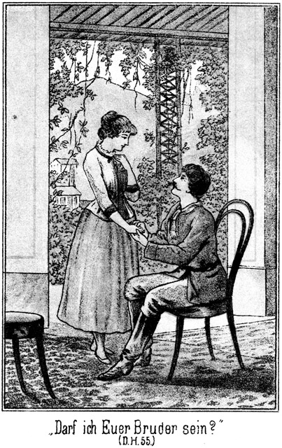»Also ich darf Euer Bruder sein?«
»Mein Bruder Carlos!«
»Und Ihr seid mein Schwesterchen?«
»Aus vollem Herzen!«
»So bitte, gebt mir zur Bekräftigung Euer kleines, allerliebstes Patschchen her!«
Er hielt ihr die Hand entgegen.
»Hier ist sie!« lachte sie, indem ihr Gesicht vor lauter Glück strahlte.
»So, ich danke Euch, Sennorita! Das ist Alles, was ich erreichen wollte, weil ich nicht mehr erreichen konnte. Ich habe eine Schwester, und Ihr habt einen Bruder, auf welchen Ihr Euch in jeder Lebenslage verlassen könnt. Nun ist Alles klar. Ist's so recht?«
»Ganz und gar recht.«
»Und Euer Herz ist leicht.«
»So leicht, so leicht! Ich hatte wirklich immer so große Angst, daß Ihr von Anderem sprechen würdet.«
Sein Auge zeigte einen feuchten Schimmer und seine Miene war sehr ernst, als er antwortete:
»Sennorita, Ihr hattet doch wohl ein Wenig Grund zur Sorge. Wenn ich nur eine Ahnung des Gelingens gehabt hätte, so wäre es doch wohl so geworden, wie Ihr befürchtet habt. Ihr seid ein helles, lichtes, reines Wesen, als hätte Euch der Herrgott vom Himmel gesandt und die Klarheit des Aethers wollte selbst auf der Erde nicht von Euch lassen. Mein Leben aber ist dunkel und traurig. Wenn nun am Horizonte eines solchen Lebens plötzlich ein Wesen erscheint, umstrahlt von der Aureole eines bessern Seins, dann ist es kein Wunder, wenn das Herz in Liebe und Anbetung klopft. Das sage ich Euch in aller Aufrichtigkeit. Ich habe mir wirklich Mühe gegeben, mein Herz zu bezwingen; ich habe es bezwungen, aber leicht ist es mir nicht geworden. Es hat vielleicht gar hier und da im Stillen geblutet; aber der Gedanke, daß ich ein Schwesterlein lieben darf, wird sich wie Balsam auf diese Wunden legen.«
Er senkte den Kopf und schwieg. Auch ihr Auge war feucht geworden. Sie trat leise einen Schritt näher. Wollte sie, oder folgte sie nur der Regung des Augenblickes – sie legte ihm beide Händchen auf den Kopf und sagte:
»Verzeiht mir! Ich kann ja nicht dafür. Der liebe Gott wird Eurem Herzen Frieden schenken!«
»Ja, ja, das mag er thun!« antwortete er, indem er sich erhob.
Da fielen ihre feuchten Blicke in einander. Der ihrige, vorher so zaghaft, wich dieses Mal dem seinigen nicht aus, sondern blieb fest an ihm hangen.
»Magda!«
»Karl!«
Er legte langsam und leise den Arm um sie und zog sie an sich heran. Eine tiefe Gluth flammte über ihr Gesicht; noch tiefere Blässe folgte darauf. Hatte sie schon wieder die bereits erwähnte Angst vor ihm? Sie floh aber nicht. Sie duldete, daß er ihr Köpfchen an sein Herz legte und dann mit seinen Lippen ihre reine, weiße Stirn berührte.
»Gott segne Dich, lieb Schwesterlein!
Mög stets ein Engel bei Dir sein,
Der Dich auf seinen Händen trage
Durch helle und durch trübe Tage!«
Er sagte dies langsam und aus tiefster Seele heraus, strich ihr noch einige Male liebkosend über das weiche Haar und schob sie dann von sich zurück.
Sie weinte leise. Das rührte ihm die tiefste Tiefe seines Herzens auf. Als er jetzt wieder sprach, hörte sie es seiner Stimme an, daß auch er mit einem Schluchzen rang, welches er kaum zu bezwingen vermochte:
»Weine ja nicht, Magda! Ich kann das nicht hören. Ich allein hab Thränen im Innern. Hast Du einmal gehört, daß Einer sich selbst begräbt?«
»Nein. Das ist doch unmöglich.«
»O, es ist im Gegentheile sehr möglich. Wenn ein tief angelegtes Gemüth so eine echte, richtige Herzensliebe fühlt, so hängt das Leben an dieser Liebe. Muß man der Liebe entsagen, so entsagt man dem Leben, denn leben heißt lieben. Heut habe auch ich eine solche Liebe zu Grabe getragen. Mein Leben wurde mit hinabgesenkt.«
»Das verhüte Gott!«
Sie war wirklich erschrocken.
»O, ich meine nicht mein körperliches, mein leibliches Leben,« tröstete er sie. »Das bleibt mir übrig, und das kann vielleicht sogar prächtig gedeihen, daß kein Mensch, der mich erblickt, es merkt, daß ich eigentlich todt bin. Mein Leben ist in das Deinige hinübergeflüchtet. Dort hat es eine heiligere, eine bessere Stelle als bei mir. Und das ist es, was mich tröstet.« Und in munterem Tone fuhr er fort: »Nun aber wollen wir die Köpfe nicht hängen. Geschwister sollen sich das Dasein nicht schwer sondern leicht machen. Und da habe ich Euch, Sennorita, Etwas mitzutheilen, was Euch veranlassen wird, Euer Köpfchen recht getrost und froh aufzurichten.«
»Was wäre das?«
»Er denkt an Euch.«
»Er? Wer?«
Es war ihrer unbefangenen Miene anzusehen, daß sie wirklich bei dieser Frage an keinen Menschen dachte.
»Nun, er!« antwortete er mit Nachdruck.
»Das verstehe ich nicht.«
»So muß ich durch eine andere Thür in die Kirche gehen. Nicht wahr, die Angst, daß ich von Liebe sprechen werde, hatte einen Grund?«
Sie dachte nach, aber vergebens. Darum antwortete sie:
»Welchen Grund sollte sie gehabt haben?«
»Einen Grund, der wohl nicht in mir lag, denn Ihr selbst habt mir gesagt, daß Ihr mich nicht haßt. Der Grund lag an einem Andern.«
»Wen meint Ihr?« fragte sie, noch immer ganz und gar unbefangen.
»Einen, den Ihr liebt.«
»Ich?«
»Ja, dem Euer kleines, liebes Herz gehört.«
»Da giebt es keinen!«
Er zog sie auf den Stuhl zurück und setzte sich neben sie. Trotz der Entsagung, welche er hatte leisten müssen, lag sein Auge mit aufrichtiger, tiefer Freundlichkeit auf ihrem sinnenden Gesichte.
»Ihr kennt wirklich keinen?«
»Nein,« antwortete sie, ihm ehrlich und offen in das Auge blickend.
Da glitt ein überlegenes und zugleich gerührtes Lächeln über sein Gesicht, und er rief:
»Welch ein unerklärliches Ding ist doch das kleine Menschenherz! Es beherbergt eine ganze Welt, ohne daß es selbst Etwas davon weiß. Wir sind Geschwister und wollen als Geschwister mit einander sprechen, aufrichtig, ohne Rückhalt und falsche Scham. Sagt mir, bin ich häßlich?«
»O nein,« lachte sie. »Ihr seid sogar ganz hübsch.«
»Alt?«
»Wer das behaupten wollte, wäre blind.«
»Habe ich einen schlechten Character?«
»Den allerbesten von der Welt!«
»Welche schlechten Eigenschaften besitze ich?«
»Ich kenne keine einzige.«
»Ein Glück, daß ich nicht auch mich für einen solchen Engel halte. Aber wenn ich wirklich so wäre, dann müßte ich doch eine höchst liebenswerthe Person sein.«
»Die seid Ihr auch in Wahrheit.«
»Und doch habt Ihr Furcht gehabt, daß ich von Liebe sprechen könnte!«
Sie wurde verlegen und antwortete nicht.
»Seht, Sennorita, das ist die Falle, in welcher ich Euch gefangen habe. Ich bin kein so seltener Kerl, wie Ihr meint; aber ich habe keine äußern Fehler; ich gefalle Euch; Ihr glaubt mir zu Dank verpflichtet sein zu müssen, und doch liebt Ihr mich nicht. Was ist der Grund?«
»Ich weiß es nicht.«
»Ich kenne ihn. Es ist der einzige, den es nur geben kann. Ihr liebt einen Andern.«
Sie schrak sichtlich zusammen.
»Einen Andern?« fragte sie, ihn ganz rathlos anblickend.
»Ja.«
»Mein Himmel! Welch ein Gedanke! Ihr irrt.«
»O nein. Ihr liebt einen Andern, und ich kenne ihn sogar sehr gut.«
»Ich kenne ihn nicht.«
»Ich bin überzeugt, daß ich Eure Liebe errungen hätte, wenn Euer Herz überhaupt noch frei gewesen wäre. Daß mir das nicht gelungen ist, das ist der sicherste Beweis, daß ein Glücklicherer vor mir gekommen ist.«
»Aber Ihr irrt, Ihr irrt wirklich!« entgegnete sie im Tone tiefster Wahrheit.
»Laßt einmal sehen! Ich halte es für meine Pflicht, das Medaillon zu öffnen, aus welchem sein Bild Euch entgegenlächeln wird. Seid Ihr vielleicht einmal in San Franzisco gewesen?«
»Ja.«
»Dann auch in Carson-City.«
»Ja.«
Aber dieses Ja kam langsamer über die Zunge. Ihre Augen blickten wie forschend in das Weite, und ihre Wangen begannen, sich zu färben.
»Seid Ihr da nicht einem fremden Sennor begegnet?«
»Ich habe da sehr viele Männer gesehen.«
»Ich meine den, welchem Ihr auf der Treppe begegnetet, neben dem Ihr an der Tafel saßt und dem Ihr endlich Euren Namen sagtet.«
Jetzt fuhr sie vom Stuhle empor, blickte ihm starr in das Gesicht und fragte:
»Den? Den soll – soll – ich – ich lieben?«
»Ja, Schwesterchen.«
Sie legte sich die Hände vor die Augen, wie um gar nichts zu sehen und nur allein in die Vergangenheit zurückzublicken. Als sie dieselben dann rasch wieder herabnahm, war ihr Gesicht mehr als glühend roth.
»Gott, mein Gott!«
Diesen Ruf stieß sie aus, dann eilte sie so schnell wie möglich zur Thür hinaus.
Er blieb zurück und stützte den Kopf in die Hand. Sein Gesicht hatte einen trüben, beinahe gramvollen Ausdruck. Er flüsterte für sich hin:
»Welch ein Mädchen! Da kann eigentlich nur der Psycholog glauben. Sie hat geliebt, ohne es selbst zu wissen. Erst ich öffne ihr jetzt die Augen. Warum aber thue ich das? Könnte ich nicht ein Schurke sein und so lange um sie werben, bis sein Bild aus ihrer Seele verschwunden ist und sie dann mein werden könnte? Nein, hebe Dich weg, Satanas! Für den Preis eines solchen Verrathes möchte ich nicht einmal den Himmel erkaufen. Für Langendorff bin ich hier, und für ihn muß ich handeln, ob mir gleich das Herz blutet und ich mein Leben in immer enger und öder werdender Perspective verschmachten sehe, bis es zum kleinen Punkte wird, der dann in Nichts zerfließt.«
So saß er lange, lange in tiefer Trauer. Er hörte nicht, daß die Thür leise geöffnet wurde, daß Jemand eintrat und zu ihm herbeikam. Selbst den leisen Druck der Hand, welche sich auf seinen Arm legte, fühlte er nicht, bis endlich Magda's zagende Frage erklang:
»Ihr kennt ihn also?«
Er fuhr aus seinem Grübeln empor.
»Kennen? Wen?« fragte er, als ob er sich erst auf das Vorhergegangene besinnen müsse.
»Jenen Sennor in San Franzisco und Carson-City.«
»Ach, den!«
Er strich sich mit den Fingern durch das Haar. Sein irrer Blick bekam erst nach und nach Leben, und dann fragte er:
»Wolltet Ihr nicht etwas wissen, Sennorita?«
»Ja. Ich fragte, ob Ihr ihn kennt.«
»Ich kenne ihn.«
»Auch seinen Namen?«
»Er ist ein Deutscher und heißt Langendorff.«
»Ein Deutscher, ein Deutscher!« wiederholte sie, die kleinen Händchen in freudiger Verwunderung zusammenschlagend. Also doch!«
»Er hatte es Euch ja gesagt.«
»Jawohl aber – – – mein Gott, was ist Euch?«
Es fiel ihr erst jetzt sein ziemlich verstörtes Aussehen auf.
»Nichts, gar nichts. Ich habe plötzlich Zahn – – – Magen – – – wollte sagen, Kopfschmerzen bekommen.«
»Und sehr stark, wie es scheint?«
»Thut nichts; desto schneller gehen sie vorüber. Bitte, sprecht getrost weiter, wenn Ihr etwas erfahren wollt!«
»Ich möchte gern wissen, was er ist,« sagte sie mit liebenswürdiger Offenheit.
»Er ist – jetzt – jetzt – hm, er reist.«
»Als was?«
»Als Geograph oder Geolog oder Geognost oder Geometer oder Geodäter, ich weiß nicht mehr genau, aber ein Geo ist dabei.«
»Kennt Ihr seinen Vornamen?«
»Gün – – ther!« sagte sie langsam und mit liebevoller Betonung. »Ein echt deutscher Name, hübsch, vollklingend und kräftig.«
»Der Name gefällt Euch also?«
»Sehr! Und wo wohnt er?«
»Er wohnt nicht, sondern er reist, wie ich bereits sagte. Er sucht nämlich – hm, etwas höchst Kostbares, was er verloren hat.«
»Verloren? O weh! Etwa eine bedeutende Summe?«
»Nein: daraus würde er sich wohl auch weniger machen. Er sucht eine Person, welche er bereits schon einige Male verloren hat.«
»Das ist noch schlimmer. Ist es ein Herr oder eine Dame?«
»Eine Dame.«
»Wohl gar Mutter oder Schwester?«
»Nein; es ist seine Geliebte.«
Er blickte sie dabei forschend an. Sie erbleichte sichtlich, trat einen Schritt zurück und stieß hervor:
»Geliebte? Er hat eine Geliebte?«
»Ja. Warum sollte er nicht!«
Sie hielt sich mit der Hand an der Lehne des Stuhles an.
»Mein Gott! Wer – hätte – das gedacht!«
»Nun er ist ja kein Knabe mehr.«
»Al – aller – – allerdings. Kennt Ihr vielleicht auch diese Geliebte?«
»Ja, freilich.«
»Ist sie etwa auch eine Deutsche?«
»Das zu entscheiden, fällt mir jetzt noch zu schwer.«
»Ihr Name?«
»Wollt Ihr den Vor- oder den Familiennamen erfahren, Sennorita?«
»Beide, beide!«
»Magda Hauser.«
Sie starrte ihn einige Augenblicke vollständig verständnißlos an. Dann aber kam die volle Erkenntniß plötzlich über sie. Sie schien mit einem Male größer zu werden.
»Magda Hauser! Das bin ja ich! Mich sucht er?«
»An allen Ecken und Enden.«
»Herrgott! Mich, mich sucht er, mich!« jubelte sie. »Und er hat keine Ahnung, daß ich hier bin?«
»Nicht die mindeste.«
»O, wo ist er, wo ist er? Sagt es mir, damit ich ihm Nachricht geben kann!«
Er hatte jetzt sich selbst ganz wiedergefunden. Er schüttelte lächelnd den Kopf, erhob warnend den Finger und sagte:
»Ich begreife Euch nicht, Sennorita. Er ist Euch völlig fremd; Ihr habt kaum zwei Worte mit ihm gesprochen, und Ihr behauptetet vorhin, daß Ihr kein Interesse für ihn hättet; nun aber jubelt Ihr wie eine Lerche über – –«
»Kein Interesse?« fiel sie ihm in die Rede. »Er ist es ja, den ich – den – den, nein, oder ja, den Ihr vorhin meintet!«
»Ich? Ich hätte ihn gemeint? Wann denn?«
»Als Ihr von dem spracht, wegen dem – dem – dem – mein Gott, wie mache ich es Euch nur deutlich!«
»Nun, nehmt Euch nur Zeit! Ich habe Geduld.«
Sie war vollständig in Feuer gerathen. Ihre Augen strahlten; ihr Gesicht glühte, und ihre Bewegungen und Gestikulationen waren so voller Seele und Leben, wie er es noch nie an ihr bemerkt hatte. Es schien ihr ganz gleich zu sein, ob sie nach den Regeln der Déhors handele oder nicht. Sie fuhr fort:
»Ihr spracht von dem, wegen dem ich von Euch – von Euch nichts – nichts – – –«
»Nichts wissen wollte?« ergänzte er lachend.
»Ja, so ist es.«
»Weiter!«
»Nun, er ist es; er ist derjenige wegen dem, er, Günther, kein Anderer.«
»Sapperment! Günther! Also bereits beim Vornamen! Ihr seid in diesen wenigen Minuten sehr vertraut mit ihm geworden!«
Sie bemerkte jetzt erst, wie weit sie sich hatte fortreißen lassen. Schon wollte sie sich ein Wenig schämen, da aber kam sie auf das beste Rettungsmittel. Sie wendete sich halb von ihm ab und antwortete in schmollendem Tone:
»Habt Ihr mich nicht erst vorher um Aufrichtigkeit gebeten? Habt Ihr Euch nicht meinen Bruder genannt? Und nun ich Euch den Willen thue und offenherzig spreche und handle, macht Ihr Euch über mich lustig!«
»Lustig? Da sei Gott vor! Mir ist ja überhaupt nicht allzu lustig zu Muthe.«
»Also er sucht mich wirklich?«
»Mit Schmerzen. Er hat Euch bereits monatelang gesucht, er und ich.«
»Wie? Auch Ihr?« fragte sie erstaunt.
»Ja. Wir haben Südcalifornien in zwei Hälften getheilt. Die eine durchwandere ich, und die andere durchstöbert er, um Euch zu finden.«
»Ist das möglich!« rief sie aus in heller Verwunderung die Hände zusammenschlagend. »Ich werde gesucht, ich, ich, von zwei Sennores, welche nicht wissen wo ich bin!«
»Freilich, freilich! Wüßten wir, wo Ihr seid, so hätten wir wahrhaftig nicht gesucht.«
»Aber Ihr wißt es ja!«
»Jetzt ja, früher aber nicht.«
»Habt Ihr ihm nicht Nachricht gegeben?«
»Noch nicht.«
»Warum nicht? So eilt doch, eilt!«
»Langsam, langsam, liebes Schwesterchen! Ich weiß ja selbst nicht wo er ist.«
»Ihr wißt es nicht? Lieber Gott! Was soll daraus werden! Erst habt Ihr mich gesucht, und nun müssen wir ihn suchen; schließlich geht dann Ihr uns verloren, und wir müssen auch Euch suchen. Die reinste Sucherei!«
»Ja, so kann es werden; nur meine ich, wenn Ihr ihn habt, so wird es Euch nicht einfallen, nach mir zu suchen. Ihr laßt mich einfach laufen.«
»Was denkt Ihr von mir! Aber wollen uns nicht über Unnöthiges ereifern und lieber an das Nothwendigste denken!«
»Ja. Das Nothwendigste ist natürlich – er, Günther.«
»Das versteht sich!« gestand sie in fröhlicher Aufrichtigkeit. Also, Ihr habt ihn verloren?«
»Nein. Wir können natürlich nicht an jedem Tage genau wissen, wo wir beiderseitig uns aufhalten. Darum haben wir uns ein Rendez-vous bestimmt, an welchem wir uns zur festen Zeit treffen.«
»Wo ist das?«
»In Prescott.«
»Ah! Wo Sennor Steinbach sich befindet mit den andern Sennores. Wie herrlich, wenn sie ihn träfen und gleich mitbrächten!«
»Langsam, langsam! Man darf sich nie das Unmögliche wünschen. Die Herren kennen einander ja gar nicht.«
»Aber sie können sich doch kennen lernen!« behauptete sie.
»Das hilfe zu gar nichts. Wie kann Sennor Steinbach ihm sagen, daß Ihr Diejenige seid, welche –? Er weiß ja gar nichts davon.«
»Sennor Steinbach? O, da kennt Ihr ihn schlecht. Der Fürst der Bleichgesichter ist zwar nicht allwissend, aber er durchschaut auf den ersten Blick gleich Alles. Er wird auch mich und Günther – – –«
»Ja, Günther, Günther!« nickte er lachend.
Sie aber ließ sich durch seine freundschaftliche Ironie nicht irre machen, sondern fuhr fort:
»Und Günther dort schauen und ihn gleich mitbringen.«
»Schön! Dann fliegen wir Beide dem lieben Günther mit ausgebreiteten Armen entgegen und – – –«
Er hielt inne.
»Bösewicht!« hatte sie gerufen und war aus der Stube geeilt.
Er blieb noch lange allein, kämpfend mit seiner Selbstsucht, doch gelang es ihm, die Stimme derselben zum Schweigen zu bringen.
Nachher kehrte Wilkins zurück. Er berichtete, daß nichts übrig bleibe, als bis auf morgen zum Zuge zu warten. Die einzige Reisegelegenheit sei ein »Hühnerdieb«, welcher unten am Ufer liege. Er gehöre aber dem Sohne des Stationers, welcher ihn nie als Transportmittel hergebe.
Später noch wurden die Stühle hinaus auf den Balcon geschafft, welcher sich längs der ganzen Gebäudefront hinzog und in verschiedene Abtheilungen getheilt war, je eine für ein jedes Zimmer. Man hatte von da aus eine reizende Aussicht über den Fluß hinüber nach den Eureka-Bergen.
In der Nebenabtheilung saß eine junge, reizende Dame, welche auch ihr Zimmer verlassen hatte, um die frische Luft und die Aussicht zu genießen. Sie hatte den Rücken halb herüber gewendet und schien sich um die Andern nicht zu bekümmern. Die beiden Mädchen, Zimmermann und Wilkins sprachen mit einander. Dabei wurden die Namen genannt, Sennor Wilkins, Sennor Zimmermann, Sennorita Magda und Sennorita Almy. Da plötzlich erhob die Unbekannte sich vom Sessel und drehte sich zu den Vieren herum. Sie verbeugte sich und sagte:
»Entschuldigung, Sennoritas und Sennores! Ich höre da Namen, für welche ich ein großes Interesse empfinden muß. Ist nicht ein Sennor Wilkins mit seiner Tochter Almy unter Euch?«
»Gewiß! Ich heiße Wilkins,« antwortete der frühere Pflanzer.
»Kommt Ihr vom Silbersee herab?«
»Ja,« antwortete er einigermaßen erstaunt.
»Dann seid Ihr es; ja, dann seid Ihr es! Welch ein Zufall! Ich bin ganz glücklich, Personen so unerwartet kennen zu lernen, deren Schicksal mir eine so lebhafte Theilnahme eingeflößt hat.«
»Wie? Ihr kennt unsere Schicksale?«
»Ziemlich genau. Aber erlaubt, mich Euch vorzustellen. Der Name meines Mannes ist Howk. Ich reise, um mit ihm zusammenzutreffen. Ich bin aus Baltimore.«
Man verbeugte sich gegenseitig, und dann fuhr die Dame fort:
»Ihr verfolgt einen gewissen Walker?«
»Ja.«
»Und Roulin?«
»Gewiß. Woher wißt Ihr das, Mis'siß?«
»Ihr kennt einen Master Steinbach?«
»O, sehr gut.«
»Sam Barth, Jim und Tim?«
»Ihr scheint gleich gut bekannt wie wir mit diesen Sennores zu sein?«
»Sehr gut. Wir trafen uns in Prescott.«
»In Prescott! Also vor ganz kurzer Zeit!«
»Ja. Ich komme von dort her, direct von dort. Ich logirte mit den Sennores in einer und derselben Venta, nämlich bei der sogenannten gelehrten Emeria, und hatte das Vergnügen, nicht nur mit ihnen zu verkehren sondern auch Theilnahme an ihren intimen Unterhaltungen zu nehmen. Das war die Folge eines kleinen Dienstes, welchen ich ganz zufällig den Sennores leistete. Ich hatte nämlich Bill Newton getroffen.«
»Der ist ja am Silbersee gefangen!«
»Nein, er ist von dort geflohen, und zwar mit Hilfe eines gewissen Leflor, welcher aus Wilkinsfield dahin gekommen war.«
»Leflor? Um Gotteswillen! der am Silbersee?«
»Ja. Ich hätte Euch eigentlich sehr viel zu erzählen; aber jedenfalls wißt Ihr bereits Alles. Wenigstens hörte ich, daß Sennor Steinbach einen Eilboten nach Gila Bend gesandt hat, um Euch von dort aus zu telegraphiren.«
»Das hat er freilich gethan, aber von den Ereignissen in Prescott ist da gar nichts erwähnt.«
»Er will nach Dos Palmas.«
»Das eben hat er telegraphirt, sonst nichts. Warum aber will er dorthin? Wir erwarteten ihn hier.«
»Weil Walker und Alle aus Prescott entkommen sind. Sie haben den Weg über Mineral-City nach Dos Palmas eingeschlagen. Dort wollen sie – ich weiß nicht was. Die Verfolger sind gleich hinterher, auf guten, ausgeruhten Pferden. Die Verbrecher werden sicher eingeholt werden. Ich bin überzeugt, daß die Sennores sich bereits in Dos Palmas befinden und auf Euch warten.«
»Verteufelt! und wir sitzen hier!«
»Und die Sennores können ohne Euch nicht weiter.«
»Das ist höchst unangenehm. Wir müssen leider bis morgen Nachmittag warten; dann erst kommt der nächste Zug.«
»Wie? So lang wolltet Ihr warten? Das ist doch nicht nöthig.«
»Es giebt keine andere Gelegenheit.«
»O doch. Ich biete Euch die meinige an. Ich segle nach Gila-City und Yuma. Von dort aus könnt Ihr auf Pferden die übrige Strecke in der kürzesten Zeit zurücklegen.«
»Habt Ihr ein Schiff?«
»Den Hühnerdieb, welchen mir der Sohn des hiesigen Stationers zur Verfügung gestellt hat. Ich komme per Boot von Prescott herab und will nun auch zu Wasser vollends bis Yuma, wo ich mit meinem Manne zusammentreffe. Ich wollte zwar erst morgen weiter, aber wenn Euch an einem schnellen Fortkommen gelegen ist, bin ich an jedem Augenblicke bereit, mit Euch aufzubrechen.«
»Euer Anerbieten ist ein ebenso großmüthiges wie uns höchst willkommenes, Mis'siß!«
»O bitte! Ich interessire mich für Euch und da versteht es sich ganz von selbst, daß ich mich Euch zur Verfügung stelle. Uebrigens bin ich es, die den Vortheil davon hat. Ich brauche nicht allein zu reisen und bekomme im Gegentheile sehr interessante Gesellschaft.«
»Wie viele Plätze habt Ihr frei?«
»Ich könnte über zehn Personen bei aller Bequemlichkeit mitnehmen.«
»Wir nehmen an, unter der Bedingung natürlich, daß wir unsern Theil an der Bezahlung des Bootes tragen dürfen.«
»Das sei Euch unbenommen.«
»Abgemacht! Ihr nehmt uns wirklich eine große Sorge vom Herzen. Könnten wir Euch nur dankbar sein! Dürfen wir eine Einladung aussprechen? Bitte! Wir möchten doch gar zu gern erfahren, was in Prescott geschehen ist.«
»Bitte, bitte! Vor allen Dingen praktisch sein! Ich bin eine Yankeese. Zeit ist Geld. Das Nothwendigste voran. Erzählen kann ich später. Ihr fahret mit?«
»Ja.«
»So heißt die Frage, wann?«
»O, am liebsten gleich jetzt!«
»Nun, so schnell geht es freilich nicht. Wir haben bereits halbe Dämmerung. In einer Stunde aber können wir segelfertig sein. Wollt Ihr Euch dann an den Fluß bemühen?«
»Gewiß. Bleibt Ihr bis dahin nicht hier?«
Miranda hatte sich nach ihrer Thür gewendet. Sie antwortete:
»Nein; ich muß fort, um dem Schiffer meine Weisungen zu ertheilen. Er hatte ja gemeint, daß ich erst morgen reise. Auch habe ich noch einige Einkäufe zu besorgen.«
»Aber werden wir des Nachts segeln können?«
»Ganz gut. Das Wasser ist frei und ungefährlich, und der Schiffer kennt den Fluß genau, wie er mir versicherte. Zum Anlegen ist es ja immer noch Zeit, wenn es sich herausstellt, daß das Segeln während der Nacht nicht als rathsam erscheint. Also, Adieu bis nach einer Stunde! Ich freue mich königlich, Euch einen kleinen Dienst erweisen zu können, und ebenso freue ich mich darauf, Euch an Bord über die Ereignisse in Prescott Bericht erstatten zu dürfen.«
Sie verschwand hinter der Balconthür, in ihr Zimmer zurücktretend, und kam kurze Zeit darauf aus dem Hause, um den Weg nach der Station einzuschlagen, wo sie natürlich zu erzählen beabsichtigte, daß der Anschlag gegen Wilkins bis zu diesem Stadium gelungen sei.
Wilkins hatte vom Balcon aus eine offene Aussicht nach dem Flusse und konnte den Seelenverkäufer liegen sehen. Er konnte ihn also nicht verfehlen, obgleich die Dunkelheit des Abends herein zu brechen begann und es dann, wenn der Aufbruch da war, vollständig finster sein mußte.
Die Gelegenheit, welche sich ihm bot, bereits heute bis hinunter an den Colorado zu kommen, war ihm außerordentlich willkommen. Es wurde natürlich sofort Alles eingepackt. Sie hatten sich nicht viel mit unnützem Gepäck beschwert, und als die Stunde verflossen war, sahen sie sich zum Aufbruche bereit. Ein dienstbarer Geist des Hotels trug ihnen ihre Sachen nach dem Ufer und stieg ihnen auf dem Brete, welches von dem Letzteren nach dem Segelboote gelegt war, voran, entfernte sich aber sofort wieder, nachdem er sich seiner Last entledigt hatte.
Da, wo sie an Bord stiegen, stand Donna Miranda, die vermeintliche Mistreß Howk, um sie zu empfangen. Sie bot ihnen die Hand und sagte:
»Herzlich willkommen, Ladies und Gentlemen! Wollen hoffen, daß wir eine gute Reise machen. Kommt herein in die Cajüte!«
»Wo sind denn die Bootsleute?«
»Sie sind vorn am Vordertheile. Wir haben nichts mit ihnen zu thun. Nun Ihr hier seid, werden sie sofort vom Land stoßen.«
»Und der Capitän?«
»Giebt es nicht. Bei einem solchen Boote genügt ein Steuermann. Er ist vorn bei ihnen, um ihnen die nöthigen Befehle zu ertheilen. Kommt herein!«
Sie folgten dieser Aufforderung.
Das Boot hatte ein Verdeck. Der Raum unter demselben war für Waaren bestimmt und in mehrere verschließbare Räume getheilt. Das Oberdeck hatte ein leichtes Dach und ebensolche Seitenwände und besaß zwei Abtheilungen, die vordere für die Bootsleute und die hintere für Passagiere bestimmt. Hinter dieser letzteren Abtheilung gab es einen freien Platz, von welchem aus die Treppe nach dem unteren Raume führte. Noch hinter dem Treppeneingange stand der Steuermann während der Fahrt am Steuerruder.
Als die Passagiere die Cajüte betraten, erblickten sie einen wirklich recht comfortabel eingerichteten Raum. Ein schmaler Tisch zog sich in der Mitte hin, und zu beiden Seiten, an den Wänden gab es bequeme Rohrsitze. Ueber dem Tische, in der Mitte der Cajüte, hing eine brennende Lampe von der Decke herab.
Sie nahmen Platz auf den Sitzen, und kaum war dies geschehen, so vernahmen sie die laute, befehlende Stimme des Steuermannes:
»Holla! Herein mit der Kette! Stoßt vorn ab. Die Raa in die Höhe! Fangt den Wind!«
Das Boot begann sich zu bewegen.
»Es wird doch nicht gefährlich sein!« meinte Almy, welcher die Dunkelheit Sorge machte.
»O nein,« antwortete Miranda. »Ihr dürft keine Angst haben.«
»Aber bei Nacht, auf dem Gila!«
»Glaubt Ihr, daß ich mich diesem Boote anvertrauen würde, wenn ich nicht ganz gewiß wüßte, daß ich es thun darf?«
Selbst Wilkins konnte sich einer leichten Beängstigung nicht erwehren. Er sagte:
»Wäre es auf dem breiten Wasser des Missisippi, wo die gefährlichen Ufer weit auseinander treten, so wollte ich es gelten lassen. Der Rio Gila aber ist ein heimtückischer Gesell. Nun ich auf seinen Fluthen schwimme, kommen mir Bedenken, welche ich vorher nicht hatte. Ich werde denn doch einmal hinausgehen, um zu sehen, ob Alles in Ordnung ist.«
»Ihr würdet jetzt vielleicht nur im Wege sein.«
»O nein! Ich werde mich in Acht nehmen. Geht Ihr mit, Sennor Zimmermann?«
»Ja.«
Zimmermann wollte der Aufforderung Folge leisten. Er saß neben Miranda. Diese ergriff ihn beim Arme und sagte:
»Bleibt, Sennor! Ihr seht, daß die beiden Damen ängstlich sind, und da ist es gut, wenn wenigstens einer der Herren bei uns bleibt.«
Sie wollte, daß nur einer hinausgehen solle. Sie wußte natürlich auch, weshalb. Er aber hatte keine Ahnung davon. Da auch Magda ihm einen bittenden Blick zuwarf, so blieb er. Wilkins aber ging hinaus.
Im ersten Augenblicke konnte er nichts sehen, als die jetzt noch matt strahlenden Sterne des Himmels. Als sich aber seine Augen an die Dunkelheit gewöhnt hatten, sah er das große Segel über sich hängen, drohend und schwer. Der Wind, welcher ein günstiger war, hatte sich hineingelegt. Das Fahrzeug hatte bereits das Ufer verlassen und die Mitte des Flusses gewonnen. Dort glitt es still und lautlos abwärts. Nur vorn vom Buge her ertönte ein leises Rauschen. Es kam vom Wasser, welches dort am Kiele emporstieg und rechts und links wieder niederfloß.
Der Steuermann stand am Ruder. Er sagte kein Wort. Mehr nach vorn zu bewegten sich mehrere dunkle Gestalten. Wilkins trat zu dem Steuermanne und fragte diesen:
»Glaubt Ihr, daß wir eine glückliche Fahrt haben werden, Sennor?«
»Warum sollte sie unglücklich sein?« antwortete der Gefragte rauh, fast grob.
»Weil wir des Nachts segeln.«
»Pah! Ihr sagt mir da eigentlich eine Beleidigung. Glaubt Ihr, daß ich mein Fach nicht verstehe!«
»Das wollte ich nicht sagen.«
»So schweigt lieber! Es ist besser, gar nichts zu sagen, als Dinge zu reden, welche man nicht versteht oder die wenigstens mißverstanden werden können.«
»Hm! Uebermäßig höflich scheint Ihr nicht zu sein, mein bester Sennor!«
»Ich bin Beides, höflich und unhöflich. Jedes zu seiner Zeit und an seinem Orte. Von mir hängt die Fahrt ab. Ich darf keinen Fehler machen; ich muß aufpassen und habe also keine Zeit zum Plaudern. Laßt mich also in Ruhe! Wenn Ihr Euch unterhalten wollt, so geht nach vorn. Da sind Leute, welche mehr Muse haben als ich.«
»Donnerwetter! Das ist deutlich!«
»Es wäre Unsinn, undeutlich zu sprechen.«
»Ihr scheint zu denken, einen Mann vor Euch zu haben, mit dem man in dieser Weise umspringen muß.«
»Ich weiß gar nicht, wen ich vor mir habe. Ich weiß nur, daß ich Augen und Ohren offen zu halten habe. Laßt mich also endlich in Ruhe!«
Wilkins ärgerte sich über den Mann.
»Flegel!« brummte er, aber laut genug, um von dem Steuermann verstanden zu werden, dann ging er langsam nach dem Vordertheile.
Er irrte sich. Der Steuermann war nicht grob. Sein Verhalten, seine vermeintliche Grobheit war berechnet. Wilkins sollte nach vorn gehen; das bezweckte er.
Die wenigen Lichter der kleinen Stadt waren verschwunden. Dunkel lag rechts und links, vorn und hinten, auf allen Seiten. Hier und da sah man eine Welle, welche sich an irgend einem Gegenstande brach, matt glänzen; das war die einzige Unterbrechung der Finsterniß, welche auf der Erde ruhte.
Wilkins ging langsamen Schrittes nach vorn, zwischen der Cajüte und der Regeling hindurch. Regeling wird die Brustwehr genannt, welche sich rund um den Rand des Schiffes zieht.
Als er den Mast passirt hatte und nun das Vorderdeck erreicht hatte, sah er die Männer, welche er ausschließlich für die Bemannung des Schiffes hielt. Er wunderte sich, daß es ihrer so viele waren. Er zählte neun oder zehn Personen. So viele waren bei der geringen Größe des Fahrzeuges doch nicht nothwendig. Einer stand an der Brustwehr und blickte in das Wasser. Er schien sich um gar nichts zu kümmern. Zu ihm trat Wilkins.
»Guten Abend!« grüßte er.
»Guten Abend!« dankte der Andere, indem er mit der Hand an die Krämpe seines Hutes griff.
»Ihr gehört mit zur Besatzung?«
»Natürlich.«
»Wie viele Personen sind es?«
»Zählt sie! Da stehen Alle.«
»So viele!«
»Ja. Meint Ihr, daß wir nicht gebraucht werden?«
»Das meine ich.«
»Hm! So versteht Ihr von unserm Handwerke nichts.«
»Vier bis fünf Bootsleute würden genügen.«
»Ihr seid gewiß ein Nordländer?«
»Allerdings.«
»Dachte es! Eure Ströme sind zahm. Unser Rio Gila aber ist ein heimtückischer Kerl. Ihn zu zähmen, bedarf es stellenweise vieler Hände. Ich habe den Missisippi und den Arkansas befahren; dort hat man es freilich leichter als hier.«
»Den Arkansas? Wie weit seid Ihr da gekommen?«
»So ziemlich bis in das Indianerterritorium.«
»So kennt Ihr vielleicht Van Buren?«
»Sehr gut.«
»Und Gibson?«
»Ebenso.«
»Das freut mich; das ist mir interessant. Ich habe dort gewohnt. Ich war Pflanzer.«
»Was Ihr sagt! Ich habe dort einige kleine Abenteuer erlebt. So zum Beispiel war uns einer unserer Leute ausgerissen. Wir mietheten an seiner Stelle einen Andern, der mit uns bis New-Orleans ging. Erst als er uns verlassen hatte, hörten wir, daß er ein tüchtiger Schuft gewesen sei. Er hatte einen Pflanzer Namens Wilkins betrogen.«
»Ach! Wie hieß der Mann?«
»Walker.«
»Sapperment! Ihr müßt wissen, daß ich dieser Wilkins bin, Sennor.«
»Alle Teufel! Ist das wahr? So trifft man sich in der Welt. Hat dieser Walker nichts wieder von sich hören lassen?«
»Lange Zeit nicht. Jetzt aber hoffe ich, einige Worte mit ihm sprechen zu können.«
»Wirklich?«
»Ja; er befindet sich in der Nähe.«
»So haltet ihn fest, Sennor!«
»Das werde ich freilich thun.«
»Ich würde mich freuen, wenn auch ich ihm einen guten Tag bieten könnte. Wo steckt er denn?«
»Irgend hier herum. Er hatte sich in Prescott niedergelassen, ist aber von dort entflohen.«
»Und Ihr wollt ihn etwa fangen?«
»Ja.«
»Nehmt Euch in Acht! Wie ich ihn kenne, ist es sehr möglich, daß er Euch fängt anstatt Ihr ihn.«
»Oho!«
»Meint Ihr nicht?«
»Schwerlich!«
»Ich wollte wetten.«
»Ich wette mit.«
»So habt Ihr verloren, denn seht, er hat Euch ja schon. Paßt auf.«
Wilkins hatte gar wohl bemerkt, daß noch zwei Andere herangetreten waren. Sie standen hinter ihm. Er hatte aber gar nicht darauf geachtet. Jetzt aber griff ihm derjenige, mit welchem er gesprochen hatte, mit beiden Händen nach dem Halse und die beiden Andern umschlangen seinen Leib.
Im ersten Augenblicke war er vor Schreck unbeweglich, dann aber wollte er mit beiden Händen ausschlagen, um sich zu befreien; er konnte nicht. Der Eine drückte ihm die Kehle fest zu. Er war dem Ersticken nahe. Die Todesangst verdreifachte seine Kraft; es gelang ihm, sich den Hals für einen kurzen Augenblick frei zu machen. Er schrie:
»Zimmermann! Zimmermann, Hil – – –«
Er wollte um Hilfe rufen, konnte aber nur die erste Sylbe des Wortes hervorbringen, dann wurde ihm ein Knebel in den geöffneten Mund gesteckt, und zu gleicher Zeit schlang man ihm einige Stricke um den Leib und die Arme und band ihm ein dickes Tuch um den Mund und die Nase, so daß nicht einmal sein angstvolles Röcheln zu hören war.
Zimmermann hatte in der Cajüte mit den drei Damen gesprochen. Er hatte den Ruf gehört.
»Was ist das?« fragte er, von seinem Sitze emporspringend.
»Der Steuermann gab einen Befehl,« antwortete die falsche Mistreß Howk.
*
»Nein, das war die Stimme meines Vaters!« sagte Almy besorgt. »Rief er nicht Euren Namen, Sennor Zimmermann?«
»Ja, wenigstens habe ich so verstanden.«
»Nun, so wird er Euch vielleicht irgend Etwas zeigen oder sagen wollen,« bemerkte Miranda ruhig.
»Nein, das klang, als ob er sich in Gefahr befände. O bitte, Sennor, eilt hinaus zu ihm!«
»Gefahr, pah! Wir müßten es doch auch bemerken, wenn eine Gefahr für das Boot vorhanden wäre. Bleibt nur da, Sennor.«
»Er hat meinen Namen gerufen, und ich gehe auf alle Fälle hinaus.«
Er ging. Draußen sah er den Steuermann.
»Habt Ihr Sennor Wilkins gesehen?« fragte er diesen.
»Wilkins? Kenne keinen Wilkins.«
»Ich meine den Sennor, welcher vor mir aus der Kajüte trat. Er hat mich gerufen.«
»Habe nichts gehört.«
»Wo ist er?«
»Er ging nach vorn.«
»Er hat meinen Namen Zimmermann gerufen. Ihr müßt es unbedingt gehört haben.«
»Ich muß meine Ohren wo anders haben als beim ersten besten Zimmermann. Laßt mich in Ruhe!«
Der Deutsche ging nach vorn. Er erblickte mehr Leute als er auf dem Boote erwartet hatte. Das fiel ihm auf. Dazu der ängstliche Ruf. Er war ein tüchtiger Jäger, trotz seiner Jugend erfahrener als mancher Andere. Er begann Verdacht zu schöpfen. Wenigstens hielt er es am Platze, vorsichtig zu sein.
»Sennor Wilkins!« rief er laut.
Die Nacht war still; trotzdem antwortete der Gerufene nicht.
»Sennor Wilkins!«
Der Ruf klang weit über das Wasser hin, blieb aber unbeantwortet. Aber als er den Namen zum dritten Mal nannte, sagte Einer, der langsam herbeigekommen war:
»Zum Teufel! Was habt Ihr denn zu schreien?«
»Ich suche Sennor Wilkins.«
»Der ist spazieren gegangen.«
»Hier auf dem Flusse!«
»Unsinn! Er ist hinunter in das Unterdeck.«
»Was will er da unten?«
»Weiß ichs? Der Botsmann ist mit ihm hinab.«
»Er rief mich doch!«
»Ja. Ihr solltet mitgehen.«
»Gut! Führt mich hinab!«
»So kommt!«
Aber anstatt nach hinten, wo doch die Treppe in das Unterdeck hinabführte, schritt er ihm nach vorn voran. Da stand eine Gruppe von mehreren Männern, welche auseinander traten, wie um ihm Platz zu machen, ihn aber sofort anpackten und festhielten.
»Halloh! So schnell geht das nicht!« rief er.
Er hatte einmal Mißtrauen gefaßt gehabt und war also nicht so leicht zu überrumpeln wie vorhin Wilkins. Er schleuderte den Einen, welcher seinen rechten Arm gefaßt hatte, von sich, brachte aber den linken nicht frei.
»Was wollt Ihr, Hallunken?« fragte er zornig, indem er mit ihnen rang.
»Dich!« antwortete Einer, indem er sich bemühte, Zimmermanns rechten Arm wieder in seine Gewalt zu bekommen.
»Das ist nicht so leicht, wie Du denkst. Nimm aber einstweilen das!«
Er holte mit der Faust aus, in welcher er das Messer hatte und stach zu. Der Getroffene stieß einen lauten Schrei aus; zugleich aber erhielt Zimmermann mit einer schweren Handspeiche, wie sie auf Booten gebraucht werden, einen Hieb über den Kopf, daß ihm das Messer entfiel und er zu Boden stürzte.
»Der hat genug,« sagte Walker. »Bindet und knebelt ihn. Seid Ihr getroffen, Newton?«
»Ja, ich blute,« antwortete der einstige Derwisch.
»Wo?«
»Hier in der Brust.«
»Donnerwetter! Es ist doch nicht etwa gefährlich!«
»Ich weiß es nicht. Ich bin ganz matt.«
»Laßt Euch hinabschaffen und verbinden. Ich will zunächst zu den Mädchen gehen; die machen ja einen Heidenscandal!«
Er hatte Recht. Almy und Magda hatten die Worte Zimmermanns genau verstanden. Sie wußten, daß er sich in Gefahr befand, daß an Bord Etwas passirte, was gegen ihre Sicherheit war.
»Herrgott, was ist es!« sagte Almy. »Man ermordet Zimmermann.«
Sie sprang auf und wollte hinaus; aber Miranda trat ihr in den Weg und sprach:
»Es ist nichts. Die Bootsleute scherzen.«
»Das nennt Ihr einen Scherz! Erst rief mein Vater um Hilfe, und nun fällt man über Sennor Zimmermann her! Ich muß hinaus!«
»Ich auch!« rief Magda.
Sie schloß sich der Freundin an. Miranda aber stellte sich vor die Thür, daß sie nicht hinaus konnten, und drohte ihnen:
»Schweigt! Was fällt Euch ein! Wenn Ihr solchen Lärm macht, wird man Euch einsperren müssen!«
»Einsperren! Gott, was hat man mit uns vor?«
Almy faßte Miranda und wollte sie von der Thür wegziehen; Magda half, aber die Spanierin blieb fest auf ihrem Platz und erklärte:
»Wenn Ihr nicht ruhig sitzen bleibt, geschieht Etwas, was Euch nicht lieb ist! Still! Kein Wort!«
»Hilfe! Zu Hilfe!« riefen aber die Beiden, ohne auf die Drohung zu achten.
Da trat Walker ein. Er hatte ein Messer in der Hand, schob Miranda zur Seite und fragte zornig:
»Wer schreit hier um Hilfe? Was ist geschehen?«
»Wir rufen!« antwortete Almy, welche ihn nicht kannte.
»Warum denn?«
»Wo ist mein Vater?«
»Im Unterdeck.«
»Und Sennor Zimmermann?«
»Auch.«
»Was ist mit ihnen geschehen?«
»Nichts, gar nichts. Was soll mit ihnen geschehen sein?«
»Ich will sie sehen; ich muß mit ihnen sprechen! Warum habt Ihr das Messer in der Hand?«
»Seid Ihr denn bei Sinnen, Sennorita? Ein Schiffer wird wohl ein Messer haben dürfen! Er braucht es ja an jedem Augenblick!«
»Ich glaube Euch nicht. Bringt mich zu meinem Vater! Ich will und muß zu ihm!«
»Ich begreife Euch nicht. Ihr macht ja einen Lärm, daß er weit über die Ufer hinein zu hören ist. Ihr könnt uns dadurch in verdammte Unannehmlichkeiten bringen! Seid doch ruhig!«
»So bringt mich zum Vater oder führt ihn herbei.«
»Na, wenn Ihr nicht anders wollt, so kommt!«
Wilkins und Zimmermann waren mittlerweile hinabgeschafft worden. Walker führte die beiden Mädchen auch hinunter. Er hatte sie beruhigen wollen, damit sie still sein sollten, wenigstens so lange sie sich noch oben befanden. Sobald sich aber die Deckluke über ihnen schloß, konnten ihre Stimmen nicht mehr weit dringen.
Er öffnete, als sie die Stufen hinabgestiegen waren, eine verriegelte Thür und ließ die Beiden vorantreten. Es war dunkel in dem Raume.
»Wo ist der Vater?« fragte Almy sich umdrehend.
»Da drin.«
»Ich sehe nichts.«
»Nur hinein, hinein!«
Er schob sie vorwärts und dann Magda auch; dann riegelte er schnell zu, stieg nach oben und machte die Luke wieder zu. Er hörte einen unterdrückten Schrei, noch einen; weiter gab er nicht Achtung. Als er wieder an das Deck trat, kam Balzer auf ihn zu, ergriff ihn beim Arme, zog ihn zur Seite und sagte:
»Ich verstehe Euch nicht. Ich will doch nicht hoffen, daß ich mich in Euch geirrt habe!«
»In wie fern solltet Ihr Euch geirrt haben?«
»Ihr spracht von einem Liebesverhältnisse zwischen der einen Sennorita und meinem Freunde Roulin?«
»Ihr behandelt ja die beiden Männer ganz in der Weise, als ob Ihr Räuber wärt!«
»Gar nicht.«
»O doch! Und die Mädchen auch.«
»Das liegt in unserm Plane.«
»Wieso? Zu einem Bubenstücke gebe ich mein Boot nicht her!«
»Pah! Wenn wir wirklich unehrliche Leute wären, was wolltet Ihr machen?«
»Ich würfe Euch über Bord.«
»Oho!«
»Jawohl!«
»Das sollte Euch schwer fallen!«
»Nicht so schwer, wie Ihr wohl denkt. Meine Bootsleute sind kräftige Kerls, auf die ich mich verlassen kann. Versteht Ihr mich?«
»Freilich verstehe ich Euch,« lachte Walker. Und ihn beruhigend auf die Schulter klopfend, fuhr er fort: »Macht Euch nur ja keine Sorgen. Wir müssen mit diesen vier Personen ein Wenig unzart umspringen; das ist sehr nothwendig, wenn Roulin in den Besitz seiner Braut gelangen will.«
»Das sehe ich nicht ein.«
»Und doch ist es sehr leicht einzusehen. Er soll nämlich den Retter spielen. Aus purer Dankbarkeit muß man ihm dann ja das Mädchen zur Frau geben. Leuchtet Euch das nicht ein?«
»Hm! Es ist ein starkes Stück.«
»Führt aber sicher zum Ziele.«
»Was sollen denn die beiden Sennores denken? Etwa, daß sie in die Hände einer Räuberbande gerathen sind?«
»So ungefähr.«
»Donnerwetter! So gehöre auch ich mit zu dieser Bande? Das ist mir viel zu gefährlich.«
»Ich sehe keine Gefahr, für uns nicht einmal, viel weniger aber für Euch.«
»Oho! Ihr habt ja mein Boot zum Piratenschiffe gemacht, Sennor!«
»Wer weiß es, daß dies Boot Euer ist?«
»Alle Welt.«
»Die vier Gefangenen wissen es aber nicht.«
»Da dürftet Ihr Euch sehr irren. Sie haben im Hotel jedenfalls gesagt, daß sie mit meinem Seelenverkäufer fahren. Uebrigens hat der Hoteldiener ihr Gepäck gebracht, und der kennt mein Fahrzeug ganz genau.«
»Nun, so giebt es ein einfaches Mittel, Euch aus aller Schuld zu bringen. Wir sagen, wir haben Euch auch überwältigt und gefangen genommen.«
»Das glaubt kein Mensch. Ihr und mich nebst meinen fünf Bootsleuten gefangen nehmen!«
»Nun, nehmt die Sache wie Ihr wollt. Glaubt Ihr denn, daß wir als Räuber gelten wollen? Für den Augenblick, ja, da spielen wir ein Bischen Theater – hat aber Sennor Roulin das Jawort bekommen, so erklären wir Alles; wir sagen, daß wir nur einen Scherz gemacht haben, um ihn zu seiner Geliebten zu verhelfen, und ich gebe Euch mein Wort, daß wir Alle dann sogar zur Hochzeit geladen werden.«
»Gott gebe es!«
»Das geschieht sicherlich. Ich sehe übrigens gar nicht ein, welche Ursache Ihr zum Raisonniren habt. Ihr seid doch der zweite, welcher durch diesen kleinen Schwabenstreich zu einer Braut kommt.«
»Ihr meint Miranda?«
»Wen sonst?«
»Hm! Wenn Ihr mit solchen Gründen kommt, so lasse ich mich gern überreden«
»Endlich nehmt Ihr Verstand an! Miranda befindet sich in der Kajüte. Sie wartet auf Euch. Geht zu ihr. Sie mag Euch die unnnützen Grillen vertreiben.«
»Schön! Sucht uns aber so wenig wie möglich zu stören, Sennor Walker!«
»Ganz wie Ihr wollt. Es wird kein Mensch die Kajüte bis morgen Früh betreten. Wünsche Euch beiden sehr viel Vergnügen! Stört uns aber auch im Uebrigen nicht.«
Er war nur aus dem Grunde wieder an das Oberdeck gekommen, um Balzers etwaige Bedenken zu zerstreuen. Da ihm dies gelungen war, gab er Leflor und Roulin einige leise Anweisungen und stieg wieder zu den Gefangenen hinab.
Balzer folgte dem ihm ertheilten Rathe und begab sich in die Kajüte. Dort hatte Miranda, welche den ganzen Feldzugsplan kannte, das Licht der Lampe möglichst niedergeschraubt und sich in höchst malerischer Stellung auf die Sitze niedergelassen. Als er sie so erblickte, blieb er stehen und sagte:
»Sennorita, der Teufel soll mich holen, wenn Ihr nicht das kostbarste Weib seid, welches ich gesehen habe. Glaubt Ihr das?«
»Ich muß es glauben, denn Ihr sagt es.«
Sie erhob sich und verschloß die Thüre. –
Als Almy und Magda in die Abtheilung des Unterdeckes traten, war, wie bereits gesagt, dieselbe vollständig finster. Sie hätten lieber wieder zurück gewollt; aber die Thüre war hinter ihnen wieder verschlossen worden.
»Um Gotteswillen, wo sind wir?« flüsterte Magda angstvoll.
»Bei meinem Vater? Ich will sehen, ob es wahr ist. Vater!«
Sie erhielt auf diesen Ruf keine Antwort.
»Lieber Vater!«
Jetzt erklang ein eigenthümliches, beängstigendes Schnaufen, und zugleich hörte man das Rasseln einer Kette.
»Herrgott! Vater, bist Du hier?«
Die Kette rasselte stärker. Almy bückte sich nieder und betastete den Boden. Erst als sie mehrere Schritte vorwärts gethan hatte, fühlte sie eine Gestalt, welche in einer Ecke festgeschlossen war. Sie untersuchte dieselbe und rief erschrocken:
»Magda, man hat ihn geknebelt! Gott, er erstickt! er erstickt!«
Sie band schnell das Tuch ab und entfernte auch den Knebel aus seinem Munde. Da holte er tief, tief Athem und sagte unter einem langen, schweren Seufzer:
»Dem Himmel sei Dank! Nur eine Minute länger, so wäre ich erstickt gewesen!«
»Also Du bist es! Du bist es wirklich, Vater! O Gott, was hat man mit uns vor!«
»Davon später. Jetzt müssen wir vor allen Dingen an Sennor Zimmermann denken, damit dieser nicht erstickt.«
»Wo ist er?«
»Ich weiß es nicht genau. Das Tuch, welches mir um das Gesicht gebunden war, verhinderte mich auch, zu hören. Aber es war mir, als sei er mit herunter geschafft und in die andere Ecke gekettet worden.«
»Kannst Du nicht los von der Kette?«
»Schwerlich.«
»So will ich hinüber zu ihm.«
Sie tastete sich hinüber und fühlte Zimmermanns Körper, welcher bewegungslos am Boden lag, auch von einer Kette gehalten. Sie entfernte auch seinen Knebel, aber er bewegte sich nicht.«
»Herr, mein Heiland! Er ist todt, Vater; er ist todt!«
»Wirklich?«
»Er liegt ganz starr.«
»Vielleicht nur ohnmächtig.«
»Gott gebe es! Wer hätte gedacht, daß dieser Tag ein so schreckliches Ende nehmen werde. Was will man von uns? Warum thut man das?«
»Still, mein Kind! Jammern wir nicht; das nützt uns nichts. Es gilt jetzt, besonnen zu sein. Ich denke, daß wir in Walkers Hände gefallen sind.«
»Sollte dieser Teufel es sein?«
»Vermuthlich. Ich sprach mit Einem, welcher mir sagte, daß Walker mich eher haben werde als ich ihn. Wie das zugeht, das weiß ich freilich nicht.«
»So wäre diese schöne Mistreß Howk jedenfalls seine Verbündete?«
»Gewiß.«
»Und der Besitzer des Bootes auch?«
»Vielleicht nicht; es ist möglich, daß er getäuscht oder gezwungen worden ist. Bleiben wir besonnen in unserer Lage. Du bist nicht gefesselt?«
»Nein, Magda auch nicht.«
Sie erzählte, wie sie mit der Freundin nach unten gebracht worden sei.
»Wir müssen Geduld haben. Ich denke, man wird uns nicht sehr lange warten lassen. Wir erfahren sodann, welche Absichten man mit uns hegt.«
»Ich glaube, es ist auf unser Geld abgesehen.«
»Das hat man mir bereits abgenommen.«
»So wird man uns vielleicht bei Tagesanbruch an das Land setzen. Meinst Du nicht?«
»Es ist möglich.«
Er sagte das nur, um den beiden Mädchen die Herzen nicht noch schwerer zu machen, als sie bereits waren. Daß es nicht nur auf sein Geld abgesehen war, das wußte er zu genau. Befand er sich wirklich in Walkers Gewalt, so hatte man ihm jedenfalls ganz dasselbe Schicksal zugedacht, welches auch seinen Neffen Arthur und Adler, den deutschen Oberaufseher, getroffen hatte, ein Schicksal, welches um so schrecklicher war, da auf alle Fälle es auch für seine Tochter bestimmt sein werde. Ihr durfte er diese Gedanken freilich nicht mittheilen.
»Was thun wir dann aber ohne Geld?« fragte sie besorgt.
»Wir werden gute Menschen finden, mein Kind. Jetzt denke ich noch nicht daran. Jetzt macht mir vor allen Dingen Zimmermanns Zustand Sorge. Er scheint sich gewehrt, also gekämpft zu haben. Ob er vielleicht verwundet ist?«
»Ich werde ihn untersuchen.«
Sie betastete den ganzen Körper des Bewußtlosen, konnte aber nichts Nasses fühlen. Blut war also nicht geflossen. Eben theilte sie dies ihrem Vater mit, als von draußen der Riegel zurückgeschoben wurde. Walker trat ein, mit einem Lichte in der Hand. Er blickte sich um und zog dann die Thür hinter sich zu.
Es lagen einige Ballen und volle Säcke an der Wandung. Auf einen der Ersteren hatte Magda sich niedergelassen. Walker setzte das Licht auf den Boden nieder und nahm dann auf einem Sacke Platz. Er betrachtete die Anwesenden mit höhnischer Miene.
Zimmermann lag wie todt in der einen Ecke, Wilkins in der andern. Er hatte das Auge scharf und finster auf Walker gerichtet. Almy hatte sich jetzt neben Magda gesetzt. Beide Mädchen betrachteten den bösen Mann mit ängstlichen Augen.
»Kennt Ihr mich?« fragte Walker endlich.
Niemand antwortete.
»Wenn Ihr nicht antwortet, werde ich Euch dazu zwingen. Seht Ihr hier dieses Messer, Master Wilkins! Es wird Euch den Mund öffnen. Also sagt, ob Ihr mich kennt!«
»Nein!«
Dennoch wußte er sehr wohl, wen er vor sich hatte.
»So muß ich mich Euch vorstellen. Leider habe ich heut zufällig keine Visitenkarten bei mir; ich kann also nicht so höflich sein, wie ich gern sein möchte; aber ich denke, es wird für dieses Mal genügen, wenn ich Euch einfach meinen Namen sage. Ich heiße Walker.«
»Danke!«
»Kennt Ihr diesen Namen?«
»Er kommt häufig vor.«
»Hm! Es giebt aber doch wohl für Euch einen ganz bestimmten Walker. Nicht?«
»Der bin ich. Ich hoffe, daß Ihr Euch über dieses unser Zusammentreffen freuen werdet.«
»Außerordentlich.«
»Schön! Ich kann Euch – jedenfalls zu Eurem Entzücken – sagen, daß wir längere Zeit beisammen bleiben werden.«
»Ich bin ganz begeistert dafür.«
»Nicht wahr? Ja, gute Freunde müssen sich freuen, wenn sie einander für längere Zeit angehören können. Unsere Freundschaft ist übrigens keine sehr junge. Sie besteht eine Reihe von Jahren. Könnt Ihr Euch besinnen, wann wir sie geschlossen haben?«
»Sehr gut!«
»Es war an jenem Tage, an welchem ich bei dem versoffenen Neger in Wilkinsfield ausgeräuchert werden sollte. Es gelang Euch nicht. Monsieur Leflor rettete mich. Ich bin ihm sehr dankbar dafür. Er ist ein prachtvoller Mensch. Meint Ihr nicht?«
»Ja, sehr.«
»An jenem Tage schlich ich früh durch Euern Garten. Die Sennorita hatte sich wohl soeben erst von ihrem jungfräulichen Lager erhoben. Sie stand in der Veranda, noch ziemlich unbekleidet. Ich stand hinter einem Baume und betrachtete sie. Sie machte einen tiefen Eindruck auf mich, und ich beschloß, daß sie meine Frau werden sollte.«
»Scheusal!« stieß Wilkins hervor.
Almy verhüllte ihr Gesicht, um den Menschen gar nicht ansehen zu müssen. Dieser fuhr fort:
»Da damals meine Abreise eine sehr schnelle und heimliche war, so konnte leider aus unserer Verlobung und Vermählung nichts werden; aber ich habe den Plan immer fest gehalten und ihn niemals aufgegeben. Heut führt uns der Himmel wieder zusammen, und da ist es also gleich das Erste, was ich thue, daß ich Euch um die Hand Eurer Tochter bitte, Master Wilkins.«
Der Genannte sagte kein Wort!
»Nun, antwortet!«
»Lieber gebe ich sie dem Teufel als Euch.«
»Sehr schmeichelhaft! Ihr habt also vor mir noch viel mehr Angst, als vor dem Teufel. Ich hoffe also, desto schneller fertig zu werden, nämlich mit Euch und mit ihr. Also Ihr wollt sie mir nicht geben?«
»Ich antworte gar nicht!«
»Wenn ich mir nun erlaube, sie mir zu nehmen!«
»Lieber stirbt sie!«
»O, es stirbt sich nicht so leicht! Ihr glaubt übrigens gar nicht, wie gut ich es meine. Ich muß Euch das erklären. Es gab damals Einen, welcher sie auch gern haben wollte, Monsieur Leflor. Ihr weist ihn ab. Wenn der nun heut um sie anhielt. Was würdet Ihr ihm antworten?«
»Dasselbe, was ich damals antwortete.«
»Nun, das würde Euch nicht viel nützen. Ich habe ihn zwar seit jener Zeit nicht wieder gesehen, aber ich denke, wenn ich ihm – – –.«
»Gebt Euch keine Mühe,« fiel Wilkins ein. »Er ist hier bei Euch.«
»Sapperment! Woher wißt Ihr das?«
»Von Mistreß Howk.«
»Von der? Die hat es Euch verrathen?«
»Sie sagte, daß er Bill Newton errettet habe.«
»Alle Teufel! Ja, so sind diese Frauenzimmer. Sie können nie den Schnabel halten. Diese Mistreß hat mir eine große Freude verdorben. Ich wollte Euch heut unsern Leflor und auch Freund Bill vorstellen. Nun Ihr es aber bereits wißt, ist das nicht nöthig. Außer Ihr habt große Sehnsucht nach diesen Sennores?«
»Verschont mich!«
»Besonders Leflor freut sich. Euch wieder zu sehen. Er hat Sennorita Almy nicht vergessen. Damals erhielt er zwar einen Korb; jetzt aber beabsichtigt er dennoch, seine Werbung zu wiederholen. Ihr wollt ihn wieder abweisen. Das freut mich, denn das giebt mir Gelegenheit, Euch zu beweisen, daß ich Euer bester Freund bin, und auch der Eurige, Sennorita Magda. Kennt Ihr einen gewissen Roulin?«
Sie schauderte zusammen, antwortete aber nicht.
»Ihr schüttelt Euch?« Nun ja, sehr liebenswerth hat er sich freilich nicht gegen Euch betragen; aber er liebt Euch dennoch von ganzem Herzen und will heute seine Werbung wiederholen.«
»Der Schreckliche!« stieß sie hervor.
»Schrecklich? Ihr liebt ihn nicht.«
»Ich – verachte ihn.«
»O wehe! Es ist schade, daß grad die schönsten Mädchen keine Liebhaber haben wollen. Jammerschade! Wenn man Euch so betrachtet, wie ich jetzt – diese Augen und Wangen – – – –.«
»Schweigt!«
»Ruhig, alter Sünder!« höhnte Walker. »Du bist in Deiner Jugend wohl auch Kenner und Liebhaber von dieser Art gewesen! Heut freilich mußt Du die Hand vom Apfel lassen. Darum thust Du fromm und gottesfürchtig. Hoffentlich ist Deine Tochter zufriedener mit uns als Du. Wir sind nämlich überein gekommen, so liebenswürdig wie möglich gegen die beiden jungen, hübschen Damen zu sein. Sie sollen reihum gehen. Ein Jeder soll sie einen Tag lang haben, als Frau natürlich, in allen Ehren, wenn auch ohne Trauung und vorheriges Aufgebot. Ordnung muß die Sache haben.«
»Schweig, Scheusal!« donnerte Wilkins.
»Mache keine Complimente, Alter, sonst gebe ich Dir Anstandsunterricht, und zwar so, daß Du eine Verbeugung machst, von welcher Du sicher Dich nicht wieder erheben wirst!«
»Vergifte den reinen Sinn dieser Mädchen nicht!«
»Reiner Sinn! Mache Dich nicht lächerlich! Deine reine Tochter hat zwar Leflor abgewiesen, aber mit jenem verdammten Deutschen, Deinem Oberaufseher in so inniger Beziehung gelebt, daß ich es ein Wunder nennen muß, daß sie nicht bereits Großmutter ist!«
Wilkins stemmte sich in die Ketten, um sie zu zersprengen. Sie hielten fest.
»Vater, still! Ich bitte Dich!« flehte Almy.
»Und die Andere hier,« fuhr der Freche fort, »wollte zwar von Roulin nichts wissen, ist aber die Maitresse des Kerls gewesen, der dort besinnungslos in der Ecke liegt.«
»Welch eine schändliche Lüge!« rief Magda.
»Schweig, Lügnerin! Läge er nicht in einer Ohnmacht, so würde er es bezeugen müssen!«
Er irrte sich. Zimmermann war nicht mehr ohnmächtig. Das Bewußtsein war ihm zurückgekehrt; er that aber so, als ob er noch besinnungslos sei. Er hielt dies für das Allerbeste, was er unter den gegenwärtigen Umständen thun konnte. Sein Kopf schmerzte ihn und schien das Gewicht von Zentnern zu haben; aber dennoch zog er leise die Kette an, um deren Festigkeit zu erproben. Er veränderte seine Lage langsam und unmerklich so, daß er, in der Ecke liegend, die Schulter an die eine und die Kniee an die andere Mauer stemmte. So konnte er die meiste Kraft entwickeln.
»Also Ihr wißt, was Euch bevorsteht,« fuhr Walker fort. »Ihr werdet die Weiber der ganzen Schiffsbemannung. Ich will Euch aber ein Mittel sagen, wie Ihr diesem Schicksale entgehen könnt. Wenn Almy verspricht, meine Frau zu werden, so will ich sie vor jeder Berührung mit Andern bewahren. Was sagt Ihr dazu, Wilkins?«
Der Gefragte antwortete nicht. Der Antrag war zu ungeheuerlich, als daß ein Wort darüber hätte gesagt werden können. Walkers Augen ruhten auf Almy; Sie hatte bereits damals einen tiefen Eindruck auf ihn gemacht. Seit jener Zeit hatte sich ihr Körper aber noch reicher entwickelt. Seine Augen glühten vor Begierde bei dem Anblick ihrer Schönheit. Er hielt es wirklich für möglich, durch Drohung in ihren Besitz zu kommen. Und sollten die Drohungen doch noch unzureichend sein, nun, so gab es ja noch einen andern Weg. Er versuchte, denselben jetzt einzuschlagen, indem er fortfuhr:
»Als Euer Schwiegersohn, Master Wilkins, würde ich mich auch um Eure Familie bekümmern. Es giebt da Einiges, was klar gemacht werden könnte. Ihr habt doch Euern Neffen nicht vergessen?«
»Arthur! Was wißt Ihr von ihm?«
»O, sehr viel!«
»Nun so redet.«
»Das kann ich Euch erst dann sagen, wenn ich Euer Schwiegersohn bin.«
»Pah! Lüge! Ihr wißt nichts!« sagte Wilkins, um ihn durch diesen Widerspruch zum Reden zu bringen.
»Oho! Ich weiß mehr von ihm, als ihr denkt!«
»Was kann man von einem Todten wissen!«
»Ihr meint, er sei todt?«
»Wenn ich nun sage, er lebt?«
»So ist das eine Lüge!«
»Wie klug Ihr seid!«
»Wäre er unter den Lebenden, so würde auch Adler noch leben.«
»Auch dieser lebt.«
»Schwindler!«
»Ich beschwöre es!«
»Lüge, Lüge und abermals Lüge! Ihr seid der Kerl nicht dazu, Todte in das Leben zurückzurufen!«
»Und Ihr seid der Kerl nicht dazu, Lebendige todt zu machen!«
»Während der vielen Jahre müßte ich ein Lebenszeichen von ihnen erhalten haben!«
»Wie klug! Wenn sie nun keins geben können!«
»Wer wollte sie hindern?«
»Der, bei welchem sie – – – Donnerwetter, ich gehe zu weit! Ich verrathe ja Alles. Ja, ich habe ein zu gutes Gemüth, ein zu mitleidiges Herz. Ich sage Euch nochmals: Gebt mir Almy zum Weibe, und ich wecke die beiden Todten auf.«
»Mich betrügt Ihr nicht. Ist Almy Eure Frau, so wißt Ihr nichts von den Beiden.«
Diese Worte waren darauf eingerichtet, Walker glauben zu lassen, daß er auf diesem Wege in den Besitz Almy's kommen könne. Er ging auch wirklich, wenn auch langsam, in die Falle, denn er antwortete:
»Ich würde Wort halten, bei Gott und allen Teufeln! Ihr könntet Euch auf mich verlassen!«
»Welche Garantie könnt Ihr mir geben?«
»Garantie? Mein Wort!«
»Euer Wort? Das Wort eines Lügners, Betrügers und Mörders. Pah!«
»Meinen Schwur!«
»Der ist nicht mehr werth als Euer Wort.«
»Zum Donnerwetter, welche Garantie verlangt Ihr denn?«
»Etwas Sichtbares, Greifbares.«
»Das verstehe der Teufel! Sagt es mir einmal ehrlich: Würdet Ihr mir Almy zur Frau geben, wenn ich Euern Neffen und Euern frühern Oberaufseher lebendig wiederbrächte?«
»Diese Frage ist eine müßige. Beide sind todt.«
Für Almy hatte dieses Gespräch natürlich das allergrößte Interesse. Sie verstand die Absicht ihres Vaters nicht; sie fühlte eine ungeheure Angst, unter welcher sie so schwer athmete, daß ihr Busen sichtbar sich hob und senkte. Auf diese Bewegungen waren Walkers Blicke gerichtet. Sie entzündeten seine Begierden in vollstem Maße. Er hätte Alles, Alles thun können, um das herrliche Mädchen zu besitzen, selbst Roulin verrathen. Er antwortete:
»Sie leben; bei Gott, sie leben!«
»Diese Frage darf ich nicht beantworten.«
»Da habt Ihr es! Beide befinden sich bereits längst unter der Erde.«
Walker ließ sich durch diesen Widerspruch zu der Aeußerung hinreißen:
»Ja, unter der Erde befinden sie sich, aber todt sind sie nicht!«
Wilkins zuckte zusammen. Er hatte viel erreicht, mehr als er hatte ahnen dürfen. Er wußte nun, daß die beiden so sehnlichst Gesuchten lebten und daß sie sich unter der Erde befanden, wohl in einem Schachte. Dennoch that er, als glaube er es nicht.
»Ihr widersprecht Euch selbst!«
»Pah! Wenn Ihr mich nicht versteht, so kann es mir nur lieb sein. Ich habe bereits mehr gesagt, als ich verantworten kann. Ich habe auch keine Zeit, mich ohne Resultat mit Euch zu streiten. Ich will es vielmehr kurz machen. Ich lasse Euch allein. Ueberlegt Euch meinen Vorschlag. Gebt Ihr mir Almy zum Weibe, so – – –
Er hielt inne, schritt zur Thür, öffnete dieselbe und blickte und horchte hinaus. Als er sich überzeugt hatte, daß kein Lauscher vorhanden sei, fuhr er fort:
»So rette ich die beiden Männer, und – – hm! es ist möglich, daß Ihr auch wieder zu Eurer Plantage kommt. Verstanden!«
»Das ist der pure Unsinn!«
»Denkt das, oder denkt das nicht; ich stelle Euch dennoch vor die Alternative.«
»Und wenn ich nicht darauf eingehe?«
»So wird Eure Tochter und so auch Sennorita Magda die Geliebte der ganzen Bootsbesatzung.«
»Warum habt Ihr uns eigentlich gefangen genommen?«
»Um eben zwei Mädchen zu haben, welche unsere Frauen sein können, ohne daß wir sie uns antrauen zu lassen haben.«
»Nur aus diesem Grunde?«
»Nur!«
»Der ist scheußlich genug, doch bin ich überzeugt, daß Ihr noch andere Gründe habt.«
»Haben wir sie, so erfahrt Ihr sie doch nicht, wenigstens nicht auf eine andere Art, als daß Ihr mir Eure Tochter zur Frau gebt.«
»Schrecklich!«
»Ihr dürft das nicht für gar so schrecklich halten, Sennor. Ich bin auch ein Mensch und habe als solcher meine guten Seiten. Ich liebe Sennorita Almy. Wäre sie mein Weib, so würde ich sie auf den Händen tragen.«
»Und sie würde sich mit Euch vor den Augen der Polizei und aller gesetzlich gesinnten Menschen verstecken müssen. Das wißt Ihr ja ebensogut wie ich.«
»Ihr irrt. Was ich that, ist wieder gut zu machen.«
»Nein. Nur was Ihr an mir gethan habt, das ist bereits schon so straffällig, daß es Euch für die Zeit Eures ganzen Lebens in das Zuchthaus bringt.«
»Zugegeben, daß es so sei, würde es doch nur auf den Ankläger ankommen, und ich denke, Ihr würdet Euch wohl hüten, Euren eigenen Schwiegersohn vor die Schranken des Gesetzes zu citiren. Uebrigens weiß ich gar nicht, was ich Euch gethan haben soll.«
»Soll ich es Euch etwa erst sagen?«
»Ich bitte Euch darum. Ich weiß nichts.«
»Ihr habt meinen Neffen um seine Papiere gebracht.«
»Ich habe ihn nie gesehen.«
»Auf diese Papiere habt Ihr Eure Ansprüche auf Wilkinsfield begründet und sie nachher an meinen Nachbar Leflor verkauft.«
»Ich habe diese Papiere vom Eigenthümer gekauft.«
»Und doch sagtet Ihr, daß Ihr ihn niemals gesehen hättet. Ihr widersprecht Euch also selbst. Ihr habt darauf meinen Neffen verschwinden lassen und dann auch Master Adler, der ausgegangen war, ihn zu suchen.«
»Ich weiß kein Wort davon.«
»Leugnet es nicht!«
»Was nicht wahr ist, kann ich nicht eingestehen.«
»Es ist aber wahr.«
»Nun, wenn es wahr wäre, so hättet Ihr ja doppelten Grund, mir Eure Tochter zu geben, denn dann würde ich vielleicht aus Dankbarkeit Alles wieder gut machen. Wie gesagt, überlegt Euch diese Sache.«
»Sie ist überlegt.«
»Nun, wie lautet Euer Entschluß?«
»Ihr bekommt sie nicht.«
»Das könnte Euch das Leben kosten?«
»Gut, so sterbe ich!«
»Ihr aber auch, Almy Sennorita!«
»Sie wird ebenso zu sterben wissen.«
»Aber welch einen Tod! Sie ist ja in unserer Gewalt. Sie wird nicht eher sterben, bis wir Alle sie besessen haben. Wie will sie sich dagegen wehren?«
»Ihr seid ein Teufel!«
»Pah! Ich kann auch ein Engel sein. In Eurer Hand liegt es, welches von Beiden ich sein soll, ein Engel oder ein Teufel. Wählt also klug!«
Da stand Almy auf, stellte sich in stolzer Haltung vor ihn hin und sagte:
»Nicht mein Vater ist es, der zu wählen hat, sondern ich bin es. Er könnte mir hundertmal und tausendmal befehlen, ich würde ihm nicht gehorchen. Selbst wenn Ihr ein Engel wärt, so würde es mir vor Euch grauen wie vor einem giftigen, häßlichen Reptil. Eine Berührung von Euch würde mein Tod sein!«
Ihre Augen blitzten; ihr Busen wogte vor Zorn. Sie stand so schön da vor ihm, daß er aufsprang und, den Blick gierig auf sie richtend, antwortete:
»O, Sennorita, so leicht stirbt es sich nicht. An einem Kusse oder einer Umarmung ist noch kein einziger Mensch gestorben!«
»Eure Berührung aber ist Gift. An ihr würde ich sicher sterben.«
»Ah! Wollen doch einmal sehen!«
Er stand von seinem Sitze auf und trat auf sie zu. Sie wich schaudernd zurück, streckte die Arme zur Abwehr aus und rief:
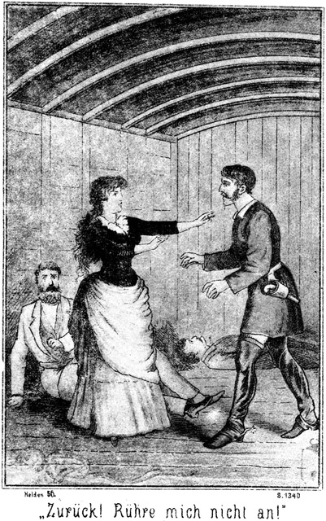»Zurück, Ungeziefer! Rühre mich nicht an!«
»O, nicht nur anrühren werde ich Dich! Du sollst meine Geliebte sein, jetzt gleich, in Gegenwart Deines Vaters, des alten Narren!«
Er stand da, ein Bild der widerwärtigsten Geilheit. Seine Lippen wetzten sich an den Zähnen. Der Speichel stand ihm aus der Zunge. Er griff nach ihr. Sie wich abermals zurück, so weit es ihr möglich war.
»Hund, laß von ihr!« rief Wilkins. »Ich zermalme Dich sonst!«
»Du? Der Du in Ketten liegst!« hohnlachte Walker. Versuche es doch!«
Schon wollte er Almy erfassen.
»Her zu mir! Nieder!« gebot ihr der Vater.
Sie hauchte sich nieder, zwischen ihm und die Wand, blitzschnell, so daß Walker in die Luft griff.
»Verdammt!« rief dieser enttäuscht.
Wilkins war auf dem Verdeck gebunden worden, ebenso wie Zimmermann. So hatte man sie nach dem untern Räume geschafft. Dort gab es an der Wand eiserne Oesen, an welche man die Ladung zu befestigen pflegte, damit sie beim Schaukeln des Fahrzeuges nicht aus der Lage gerathe. An solche Oesen hatte man die Beiden mit Ketten befestigt. Da man ihnen auch die Taschen geleert hatte, so besaßen sie kein Instrument, sich zu befreien. Mit bloßen Händen war es ihnen unmöglich, die Ketten zu zerbrechen oder zu lösen, und daher hatte man ihnen die Fesseln abgenommen und einstweilen nur die Knebels gelassen, damit sie in der Nähe von Mohawk-Station, wo man sich ja noch befand, nicht schreien konnten. Beide befanden sich also im freien Gebrauche ihrer Hände und Arme. Zudem war Wilkins Kette so lang, daß Almy sich zwischen dem Vaters und der Wand niederkauern konnte. Wollte Walker jetzt zu ihr, so mußte er sich in die Gefahr begeben, von Wilkins erfaßt zu werden. Die Tochter befand sich plötzlich unter dem Schutze des Vaters, welcher trotz seiner Fesseln sich, wenigstens so weit diese reichten, vertheidigen konnte.
»Nun, komm her, Hallunke!« rief Wilkins.
»Damit Du Deine Krallen mir um den Hals legst, alter Aasgeier!«
»Das werde ich freilich thun. Du kämst nicht lebendig aus meinen Händen!«
»Ich habe auch Arme, verstanden!«
»Versuche ihre Kraft!«
»Daß ich ein Thor wäre! Erst werde ich Dich zahm machen. Wir haben ja die Mittel dazu.«
»Wer mir naht, ist ein Kind des Todes!«
»Wollen sehen! Zunächst aber will ich noch einmal in Güte zu Dir sprechen. Ueberlege Dir meinen Vorschlag. Ich gebe Dir Zeit, bis wir anlegen. Ich gehe jetzt. Damit Ihr aber keine lange Weile habt, will ich für Unterhaltung sorgen und Euch einen guten Freund herab schicken.«
Er warf einen bezeichnenden Blick auf Magda, ergriff das Licht und entfernte sich, vergaß aber dabei nicht, die Thür von außen zuzuriegeln.
Jetzt erhob Almy sich wieder aus ihrem schützenden Versteck. Sie wollte sprechen, da aber ertönte Zimmermanns Stimme:
»Sennor rückt einmal so weit wie möglich zu mir herüber!«
»Ah, Ihr lebt! Ihr seid erwacht! Gott sei Dank!«
»Schon längst. Ich habe Alles gehört.«
»Was sagt Ihr zu diesem Schurken?«
»Jetzt gar nichts. Ich habe keine Zeit dazu. Nach den Worten dieses Menschen wird sogleich ein Anderer kommen. Wir müssen eilen, das Nothwendigste zu thun. Wollen sehen, ob unsere Ketten so weit reichen, daß wir uns berühren können! Bitte, rückt herüber!«
Sie thaten es. Sie fanden leider, daß sie sich nur mit den Füßen berühren konnten.
»Jammerschade!« sagte Wilkins.
»O, ich bin auch damit für jetzt zufrieden. Wer uns zu nahe kommt, den werden wir mit den Stiefeln zerstampfen. Uebrigens will ich – – ah, nicht weiter! Man kommt.«
Die Thür wurde wieder geöffnet. Roulin trat ein, auch mit einem Lichte in der Hand, welches er auf den Boden niedersetzte. Er blickte sich um, Almy hatte sich wieder zu dem Vater gesetzt, um in seinem Schutze zu sein. Zimmermann lag wie todt am Boden, und Magda saß auf ihrem Waarenballen wie vorher. Sie schrak beim Anblicke des Eintretenden voller Angst zusammen.
»Willkommen, Sennorita!« sagte dieser. »Es ist einige Zeit her, daß wir uns nicht gesehen haben. Darum denke ich, daß wir uns sehr viel zu erzählen haben. Erlaubt, daß ich mich niederlasse!«
Er setzte sich ihr gegenüber auf den Sack, auf welchem Walker vorher gesessen hatte. Sie mit funkelnden, verlangenden Augen betrachtend, schwieg er eine Weile, dann sagte er:
»Ich vermuthe, daß Ihr Euch unsers plötzlichen Wiedersehens herzlich freut?«
Sie antwortete nicht.
»Nun?«
Sie wendete sich zur Seite, um ihn gar nicht zu sehen und schwieg.
»Das Entzücken über meinen Anblick hat Euch die Sprache geraubt. Ich habe gehört, daß man sogar vor Freude sterben kann. Hoffentlich geschieht das nicht bei Euch; wenigstens bitte ich Euch, Eure Freude möglichst zu mäßigen. Es sollte mir leid thun, wenn ich dadurch um das Glück käme, welches ich in Euren Armen zu finden hoffe, in diesen schönen, weißen Armen, welche sich mir niemals öffnen wollten!«
Sie hüllte sich so tief wie möglich in ihr Gewand und sagte kein Wort.
»Sollte Euch die Freude für immer sprachlos gemacht haben, Sennorita? Bitte, sprecht nur ein Wort, damit ich mich beruhige!«
Sie schwieg auch jetzt.
»Nun, so muß ich mich praktisch überzeugen, woran ich mit Euch bin.«
Er stand auf und wollte zu ihr hin. Da fuhr sie von ihrem Sitze auf und rief:
»Laßt mich! Zurück!«
Er that, als ob er erschrecke, setzte sich wieder nieder und meinte lachend:
»Alle Teufel, habt Ihr einen Ton! So schnauzt eine Herrin ihren Sclaven an. Haltet Ihr Euch vielleicht mir überlegen?«
»Euch ist selbst der niedrigste Mensch überlegen!«
»Das ist sehr gut ausgedrückt. Ihr habt, wie es mir scheint, Talent zur Schauspielerin. Nur in diesem Augenblicke solltet Ihr von dem hohen Kothurn herabsteigen. Ihr macht Euch lächerlich. Ihr seid ja gefangen.«
»Ich werde es nicht lange sein.«
»Ah! Wer wird Euch befreien?«
»Gott!«
Er lachte laut auf.
»Der bekümmert sich nicht um Euch. Wenn er das thun wollte, hätte er dafür gesorgt, daß Ihr nicht in unsere Hände geriethet. Er hätte Euch auch gerathen, klüger zu sein. Ihr erhieltet die telegraphische Anweisung, augenblicklich nach Dos Palmas abzureisen; Ihr glaubtet, das Telegramm sei von Steinbach; es war aber von uns.«
»Donnerwetter!« entfuhr es Wilkins.
»Ja, Sennor, Ihr müßt sagen, daß wir unsere Sache sehr klug angefangen und sehr gut ausgeführt haben. Dieser verdammte Steinbach hat Euch zwar auch telegraphirt; er sagte Euch, daß wir kommen würden, und gab Euch den Rath, auf Eurer Hut sein. Morgen Mittag kommt er selbst nach Mohowk –Station; wir aber haben sein Telegramm aufgefangen. Was sagt Ihr dazu?«
»Daß Ihr die größten Schurken seid, welche von der Sonne beschienen werden. Aber so klug, wie zu sein Ihr Euch einbildet, seid Ihr doch nicht!«
»Wieso?«
»In Eurem Eifer, uns zu ärgern, sagt Ihr uns Dinge, welche ein Klügerer als Ihr verschweigen würde.«
»Was denn zum Beispiel?«
»Daß Sennor Steinbach kommen werde.«
»Das soll ich Euch nicht sagen?«
»Nein. Es ist gegen Eure Zwecke. Ihr werdet nun gar keine Hoffnung haben, uns einzuschüchtern.«
»Von einschüchtern ist gar keine Rede. Ihr befindet Euch in unsern Händen. Einschüchtern kann man nur einen Menschen, den man noch zu fürchten hat. Das aber ist bei Euch gar nicht der Fall!«
»So ganz, wie Ihr meint, sind wir doch noch nicht in Eurer Macht!«
»Ihr befindet Euch in Ketten und sprecht solchen Unsinn!«
»Kommt einmal her! Versucht es mit uns!«
»So dumm bin ich nicht. Mit Euch habe ich überhaupt gar nichts zu Waffen. Ich komme zu Sennorita Magda, welche hoffentlich gescheidter sein wird als Ihr. Sie wird einsehen, daß Widerstand der allergrößte Unsinn ist.«
»Sie wird im Gegentheile überzeugt sein, daß wir gerettet werden.«
»Von wem?«
»Eben von Sennor Steinbach.«
»Laßt Euch nicht auslachen! Wie will er erfahren, wohin wir sind!«
»Der Fürst der Bleichgesichter wird bereits nach einer Viertelstunde wissen, woran er ist.«
»Nennt ihn immerhin den Fürsten der Bleichgesichter. Schwatzt den unsinnigen Titel nach, welchen er sich selbst gegeben hat. Wir fürchten ihn nicht!«
»Und doch seid Ihr in Prescott vor ihm ausgerissen?«
»Da seid Ihr falsch berichtet. Er mag sich vor uns in Acht nehmen. Kommt er uns zu nahe, so erwartet ihn eine Kugel. Auch Ihr mögt von Eurem hohen Tone lassen. Wir haben Mittel, Euch höflicher und gefügig zu machen.«
»Ich fürchte Euch nicht, nun ich weiß, daß Steinbach kommt. Wir werden gerettet.«
Er sagte das im Tone festester Ueberzeugung. Das reizte Roulin. Dieser ging in seinem Aerger weiter, als für ihn eigentlich gerathen war:
»So hofft nur immerhin! Desto größer wird dann Eure Enttäuschung sein.«
»Es wird sich finden, wer enttäuscht wird, wir oder Ihr.«
»Es ist wirklich stark, in Eurer Lage so zu sprechen. Ihr seid in unserer Gewalt; Ihr liegt sogar in Ketten. Wir können Euch in das Wasser werfen oder Euch in irgend einer andern beliebigen Weise den Garaus machen. Was Ihr da sagt, das ist nichts als der reine Wahnsinn.«
»Es ist die Ueberzeugung eines ehrlichen und unschuldigen Menschen. Ich prophezeihe Euch, daß Euch die Strafe schneller ereilen wird, als Ihr ahnt.«
Er verfolgte mit diesem Widerspruch einen bestimmten Zweck. Er wußte, daß unvorsichtige Leute durch solche Wortfechtereien zu Aeußerungen hingerissen werden, welche sie später bereuen. Es war ja möglich, daß Roulin auch die nöthige Vorsicht vergaß. Er hatte sich nicht verrechnet. Was er erwartet hatte, das geschah. Roulin antwortete zornig:
»Noch viel sicherer kann ich Euch Euer Schicksal voraussagen! Ich kenne es bereits.«
»Ihr? Ihr wärt der Kerl, unser Schicksal zu kennen!«
»Ich bin es sogar, der es zu bestimmen hat!«
»Prahler!«
»Was? Ich werde es Euch beweisen. Wißt Ihr vielleicht, welche Worte über dem Eingang zu Dantes Hölle stehen?«
»Besser als Ihr!«
»Sie lauten: ›Ihr, die Ihr hier eingeht, laßt alle Hoffnung schwinden!‹ Dieses Wort rufe ich auch Euch zu. Es erwartet Euch eine Hölle, grad so und noch schlimmer, als wie Dante sie beschrieben hat.«
»So werdet Ihr wohl unser Teufel sein?«
»Ja, Euer Satan!«
»Sehr interessant!«
»Sagt mir doch einmal später, ob Ihr es dann noch so interessant findet. Ihr werdet wirklich in die Unterwelt hinabsteigen müssen.«
»Klaftertief!« lachte Wilkins.
»Klaftertief?« fragte Roulin erbost. »Stellt es Euch nicht besser vor, als es ist. Wer einmal dort unten ist, der bekommt in seinem Leben die Sonne nicht wieder zu sehen.«
»Löscht Ihr sie etwa aus?«
»Für Euch wird sie ausgelöscht sein. Ihr werdet arbeiten müssen Tag und Nacht, Jahr aus, Jahr ein, ohne Ruhe, ohne Aufhören, getrieben von der Peitsche Euers Aufsehers.«
»Den Mann werde ich mir genau ansehen!«
»Meint Ihr, Euch gegen ihn empören zu können? Ihr werdet an Händen und Füßen gefesselt sein, und das Quecksilbergift wird Eure Knochen zerfressen, daß sie weich werden wie Binsenmark. Ihr werdet widerstehen wollen und nicht können. Ihr werdet auf Rettung hoffen, aber immer tiefer sinken. Ihr werdet beten wollen, aber Euer Gebet wird ein Fluch, eine Lästerung sein. Ihr werdet sinnen und grübeln nach einen Weg aus dieser Hölle, aber dieses Grübeln wird Euer Gehirn verzehren, bis Ihr wahnsinnig seid. Und selbst noch als Wahnsinniger werdet Ihr arbeiten müssen, getrieben vom Hunger, vom fürchterlichen, ungestillten Durste und von der Peitsche des Aufsehers.«
Er hatte jedenfalls eine solche Mittheilung gar nicht machen wollen; er hatte sich zu ihr hinreißen lassen, getrieben durch Wilkins Widerspruch.
»Ah! Ich danke Euch!« sagte dieser.
»Wofür? Für die Wohlthaten dieser Hölle?«
»Nein, für diese Mittheilung. Wir wissen ja nun, woran wir sind. Weiter brauchen wir nun nichts mehr zu wissen. Ihr könnt also gehen!«
»Mensch!« fuhr Roulin auf. »Reize mich nicht!«
»Pah! Thut nicht so gefährlich! Ihr seid ein Schurke, sonst aber ein ganz gewöhnliches Subject, welches man gar nicht zu fürchten braucht.«
»Soll ich Dich zusammentreten?«
Er ging einen Schritt vorwärts und hob drohend den Fuß. Als er aber sah, daß Wilkins auch sein Bein anzog, um sich durch einen kräftigen Tritt zu wehren, zog er sich wieder zurück.
»Am besten ist es, man läßt den alten Sünder schimpfen. Er wird es bereuen. Ich habe ja hier einen viel interessanteren Gegenstand, mit dem ich mich beschäftigen kann. Wie steht es, Sennorita Magda, habt Ihr Euch vielleicht unterwegs mit Sennor Zimmermann verlobt?«
»Sennor,« antwortete sie, »ich sollte Euch gar keiner Antwort würdigen; aber ich will Euch dennoch ein paar Worte sagen.«
»Ah, schön!« Ich hoffe, daß es Worte der Liebe sein werden!«
»Nichts weniger als das! Von dem, was Ihr schon früher gegen mich und die Eltern verbrochen habt, will ich nicht sprechen; aber was Ihr heut wieder gethan habt, das ist freilich höllisch, teuflisch. Wenn Ihr glaubt, dadurch meine Zuneigung zu gewinnen, so irrt Ihr Euch außerordentlich.«
»Ist das Alles, was Ihr mir zu sagen habt?«
»Alles. Nur füge ich die Warnung hinzu, daß Euch die Strafe ganz sicher ereilen wird.«
»Danke! Ich habe Geduld; die Strafe braucht nicht sogleich zu kommen; ich kann ja warten. Bis dahin aber will ich das Leben genießen, und einer der verlockendsten Genüsse, welche ich kenne, heißt Sennorita Magda.«
»Schweigt!«
»Wie stolz und gebieterisch das klingt! Ihr sprecht davon, daß es mir nicht gelingen werde, Eure Zuneigung zu erwerben. Das glaube ich Euch gern. Ich bin einige Zeit lang der Meinung gewesen, daß Ihr noch verständig werden könntet, habe aber dieser Ansicht Abschied gegeben. Was kann mir schließlich auch an Eurer Zuneigung liegen. Eure Schönheit, Euer Körper ist ja die Hauptsache. Ihr befindet Euch in meiner Gewalt; Ihr seid mein – – –«
»O, noch nicht!«
»Vollständig, vollständig, Sennorita!«
»Ich wollte Euch nicht rathen, mich zu berühren!«
»Das werde ich thun, und zwar gleich heute, gleich jetzt. Ich will Euch nur vorher klar machen, was Ihr zu erwarten habt. Wenn Ihr Euch mir ohne Widerstand ergebt, so könnt Ihr es ziemlich gut bei mir haben; seid Ihr aber so unsinnig dumm, bei Eurem bisherigen Verhalten zu bleiben, so lasse auch ich jede Rücksicht fallen. Ich will Euch besitzen; Ihr sollt mein sein; Ihr befindet Euch bereits in meiner Gewalt. Was hilft Euch das Sträuben? Ich fessele und binde Euch so, daß Ihr kein Fingerglied bewegen könnt, und dann mache ich, was ich will. Dann aber behandle ich Euch nicht etwa als eine menschliche Person oder gar als meine Geliebte, sondern als eine Waare, eine Sache, einen Gegenstand, den man benutzt, um ihn später wegzuwerfen, so ungefähr wie ein Kind eine Puppe liebkost und küßt und ihr dann den Kopf zerbricht und den Balg ausreißt, um die Sägespäne heraus zu kratzen. So werde ich Euch genießen, und werde ich Euch wegwerfen. Das wird Euer Schicksal sein. Und nun entscheidet Euch, ob Ihr mir freiwillig gehören wollt, oder ob ich als Euer Herr und Gebieter Besitz von Euch ergreifen soll!«
Von der Ecke her, in welcher Zimmermann lag, erklang das leise, strenge Knirrschen der Kette. Die Wuth kochte förmlich in ihm; er stemmte sich mit aller Gewalt gegen die Wand, um seine Kette zu zersprengen und sich auf den frechen Menschen zu stürzen. Roulin aber bemerkte es nicht. Seine ganze Aufmerksamkeit war auf Magda gerichtet, welche hoch aufgerichtet vor ihm stand, bleich wie der Tod vor Aufregung über das, was sie hatte anhören müssen. Sie zitterte am ganzen Körper. Sie, die Reine, Keusche, hatte Worte vernehmen müssen, bei denen sich das verworfenste Frauenzimmer auf das Tiefste verletzt, auf das Schwerste beleidigt hätte fühlen müssen. Und doch gab es keinen Rächer da, unter dessen Schutz sie sich hätte begeben können.
Keinen? Wirklich keinen?
Aus der Ecke glühten Zimmermanns Augen fast so hell wie glühende Kohlen. Er liebte dieses herrliche Wesen mit aller Gewalt seiner Seele, mit jedem seiner Gedanken, mit jeder Faser und Fiber seines Innern. Seine Liebe war unerwidert; er wußte, daß ihr Herz einem Andern gehörte; aber dennoch war es ihm, als habe ein jedes Wort und jede Drohung Roulins ihn selbst getroffen. Seine Muskeln waren ebenso zum Zerreißen angespannt wie die Kette. Noch eine weitere Beleidigung und entweder mußte die Kette brechen oder seine Lunge zerplatzte unter der fürchterlichen Anstrengung, mit welcher er los zu kommen suchte, das fühlte er deutlich.
»Nun, Antwort!« sagte Roulin.
»Ja, die sollt Ihr haben,« antwortete jetzt Magda.
»Gebt Diejenige, welche zu Eurem Heile dient.«
»Es giebt nur eine Antwort für Euch, und die ist folgende: Wäre ich ein Mann, so würde ich Euch jetzt in das Gesicht spucken; da sich dies aber für eine Sennorita nicht schickt, so nehmt an, daß es geschehen sei. Ihr seid das ekelhafteste Geschöpf, welches es auf dem Erdboden geben kann, der Abschaum der Allerschlechtesten unter den Gottlosen. Thut, was Ihr wollt. Gott wird mir helfen!«
»Ah! So sprichst Du, so? Ich werde Dir sofort zeigen, was ich thue. Du sollst meine Geliebte, mein Weib sein vor den Augen dieser drei Personen. Sie sollen sehen, daß Du mir Alles, Alles gewähren wirst, was ich mir von Dir erwünsche. Komm her!«
Er streckte die Arme nach ihr aus. Sie wich zurück. Er trat rasch weiter vor.
»Helft mir, Sennor Zimmermann!« rief sie.
Sie wollte schnell zu diesem hin, um sich so unter den Schutz seiner Fäuste zu begeben wie vorhin Almy in denjenigen ihres Vaters; aber es war zu spät; Roulin hatte sie bereits gepackt.
»Hilfe!« rief sie, sich gegen seine Umarmung sträubend.
Die Kette in der Ecke Zimmermanns knirrschte; die hölzerne Wand prasselte.
Roulin drückte die sich wehrende an sich und versuchte, sie zu küssen.
»Hilfe, Hilfe! Um Gotteswillen!« rief sie in ihrer höchsten Angst.
»Gleich, gleich, Sennorita!« schrie Zimmermann. »Alle – alle – Teufel! Will denn – ah, ah, endlich, endlich!«
Es that einen schrecklichen Krach. Nicht die Kette war zerrissen, aber die eiserne Oese war aus der Wand gerissen worden, und zwar mit solcher Gewalt, d«ß Zimmermann mehrere Fuß weit in den Raum hinein rollte.
»Donnerwetter!« schrie Roulin. »Er ist frei!«
»Ja, frei, frei! Und nun komm her, Bursche!«
Bei diesen Worten raffte sich Zimmermann auf, um sich auf Roulin zu stürzen; aber er trat mit dem einen Fuße auf die Kette und stolperte in Folge dessen nieder. Zwar sprang er schnell wieder auf, aber es war zu spät; Roulin, der zu feig war, um sich in einen Ringkampf einzulassen, hatte das Mädchen schleunigst frei gegeben, war zur Thür hinaus geeilt und hatte diese hinter sich verriegelt.
Magda sank nieder, legte das Gesicht in beide Hände und weinte laut. Zimmermann stand mitten im Raume und hatte die Fäuste geballt. So starrte er nach der Thür.
»Fort, fort ist er!« rief er. »Ich eile ihm nach und zermalme ihn!«
Er wollte es thun. Da warnte Wilkins:
»Halt das geht nicht!«
»Warum nicht?«
»Die Thür ist zu.«
»Pah! Ich sprenge sie mit Leichtigkeit durch einen Fußtritt auf.«
»Aber dann oben die Lücke. Die ist so eng. Wenn Ihr nur den Kopf hindurch steckt, erhaltet Ihr einen Hieb darauf, an dem Ihr genug habt.«
»Das ist wahr. Was aber thun?«
»Jetzt keine Gewalt! Muthig wollen wir sein, aber nicht tollkühn. In unserer Lage gilt List und Ueberlegung mehr als die größte Tapferkeit. Wäre es möglich, auch mich frei zu machen, so wären wir zwei Personen, und ich wollte sehen, wer es dann wagen wollte, zu uns herein zu kommen, um die Damen zu beleidigen.«
»Richtig, richtig! Habt keine Sorge, Sennor. Ist es mir allein gelungen, mich zu befreien, so wird es uns Zweien bei Euch wohl auch gelingen. Wollen einmal sehen.«
Er kniete sich neben Wilkins hin. Beide begannen zu arbeiten. Die Kette klirrte und knirrschte: die Wand prasselte; dann gab es einen lauten Krach, und auch Wilkins war frei.
Er stand vom Boden auf und streckte seine Arme.
»Gott sei Lob und Dank! Das ist der Anfang zur Freiheit und zur Rache!«
»Mein Vater, mein lieber Vater!« rief Almy, ihn umarmend.
Und Magda streckte Zimmermann ihre beiden Händchen entgegen und sagte:
»Sennor, ich bin Euch viel, sehr viel schuldig. Was heut geschehen ist, werde ich Euch nie, niemals vergessen!«
Er drückte ihre Hände an sein Herz und antwortete:
»Vergessen wir es lieber diesem Roulin nicht, Sennorita! Ich werde mit ihm abrechnen, daß es ihm schwarzblau vor den Augen werden soll. Die Hölle, welche er uns so deutlich beschrieben hat, soll er selbst bewohnen müssen! Jetzt aber müssen wir vor allen Dingen einen Plan fassen. Wir müssen wissen, was wir zu thun und wie wir uns zu verhalten haben.« – –
Als man vorhin auf dem Verdecke Zimmermann und Wilkins überfallen und überwunden hatte und dann auch die beiden Mädchen hinunter in den Raum geschafft worden waren, hatte man zunächst eine Besprechung für nothwendig gehalten. Es schien gerathen zu sein, der Bootsmannschaft irgend eine Erklärung zu geben, da diese Männer sonst leicht auf den Gedanken kommen kennten, die Gefangenen für unschuldig zu halten und sich derselben anzunehmen.
Auch Miranda war mit Balzer aus der Kajüte geholt worden, um an dieser Besprechung Theil zu nehmen. In Folge dessen hatte die Kajüte für kurze Zeit offen und leer gestanden.
Einer der Bootsleute kam, wie zufällig, langsam herbei geschlendert, blickte hinein, und da er Niemand drin erblickte, so trat er ein. Das Handgepäck der Damen lag auf den Rohrsitzen. Magda hatte in dem Augenblicke, als die Katastrophe eintrat, ein kleines Ledertäschchen geöffnet in den Händen gehabt, um Etwas darin zu suchen, und es, als sie aufsprang, fallen lassen. Es lag noch da und war weder von Miranda noch von Balzer beachtet worden, da diese zu sehr mit ihren Zärtlichkeiten beschäftigt gewesen waren.
Auf dieses Ledertäschchen fiel der Blick des Bootsmannes. Eine länglich viereckige Karte war herausgefallen. Er hob sie auf. Es war eine Photographie. Sie enthielt Magdas Bildniß.
»Ah!« murmelte er. »Die schöne, junge Sennorita! Sollte sie wirklich ein so böses Frauenzimmer sein, wie Sennor Balzer sagt? Ich glaube es nicht. So ein Gesicht ist nicht dasjenige eines schlechten Mädchens. Ich habe noch niemals ein so prächtiges Wesen gesehen. Warte, das Bild behalte ich!«
Er steckte die in San Franzisko angefertigte Photographie zu sich; dann schlich er sich wieder aus der Kajüte hinaus.
Der gute Mensch beabsichtigte keinen Diebstahl. Er sagte sich, daß, wie die Dinge standen, die Gefangenen wohl so wie so ihre Habseligkeiten verlieren würden. Magda hatte einen tiefen Eindruck auf ihn gemacht; ihr Bild war ein Schatz für ihn, und überdies ist die Photographie einer so reizenden Dame für einen armen Schiffer an den wilden Ufern des Rio Gila etwas so ungeheuer Seltenes, daß er sich nicht lange mit Bedenken herumschlägt, ehe er sie an sich nimmt.
Später sah er Walker hinabsteigen. Was wollte dieser unten? Er kam nach längerer Zeit wieder und dann ging Roulin hinab. Dem ehrlichen Bootsmann hatten die Gesichter Walkers und Genossen nicht gefallen; er traute ihnen nicht viel Gutes zu. Wie nun, wenn hier ein Verbrechen begangen wurde, kam da die Mitschuld nicht auch auf die Bootsleute? Er wollte, er mußte sich überzeugen. Darum schlich er sich heimlich nach der Lücke, stieg die Treppe hinab und lauschte. Er hörte Wort für Wort, was in dem Raume gesprochen wurde.
Als dann Roulin vor Zimmermann floh und die Thür zugeriegelt hatte, konnte sich der Bootsmann nicht schnell genug zurückziehen. Beide stießen auf der Treppe zusammen.
»Wer da?« fragte Roulin zornig.
»Bootsmann Forner.«
»Was hast Du hier unten zu suchen gehabt?«
»Gehabt? Ich will ja erst hinunter.«
»Lüge nicht! Du hast gehorcht!«
»Alle Teufel! Wer hat mir schon einmal sagen dürfen, daß ich ein Lügner bin!«
»So sage ich es!«
»Das kann Euch einige blaue Augen kosten! Wer seid denn Ihr?«
»Ein Passagier.«
»So kann ich Euch viel eher fragen, was Ihr hier unten zu suchen habt. Verstanden? Ich gehöre auf das Boot und will nach dem Kielwasser sehen. Macht, daß Ihr hinauf kommt!«
»Mensch, laß Dir nicht etwa einfallen, zu den Gefangenen zu gehen!«
»Die gehen mich nichts an. Uebrigens habt Ihr mir gar nichts zu sagen. Sennor Balzer ist mein Patron. Nach Eurer Pfeife hat hier kein Mensch zu tanzen.«
Er stieg in den Kielraum hinab, um scheinbar nach dem Brakwasser zu sehen. Als er wieder zurückkam, stand Roulin noch da, um ihn zu beobachten.
»Potz, Bomben und Granaten, was lehnt Ihr denn noch hier!« fluchte der Bootsmann. »Die Passagiere gehören in die Kajüte, nicht aber in alle Winkel, wo sie Einem im Wege stehen!«
»Rede anders, Bursche, sonst sage ich es Deinem Patron, der mag Dich fortjagen!«
Das kam dem guten Schiffer sehr gelegen. Er antwortete nun mit absichtlicher Grobheit:
»Hole Euch der Teufel! Denkt Ihr, daß sich der Bootsmann Forner vor dem ersten besten Hans Narr fürchtet? Ihr wärt mir grad der Rechte. Lauft, zu wem Ihr wollt, aber kommt nicht etwa mir zwischen die Fäuste, sonst könntet Ihr bald mit einem von den Mäusen angefressenen Chocoladenpudding verwechselt werden!«
Er schob Roulin zur Seite und stieg an Deck. Dort lehnte er sich an die Brustwehr und dachte nach.
»Eine verdammte Geschichte!« brummte er. »Sennor Balzer hat sich da in ein Ding eingelassen, welches ihm viel Schaden machen und wohl gar den Kopf kosten kann. Auch über uns kann es kommen. Ich bin ein ehrlicher Kerl und mache mich aus dem Staube. Aber wie? Gehe ich im Zorne fort, so glauben sie, ich verrathe die Geschichte und verändere ihren Plan. Sie dürfen also gar nichts ahnen, daß ich davon sprechen will. Wie fange ich das Ding nur klug genug an? Ah, da kommt mir ein prachtvoller Gedanke! Ich ersaufe ein bischen. Ja, ich ersaufe; das ist das Allerbeste, was ich thun kann. Meine Sachen habe ich alle bei mir, und das Bild der schönen Sennorita thue ich in meinen Tabaksbeutel; der ist aus einer Rehbocksblase gemacht und läßt kein Wasser durch. Auf diese Weise wird das Bild nicht naß. Den Sennoritas muß ich beistehen, ohne daß der Verdacht auf mich kommt. Der Kerl, welchen ich auf der Treppe traf, wird mich bei Sennor Balzer verklagen, und dieser wird mich suchen, um mir einen Verweis zu geben. Er soll mich auf dem Achterdeck finden. Ich vertheidige mich mit einigen Redensarten, mache einige Gesticulationen und thue einen Fehltritt – plumps, liege ich im Wasser; ich ersaufe und bin am Morgen in Gila-City, wo es sich finden wird, was ich zu thun habe. Ja, ja, so wird es gemacht! Es ist doch nichts so schön und gut, als wenn der Mensch ein gescheidter Kerl ist! Und ausnahmsweise bin ich das heute einmal!«
Er war ein armer Teufel und hatte nicht das mindeste Gepäck bei sich. Ein Wenig Geld, ein halbvoller Tabaksbeutel, sein Messer, seine Pfeife und das Bild der Sennorita, aus diesen Gegenständen bestand sein ganzes Vermögen. Er steckte das Bild in den wasserdichten Tabaksbeutel, und darin bestand seine ganze Reisevorbereitung.
Nun stieg er langsam auf das Achterdeck hinauf, da wo der Steuermann stand, die Ruderpinne in der Faust. Da der Seelenverkäufer schmal gebaut war, so gab es hier oben nicht viel Platz. Höchstens drei Personen konnten da stehen. Er begann eine ziemlich einsilbige Unterhaltung mit dem Steuermanne und lauschte dabei aufmerksam nach vorn. Er hatte sich in seinen Erwartungen nicht getäuscht, denn bald wurde sein Name gerufen. Er that, als ob er nichts höre.
»Bootsmann Forner!« ertönte jetzt die Stimme Balzers.
»Hier, auf dem Achterdeck,« antwortete er.
Balzer kam heraufgestiegen.
»Höre, was hast Du denn mit Signor Roulin gehabt?« fragte er.
»Roulin? Kenne ich gar nicht.«
»Ich meine den Sennor, welchen Du unter der Raumlucke so grob behandelt hast!«
»Ich ihn? Das ist grad umgekehrt. Er hat mich grob behandelt.«
»Er sagte, Du habest gehorcht.«
»Das sagte er mir auch. Wo aber soll ich denn gehorcht haben? Ich besann mich, daß wir seit der letzten Fahrt das Brakwasser nicht ausgeschöpft haben, und wollte hinabsteigen, um nachzusehen, ob es vielleicht so hoch stehe, daß wir uns noch während der Nacht dranmachen müssen. Eben steige ich die Treppe herab, so kommt er aus dem Raume gesprungen und rennt an mich an. Dabei schreit er mich an, ich hätte gelauscht. Nun möchte ich wissen, was ich da hätte belauschen sollen. Ich bitte Euch, Sennor, bedenkt die Räumlichkeit da unten. Hier ist die Treppe – –«
Er zeigte dabei über sich.
»Hier kommt dieser Sennor aus diesem Raume gestürzt, in aller Eile – – –«
Er zeigte dabei vor sich hin, wie um die Situation recht anschaulich zu machen.
»Und hier komme ich gestiegen, die Treppe herab, so – nein, noch weiter zurück.«
Er trat dabei einen – zwei Schritte zurück.
*
»Halt, Kerl! Du fällst ja hinab!« schrie Balzer.
»Herrgott! Hilfe, Hilfe!«
Da das Achterdeck hoch war, so hatte es nur eine sehr niedrige Brustwehr, nur eine Art Geländer, mehr bestimmt, einem Gepäckstück als einem Menschen Schutz vor dem Falle zu bieten. Der Bootsmann war zu weit zurückgetreten und stürzte rücklings hinab in die dunklen Fluthen des Stromes, in denen er auch sogleich verschwand.
»Mann über Bord!« ertönte der laute Ruf.
Man ließ sofort das Segel fliegen, um das Fahrzeug beizudrehen, und machte die kleine Barke los. Lichter wurden angebrannt; laute Rufe erschollen – vergebens!
»Der arme Forner!« sagte Balzer.
»Er kann ja schwimmen!« brummte der Steuermann.
»Er ist dennoch todt, sonst hätte er ja auf unsere Zurufe geantwortet. Es kam zu schnell. Der Schlag hat ihn getroffen!«
Drüben aber stieg der Gesuchte am Ufer aus dem Wasser, schüttelte sich und brummte lachend:
»Gelungen! Sucht nur immerhin. Wenn es mir später paßt, komme ich ganz von selber. Jetzt nun will ich mir das Wasser aus dem Habite ringen, und dann geht es eilig nach Gila City. Vielleicht komme ich dort an, ehe der Seelenverkäufer vorüber ist.«
Leider gab es keinen gebahnten Weg. Er mußte sich durch wildes Buschwerk arbeiten, bei dunkler Nacht eine beschwerliche Sache und hatte den vielfach sich krümmenden Fluß als einzigen Wegweiser. So kam es, daß er beim Anbruche des Morgens nur wenig vorwärts gekommen war. Nun aber konnte er ausschreiten.
Als er gegen Mittag Gila-City erreichte, sah er soeben den Seelenverkäufer in einer Krümmung des Flusses jenseits der Stadt verschwinden. Das Fahrzeug war ihm zuvorgekommen.
»Verdammt! Ich komme zu spät! Was ist da nun zu thun? Alle Teufel! Was für ein nettes, schmuckes Ding liegt denn da am Ufer?«
Das, was er meinte, war eine elegant gebaute Dampfyacht, die zum gelegentlichen Segeln auch mit einem Maste und Bugspriet versehen war – hier am Rio Gila gewiß eine Seltenheit. Wunderbar aber war die Auszeichnung des kleinen Dampfers. Nämlich vorn über dem scharfen Bug befand sich ein riesengroßes Bild. Es stellte einen langen, unendlich langen Mann vor, mit einem außerordentlich gutmüthigen, auch lang gezogenen Gesichte, in welchem sich eine kleine, nach oben gerichtete Stumpfnase recht eigenthümlich ausnahm. Der Kopf dieses Gemäldes trug einen riesigen, breitrandigen Filzhut. In der einen Hand hielt der Mann eine Doppelbüchse, in der andern einen großen Jagdspeer. Im Gürtel stecken zwei Tomahawks, zwei Messer, zwei Pistolen und zwei Revolver. Auf dem Rücken trug er einen indianischen Schild und auf der Nase eine riesige Klemmbrille. Gekleidet war die Gestalt genau wie ein Indianer, in Moccassins, Leggins und ledernes Jagdhemde nebst dito Jagdrock. Unter diesem sonderbaren Bilde war in großen, goldenen Lettern zu lesen:
»Lord Eagle-nest,
the Wood-loafer.«
das heißt zu deutsch: Lord Eagle-nest, der Waldläufer.
Wäre die Yacht erst jetzt angekommen, so hätten sicher sämmtliche Bewohner des Ortes am Ufer gestanden, um sie zu betrachten und ihre Bemerkungen darüber zu machen. Da sich aber kein Mensch in der Nähe befand, so war anzunehmen, daß sie bereits seit geraumer Zeit hier vor Anker liege.
»Wunderbar!« brummte der Bootsmann. »Ein so selten nettes Schiff und ein so unbegreifliches Avis. Der Mann ist ganz sicher ein Engländer und hat den Spleen nicht nur im Kopfe, sondern auch in allen Gliedern. Ob der den Gila befahren will? Hm!«
Er schlenderte langsam weiter, am Flusse hin, wo die Gebäude standen, einige von Stein, die meisten aber nach Blockhüttenart gebaut. Gila-City war noch klein, gab aber, da es am Einflusse des Gila in den Colorado liegt, die Bürgschaft eines schnellen Emporkommens.
Um irgend einen Schritt in Angelegenheit des Seelenverkäufers zu thun, wollte der Bootsmann eine kleine Herzstärkung zu sich nehmen. Er trat also in eine ihm bereits bekannte Schänke, in welcher er zu verkehren pflegte, wenn er nach Gila-City kam. Kaum aber hatte er die Thür geöffnet, so blieb er ganz erstaunt unter derselben stehen. Da saßen zwei Männer am Tische, ein junger und ein alter, und dieser Letztere war ganz genau das Original des Gemäldes, welches er am Bug des kleinen Dampfers gesehen hatte. Die kleine Nase, der große Hut, die Klemmbrille, Alles war da außer der fürchterlichen Armirung, denn der Mann trug jetzt nur ein Messer im Gürtel.
Der Jüngere war ähnlich gekleidet, von seinem Gliederbau und trotz seiner Prairiekleidung von vornehmem Aussehen. Es bedarf wohl kaum der Bemerkung, daß der Aeltere der Beiden der englische Lord Eagle-nest war. Der Jüngere war sein Verwandter, Hermann von Adlerhorst, welcher damals, als er sich mit dem Maler Paul Normann in Constantinopel befand, den Namen Wallert geführt hatte.
Die Dampfyacht war ganz dieselbe, welche der Lord während seiner Reise nach Constantinopel, Tunis und Egypten benutzt hatte. Nur war an Stelle des Bildes ein anderes gekommen, und zwar in Folge einer neuen, eigenthümlichen Marotte des Lords, nachdem er seinen Lieblingswunsch, eine Entführung aus dem Serail, aufgegeben hatte.
Beide Männer saßen bei einem Glase Brandy, mit Zucker gesüßt und mit Wasser verdünnt.
Der Bootsmann setzte sich an einen andern Tisch und ließ sich eben so einen Brandy geben, welchen der Wirth einschänkte, der sich augenscheinlich in einem Gespräche mit den beiden ersteren Gästen befunden hatte. Jedenfalls war ihm kurz vor dem Eintreten des Bootsmannes von dem Lord die Frage vorgelegt worden, oder Englisch verstehe, denn als er Forner das Glas hingesetzt hatte, wendete er sich mit der Antwort an den Engländer:
»Freilich spreche und lese ich englisch. Das muß ich als Wirth doch wohl verstehen.«
»Und kennt Ihr den Rio Gila so, daß man von Euch Auskunft erhalten kann?«
»Ich habe mich bereits seit einer ganzen Reihe von Jahren am Flusse aufgehalten. Welche Auskunft meint Ihr denn?«
»Seht Euch einmal diesen Titel an. Kennt Ihr ihn?«
Er zog ein Buch aus der Tasche, dessen Ueberschrift, ins Deutsche übersetzt, folgendermaßen lautete: Der Waldläufer von Gabriel Ferry. Erster Band. Der Wirth warf einen Blick darauf und sagte:
»Natürlich kenne ich es. Dieses Buch wird außerordentlich viel gelesen. Die Geschichte spielt in der Apacheria und am Rio Gila. Sie ist sehr interessant.«
»Ja, ungemein interessant. Ich habe sofort, als ich sie gelesen hatte, den Entschluß gefaßt, auch Waldläufer zu werden, und bin aus England herüber gekommen, um ähnliche Abenteuer zu erleben.«
Der Wirth musterte den Lord mit einem Blicke, in dem sich freilich keine große Bewunderung aussprach.
»Seid Ihr denn Jäger?« fragte er.
»Und ob!« lautete die stolze Antwort.
»Verzeiht! Was habt Ihr denn geschossen?«
»Hasen und Rebhühner bisher.«
»O wehe!«
»Was o wehe? Wenn ich einen Hasen schieße, so werde ich wohl auch einen Bären oder einen Büffel treffen. Diese Thiers sind größer als ein Hase und laufen nicht so schnell. Es ist also gar keine Kunst, sie zu erlegen.«
»Täuscht Euch nicht! Ein Hase wehrt sich nicht, ein Bär aber stellt seinen Mann.«
»Nun, ich bin auch ein Mann. Ich will den Gila hinaufdampfen. Wie weit ist er denn fahrbar?«
»Das weiß ich nicht genau. Wendet Euch mit Eurer Frage lieber an diesen Sennor hier. Er heißt Forner und ist ein viel befahrener Bootsmann, der Euch bessere Auskunft ertheilen kann, als ich.«
Der Lord betrachtete sich Forner genau, nickte ihm zufrieden gestellt zu und sagte zu ihm:
»Ein Bootsmann auf dem Gila? Habt Ihr jetzt Stellung und Arbeit, Master?«
»Augenblicklich nicht, Sennor.«
»Kennt Ihr den Fluß?«
»So gut wie ein jeder Anderer.«
»Habt Ihr nicht Lust, in meine Dienste zu treten? Ich bezahle Euch gut.«
»Ich bin nicht abgeneigt, falls Ihr nicht mehr verlangt, als ich zu leisten vermag.«
»Die einzige Leistung, welche ich verlange, besteht darin, daß Ihr unsern Führer macht, so weit es Eure Kenntniß des Flusses und der Umgegend erlaubt.«
»Da schlage ich ein, Sennor, und ich bin überzeugt, daß Ihr zufrieden sein werdet.«
»Sehr schön! Einen Lohn mache ich nicht aus. Ich werde Euch nach Euren Leistungen bezahlen. Hier aber will ich Euch zehn Peso's Draufgeld bezahlen. Da, nehmt!«
Zehn Peso's sind gleich zehn Dollars. Ein so reichliches Draufgeld hatte Forner nicht erwartet. Er bedankte sich auf das Eifrigste und versicherte, daß er sich alle Mühe geben werde, seinen neuen Patron zufrieden zu stellen. Der Lord meinte:
»Das hoffe ich. Du bist jetzt in meinen Dienst getreten und ich werde Dich also Du nennen. Das Master oder Sennor ist zu unbequem. Denkst Du, daß wir Wild finden werden?«
»Ganz gewiß.«
»Und Indianer?«
»Noch gewisser, wenn Ihr es wünscht.«
»Natürlich wünsche ich es. Ich will mir einige Scalphäute mit nach Hause nehmen.«
»Da wollen wir nur hoffen, daß wir dabei nicht unsere eigenen verlieren.«
»Pah! Meine Haut sitzt fest. Du kannst doch sofort antreten und mit auf die Yacht kommen?«
»Ja. Ich habe zwar vorher ein kleines Geschäft, aber das wird nicht viel Zeit in Anspruch nehmen. Ich will nur zum Alcalden, um eine Anzeige zu machen.«
»Eine Anzeige beim Alcalden? Sapperment! Da wird man Dich vielleicht festhalten, des Zeugnisses wegen.«
»Das ist freilich möglich.«
»So unterlaß die Sache lieber. Ist sie denn so nothwendig. Kannst Du es nicht aufschieben?«
»Eigentlich nicht. Es handelt sich nämlich um eine Entführung, die ich hintertreiben will.«
Der Lord fühlte sich durch dieses Wort sofort electrisirt. Er rief schnell:
»Eine Entführung! Sapperment! Ein Mädchen wohl?«
»Zwei Mädchen und zwei Männer.«
»Verteufelt, verteufelt! Eine vierfache Entführung! Sind die Mädels hübsch?«
»Sehr!«
»So müssen wir Ihnen helfen!«
»Ihr? Wie wollt Ihr das anfangen?«
»Das kann ich natürlich nicht eher wissen, als bis ich erfahren habe, wie es bei der Entführung zugegangen ist, und wohin die vier Personen gebracht werden sollen.«
»Sie sollen in die Gegend von Aubrey gebracht werden.«
»Liegt dieser Ort nicht am Ufer des Colorado?«
»Freilich.«
»Da können wir ja mit unserer Yacht hin!«
»Das wäre ein Glück. Wir werden diese Kerls bald einholen. Sie sind auf einem Segelboote vor kaum einer halben Stunde hier vorüber.«
»Schön! Sehr schön! Welchem Hallunken gehört denn dieses Seegelboot?«
»Der Besitzer ist kein Hallunke, sondern ein Ehrenmann, Sennor. Man hat ihn betrogen, getäuscht. Er ist der Sohn des Stationers in Mohawk-Station.«
»Ah, Sennor Balzer etwa?« fragte der Wirth.
»Ja.«
»Den kenne ich sehr gut und sein Boot auch. Ich sah es vorhin vorübersegeln und wunderte mich, daß er nicht hier anlegte, was er doch gewöhnlich thut. Der also ist mit in eine Entführung verwickelt? Wie ist denn das zugegangen?«
Der Bootsmann erzählte, was er erfahren und erlauscht hatte. Als er geendet hatte, sagte der Wirth:
»Da wird Euch eine Anzeige wenig oder wohl auch gar nichts fruchten, Sennor Forner.«
»Warum nicht?«
»Meint Ihr etwa, daß man sie verfolgen werde?«
»Ich hoffe es.«
»Nein. Der Alcalde und überhaupt eine jede obrigkeitliche Person wird sich hüten, sich mit dieser Angelegenheit zu befassen. Auch Euch, Sennor Lord, rathe ich, Euch nicht in die Sache zu mischen. Es könnte fehl schlagen und sogar für Euch ein schlechtes Ende nehmen.«
»Worin sollte das schlechte Ende bestehen?«
»In einigen Kugeln, welche man Euch auf den Pelz brennt.«
»Meint Ihr, daß ich meinen Pelz hinhalte? Soll ich diese Leute ohne Hilfe lassen, da ich ihnen doch so leicht Hilfe bringen kann!«
»Da irrt Ihr Euch gewaltig. Ihr könnt ihnen nicht helfen.«
»Das Gesetz ist für mich. Man hat sie auf ungesetzliche Weise ihrer Freiheit beraubt.«
»Das Gesetz wird gegen Euch sein. Bedenkt, daß der Colorado die Grenze bildet zwischen hier und drüben, zwischen Arizona und Californien. Die That ist in Arizona geschehen; legt das Boot an das andere Ufer, welches kalifornisch ist, so hat kein Bewohner und keine Obrigkeit aus Arizona das Recht, sich an den Insassen desselben zu vergreifen.«
»Nun, ich habe mich weder um Arizona noch um Californien zu bekümmern. Ich thue, was mir gefällt. Und da es mir grad eben gefällt, mich der Bedrängten anzunehmen, so will ich Den sehen, der es mir verbieten will. Was meinst Du, Hermann?«
»Daß es zwar Pflicht ist, sich der Unglücklichen zu erbarmen, daß aber ein Jeder zunächst auf sich zu sehen hat.«
»Das habe ich gethan. Ich pflege täglich vierundzwanzig Stunden lang auf mich zu sehen. Jetzt habe ich nun einige Stunden Zeit für Andere übrig.«
»Die Leute gehen uns nichts an!«
»Nicht? Sie sind Menschen und unsere Brüder.«
»ES ist gefährlich!«
»Hast Du Angst?«
»Angst nicht, aber keine Lust. Man weiß es ja gar nicht, ob die Leute es auch werth sind, daß man sich für sie in Gefahr begiebt.«
»Wir werden es erfahren, ob sie es werth sind.«
»Sie sind es werth,« sagte der Bootsmann.
»Woher weißt Du das?« fragte Hermann.
»Ich habe es ihnen angesehen. Der alte Herr ist sehr ehrwürdig, und wenn Ihr die beiden jungen Sennorita's gesehen hättet, so – ah, daß ich das vergessen konnte! Ich habe ja das Bild der Einen.«
»Du? Wie kommst Du dazu?«
Diese Frage brachte ihn so ziemlich in Verlegenheit. Er blickte eine Weile zaudernd vor sich nieder, antwortete aber dann in aller Aufrichtigkeit:
»Ich habe es wegstiebizt.«
»Ah, so bist Du ein Spitzbube?«
»Nein, das bin ich dennoch nicht. Als sie die Sennorita eingesperrt hatten, fand ich ihre Photographie am Boden liegend, und weil ich dachte, daß das Bild mir nützen könne, habe ich es an mich genommen.«
»Hm, der Gedanke war nicht so gar übel. Zeige es doch einmal her!«
»Hier ist es.«
Er zog den Tabaksbeutel hervor, öffnete denselben und gab dem Lord das Bild. Kaum hatte er einen Blick auf dasselbe geworfen, so rief er aus:
»Himmel! Wer ist das! Hermann!«
»Was?« fragte der Genannte.
»Das ist Tschita!«
»Unmöglich!«
»Ja, Tschita, die Sclavin aus Constantinopel.«
»Meine Schwester? Zeig her, Vetter!«
Er nahm ihm das Bild aus der Hand und betrachtete es.
»Ich lasse mich verkehrt aufhängen, wenn sie es nicht ist,« versicherte der Lord.
Auch Hermann von Adlerhorst war betroffen.
»Man sollte allerdings glauben, daß sie es sei,« sagte er.
»Natürlich ist sie es! Wer soll es denn sein?«
»Wüßte ich nicht, daß wir die Schwester drüben in Freund Normanns Obhut zurückgelassen haben, so würde ich geneigt sein, dieses Bild für ihre Photographie zu halten. Aber, wenn ich es genauer betrachte, so sehe ich doch, daß wir uns täuschen.«
»Täuschen? Unsinn!«
»Und doch! Es ist eine Andere. Die Ähnlichkeit ist ungeheuer groß.«
»Natürlich! Grad so, wie ich mir selbst auch ähnlich bin. Wie kommt ihr Bild nach Amerika!«
»Blicke hier auf die Rückseite! Es ist in San Francisco angefertigt.«
»Da kann sie freilich nicht gewesen sein.«
»Nein. Sie ist es nicht; es ist eine Andere, und diese Andere muß ihr so ähnlich sehen wie eine Zwillingsschwester der andern. Ich weiß wirklich nicht, was ich denken soll.«
»Zwillingsschwester! Herrgott! Weißt Du, was für eine Gedanke mir da kommt?«
»Nun.«
»Es könnte wohl eine Schwester sein.«
Hermann blickte ihm beinahe erschrocken in das Gesicht.
»Welch eine Vermuthung!« sagte er.
»Nun, ist sie etwa wahnsinnig, diese Vermuthung?«
»Nein, gar nicht. Eine solche Ähnlichkeit kann zwischen sich fremden Personen fast gar nicht möglich sein.«
»Ganz richtig.«
»Aber ich habe ja keine weitere Schwester.«
»Nicht? Hm! Dann ist sie allerdings nicht eine Schwester von Tschita. Aber, hm!«
Er sah Hermann nachdenklich ins Gesicht und fragte dann:
»Wie alt war Tschita, als damals das Unglück geschah?«
»Wenig über ein Jahr.«
»So! Nun, da wäre es doch möglich, daß –«
»Weiter!«
»Na, es läßt sich schlecht über so Etwas sprechen.«
»So rede doch nur!«
»Ich meine, es könnte damals doch bereits ein jüngeres Schwesterchen vorhanden gewesen sein.«
»Davon müßte ich doch wissen!«
»O nein! Das Kindchen war wohl noch nicht geboren.«
»Bist Du unsinnig, Vetter?«
»Nein.«
»Noch ungeboren! Welcher Gedanke!«
»Ich meine, daß er gar nicht so dumm ist. Mag es sein, wie es will, ich interessire mich ganz ungeheuer für dieses Mädchen.«
»Ich auch,« meinte Hermann, die Augen forschend auf das Bild heftend.
Es war ihm beim Anblicke dieses Gesichtes so ganz und gar eigenthümlich zu Muthe.
»Nun, wenn Du Dich ebenso für sie interessirst wie ich, so wirst Du wohl nichts mehr dagegen haben, daß ich sie retten will.«
»Es ist mir allerdings so, als ob ich Dir jetzt zustimmen müßte.«
»Schon! Also werden wir – – –«
Er wurde unterbrochen. Die Thür ging auf und es trat ein Mann herein, dessen Aeußeres so in die Augen fallend war, daß dem Lord das Wort im Munde stecken blieb. Der neu Angekommene war außerordentlich dick, fast hätte man sagen mögen, kugelrund. Seine nicht hohe Gestalt steckte in einem echten, richtigen Trapperanzuge, und der Hutrand, unter welchem seine kleinen Aeuglein lustig und listig hervorblinzelten, war so breit wie ein Regenschirm.
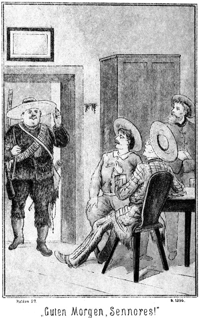»Guten Morgen, Sennores!« grüßte er.
Die andern dankten, nur der Lord nicht. Er hatte den Mund offen und blickte den Dicken mit einem Befremden an, welches diesem auffallen mußte. Der Letztere trat dann auch auf ihn zu, klopfte ihm auf die Schulter und sagte:
»Bruderherz, mach das Maul zu, so bekomme ich Angst, weil ich denke, Du willst mich fressen.«
Das brachte den Lord zu sich. Er antwortete:
»Na, nur keine Brüderschaft, Mann!«
»Mir auch recht,« lachte dieser, indem er sich an einen andern Tisch setzte. »Darf ich wissen, warum Ihr mich so anguckt?«
»Weil ich noch keinen so dicken Kerl gesehen habe, wie Ihr seid.«
»Und ich keinen so dürren wie Euch; dennoch aber bleibt mir das Maul nicht aufstehen.«
»Pah! Die Dickheit ist es nicht allein. Aber Ihr scheint Jäger zu sein?«
»Ja, Sennor.«
»Wohl gar Prairiejäger?«
»Das will ich meinen.«
»Also ein Waldläufer?«
»Natürlich.«
»Himmeldonnerwetter! Ich will auch einer werden!«
»Seid Ihr es nicht?«
»Leider nein.«
»Hm, konnte es mir denken. Ihr habt Euch zwar in die richtige Kleidung gesteckt, aber sie ist funkelnagelneu und hängt Euch von den Achseln, wie dem bekannten Esel die Löwenhaut.«
»Alle Wetter! Macht keine so dummen Vergleiche! Ich kann das nicht leiden.«
»Aber ich kann es leiden, und was ich gern leiden mag, das mache ich. Wirth gebt mir einen Schnaps.«
Der Wirth folgte dieser Aufforderung. Der Dicke griff in den Gürtel und legte ihm die Bezahlung hin.
Der Lord erblickte den Gegenstand, sprang auf, trat hin, ergriff denselben, betrachtete ihn und sagte:
»Das ist ja ein Goldkorn, ein Nugget!«
»Allerdings.«
»Von wem habt Ihr es?«
»Von mir selbst.«
»Also gefunden.«
»Gestohlen nicht!«
»So seid Ihr nicht nur Jäger, sondern auch Goldsucher?«
»Habt es errathen.«
»Sapperment! Kennt Ihr den Gila?«
»So ziemlich.«
»Giebt es in seiner Nähe auch Gold?«
»Ja, besonders für Denjenigen, der es findet.«
»Ich dachte es mir. Ich habe da ein Buch, in welchem erzählt wird, daß in der Nähe des Gila Gold gefunden wird. Da ist ein Kerl erwähnt, der hat im Wasser einen Klumpen gesehen, welcher wohl so groß wie ein Kürbis war.«
»Wollt Ihr etwa auch Gold suchen?«
»Nein; ich habe es nicht nöthig. Aber jagen will ich, durch die Urwälder laufen, Bären und Büffel schießen. Meint Ihr nicht?«
»O, was mich betrifft, so habe ich ganz und gar nichts dagegen, Sennor.«
»Es würde Euch auch wohl nichts nützen, Etwas dagegen zu haben. Habt Ihr Zeit?«
»Ja.«
»Und seid Ihr ein guter Jäger?«
»Ein leidlicher.«
»Schön! Ihr gefallt mir. Wollt Ihr mit mir jagen?«
Der Dicke blickte den Lord von der Seite an und antwortete lachend:
»Danke!«
»Warum?«
»Weil ich noch keine Lust habe, dieses Jammerthal mit dem Himmel zu vertauschen.«
»Wie meint Ihr das?«
»Ihr seht mir ganz so aus, wie Einer, der allemal den Nachbar trifft, wenn er auf den Hasen zielt.«
»Mann, nehmt Euch in Acht! Ich könnte Euch sonst sofort beweisen, daß ich zu treffen verstehe.«
Er machte dabei die Bewegung einer Ohrfeige.
»Na, so schlimm war es nicht gemeint,« lachte der Dicke. »Ich bin freilich breit und rund genug, um getroffen zu werden. Was seid Ihr denn für ein Landsmann, he? Ihr kommt mir halb wie ein Engländer und halb wie ein Russe vor.«
»In wiefern halb und halb?«
»Nun, Eure Gestalt ist diejenige eines Engländers; Eure Nase aber ist echt russisch. Solche Vumsnäschen trifft man eigentlich nur in Rußland vor.«
»Sapperment, laßt meine Nase in Ruhe! Ich bin ein Engländer und nenne mich Lord Eagle-nest.«
»Schön, Euer Lordschaft! Ich bin ein Deutscher und nenne mich Sam Barth.«
»Ein Deutscher? Welcher Zufall! Woher seid Ihr?«
»Aus Herlasgrün in Sachsen.«
»Sam Barth!« rief der Wirth. »Ist das wahr, Sennor?«
»Soll ich Euch etwa den Geburts- und Impfschein zeigen?«
»So wärt Ihr der berühmte, dicke Jäger, welcher sich vor fünfzig Feinden nicht fürchtet?«
»So? Bin ich wirklich berühmt?«
»Freilich, o freilich. Ich habe sehr viel von Euch gehört, Sennor. Bei Unsereinen verkehren ja allerlei Leute, auch Jäger, und da hört man Mancherlei. Ihr gehört zu den Berühmtesten. Voran steht freilich der Fürst der Bleichgesichter, nach welchem dann gleich die ›starke Hand‹, der Apachenhäuptling kommt. Ich freue mich außerordentlich, Euch kennen zu lernen.«
»So, freut Ihr Euch wirklich? Nun, den Apachenhäuptling und den Fürsten der Bleichgesichter kennt Ihr vielleicht schon?«
»Nein. Ich würde einige Dutzend Flaschen Brandy gratis geben, wenn ich einen von diesen Beiden einmal sehen könnte.«
»So macht die Stöpsel locker. Die beiden Jäger kommen.«
»Macht keinen Scherz.«
»Sie kommen. Ich belüge Euch nicht. Ich bin ihnen nur voraus. Wir treffen uns hier bei Euch.«
»Sennor, wenn das wirklich wahr ist, so gehört dieser Tag zu den schönsten meines Lebens, und ich werde Wort halten von wegen des Brandy.«
»Das laßt nur sein! Leute, wie wir sind, lassen sich keinen Schnaps schenken. Wir haben Geld und Gold genug, um ihn bezahlen zu können.«
Der Lord hatte dieser Unterredung mit der größten Spannung zugehört. Er betheiligte sich jetzt mit an derselben, indem er die Bemerkung machte:
»Ich will Euch sagen, daß auch ich vor Freude Etwas zum Besten geben möchte. Wir kommen von San Francisco. Dort haben wir auch von dem dicken Sam gehört, von der ›starken Hand‹ und von dem Fürsten der Bleichgesichter. Wir hatten keine Ahnung, daß der berühmte Sam Barth ein Deutscher ist.«
»O, ein Knopfmachergesell sogar.«
»Und die beiden Andern kommen wirklich?«
»Aber wohl spät?«
»Nein; sie können an jedem Augenblick hier sein.«
»Vortrefflich! Ich muß sie sehen! Wir müssen zwar bald fort von hier, aber so viel Zeit haben wir noch, die Bekanntschaft solcher Leute zu machen. Wo kommt Ihr her, Master Barth?«
»Zunächst von Mohawk-Station.«
»Sapperment! Per Schiff?«
»Per Bahn!«
»Und wohin wollt Ihr?«
»Nach der Gegend von Aubrey.«
»Nochmals Sapperment! Das paßt gut! Wollt Ihr mit mir?«
»Danke!«
»Warum nicht?«
»Erstens habe ich keine Lust, mit einem Anhänger herum zu laufen, und zweitens habe ich auch gar keine Zeit dazu. Zwar sagte ich vorhin, ich hätte Zeit, doch dachte ich, Ihr meintet mit Eurer Frage nur die jetzige Viertelstunde.«
»Was so Nothwendiges habt Ihr denn vor?«
»Eine Jagd.«
»In Aubrey.«
»Nicht in sondern bis Aubrey.«
»Doch nicht auf Bären oder Büffel!«
»Nein, auf Menschen.«
»Was Ihr sagt! Aber da könnt Ihr ja mit mir fort!«
»Danke! Wir müssen uns sputen.«
»Ich auch. Ich habe gar keine Zeit zu verlieren. Ich lasse heitzen, und in einer Stunde können wir fort.«
»Heitzen? Doch nicht eine Locomotive?«
»Nein, meinen Dampfkessel. Habt Ihr meine Dampfyacht nicht am Ufer liegen sehen?«
»Nein. Ich bin noch gar nicht am hiesigen Ufer gewesen. Ich komme von landeinwärts. Aber, wie ich höre, hättet Ihr wirklich eine Dampfyacht?«
»Ja, und was für eine.«
»Donnerwetter! Ihr wollt auch nach Aubrey und uns mitnehmen?«
»Mit geküßten Händen.«
»Dann ist es etwas Anderes. Euch sendet uns Gott. Wir fahren mit, notabene, wenn Ihr Euch nicht an dem Zweck unserer Reise stoßt.«
»Welcher ist das?«
»Eben die erwähnte Jagd.«
»Das ist mir ja nur lieb. Ich jage mit.«
»Hört erst, was für eine Jagd es ist: eine Menschenjagd.«
»Verteufelt! Auf Indianer?«
»Nein, sondern auf ein Segelboot, welches vor ganz kurzer Zeit hier vorbeigekommen sein muß.«
Der Lord blickte erst den Dicken und dann auch die Andern an. Dann fragte er erwartungsvoll:
»Ein Segelboot aus Mohawk-Station etwa?«
»Ja.«
»Es gehört dem Sohn des Stationers?«
»Ja, dasselbe.«
»Es befinden sich zwei gefangene Mädchen darauf?«
Da fuhr Sam von seinem Sitze empor und rief:
»Herr, was wißt Ihr von diesen Mädchen?«
»Daß sie eben gefangen sind.«
»Habt Ihr etwa dabei geholfen?«
»Nein.«
»Ein Glück für Euch! Ich hätte Euch bei der Parabel genommen, daß Ihr vor lauter Angst Syrup und Buttermilch hättet schwitzen müssen!«
»Oho! Aber kennt Ihr diese Mädchens?«
»Ja.«
»Habt Ihr diese hier gesehen?«
Er zeigte ihm die Photographie hin, welche er bis jetzt dem Bootsmanne noch nicht wiedergegeben hatte. Sam warf einen Blick darauf und rief überrascht:
»Alle Wetter! Das ist sie; das ist ja Magda Hauser!«
»Also Ihr kennt sie? Wirklich?«
»Und ob! Sie ist entführt worden. Wir wollen ihr nach.«
»Ich ja auch!«
»Wie kommt Ihr zu diesem Bilde?«
»Ich habe es von diesem Bootsmanne. Er hat sich auf dem Segelboote befunden, ist aber davongegangen, als er bemerkte, daß es sich um ein gefährliches Unternehmen handelte.«
»Wie? Ihr wart Bootsmann auf demselben Fahrzeuge? Ist es so, dann kennt Ihr die zwei Sennores und die zwei Sennorita's?«
»Natürlich muß ich sie kennen,« antwortete Forner.
»Welch ein Zufall! Ein größeres Glück kann es gar nicht geben. Ihr müßt mir sofort erzählen, was droben in Mohawk-Station geschehen ist.«
Der Bootsmann kam der an ihn ergangenen Aufforderung nach und erzählte sein Erlebniß zum zweiten Male. Natürlich hörte Sam Barth mit der allergrößten Spannung zu. – – –
Nämlich als Steinbach mit seinen Begleitern von Prescott aus Gila Bend erreichten, erfuhren sie zu ihrem Leidwesen, daß heut kein Zug mehr abgelassen werde. Sie mußten warten bis morgen.
Steinbach erkundigte sich und erfuhr, daß Walker mit seinen Gefährten den letzt abgegangenen Zug benutzt habe. Zwar hatte ihn Niemand gekannt, aber die Beschreibung paßte ganz genau auf ihn und seine Spießgesellen. Darum ließ Steinbach die Depesche abgehen, freilich ohne zu ahnen, daß dieselbe am Orte ihrer Bestimmung unterschlagen werden sollte.
Glücklicher Weise langte am Spätabende ein Bahnzug aus Tucson an, welcher noch nach Mohawk-Station abgehen sollte. Es wurden noch einige Güterwagen angehängt, in welchem Steinbachs Gesellschaft nebst den Pferden Platz hatten. Vor Mitternacht langten sie in Mohawk-Station an.
Der Stationer war bereits schlafen gegangen. An seiner Stelle expedirte der Telegraphist. Zu diesem begab sich Steinbach sofort und frug:
»Sennor, sind Sie Stationsvorstand?«
»Nein, sondern Telegraphist.«
»Ah, da können Sie mir sagen, ob heut eine Depesche an einen Sennor Wilkins angekommen ist?«
»Zwei sogar.«
»Zwei? Sie irren.«
»Ich weiß es genau. Ich habe beide empfangen und dann expedirt. Sie waren von einem und demselben Absender.«
»Und doch müssen Sie sich irren. Ich habe nur eine einzige abgesandt.«
»Sie? Heißen Sie vielleicht Steinbach?«
»Ja.«
»Von wo telegraphirten Sie?«
»Von Gila Bend.«
»Der Inhalt?«
»Eine Warnung vor einem gewissen Walker.«
»Alles stimmt. Ich sehe daraus, daß es nicht eine Verletzung des Amtsgeheimnisses ist, wenn ich auf Ihre Erkundigung eingehe. Es kam nämlich bereits vorher eine Depesche von Demselben an Denselben.«
»So handelt es sich um ein Verbrechen.«
»Doch nicht!«
»Ganz bestimmt. Ich sage Ihnen, daß wir eine Gesellschaft verfolgen, welche bereits eine ganze Reihe von Verbrechen begangen haben und jetzt wieder im Begriffe stehen, eine Schandbarkeit auszuführen.«
»Sollte es möglich sein! Können Sie mir vielleicht diese Personen beschreiben oder wenigstens die Zahl derselben angeben?«
»Vier Männer und eine Dame; die Letztere ist jung und sehr reizend.«
»Stimmt, stimmt! Sapperment! Wer hätte das für möglich gehalten!«
»Was?«
»Daß diese Sennorita eine verbrecherische Persönlichkeit ist. Armer Balzer! Vielleicht, vielleicht!«
Er sagte das nachdenklich und im Tone des Bedauerns.
»Wer ist dieser Balzer?«
»Der Sohn des hiesigen Stationers. Er fand – – doch, ich weiß nicht, ob ich davon sprechen darf!«
»Sprechen Sie immerhin!«
»Es geht nicht. Sie verzeihen! Aber als Beamter muß ich vorsichtig sein. Eine der beiden Depeschen ist in böser Absicht aufgegeben. Wer aber ist der Absender derselben?«
»Derjenige, welcher sich auf unrechtmäßige Weise des Namens Steinbach angemaßt hat.«
»Der können auch Sie sein!«
»Ganz richtig. Sie kennen ja mich nicht.«
»Leider! Ja, wenn Sie sich legitimiren könnten!«
»Das kann ich.«
»Dann bitte ich Sie, sich mit in mein Bureau zu bemühen.«
Sie begaben sich, während Steinbachs Begleiter warteten, in das Telegraphenbureau. Letzterer zog die Brieftasche heraus und gab dem Telegraphisten aus derselben ein Document zu lesen. Nachdem der Beamte den Inhalt desselben überflogen hatte, machte er eine tiefe, respectvolle Verbeugung und sagte:
»Ich bitte um Entschuldigung, gnädiger Herr, daß ich meine Pflicht thun mußte!«
»Eine Entschuldigung ist nicht am Platze, wenn man seine Pflicht thut. Aber nun sind Sie wohl überzeugt, daß Sie mir vertrauen dürfen?«
»Vollständig.«
»Darf ich die Telegramme sehen?«
»Hier sind die beiden Originale. Ich werde sie Ihnen vorlesen.«
Er that es.
»Ah, nach Dos Palmas hat er sie bestellt,« sagte dann Steinbach. »Aber aus welchem Grunde? Hm! Diese Depesche ist eher angekommen, als die meinige. Er hat gewußt, daß ich hinter ihm her bin. Er hat gewünscht, daß Wilkins diesen Ort hier schnell verläßt, damit ich ihn nicht finde und seine Spur verliere. Hat der Adressat meine eigene Depesche auch bekommen?«
»Ja.«
Er sprach dieses Wort gedehnt aus, als ob er eigentlich nicht mit Sicherheit bejahend antworten könne.
»Sie zweifeln daran?«
»Hm! Ich muß ehrlich sein. Der Sohn des Stationers, welcher mein Freund ist, bat mich, die Depesche befördern zu dürfen.«
»Warum er?«
»Er interessirte sich für eine der Damen, welche der Adressat bei sich hatte. Freilich interessirte er sich auch für das schöne Mädchen, von welchem Sie vorhin sprachen.«
»Wo wohnt Sennor Wilkins?«
»Im Hotel.«
»Und wo wohnen die Zuletztgekommenen?«
»Sie sind fort.«
»Ah! Wohin?«
»Ich weiß es nicht.«
»Kann ich eine Person haben, welche mich nach dem Hotel führt? Ich kenne es nicht.«
»Ich selbst bin bereit dazu.«
»Sehr gütig. Meine Begleiter werden hier warten.«
Die Beiden begaben sich vom Stationsgebäude nach dem Orte selbst, in das Hotel, wo man noch nicht schlafen gegangen war. Der Wirth empfing sie sehr höflich, da der Stationer ihm durch einen Wink und die sehr hoch gezogenen Augenbrauen zu verstehen gab, daß Steinbach ein sehr vornehmer Gast sei. Der Letztere fragte ihn:
»Ist Sennor Wilkins zu sprechen?«
»Leider nein.«
»Er schläft?«
»Nein; er ist abgereist.«
»O wehe! Wißt Ihr, wohin?«
»Nein.«
»Auch seine Begleitung?«
»Alle vier Personen.«
»Wann?«
»Beim Anbruch des Abends. Ich weiß nur, daß sie mit Sennor Balzers Segelboot gefahren sind.«
»Wie ist das so schnell gekommen?«
»Wohl in Folge einer Depesche, in welcher der Sennor aufgefordert wurde, nach Dos Palmos zu reisen. Dann kam eine junge, sehr schöne Sennorita und nahm sich ein Zimmer neben Sennor Wilkins. Ich sah sie dann mit ihm auf dem Balkon sprechen. Sie ging und kam nicht wieder. Dann mußte meine Bedienung Sennor Wilkins und Zimmermann mit den Damen nach dem Segelboote bringen.«
Das war Alles, was Steinbach erfuhr. Er war sehr ernst und nachdenklich geworden. Als er sich dann mit dem Telegraphisten wieder draußen befand, sagte er zu diesem:
»Es handelt sich hier um ein Verbrechen. Sie haben mir nicht Alles gesagt, was Sie wissen. Seien Sie aufrichtig. Sie können damit wohl mehrere Menschenleben retten.«
»Herrgott! Ists so gefährlich?«
»Ja.«
»Ich habe nichts verschwiegen, als daß der Mann, den Sie Walker nennen, bei meinem Freunde Balzer sich aufgehalten hat.«
»Mit seiner Begleitung?«
»Ja. Die schöne Sennorita ging fort. Sie ist es wohl gewesen, welche sich im Hotel ein Zimmer hat geben lassen.«
»Ah! Sie hat die Verführerin spielen müssen. Ist Balzer dann mit ihnen fort?«
»Ja, zu gleicher Zeit. Wohin, das weiß ich nicht.«
»Was ist Ihr Freund für ein Character?«
»Er ist jung und lebenslustig. Zu einem Verbrechen aber wird er nie die Hand bieten.«
»Man hat ihn betrogen. Kennen Sie das betreffende Segelboot?«
»Ich bin mit demselben gefahren.«
»Welche Bemannung hat es?«
»Steuermann und vier oder fünf Bootsleute.«
»Ist der Steuermann von hier?«
»Ja. Er ist verheirathet. Er wohnt in dem Häuschen, durch dessen offenes Fenster Sie dort das Licht noch schimmern sehen.«
»Gehen wir einmal hin.«
Sie fanden die Frau des Steuermannes noch wach. Auf Steinbachs Fragen, welche er mit einem kleinen Geldgeschenk unterstützte, gestand sie, daß ihr Mann kurz vor der Abfahrt die Bemerkung gemacht habe, daß die Reise dieses Mal bis in die Nähe von Aubrey gehen werde.
Weiteres vermochte Steinbach nicht zu erfahren. Für ihn war es aber genug. Wenn Magda Hauser auf dem Segelboot gegen Roulin gesagt hatte, daß Steinbach ihre Fährte ganz sicher finden werde, so hatte sie sehr Recht gehabt. Er hatte sie nun. Freilich galt es, keine Zeit zu verlieren. Unglücklicher Weise ging vor morgen Mittag kein Personenzug. Jetzt hatte das Segelboot bereits über fünf Stunden Vorsprung. Was thun?«
Steinbach fragte, ob er Extrazug bis Yuma haben könne.
»Jetzt nicht gleich. Die einzige vorhandene Maschine wird noch zum Rangiren gebraucht. Um drei Uhr aber kann Ihnen das Gewünschte zur Verfügung stehen.«
Er mußte sich also gedulden. Doch Punkt drei Uhr setzte sich der Extrazug mit den Reisenden und den Pferden in Bewegung nach Yuma.
Das war ein Umweg. Während der Rio Gila von Mohawk-Station nach Gila City geht, wo er in den Colorado fällt, führt die Südpazificbahn von derselben Station aus südlicher nach Yuma, welches weit unterhalb der Einmündung des Gila liegt. Freilich war es immer noch nicht gewiß, welches Ziel das Segelboot habe.
Wollte Walker nach Aubrey, so steuerte er in Gila City in den Colorado und fuhr diesem hinauf. Wollte er aber, wie seine Depesche vermuthen ließ, nach Dos Palmas, so mußte er von Gila City den Colorado hinab nach Yuma, wo die Eisenbahn den Colorado überfährt und dann nach Dos Palmas geht.
Das war der Gegenstand der Berathung, als die Männer im Wagen saßen. Es läßt sich denken, daß sie alle sich um Wilkins und seine Gesellschaft in Sorge befanden.
»Ich bin überzeugt,« sagte der dicke Sam, »daß er sie auf das Boot gelockt hat, nur um sie zu ermorden, sie vielleicht einfach in das Wasser zu werfen.«
Günther von Langendorf knirrschte.
»Wenn er das thut, so soll er eines hundertfachen Todes sterben. Krümmt er Magda nur ein einziges Haar, so werde ich mich rächen, wie nur ein wilder Indianer sich rächen kann!«
»Sorge Dich nicht!« tröstete Steinbach. »Ich habe, ganz entgegengesetzt von Sam, die Ansicht, daß er das Leben der vier Personen schonen werde.«
»Hast Du Gründe zu dieser Ansicht?«
»Ja. Sie werden die Mädchen nicht tödten, sie verfolgen ganz andere Zwecke.«
»Verdammt! Er mag sie nur anrühren!«
»Am Leben unseres Master Wilkins werden sie sich, wenigstens jetzt, noch nicht vergreifen. Ich denke vielmehr, daß sie ihn mit nach dem Thale des Todes schleppen werden, damit er sehen kann, wie sein Neffe dort leidet und Adler, der einstige Oberaufseher dazu.«
»Und Zimmermann?«
»Was haben Sie davon, wenn sie ihn sofort tödten? Allerdings werden sie auch ihn auf die Seite schaffen wollen, weil er nun ihre Thaten kennt; aber sie werden sich Zeit nehmen.«
»Wie aber wird es ihnen bis dahin ergehen!«
»Ob schlecht, das weiß man nicht. Wilkins ist ein erfahrener Mann. Und Zimmermann ist zwar noch jung, aber ein tüchtiger Jäger, kräftig und kühn. Vielleicht erfahren oder ahnen sie, was ihnen droht, und wehren sich ihrer Haut.«
»Dann tödtet man sie sofort!«
»Wir müssen bedenken, daß der Besitzer des Bootes mit seinen Leuten da ist. Er wird ein Verbrechen nicht begehen lassen.«
»Was aber wollen sie in Dos Palma's?«
»Nichts. Ich bin überzeugt, daß dieser Ort in der Depesche nur genannt worden ist, weil überhaupt ein Ort angegeben werden mußte. Man wollte Wilkins von Mohawk-Station fortbringen, damit wir ihn dort nicht finden sollen.«
»Und warum gehen sie nach Aubrey?«
»Nicht nach Aubrey gehen sie sondern nur bis in die Nähe der Stadt. Dort treiben sich die Papago-Jndianer herum, in deren Schutz sie sich begeben wollen. Sie bleiben so lange auf dem Wasser des Colorado, bis sie die Papago's bemerken, dann landen sie und reiten mit ihnen nach dem Todesthale.«
»Wie gut, daß Du auf den Gedanken gekommen bist, unsere Apachen und auch die nun mit ihnen verbündeten Maricopas in jene Gegend zu dirigiren!«
»Ich folgte meiner Ahnung, welche mich selten in Stich zu lassen pflegt.«
Der Zug hielt kurz nach Tages Anbruch in Yuma. Die Pferde hatten während der Fahrt Futter erhalten. Jetzt wurden sie getränkt, und dann hätte man aufbrechen können. Vorher aber fand noch eine kurze Besprechung statt.
»Hier in Yuma kann das Boot noch nicht sein, wenn Yuma überhaupt das Ziel ist,« sagte Steinbach. »Wenn wir also am Ufer aufwärts reiten, werden wir dem Seelenverkäufer ganz sicher begegnen.«
»Wie aber kommen wir an Deck?«
»Das läßt sich jetzt noch nicht sagen.«
»Sie kennen uns ja. Sie werden vorüberfahren und uns auslachen.«
»Das nehme ich nicht an. Ich habe meine Büchse mit. Ich rufe sie an. Halten sie nicht, so schieße ich den Steuermann nieder und lasse keinen Zweiten an das Steuer. Das Boot wird dann unbedingt an das Ufer getrieben.«
»Oder an das jenseitige, wo wir nicht hin können!«
»Pah! So dumm werde ich es doch nicht anfangen. Ich schieße den Steuermann da nieder, wo die Strömung nach dieser Seite führt. Uebrigens ist es ja möglich, daß sie es gar nicht gewagt haben, während der Nacht zu segeln. In diesem Falle befinden sie sich jedenfalls noch weit oberhalb von Gila City. Um schnell zu erfahren, ob das Boot bereits an Gila City vorüber ist, muß Einer von uns jetzt direct nach diesem Orte reiten.«
»Wer soll das thun?«
»Einer, welcher erfahren, listig und verschlagen ist. Ich denke, wir schicken unsern Sam Barth hin.«
»Einverstanden!« erklärte der Dicke. »Was aber habe ich dort zu thun?«
»Sehr viel oder sehr wenig, je nach den Umständen. Ist das Boot noch nicht vorüber, so sucht Ihr es aufzuhalten, wenn es angesegelt kommt. Ist es bereits vorüber, so habt Ihr nichts zu thun, als auf uns zu warten.«
»Wo?«
»Ja, wo! Wir alle sind dort unbekannt. Sagen wir, in demjenigen Gasthause, welches dem Flusse am Nächsten liegt.«
»Da kommt Ihr hin?«
»Ja, falls wir dem Boote hier nicht begegnen. Findet dies aber statt, so sind wir bis Mittag nicht bei Euch, und Ihr habt uns hier in Yuma zu suchen. Werdet Ihr Euch nach Gila City finden?«
»Leicht. Es liegt ja hier am Flusse, und ich brauchte nur längs des Ufers weiter zu reiten. Da ich aber rasch sein muß, so schlage ich die gerade Linie ein, nach Nordnordost über die Prairie weg. In zwei Stunden bin ich dort.«
»Wir müssen den Umweg am Ufer hin machen und werden in drei Stunden dort sein, falls wir dem Segelboote nicht begegnen. Also, eine ausführliche Instruction brauche ich Euch wohl nicht zu geben?«
»Nein. Das fehlte noch! Ich bin aus Herlasgrün, wo man immer weiß, was man zu machen hat, wenn nichts zu machen ist. Adieu, Sennores.«
Er ritt im Galopp davon. Wie er es sich gedacht hatte, war er in zwei Stunden in Gila City. Er ritt nach dem Flusse, sah die Schänke, in welcher sich der Lord befand, band sein Pferd hinter dem Hause an und begab sich dann in die Stube, wo er auf so eigenthümliche Weise erfuhr, daß das Boot bereits vorüber sei. – –
Als der Bootsmann seinen Bericht abstattete, erwähnte er einen Namen, welchen er vorher, als er das Ereigniß dem Lord erzählt hatte, nicht mit genannt hatte, den Namen Steinbach.
»Also sie sind an Ketten gebunden?« fragte Sam.
»Ja, aber der Eine hat sich losgerissen.«
»Sehr gut. Er kann also seine Hände gebrauchen und wird dafür sorgen, daß das Allerschlimmste nicht geschehen kann. Er wird sich halten können, bis wir Hilfe bringen.«
»Es scheint, daß sie ganz sicher auf Hilfe rechnen. Es muß Einen geben, welcher das Boot verfolgen wird.«
»Wer ist das?«
»Die Sennorita nannte den Namen. Sie sagte, daß der Mann ihre Spur finden und derselben folgen werde. Er hat einen fremden Namen und heißt Steinbach.«
»Steinbach?« fragte der Lord schnell.
»Ja.«
»Hast Du diesen Namen wirklich und deutlich gehört?«
»Sehr deutlich. Er ist fremd; aber ich hatte früher einmal droben in Sakramento einen Bekannten; er war aus Deutschland und hieß Steinbach. Darum kann ich dieses Wort aussprechen und habe mir den Namen auch heute sehr gut gemerkt.«
»Steinbach! Sapperment! Hermann, Vetter, sollte das etwa unser Steinbach sein?«
»Das wäre die herrlichste Ueberraschung, welche es nur geben könnte!«
»Zuzutrauen ist's ihm. Weißt Du nicht, wo er sich jetzt ungefähr befindet?«
»Nein. Ich kenne ja nicht einmal seinen wirklichen Namen. Er ist uns damals verschwunden, ohne die geringste Spur zurückzulassen.«
»So ist es möglich, daß wir jetzt nicht nur die Spur von ihm, sondern ihn selbst finden.«
»Was sollte er hier am Rio Gila machen?«
»Was thun wir hier? Er könnte ja ganz auf unseren Gedanken gekommen sein, nämlich Waldläufer zu werden. Es ist ja leicht möglich, daß er das Buch von Gabriel Ferry gelesen hat. Und wer dieses liest, dem kommt ganz sicher der Wunsch, nach dem Rio Gila zu gehen.«
»Nicht alle Menschen sind wie Du, Vetter,« meinte Hermann von Adlerhorst ein Wenig ironisch.
Sam Barth hatte diesem Wortwechsel nachdenklich zugehört. Jetzt fragte er den Lord:
»Auch Ihr kennt einen Steinbach. Könnt Ihr mir vielleicht seine Person beschreiben?«
»Jawohl. Ungewöhnlich groß und stark; prächtiger Vollbart; sehr hübscher Kerl.«
»Hm? Das ist nicht Derjenige, von welchem hier die Rede ist.«
»Der ist klein und dürr. Er ist es, welcher der Fürst der Bleichgesichter genannt wird.«
»Also habe ich mich umsonst gefreut. Aber klein und dürr? Und heißt der Fürst der Bleichgesichter? Ist ein so berühmter Jäger? Unmöglich!«
»Warum unmöglich?«
»Ich kann mir einen berühmten Waldläufer nur als groß und stark vorstellen.«
»Da irrt Ihr Euch. Das Leben der Prairie, die Entbehrungen und Strapazen desselben dorren den Körper aus. Die berühmtesten Jäger sind dürr, haben aber Muskeln wie Eisen und Sehnen wie Stahl.«
»Ihr selbst seid aber dick!«
»Ich bin eine Ausnahme. Also Ihr habt Euch entschlossen, dem Segelboote nachzujagen?«
»Ja. Wäre ich noch zweifelhaft gewesen, so würde das Zusammentreffen mit Euch mich bestimmen, es zu thun.«
»Das ist sehr gut. Das Boot wird nicht weit kommen. Euer Dampfer holt es ein.«
»Das versteht sich. Wir werden also Kameraden sein, und so – – hurrjeh, was sind das für Kerls?«
Es hatte sich nämlich draußen Pferdegetrappel hören lassen, und jetzt traten Jim und Tim ein, bei deren Anblick der Lord die letztere Frage aussprach.
»Es sind meine Kameraden,« antwortete Sam.
»Und der da? Alle Wetter, eine Rothhaut!«
»Das ist die »starke Hand«, der Häuptling der Apachen.«
»Der berühmte Kerl? Ah, den muß ich begrüßen.«
Er stand auf, streckte dem Apachen die Hand entgegen und sagte in englischer Sprache:
»Guten Morgen, Master! Wie geht es Euch?«
Der Häuptling war der englischen Sprache mächtig. Er blieb trotz der Eigenthümlichkeit der Frage ernsthaft und antwortete:
»Danke! Sehr gut! Und Euch?«
»O, mir geht es auch nicht übel. Ich freue mich riesig, Euch kennen zu lernen. Hoffentlich schießen wir einige Büffel und Bären zusammen. Nicht? Aber ich denke, Ihr bringt den kleinen Fürsten der Bleichgesichter mit?«
»Den kleinen – –?« fragte Jim.
»Na, ja. Er ist doch von sehr winziger Statur.«
»So? Seht ihn Euch an. Da ist er.«
Steinbach trat mit Günther von Langendorf ein. Er sah den Lord und machte eine Bewegung ungeheuren Erstaunens. Der Engländer aber riß die Augen und den Mund so weit auf, wie es überhaupt möglich war, fuhr zurück, so daß er seinen Stuhl umwarf, und rief:
»Alle guten Geister – – Steinbach!«
»Ihr hier! Das ist erstaunlich!«
»Was treibt denn Ihr hier am Gila?«
»Allerlei Geschäfte. Und Ihr?«
»Ich bin Waldläufer!«
»Ah so! Hier meine Hand. Willkommen im Westen!«
»Ja, willkommen! Aber, sagt einmal, seid Ihr es, den man den Fürsten der Bleichgesichter nennt?«
»Ja.«
Da wandte sich der Lord zu dem feixenden Sam und zürnte!
»Warum sagt Ihr da, er sei klein und dürr?«
»Es war Scherz.«
»Aber ich verbitte mir solchen Scherz! Ich lasse mir Master Steinbach nicht klein und dürr machen! Na, setzt Euch! Wirth, gebt das Beste her, was Ihr zu trinken habt! Ja, ja, Master Steinbach, Ihr wundert Euch, daß ich hier bin. Ihr fragt nach der Ursache? Seht Euch doch einmal diesen Titel an!«
Er zeigte ihm das Buch hin.
»Der Waldläufer, von Ferry! Hat der Euch Lust gemacht?«
»Natürlich.«
»Gerade also wie damals die Entführung aus dem Serail.«
»Ja; nur daß ich nicht so glücklich war, Eine zu entführen. Dieses Mal aber soll es anders gehen. Ich will Bären schießen und Büffel. Ich habe Alles mit, was ich dazu brauche, Waffen, Munition, einen ganzen Centner Pulver, Lasso's, kurz und gut, Alles.«
»Wollen hoffen, daß Ihr mit dem Centner Pulver nicht in die Luft geht!«
»Das thue ich nicht. Vor allen Dingen will ich diese famose Magda Hauser retten und ihre Freundin.«
»Ah! Wißt Ihr davon.«
»Der Dicke hat mich unterrichtet, und hier ist ein Bootsmann, welcher auf dem Segelboote gewesen ist. Ihr kommt Alle mit auf meinen Dampfer. Wir spritzen hinter diesem Walker her und nehmen ihn beim Schopfe.«
»Habt Ihr die Yacht mit?«
»Natürlich!«
»Das ist stark, wirklich stark! Eine Dampfyacht auf dem Rio Gila. Uns aber ist das ungeheuer lieb. Nichts könnte uns gelegener kommen. Ist das Segelboot hier vorüber?«
»Seit länger als einer Stunde,« antwortete Forner.
»Und Ihr seid Bootsmann darauf gewesen?«
»Ja. Ich habe mich aber davon gemacht, weil ich merkte, daß irgend Etwas nicht richtig sei.«
Er mußte jetzt zum dritten Male erzählen. Als er geendet hatte, fragte Steinbach den Lord:
»Könnt Ihr unsere Pferde mit unterbringen?«
»Hoffentlich. Sie werden an Deck alle Platz haben.«
»Und Ihr wollt uns wirklich die Yacht zu unserer Verfügung stellen?«
»Das versteht sich ganz von selbst.«
»So wollen wir schleunigst an Bord gehen und die Anker lichten, Sir.«
»O, so schnell geht das nicht. Da fällt mir nämlich ein, daß mir gerade die Hauptsache fehlt. Hier in diesem Lande giebt es keine Kohlen; ich muß also den Kessel mit Holz feuern und ich habe keines mehr. Hoffentlich ist hier welches zu haben?«
Diese Frage richtete er an den Wirth, welcher ihm antwortete:
»Ich selbst werde Euch so viel davon besorgen, wie Ihr nur haben wollt.«
»So macht schnell! Wir haben keine Zeit zu verlieren.«
Bis jetzt waren Frage und Antwort einander in großer Schnelligkeit gefolgt, wie das bei einem so unerwarteten Zusammentreffen stets der Fall zu sein pflegt. Steinbach hatte sich nicht einmal niedergesetzt. Er that es jetzt, und nun begannen erst die Erklärungen, welche bei einer solchen Gelegenheit selbstverständlich sind.
Der Wirth war höchst stolz auf die berühmten Gäste, welche heute sein Haus beherbergte. Er versorgte sie mit Getränk und ging dann hinaus, um das bestellte Holz anzuweisen und nach der Yacht bringen zu lassen. Dabei hatte er Gelegenheit, einem Nachbar zu sagen, wer bei ihm sei. Dieser trug die Kunde weiter, und bald stand eine Menge Volk vor dem Hause, um die großen Jäger zu sehen, wenn sie gehen würden.
Nach Verlauf einer Stunde kam von dem bekannten Steuermanne Smith die Botschaft, daß der Kessel geheizt sei, und nun brach die Gesellschaft nach dem Flusse auf. Als sie dort den kleinen Dampfer liegen sahen, zeigte der Lord triumphirend auf das Bild und fragte:
»Kennt Ihr diesen da, Master Steinbach?«
»Sehr gut. Es fehlt ihm aber Zweierlei.«
»Der Regenschirm und das Fernrohr, vielleicht auch das Rasirzeug in der Brusttasche.«
»Das war beim vorigen Bilde. Jetzt fällt es weg. Als Waldläufer werde ich doch nicht mit dem Regenschirm auf die Bärenjagd gehen. Nur immer praktisch muß man sein. Na, kommt an Bord!«
Das Unterbringen der Pferde machte zwar einige Beschwerde, doch gelang es nach einiger Anstrengung. Dann stieß der kleine Dampfer vom Ufer ab. Der Bootsmann Forner nahm vorn an dem Buge Platz, da er die Wasserbahn kannte und Ausguk halten mußte. Als der Einfluß des Gila in den Colorado erreicht war, bog der Dampfer in den Letzteren rechts ein und steuerte gegen den Strom nach Norden. Da Steinbach das Seegelboot von Auma bis nach Gila City nicht gesehen hatte, so verstand es sich ganz von selbst, daß es stromaufwärts nach Aubrey zu gesegelt war. Da es nun gegen zwei Stunden Vorsprung hatte, so ließ sich annehmen, daß die Yacht ebenso lang brauchen werde, um es einzuholen. –
Das Boot hatte bereits während der Nacht sehr guten Wind gehabt, und nun es in den Colorado lief und nach Nord wendete, drehte sich auch der Wind so günstig, daß es war, als ob alle Umstände zusammenwirkten, die Fahrt zu einer glücklichen zu machen.«
Etwas Unangenehmes war freilich vorgekommen. Im Vorbeisegeln hatte man am Ufer die Yacht bemerkt. Sie war von Allen angestaunt worden, denn so ein Schiff hatte man hier noch niemals gesehen.
Der einstige Derwisch, jetzt Bill Newton genannt, saß verwundet auf dem Verdeck. Seine Wunde war, wie sich herausstellte, nicht so gefährlich, wie es erst den Anschein gehabt hatte. Auch er erblickte die Yacht. Er fuhr sogleich von seinem Sitze auf.
»Himmeldonnerwetter! Was ist das?« rief er.
»Na, ein Lustdampfer,« antwortete Walker.
»Das weiß und sehe ich. Aber – sollte es möglich sein! Den Kerl kenne ich.«
»Der da vorn angemalt ist?«
»Ja, der ist ein englischer Lord.«
»Kann es mir denken. Nur so ein Kerl kann auf die Idee kommen, per Dampfyacht nach dem Rio Gila zu gehen. Es ist eine Verrücktheit!«
»Aber eine sehr überlegte Verrücktheit, welche für uns höchst verhängnißvoll werden kann!«
»Wieso?«
»Ich lege jeden Schwur darauf ab, daß dieses Schiff wegen uns hier liegt.«
»Unsinn!«
»Wahrheit. Der Besitzer heißt Eagle-nest und ist ein Verbündeter Steinbach's.«
»Das wäre!«
»Ja. Ganz denselben Dampfer sah ich in Constantinopel; nur war das Bild ein anderes. Die Yacht hat mich nach Tunis verfolgt und ist dann auch nach Egypten gegangen, um einen Verbündeten von mir in das Verderben zu bringen. Ja, dort sehe ich den Steuermann stehen, diesen verdammten Engländer. Ich kenne sein Gesicht sehr genau.«
»Irrt Ihr Euch nicht?«
»Ist gar nicht möglich. Nehmt Euch in Acht. Wenn die Yacht sich hinter uns her macht, sind wir verloren.«
»Hm! Wenn! Bis jetzt denke ich, daß man da drüben an Bord noch gar keine Ahnung hat, was geschehen ist. Wir können ruhig sein.«
»Aber Steinbach wird nach Gila-City kommen und die Yacht zu unserer Verfolgung benutzen.«
»Es fragt sich, ob er erfährt, daß wir uns hier auf diesem Boote befinden.«
»Der? Da kennt Ihr ihn schlecht. Ich wette, daß er bereits fünf Minuten nach seiner Ankunft in Mohawk-Station Alles weiß.«
»Von dort geht erst nach Mittag ein Zug nach hier ab. Wir haben einen genügenden Vorsprung.«
»Ich rathe trotzdem zur größten Vorsicht.«
»Mir scheint, daß Ihr diesen Fürst der Bleichgesichter doch etwas mehr fürchtet, als nöthig ist.«
»Er hat eine ganz besondere Rechnung mit mir zu begleichen; ich weiß, daß ich keine Schonung finde.«
»Schießt ihn nieder!«
»Das ist schneller gesagt als gethan. Ich warne Euch und rathe Euch die größte Vorsicht. Diese Yacht macht mir große Sorge.«
»Mir jetzt noch nicht. Dennoch aber werde ich Euren Rath befolgen.«
»Ich werde mir das Fernrohr Sennor Balzer's geben lassen, um die Gegend hinter uns nicht aus dem Auge zu lassen.«
»Das heißt doch, die Vorsicht zu weit treiben.«
»Besser zu vorsichtig als zu wenig. Ich wehre mich meiner Haut, und da dies jetzt mit keiner anderen Waffe geschehen kann, so nehme ich das Fernrohr dazu.«
Von jetzt an saß er mit dem Perspectiv da und betrachtete die Strecke des Stromes, welche hinter ihnen lag, mit größter Sorgfalt.
So vergingen einige Stunden. Das Boot segelte sehr gut gegen den Strom, welcher hier sehr breit war und also offene Bahn bot. Es war beinahe Mittag geworden, als Newtons lauter Ruf erschallte:
»Sennor Walker, kommt her! Schnell!«
Walker eilte herbei.
»Was giebt es denn?«
»Die Yacht ist hinter uns.«
»Zeigt her!«
Er nahm das Rohr und suchte den Horizont ab.
»Man sieht sie noch nicht,« bemerkte Newton, »aber man sieht ihren Rauch.«
»Ja, ich sehe sie jetzt. Was meint Ihr? Sollte der Engländer wirklich gefährlich sein?«
»Ohne alle Frage. Laßt Euch rathen!«
»Verdammte Geschichte! Wenn man nur wüßte, wer sich da an Bord befindet! Doch wohl nur dieser alberne Lord allein. Und den fürchte ich nicht.«
»Ich wette mit, daß Steinbach an Bord ist. Die Yacht hat auf ihn gewartet und würde ohne ihn Gila-City nicht verlassen haben. Davon bin ich überzeugt.«
»Aber er kann doch erst am Nachmittage in Gila-City ankommen!«
»Giebt es nicht Extrazüge?«
»Sollte er das Geld an so einen gewendet haben?«
»Er scheint sehr reich zu sein.«
»Dann – hm! Fatal, höchst fatal. Ich beginne. Euch Recht zu geben. Aber wie wollen wir uns unsichtbar machen? Ich weiß nicht, wie!«
*
»Redet mit Sennor Balzer und dem Steuermanns aber schnell, ehe es zu spät wird!«
Walker begab sich nach dem Achterdeck, wo jetzt der Sohn des Stationers neben dem Steuermanne stand.
»Sennor,« sagte er. »Der Dampfer ist hinter uns her.«
»Schon! Meint Ihr wirklich, daß er uns gefährlich werden kann?«
»Ja. Er hat es nicht nur auf mich und die Gefangenen, sondern auch auf Donna Miranda abgesehen.«
»Sapperment! Da müssen wir vorbeugen. Steuermann, was rathet Ihr?«
»Hm!« antwortete dieser. »Sieht man den Körper der Yacht durch das Fernrohr?«
»Nein, nur den Dampf. Und jetzt auch diesen nicht, da wir eben eine Krümmung hinter uns gelegt haben.«
»So hat er vielleicht auch unser Segel noch nicht gesehen. Lassen wir ihn an uns vorüber.«
»Da sieht er uns ja!«
»Schwerlich! Wir spielen ein Wenig Versteckens. Ist er vorbei, so segeln wir hinter ihm her, während er glaubt, uns vor sich zu haben, dieser wunderbare Salondampfer. Ich kenne ein Bayou, welches gleich hier vor uns mündet.«
Unter einem Bayou versteht man nämlich eine Stelle, an welcher das Wasser des Stromes lang und schmal in das Ufer einschneidet. Es sieht das so aus, als ob ein Flüßchen oder ein Bach sich in den Strom ergieße, doch enthält ein Bayou nur Stauwasser.
»An die Leine, Jungens!« rief der Steuermann. »Wir gehen ins Bayou.«
Der Befehl fand sofort Gehorsam. Zugleich ergriffen zwei von den Bootsleuten die langen, starken Staken, mit denen man das Boot vom Lande stößt.
Der Steuermann beobachtete das User mit scharfen Blicken, nahm das Steuer plötzlich scharf senkrecht auf den Wasserlauf und rief:
»Laßt gehen!«
Die Leute ließen die Leine los, und das Segel fiel aus dem Winde schlaff, von der Raa hernieder.
»Nieder den Mast! Schnell, schnell!«
Im Augenblicke senkte sich der Mast mit der Raa. Das Boot richtete den Schnabel gegen das Ufer. Man sah dort keinerlei Einbuchtung.
»Um aller Welt willen! Ihr stoßt doch grad an das Ufer!« rief Walker.
»Wollen sehen!« brummte der Steuermann. »Legt Euch nieder, damit Ihr von den Zweigen nicht vom Deck geschnellt werdet.«
Sie gehorchten. Das Ufer war von dichten, weißblumigen Dogwoodbäumen bestanden, welche ihre Zweige bis ins Wasser hängen ließen. In diese Zweige fuhr das Boot hinein. Es gab kein festes Ufer, sondern ein Bayou schnitt schmal, scharf und tief in dasselbe ein. Jetzt, wo das Boot nicht mehr vom Segel getrieben wurde, stand es unter den Zweigen, welche sich aber bereits hinter ihm geschlossen hatten, still. Es wurde mit Hilfe der Staken weiter in das Bayou hinein geschoben und dann an das Ufer befestigt.
»So,« sagte der Steuermann. »Ist das nicht ein sehr hübsches Plätzchen, Sennores?«
»Herrlich!« antwortete Walker. »Draußen vom Flusse aus kann man nichts von demselben bemerken. Ein besseres Versteck kann es gar nicht geben.«
»Nun lassen wir die Yacht vorüber und folgen erst dann, wenn sie verschwunden ist. Geht an das Land, Sennores, und verbergt Euch unter den Räumen; da könnt Ihr die Yacht passiren sehen und Euch ganz gemächlich die Personen betrachten, welche sich drauf befinden.«
Das wurde gethan. Walker, Roulin, Leflor und trotz seiner Verwundung auch Bill Newton sprangen an das Land, krochen unter den Zweigen bis an den Eingang des Bayous zurück und setzten sich dort an einer Stelle nieder, wo sie den Dampfer deutlich sehen konnten, ohne daß es möglich gewesen wäre, sie vom Borde desselben aus zu bemerken.
Newton hielt das Fernrohr stromabwärts gerichtet. Nach bereits fünf Minuten meldete er:
»Er kommt: Soeben erscheint er um die Biegung.«
»Ja, ich sehe ihn mit bloßem Auge,« meinte Walker. »Das Fahrzeug läuft riesig geschwind.«
»Das Deck ist voller Menschen!«
»Das kann ich mit unbewaffnetem Auge nicht sehen.«
»Es sind ihrer Viele. Ach, nein! Es sind Pferde dabei. Sie stehen auf dem Vorderdeck und – alle tausend Teufel! Werden Todte wieder lebendig!«
»Was ists?«
»Ganz vorn am Bug steht der Bootsmann Forner, der während der Nacht ertrunken ist.«
»Unsinn!«
»Seht selbst durch das Rohr!«
Walker nahm es, blickte hindurch und gab es mit den Worten zurück:
»Ja, er ists. Der Kerl hat uns verrathen! Er mag sich hüten, in unsere Hände zu kommen!«
»Hinten neben dem Steuermanne steht der Lord mit seinen langen Beinen und seiner Hagebuttennase.«
Die Yacht kam schnell näher. Jetzt erkannte man die Gesichter der an Bord befindlichen mit dem bloßen Auge.
»Alle Teufel!« sagte Walker. »Ihr habt Recht gehabt, Bill. Dort steht er, am Cajüteneingange!«
»Steinbach!«
»Ja. Neben ihm der Apache und dieser verdammte Sennor Günther, den – – den der Satan holen möge. Weiter rückwärts sehe ich den dicken Jäger und noch zwei, die ich nicht kenne.«
»Zwei Brüder, Jim und Tim. Sie sind Alle beisammen. Sie haben auch Pferde mit, ganz zu unserer Verfolgung bereit. Eine verfluchte Geschichte. Da, jetzt sind sie grad vor uns. Ich wollte, sie rennten an irgend einer Untiefe auf und ersöffen Alle mit einander!«
Dieser Wunsch ging freilich nicht in Erfüllung; die Yacht dampfte fleißig weiter, wurde immer kleiner und kleiner und verschwand endlich vor den Augen Derer, welche sie doch erreichen wollte.
Die Lauscher kehrten jetzt an Bord des Bootes zurück. Nur Walker blieb noch ein kleines Weilchen stehen, um sich zu vergewissern, daß die Yacht auch wirklich verschwunden sei. Nur der Rauchstreifen war noch zu sehen, den sie zurückgelassen hatte, und welcher sich langsam in der Luft zertheilte und auflößte.
Aber es gab noch etwas Anderes, was die Aufmerksamkeit Walkers jetzt auf sich zog: Ein schwarzer Punkt, welcher sich langsam und stetig vom anderen Ufer her bewegte, ragte über dem Wasser auf und nieder, so wie sich der Kopf eines Schwimmers zu bewegen pflegt. Bereits nach einer Weile konnte Walker die Gesichtszüge eines Indianers erkennen, dessen Haarschopf nach Art der Apachen geordnet war.
»Ein Apache kommt!« raunte er nach dem Boote hin. »Kommt herbei, ihn zu fangen, sonst sind wir verrathen.«
Sofort kamen einige der Bootsleute und nahmen hinter den Baumstämmen Posto. Sie verhielten sich ruhig, bis der Indianer in ihre Nähe gekommen sein werde. Er schwamm ausgezeichnet, und es stellte sich heraus, daß er das Bayou genau kannte, denn er hielt grad auf dasselbe zu, schwamm unter den Aesten herein und trat an das Land.
Seine wildlederne Kleidung war mit Bärenöl eingerieben, damit sie das Wasser nicht aufnehmen solle. Bewaffnet war er nur mit einem Messer, ein Zeichen, daß er sich als Kundschafter auf dem Wege befunden habe. Er schüttelte sich ab und schritt dann weiter, am Rande des Bayou hin, indem er die Zweige auseinander schob. Plötzlich blieb er starr stehen. Er hatte das Boot gesehen.
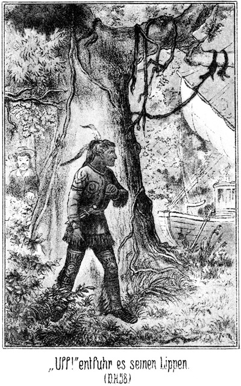»Uff!« entfuhr es leise seinen Lippen.
Er wollte sich zur Seite wenden, um nicht bemerkt zu werden, wurde aber in demselben Augenblicke von vier, sechs, acht kräftigen Armen ergriffen, so daß er sich gar nicht zu wehren vermochte.
Trotz dieser Ueberraschung bewegte sich kein Zug seines jugendlichen, broncefarbenen Gesichtes. Er wurde augenblicklich gebunden und nach dem Boote gebracht. Dort musterte er die ihn umstehenden Männer mit finsterem Blicke, sagte aber kein Wort. In seinem Gesichte prägte sich der Stolz eines tapfern Kriegers aus, welcher nur durch Uebermacht und Ueberrumpelung besiegt worden ist und es nicht der Mühe für werth hält, ein Wort an seine Feinde zu richten.
Es wurden ihm verschiedene Fragen vorgelegt. Er beantwortete keine einzige, bis endlich Walker sagte:
»Was hast Du hier zu suchen, Apache?«
»Apache?« fragte er. »Der ›beißende Hund‹ ist doch kein Apache.«
Also sein Name war der ›beißende Hund‹. Da die Indianer sich Namen beizulegen pflegen, womit sie ihre Thaten oder Charactereigenschaften bezeichnen, so war zu vermuthen, daß dieser Mann sich bereits durch Tapferkeit ausgezeichnet habe.
»Du trägst doch den Schopf eines Apachen!« meinte Walker.
Der Rothe machte eine Bewegung der Geringschätzung und antwortete:
»Der Scharfsinn des weißen Mannes ist wie das Licht des Mondes zur Zeit des Neumondes. Es leuchtet nicht. Sieht das Bleichgesicht denn nicht, daß der ›beißende Hund‹ ein Kundschafter ist?«
»Woraus soll ich das erkennen?«
»Wenn der rothe Mann allein und unbewaffnet aus seinem Wigwam geht und sogar über Flüsse schwimmt, ohne seinen Medicinsack bei sich zu haben, so ist er ganz sicher ein Kundschafter. Ein kluger Krieger trägt dann die Abzeichen Derer, welche er überlisten will, damit sie ihn nicht für einen Feind, sondern für einen der Ihrigen halten.«
»Wenn Du kein Apache bist, wessen Stamm gehörst Du denn an?«
»Hat der weiße Mann noch nicht den Namen des ›beißenden Hundes‹ gehört?«
»Nein.«
»So ist das Bleichgesicht wohl noch nie am Colorado oder im Süden, des Rio Gila gewesen?«
»Nein.«
»Ich bin ein Papago.«
»Ein Papago?« rief Walker erfreut. »Wir sind hier am Colorado, um die Papago-Indianer zu suchen.«
»Wozu?«
»Das könnte ich einstweilen nur dem Häuptling derselben sagen.«
»Der ›beißende Hund‹ ist der Häuptling der Papago.«
»Was! Wirklich?«
»Der rothe Mann sagt niemals eine Lüge!« antwortete der Wilde in stolzem Tone. »Frage hier an den Ufern des Flusses, so wird man Dir sagen, daß der ›beißende Hund‹ der Anführer der Papagos ist.«
»Seit wann gehen die Häuptlinge selbst auf Kundschaft?«
»Seit immer, wenn es sich um eine wichtige Sache handelt.«
»Willst Du mit den Apachen Krieg beginnen?«
»Das Bleichgesicht hat meine Frage vorhin nicht beantwortet; ich werde die seinige auch nicht beantworten.«
»So wirst Du mir später Antwort geben. Ich bin ein Freund der Papago.«
»Beweise es!«
»Ich weiß, womit ich es beweisen soll. Versprichst Du mir, nicht zu entfliehen, wenn ich jetzt Deine Banden löse?«
»Ich werde nicht entfliehen, wenn Du mir wirklich beweisest, daß Du ein Freund der Papagos bist.«
»Der Beweis soll Dir geliefert werden.«
Er band den Indianer los. Dieser stand langsam auf, streckte seine Glieder und setzte sich dann ebenso langsam wieder nieder. Alle standen um ihn herum. Walker sagte zu ihm:
»Wir sind gekommen, um die Pfeife des Friedens mit Deinem Stamme zu rauchen.«
»Die Pfeife des Friedens ist vergraben. Die Papagos haben das Beil des Krieges aus der Erde gegraben.«
»Auch gegen die Weißen?«
»Gegen alle ihre Feinde.«
»So dürfen wir ruhig sein. Wir sind Eure Freunde; wir kommen, um Euch Eure Feinde in die Hand zu geben.«
Der Indianer betrachtete ihn langsam vom Kopf bis zu den Füßen herab und antwortete:
»Kann das Pferd den Bären in die Hand des Büffels geben?«
»Du glaubst mir nicht?«
»Nein. Die Papagos werden mit den Apachen und den Maricopas kämpfen. Wie willst Du Beide in unsere Hände liefern?«
»Indem ich Dir ihre Häuptlinge übergebe.«
»Kennt das Bleichgesicht diese Häuptlinge?«
»Ja. Wenn Du Deine Krieger in der Nähe hättest, so könntest Du die feindlichen Anführer sehr bald in Deiner Gewalt haben.«
Der Rothe bohrte seinen Blick in das Angesicht des Sprechers und betrachtete sich dann auch die anderen Umstehenden. Er mochte ihnen ansehen, daß an Walkers Worten doch etwas Wahres sei, denn er bequemte sich zu dem vielleicht etwas gewagten Geständniß:
»Die Krieger der Papagos befinden sich nicht weit von hier.«
»Sapperment! Das könnte sich gar nicht bester treffen!«
»Hast Du das Dampfschiff gesehen, welches vorhin hier vorüber fuhr?«
»Der ›beißende Hund‹ hat es gesehen. Er mußte ja warten, bis es vorüber war, ehe er über den Fluß herüberschwimmen durfte.«
»Nun, auf demselben befinden sich Freunde der Apachen und Maricopas, Männer, durch deren Fang Du großen Ruhm ernten würdest.«
»Wer?«
»Zunächst die ›starke Hand‹, den Du ja kennst.«
»Der Hund der Apachen?« fuhr der Rothe auf.
»Ja. Ferner der Fürst der Bleichgesichter und der dicke Bauch.«
»Tan-ni-kay und Entschar-til? Sagst Du die Wahrheit?«
»Ich belüge Dich nicht Außerdem sind auf dem Schiffe noch mehrere berühmte weiße Jäger.«
»Was wollen sie hier auf dem Flusse?«
»Sie wollen mich fangen.«
Der Papago ließ den Blick umherschweifen, nickte mit dem Kopfe und meinte:
»Du sagst die Wahrheit. Du hast Dich hier verbergen müssen. Ich glaube Dir. Aber was hast Du ihnen gethan, daß sie Dich fangen wollen?«
»Ich habe das größte Kleinod der Apachen geraubt, die Taube des Urwaldes.«
»Palomo-nakana, die Taube des Urwaldes?«
Diese Worte stieß der Indianer in einem Tone hervor, welcher sein größtes Erstaunen ausdrückte. Er hatte sogar eine Bewegung gemacht, als ob er vor Verwunderung aufspringen wollte, besann sich aber noch, daß es mit der Würde eines Häuptlings nicht zu vereinigen sei, seine Gefühle in solcher Weise zu verrathen.
»Wo ist sie?« fragte er.
»Hier in unserm Boote.«
»Uff!«
»Willst Du sie sehen?«
»Ja.«
»Nachher, wenn ich ausgesprochen habe.«
Er erzählte ihm nun, daß die Maricopas nach dem Silbersee gezogen seien, um die Taube des Urwaldes zu entführen und die Gräber der Apachenhäuptlinge zu entweihen, daß sie aber ihren Zweck verfehlt und mit den Apachen Frieden geschlossen hätten. Er ließ ihm auch von den späteren Ereignissen so viel wissen, als er für nöthig hielt, und fügte hinzu:
»Die Apachen und Maricopas werden bereits in der Nähe sein, um nach dem Thale des Todes zu gehen. Heut kannst Du die ›starke Hand‹ und die berühmten weißen Jäger ergreifen.«
»Das thue ich nicht,« sagte der Häuptling.
»Warum nicht.«
»Der ›beißende Hund‹ will nicht den Häuptling der Apachen und die weißen Jäger allein haben, sondern alle Apachen und Maricopas. Er läßt also die Ersteren heut entkommen, um im Thale des Todes Alle zusammen zu verderben.«
»Das ist sehr klug gehandelt. Ich stimme Dir bei.«
»Will das Bleichgesicht nun die Taube des Urwaldes zeigen?«
»Gern wollte ich es thun; es ist aber nicht gut möglich.«
Er erzählte ihm nun, welche Gefangenen er unten im Raume habe, und daß Zimmermann frei sei, vielleicht wohl auch bereits die Kette des andern männlichen Gefangenen zerbrochen habe, so daß man einen ernstlichen Widerstand zu erwarten habe.
Der Häuptling dachte einen Augenblick nach und sagte dann:
»Du kamst, um Dir den Schutz der Papagos zu erbitten?«
»Ja.«
»Wenn Alles, was Du gesagt hast, wahr ist, so sollst Du ihn erlangen. Aber Du wirst jetzt mit mir gehen.«
»Wohin?«
»Zu meinen Kriegern.«
»Ich kann das Boot nicht verlassen. Wir werden verfolgt und sind vielleicht schon in einer Viertelstunde gezwungen, uns unserer Feinde zu erwehren.«
»Die Krieger der Papagos halten nahe hier bei. In einigen Minuten sind wir bei ihnen.«
»Darf ich Dir trauen?«
»Es wird Dir nichts geschehen. Wenn Du nicht gelogen hast, so ist der ›beißende Hund‹ Dein Freund.«
»Gut, ich gehe mit.«
Die Gefährten wollten Gegenvorstellung machen, aber er war froh, bereits jetzt auf die Papagos gestoßen zu sein, und erklärte, daß er dem Häuptlinge sein volles Vertrauen schenke. Er verließ also das Boot und verschwand mit dem Häuptlinge hinter den Bäumen.
Wenn der Indianer wirklich der Häuptling der Papagos war, so durften die Insassen des Bootes sich zu dieser unerwarteten Begegnung allerdings gratuliren. Sie hatten in diesem Falle den gesuchten Schutz schneller gefunden als man vorher erwarten konnte, und brauchten nun auch das Dampfboot nicht mehr zu fürchten. Vorhin noch so voller Sorge, konnten sie sich jetzt vollständig sicher fühlen.
Dies wurde zwischen den Zurückbleibenden besprochen, die keine andere Sorge mehr hatten, als daß der Indianer sie betrogen haben könne.
Aber bereits nach kurzer Zeit kehrte Walker zurück. In seiner Begleitung befand sich der Häuptling mit vielleicht zwanzig seiner Krieger, welche alle sehr gut bewaffnet waren. Sie blieben am Ufer des Bayou zurück, während Walker allein an Bord kam.
Sein Gesicht zeigte den Ausdruck allergrößter Zufriedenheit. Nach dem Ergebnisse gefragt, antwortete er:
»Es geht Alles ausgezeichnet, viel besser, als ich es nur ahnen konnte. Es sind drei Häuptlinge vorhanden – – –«
»Drei!« unterbrach Roulin ihn erstaunt. »So sind sie auf einem Kriegszuge begriffen!«
»Ja. Der ›beißende Hund‹ ist selbst jenseits des Wassers gewesen, um zu kundschaften, und hat nicht viel Gutes mitgebracht. Sein Zusammentreffen mit uns aber ist für die Papagos ein Glück, wie sie es sich größer gar nicht denken können. Die Häuptlinge haben die Friedenspfeife mit mir geraucht und werden sie auch mit Euch rauchen.«
»Schön! Aber welche Bedingungen bist Du eingegangen.«
»Befreiung von allen unsern Feinden.«
»Das klingt sehr gut. Was aber sollen wir ihnen dafür bieten?«
»Sie beanspruchen alle Gefangenen für sich. Diejenigen, deren Tod wir wünschen, werden sie vor unsern Augen ermorden.«
»Darin muß ja eben die Befreiung von unsern Feinden bestehen. Aber, wollen sie auch die Gefangenen haben, welche sich bereits jetzt in unsern Händen befinden?«
»Verdammt! Das paßt mir nicht.«
»Warum nicht?«
»Wilkins und diesen Zimmermann könnten sie sich immerhin nehmen; aber die Mädchens möchte ich nicht hergeben.«
»Pah! Immer fort mit ihnen!«
»Nur langsam! Ich habe es auf Magda Hauser abgesehen. Die möchte ich wenigstens einige Tage lang als Frau besitzen.«
»Und ich,« fiel Leflor ein, »habe bereits in Prescott gesagt, daß ich Almy Wilkins haben will. Ich will nicht von den Ufern des Arkansas hierher gekommen sein, um mir eine Geliebte nehmen zu lassen, deren Besitz mir von Euch versprochen worden ist.«
»Nun, beruhigt Euch! Die Rothen wollen die Mädels Euch wohl auch nicht nehmen. Sie verlangen sie nur jetzt, sozusagen als Unterpfand, daß wir sie nicht belogen und betrogen haben.«
»Da mag es gehen. Wie aber bringen wir unsere vier Gefangenen herauf. Die beiden Kerls werden sich wehren.«
»Der Häuptling ist auf einen schlauen Gedanken gekommen. Diese rothen Kerls sind so listig, daß sie sich selbst aus der schlimmsten Verlegenheit zu helfen wissen. Er will thun, als ob er uns überfällt.«
»Ah! Sehr schön! Wenn er es nur nicht auch in aller Wirklichkeit thut.«
»Was fällt Euch ein!«
»O, wir haben ihm Alles gesagt; er weiß also Alles, was er wissen muß, und braucht uns nicht mehr. Er kann also sehr leicht auf den Gedanken kommen, uns einfach nieder zu stechen, um seine Verbindlichkeiten gegen uns los zu werden.«
»Ihr vergeht, daß er mit mir die Pfeife des Friedens geraucht hat.«
»Aber mit uns nicht.«
»Das ist ganz gleichgiltig. Ihr steht doch wohl unter meinem Schutz.«
»Wenn Ihr so fest an ihn glaubt, nun, so sind wir gezwungen, ihm auch zu vertrauen. Also mag er uns überfallen. Meine Waffen werde ich aber doch in Bereitschaft halten.«
»Pah! Es wird nur ein Wenig geschrieen und mit den Füßen auf das Deck gestampft; dann begeben sich die Rothen hinab und erklären den Gefangenen, daß sie uns überfallen und getödtet haben. Diese Letzteren folgen den Rothen willig auf das Deck und werden, da sie ja keine Waffen haben und den Indianern also auch nicht gefährlich werden können, leicht übermannt. Dann haben wir sie gerade ebenso und vielleicht noch mehr in der Gewalt als vorher.«
»Und mein Boot?« fragte Balzer.
»Euer Boot? Fürchtet Ihr vielleicht für dasselbe?«
»Natürlich. Ich traue diesen Rothen nicht.«
»Ihr habt gar nichts zu befürchten. Euch und an Eurem Eigenthume geschieht gar nichts.«
»Was wird mit Sennorita Miranda?«
»Die nehmen wir natürlich mit.«
»Warum? Was kann sie Euch nützen?«
»Sie gehört zu uns.«
»Ihr habt mir versprochen, daß sie bei mir sein soll.«
»So lange unsere Fahrt dauert, also bis Aubrey. Da wir aber nicht bis dorthin zu segeln brauchen, weil wir die Papago's schon jetzt getroffen haben, so hat unser Vertrag natürlich bereits hier ein Ende.«
Miranda stand dabei und hörte also, was gesprochen wurde. Balzer hatte ihr gefallen. Sie glaubte, er sei so sehr in sie verliebt, daß sie wohl für immer bei ihm bleiben, vielleicht sogar seine Frau werden könne, während sie an Walker's Person viel weniger Wohlgefallen fand. Auch mußte sie sich sagen, daß das Zusammenleben mit dem Letzteren ihr nicht nur weniger Garantie für ihre Zukunft biete, sondern ihr sogar gefährlich werden könne. Darum sagte sie jetzt:
»Und ich werde gar nicht gefragt, bei wem ich zu bleiben wünsche?«
»Wozu die Frage?« antwortete Walker. »Ich habe gesagt, daß wir zusammen gehören. Das ist doch selbstverständlich.«
»Nicht so sehr, wie Du meinst.«
»Aber mehr, als Du denkst.«
»Ich kann Dir keinen Nutzen bringen.«
»Aber Du kannst mir schaden, wenn Du nicht bei mir bist.«
»In diesem Falle würde ich mir doch selbst schaden.«
»Das ist sehr richtig. Aber ich habe Dich doch gern bei mir.«
»Was soll ich im Todesthale! Diesen vier Personen, die ich nach dem Boote locken mußte, mag ich nicht wieder unter die Augen treten. Macht mit ihnen, was Ihr wollt; ich mag nichts davon wissen. Ich würde doch nur mein Gewissen beschweren, und auch für Euch ist es besser, wenn Ihr so wenig Zeugen wie möglich habt.«
»Was Du da sagst, ist gar nicht ohne Grund; aber ich habe Dir versprochen, für Dich zu sorgen.«
»Mir ist es lieber, Du läßt mich für mich selbst sorgen.«
»Und wenn Du keine Lust hast, mit uns nach dem Todesthale zu gehen, so mußt Du bedenken, daß wir nicht ewig dort bleiben, sondern bald wieder zurückkehren.«
»Dann könntest Du nach Mohawk-Station kommen, um mich dort abzuholen.«
»Hm! Weißt Du denn so genau, daß Sennor Balzer Dich mit nach dort nehmen will?«
»Natürlich nehme ich sie mit!« antwortete Balzer.
»Na, wenn Ihr Beide so sehr einverstanden seid, so will ich Euch nicht im Wege stehen, hoffe aber auf Eure beiderseitige Verschwiegenheit. Es darf kein Mensch erfahren, wer sich auf dem Boote befunden hat und was am Bord desselben geschehen ist.«
»Meiner Verschwiegenheit könnt Ihr sicher sein, Sennor.«
»Auch darf Niemand erfahren, daß ich mit den Papagi's von hier fort bin.«
»Ich schweige.«
»Gesetzt aber den Fall, daß die Dampfyacht zurückkehrt und Euch sieht. Ihr werdet dann gefragt werden.«
»Meint Ihr, daß ich dann von Dingen reden werde, welche im Stande sind, auch mir Unannehmlichkeiten zu bereiten?«
Walker blickte schnell auf. Er hatte allerdings Balzer zum Theil mit in seine Karten blicken lassen.
»Unannehmlichkeiten?« fragte er. »Welche Unannehmlichkeiten meint Ihr wohl?«
»Ich kenne sie natürlich noch nicht.«
»Es kann keine geben. Ihr habt mir Euer Boot vermiethet. Was ich an Bord gethan habe, das ist doch meine Sache. Euch trifft keine Verantwortung. Oder meint Ihr etwa, daß ich strafbare Handlungen begangen habe?«
Sein Auge war tückisch forschend und mit einem hinterlistigen Blicke auf Balzer gerichtet.
»Ja,« wollte dieser antworten. Er hatte das Wort schon auf der Zunge; aber ein warnender Blick Miranda's machte ihn auf die Gefahr aufmerksam, welche über seinem Haupte hing. Darum sagte er:
»Wer spricht von strafbaren Handlungen! Ihr habt ein unglückliches Liebespaar vereinigen wollen. Das ist doch nicht strafbar.«
Walker's Gesicht verlor seinen drohenden Ausdruck. Er bemerkte in zufriedenem Tone:
»Das ist's, was ich von Euch hören wollte, und es ist ja auch die Wahrheit. Also mag Miranda bei Euch bleiben, bis ich nach Mohawk-Station komme und sie abhole. Ich hoffe, sie wird Euch so liebenswürdig unterhalten, daß Euch die Zeit nicht lang werden kann. Die Miethe für Euer Boot werde ich Euch dann bezahlen. Oder verlangt Ihr sie vielleicht jetzt gleich?«
Bei dieser Frage richtete sich sein Blick lauernd und drohend auf Balzer. Dieser bemerkte es und antwortete:
»Das hat ja Zeit. Wir sehen uns wieder.«
Und mit dem Lächeln eines Raubthieres, welches einmal in guter Laune seine Beute fahren läßt, meinte Walker:
»Schön! Ich sehe, Ihr habt Verstand und seid ein sehr coulanter Mann. Das muß man anerkennen. Es soll also weder Euch, noch Euren Leuten ein Uebel geschehen. Jetzt will ich die Indianer holen und instruiren.«
Er sprang vom Bord hinaus auf das Ufer. Sennorita Miranda zog Balzer hinter die Erhöhung der Cajüte und sagte dort in eindringlichem Tone zu ihm:
»Um Gotteswillen! Fast hättest Du zwei Unvorsichtigkeiten begangen.«
»Welche denn?«
»Erstens wolltest Du ihm sagen, daß Du sein Thun und Treiben für strafbar hältst, und zweitens sah ich Dir an, daß Du die Miethe von ihm verlangen wolltest.«
»Ich wollte allerdings beides thun.«
»Eins war so gefährlich wie das Andere.«
»Oho! Was kann er mir thun?«
»Meinst Du etwa, nichts? Du kennst ihn nicht. Er mag keinen Mitwissenden haben, dessen er nicht versichert ist. Es hätte Dich das Leben gekostet.«
»Da hätte er mir kommen sollen. Ich vermag, mich zu wehren.«
»Er ist Dir überlegen, denn Du bist kein Todtschläger, er aber fürchtet einen Mord nicht.«
»Ich habe meine Bootsleute, welche mir helfen würden.«
»Und er hat die Indianer und seine Freunde.«
»Roulin ist mein Freund und Studiengenosse.«
»Der? Er ist der größte Schuft, den ich kenne, ein Betrüger, Dieb und Mörder.«
»Alle Teufel!«
»Ich kann es beweisen!«
»Und das sagst Du mir jetzt erst? Ich hätte mich mit diesen verwegenen und gewissenlosen Menschen ja gar nicht eingelassen, wenn Du mir nur einen Wink gegeben hättest. Anstatt dieses zu thun aber hast Du mich beredet, ihnen zu Willen zu sein.«
»Ich mußte, ich war gezwungen, ich befand mich in ihren Händen. Zürne mir nicht. Ich konnte nicht anders und werde Alles wieder gut machen. Verzeihst Du mir?«
Sie schmiegte sich an ihn, schlang den Arm um ihn, gab ihm einen Kuß und blickte ihm dann so lange zärtlich und bittend in die Augen, bis er antwortete:
»Liebst Du mich denn wirklich?«
»Ueber Alles.«
»Ich möchte eher glauben, daß Du mich getäuscht und betrogen hast.«
»Wie könnte ich das!«
»Ich hätte sehr triftigen Grund, anzunehmen, daß Du nur aus dem Grunde liebenswürdig zu mir gewesen bist, daß ich diesen Menschen zu Willen sein soll.«
Sie streichelte ihm die Wange und sagte:
»Ich will aufrichtig mit Dir sein. Erst war ich allerdings nur aus dem Grunde freundlich mit Dir, daß Du uns die Depeschen verschaffen und Dein Boot geben solltest; aber dann, als ich Dich näher kennen lernte, wurde Wirklichkeit aus der Täuschung. Ich fühlte, daß ich Dich lieb hatte.«
Sie sagte dies im Tone der vollen Wahrheit, und dabei waren ihre Augen mit einem solchen Blicke voller Aufrichtigkeit auf ihn gerichtet, daß er, sie an sich ziehend, antwortete:
»Schau, daß Du mir dies gestehst, ist besser, als wenn Du versucht hättest, mich zu täuschen. Indem Du Dich anklagst, zwingst Du mich, Dir zu vergeben.«
»Ich danke Dir! Wirst Du es mir aber auch wirklich nicht nachtragen?«
»Nein, Miranda.«
»Und immer an mich glauben?«
»Vollständig!«
»So sollst Du Dich nicht in mir täuschen. Sind wir nur erst fort von hier und aus der Nähe dieser gefährlichen Menschen, so sollst Du sehen und erfahren, daß Du Dich ganz auf mich verlassen kannst.«
Jetzt kam Walker wieder an Bord. Er sprach einige Worte mit Roulin und ging dann nach der Luke, unter welcher die Treppe hinunter nach den Gefangenen führte.
Die Lage dieser Letzteren hatte sich seit dem Augenblicke, an welchem Zimmermann und Wilkins sich von ihren Ketten befreit hatten, nicht geändert. Sie durften es nicht wagen, an Deck zu gehen. Sie mußten eben ruhig abwarten, was geschehen werde und in welcher Weise man sie hinauf zu bringen versuchen werde.
So war unter Warten und Fürchten die Zeit vergangen. Obgleich sie nichts sehen konnten, so bemerkten sie doch an dem Aufhören des Rauschens des Wassers an den Bootswänden, daß das Fahrzeug jetzt still liege. Lange war zwischen ihnen kein Wort gefallen, jetzt aber meinte Wilkins:
»Sie haben an das Ufer gelegt. Jedenfalls wollen sie uns hier an das Land bringen.«
»Sie mögen es versuchen!« zürnte Zimmermann.
»Ihr wollt nicht gehorchen?«
»Nein, gehorchen werde ich freilich nicht.«
»Ich denke, es wird uns nichts Anderes übrig bleiben.«
»Und ich meine, daß uns noch ganz Anderes übrig bleibt. Es versteht sich ganz von selbst, was unserer wartet, sobald wir ihnen den Willen thun, an Deck zu gehen. Sie werden, da wir nur einzeln durch die Luke können, über uns herfallen und uns wieder fesseln.«
»Ich dulde es nicht, ich wehre mich.«
»Was wollt Ihr gegen eine solche Uebermacht ausrichten? Ja, wenn wir Waffen hätten! Nein, ich bleibe unten.«
»Das ist auch unmöglich.«
»Warum? Sie mögen es doch versuchen, mich durch Zwang hinauf zu bringen.«
»Sie haben auf alle Fälle ein sehr gutes Mittel. Sie werden uns einfach hier stecken lassen, bis uns der Hunger und der Durst zwingen, gute Worte zu geben.«
»Eher verschmachte ich! Wenn Sie darauf warten wollen, so müssen Sie lange Zeit hier liegen.«
»Hm! Eure Standhaftigkeit giebt auch mir meine Zuversicht zurück. Wir dürfen doch hoffen, daß Steinbach nach uns sucht.«
»Das thut er sicherlich. Und ebenso sicher ist es, daß er in Mohawk-Station erfährt, daß wir mit diesem Boote gefahren sind. Er wird es verfolgen.«
»Womit? Es giebt ja dort kein zweites.«
»So ein Mann wie er wird Mittel und Wege finden. Er kommt hierher. Meine Ahnung sagt es mir. Wenn sie hier liegen bleiben, findet er sie. Schon aus diesem Grunde dürfen sie nicht daran denken, uns auszuhungern. Sie müssen vielmehr trachten, uns baldigst an das Land zu bringen, und dann werden wir – horch! hört Ihr Etwas?«
»Ja. Die Treppe knarrt.«
»Es kommt Jemand.«
»Was thun wir?«
»Wenn man zu uns herein kommt, dann wehe dem Betreffenden! Ich erschlage ihn mit der eisernen Kette!«
Die Schritte waren sehr vernehmlich. Walker war es, welcher herabkam, und zwar mit Absicht mit so lauten Schritten, daß man ihn hören mußte. Er ging an der Thür vorüber nach der zweiten Abtheilung des Raumes, in welcher er sich zu schaffen machte. Die Lauschenden hörten, daß er irgend einen Gegenstand hin und her schob. Dann ertönte die Stimme Roulin's laut und ängstlich zur Luke herab:
»Sennor Walker! Sennor Walker!«
»Was giebt es?«
»Kommt schnell heraus, schnell!«
»Habe keine Zeit.«
»Kommt doch! Schnell!«
»Warum? Was giebt's?«
»Indianer kommen, Apachen.«
»Unsinn!«
»Kein Unsinn! Sennor Leflor hat sie gesehen, als er sich vom Ufer entfernte. Sie kommen leise herbei geschlichen. Er ist sofort zurück gerannt, um uns zu warnen.«
»Verdammt!«
»Also schnell, schnell!«
»So hat man uns entdeckt. Stoßt rasch vom Land!«
Die Gefangenen hörten, daß er nach der Treppe rannte und nach oben stieg. Er konnte aber kaum aus der Luke getreten sein, so erschallte oben ein vielstimmiges Geheul und dann erbebte das Verdeck unter den Füßen der Kämpfenden.
»Nun, hatte ich nicht Recht?« jubelte Zimmermann. »Steinbach ist mit den Apachen da.«
»Gott sei Dank!« stimmte Wilkins ein.
Auch die beiden Mädchen jubelten laut auf.
»Man schießt aber nicht!« bemerkte Zimmermann.
Er war Prairiejäger, ihm mußte also dieser Umstand auffallend erscheinen. Der Scheinangriff auf das Boot geschah freilich, ohne daß dabei geschossen wurde. Man mußte das verhüten, denn durch die Schüsse wären Andere, vielleicht gar die Dampfyacht herbei gerufen worden. Schon der Kriegsschrei der Indianer, auf den, wenn die Gefangenen wirklich getäuscht werden sollten, nicht verzichtet werden konnte, war ganz geeignet, zufällig in der Nähe Befindliche auf das Segelboot aufmerksam zu machen.
»Die Apachen greifen eben nach ihrer Art an,« sagte Wilkins. »Sie schießen nicht. Sie schleichen sich still an und lassen nachher das Messer und den Tomahawk arbeiten. Ich bin überzeugt, daß wir in wenigen Augenblicken befreit sein werden.«
Es war, als ob er Recht hätte. Das Fußgestampfe hörte auf. Es kam Jemand die Treppe herab und rief:
»Sind noch Menschen hier?«
»Ja, hier, hier!« antwortete Wilkins.
»Bleichgesichter?«
»Ja.«
»Den Namen sagen!«
»Die Taube des Urwaldes.«
»Uff! Uff! Hier die Apachen!«
Die Thür wurde geöffnet. Das halbe Licht, welches von oben herab durch die Luke fiel, beleuchtete zur Genüge die Gestalt eines bewaffneten Indianers.
»Meine weißen Brüder und Schwestern mögen hinaufkommen. Sie sind frei,« sagte er freundlich.
Es war der ›beißende Hund‹.
Zimmermann war doch nicht so recht befriedigt. Er sagte sich, daß Steinbach, wenn er zu ihrer Rettung herbeigeeilt sei, auch der Erste sein werde, der ihren Kerker öffnen würde.
»Wo ist der Fürst der Bleichgesichter?« fragte er.
»Am anderen Ufer. Er sucht dort, wir hier. Wir haben die guten Bleichgesichter zuerst gefunden.«
»So kommen wir hinauf.«
Er ließ Wilkins den Vortritt. Dieser stieg voran und Zimmermann folgte. Wilkins war von dem Gedanken, frei zu sein, so entzückt, daß er vergaß, sich die auf Deck wartenden Indianer genau anzusehen. Er stieg hinaus und that einige Schritte vorwärts. Zimmermann folgte. Da Wilkins vor ihm stand, hatte er keinen freien Umblick; er zauderte und blieb auf der vorletzten Stufe stehen. Sein Leib befand sich aber bereits außerhalb der Luke.
Jetzt hatte Wilkins einige Schritte vorwärts gethan und Zimmermann konnte die Indianer sehen. Er erblickte sie und rief sofort:
»Zurück, Wilkins! Wieder hinunter! Es sind keine Apachen! Es sind Feinde!«
Er wollte schnell wieder in die Luke hinein. Da aber sauste die Schlinge eines Lasso durch die Luft und legte sich ihm um den Hals. Ein Ruck – er war bezwungen. Und zugleich wurde Wilkins von vielen braunen Händen ergriffen und niedergerissen.
Zimmermann wurde natürlich aus der Luke emporgezogen. Die beiden Mädchen hatten zwar seinen Ruf vernommen, aber die Worte nicht verstanden. Sie stiegen auch herauf und wurden von den Papago's in Empfang genommen, erst Almy und dann Magda.
Zimmermann's Warnungsruf war der erste und auch der letzte gewesen. Die Papago's hatten so zugegriffen, daß weder Wilkins, noch die Mädchen einen Schrei auszustoßen vermochten.
Jetzt lagen die vier Gefangenen wieder gefesselt auf dem Verdeck. Es waren ihnen auch Knebel in den Mund gesteckt worden. Sie konnten keinen Laut von sich geben.
Da trat Walker hinzu und sagte höhnisch zu Wilkins:
»Nun, Sennor, wie gefällt Euch das? Sind die Apachen nicht tüchtige Kerls?«
Roulin versetzte Zimmermann einen Fußtritt und sagte:
»Dieser Kerl hatte es übel mit mir vor. Jetzt aber soll er stillhalten müssen. Die schöne Magda wird meine Geliebte und er soll zusehen dürfen und sich die Finger dabei lecken!«
Und Leflor grinste verächtlich:
»Ihr glaubtet uns wohl schon verloren, Nachbar Wilkins? Aufgefressen von den Apachen? Na, so schnell geht das freilich nicht. Wir müssen leben bleiben, damit Ihr Zeuge sein könnt, wenn ich mit Mademoiselle Almy Verlobung und Hochzeit halte. Schafft diese Personen fort! Wir folgen mit.«
Die Indianer ergriffen die Gefangenen und deren Eigenthum und schleppten sie fort. Die Weißen folgten. Walker gab Balzer die Hand, erhob warnend den Finger und sagte zu ihm:
»Merkt Euch, was ich Euch gesagt habe! Von Allem, was seit gestern geschehen ist, darf kein Mensch etwas erfahren. Solltet Ihr das Geringste verrathen, so habt Ihr es mit mir zu thun. Anstatt das Miethsgeld für das Boot würdet Ihr etwas ganz Anderes erhalten. Fragt Sennorita Miranda nach mir! Sie wird Euch sagen, daß ich in solchen Angelegenheiten keinen Spaß verstehe. Also ich hole sie von Euch in Mohawk-Station ab. Lebt wohl, auf Wiedersehen!«
Er sprang an das Ufer und folgte den Anderen nach.
»Gott sei Dank!« seufzte Miranda auf.
»Der Mensch hat wirklich ein außerordentlich schuftiges Gesicht. Leider bemerke ich das erst jetzt.«
»Ich bin froh, daß er fort ist.«
»Ich auch. Er sah mir ganz darnach aus, als ob er mir am Liebsten zum Abschiede noch einen tüchtigen Messerstich versetzen wolle. Nach Mohawk-Station mag er aber nicht kommen. Das erste Mal ist es ihm geglückt. Beim zweiten Male aber könnte er sich verrechnen.«
»Er kommt sicher.«
»So werde ich für einen ordentlichen Empfang sorgen. Ich will diesem Volke jetzt einmal nachschleichen, um zu sehen, was sie mit den armen gefesselten Leuten thun.«
Er machte Miene, von Bord zu gehen. Sie aber hielt ihn fest und bat:
»Thue es nicht! Bleib hier!«
»Warum? Jetzt bin ich doch nicht mehr in Gefahr.«
»Noch immer. Wenn sie bemerken, daß Du ihnen folgst, schießen sie auf Dich.«
»Ich werde mich hüten, mich von ihnen sehen zu lassen!«
»Sie haben sicher Wachen ausgestellt.«
»Nun nicht mehr.«
Der Steuermann sah, was sein Principal vorhatte und kam herbei.
»Verzeiht, Sennor! Ihr wißt, daß ich Euch stets und gern zu Willen bin, dieses Mal aber glaube ich, daß wir eine große Dummheit begangen haben.«
»Warum?«
»Diese Liebesgeschichte war eine Erfindung.«
»Wirklich?«
»Natürlich! Das muß doch ein jedes Kind sehen. Der alte Sennor Wilkins kam mir wie ein Ehrenmann vor. Sennor Zimmermann hat sich brav gehalten, und die beiden Sennoritas sahen mir mehr aus, als ob sie zu bedauern seien, als daß sie sich freuten, den heimlich Geliebten in der Nähe zu haben. Was hatten überhaupt die Rothen mit dieser Angelegenheit zu thun?«
»Hm! Ich weiß es nicht.«
»Ich auch nicht; aber das weiß ich, daß wir wegen dieser Fahrt unter Umständen in Teufels Küche gerathen können. Wißt Ihr, was ich für das Allerbeste halte?«
»Nun?«
»Daß wir uns auch jetzt nicht vor der Dampfyacht sehen lassen. Wir müssen sie vermeiden.«
»Ich gebe das zu.«
»Wenn sie uns dennoch erwischt, was sagen wir?«
»Die Wahrheit.«
»Das ist mir lieb. Lügen würden uns nur schaden. Es wäre dann von Vortheil für uns, wenn wir über den Verbleib der Gefangenen einige Auskunft ertheilen könnten. Darum schlage ich vor, wir Beide, nämlich Ihr und ich, spaziren den Rothen eine kleine Strecke nach, um zu sehen, wie sich die Sache anläßt.«
»Gut! Ich gehe mit.«
»Um Gotteswillen nicht!« bat Miranda.
»Warum nicht?« fragte der Steuermann.
»Es ist zu gefährlich.«
»Gefährlich? Donnerwetter! Ich bin Steuermann und weiß mein Messer zu führen, Sennorita. Ich wollte den Rothen sehen, der es unternehmen möchte, im Spaße mit mir anzubinden. Im Ernst aber erst recht nicht. Uebrigens werden wir wohl nicht so dumm sein, es ihnen auf die Nase zu binden, daß wir sie belauschen. Also kommt in Gottes Namen, Sennor Balzer!«
Balzer konnte nicht weniger Muth zeigen als sein Untergebener; das sah Miranda doch ein. Darum gab sie ihren Widerstand auf. Die Beiden gingen.
Sie folgten dem Bayou, so weit es sich in das Land hineinzog. Dann stieg das Ufer steil an. Es war wie am Eingange des Bayou mit dichtstehenden Dogwoodbäumen besetzt. Die beiden Männer verstanden nicht, eine Fährte regelrecht aufzusuchen und zu verfolgen; hier aber brauchten sie diese Fertigkeit auch gar nicht. Die Papago's hatten sich keine Mühe gegeben, ihre Fährte zu verbergen.
Diese Letztere führte vom Wasser aufwärts bis zur Höhe des Ufers und dann in gerader Richtung nach einer lichten Stelle, welche von zahlreichen Pferdehufen zerstampft war. Von hier aus gingen die Pferdespuren in ganz derselben Richtung weiter durch den Wald, bis dieser nach bereits kurzer Zeit aufhörte, denn eine Prairie schob sich hier tief in ihn hinein.
Draußen auf der Grasfläche sahen die Beiden eine sehr bedeutende Reiterschaar galoppiren.
»Das sind sie,« sagte der Steuermann. »Wir haben natürlich das Nachsehen.«
»O, ich wünsche auch nichts Anderes.«
»Ja, Gott Lob und Dank, daß sie fort sind! Könnt Ihr die Gefangenen erkennen?«
»Nein?«
»Sie haben sie natürlich in der Mitte. Gott sei den Armen gnädig! Es mögen wohl an die vierhundert Rothe sein. Was diese Kerls hier gewollt haben?«
»Geht uns nichts an.«
»O, das geht uns gar wohl was an! Wenn sich die Papago's hier am Colorado zeigen, so haben sie stets etwas Schlimmes vor, einen Ueberfall oder so etwas Aehnliches. Mir scheint, der Kundschafter hat nichts Passendes gefunden, und nun sind sie froh, mit dem Fange, den sie bei uns gemacht haben, in ihre Wigwams zurückkehren zu können. Ich wollte, ich könnte ihnen das Vergnügen verderben. Na, kommt, Sennor! Wir können nichts ändern. Ein anderes Mal aber sehe ich mir den Kerl, mit dem ich segeln soll, erst einmal genauer an, als ich es gestern mit diesem Walker gethan habe. Diese Fahrt wird mir noch lange im Gedächtnisse liegen.«
Sennorita Miranda war froh, als sie die Beiden zurückkommen sah. Sie bat, daß sofort aufgebrochen werde.
Der Steuermann antwortete:
»Auch mich zieht es von dieser Stelle fort. Aber wir sind gezwungen, vorsichtig zu sein. Ich wünsche nicht, daß unser Boot hier von irgend Einem gesehen werde. Von der Mündung des Gila bis hierher hat uns Niemand bemerkt. Bleiben wir auch zurück, ungesehen, so können wir nach Yuma segeln und dann sagen, daß wir nur dorthin gewollt haben und auch dort gewesen sind. Gehen mir also erst einmal vor an die Mündung des Bayou, um zu sehen, ob wir allein auf dem Flusse sind.«
Er kroch mit Balzer nach der Stelle, von welcher der schwimmende Häuptling der Papago's aus dem Wasser gestiegen war. Dort hielten sie Ausschau nach rechts und nach links.
»Alle Teufel!« fluchte da der Steuermann. »Wie gut, daß wir das Boot noch im Bayou haben und uns erst umblickten! Seht einmal da hinauf!«
Er deutete stromaufwärts. Die Wasserbahn schien aber ganz frei zu sein.
»Ich sehe nichts,« meinte Balzer.
»Ja, Ihr seid kein Bootsmann. Unsereiner aber hat schärfere Augen. Seht Ihr nicht einen kleinen, schwarzen Punkt ganz oben, wo das Wasser des Flusses mit dem Horizonte eine Linie bildet?«
»Ja. Es sieht aus wie eine wilde Ente, die auf dem Wasser schwimmt.«
»Ja, Ente! Hat sich was! Wenn diese Ente nicht die Dampfyacht ist, so lasse ich mich fressen!«
»Da müßte man doch den Dampf sehen?«
»Aus dieser Entfernung?«
»Ja. Der Streifen, welchen der Rauch bildet, ist länger als die Yacht; darum muß er auch eher gesehen werden als das Fahrzeug selbst.«
»Das habt Ihr Euch gar nicht so übel ausgesonnen. Aber wie nun, wenn der Dampfer gar nicht dampft?«
»So hat er Anker geworfen.«
»Entweder das, oder er treibt ohne Dampf mit dem Strome abwärts. Und dieses Letztere ist ganz sicher der Fall, denn der Punkt, welchen ich für die Yacht halte, wird langsam größer und bewegt sich auf uns zu.«
»So müssen wir warten, bis er vorüber ist.«
»Natürlich. Vielleicht kehrt er nach Gila-City zurück. Dort segeln wir heut am Abend vorüber, heimwärts, und werden gar nicht bemerkt.«
»Hm! Warum aber kehrt die Yacht zurück?«
»Wer weiß es.«
»Sie verfolgt uns. Sie wird eingesehen haben, daß sie uns verfehlt hat.«
»Vielleicht meint sie, daß wir nicht aufwärts, sondern abwärts sind, nach Yuma. Das wäre noch bester für uns. Warten wir es ab.«
Die Beiden behielten ihren Lauscherposten inne. Je näher der betreffende Punkt kam, desto größer wurde er, bis man ihn endlich wirklich als die Yacht erkannte. Die Maschine stand. Der kleine Dampfer trieb langsam, ganz langsam mit dem Strome abwärts, und zwar ganz nahe am jenseitigen Ufer.
»Möchte wissen, warum er sich nicht in der Mitte, im sicheren Fahrwasser hält,« sagte Balzer.
»Das weiß ich gar wohl.«
»Nun, weshalb?«
»Wenn sich ein Schiffer so nahe am gefährlichen Ufer hält, so hat er ganz sicher einen wichtigen Grund dazu. Die guten Sennores, welche sich auf der Yacht befinden, sind hinter unsere Schliche gekommen. Sie dampfen schneller, als wir segeln können, und haben uns trotzdem nicht eingeholt. Da sind nur zwei Möglichkeiten vorhanden: Entweder sind wir von der Mündung des Gila aus im Colorado gar nicht auf-, sondern abwärts gegangen, oder wir haben uns hier irgendwo am Ufer versteckt.«
»Sollten sie das vermuthen?«
»Natürlich. Sie suchen uns ja drüben am Ufer. Darum halten sie sich so nahe an dasselbe. Und darum lassen sie sich vom Wasser treiben. Das geht langsam, und dabei kann man das Ufer genau betrachten.«
»So ist es ein Glück, daß sie drüben fahren und nicht hier auf unserer Seite.«
»Nun, ein Unglück wäre es auch nicht, wenn sie sich hier hüben befänden. Ich möchte den Menschen sehen, welcher unser Bayou findet, wenn er nichts von demselben weiß. Der Eingang ist ja dermaßen vom Gesträuch verdeckt, daß gar kein Mensch ahnen kann, daß sich hier eine solche Einbuchtung befindet. Schaut! Jetzt ist die Yacht uns beinahe gerade gegenüber. Seht Ihr die Pferde auf dem Verdecke? Und die Kerls, wie sie alle starr und steif hinüber nach dem Ufer gucken! Prosit die Mahlzeit! Sie mögen suchen, aber finden werden sie nichts!«
Er war so weit an den Rand des Wassers getreten, daß er sein Bild in demselben sehen konnte. Er nahm den Hut ab und schwenkte denselben ironisch grüßend hinüber nach der Yacht zu. Er that das, weil er ganz genau wußte, daß er von dort aus gar nicht gesehen werden konnte.
»Sie mögen suchen, aber finden werden sie nichts!« wiederholte er lachend.
Der gute Mann ahnte nicht, daß er bereits gefunden worden war. Er kannte Steinbach nicht und Sam, den dicken, listigen und verschlagenen Westmann.
Die Dacht war mit voller Dampfkraft stromauf gefahren. Nach einer Fahrt von zwei Stunden, von Gila-City aus gerechnet, konnte man erwarten, das Segelboot eingeholt zu haben, und dennoch war es nicht zu sehen. Es verging noch eine halbe, noch eine ganze Stunde – vergebens.
Die Passagiere standen alle auf dem Deck und richteten ihre Blicke vorwärts. Steinbach und der Lord, die Beiden, welche sich im Besitze eines Fernrohres befanden, blickten von Minute zu Minute durch dasselbe – ebenso vergebens. Steinbach ließ noch eine halbe Stunde vergehen, als auch da das Boot noch nicht zu sehen war, rief er die Gefährten zu sich heran.
»Eine ganz ärgerliche Geschichte!« brummte der Lord. »Meine Yacht ist eine Schnellläuferin ersten Ranges. Es ist doch nicht anzunehmen, daß ein Boot noch schneller gegen den Strom segelt!«
»Nein; das ist nicht anzunehmen,« nickte Steinbach.
»Aber da müßten mir doch das Boot schon längst eingeholt haben!«
»Das haben wir auch.«
Der Lord öffnete den Mund und blickte den Sprecher ganz verblüfft an.
»Wir sind also schon über dasselbe hinaus?«
»Ja.«
»Warum habt Ihr das nicht früher gesagt! Habt Ihr denn das Boot gesehen?«
»Nein.«
»Sapperment! Wie könnt Ihr denn da wissen, daß wir bereits über dasselbe hinaus sind?«
»Sehr einfach daher, daß wir es nicht sehen. Wir dampfen fünfmal so schnell als das Boot segelt. Wir müßten es haben. Wir haben es aber nicht, also haben wir es schon längst überholt.«
»Wir müßten es doch gesehen haben.«
»Setzen wir den Fall, es hätte uns kommen sehen.«
»So hätten wir es auch gesehen.«
»Nein. Unser Schornsteinranch ist weiter zu sehen als die Yacht selbst. Man hat vom Boote aus diesen Rauch gesehen und sich sofort versteckt.«
»Wohin aber? So ein Boot kann sich doch nicht wie ein Fisch oder ein Krebs auf den Grund des Flusses niederlassen!«
»Das hat es auch nicht nöthig. Habt Ihr schon einmal das Wort Bayou gehört?«
»Donnerwetter! Bayou!« stimmte Sam Barth jetzt ein. »Jetzt begreife ich es. Es muß da hinter uns irgendwo so ein Bayou geben, welches so versteckt liegt, daß man es vom Wasser aus gar nicht bemerken kann.«
»Das ist eben meine Ansicht, lieber Sam.«
»Seht Euch die Ufer an. Sie sind mit dichtem Dogwoods besetzt, deren Neste und Zweige bis in das Wasser niederhängen, besonders das rechte Ufer. Diese Zweige können sehr leicht den Eingang eines solchen Bayou verdecken. Wir sind vom Boote aus gesehen worden. Die Kerls haben ein Bayou in der Nähe gehabt und sind da in Versteck gegangen, um uns in aller Gemüthlichkeit vorüber zu lassen.«
»Kehren wir um!« rief der Lord kurz entschlossen. »Maschinist, holla, wenden!«
»Halt!« fiel Steinbach ein, »Nicht so schnell, Sir! Ehe wir wenden, haben wir uns zu überlegen, was geschehen soll.«
»Was geschehen soll? Nun, wir kehren um und suchen das Bayou.«
»An welchem Ufer sollen wir es suchen?«
»Das werden wir schon sehen wo es ist.«
»Nein, denn wir haben es aufwärts auch nicht gesehen. Es liegt eben so versteckt und verdeckt, daß es ganz besonderer Aufmerksamkeit bedarf. Sam, was meint Ihr, an welchem Ufer wird sich das Bayou befinden?«
Der Dicke betrachtete sich die rückwärts liegenden Ufer.
»Auf dem rechten,« antwortete er.
»Ich bin ganz derselben Ansicht. Aber welche Grunde habt Ihr zu Eurer Annahme?«
»Ich habe mehrere. Erstens ist dieses Ufer viel dichter bebuscht als das andere; ein Versteck ist also da eher möglich. Zweitens liegt es am Außenbogen der Flußkrümmung; das Wasser schneidet da also mehr ein und kann ein Bayou bilden. Drittens ist es nicht so felsig als das andere, folglich kann das Wasser eine kleine Bucht ausnagen. Und viertens haben sich unsere Flüchtlinge jedenfalls mehr an das rechte Ufer gehalten, weil dieses die Grenze bildet, welche sie überschreiten wollen.«
Bei dieser Begründung des pfiffigen Dicken kratzte sich der Lord hinter dem Ohre und sagte:
»Verteufelt, verteufelt! Das ist scharfsinnig! Wer kommt auf solche Gedanken!«
»Ich, wie Ihr gehört habt,« lachte Sam.
»Aber ich nicht!«
»Nein. Ich glaube Euch sehr gern, daß Ihr an einer solchen Berechnung ganz unschuldig sein würdet, trotzdem Ihr einen Waldläufer vorn am Buge des Dampfers habt.«
»O bitte, Master Sam! Wir befinden uns auf dem Wasser. Damit hat ein Waldläufer nichts zu thun.«
»Meint Ihr? Da befindet Ihr Euch in einem sehr bedeutenden Irrthum. In der Prairie und im Urwalde giebt es zuweilen Wasser genug, mehr als Ihr jetzt hier seht. Ein Waldläufer muß sich auf dem Wasser ebenso zurecht finden wie auf dem Lande. Also, Master Steinbach, stimmt Ihr mir bei?«
»Ja. Ich wette, daß sich das Segelboot am rechten Ufer versteckt hat.«
»Also kehren wir um und fahren wir rechts stromab!«
»Nein, mein guter Sam. Das wäre verkehrt.«
»Ah! Warum?«
»Wir müssen am linken Ufer abwärts.«
»Wo sich das Versteck nicht befindet?«
»Ja.«
»Da entdecken wir es doch gar nicht!«
»Grade dann entdecken wir es. Aber wenn der Dampfer rechts fahren wollte, so würden wir nichts entdecken.«
»Also ganz verkehrt. Ich verstehe das nicht.«
»Das würden sie wohl selbst in Herlasgrün nicht begreifen?« lächelte Steinbach.
»Sicher nicht. Und dort giebt es doch Leute, welche Haare auf den Zähnen haben.«
»So seht Ihr eben, daß auch gescheidte Leute einmal eine falsche Ansicht haben können.«
»Könnt Ihr mir beweisen, daß die Eurige richtig ist?«
»Ich werde es Euch erklären, und der Erfolg wird es beweisen und bestätigen. Ihr meint doch, daß das Bayou ganz versteckt liegt?«
»Ja.«
»Daß sich die Flüchtlinge drin verborgen halten?«
»Natürlich.«
»Wenn wir wiederkommen, und sie sehen uns nahe bei sich, was werden sie thun?«
»Gar nichts. Sie werden sich nur mäuschenstill verhalten.«
»Richtig.«
»Aber wenn wir auf der verkehrten Seite fahren – –?«
»Sapperment, wird sie das freuen! Da werden sie uns sicher auslachen!«
»Also nicht so mäuschenstill sein?«
»Wohl nicht.«
»Na also! Da habt Ihr meine Gründe.«
Sam machte ein ganz verzweifeltes Gesicht und sagte:
»Ich bin sonst nicht auf den Kopf gefallen, dieses Mal aber langt mein Schädel nicht zu. Ich verstehe Euch nicht.«
»Und doch ist es so leicht.«
»Ich bleibe dabei, daß wir das Versteck, welches am rechten Ufer liegt, nicht sehen, wenn wir uns am linken halten. Ihr müßt bedenken, daß der Strom beinahe eine halbe Stunde breit ist!«
»Ihr sollt es leicht begreifen. Der Dampfer schwimmt links; wir Beide aber, nämlich Ihr und ich, wir schwimmen rechts.«
Da machte Sam ein Gesicht wie jedenfalls diejenigen Sennores auch machten, welche damals anwesend waren, als Columbus das Ei auf den Tisch stellte.
»Alle Teufel!« rief er aus. »Ist das so!«
»Natürlich! Soll es etwa anders sein?«
»Nein, nein. Das ist des Beste und Klügste, was wir thun können. Sennor, ich habe gewußt, daß Ihr ein verdammt kluger Kerl seid; aber so ein richtiger, eingefleischter Pfiffikus zu sein, das beweist Ihr mir erst heute. Also wir Beide rechts.«
»Ja.«
Der Apachenhäuptling hatte regungslos dabei gestanden und zugehört. Jetzt sagte er einfach:
»Nicht zwei, sondern drei Männer. Die »starke Hand« wird das Steuerruder sein.«
Sam wendete sich ihm zu und fragte:
»Das Steuerruder? Wieso?«
Der Apache zuckte nur die Achsel, als hätte ein Kind nicht verstanden, daß zwei mal zwei vier ist.«
»Habt Ihr etwa begriffen, was er meint?« fragte Sam Steinbach.
»Sehr gut.«
»Ja, Ihr Beide begreift Euch eben so gut, daß der Eine auf dem Monde nur zu niesen braucht, so ruft der Andere auf der Sonne auch schon helf Gott!«
»Er denkt nämlich an ein Floß.«
»So? Wir haben doch das Boot.«
»Auch das können wir nehmen; aber das Steuer können wir da nicht gebrauchen. An Stelle desselben will sich der Häuptling hinten anhängen.«
»Warum? Auch das begreife ich nicht.«
»Sam, Sam! Wenn sie das in Herlasgrün wüßten! Bedenkt doch, daß diejenigen, welche sich vor uns versteckt haben, uns gar nicht kommen sehen dürfen.«
»Das denke ich auch. Aber das Floß oder Boot werden sie doch sehen.«
»Wir müssen es maskiren.«
Da fuhr Sam einen Schritt zurück, schlug sich mit der Faust an die Stirn und rief:
»O Du ewiger Dummkopf, der Du bist! Jetzt, ja jetzt geht mir ein Licht auf, an welchem ich den größten Ochsen braten könnte!! Sapperment, ist diese Idee gut, Master Steinbach! Ausgezeichnet! Wir nehmen das Boot, welches zur Yacht gehört, und maskiren es mit Schilf und Binsen und allerlei ähnlichem Zeug. Es muß aussehen wie ein Haufen losgerissener Uferwuchs. Solche Haufen schwimmen ja oft vorüber. Da drüben sehe ich ja gleich einen. Unter diesem Haufen aber stecken wir Beide, und hinten am Boote hängt der Apache und steuert es.«
»So meine ich es allerdings,« stimmte Steinbach bei. »Nach dem Ufer zu ist das Boot so weit verdeckt, daß nur zwei kleine Oeffnungen bleiben, durch welche wir unbemerkt unsere Beobachtungen machen können. Nach dem Wasser zu aber muß es offen sein, damit wir nach der Yacht hin Zeichen geben können.«
»Wozu Zeichen?«
»Daß sie uns zu Hilfe kommt, wenn wir sie brauchen. Nämlich, sobald wir das Bayou entdecken, lassen wir das Boot an das Ufer treiben, wo wir es befestigen. Es ist das gar nicht gefährlich, weil Diejenigen, welche wir suchen, es nicht für ein Boot, sondern für ein losgerissenes Stück Ufervegetation halten werden. Wir geben das Zeichen, und die Yacht kommt herüber zu uns, aber nicht direct, sondern sie macht einen Bogen, damit die Gesuchten es gar nicht bemerken. Was da noch zu erklären ist, können wir ja bei der Arbeit besprechen Laßt uns jetzt an das Ufer legen, um das Boot zu der Fahrt herzurichten.«
Die Yacht steuerte nach dem Ufer und legte an. Die Passagiere stiegen aus, um Aeste, Zweige, Schilf, Binsen, Gras und Moos zu sammeln. Mit diesem Materials wurde das Boot so mascirt, daß es wirklich und ganz genau das Aussehen hatte, welches von Steinbach beabsichtigt worden war.
Während dieser Arbeit lag die Yacht lang am Ufer hin, im tiefen Schatten der Bäume, welche ihre Aeste weit über das Verdeck hin streckten. Sie konnte vom entgegengesetzten Ufer gar nicht gesehen werden.
Alle waren bei der angegebenen Beschäftigung. Nur der Maschinist befand sich an Bord. Er war aus dem Maschinenraums herauf an Deck gestiegen, um sich einen Mund voll frische Luft zu holen. Sein Blick schweifte über das Wasser nach dem anderen Ufer hinüber, wo soeben – ah, er sprang auf und rief:
»Hallo, hallo! Was kommt von da drüben? Etwa eine Seeschlange?«
Aller Augen richteten sich gegen das linke Ufer. Eine schmale, dunkle Schlange, aus einzelnen, deutlich sichtbaren, dunkel gefärbten Gliedern bestehend, bewegte sich in verschiedenen Windungen in den Fluß hinein, dem diesseitigen Ufer entgegen. Der Kopf des Thieres hatte bereits den vierten Theil der Breite des Stromes zurückgelegt.
»Sollten das Menschen sein? Reiter?« fragte Sam.
»Es scheint so,« antwortete Steinbach. »Wollen sehen.«
Der Lord hatte sein Fernrohr zur Hand genommen und blickte hindurch.
»Ich weiß nicht, was das ist,« sagte er. »Diese Schlange besteht aus lauter einzelnen Gliedern, welche dunkel sind und wie angemalte Kürbisse aussehen.«
»Indianer!« rief Sam.
»Ja, Indianer,« stimmte Steinbach bei, indem er sein Rohr vom Auge nahm und die »starke Hand« anblickte.
Dieser, der Häuptling betrachtete die Schlange mit bloßen Augen und sagte:
»Howgh! Die Apachen und Maricopa's!«
»Was, die Apachen schon?« fragte Sam.
»Ja, sie sind es,« antwortete Steinbach.
»Sapperment! Die kommen uns gelegen! Und daß wir sie so prächtig treffen!«
»Wir befinden uns ja beinahe in der Höhe von Olive-City, welches ich ihnen als Uebergangspunkt angegeben habe. Sie sind sehr fleißig geritten.«
In diesem Augenblicke hörte man dreimal schnell hinter einander den Schrei der weißköpfigen Möve. Sofort stockten die Bewegungen der Schlange. Noch dreimal dieser Schrei und der Kopf der Schlange wendete sich zurück.
»Der Kundschafter,« sagte Steinbach. »Er hat uns bemerkt, weiß nicht, daß wir es sind, da er die Yacht nicht kennt, und giebt nun das Warnungszeichen. Die »starke Hand« mag die Leute beruhigen.«
*
Zum Verständnisse muß gesagt werden, daß die Indianer, ehe sie über einen Fluß setzen, stets erst einen Mann oder mehrere Männer hinüberschicken, um das Terrain zu recognosciren. Es ist das eigentlich ganz selbstverständlich und wird auch bei uns bei einem jeden Flußübergange gemacht, den das Militair unternimmt. Die Apachen und Maricopa's hatten es auch gethan. Der Kundschafter hatte die Gegend sicher gefunden und das Zeichen gegeben. Mittlerweile aber war die Yacht gekommen und hatte angelegt. Erst dann war sie vom Kundschafter bemerkt worden, und nun gab er durch den wiederholten Mövenschrei den Seinigen das Zeichen, schleunigst umzukehren, welches sie auch augenblicklich befolgten.
Der Häuptling, die ›starke Hand‹, hielt sich zwei Finger an den Mund und ahmte den Schrei des Kriegsadlers nach.
Der Kopf der Schlange stockte abermals. Noch ein solcher Schrei und er wendete sich wieder zurück in die vorige Richtung. Zu gleicher Zeit aber ertönte ein lautes, schrilles ›Hi-Hi!‹ aus dem Uferwalde heraus.
»Hi-Hi!« antworte der Häuptling.
Wenige Augenblicke später trat ein bis an die Zähne bewaffneter Apache zwischen den Bäumen hervor. Es war der ›flinke Hirsch‹, der Neffe des Häuptlings, welcher erst mit der ›Taube des Urwaldes‹ nach Mohawk-Station hatte gehen wollen, sich aber doch lieber den Kriegern angeschlossen hatte. Beide, er und der Häuptling hatten sich an dem ›Hi-Hi‹ erkannt.
Der junge Apache hatte noch kein Dampfschiff gesehen; aber er würdigte es scheinbar keines Blickes; er kam näher, die Augen auf den Häuptling gerichtet, um ihn zu begrüßen, und reichte dann auch Steinbach die Hand.
»Etwas passirt?« fragte der Letztere.
»Nein.«
»Seid Ihr gesehen worden?«
»Nein. Aber wir haben einen Kundschafter der Papago's gesehen.«
»Wo?«
»Jenseits des Wassers, beim Anbruche des Tage». Er ritt an uns vorüber, ohne uns zu bemerken.«
»Was muß das zu bedeuten haben? Ob die Papago's einen Ueberfall beabsichtigen? Wahrscheinlich will Walker zu ihnen. Sie können sich leicht zufälliger Weise treffen. Wie viele Apachen kommen?«
»Zehn mal zehn mal zwei Krieger.«
»Und Maricopa's?«
»Ebenso viele.«
»Also zusammen vierhundert Krieger. Das genügt auf alle Fälle. Sie gehen hier über den Fluß. Also hast Du einen lichten Platz entdeckt, wo sie sich versammeln können?«
»Er liegt ganz nahe von hier. Soll ich Dich führen?«
»Ja, führe uns!«
Der flinke Hirsch geleitete die ganze Gesellschaft nach dem betreffenden Orte. Man hatte von demselben einen freien Blick auf den Fluß. Der Lord stand da, beobachtete die Indianer, schüttelte den Kopf und sagte zu Steinbach:
»Das ist ein starkes Stück. Der Strom ist eine englische Meile breit, und diese Kerls schwimmen durch ihn. Das muß man bewundern.«
»Ihr werdet sie noch oft bewundern.«
»Freilich, zu Pferde wäre es noch schwieriger.«
»Zu Pferde? Ihr meint, sie sind als Fußgänger gekommen?«
»Ja. Ich sehe doch keine Pferde.«
»Nicht? Sir, seid Ihr blind?«
»Nein. Gott segne meine Augen! Sie sind sehr gut.«
»Es hat aber doch ein Jeder sein Pferd bei sich.«
»Oho! Macht keine Flunkerei! Ob ein Mann schwimmt, oder ob er zu Pferd durch den Fluß geht, das kenne ich.«
»Ah, Ihr meint, der Mann sitzt dabei auf dem Pferde?«
»Dann würden die Thiere freilich nicht einen so breiten Strom bewältigen können. Nein, seht hin. Ein Jeder hat den Schwanz seines Pferdes gepackt und schwimmt hinter demselben her.«
Der Lord nahm sein Fernglas zu Hilfe, überzeugte sich, daß Steinbach Recht hatte und sagte:
»Bei Gott, es ist wahr! Die Kerls halten den Schwanz des Pferdes fest. Aber wenn sie nun von dem Pferde geschlagen und verletzt werden!«
»Habt keine Sorge! Das geschieht niemals. Der Apache weiß, sich zu hüten.«
»Was haben denn die Kerls auf den Köpfen?«
»Ihre Waffen. Sie sind in ein Bündel geschnürt und auf den Kopf befestigt, damit sie nicht naß werden.«
Jetzt erreichte der erste Schwimmer das Ufer. Im nächsten Augenblicke saß er auch bereits auf dem Pferde und kam im Galopp herbeigesaust. So Einer nach dem Andern. Keinem Einzigen war die Anstrengung des Schwimmens anzusehen, und auch die Pferde schienen durch das Wasser nicht ermattet, sondern erfrischt zu sein.
Hinter den Apachen kamen die Maricopa, geführt von dem ›eisernen Mund‹, ihrem Häuptlinge.
Diese stattliche Schaar von vierhundert Kriegern nahm sich sehr gut aus. Die Augen des Lords leuchteten vor Freude; dennoch aber flüsterte er Sam zu:
»Denen im Walde begegnen – allein!«
»Weiter nichts!«
»Als Feind, meine ich.«
»Ist auch weiter nichts.«
»Wie? Meint Ihr, daß man entkommen könne?«
»Nein. Sie schinden Einen zu Tode und nehmen den Scalp.«
»Und das nennt Ihr weiter nichts?«
»Ja. Denn so Etwas kommt hier täglich vor.«
»Danke sehr!«
»Hm! Ihr wollt Büffel und Bären jagen? So ein Thier ist gefährlicher als ein Indianer.«
»Das will mir nicht einleuchten. Aber sagt, was wollen alle diese Krieger hier?«
»Einen Rachezug nach dem Todesthale.«
»Rachezug! Todesthal? Brrrr! Das klingt ja wie eine Scene aus dem Freischütz, wo Bleikugeln gegossen werden und Teufel und Ungethüme durch die Lust fliegen. Ich glaube, der ewige Jäger und der wilde Jude sind auch dabei. Aber trotzdem gehe ich mit.«
»Zum Freischütz?«
»Nein, ins Todesthal. Warum trägt das Thal diesen Namen?«
»Gewiß weiß ich es nicht; aber ich glaube, daß der Tod auf irgend einer Geschäftsreise dort verunglückt und den Hals gebrochen hat. Man hat ihn gleich an der Unglücksstelle begraben. Es ist ein Thal und heißt also das Todesthal.«
Der Lord sah den Dicken einen Augenblick lang in die lustig blinzelnden Aeuglein.
In diesem Augenblick ruft Steinbach die Beiden und die Häupter der Rothen zu einer Berathung zusammen.
Die Leute erfuhren, daß Wilkins mit seinen Begleitern in Gefangenschaft gerathen sei und sich auf dem Segelboote befänden. Die Apachen geriethen in einen unbeschreiblichen Zorn darüber. Die Taube des Urwaldes war ihnen nicht nur lieb, sondern sie galt ihnen sogar für unantastbar, für heilig. Hätte sich jetzt das Boot auf dem Wasser sehen lassen, so hätten sie alle sich sofort in den Strom gestürzt, um die Schmach zu rächen.
Das Resultat der nun folgenden Unterredung war, daß Steinbach seinen bereits begonnenen Plan ausführen solle, um das Boot aufzufinden. Die Indianer wollten unterdessen so nahe am Wasser, als der dichte Wuchs der Pflanzen ihnen erlaubte, stromabwärts reiten und möglichst mit dem Dampfer Fühlung behalten, um, falls das Boot entdeckt werde, sofort zur Bestrafung der Schuldigen bei der Hand zu sein. Sie ritten sofort ab.
In Kurzem war der Kahn so weit fertig gestellt, daß er ganz täuschend das Aussehen einer schwimmenden Pflanzeninsel hatte. Ein weißgegerbtes Stück Leder, welches die Häuptlinge stets bei sich zu haben pflegen, um es im Kriegsfalle als Friedens- oder Parlamentairflagge zu gebrauchen, sollte dem Dampfer als Zeichen dienen, daß man das Segelboot entdeckt habe und daß die Besatzung der Dacht herbeieilen möge.
»Es ist nur zu verwundern, daß das Segelboot ein Bayou gefunden hat. Man sollte meinen, daß dieser Master Forner, welcher doch als Bootsmann zu dem Fahrzeuge gehört, das Bayou auch kennen müsse.«
»Was das betrifft,« antwortete Forner, »so müßt Ihr beherzigen, daß wir uns nicht in Altengland oder Deutschland befinden. Das Geringste wird dort sofort veröffentlicht, und wenn Einer ein Hühnerauge, welches sich ein Anderer hat operiren lassen, auf der Straße findet, so läßt er es sogleich in allen Blättern bekannt machen. Hier bei uns ist es anders. Ein gutes Versteck kann Jeden von großem Nutzen sein. Wer ein solches findet, der sagt keinem Menschen Etwas davon. Ich kenne mehrere Bayoux, von denen kein Anderer eine Ahnung hat, und benutze sie unter Umständen, was nicht möglich wäre, wenn Andre auch davon wüßten. Jedenfalls hat sich, als man uns bemerkte, ein Bayou grad in der Nähe gefunden, welches der Steuermann oder einer der Bootsleute kannte. Ich zweifle leider sehr, daß wir es finden werden.«
»Wollen sehen,« lachte Sam. »Ich bin nicht blind und habe nicht die Gewohnheit, an Leuten vorüber zu gehen, mit denen ich reden möchte. Vorwärts jetzt!«
Das Boot war, wie bereits erwähnt, auf der Backbordseite ziemlich offen gelassen worden. Dort krochen Steinbach und Sam unter die Decke hinein. Sie bereiteten ihre Decken aus, um es bequemer zu haben, und legten sich lang darauf. Sie konnten ja nicht sitzen. So hoch hatte man die Maskirung des Bootes nicht machen können. In Folge dessen und weil sie nach vorn keinen Ausschau hatten, konnten sie das Steuer nicht bedienen.
Der Häuptling stieg in das Wasser, kroch unter die Pflanzendecke und ergriff den hinteren Rand des Bootes. So konnte er, unter der Decke schwimmend, dem Fahrzeuge die gewünschte Richtung geben. Da, wo sich sein Kopf befand, wurde die künstliche Insel ein Wenig erhöht und in dieser Erhöhung eine genügend große Oeffnung angebracht, so daß er nach vorn einen guten Ausguck hatte. Daß er ermatten würde, war gar nicht zu befürchten; er besaß große Körperkraft und Ausdauer, war ein ausgezeichneter Schwimmer und konnte sich ja nöthigenfalls von dem Boote treiben lassen.
Jetzt gingen die Andern an Bord des Dampfers.
»Aber Vorsicht!« rief ihnen Steinbach aus seinem Verstecke zu. »Ihr müßt auf Deck so stehen, als ob Eure ganze Aufmerksamkeit gegen das andere Ufer gerichtet sei.«
»Wir müssen doch aber Euch beobachten!«
»Dazu genügt Einer. Er legt sich auf das Deck, um nicht leicht gesehen zu werden, und folgt unserm Boote mit dem Fernrohre. Wenn wir mit dem weißen Leder das Zeichen geben, fahrt Ihr noch eine kurze Strecke stromab und kommt dann an die Stelle herüber, an welcher wir angelegt haben. Nun vorwärts!«
Der Dampfer wendete und steuerte quer über den Fluß nach dem linken Ufer hinüber, zu dem er sich in möglichster Nähe hielt. Nun setzte sich auch das Boot in Bewegung.
Es ist schwer, ein unbekanntes Bayou zu entdecken, dessen Eingang durch Pflanzen verhüllt ist. Es muß da auf die geringste Kleinigkeit Achtung gegeben werden, und dabei ermüdet sehr leicht auch das schärfste Auge.
Leise sich ihre Bemerkungen zuflüsternd, verwendeten sie keinen Blick von ihrem Ufer. Es verging eine lange Zeit, welche ihnen doppelt lang wurde, weil alle ihre gespannte Aufmerksamkeit ohne Resultat blieb. Zweige und Blätter, welche bis an und in das Wasser reichten, das war Alles, was sie sahen. Wer hatte ein Auge von solcher Schärfe und Ausdauer, um aus diesem unendlichen Gewirr ein vielleicht verschwindend kleines Zeichen heraus zu finden.
»Leider haben wir das Boot nicht gesehen,« meinte Sam, ein Wenig gähnend. »Ich möchte wissen, wie groß und hoch es ist.«
»Bei der Zahl seiner Insassen vermuthe ich, daß es verdeckt ist und eine erhöhte Cajüte hat.«
»Dazu der Mast. Hm! Wollt Ihr vielleicht annehmen, daß die Kerls in das Bayou gesegelt sind?«
»Nein. Sie wären hängen geblieben. Sie haben auf alle Fälle den Mast niederlegen müssen.«
»Und sich also mit Stangen in das Versteck geschoben. Aber dennoch kann das bei einem Boots mit hohem Deck und Cajüte nicht anders geschehen, als daß einige Aeste oder Zweige abgebrochen werden. Auf solche haben wir besonders Acht zu geben.«
»Natürlich. Wo die Bruchstellen der Aeste so sind, daß der Bruch vor kurzer Zeit geschehen ist, da haben wir unser Wild zu suchen. Halten wir die Augen offen!«
So schwammen sie weiter und weiter. Es war, als ob die Zeit kleinere Flügel hatte. Keiner sprach ein Wort. Da, ganz unerwartet, raunte Steinbach dem lenkenden Apachen zu:
»Näher an das Ufer und langsamer, viel langsamer!«
Der Apache folgte der Weisung. Er hatte ziemlich wagerecht im Wasser gelegen, ließ aber den Körper nun sinken, so daß derselbe eine senkrechte Stellung einnahm und das Boot so in der Bewegung hinderte, daß es zu stehen schien und nur ganz und gar unmerklich vorwärts kam.
»Was giebt es?« flüsterte Sam.
»Abgebrochene Zweige.«
»Wo?«
»Ungefähr zwei Fuß über dem Wasser ist ein ziemlich starker Ast abgebrochen.«
»Ach ja, ich sehe es und – Donnerwetter! Seht, den Fuß am Rande des Wassers!«
»Ja.«
»Wir haben sie!«
»Hier steckt das Segelboot.«
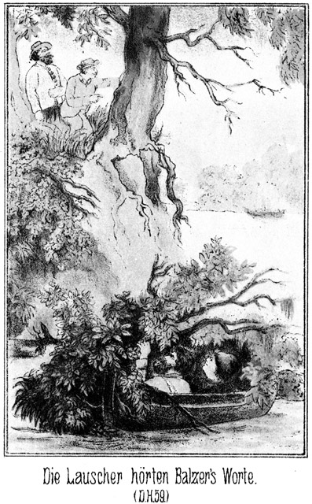Der Fuß gehörte dem Steuermanne des Letzteren. Es war jetzt der Augenblick, an welchem er mit Balzer unter den Bäumen stand und sich über die Yacht lustig machte. Die Lauscher hörten ganz deutlich Balzers Worte:
»So ist es ein Glück, daß sie drüben fahren und nicht hier auf unserer Seite!«
Die Antwort des Steuermannes war unverständlich. Deutlich wurden erst seine letzten Worte:
»Prosit die Mahlzeit! Sie mögen suchen, aber finden werden sie nichts!«
»Hat ihm aber schon!« lachte Sam leise vor sich hin. »Oh Ihr Esels Ihr! Schreien da in die Luft hinaus, daß man es in New-York hören kann. Uns halten sie für dumm, und sind doch selbst die allergrößten Dummköpfe, welche ich jemals gefunden habe.«
»Sie beachten unsern schwimmenden Haufen gar nicht,« meinte Steinbach befriedigt. »Sie sind uns so gut wie sicher. Jetzt schneller, schneller!«
Der Apache gehorchte. Er begann, zu schwimmen, und so bewegte sich das Boot rascher vorwärts. Dabei flüsterte er den beiden Weißen zu:
»Die Bleichgesichter haben keine Augen zum Sehen und kein Hirn zum Denken. Sie müßten sonst auf uns aufmerksam werden.«
»Ja,« nickte Sam. »So eine Insel schwimmt doch nicht immer grad und stracks weiter, sondern sie dreht sich sehr oft um ihre eigene Achse. Daß wir das nicht thun, müßte den Kerls eigentlich auffallen. Wollen das Zeichen geben.«
Steinbach hielt das weiße Leder an der linken Seite des Bootes hinaus und schwenkte es. Vom rechten Ufer aus konnte es nicht gesehen werden, vom Dampfer aus aber hatte man es bemerkt, denn er hielt sofort etwas mehr vom Ufer ab, ließ sich aber immer noch abwärts treiben, um nicht den Insassen des Segelbootes seine Absicht merken zu lassen. Erst nach einer Weile, als er den Letzteren aus den Augen war, steuerte er dem rechten Ufer zu.
Bereits vorher hatte der Apache das Boot an das Ufer getrieben und an dasselbe befestigt. Er stieg an das Land, und Sam und Steinbach folgten ihm.
»Was nun zunächst?« fragte der Dicke.
»Recognosciren.«
»Richtig! Aber wer?«
Der Apache sagte:
»Wir suchen Bleichgesichter. Also mögen meine beiden weißen Brüder gehen. Die ›starke Hand‹ wird hier bleiben, um die Jacht zu empfangen.«
In Folge dessen schlichen Steinbach und Sam, die natürlich ihre Waffen zu sich genommen hatten, unter den dichten, niedrigen Zweigen vorwärts, nothgedrungen auf allen Vieren kriechend. Sie erreichten glücklich das Bayou und erblickten das Segelboot.
»Guten Tag, meine Herren!« kicherte Sam in sich hinein. »Ihr bekommt ungeladene Kirmeßgäste!«
Die wenigen Bootsleute lagen auf dem Verdecke. Sonst war nichts zu sehen. Vom Flußufer her hörte man die unterdrückten Stimmen Balzers und des Steuermannes.
Die Lauscher lagen so nahe an dem Fahrzeuge, daß sie dasselbe mit einem Sprunge zu erreichen vermochten. Sam flüsterte:
»Von Wilkins und den Andern keine Spur!«
»Werden sich im Raume befinden.«
»Etwa gefesselt?«
»Wahrscheinlich.«
»Dann soll der Teufel diese Kerls reiten! Aber wo sind Walker und Consorten?«
»Schlafen vielleicht in der Cajüte.«
»Schön! Sam Barth wird ihnen im Traume erscheinen. Dick genug bin ich, um sie als Alp zu drücken, bis ihnen das Leben aus dem Leibe fährt.«
»Warten wir. Vielleicht hören wir einige Worte. Die beiden Kerls, die da vorn mit einander sprechen, müssen doch auch einmal wieder an Bord kommen.«
Er hatte richtig vermuthet. Sie kamen bereits nach kurzer Zeit.
»Wer ist der Kerl?« fragte Sam, auf Balzer deutend.
»Weiß es nicht. Zu Walkers Bande gehört er nicht.«
»Vielleicht der Besitzer des Segelbootes, dieser liebenswürdige Master – wie hieß er doch nur gleich – Balzer, glaube ich.«
»Er kann es sein. Der Andere ist ein Bootsmann, das sieht man ihm sofort an. Horch!«
»Vorüber! Sie sind vorüber!« rief der Steuermann seinen Leuten zu. »Sie waren klug genug, einzusehen, daß sie uns überholt haben, uns aber zu finden, sind sie zu dumm. Sie suchen uns drüben auf der andern Seite.«
»Verdammter Kerl!« meinte Sam. »Ich werde Dich nachher ein Wenig mit der Faust zwischen den Rippen oder unter der Nase kitzeln, bis Du erkennst, wer eigentlich der Dumme ist.«
»Pst!« erklang es hinter ihnen.
Sie drehten sich um und sahen die Gefährten von der Yacht, welche mit dem Apachenhäuptling sich herbei geschlichen hatten.
»Schön!« sagte Steinbach leise. »Wir überrumpeln sie so, daß sie gar nicht an Gegenwehr denken können. Aber kein Blutvergießen. Wir sind Mann genug, sie mit den Fäusten zu zwingen.«
Er hatte Recht, denn auch die Bemannung der Dacht war mitgekommen, sogar der Steuermann Smith. Er lag neben dem Lord an der Erde und flüsterte diesem zu:
»Endlich, Mylord, giebt es einmal Arbeit für diese da! Habe mich lange gesehnt.«
Dabei betrachtete er seine beiden Riesenfäuste.
»Ja, nur fest zugreifen!«
»Natürlich! So wie damals, als wir den famosen Ibrahim Pascha in Stambul besuchten und ich mit seinem Verschnittenen Ball spielte.«
»Still!« gebot Steinbach.
Auf dem Boote wurde laut gesprochen. Balzer sagte:
»Es ist sehr möglich, daß sie nachher, wieder aufwärts kommend, auch dieses Ufer absuchen.«
»Wird ihnen nichts nützen,« antwortete der Steuermann. »Kein Mensch findet dieses Versteck.«
»Hm! Es soll ein Kerl bei ihnen sein, Namens Steinbach, den sie den Fürsten der Bleichgesichter nennen.«
»Meinetwegen den Herzog der Schwarzgesichter.«
»Oh, er ist der berühmteste der Jäger. Ich hörte, daß die Gefangenen gesagt hatten, er werde uns nachfolgen und das Segelboot sicher finden.
»Er mag nur kommen! Ich werde ihn empfangen!«
»Ist schon da!« erschallte es.
Steinbach schnellte sich vom Ufer aus grad vor ihn hin und schlug ihn mit der Faust nieder. Im nächsten Augenblicke hatte er Balzer gepackt.
Die Bootsleute waren so erschrocken, daß sie, grad wie Balzer und der Steuermann, gefesselt am Boden lagen, ehe sie nur an Gegenwehr gedacht hatten.
Steinbach eilte nach der Cajüte und riß die Thür derselben auf. Dort lag Miranda leichenblaß in einem Stuhle. Sie hatte sich hier zurückgezogen gehabt und, die Bootsleute durch das Cajütenfenster beobachtend, den Ueberfall gesehen. Steinbach stand vor ihr, ehe sie nur Zeit gehabt hatte, sich von ihrem Sitze zu erheben.
»Ah, Donna Miranda!« sagte er. »Erlaubt, daß ich Euch begrüße! Ihr wart so schnell von Prescott fort und ich hatte Euch noch so viel zu sagen, daß ich beschloß. Euch nachzureisen. Wie es scheint, finde ich Euch nicht so wohl wie früher. Was fehlt Euch?«
»Mein Gott, mein Gott!« hauchte sie.
»Herzbeklemmung?«
»Ja.«
Sie hielt beide Hände auf die Herzgegend.
»Das ist sonderbar. Ihr habt sonst doch ein so weites Herz, daß von einer Beklemmung eigentlich keine Rede sein kann. Aber bitte, sagt mir gütigst, wo sich Sennor Walker befindet!«
»Fort!«
»Schwerlich. Sennor Wilkins?«
»Auch fort.«
»Das macht Ihr mir nicht weiß! Wo sind Eure Spießgesellen und wo befinden sich Eure Gefangenen?«
»Sie sind fort. Alle fort.«
Ihre Augen waren vor Angst stier auf ihn gerichtet. Ihr Gesicht hatte eine graugrüne Färbung angenommen.
»Ich verstehe! Ihr wollt mich überraschen, indem Ihr Diejenigen, von denen Ihr behauptet, daß sie fort seien, mir nachher unverhofft zeigt.«
»Nein, Sennor, sie sind fort.«
»Wirklich?«
Steinbachs Gesicht, bisher ironisch freundlich, nahm jetzt rasch einen sehr ernsten Ausdruck an.
»Seit wann?«
»Seit zwei Stunden ungefähr.«
»Wohin?«
»Mit den Papago's.«
»Ah! Gab es hier Papago's?«
»Wir trafen zufällig auf sie.«
»Hört, Sennorita, ich wünsche Euch nichts Böses, aber wehe Euch, wenn ich Ursache finde, mit Euch eine ernste Rechnung zu machen!«
Er verließ die Cajüte und stieg in den Raum hinab. Es befand sich kein Mensch mehr in demselben.
»Sie sind fort!« beantwortete er, als er auf das Deck zurückkehrte, die fragend auf ihn gerichteten Blicke seiner Gefährten.
»Fort?« rief Günther von Langendorf. »Auch Magda?«
»Ja. Die Papago's sind hier gewesen.«
»Herr mein Gott! Also wieder Gefangene unter den Indianern! Wir müssen nach, sofort, sofort! Vorher aber werden wir diese Schurken hier lynchen!«
Alle, Alle waren enttäuscht und geriethen darüber in Grimm. Der Eine rieth, man solle die Bootsleute aufhängen; ein Anderer wollte, daß Miranda todtgeprügelt werde. Ein dritter meinte gar, man solle Alle an Bord festbinden und das Segelboot dann anzünden. Steinbach und der Apachenhäuptling waren die Einzigen, welche ihre Ruhe bewahrten, wenigstens äußerlich.
»Gemach, Gemach!« sagte der Erstere. »Wir dürfen weder voreilig noch ungerecht handeln. Zunächst mag der Häuptling der Apachen das Boot verlassen und an das Land gehen, um seine Krieger zu erwarten. Und sodann werden wir uns bei diesen Leuten hier nach dem, was geschehen ist, erkundigen. Dann erst werden wir wissen, was zu thun ist.«
Der Häuptling ging schweigend fort. Die Andern stimmten Steinbach bei:
»Ja, ins Verhör mit ihnen, ins Verhör! Heraus mit dem Frauenzimmer!«
Miranda wurde aus der Cajüte geholt. Günther trat an sie heran und raunte ihr voller Grimm zu:
»Wenn Ihr Schuld tragt, daß die Damen wieder verschwunden sind, dann sei Euch Gott gnädig!«
Der Steuermann war von dem Schlage, welchen er von Steinbach erhalten hatte, wieder zu sich gekommen. Sam nickte ihm grinsend zu und sagte:
»Na, wie gefällt Euch das?«
Und auf des Andern finster fragenden Blick fuhr er fort:
»Ihr lachtet über die Yacht, daß sie Euch da drüben suchte. Dummkopf! Wir waren bereits da. Selbst der Fürst der Bleichgesichter solle Euch nicht finden, so meintet Ihr. Na, Ihr habt ja seine Faust gefühlt. Bedankt Euch bei ihm! Da steht er.«
Er deutete auf Steinbach. Dieser fragte die Sennorita Miranda, auf Balzer zeigend:
»Wer ist dieser Mann?«
»Der Besitzer des Bootes; die Andern sind der Steuermann und die Bootsleute. Weiter befindet sich Niemand hier.«
»Niemand? Ihr seid auch hier. Wer seid Ihr?«
Sie blickte ihn fragend an, denn sie verstand ihn nicht. Er fuhr deutlicher werdend, fort:
»Ihr seid doch wohl seine Geliebte?«
Sie erröthete. Balzer hatte den moralischen Muth, an ihrer Stelle zu antworten:
»Ja, sie ist meine Geliebte und wird bald meine Braut sein.«
»So richtet Euch darauf ein, die Verlobung im Zuchthause zu feiern.«
»Oho!«
»Ganz, wie Ihr denkt! Ich lasse einen Jeden seinen Glauben und behalte mir den meinigen. Dieser aber besteht in der Ueberzeugung, daß ich hier eine Anzahl von Schuften vor mir habe, mit denen Nachsicht zu haben, die größte Sünde ist.«
»Sennor, ich bin ein ehrlicher Mann!«
»Man hat es mir gesagt; aber ich glaube es nicht. Es würde Euch wohl auch sehr schwer werden, es mir zu beweisen.«
»Wenn ich einen Fehler begangen habe, so ist es wahrhaftig nicht in böser Absicht geschehen. Und diese Leute stehen in meinem Dienst; sie mußten mir gehorchen und sind also unschuldig, grad wie der Bootsmann Forner, welcher hier neben Euch steht.«
»Wollen es sehen. Aus besonderer Rücksicht will ich Euch losbinden lassen. Ich will Euch einstweilen als Leute behandeln, welche getäuscht worden sind. Dafür hoffe ich aber, daß ich von Euch Allen ein aufrichtiges Geständniß erhalte.«
»Ich werde die Wahrheit sagen.«
Sie wurden von ihren Banden befreit und durften sich setzen. Ihre Richter bildeten einen Kreis um sie. Unter diesen gab es wenige Gesichter, welche vermuthen ließen, daß sie bereit seien, die Angeklagten mit Schonung zu behandeln.
»Jetzt sprecht zunächst Ihr, Sennorita!« sagte Steinbach zu Miranda.
Sie erschrak. Ein Geständniß ablegen, vor diesen vielen Menschen? Unmöglich!«
»Erlaßt mir das, Sennor!« bat sie.
»Ich kann es Euch nicht erlassen.«
»Und ich kann nicht erzählen.«
»Pah! Mein Verhalten zu Euch wird sich ganz darnach richten, wie Ihr Euch zu uns verhaltet. Wenn Ihr Euch verstockt zeigt, so dürft Ihr auf keine Schonung rechnen.«
»Ja, Sennorita,« fiel Sam ein. »Ihr konntet so sehr gut sprechen, als Ihr mich in Sennor Steinbachs Schlafstube aufsuchtet. Wißt Ihr noch! Da wurde ich von Walker erschossen. Warum wollt Ihr jetzt nicht sprechen können? Könnt Ihr vielleicht nur reden, wenn Ihr irgend Jemandem eine Liebeserklärung macht. Seht Euch hier den Mast an! Wir richten ihn auf und hängen Euch an die äußerste Spitze, wenn Ihr Euch weigert, zu erzählen.«
»Laßt sie in Ruhe, Sennores!« bat Balzer. »Ich will an ihrer Stelle sprechen.«
»Das könnt Ihr nicht,« antwortete Steinbach.
»Ihr wißt nicht, was sie weiß. Aber um es ihr leichter zu machen, soll sie nicht erzählen, sondern ich will sie fragen. Legt ein aufrichtiges Geständniß ab, Sennorita; das ist das einzige Mittel, Schonung zu erlangen!«
Da faltete sie bittend die Hände und sagte:
»Nicht hier, nicht hier. Euch allein will ich Alles, Alles sagen, Sennor Steinbach!«
Ihre Augen waren so herzlich flehend auf sie gerichtet und schweiften von da mit einem schnellen Blicke auf Balzer hinüber. Steinbach verstand sie.
»Gut!« antwortete er. »Ich will Euch Euren Wunsch erfüllen. Vielleicht irre ich mich in Euch und Ihr seid nicht so schuldig, wie ich denke. Kommt herein in die Cajüte, Sennorita!«
Sie folgte ihm. Dort angekommen, sank sie vor ihm in die Kniee, ergriff seine Hand, küßte sie und sagte:
»Sennor, ich danke Euch! Lieber wäre ich gestorben, als daß ich vor diesen Leuten gesprochen hätte, vor so vielen Männern und vor – – –^
Sie stockte.
»Vor Balzer?« fragte er.
»Ja, vor Sennor Balzer.«
»Ihr liebt ihn?«
»Ja.«
»Und er Euch?«
»Ich hoffe es.«
»Sennorita, Ihr werdet auch ihn betrügen!«
»Nein, nein, und tausendmal nein!«
»Eure Liebe ist ein vorübergehender Rausch. Sie wird bald vorüber gehen.«
»Dieses Mal wird sie bestehen; ich weiß es; ich fühle es deutlich.«
»Ihr täuscht nicht nur ihn sondern auch Euch. Dieser Walker hat sich Eurer Schönheit nur bedient, um Andere für seine ruchlosen Zwecke zu gewinnen. Ihr habt auch Balzer verführt!«
»Das habe ich ihm gestanden.«
»Was sagte er dazu?«
»Dann besitzt er nicht nur ein edles Herz, sondern er liebt Euch aufrichtig.«
»Ich wünsche, daß Ihr Recht habt. Ihr verurtheilt mich und müßt mich verurtheilen, nach Allem, was Ihr von mir gesehen und erfahren habt. Aber beurtheilt mich nicht zu streng. Von Jugend auf ohne Aufsicht gelassen, ist mir die Erziehung des Elternhauses nicht das gewesen, was sie dem Kinde, besonders der Tochter, sein soll, eine Führerin auf dem Wege der Tugend. Ich fand nur charakterlose Menschen, deren Zweck war, das Leben zu genießen. Die einzige Person, welche mir eine moralische Stütze hätte bieten können, vermochte das nicht. Ich meine meine Verwandte, Sennorita Emeria in Prescott, welche Ihr ja kennt. Ihre Schrullen hinderten sie, mir eine Mutter zu sein. Ich stieg immer weiter bergab, ohne es zu bemerken. Ich verführte durch die Gaben, welche mir die Natur verliehen hat, aber im Grunde genommen war ich selbst die Verführte. Auch Walker hielt ich erst für einen ehrlichen Mann. Ich täuschte mich; aber als ich zu dieser Kenntniß kam, war ich bereits Mitwisserin mehrerer seiner Geheimnisse, und er gab mich in Folge dessen nicht wieder frei. Jetzt habe ich Balzer kennen gelernt. Seine Hand kann mich vielleicht wieder emporheben; darum möchte ich nicht vor ihm als eine so tief Gefallene erscheinen. Ihr habt meine Zukunft in der Hand. Erbarmt Euch meiner, Sennor Steinbach!«
Die Thränen liefen ihr über die Wangen herab.
»Ich bedaure Euch aufrichtig, Sennorita. Ich mag keinem Gefallenen, der sich erheben will, meine Hand verweigern; ich biete sie auch Euch – – –«
»Sennor!« unterbrach sie ihn jubelnd.
»Freilich kann ich Euch nicht verschweigen, daß ich nicht an Eure Besserung glaube. Ihr habt vielleicht den Willen dazu; aber sie ist unendlich schwer. Der festeste Vorsatz kann vom leisesten Hauche umgeworfen werden, wenn dieser Hauch aus der rechten Richtung weht. Dennoch verweigere ich Euch meine Hilfe nicht. Ich will nicht haben, daß Ihr später vielleicht sagt: »Ich wäre keine Verlorene, ich hätte mich retten können, wenn Steinbach damals nicht so hart und unerbittlich gewesen wäre.« Ihr habt Alles, was dazu gehört, glücklich zu sein und glücklich zu machen, herrliche Gaben des Geistes und des Körpers. Wendet diese Gaben in Zukunft dazu an, wozu sie Gott Euch verliehen hat, dann werdet Ihr die jetzige Stunde segnen, in welcher ich Euch hier diese meine Hand zur Hilfe biete.«
Sie hielt den Kopf gesenkt und weinte, weinte bitterlich. Es war ihr anzusehen, daß sie es, wenigstens in diesem Augenblicke, aufrichtig meinte.
»Sennor, Ihr seid mein Engel, welcher mich vom Rande des Abgrundes zurückreißt,« schluchzte sie.
»Als Mitwisserin von Walkers Thaten bin ich vor Gericht strafbar. Wenn Ihr mich aus dieser Noth, aus dieser Angst errettet, so werde ich stets an Euch als einen Mann denken, welcher mein Erlöser war.«
»Ich weiß noch nicht, wie schwer Eure Schuld ist. Erzählt mir Alles, und zwar aufrichtig. Ist es mir dann möglich, so will ich das Meinige thun, Euch vor den Folgen des Geschehenen zu bewahren. Bereits jetzt will ich Euch als Trost und Ermunterung mittheilen, daß ich, was meine Person betrifft, nicht mehr die Absicht hege, als Euer Ankläger vor Gericht aufzutreten.«
»Ich danke Euch, Sennor! Euer Versprechen erleichtert mein Herz und giebt mir den Muth und die Kraft, Euch Alles, Alles zu sagen, selbst auf die Gefahr hin, daß Walker sich blutig an mir rächt.«
»Das wird er nicht thun.«
»Er thut es, sobald er erfährt, daß ich es bin, welcher geplaudert hat.«
»Er wird es niemals erfahren, und sollte es ja nicht zu vermeiden sein, daß er es erfährt, dann hört er es ganz sicher erst kurz vor seinem letzten Augenblicke. Das verspreche ich Euch mit meinem Worte.«
»So will ich meine Beichte beginnen.«
»Ja. Setzen wir uns. Habt keine Scheu vor mir, Sennorita. Ich meine es gut mit Euch, und Ihr werdet empfinden, welch ein glückliches Gefühl es ist, wenn man durch ein offenes Geständniß eine Schuld von der Seele gewälzt hat. Es ist wie die Erlösung aus dem Fegefeuer. Beginnen wir. Wie seid Ihr mit Walker bekannt geworden?«
Sie theilte es ihm mit. Sie beantwortete alle, alle seine Fragen. Es dauerte lange, ehe ihre Unterredung zu Ende war. Dann als sie Beide aus der Cajüte traten, sah Steinbach sehr ernst und gerührt aus. Donna Miranda's Augen waren zwar noch von Thränen geröthet; aber auf ihrem Gesichte lag ein frohes, zuversichtliches Lächeln, und ihr Auge blickte fast heiter und schelmisch zu Balzer hinüber, welcher mit Schmerzen auf ihr Wiedererscheinen gewartet hatte und sie mit besorgten Augen anblickte.
Natürlich waren auch die Augen aller anderen Personen auf die Beiden gerichtet. Steinbach nickte beruhigend zu und sagte:
»Sennores, ich weiß, was ich wissen wollte. Diese Dame hat einen gottlosen Menschen kennen gelernt und einige Zeit mit ihm verkehrt, zu dem löblichen Zweck, ihm seine nichtswürdigen Geheimnisse abzulauschen. Das ist ihr gelungen, und nun hat sie mir Alles mitgetheilt. Ich hielt sie für mitschuldig, habe mich da aber geirrt. Auch Sennor Balzer und alle seine Leute sind unschuldig. Sie mögen ungehindert nach Mohawk-Station zurückkehren.«
In Folge dieser mehr als menschenfreundlichen Ehrenrettung hing Miranda's Auge mit einem unendlich dankbaren Blicke an Steinbachs männlich schönen, ernsten Zügen. Die Jäger aber fühlten sich sehr enttäuscht.
»Verdammt!« brummte Sam Barch. »Wollte ich doch diesen Steuermann mit der Faust zwischen die Rippen oder unter der Nase kitzeln. Nun soll nichts daraus werden. Jammerschade!«
Und Günther von Langendorf trat an Steinbach heran und fragte in unwilligem Tone:
»Hoffentlich handelst Du nicht voreilig?«
»Hast Du mich vielleicht als einen Menschen kennen gelernt, welcher zur Voreiligkeit geneigt ist?« fragte Steinbach.
»Nein; sagen wir also weichherzig anstatt voreilig.«
»Auch das ist nicht der Fall. Auch der strengste Richter kann unter Umständen ein mildes Urtheil fällen, ohne gradezu weichherzig, das heißt doch, schwachherzig zu sein.«
»Wo ist Magda?«
»Nach dem Thale des Todes.«
»Mit den Papago's?«
»Ja.«
»Jedenfalls durch Schuld dieser Menschen. Und Du verzeihst ihnen?«
»Ich verzeihe ihnen, weil sie diese Verzeihung verdienen und weil ein strenges Gericht, wenn wir es statuiren wollten, nichts an der Sache zu ändern vermag. Das ist es, was Du bedenken mußt.«
»Du handelst schwach gegen diese Menschen, aber rücksichtslos gegen Deinen Freund, gegen mich!«
Steinbach ließ sich auch durch diese Worte nicht zum Zorn hinreißen. In mildem Tone antwortete er:
»Ich sage Dir nur das Eine: Ohne mich hättest Du Magda's Spur nie gefunden, und – – –«
»O, sage das nicht. Zimmermann kannte Magda bereits. Er hatte sie entdeckt und hätte mich über ihren Aufenthalt unterrichtet.«
»Er hätte das nicht gethan, denn heut wäre er schon längst ein todter Mann. Hätte er mich nicht da eben am Rio Gala getroffen, als ich mit Sam Barth die Maricopa's belauschte, so wäre er ihnen direct in die Arme geritten oder vielmehr geschwommen, und Du suchtest noch heute vergeblich nach der Verlorenen. Du hast mich aber unterbrochen. Ich wollte sagen: Ohne mich hättest Du Magda's Spur nie gefunden, und ohne mich wird es Dir auch jetzt unmöglich sein, die Geliebte zu retten.«
Das klang nicht stolz, aber eindringlich und wie eine herzliche Ermahnung. Günther fühlte dies. Er gestand dies und bat:
»Du kannst Recht haben. Ich ließ mich von meiner Liebe zu Magda und von meiner Sorge um sie fortreißen. Ich nehme mein Wort zurück.«
»So ist es recht, lieber Günther! Gott wird es wollen, daß wir zum glücklichen Ziele gelangen.«
In diesem Augenblicke kam der Häuptling der Apachen herbei, trat zu Steinbach und meldete:
»Die Krieger der Apachen und Maricopa's sind hier. Was sollen sie thun?«
»Sie werden in wenigen Augenblicken nach dem Thale des Todes aufbrechen.«
»Die ›starke Hand‹ hat bereits dreißig seiner Krieger vorangesandt, um die Papago's und deren Gefangene zu verfolgen.«
Er sagte das so ruhig, als ob es nicht ein ungeheuerer Scharfblick von ihm gewesen sei, diese vortreffliche Veranstaltung zu treffen.
»Warum?« fragte Steinbach lächelnd.
Er wußte Alles, wollte aber den Gefährten abermals zeigen, welch ein ausgezeichneter Krieger und Gefährte die ›starke Hand‹ sei.
»Die Hunde der Papago's sind hier gewesen und haben die Gefangenen dieses Bootes und Alle, die wir ergreifen wollten, mitgenommen nach dem Thale des Todes. Die ›starke Hand‹ hat die Spuren gesehen und gelesen. Es sind drei mal zehn mal zehn Papago's. Sie werden sterben unter den Tomahawks der Apachen und Maricopa's.«
»Ja. Sie wissen, daß sie verfolgt werden, und wollen uns im Todesthale empfangen. Es soll ihnen sehr versalzen werden. Wie steht es, Sennor Balzer, wann fahrt Ihr ab?«
»Sobald Ihr es erlaubt.«
»Ihr seid ja frei. Werdet Ihr Sennorita Miranda mitnehmen?«
»Mit größter Freude.«
»So will ich sie Euch übergeben. Falls ich von dem Thale des Todes zurückkehre, werde ich in Mohawk-Station absteigen, um Euch zu besuchen. Ich hoffe, daß ich Euch dann froh und glücklich finde!«
Er schüttelte ihm die Hand. Sam trat zu dem Steuermann und raunte ihm ins Ohr:
»Und ich komme dann mit. Wir werden da so eine kleine Bootsfahrt zu Zweien machen, um zu untersuchen, welcher von uns Beiden der Esel und welcher der Ochse ist. Wenn Ihr wieder einmal nach Sam Barth sucht, so steckt die Nase nicht in die Lust sondern in das Wasser, wo allerlei nützliche Gräser und Kräuter schwimmen! Verstanden!«
Er versetzte ihm einen Puff in die Seite, welcher mehr kräftig als liebevoll war, und trat dann zu Steinbach, um welchen sich die Gefährten geschaart hatten wie die Generale um den Oberfeldherrn. Dieser erklärte kurz:
»Es giebt keine Zeit, Euch mitzutheilen, was ich erfahren habe, Sennores. Wir dürfen den Papago's keinen großen Vorsprung lassen, damit sie die Zeit nicht benutzen können. Darum müssen wir augenblicklich aufbrechen. Ich selbst werde mit meinem Freunde Günther nach Yuma gehen, um per Bahn das Todesthal zu erreichen. Ich komme dort eher an als Roulin mit seinen Leuten, und werde das Meinige thun, uns zum endlichen Siege zu verhelfen. Ihr greift die Feinde nicht eher an, als bis ich wieder zu Euch gestoßen bin. Ihr habt nichts zu thun, als sie nur stets zu drängen, damit sie keine Ruhe finden.«
»Und ich?« fragte der Lord. »Ich und mein Vetter?«
»Thut, was Euch beliebt.«
»Heißt das etwa: Packt Euch fort! Oder heißt es wohl gar: Scheert Euch zum Teufel!«
»Keins von Beiden, Mylord.«
»Schön! Ich reite also mit nach dem Todesthale, mein Vetter natürlich auch.«
»Aber Pferde?«
»Pah! Die Apachen hatten Packpferde bei sich. Ich kaufe ihnen zwei davon ab.«
»Und Euer Schiff?«
»Das übergebe ich dem Steuermann. Er mag es durch den Colorado in den Meerbusen und dann nach San Franzisko bringen. Er weiß, wo er mich dort zu erwarten hat.«
»Das ist mir sehr lieb. Ich kann da mit der Yacht nach Yuma gehen und komme noch zur rechten Zeit, um den nächsten Zug benutzen zu können.«
»Giebt es nach dem Todesthale hin Bären?«
»Zuweilen.«
»Und Büffel?«
»Vereinzelt.«
»Ausgezeichnet! Solche vereinzelte Thiers sind mir lieber als eine ganze Heerde von tausend Stück.«
»Bären?«
»Nein, Büffel! Sieht man nur einen, so weiß man, wohin man zu schießen hat. Kommt aber eine ganze Heerde, so wählt und quält man sich so lange, bis die Thiere vorüber sind und man gar nicht zum Schusse gekommen ist.«
»Ihr kennt das wohl?«
»Nein, aber ich denke es mir. Der hauptsächlichste Grund, mit nach dem Todesthale zu gehen, liegt natürlich in dem Wunsche, die armen Gefangenen mit befreien zu helfen. Ich werde, wenn wir die Papago's erwischen, dreinschlagen, daß die Fetzen fliegen. Jetzt aber muß ich nach dem Schiffe, um mich auf den Ritt vorzubereiten.«
Es wurden nun nicht viele Worte gemacht. Steinbachs Weisung war klar gewesen. Nach Verlauf einer halben Stunde dampfte er mit Günther mach Yuma, und zu gleicher Zeit ritten die Apachen und Maricopa's mit ihren weißen Begleitern ab, den Ebenen zu, welche sich an den Ausläufern der Sierra Nevada entlang zwischen Californien und Nevada hinstrecken.
Balzer war der Letzte, welcher mit seinem Segelboote das Bayou verließ. Als das Boot den Colorado mit geschwelltem Segel hinabglitt und seine Leute sich an ihren Posten befanden, saß er mit Donna Miranda eng verschlungen in der Cajüte.
»Fast hätte ich an Dir gezweifelt,« sagte er. »Du mußtest Vorwürfe anhören, welche mir um so tiefer in das Herz schnitten, als Du sie nicht bekämpfen zu können schienst.«
»Vor so vielen Menschen wollte ich nicht sprechen.«
»Das war stolz und edel.«
»Aber Sennor Steinbach hat meine Verteidigung gehört. Er war der Einzige, dem ich mich anvertrauen wollte und auch konnte.«
»Ja, ein außerordentlicher Mann! Er hat auch auf mich einen mächtigen Eindruck gemacht. Glücklicher Weise hat er Dich vollständig gerechtfertigt, und ich bin ganz glücklich, Dich nun bei mir haben zu können.«
»Wer das glauben könnte!«
»Zweifelst Du?«
»Ihr Männer seid unbeständig.«
»Vielleicht, dann aber nur, bis die Richtige kommt.«
»Und wäre ich vielleicht die Richtige?«
»Ja, die bist Du. Ich will aufrichtig sein und Dir gestehen, daß ich bisher für einen Damenherrn gegolten habe. Es ist freilich nicht so schlimm, wie Manche es machen. Ich habe eben Keine gefunden, welche es verstanden hätte, mich zu fesseln. Aber gleich als ich Dich gestern sah, sagte ich mir: Die mußt Du haben oder Keine!«
»Sage: Die oder Zehne!«
»Nein; glaube mir. Du gehst mit nach Mohawk-Station, wo ich für Dich sorgen werde. Du sollst mich da beobachten und wirst die Erfahrung machen, daß ich nur für Dich leben werde.«
»Und ich für Dich!«
»Immer?«
»Ja, immer. Glaube es mir!«
»Ich will es glauben um meinet- und auch um Deinetwillen. Das heutige Abenteuer soll das letzte sein, auf welches ich so leichten Sinnes eingegangen bin. Von heut an will ich nach einem soliden, ehelichen Glücke trachten, und ich bin überzeugt, daß ich es an Deiner Seite finden werde.«
Einander innig umschlingend, versanken sie nun in ein Schweigen, welches dann und wann von dem leisen Laute eines Kusses unterbrochen wurde.
– – – – – – – – – –
Beide, sowohl Steinbach als Günther von Langendorff hatten ihre Pferde auf der Yacht mit nach Yuma genommen. Als sie sich dort von dem Steuermanne verabschiedet hatten, fanden sie, daß ihnen bis zum Abgange eine ganze Stunde Zeit blieb.
Dies war Steinbach sehr lieb. Der Rolle gemäß, welche er im Todesthale spielen wollte, wünschte er, seinen Trapperanzug mit einem andern zu verwechseln. Glücklicher und ganz unerwarteter Weise fand er in einem Laden ein reich gesticktes mexikanisches Habit, gerade wie für seine mächtige Gestalt gemacht, und sodann einen zweiten Anzug, welcher für Günther paßte.
Beide kleideten sich um, packten ihre alten Anzüge in Taschen, welche sie kauften, und ritten dann nach dem Bahnhofe. Kurze Zeit später ging der Zug ab, mit welchem sie über Dos Palmas, Los Angelos und Sumner nach Visalia gelangten.
Hier stiegen sie aus und erkundigten sich zunächst nach einem Hause, in welchem sie über Nacht bleiben konnten, denn der Nachmittag war beinahe vorüber.
Visalia war ein kleines, ödes Nest und bestand aus wenigen ganz niedrigen Häusern, deren weißer Kalkanstrich in der Hitze jenes Klimas das Auge schmerzte. Nackte Kinder wälzten sich im Staube. Zerlumpte Gestalten lehnten an den Mauern. Kein Brunnen, kein grünender Baum war zu sehen. Der Ort war ja die Eisenbahnpforte zu dem berüchtigten Thale des Todes.
Leben brachten nur die zahlreichen wilden Hunde, welche sich überall herumbissen, in die Staffage. Draußen, weit draußen gegen den Horizont zu, sah man auch einzelne Coyoten, das sind Prairiewölfe, über die graslose Ebene schleichen, vor Hunger zitternd. Diese Coyoten treibt der nagende Hunger gar nicht selten in das Weichbild bewohnter Ortschaften. Oder es wird so ein Thier vor Hunger, Durst und Hitze toll und kommt dann herbei, um schreckliches Unheil unter den Bewohnern anzurichten.
Die beiden Reisenden wurden in ein Haus gewiesen, mit welchem sie, den hiesigen Verhältnissen angemessen, ziemlich zufrieden sein konnten.
Es hatte einen umzäunten Corral für die Pferde, eine Stube für die Menschen, ein fensterloses Loch, welches Küche genannt wurde, einen Hof, in welchem sich eine Cysterne mit stinkendem Wasser befand, und daran einen Garten mit dem größten Stolze des ganzen Ortes: Es stand ein Kirschbaum da, fünf Fuß hoch, mit drei fingerdünnen Aesten, ganz ohne Blätter und dafür überall mit spitzen Dornen versehen.
Einen Wirth gab es nicht, sondern eine Wirthin, welche den beiden Gästen den verlangten Wein brachte. Etwas Anderes zu trinken, wäre ihnen vollständig unmöglich gewesen. War dieser Wein auch noch so raffinirt gefälscht und noch so oft getauft, so sah er doch hell aus, und es schwammen keine Thiere darinnen herum wie in dem Wasser der famosen Cysterne im Hofe.
Auf einem breiten Holzstuhle in der Ecke hockte zusammengekauert die Gestalt eines jungen Menschen, welcher still und bewegungslos vor sich hinstierte. Als die Wirthin die Blicke der beiden Gäste, welche auf ihr ruhten, bemerkte, sagte sie in stolzem Tone:
»Mein jüngerer Sohn, Sennores. Er hat die Gabe der Weissagung.«
»Was meint sie damit?« fragte Günther leise Steinbach.
»Er ist blöd- oder irrsinnig.«
»Aha, eine Uebertragung indianischer Anschauung!«
»Ja. Der Wahnsinnige gilt hier in diesen Gegenden beinahe als heilig. Er ist vom Geiste inspirirt, und allen seinen verworrenen Reden legt man einen tiefern Sinn unter. Siehst Du, mit welcher Liebe das Auge dieser Mutter an ihrem blödsinnigen Kinde hängt, welches gar keine Ahnung von dieser Liebe hat.«
Die Mutter merkte, daß sie von ihm sprachen.
»Er ruhet jetzt,« sagte sie. »Später, wenn der Geist wieder über ihn kommt, könnt Ihr ihm Eure Fragen vorlegen, welche er Euch alle beantworten wird. Santa Madonna! Was ist das!«
Draußen im Orte erhob sich ein entsetzlicher Lärm. Laute Schritte laufender Menschen und angstvolle Rufe wurden hörbar. Es kam näher.
»Was mag geschehen sein!« sagte die Frau. »Vielleicht wieder ein Mal ein Mord. Ein Menschenleben gilt jetzt gar nichts mehr.«
Jetzt hörte man die Rufe deutlicher:
»Flieht, flieht! Macht die Thüren zu.«
»Heilige Mutter Gottes! Vielleicht gar wieder ein toller Wolf! Das wäre in diesem Sommer bereits der Dritte.«
Die beiden Männer traten an das zweite Fenster. Jetzt hörten sie ganz deutlich rufen.
»Der Coyote, der tolle Coyote! Schützt Euch! Macht die Thüren zu!«
»Wir können sicher sein,« meinte die Frau. »Meine Thüre ist fest zu. Wehe dem Beklagenswerthen, den der Zahn des Wüthenden trifft!«
Ein guter Prairiejäger ist stets Das, was er sein muß. Kaum hatte Steinbach von dem tollen Wolfe gehört, so langte er sein Beil aus der Scheide und schraubte die Büchse zusammen.
Von dem Fenster aus konnte man einen kleinen Platz überblicken, auf welchen zwei Wege von verschiedener Seite ausmündeten. Eben jetzt kam von der Seite rechts her ein Reiter angetrabt. Er schien das Schreien gehört, aber nicht verstanden zu haben, denn er ließ sein Pferd ganz sorglos im Schritte gehen und blickte neugierig dorthin, woher der Lärm ertönte.
Als die Wirthin ihn erblickte, rief sie ganz entsetzt aus:
»Hilf Himmel! Mein Sohn, mein Sohn!«
Und das kleine Fenster aufreißend, schrie sie, so laut sie konnte:
»Juanito, mein Sohn! Der tolle Wolf, der tolle Wolf! Schnell, schnell!«
Er schien es nicht genau verstanden zu haben, denn er hielt die Hand an das Ohr. Der Lärm von der Seite und das Schreien seiner Mutter machten, daß er Beides nicht verstand. Plötzlich aber begriff er es, auch ohne es verstanden zu haben. Von der Seite her, aus welcher die Rufe erschallten, kam ein großer, grauer Coyote gestürzt. Sein scheußlicher Anblick bewies sofort, daß er toll sei. Er schleifte den vor Schmutz starrenden, zottigen Schwanz an der Erde. Sein Fell war räudig, seine Augen lagen in tiefen Höhlen, seine Knochen und Rippen schienen das Fell durchbohrt zu haben, und die triefende Zunge hing ihm lang und weit aus der schäumenden Schnauze. Er rannte grad auf den Reiter zu.
»Juanito, flieh, flieh! Um Gottes und aller Heiligen willen!« schrie die Frau.
Er erblickte den fürchterlichen Feind, welcher ihn bedrohte, gab seinem Pferde die Sporen, daß es grad empor in die Lust ging, und zog den Revolver aus der an seinem Gürtel hängenden Pistolentasche. Vielleicht wäre der Wolf an ihm vorüber gesprungen, aber durch diese hastige Bewegung von Reiter und Pferd wurde das wüthende Thier auf die Beiden aufmerksam gemacht. Es hielt einen Augenblick inne, richtete die tückisch glühenden Augen auf den jungen Mann und setzte dann zum Sprunge an.
Er drückte los. Die Kugel traf nicht. Der Wolf schien vor dem Schusse zu erschrecken. Er sprang zur Seite, zog den Schwanz ein und stieß einen heiseren Ton aus. Heulen konnte er nicht, da die Krankheit ihm die Kehle zugeschnürt hatte. Diesen Augenblick benutzte der Reiter, noch zwei Schüsse abzugeben, der erste war wieder ein Fehlschuß, und der zweite streifte nur den Pelz des Thieres. Dieses schickte sich jetzt zum verderblichen Sprunge an, wurde aber daran verhindert.
Aus der Gasse, aus welcher der Wolf gekommen war, kamen zwei große Hunde gestürzt. Ihr Fell war zerzaust und zerbissen. Sie bluteten aus mehreren Wunden. Jedenfalls hatten sie bereits mit dem Wolfe gekämpft und den Kürzeren gegen ihn gezogen. Sie kamen gerade zum rechten Augenblick. Sie stürzten sich auf ihn, als er sich auf den Reiter werfen wollte.
Dieser Letztere benutzte diese Gelegenheit, feuerte noch einen Schuß, welcher aber leider auch nicht traf, auf den Wolf ab und lenkte sein Pferd im Galopp auf das Haus seiner Mutter zu, um sich in das Innere desselben zu retten.
»Schnell, schnell!« rief seine Mutter voller Angst zum offenen Fenster hinaus. »Herrgott! Der Wolf kommt! Mach schnell, schnell!«
Sie eilte hinaus, um die Thür zu öffnen. Sie hatte ganz recht gewarnt: Der Wolf kam hinter dem Reiter her. Er hatte dem einen Hunde das Bein zerbissen und mit einem zweiten Bisse in die Gurgel des andern auch diesen für den Augenblick kampfunfähig gemacht. Dann sprang er dem Reiter nach.
Dieser letztere Umstand war schuld, daß Steinbach nicht zum Schusse kommen konnte. Der Wolf befand sich hart hinter dem Pferde, dieses Letztere also zwischen ihm und dem Hause, so daß Steinbach gar nicht auf das wüthende Thier zielen konnte.
Die beiden Hunde hatten sich aufgerafft und setzten dem Wolfe wieder nach, der Eine freilich nur auf drei Beinen. Vor dem Hause parirte Juanito sein Pferd und warf sich herab. In demselben Augenblicke öffnete seine Mutter die Hausthür. Er sprang hinein und eilte sofort in die Stube, die Wirthin ihm nach. Beide vergaßen in ihrer Angst, die Thür zu schließen.
»Gerettet! Gott sei Dank!« rief Juanito.
»Ja, gerettet! Die heilige Jungfrau sei gebenedeiet! Wenn Du nicht – – Herr, mein Gott! Da ist er!«
Ihre Augen waren in diesem Augenblicke auf den Eingang gefallen, wo der Wolf erschien. Er erblickte den Reiter, welcher ihm entkommen war, und that einen hohen, weiten Sprung auf ihn.
Da krachte es, daß das ganze Haus zu zittern schien. Ein Blitz durch, zuckte die Stube, Pulverdampf erfüllte dieselbe. Juanito war, als er den Sprung des Thieres sah, zur Seite gewichen und dabei zu Boden gestürzt.
»O Himmel!« schrie er. »Hilfe, Hilfe!«
»Hat er Dich?« rief seine Mutter. »Hilfe, Hilfe!«
Von der Thür her antwortete ein lautes, zweistimmiges Heulen.
»Die Hunde!« schrie Günther von Langendorf. »Sie sind gebissen worden. Nehmt Euch vor ihnen in Acht!«
Da klang Steinbachs Stimme ruhig durch Lärm und Pulverdampf:
»Wird besorgt. Keine Angst!«
Zwei Schüsse krachten so schnell auf einander, als ob er sie zu gleicher Zeit abgefeuert habe. Ein brüllendes Hundegeheul, noch lauterer Jammer von Mutter und Sohn, dann frug Steinbach mit seiner mächtigen, durchdringenden Stimme:
»Wurde Jemand gebissen?«
»Ich nicht,« antwortete Juanito.
»Ich auch nicht,« fügte seine Mutter bei.
»So schreit doch auch nicht so, als ob Ihr scalpirt werden solltet.«
»Aber mein Söhnchen, mein Kleiner!« antwortete sie.
»Seht nach ihm!«
Sie eilte hin, untersuchte ihn und rief erfreut:
»Die Heiligen haben ihn beschützt. Ich werde noch heut dem Patron dieses Tages eine neue Kerze anzünden.«
»Ja, die Heiligen haben Wolf und Hunde erschossen,« meinte Günther ironisch.
»Erschossen?« fragte Juanito. »Ist der Wolf todt?«
»Natürlich! Sonst hätte er Euch ja zerfetzt. Seht her! Da liegt er.«
Der Pulverdampf begann, sich zu verziehen, und nun konnte man das Thier sehen. Es lag, mitten durch den Kopf getroffen, am Boden. Die Zunge hing ihm weit aus dem Rachen. Die Zähne schimmerten gelb aus dem blutigen Schaume. Ein penetranter Geruch ging von der scheußlichen Bestie aus.
»Todt! Wahrhaftig todt!« bestätigte die Frau, indem sie sich furchtsam zu dem Thiere niederbeugte.
»Und die Hunde auch,« fügte Juanito hinzu. »Das ist schade, jammerschade!«
»Warum schade?« fragte Steinbach.
»Weil es so prächtige Thiere sind und weil sie nicht uns oder Euch gehören. Ihr werdet den Besitzern ganz gewiß Schadenersatz leisten müssen, Sennor.«
»Das werde ich auf keinen Fall thun.«
»Man wird Euch zwingen. Es läßt sich Niemand einen so werthvollen Hund ungestraft niederschießen.«
»Auch nicht, wenn der Hund von einem tollen Wolfe gebissen worden ist und in das Zimmer fremder Leute eindringt?«
»Hm!«
»Diese Hunde waren gebissen worden. Hier sind die Wunden. Sie befanden sich in grimmigster Aufregung, in Wuth. Sie drangen hier ein. Es lag die Gefahr nahe, von ihnen gebissen zu werden. Ein Biß von ihnen aber war so gefährlich wie von dem Wolfe selbst. Ich schoß sie nieder, um Euch und uns Alle zu retten. Ihr seid mir Dank schuldig, anstatt mir Vorwürfe zu machen.«
»Das ist wahr,« sagte die Frau. »Ihr habt uns nicht nur das Leben gerettet, sondern Ihr habt uns Alle vor einem fürchterlichen Tode bewahrt, vor dem entsetzlichsten, den es nur geben kann. Wir vermögen gar nicht, Euch den Dank abzutragen, welchen wir Euch schuldig sind, Sennor. Das mußt Du doch wohl auch einsehen, Juanito.«
»Freilich,« gestand der junge Mann, indem er Steinbach die Hand entgegenstreckte. »Nehmt meinen Dank, Sennor! Kann ich Etwas für Euch thun, so bin ich mit Freuden bereit dazu. Ihr habt eine ausgezeichnete Geistesgegenwart und eine außerordentliche Schußfertigkeit an den Tag gelegt. Wie war es nur möglich, drei Schüsse abzugeben, ohne zu laden?«
»Meine Büchse ist ein Magazingewehr. Das ist die ganze Erklärung. Aber seht, welche Menschenmenge sich draußen angesammelt hat. Wollen wir die Leute hereinlassen? Ah, sie kommen schon!«
Erst vorsichtig, dann aber unverzagter traten die Leute in das Haus und in das Zimmer, welches sich bald so füllte, daß kein Einziger mehr Platz finden konnte. Als sie den Hergang erfuhren, wurde Steinbachs schnelles Handeln allseitig anerkannt und bewundert. Selbst die Eigenthümer der beiden Hunde, als sie sich eingefunden und die Bißwunden ihrer Thiers gesehen und untersucht hatten, gaben zu, daß sie kein Recht hatten, einen Schadenersatz zu fordern. Er hatte im Gegentheile vielleicht auch sie vor einem schlimmen Schicksale behütet.
Der Fall wurde noch des Längeren und Breiteren besprochen, und dann schaffte man die erlegten drei Thiere fort, um sie einzuscharren. Die Menge verzog sich nach und nach.
Nun war die Wirthin mit ihren beiden Söhnen und den zwei Gästen wieder allein.
Juanito hatte sich eine Schnapsflasche genommen und sich mit derselben an den Tisch gesetzt. Erst jetzt konnte Steinbach ihn genau betrachten. Er war noch nicht dreißig Jahre alt. Sein Gesicht hatte ein eigenthümliches, graugelbes Aussehen. Eins seiner Augen schielte. Dieser Umstand in Verbindung mit dem breiten, lippenlosen Munde und den sehr hervorstehenden Backenknochen wirkte abstoßend. Es war eine Physiognomie, zu welcher man nicht leicht Vertrauen fassen konnte.
Er hatte seinen Dank mit einem Händedrucke und den bereits erwähnten Worten abgetragen und verhielt sich übrigens kalt. Daß seine Mutter und sein Bruder sich in Gefahr befunden hatten, erwähnte er gar nicht. Er schien gar nicht daran zu denken. Jedenfalls war er ein herzloser Mensch, wenn nicht etwas noch Schlimmeres.
Er trank einige Gläser, welche er sich einschänkte, schnell hinter einander aus. Seine Mutter machte sich mit dem jüngeren, geistesschwachen Sohne zu schaffen und fragte dabei den Aelteren:
»Wie kommt es, daß Du heut herüber geritten bist, Juanito?«
»Ist Dein Herr noch nicht wieder da?«
»Nein.«
»Wann kehrt er zurück?«
»Weiß es nicht. Er hat mir Alles überlassen. Die ganze Sorge und Last ruht auf mir, und ich bekomme nichts dafür. Wenn das noch oft wiederkehrt, so werde ich ihm sagen müssen, daß ich es nicht dulde. Lieber gehe ich ab.«
»Wie? Du denkst doch nicht etwa daran. Deine Stellung zu verlassen!«
»Ich denke sehr wohl daran.«
»Du wirst niemals wieder einen so hohen Lohn erhalten. Das mußt Du berücksichtigen.«
»Ich werde aber auch nie wieder mich in solcher Gefahr befinden, mich zu vergiften.«
»Du, Dich vergiften? Du hast ja im eigentlichen Werke gar nichts zu thun.«
»O, ich muß doch überall sein, auch bei den Retorten. Siehe mich an! Meine Hautfarbe muß Dir doch sagen, daß ich Quecksilber einathme.«
»Das Wenige wird wohl nicht schaden!«
»Du verstehest das nicht, wovon Du sprichst. Ja, ich werde gut bezahlt. Ich hatte die Absicht, mir meinen Lohn zu sparen und dann ein eigenes Geschäft anzufangen. Aber über meine Kräfte mag ich nicht arbeiten, während der Herr faullenzt und wochenlange Spaziertouren macht.«
»Wohin ist er eigentlich?«
»Hinauf nach dem Silbersee.«
Waren Steinbach und Günther bereits aufmerksam geworden, als vom Quecksilber die Rede war, so steigerte sich diese Aufmerksamkeit jetzt bei Erwähnung des Silbersee's.
»Um Gottes willen!« sagte die Frau. »Was will er dort? Das ist doch im Gebiete der feindlichen Apachen.«
»Vor denen fürchtet er sich nicht. Er hat die Maricopa's mit. Er will da oben – na, das ist nichts für Dich und nichts für Andere.«
Er streifte dabei die beiden Fremden mit einem mißtrauischen Blicke.
»Vielleicht will er das Silber holen, welches da oben vergraben sein soll?« meinte die Alte.
»Hm! Weiß es nicht.«
»Er muß Dir doch gesagt haben, zu welchem Zwecke er ein so gefährliches Unternehmen ausführen will.«
»Natürlich hat er es mir gesagt. Ich bin sein Vertrauter. Ohne mich kann er ja überhaupt nichts machen. Aber was ich weiß, brauchen Andere doch nicht zu wissen.«
»So hast Du jetzt das ganze Werk, das ganze Geschäft allein zu führen?«
»Ganz allein. Darum sage ich ja, daß ich mich zu sehr anstrengen muß. Wenn man da nicht nebenbei so ein kleines Vergnügen – hm!«
Er streifte die beiden Gäste abermals mit einem vorsichtigen, mißtrauischen Blicke und fuhr fort:
»Und nicht einmal das hat man, ein kleines, kleines Vergnügen. Es ist ein Leben wie in der Hölle. Felsen, nichts als Felsen, Sonnengluth und Giftdunst. Der Teufel mag es holen. Aber lassen wir Das. Sprechen wir von etwas Anderem. Woher seid denn Ihr, Sennores?«
»Von jenseits der Grenze,« antwortete Steinbach.
»Also Mexikaner?«
»Ja.«
»Dachte es mir sogleich, als ich Eure Kleidung sah. Was aber treibt Euch hierher in dieses Nest?«
»Das Geschäft.«
»Das Geschäft? Ich verstehe Euch nicht. Hier in dem armseligen Loche sind doch keine Geschäfte zu machen.«
»Vielleicht doch.«
»Ich halte Euch für einen sehr wohlhabenden Haziendaro. Habe ich recht gerathen?«
»Ihr habt allerdings das Richtige getroffen.«
»Nun, so weiß ich nicht, was ein reicher Großgrundbesitzer hier für Geschäfte machen wollte.«
»Ich habe auf meinem Grund und Boden eine sehr gute Bonanza entdeckt.«
Unter Bonanza versteht der Mexikaner den Fundort edler Metalle.
»Alle Teufel!« fuhr Juanito empor. »Ist sie wirklich so gut?«
»Sehr ausgiebig.«
»Gold oder Silber?«
»Beides.«
»Das ist selten, sehr selten! Ich gratulire Euch, Sennor! In welcher Gegend ist es denn?«
»Drüben auf der Halbinsel, in der Nähe von Jacinto.«
»Dort! Habe mir doch stets gedacht, daß die Gegend von Jacinto gold- oder silberreich sein müsse. Da steht wohl diese Bonanza mit Eurer Reise im Zusammenhang?«
»Ja. Ich finde das Silber nämlich nicht in reinen Stufen, ich muß es aus dem Erze ziehen, und dazu ist, wie Ihr wohl wissen werdet – – –«
»Quecksilber nöthig,« fiel Juanito ein.
»Natürlich.«
»Ah, jetzt weiß ich, welches Geschäft Ihr machen wollt.«
»Nun, welches?«
»Ihr wollt Quecksilber kaufen?«
»Ja.«
»Wohl bei Sennor Roulin?«
»Ja. Warum rathet Ihr auf ihn?«
»Weil er hier der Einzige ist, bei dem man es bekommen kann.«
*
»Natürlich. Ich bin sein Angestellter. Ich bin Bergmeister in seinem Dienste.«
»Bergmeister? Ist das etwa so viel wie Obersteiger?«
»Noch mehr. Steiger haben wir gar nicht. Ich beaufsichtige Alles, das Fördern des Quecksilbers und auch die Reinigung desselben in den Retorten.«
»War er es, von dem Ihr vorhin spracht?«
»Ja.«
»So ist er nicht daheim, wie ich hörte?«
»Nein. Er ist verreist.«
»Und wann kommt er zurück?«
»Das weiß ich nicht. Er ist auf unbestimmte Zeit verreist. Er kann bereits heut wiederkommen, aber auch erst nach Wochen.«
»Das ist mir sehr unlieb. Ich kann nicht so lange warten.«
»Das ist auch nicht nöthig. Ich bin ja da.«
»Habt Ihr denn Vollmacht, Geschäfte abzuschließen?«
»Ja. Ich habe von ihm auch den Verkauf übernommen.«
»Sehr gut. Nicht wahr, die Werke liegen in dem sogenannten Thale des Todes?«
»Ja.«
»Wann kehrt Ihr dorthin zurück?«
»Noch heut.«
»So werden wir mit Euch reiten.«
»Das geht nicht, Sennor.«
»Warum nicht?«
»Roulin sieht es nicht gern, daß Fremde in das Thal kommen.«
»Das begreife ich nicht. Wer von ihm kaufen will, der muß doch zu ihm gehen?«
»Ist nicht nöthig. Wir haben einen Vorrath hier bei meiner Mutter liegen. Hierher kommen also Diejenigen, welche Quecksilber zu haben wünschen.«
»Das wußte ich nicht. Aber sonderbar kommt es mir doch vor, daß Niemand nach dem Thale des Todes kommen soll!«
»Warum sonderbar? Es hat doch Jedermann das Recht, sein Eigenthum betreten oder nicht betreten zu lassen.«
»Freilich. Ist das Thal des Todes groß?«
»Ziemlich.«
»Ich hörte doch, daß es nicht ausschließlich das Eigenthum von Sennor Roulin sei.«
»Das mag sein. Zunächst aber wohnt nur er ganz allein dort.«
»So kann er den Besuch desselben nicht verbiete«.«
»Er hat mir die stricte Weisung ertheilt, keinen Menschen dort zu dulden.«
»Sapperment! Welchen Grund hat er dazu?«
»Jedenfalls einen geschäftlichen.«
»Keinen andern?«
Juanito blitzte Steinbach mit hinterlistigen Augen an und fragte:
»Welchen andern meint Ihr etwa?«
»Nun, es kann ja verschiedene Gründe geben. Nehmen wir zum Beispiel an, er habe einen familiären Grund. Vielleicht hat er eine schöne Frau oder eine hübsche Tochter, die Niemand sehen soll. Er ist wohl eifersüchtig?«
»Dazu hat er keine Veranlassung. Er ist nicht verheirathet und hat auch keine Kinder. Uebrigens ist das unnütze Rederei. Ihr braucht nicht nach dem Todesthale zu kommen, denn Ihr findet hier bei meiner Mutter Alles, was Ihr braucht.«
»Hm! Wie viel habt Ihr hier liegen?«
»Einen vollen Centner.«
»Nicht mehr?«
»Braucht Ihr etwa mehr?«
»Das Vierfache.«
»Donnerwetter! Könnt Ihr denn so viel brauchen?«
»Ja, sonst würde ich es nicht kaufen.«
»Und könnt Ihr zahlen?«
»Ich borge nie.«
Die Augen Juanito's wurden größer. Er blickte Steinbach und Günther langsam vom Kopfe bis zu den Füßen an, als ob er ihre Körperkräfte messen wolle, und sagte dann:
»Ich denke nur, das Ihr Euch wohl verrechnet habt. Habt Ihr schon einmal Quecksilber gekauft?«
»Ja.«
»So kennt Ihr die Preise?«
»Sehr genau.«
»Und Ihr behauptet, so viel Geld mit zu haben, daß Ihr vier Centner bezahlen könnt?«
»Ja.«
»Donnerwetter! Welche Münze habt Ihr?«
»Gute Banknoten der Bank von England.«
»Das ist das beste Geld, welches es giebt.«
»Wie steht es? Wollt Ihr ein Geschäft mit mir machen oder nicht?«
»Allemal.«
»Aber die fehlenden drei Centner?«
»Werde ich Euch hierher schicken.«
Er blickte dabei Steinbach lauernd von der Seite an. In seinen Augen lagen für den Menschenkenner mit größter Deutlichkeit die Worte zu lesen:
»Gehe nicht mit darauf ein! Vorhin habe ich Dir verboten, das Thal des Todes zu besuchen, jetzt aber, da ich weiß, daß Du so viel Geld bei Dir hast, wünsche ich es sehr, daß Du mit mir kommst.«
Steinbach bemerkte das. Er ging auf diesen heimlichen Wunsch Juanito's ein, indem er antwortete:
»Meint Ihr etwa, ich soll die Katze im Sacke kaufen? Das bin ich nicht gewillt.«
»Mein Quecksilber ist rein.«
»Mag sein; aber untersuchen will ich es dennoch.«
»Ihr? Wie wollt Ihr das anfangen?«
»Das ist meine Sache. So viel Chemie, wie zur Untersuchung des Quecksilbers gehört, habe ich im Kopfe. Ich reite mit Euch.«
»Und wenn ich nicht mit darauf eingehe?«
»So wird aus unserm Handel nichts, und außerdem habe ich dann das Recht, zu denken, daß – – –«
Er hielt stockend inne, und zwar mit Absicht.
»Nun, daß – – –?« fragte Juanito.
»Daß es bei Euch im Todesthale irgend einen Punkt giebt, den Ihr verheimlichen müßt.«
»Pah! Wir stellen das Quecksilber in einer neuen Weise dar, von welcher wir Niemandem Etwas merken lassen wollen. Wir wollen unsere neue Erfindung für uns behalten. Das ist das ganze Geheimniß, Sennor.«
»Ihr braucht es mir ja nicht zu zeigen!«
»Hm! Es scheint Euch sehr viel daran zu liegen, das Thal des Todes zu sehen!«
»Zunächst liegt mir daran, das Quecksilber zu untersuchen. Sodann aber will ich aufrichtig sein und Euch gestehen, daß ich allerdings einigermaßen neugierig bin. Der Ort hat einen so eigenartigen Namen, daß man wohl den Wunsch einmal hegen kann, dieses Thal in Augenschein zu nehmen.«
»Was habt Ihr davon? Ihr erblickt eine öde Felsenschlucht, in welcher die Luft in der Sonnengluth kocht. Es ist da einmal ein ganzer Indianerstamm niedergemetzelt worden. Die Knochen liegen noch zerstreut umher. Darum wird die Schlucht das Thal des Todes genannt.«
»Interessant, sehr interessant! Nun möchte ich es erst recht sehen.«
»Hm!« meinte Juanito nachdenklich. »Ich möchte Euch wohl den Wunsch erfüllen; aber wenn Sennor Roulin dazu kommt, so – – –«
»So ist auch weiter nichts,« daß Ihr uns hier getroffen und mit Euch genommen habt, sondern daß wir direct nach dem Thale des Todes gekommen seien und Euch dort aufgesucht haben.«
»Das wäre freilich eine Ausrede, gegen welche er gar nichts sagen könnte.«
»Zumal wir ihm einen so hohen Posten Waare abkaufen, für welche er eine so bedeutende Summe Geldes erhält.«
»Nun gut, so will ich es versuchen.«
»Also, Ihr nehmt uns mit?«
»Ja.«
Die Wirthin hatte bisher schweigend zugehört. Jetzt aber trat sie näher und sagte in bittendem Tone:
»Sennor, steht ab von Eurem Begehren. Ihr bringt meinen Sohn in Gefahr, seine Stelle zu verlieren.«
»O nein. Ihr habt ja gehört, welch eine gute Ausrede er hat.«
»Sennor Roulin wird es nicht glauben.«
»Er muß. Er kann ja gar nicht daran zweifeln.«
»Ihr kennt ihn nicht. Er ist äußerst mißtrauisch.«
»Er hat aber keinen Grund, unsere Abwesenheit zu wünschen.«
»Und wenn er auch zunächst glaubt, daß Euch mein Sohn nicht mitgenommen habe, so wird er es doch erfahren.«
»Auf welchem Wege? Werdet etwa Ihr es verrathen und es ihm sagen?«
»Nein, aber er wird die Geschichte von dem tollen Wolfe erfahren, daß Ihr Juanito gerettet habt, und dann mit ihm nach dem Thale des Todes geritten seid.«
»Dann sind wir wieder fort.«
»Aber Juanito ist noch da, ihm geht es schlecht, nicht Euch.«
»Das ist meine Sache,« meinte ihr Sohn. »Schweig Du!«
»Nein, Du wirst die Sennores nicht mitnehmen!«
»Ich nehme sie mit!«
Das Gesicht der Frau drückte jetzt eine Angst aus, welche noch einen andern Grund haben mußte, als die blose Sorge um ihren Sohn. Sie trat noch einen Schritt näher zu Steinbach heran und sagte:
»Ihr würdet nicht gehen, wenn Ihr wüßtet – – –«
»Schweig, Alte!« fiel Juanito in strengem Tone ein.
»Was soll ich wissen?« fragte Steinbach. »Sprecht!«
»Nein, Du schweigst!« rief der Sohn gebieterisch.
»Ich würde schweigen, wie stets, um Dir und Deiner Stellung nicht zu schaden; aber diese Sennores haben uns gerettet; ich bin es ihnen schuldig, zu reden.«
»Es sind doch blos Ammenmärchen!«
»Nein, es ist die Wahrheit! Ihr müßt nämlich wissen, Sennores, daß das Thal des Todes gefährlich ist.«
»Wieso? Wegen der Hitze, die dort herrscht?«
»Nein, sondern wegen des bösen Geistes, welcher dort zwischen den Felsklüften wohnt.«
»Ah, ein Geist wohnt dort?«
»Ja, der böseste, den es giebt. Wer nach dem Thale des Todes geht, der ist verloren.«
»Schwerlich!«
»Ganz gewiß! Er kommt niemals zurück.«
»Das glaube ich nicht! Euer Sohn wohnt doch auch dort und kommt zu Euch auf Besuch.«
»Ich habe ihm ein wunderthätiges Amulet gegeben, welches ihn beschützt.«
»Ach so! Und Sennor Roulin, der Besitzer des Thales? Ihm thut der böse Geist auch nichts?«
»Vielleicht hat er auch so ein Amulet.«
»So macht Euch auch um uns keine Sorge. Ich und mein Gefährte hier sind auch mit solchen wunderthätigen Amulets versehen.«
»Aber ob sie wirklich helfen!«
»Ganz gewiß.«
»Darf ich sie sehen?«
»Ja, hier und hier.«
Er deutete dabei auf sein und auf Günthers Gewehr.
»Herrgott, Ihr treibt Scherz! Glaubt Ihr, gegen den Geist mit Pulver und Blei Etwas machen zu können?«
»Sicher.«
»Die Kugeln gehen durch ihn hindurch!«
»Natürlich! Und davon bekommt er ein Loch, an welchem er sterben muß.«
»Nein, nein! Es sind schon Andere da gewesen, welche das auch geglaubt haben, ein Sennor Wilkins, ein Sennor Adler, ein – – –«
»Zum Donnerwetter! Schweigst Du nun!« brüllte Juanito sie zornig an.
»Nein, heut schweige ich nicht! Dann sind noch mehrere Personen nach dem Thale gegangen, Männer, Frauen und Mädchen. Man hat niemals wieder nur das Allergeringste von ihnen gehört.«
»Nun, so werden wohl wir Etwas von ihnen erfahren. Ich werde den Geist nach ihnen fragen.«
»Versündigt Euch nicht! Treibt keinen Spott!«
»Ich spotte nicht. Ich habe längst gewünscht, einmal einen Geist zu sehen. Vielleicht geht mein Wunsch heut in Erfüllung.«
»Ja, Ihr werdet ihn sehen; aber der Augenblick, an welchem es geschieht, wird auch Euer letzter sein.«
»Mutter, Du bist verrückt!«
»Wollen gleich sehen! Ich habe Euch bereits gesagt, Sennores, daß hier mein jüngster Sohn in die Zukunft zu sehen vermag. Ihn wollen wir fragen. Kommt einmal her zu ihm!«
Sie zog Steinbach am Arme hin zu dem Stuhle, auf welchem der Irrsinnige saß. Günther folgte. Sie stellte Beide vor den Kranken hin und fragte diesen, auf Steinbach deutend:
»Henrico, siehst Du diesen Sennor?«
Der Kranke hob leise den schweren Kopf, starrte Steinbach an und murmelte:
»Ihn sehen, ihn sehen, ja.«
»Ist er ein guter Mann?«
»Gut, sehr gut. Henrico ihn lieb haben.«
Er sagte das vielleicht, weil er trotz seiner Stupidität doch gemerkt hatte, daß Steinbach der Retter der Familie sei.
»Er will nach dem Thale des Todes gehen. Soll er?«
»Soll gehen.«
»Wird ihm nichts Uebles geschehen?«
»Soll gehen! Ihm nichts geschehen.«
»Gott sei Dank! Was er sagt, das trifft ein.«
Sie legte ihm ganz dieselben Fragen in Betreff Günthers vor und erhielt ganz dieselben Antworten. Juanito war aufgestanden und hatte mit grimmigen Blicken zugeschaut. Jetzt sagte er:
»Na, da hast Du es! Da sind einige Reisende von hier nach dem Todesthale gegangen, haben es quer durchritten, um hinüber nach Nevada zu kommen, und weil sie in Folge dessen ganz selbstverständlich hier nicht wieder gesehen wurden, hat man den Unsinn gehabt, sie für verloren zu halten. Ein böser Geist im Thale! Es ist mehr als lächerlich! Ihr glaubt doch nicht etwa daran, Sennores?«
»Fällt uns nicht ein!« antwortete Steinbach. »Das müßt Ihr doch bereits aus meinen Worten gehört haben.«
»Ja. Freilich ganz ungefährlich ist der Weg nicht; aber nicht eines Geistes wegen, sondern weil dort zuweilen sich feindliche Indianer sehen lassen. Ihr seid doch gut bewaffnet?«
»Ja.«
»Habt Ihr nur Eure Büchsen?«
Beide, sowohl Steinbach wie auch Günther hatten anstatt der Gürtel breite mexianische Schärpen um die Taillen gewickelt, in denen die Revolver so steckten, daß sie nicht gesehen werden konnten. Der Blick, mit welchem Juanito nach den Waffen forschte, war so wenig Vertrauen erweckend, daß Steinbach die Revolver verheimlichte. Er antwortete:
»Wir haben die Büchse und ein Messer. Das genügt doch wohl?«
»Vollständig, da Ihr so ausgezeichnete Schützen seid, wie ich gesehen habe. Wollen wir aufbrechen?«
»Wir sind bereit. Wie weit ist es?«
»Wir brauchen zwei Stunden, bis wir unser Ziel erreichen. Habt Ihr gute Pferde?«
»Sie sind besser als das Eurige.«
»So sind wir wohl noch eher dort. Kommt!«
Steinbach bezahlte das Wenige, was er mit Günther genossen hatte, und ging dann mit diesem hinaus. Juanito wurde von seiner Mutter noch für einen Augenblick zurückgehalten.
»Mein Sohn,« sagte sie, »wache über die Sennores!«
»Ja, ja! Du aber hast in Zukunft das Maul zu halten. Verstehst Du!«
»Unsere Retter mußte ich warnen. Ob sie es glauben oder nicht, ein böser Geist ist doch da.«
»Hole Dich der Teufel, alte Klatschbase!«
Damit riß er sich von ihr los und ging hinaus, um sein Pferd zu besteigen.
Als sie den Ort verlassen hatten, dehnte sich eine weite, steinigte Ebene vor ihnen aus. Es gab weder Weg noch Steg. Auch war keine Spur von irgend welcher Vegetation zu sehen. Dagegen glühte, obgleich es bereits nicht mehr früh am Nachmittage war, die Sonne auf dem trockenen, unfruchtbaren Boden, daß Einem die Augen schmerzten.
Die Drei ritten schweigend neben einander her.
Juanito beobachtete seine beiden Begleiter heimlich von der Seite her; sie aber thaten, als ob sie es gar nicht bemerkten. Später fragte Steinbach, um das lästige Schweigen zu beenden:
»Wie findet Ihr das Quecksilber, Sennor? Wohl gediegen?«
»Nein, sondern als Schwefelquecksilber.«
»Also als Zinnober. Wohl tief?«
»Ziemlich.«
»Habt Ihr viele Arbeiter?«
»Nein. Der Zinnober liegt so reichlich, daß wir nur wenige Kräfte brauchen, das Quantum zu fördern, welches nöthig ist, unsere Kunden zu bedienen.«
»So muß Sennor Roulin ein reicher Mann sein.«
»Vielleicht.«
»Besitzt er das Werk schon lange Zeit?«
»Weiß es nicht.«
»Hat er keine Lust, es zu verkaufen?«
»Habe ihn noch nicht gefragt.«
»Wer versorgt ihm denn die Wirtschaft, da er unverheirathet ist?«
»Eine alte Wirthschafterin. Doch, schweigen wir davon. Solche Privatverhältnisse gehen mich gar nichts an.«
»Sapperment, thut Ihr geheimnißvoll! Da könnte es Einem ja angst und bange werden.«
»So kehrt um!«
»Auch noch grob seid Ihr! Na, das gefällt mir grade. Ihr seid ein Original. Solche Leute habe ich gern. Ich bin überzeugt, daß wir Wohlgefallen an einander finden werden, wenn wir uns nur erst ein Wenig näher kennen gelernt haben.«
»Mag sein!«
Er gab seinem Pferde die Sporen, daß es in Galopp fiel. Die Beiden mußten also Dasselbe thun. Sie waren aber vorsichtig und verriethen durch keinen Blick, welche Gedanken sie hegten.
Von nun an wurde kein Wort mehr gesprochen. Juanito hielt sich immer ein Wenig voran, um ihnen die Lust, ein Gespräch zu beginnen, zu benehmen. Er wußte ja nicht, wie er ihre Fragen beantworten sollte. Seine Mutter, die Wirthin, hatte keine Ahnung, welche Stellung er eigentlich bei Roulin einnahm, und wer eigentlich der böse Geist war, von welchem sie erzählt hatte.
Nach Verlauf einer Stunde erhob sich die Ebene. Es zeigten sich Berge, nackt, kahl, mit scharfen Umrissen. Sie ritten näher an einander, und eben als die Sonne den westlichen Horizont erreichte, gelangten die Reiter in eine enge Schlucht, welche tief zwischen zwei hohen, steilen Felswänden einschnitt.«
»Der Eingang,« sagte Juanito wortkarg.
»Natürlich!«
Es war, als ob ein jedes Wort, welches er sprechen mußte, ihm wehe thäte.
Die Schlucht war ziemlich lang. Später erweiterte sie sich, nachdem sie ziemlich steil abwärts geführt hatte, zu einem weiten Thalkessel, bei dessen Anblick Steinbach unwillkürlich sein Pferd anhielt.
»Ja, das ist das Todesthal; man sieht es,« sagte er.
Der Thalkessel hatte einen Durchmesser von vielleicht zwei englischen Meilen. Er wurde von schwarzen Felswänden gebildet, welche beinahe lothrecht abfielen und von schmalen, tiefen Klüften zerrissen waren. Diese Wände machten einen beängstigenden, unheimlichen Eindruck. Es war, als ob hier einmal ein großer Brand gewüthet habe, der die Felsen schwarz färbte, oder als ob hier der Eingang in das glühende Innere der Erde sei, der sich mit Felstrümmern vor Kurzem erst verschlossen habe.
Die Sonne war nicht mehr zu sehen, aber die Gluth, welche sie hier in der Tiefe zurückgelassen hatte, fand keinen Ausweg und benahm Einem beinahe den Athem. Die Pferde schnauften ängstlich.
Keine Spur eines Baumes, eines Grashalmes! Todt, todt und abermals todt war Alles rings umher. Nur eine einzige Spur von Leben zeigte sich.
Nämlich gerade in der Mitte des öden Kessels erhob sich ein steiler Berg, dessen Felswände senkrecht in die Höhe stiegen. Es war keine Spur eines Gebäudes da zu sehen; aber hoch oben stieg zwischen den Felsenzacken ein dünner, durchsichtiger, bläulich grauer Rauch langsam empor.
»Was raucht dort oben?« fragte Steinbach.
»Es ist ein Krater,« antwortete Juanito.
»Ah! Ein feuerspeiender Berg hier! Das hätte ich freilich nicht vermuthet. Ist er gefährlich?«
»Nein.«
»Aber in Thätigkeit?«
»Die einzige Spur, daß er noch thätig ist, besteht in eben jenem Dunst, welchen er ausstößt. Rauch oder Dampf kann man es doch nicht nennen.«
»Kann man den Krater sehen?«
»Nein. Der Felsen ist gar nicht zu besteigen.«
»Nicht? Wunderbar!«
Steinbach schüttelte den Kopf, indem er scharf nach oben blickte.
»Was findet Ihr wunderbar?« fragte Juanito.
»Daß der Felsen nicht zu besteigen ist.«
»Das ist doch sehr natürlich. Er ist zu steil. Es führt kein Weg hinauf.«
»Aber dennoch sind Menschen oben!«
»Das müßte ich wissen!«
»Ja. Seht Ihr nicht den dunklen Punkt dort an der Ecke? Ich wette, das ist ein Mensch.«
Ueber Juanito's Gesicht blitzte es zornig.
»Ein Mensch? Nein. Ein Vogel wird es sein. Wollen gleich einmal sehen.«
Er legte beide Hände an den Mund und stieß einen schrillen Schrei aus. Die Gestalt da oben zog sich gehorsam aber langsam zurück.
»Da seht Ihr es, es war ein Vogel,« sagte er.
»Ein Vogel wäre fortgeflogen. Diese Gestalt aber konnte laufen; sie flog nicht, sondern sie ging zurück.«
»Sennor, ich bin hier daheim. Wenn Ihr dem, was ich sage, nicht glauben wollt, so sagt lieber gar nichts!«
»Na, so war es ja gar nicht gemeint. Aber wo ist denn Eure Wohnung?«
»Kommt! Ihr werdet sie bald sehen.«
Sie ritten weiter. Er hielt sich so scharf voran, daß er nicht hören konnte, was sich die Beiden leise zuraunten. Günther flüsterte:
»Es war ein Mensch.«
»Natürlich.«
»Und wenn dieser Fels ein Vulkan ist, so lasse ich mich braten.«
»Und ich mich fressen. Ich denke, sehr genau zu wissen, wer der böse Geist ist, von welchem die Wirthin sprach.«
»Wir werden ihn bannen!«
»Aber äußerst vorsichtig müssen wir dabei sein. Ich bin vollständig überzeugt, daß dieser Kerl uns nach dem Leben trachtet. Jetzt nicht weiter sprechen! Er darf nicht ahnen, daß wir ihn durchschauen.«
»O, er ahnt es vielleicht bereits. Du hast ihm schon zu sehr widersprochen.«
»Ja, es war unklug von mir; aber es wurde mir zu schwer, bei den Dummheiten dieses Menschen zu schweigen.«
Sie ritten jetzt um den Fuß des angeblichen Vulkans und gelangten auf die andere Seite desselben. Sie konnten also den hinteren Theil des Todesthales überblicken. Aber so weit ihr Auge reichte, war keine Spur einer menschlichen Wohnung zu erkennen. Und doch, da links befand sich ein Mauerwerk.
Es waren drei Steinmauern, welche rechtwinklich auf einander stießen, an der Felswand errichtet, so daß sie mit dieser letzteren ein ziemlich großes Quadrat bildeten.
»Was ist das?« fragte Steinbach.
»Meine Wohnung,« antwortete Juanito.
»Ohne Fenster!«
»Die Fenster befinden sich im Inneren.«
»Ah, die Mauern umschließen also einen spanischen Patio. Aber eine Thür muß es doch geben, sonst können wir ja gar nicht hinein.«
Er ritt um die erste und dann um die zweite Ecke, und hier gab es eine Thür, nicht hoch, so daß man vom Pferde steigen mußte, und so schmal, daß eben nur ein Pferd oder ein Mann passiven konnte. Die Thür war von starkem Holze gefertigt und mit Eisenblech beschlagen. Ein Schloß, ein Schlüsselloch, ein Drücker, eine Klinke, von Alledem war gar nichts zu bemerken.
Juanito stieg ab. Die beiden Anderen thaten dasselbe. Er zog seine Pistole aus dem Gürtel und klopfte sehr stark und sehr lange an. Nach einiger Zeit wurde die Thür von innen ein klein Wenig geöffnet. Man sah ein rothes, verschossenes Kopftuch, unter demselben eine sehr lange, sehr hagere Nase und unter dieser einen sehr welken, sehr breiten und zahnlosen Mund, und aus demselben ertönte die Frage:
»Wer da?«
»Ich. Siehst Du mich denn nicht, alte Hexe?«
»Ach, Ihr! Und Gäste! Das ist doch verboten!«
»Geht Dich aber nichts an!«
»Sennor Roulin wird zanken!«
»Das ist meine Sache. Willst Du endlich aufmachen!«
»Na, wenn Ihr es auf Euch nehmt! Mir kann es ja gleichgiltig sein.«
Sie stieß die Thür vollends auf und trat heraus. Sie hatte ganz das Aussehen jener alten Hexe im Kindermärchen, welche im tiefen Walde wohnte und die Kinder fraß, welche sich zu ihr verliefen.
Sie war barfuß und hatte nichts als einen alten, zerrissenen Rock und ein Hemd an, welches wohl niemals gewaschen worden war. Ihre Füße sahen vollständig schwarz, ebenso ihre nackten Arme und Hände. Diese Alte sah genau so aus, als ob sie soeben aus der Räucherkammer komme, in welcher sie Monate lang gehangen habe und nun zur Mumie eingetrocknet sei. Sie richtete ihre wimperlosen, triefenden Augen auf die beiden Fremdlinge und sagte:
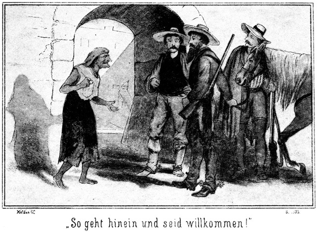»So geht hinein und seid willkommen! Es wird Euch bei uns gefallen, hihihihi!«
Dieses Lachen klang wie das Gekrächz eines Raben oder eines nächtlichen Raubvogels, welcher triumphirt, weil er seine Beute bereits in den Krallen hält.
Juanito trat ein und zog sein Pferd hinter sich her. Steinbach und Günther thaten dasselbe.
Sie gelangten durch einen finsteren Hausgang in den Hof, dessen drei Seiten das Mauerwerk des Gebäudes bildete, während die vierte an den senkrechten Felsen des vermeintlichen Vulkans stieß.
Hier im Hofe gab es allerdings einige Fenster. Von Glas und Rahmen oder war keine Spur. Die Fenster bestanden nur in schmalen, schießschartenähnlichen Maueröffnungen.
»Bringt Eure Pferde in den Stall,« meinte Juanito.
Er schritt ihnen voran nach einem offenen, thürlosen Raume, welcher die Vermuthung, daß er der Stall sei, nur durch einige eiserne Haken unterstützte, an welche die Pferde angebunden wurden.
»Giebt es hier im Thale denn Futter für die Thiere?« fragte Günther.
»Keinen Halm. Wir füttern Mais, den wir natürlich sehr weit her holen müssen.«
»Und Wasser?«
»Auch sehr wenig. Es giebt im Thale keine Quelle und keinen lebendigen, fließenden Tropfen. Wir müssen den Regen dort in der Cysterne sammeln, um Wasser zu haben. Leider aber regnet es hier so selten.«
Steinbach trat an die Cysterne. Das war ein tiefes, viereckiges Loch. Er konnte nicht auf den Grund blicken, aber es kam ihm ein Geruch von fauligem Wasser entgegen, welcher ihm allen Appetit sofort verleidete. Er wendete sich wieder ab und bemerkte nur noch, daß neben der Cysterne eine lange und sehr starke Leiter lag.
»Jetzt kommt, Sennores,« meinte Juanito. »Wir wollen nach dem Saale gehen.«
Er ging auf eine ziemlich breite, steinerne Treppe zu, welche er emporstieg. Die Anderen folgten natürlich. Droben öffnete er eine Thür. Sie war nur angelehnt gewesen und bestand ganz aus Eisen. Das war der Eingang in den Raum, den er Saal genannt hatte. Dieser war nur eine Stube, in welcher ein alter Tisch nebst einigen eben solchen Stühlen stand. Zwei Mauerscharten bildeten die Fenster, boten jetzt aber gar kein Licht, da die Dämmerung hereingebrochen war. Darum brannte Juanito eine Kerze an, welche auf dem Tische stand. Der Leuchter bestand aus einer großen Kartoffel, in welche für das Licht ein Loch geschnitten war.
»So!« sagte er. »Willkommen also, Sennores! Setzt Euch und macht es Euch bequem. Ich gehe für einen Augenblick fort, werde aber schnell wiederkommen.«
Er entfernte sich und schob die Thür heran. Die beiden Deutschen blickten sich fragend an und brachen dann in ein unterdrücktes Lachen aus.
»Das ist der Saal!« sagte Günther. »Verteufelt comfortabel ist er! Eine solche Pracht habe ich hier gar nicht erwartet.«
»Ich glaube, wir werden noch auf das Verschiedentlichste überrascht werden. Eigentlich ist es nicht zum Lachen.«
»Nein, gar nicht. Was sagst Du zu der Alten?«
»Des Teufels Ur-Ur-Urgroßmutter.«
»Wenigstens. Und dann der Eingang. Als ich das Pferd hinter mich hereinzog, kam ich mir vor, wie der Gimpel, der in die Falle geht.«
»Ich mir ebenso. Und in der Falle stecken wir, das unterliegt gar keinem Zweifel.«
»Du meinst wirklich, daß er uns nach dem Leben trachtet?«
»Gewiß.«
»Wir sind doch seine Retter.«
»Das ist dem Kerl höchst gleichgiltig. Er fragte so angelegentlich nach unserem Gelde. Er wollte uns auf keinen Fall mitnehmen, aber als er hörte, daß wir englische Noten einstecken haben, da war er sofort bereit, da verbot er sogar seiner Mutter das Wort.«
»Und wie er nach den Waffen fragte!«
»Jedenfalls nicht ohne Absicht. Wir müssen auf der Hut sein. Zunächst gilt es, zu erfahren, wie viele Personen sich hier befinden. Ich bin überzeugt, daß wir den Aufenthalt – pst! Man kommt!«
Juanito war aus dem Zimmer getreten und in dem jetzt dunklen Gang, in den verschiedene eiserne Thüren mündeten, fortgegangen bis zu einer Thür, welche nur anlehnte und hinter welcher sich Licht befand. Er trat ein. Die Alte saß da auf einem Schemel und stand im Begriff, sich einen alten, abgebissenen Pfeifenstummel mit Tabak zu stopfen.
»Ist während meiner Abwesenheit Etwas passirt?«
»Nein.«
»Auch mit Annita nicht?«
»Sie hat sich sehr ruhig verhalten. Ich denke, Ihr wollt heute fortbleiben!«
»Ich traf die beiden Kerls und mußte mit ihnen hierher zurück.«
»Was wollen sie?«
»Quecksilber kaufen.«
»Die Waare liegt ja bei Eurer Mutter!«
»Ganz richtig. Ich weigerte mich auch, die Leute mit nach dem Thale zu nehmen. Aber zuletzt dachte ich doch – hm! Ich muß Dir Etwas sagen.«
»Heraus damit!«
Sie hielt den Stummel an das Licht, setzte den Tabak in Brand und begann zu qualmen.«
»Weißt Du noch damals, der Engländer –«
»Hm, ja,« nickte sie, indem sie ihn verständnißinnig angrinste. »War er nicht ein fetter Braten?«
»Sehr fett.«
»Es sollte doch wieder einmal so Einen geben!«
»Lieber Zwei, anstatt nur Einen!«
»Wie meint Ihr das? Zielt das etwa auf die Zwei, die da jetzt gekommen sind?«
Ja.«
»Haben sie Geld?«
»Mehrere hundert Dollars.«
»Sapperment! Wie viel soll ich bekommen?«
»Volle hundert.«
»Und die Kleider, die Kleider?«
»Meinetwegen.«
»Da mache ich mit. Der Anzug des Großen ist so gut, daß ich mir aus demselben den kostbarsten Staat nähen kann. Roulin darf natürlich nichts wissen?«
»Gott bewahre! Also Du bekommst hundert Dollars und die Anzüge und ich das Uebrige und die Pferde?«
»Einverstanden! Aber wie?«
»Hast Du noch Gift für das Fleisch?«
»Ja. Davon fraß damals der Engländer auch. Hei, wie er sich krümmte und wand, als das Gift ihm die Gedärme zerriß!«
Sie kicherte leise vor sich hin. Ihr Gesicht war jetzt in wirklich teuflischer Weise verzerrt. Dieses alte Weib war jedenfalls eine noch viel schlimmere und gefährlichere Creatur als Juanito selbst.
»So richte es zu,« sagte dieser. »Die Sennores werden Hunger haben.«
»Ihr wohl auch? Eßt aber ja nicht davon!« lachte sie. »Sonst beerbe ich Euch alle Drei.«
»Fällt mir nicht ein! Ich werde das Fleisch holen.«
Er trat hinaus. Draußen blieb er stehen. Es war ihm gewesen, als ob ihn ein leiser Lustzug treffe, so wie als wenn Jemand heimlich an Einem vorüberhuscht. Er lauschte. Da er aber weder Etwas sah, noch hörte, ging er weiter, die Treppe hinab und in den Hof, wo sich die Vorrathskammer befand.
Und doch hatte er sich nicht getäuscht. Eine weibliche Person hatte an der Thür gestanden und gelauscht. Als er so schnell herausgekommen war, war sie schnell einige Schritte zurückgewichen und dann bewegungslos stehen geblieben, bis er beruhigt seinen Weg fortsetzte.
Da huschte sie auch weiter. Sie hatte es eilig. Sie durfte keine Minute Zeit verlieren. Darum wurden ihre Schritte lauter, als sie sich ihrem Ziele näherte. Das war es, was Steinbach gehört hatte. Er horchte nach der Thür hin, und da trat sie ein. Der Schein des Lichtes fiel auf sie.
Ihre Kleidung zeigte nicht von auf sie verwendete Sorgfalt, sie sah vielmehr abgerissen und schmutzig aus; dennoch aber machte die Person keinen üblen Eindruck. Man sah ihr auf den ersten Blick die Spanierin an. Voll und üppig gebaut, war sie jetzt noch voller und üppiger als wohl gewöhnlich. Sie hatte ganz das Aussehen einer jungen Frau, die der Stunde entgegensieht, in welcher sie dem Gatten das köstlichste Geschenk geben will, welches eine Frau ihrem Manne nur geben kann – sie war schwanger.
»Was wollt Ihr, Sennora?« fragte Steinbach, als sie einige Secunden lang wortlos an der Thür stehen blieb.
Da legte sie die Hand an den Mund und raunte ihm ängstlich zu:
»Leise, leise, Sennor! Man darf nicht wissen, daß ich zu Euch komme.«
»Gut, mein Kind,« sagte er nun leise. »Also was habt Ihr mir zu sagen?«
»Ich will Euch warnen.«
»Vor wem?«
»Vor Juanito und der Alten. Sie wollen Euch Beide vergiften.«
»Alle Teufel!«
»Ja, mit Fleisch, er holt es eben.«
»Dachte mir so Etwas! Weißt Du es genau?«
»Ja. Ich sah Euch kommen. Ich dachte, Ihr könntet mich retten. Darum schlich ich mich aus meiner Stube und horchte. Da hörte ich, daß sie schon einen Engländer vergiftet haben –«
»Das wird immer besser!«
»Und daß sie auch Euch tödten wollen, weil Ihr einige hundert Dollars bei Euch habt. Das alte Weib soll hundert Dollars und Eure Anzüge bekommen.«
»Du sagst, daß Du Rettung von uns erwartest? Wer bist Du denn, Kind?«
»Ach Gott, ich bin ein armes, unglückliches Mädchen –«
Sie hielt inne und drückte die Hände an die Augen, aus denen sofort die Thränen geschossen kamen.
»Ein Mädchen? Hm –«
Sie erröthete, unterdrückte mit Gewalt ihr Schluchzen und fuhr fort:
»Ja, Sennor, ich bin keine Frau, sondern ein Mädchen. Ich kann nichts dafür. Ich sollte seine Frau werden, und da – da –«
»Wessen Frau?«
»Roulin's.«
»Ach, von ihm ist die Rede! Sprich weiter! Ich werde Dir helfen, wenn ich kann.«
»Ich war arm und hatte keinen Menschen auf der Welt, zu dem ich gehörte. Ich diente in San Franzisco. Ich suchte eine andere Stellung und las eine Anonce, welche mir gefiel. Ich ging nach dem bezeichneten Orte und traf da Roulin. Ich gefiel ihm und er miethete mich für seine Frau. Als er mich hierher brachte, merkte ich erst, daß er gar keine Frau hatte. Er beruhigte mich. Er sagte mir, daß er mich liebe und daß ich seine Frau sein werde. Ich glaubte es ihm.«
»Armes Kind!«
»Ich wurde hier die Herrin. Aber das dauerte nicht lange. Es gab da noch eine Andere, der ich weichen mußte. Ich wurde eingesperrt, damit sie mich nicht sehen solle. Ich erfuhr aber doch ihren Namen.«
»Wie hieß sie?«
»Magda. Den anderen Namen habe ich vergessen.«
»Magda Hauser?«
»Ja, so war er. Sie sollte an meine Stelle treten. Sie war nicht so leichtgläubig wie ich. Sie wehrte sich. Er hat sie fortgeschafft. Seitdem darf ich meine Kammer wieder verlassen.«
»Auch das Haus?«
»O nein. Wer dieses Haus einmal betreten hat, der kommt nicht wieder hinaus. So wird es wohl auch mit mir werden. Ach, mein Gott! Ich ahne, was man mit mir vor hat.«
»Darf ich das wissen?«
»Ich weiß es selbst nicht genau, und es ist auch so schrecklich, daß ich es lieber nicht glauben möchte. Ich möchte gern denken, daß ich falsch gehört habe. Aber das ist doch auch nicht möglich. Ich habe Alles ganz genau verstanden, was Roulin und Juanito mit einander sprachen.«
»Was war das?«
»Roulin hat mehrere Mädchen in der Weise betrogen wie mich. Wenn er sie nicht mehr lieb hat, steckt er sie in das Bergwerk.«
»Alle Teufel!«
»Ja, dort müssen sie arbeiten, bis sie eines elenden, jammervollen Todes sterben.«
»Das ist satanisch!«
»Sie bekommen das Tageslicht niemals zu sehen.«
»Wo ist das Bergwerk?«
»Ich weiß es nicht. Der Eingang zu demselben aber muß hier im Hause sein.«
»Ah! Warum denkst Du das?«
»Juanito hat sich einmal versprochen. Ihr müßt nämlich wissen, daß – daß –«
Sie stockte erröthend.
»Sprich getrost weiter!« sagte Steinbach in freundlichem, ermunterndem Tone.
»Es ist so, daß man es kaum sagen kann!«
»Sage es trotzdem! Hier ist falsche Scham nicht am Platze. Hier handelt es sich vielleicht um mehr, als nur um Leben und Tod.«
»Da habt Ihr Recht, Sennor. Nämlich wenn Roulin von einem Mädchen nichts mehr wissen will, so wird Juanito sein Nachfolger. Dann, wenn dieser – dann, dann steckt er sie in das Bergwerk.«
»Schrecklich, schrecklich!«
»Juanito verlangte von mir, ich solle freundlich mit ihm sein. Ich weigerte mich, und da sagte er zu mir, daß er mich, wenn ich ihm ungehorsam sei, hinunterschaffen wolle. Aus diesem Worte schließe ich, daß der Eingang zum Bergwerke hier im Gebäude sein muß.«
»Hinunter? Also im Parterre?«
»Nein. Die Parterreräumlichkeiten liegen an den drei Mauerseiten. Die vierte ist der Berg.«
»Meinst Du, daß das Quecksilber hier im Berge gegraben wird?«
»Ja. Man hört zuweilen des Nachts von oben herab Stimmen ertönen.«
»Schön, schön! Sollte der Eingang im Keller sein?«
»Einen Keller giebt es hier nicht.«
»So! Ah, ich habe da einen Gedanken! Etwa in der Cysterne. Neben dieser ist die Leiter.«
»Die ist oftmals weg.«
»Wohin?«
»Das weiß ich nicht. Ich darf mich ja um gar nichts bekümmern. Ich darf auf nichts aufpassen. Wenn man so Etwas bemerkte, würde ich sogleich wieder eingesteckt werden.«
»Wie viele Personen bewohnen dieses Haus?«
»Jetzt nur Drei: Juanito, die Alte und ich.«
»Sehr gut. Also Du wünschtest Dich fort von hier?«
»Ja. Ich will lieber todt sein, als hier bleiben.«
»So verspreche ich Dir, daß ich Dich mit mir von hier fortnehme, mein Kind.«
»Wann, o Sennor?«
»Sobald ich selbst gehe. Das kann schon in dieser Nacht sein. Wo ist Deine Kammer?«
»Ganz hinten, wo der linke Flügel an den Felsen stößt. Neben der Treppe, welche empor zum platten Dach führt.«
»Deine Thür ist offen?«
»Ja, seit diese Magda fort ist.«
»Wie unvorsichtig von diesem Juanito! Da kannst Du doch leicht entfliehen.«
»O nein. Fenster nach außen giebt es ja nicht.«
»Aber die Thür!«
»Ist stets verschlossen. Und den Schlüssel giebt die Alte nicht aus der Hand.«
»Wo hat sie ihn?«
»Stets auf der Brust, auf dem bloßen Leibe unter dem Hemde. Zur Thür hinaus kann ich also nicht.«
»Vom Dache hinab?«
»Das ist mir zu hoch. Ich würde – – – um Gottes willen! Er kommt!«
Sie huschte hinaus und versteckte sich in die nächste Ecke. Da es draußen auf dem Gange dunkel war, konnte Juanito sie nicht sehen. Er trat ahnungslos, was während seiner Abwesenheit geschehen war, in den »Saal«.
»Sennores,« sagte er, »ich habe den Befehl ertheilt, daß Euch ein Abendmahl bereitet werde.«
Jetzt, da Steinbuch erfahren hatte, daß nur drei Personen dieses Haus bewohnten, war er überzeugt, daß er seinen Plan mit Leichtigkeit ausführen könne; er brauchte sich also gar nicht zu geniren. Darum nahm er sich kein Blatt vor den Mund und sagte:
»Worin wird dieses Mahl bestehen?«
»In Braten.«
»Wer bratet ihn?«
»Die Schließerin.«
»Danke sehr! Brrr!«
»Wie meint Ihr das?«
»Daß wir nichts essen werden, was diese Person berührt hat.«
»O, sie ist sehr sauber!«
»Das habe ich gesehen. Sie starrt vor Schmutz.«
»Ihr müßt bedenken, daß Ihr Euch nicht in New-York oder San Franzisko befindet, Sennor!«
»Meint Ihr, daß man nur an diesen beiden Orten reinlich sein könne?«
»Nun gut! Ihr seid meine Gäste, und so muß ich Euch jeden Gefallen thun. Ich werde Euch eine andere Köchin besorgen.«
»Habt Ihr denn eine andere?«
»O, mehrere. Es wohnen noch einige junge Sennores und Sennorita's hier. Verwandte von Sennor Roulin, welche hier auf Besuch sind. Diese Damen werden mir gern den Gefallen thun.«
Das war eine Lüge. Dennoch that Steinbach, als ob er es glaube. In zutraulichem Tone fuhr Juanito fort:
»Aber macht es Euch doch bequem. Legt Eure schweren Waffen fort.«
»Werden wir auch während der Nacht in diesem Saale bleiben?«
»Nein.«
»So legen wir die Waffen hier nicht ab. Ein guter Jäger ist gewohnt, sich nur an der Ruhestelle von seinen Waffen zu trennen.«
»So werde ich Euch sofort Eure Zimmer anweisen.«
»Unsere Zimmer? Wir brauchen nur eins.«
»Es soll Jeder eins bekommen.«
»Wir danken! Wir sind gewohnt, bei einander zu schlafen.«
Juanito zog die Stirne kraus, beherrschte sich aber doch und sagte:
»Ich kann Euch die Bequemlichkeiten freilich nicht aufzwingen. Bleibt also meinetwegen beisammen, wenn Ihr es nicht anders wollt! Erlaubt mir nun nur, Euch nach Eurem Zimmer zu bringen.«
Er ergriff das Licht und schritt, den sogenannten Saal verlassend, ihnen voran, nach dem rechten Flügel des Gebäudes. Dort schloß er eine ebenso eiserne Thür auf und ließ die Beiden eintreten.
Die Stube war klein. Sie hatte nicht einmal eine Mauerscharte als Fenster. Wer hier eingeschlossen wurde, der war gefangen, ohne nur einen Mund voll frische Luft athmen zu können. Dieser Gedanke kam Steinbach. Darum warf dieser sofort einen Blick nach der Decke empor. Was er da sah, das beruhigte ihn sehr. Die Decke war nämlich nicht sehr hoch und bestand sehr einfacher Weise nur aus der einfachen Dachpappe, welche man von Mauer zu Mauer gelegt hatte. Hier in diesem regenarmen Klima genügte dies vollständig.
Ein Tisch stand in der Mitte des Raumes und dabei gab es zwei alte Stühle.
»So, setzt Euch, Sennores!« sagte Juanito. »Ich werde Euch Decken für das Lager besorgen. Ihr seid nun hier wie daheim und könnt Eure Waffen ablegen. Ich komme gleich wieder.«
Er ging.
»Dieser Kerl muß doch rechte Angst vor unseren Büchsen haben!« sagte Günther von Langendorff.
»Er fängt es darauf an, daß wir sie partout weglegen müssen. Der Esel macht dies aber doch ein Wenig zu auffällig.«
»Es behagt mir hier nicht so recht.«
»Warum?«
»Es giebt nicht einmal ein Fenster. Schließt man uns hier ein, so können wir uns nicht einmal unserer Haut wehren.«
»O doch! Wir können durch das Dach.«
»Ist das so dünn?«
»Ja. Ich werde gleich einmal probiren.«
Steinbach stieg auf den Tisch. Er selbst war so lang, daß er nun mit dem Kopfe fast die Decke erreichte. Er untersuchte sie mit den Händen. Sie gab nach. Es war gewiß, daß man es nur mit der einfachen Steinpappe zu thun hatte.
»Siehst Du!« sagte er, wieder vom Tische steigend. »Da hinaus bleibt uns für alle Fälle ein Weg.«
Sie hatten gar nicht lange Zeit, sich zu besprechen, denn Juanito kehrte sehr schnell zurück. Er breitete einige Decken in der Ecke aus, die ihnen zum Lager dienen sollten. Dabei sagte er:
»So, Sennores. Nun wacht es Euch bequem. Legt ab!«
»Es scheint Euch sehr viel daran zu liegen, daß wir es uns bequem machen!«
»Mir? Nein. Ich sage das nur um Euretwillen. Ich bin das eben so gewöhnt. Ich lege die Waffen stets ab, sobald ich der Gast eines Andern bin. Wer das nicht thut, der beleidigt den Gastgeber, indem er sagt, daß er ihm nicht traue.«
»Legt denn der Gastgeber auch seine Waffen ab?«
»Ja. Ich habe nur den Revolver im Gürtel. Seht, da liegt er.«
Er zog ihn aus dem Gürtel und legte ihn auf den Tisch. Darum zog Steinbach nun sein Beil aus dem Futterale und stellte es in die Ecke. Günther that dasselbe mit seiner Büchse. Nun schien Juanito befriedigt zu sein. Er sagte:
»So lasse ich es mir eher gefallen. Nun werde ich nachschauen, ob der Braten fertig ist. Ihr erlaubt vielleicht, daß ich selbst Euch bediene, Sennores?«
»Gern.«
Juanito ging wieder fort. Schnell trat Steinbach zum Tisch, auf welchem der Revolver noch lag.
»Man kann nicht wissen, was passirt. Vielleicht kommt es zum Schießen. Da wollen wir dieses Ding doch lieber unschädlich machen.«
»Ist er geladen? Er hatte doch vier oder fünf Schüsse auf den Wolf abgegeben.«
»Hier sehe ich, daß er wieder geladen hat.«
»So mach schnell, ehe er zurückkehrt.«
Er zog die Patrone aus der Trommel und legte die Waffe wieder hin. Er hatte das kaum gethan, so kehrte Juanito zurück, in den Händen eine Platte mit frischen Tortillas und appetitlich riechenden Bratenstücken.
»So, Sennores, habt Ihr Euer Essen,« sagte er, indem er die Sachen auf den Tisch legte.
Steinbach setzte sich auf den Stuhl und sagte, nachdem auch Günther seinem Beispiele gefolgt war:
»Giebt es nicht einen dritten Stuhl?«
»Für wen? Etwa für mich?«
»Ja, natürlich.«
»Ich brauche keinen.«
»Ihr könnt doch nicht im Stehen essen!«
»Danke! Ich esse nicht. Das ist für Euch. Ich habe bereits gegessen.«
»Das wäre doch recht schnell gegangen! Wann denn?«
»Vorhin, als ich zehn Minuten von Euch fort war.«
»Was könnt Ihr während dieser kurzen Zeit genossen haben? Nichts. Nein, wenn Ihr nicht mit uns eßt, so essen auch wir nicht. Wir sind Eure Gäste und Ihr müßt mit Theil nehmen.«
»Nun gut! Ich will Euch auch hierin Euren Willen thun, Sennores.«
Er ging und kehrte bald mit einem Stuhle und einem Stücke kalten Fleisches zurück.
»So ists recht!« lachte Steinbach. »Ihr werdet sehen, daß es zu Dreien besser schmeckt als zu Zweien. Ich bitte, greift zu!«
Juanito nahm sich eine der Tortillas und biß hinein. Das sind flache Maiskuchen. Sie waren also nicht giftig, sonst hätte er sich gehütet, sie zu kosten.
»Nun hier Fleisch! Bitte!«
Steinbach zog sein Messer hervor, schnitt ein Stück des Bratens ab und legte es Juanito hin.
»Danke, danke!« sagte dieser schnell. »Ich esse nicht warm sondern lieber kalt.«
»Wir Beide auch. Da wir aber Warmes und Kaltes haben, so theilen wir. Nehmt nur Braten!«
»Behaltet ihn immer für Euch! Ich bin nicht ein großer Freund davon.«
Steinbach drang in ihn. Juanito kam in allergrößte Verlegenheit. Ohne ganz und gar unhöflich zu sein, konnte er sich nicht länger weigern, und doch war es unmöglich, von dem vergifteten Fleische zu essen. Er versuchte alle möglichen Ausreden und Entschuldigungen, bis Steinbach endlich zornig rief:
»Ich möchte den Mann sehen, der nicht gebratenes Rind essen kann! Ihr seid selbst schuld, wenn Euer Verhalten mir verdächtig vorkommt.«
»Verdächtig? Wieso verdächtig?«
»Weil Ihr Euch so hartnäckig weigert, zu essen. Was ist mit diesem Braten?«
»Was soll mit ihm sein? Nichts!«
»So eßt also auch selbst davon!«
»Ich habe aber heut keinen Appetit dazu!«
»Das muß aber einen Grund haben. Ekelt Ihr Euch etwa? Ist es vielleicht doch die Alte gewesen, welche geschmoort hat, he?«
»Nein, sondern eine der jungen Sennorita's.«
»Bitte, holt sie mir doch einmal her!«
»Das geht nicht. Sie hat sich sofort zur Ruhe gelegt, nachdem sie fertig war.«
»So? Es ist jedenfalls Euer Wunsch, das wir Beide uns auch zur Ruhe legen, wenn wir das Fleisch gegessen haben?«
»Allerdings.«
»Aber zu welcher Ruhe!«
»Natürlich hier auf diese Decken.«
»Ja, auf welchen wir liegen bleiben, ohne jemals wieder aufzuwachen.«
Jetzt stutzte Juanito.
»Wie meint Ihr das?« fragte er.
»Ganz so, wie ich es sage. Euer Verhalten erregt meinen Verdacht. Es hat mit diesem Fleische irgend eine Bewandtniß. Ich esse nicht davon.«
»Ich auch nicht,« stimmte Günther bei.
»Donnerwetter! Wollt Ihr mich beleidigen, Sennores?«
»Nein. Wir haben dasselbe Recht wie Ihr. Ihr eßt nicht, und wir essen nicht. Jeder hat seinen Willen. Dagegen kann Niemand Etwas sagen.«
Aber ich bin der Wirth. Ihr weist mein Fleisch zurück; das ist eine Beleidigung.«
»Ihr eßt nicht mit uns; das ist ebenso Beleidigung. Wir wollen da gar nicht viele Worte machen. Ich bin ein Mexikaner, aber nicht ein Engländer. Ich will nicht wie ein Engländer sterben sondern wie ein Mexikaner.«
Das Gesicht Juanito's wurde aschfarben.
»Sennor, was meint Ihr?« fragte er.
»Nun, ist hier nicht einmal ein Engländer gestorben?«
»Nein.«
»Nachdem er Fleisch von Euch gegessen hatte?«
»Nein.«
»Welches von der Alten vergiftet worden war?«
»Seid Ihr toll!«
Er war von seinem Stuhle aufgesprungen. Seine Augen blitzten, mehr aber vor Schreck als vor Zorn.
»Toll? Nein. Ich bin im Gegentheil so sehr bei Sinnen, daß mein Ohr Alles gehört hat, was Ihr mit Eurer alten Hexe ausgemacht habt.«
»Ausgemacht? Was denn?«
»Daß sie hundert Dollars und unsere Anzüge bekommen soll!«
»Ihr wollt das Andere nehmen und die Pferde!«
Steinbach war in ganz gleichgiltiger Haltung sitzen geblieben und sprach diese Worte mit lächelndem Munde. Juanito hingegen war förmlich zurückgefahren.
»Sennor!« stieß er mit aller Anstrengung hervor. »Ich begreife Euch nicht!«
»Desto besser begreife ich Euch, Mörder! Ihr, Ihr seid der böse Geist im Todesthale, von welchem Eure Mutter erzählt hat. Ihr wollt uns heut morden, um zu meinen englischen Banknoten zu kommen; aber es soll Euch das nicht so glücken, wie Eure früheren Schandthaten!«
»Nicht?« knirrschte der Entlarvte. »Ach, dennoch soll es glücken, dennoch und nun erst recht. Fahrt mit einander zur Hölle!«
Er riß den Revolver vom Tische an sich, schlug auf Steinbach an und drückte ab. Die Waffe versagte. Er drückte in aller Schnelligkeit noch zweimal ab, aber wiederum vergebens.«
»Gebt Euch keine Mühe!« lachte Steinbach. »Wir haben dafür gesorgt, daß die Wespe nicht mehr stechen kann. Nun aber wollen wir selbst einmal unseren Stachel zeigen. Hier ist er. Wie wird Euch jetzt, Sennor?«
Er zog seinen Revolver aus dem Gürtel. Günther that desgleichen.
Juanito war fast erstarrt gewesen. Jetzt, als er die beiden feindlichen Waffen erblickte, kam wieder Leben über ihn.
»Wie mir wird?« sagte er. »Sehr wohl. Ich wünsche, daß es Euch ebenso wohl werde.«
Ehe ihn einer der Beiden hindern konnte, war er zum Eingang hinausgesprungen und hatte die Thür hinter sich zugeschlagen. Der Schlüssel schrillte im Schlosse und der Riegel klirrte.
»Gefangen!« hohnlachte der Entkommene draußen mit lauter triumphirender Stimme.
»Ja, gefangen,« sagte Günther von Langendorff. »Gefangen sind wir! Und daran sind wir selbst schuld!«
»Was schadet es?« lachte Steinbach.
»Was es schadet? Jedenfalls sehr viel!«
»Das sehe ich nicht ein.«
»Wir hatten ihn so fest! Und ließen uns dennoch von ihm übers Ohr hauen.«
»Lieber Günther, lamentire nicht. Du befindest Dich in einem großen Irrthume, wenn Du meinst, daß dieser dumme Kerl mich etwa beluxt habe. Er ist mir nur zu sicher; das weiß ich, und darum spiele ich mit ihm wie die Katze mit der Maus. Auf ihn zu schießen, das wäre eine Dummheit gewesen. Ich darf ihn doch nicht erschießen, weil er mir sehr viel sagen soll, was ich erfahren will. Hätte ich gewollt, so wäre er mir sicherlich nicht entgangen. Du kennst mich noch nicht. Ich bin schneller als er; aber das brauchte ich ja gar nicht zu sein. Ich brauchte mich ja nur zwischen ihn und die Thür zu stellen, so hätte er nicht fortgekonnt.«
»Aber warum hast Du ihn denn entkommen lassen? Das ist es, was ich nicht begreife.«
»Entkommen ist er ja gar nicht! Er ist noch hier in dem Hause. Es fällt ihm gar nicht ein, fortzugehen. Er bleibt mir also sicher und gewiß. Ich habe ihn einstweilen gehen lassen, um ihn vielleicht belauschen zu können. Ich denke, daß ich auf diesem Wege mehr erfahre als er sich auspressen läßt. Jetzt gehen wir durch die Decke.«
»Das ist schwerer, als Du denkst.«
»Warum?«
»Je leichter wir durch die Decke kommen, desto dünner ist sie und desto weniger trägt sie uns. Wir brechen ja bei jedem Schritte durch!«
»Wenn wir so dumm sind, auf der Pappe gehen zu wollen, ja.«
»Auf was denn sonst?«
»O wehe! Mein Lieber, ich begreife Dich nicht. Wir laufen auf der Umfassungsmauer.«
»Alle Teufel! Das ist ja richtig! Wo habe ich doch nur meine Gedanken!«
»Nicht wahr? Na, tröste Dich! Wenn Du keine Gedanken hast, so habe ich desto bessere. Du bist ein ausgezeichneter Cavallerieofficier; aber ein Fürst der Bleichgesichter zu sein, das vermag nicht ein Jeder.«
Er sagte das nicht aus Ueberhebung sondern im Scherz. Er lachte dazu. Dann fuhr er fort:
»Löschen wir also jetzt das Licht aus. Es könnte uns verrathen. Und setzen wir den Tisch an die Außenwand. Komm!«
Er blies das Licht aus und steckte es ein. Er konnte es vielleicht später gebrauchen. Dann stieg er auf den Tisch, welcher an die Umfassungsmauer gestellt worden war, nahm sein starkes, scharfschneidiges Bowiemesser und begann einen langen Riß in die getheerte Dachpappe zu schneiden. Als dieser Riß lang genug war, stieg er hinaus auf den Rand des Daches, welcher eben von der Umfassungsmauer des Gebäudes gebildet wurde. Da konnte er nicht durchbrechen.
»Nun gieb mir meine Schießaxt herauf,« flüsterte er zurück, »und komm mit Deiner Büchse nachgestiegen. Ich helfe Dir dabei. Ich ziehe Dich herauf.«
Das geschah. Einige Minuten später befand Günther sich neben Steinbach auf dem Dache.
»Bist Du schwindelig?« fragte der Letztere.
»Zuweilen.«
»So gehe nicht aufrecht sondern krieche auf allen Vieren. Wir befinden uns auf dem rechten Flügel und müssen über den Mitteltheil hinüber nach dem linken Flügel, wo sich die Treppe befindet, wie wir von dem Mädchen erfahren haben. Dabei aber müssen wir so leise als möglich verfahren. Es ist ja möglich, daß dieser Juanito oder die Alte sich in einer Stube unter uns befinden. Sie dürfen uns auf keinen Fall hören.«
Jetzt bewegten sie sich vorsichtig weiter, Steinbach aufrecht, Günther aber in kriechender Stellung. Das ging nicht sehr schnell, dennoch aber erreichten sie bald den linken Flügel. Dieser war, wie es sich zeigte, nicht mit der bloßen Pappe gedeckt, sondern unter derselben befand sich eine feste Bretterlage. Nun konnten sie von der Umfassungsmauer weichen und getrost auf der Mitte des Daches gehen.
So gelangten sie ganz an das Ende des Seitenflügels. Sie bemerkten keine Oeffnung im Dache. Darum untersuchten sie dasselbe, indem sie es mit den Fingern betasteten. Auf diese Weise bemerkten sie die Spalten, durch welche sich die Fallthür von ihrer Umgebung abhob. Sie versuchten, sie empor zu heben, und das gelang sehr leicht.
Unter der Thür führte eine schmale Brettertreppe abwärts. Sie stiegen hinab und ließen hinter sich die Thür des Daches unhörbar wieder niedersinken.
Noch aber hatten sie die unteren Stufen der Treppe nicht erreicht, so blieb Steinbach, welcher voranschritt, lauschend stehen.
»Pst! Horch! Ich höre Stimmen.«
Als Günther nun seinerseits auch lauschte, vernahm er auch dasselbe.
»Es scheint Juanito's Stimme zu sein,« sagte er.
»Ja.«
»Wo mag er sein?«
»In der Stube nebenan. Weißt Du, bei wem?«
»Nun?«
»Bei dem braven Mädchen, welches uns warnte.«
»Ja. Sie sagte doch, daß sie neben der Treppe wohne.«
»Die Thür scheint offen zu stehen. Steigen wir vollends hinab. Vielleicht hören wir Etwas, was uns Nutzen bringt. Aber leise, damit er es nicht bemerkt.«
Als sie die letzten Stufen hinter sich hatten, sahen sie an dem Scheine des Lichtes, welcher aus der betreffenden Thür drang, daß dieselbe wirklich offen stand. Leise und unhörbar huschten sie hin.
Juanito befand sich bei Annita. Sie hörten jedes Wort, welches von diesen Beiden gesprochen wurde. Nach kurzer Zeit aber näherten sich die Schritte einer dritten Person, welche von rechts her kam. Auf dieser Seite stand Steinbach. Er trat schnell auf die Treppenstufe zurück. Die nahende Person glitt an ihm vorüber, ohne ihn zu bemerken, und trat zu Juanito und Annita in die Stube. Es war das alte Weib.
Als Juanito aus dem Zimmer, welches er seinen beiden Gästen angewiesen hatte, gesprungen war, hatte er es verschlossen, den Schlüssel abgezogen und den großen eisernen Riegel, mit welchem hier eine jede der eisernen Thüren versehen war, vorgelegt. Dann eilte er zu der Alten.
»Haben sie davon gegessen?« fragte dieselbe.
»Warum?«
»Diese Hallunken wollten, ich solle mit ihnen essen. Das konnte ich natürlich nicht, und da schöpften sie Verdacht. Denke Dir! Sie wissen es von dem Engländer damals!«
»Unmöglich!«
»Sie haben es mir ja gesagt!«
»Außer uns Beiden weiß doch kein Mensch davon!«
»Das habe ich auch gedacht, bin aber nun eines Andern belehrt worden. Ich habe nichts gesagt!«
»Ich natürlich auch nicht!«
»Unbegreiflich! Sind sie allwissend?«
»Unsinn!«
»Aber sie wissen auch, daß das Fleisch vergiftet ist!«
»Verdammt! Aber sie errathen es nur; wissen können sie es nicht.«
»Sie rathen es nicht, sondern sie wissen es; sie wissen es sehr genau.«
»Das ist nicht wahr!«
»Sie haben es mir ja selbst gesagt! Ja, sie wissen sogar, daß Du hundert Dollars bekommen sollst und die Kleidungsstücke.«
»Wirklich?« fragte die Alte erschrocken.
»Ja.«
»So haben sie unser Gespräch hier belauscht.«
»Das ist sehr wahrscheinlich. Als ich von Dir fortging, war es mir, als ob Jemand in den Gang hineinhusche. Ich blieb auch stehen, hörte aber weiter nichts.«
»So ist es gewiß, daß sie gehorcht haben.«
»Das ist sicher, zumal, wenn ich an das Weitere denke. Ich hatte den Revolver bei ihnen liegen. Da haben sie mir die Patronen weggenommen. Ich wollte auf sie schießen, aber es ging nicht los.«
»Sapperment! Was geschah da?«
»Ich sprang aus der Stube, ehe sie mich daran hindern konnten, und habe sie nun eingeschlossen.«
»Recht so! Da wird mir das Herz wieder leicht. Ich war sehr erschrocken. Sie können aber doch wohl nicht heraus?«
»Nein, kein Gedanke daran!«
»Was machen wir da nun?«
»Ich erschieße sie.«
»Ihr könnt doch nicht hinein!«
»Ist auch gar nicht nöthig. Ich gehe, wenn der Tag anbricht, auf das Dach, schneide, ohne daß sie es merken, in die Dachpappe ein Loch und schieße sie durch dasselbe nieder.«
»Sehr gut, sehr gut! Es wird zwar Blut geben, aber das wasche ich weg. Die Leichen scharren wir ein wie damals diejenige des Engländers. Roulin darf natürlich nichts davon erfahren.«
*
»Kein Wort. Aber wir müssen uns sputen, daß er uns nicht etwa dabei überrascht. Er kann bereits morgen kommen.«
»Und Annita ist noch im Hause?«
»Ja. Sie muß unbedingt noch diese Nacht fort. Roulin hat es befohlen; er mag sie nicht wieder sehen, wenn er zurückkehrt.«
»Dann weg mit ihr!«
»Ich dachte – – hm! Ein renitentes Frauenzimmer!«
»Will sie denn nicht Verstand annehmen?«
»Nein. Sie ist hübsch und jung. Zeigte sie sich gutwillig, so würde auch ich gut sein und ihr später manchen Gefallen thun.«
»Hört, Juanito, Ihr seid kein Mann!«
»Warum?«
»Ich würde sie gar nicht fragen. Sie befindet sich ja in Eurer Gewalt.«
»Das versteht Ihr nicht. Was man gern und gutwillig bekommt, schmeckt hundertmal besser als das, was man sich erzwingen muß.«
»Das bestreite ich. Ein Apfel, welchen ich stehle, schmeckt grad ebenso wie wenn ich mir ihn gekauft hätte.«
»Vielleicht, doch dieser Vergleich ist nicht zutreffend.«
»Versucht Euer Heil noch einmal!«
»Gut! ich werde zu ihr gehen und zum letzten Male mit ihr reden.«
»So macht! Ich bin neugierig, was sie sagen wird.«
Ihre Augen leuchteten tückisch auf. Er sah das und bemerkte:
»Alte Kupplerin! Ich begreife Dich nicht. Es kann Dir ja ganz gleich sein, ob ich von dieser Annita einen Kuß bekomme oder nicht!«
»Gleich? Nein, gleich ist es mir ganz und gar nicht. Ist es dem Zughunde gleich, wenn er sieht, daß eine Dame ihr Seidenspitzchen spazieren führt? Ich war stets häßlich und habe niemals Einen gehabt, der mir hätte gut sein mögen. Die Anderen, welche hübscher waren, nahmen mir Jeden fort. Seitdem hasse ich alle hübschen Larven; seitdem macht es mich glücklich, so eine Zierpuppe unglücklich zu sehen. Das ist meine Rache. Geht nur hin zu dieser Annita; preßt sie in die Arme, quetscht und drückt sie nach Herzenslust, sie mag wollen oder nicht: Je mehr sie sich vor Euch ekelt, desto größer ist mein Gaudium. Und wenn Ihr nichts über sie vermögt, so werde ich nachkommen und Euch helfen. Geht nur, geht!«
Sie schob ihn zur Thür hinaus.
»Gut, ich gehe,« sagte er. »Und Ihr könnt Euch indessen einmal nach der Thür schleichen, hinter welcher die beiden Gefangenen stecken. Horcht einmal, ob Ihr vielleicht hören könnt, was sie machen oder wovon sie sprechen! Sagt es mir dann wieder!«
Er begab sich nach dem linken Flügel des Gebäudes und fand Annita bei einem brennenden Lichtstumpfchen in ihrer kleinen Stube sitzen. Als er eintrat, erhob sie sich und wich vor ihm scheu in die Ecke zurück. Auf ihrem Gesicht lag der Ausdruck der Furcht und des Grauens.
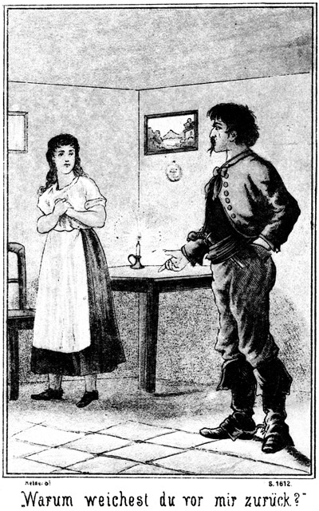»Bleib sitzen,« sagte er. »Warum weichest Du vor mir zurück?«
»Was wollt Ihr hier?« fragte sie bange.
»Soll ich es Dir nochmals sagen? Weißt Du es wieder nicht?«
»Wenn Ihr mir keine Arbeit oder irgend einen Auftrag bringt, so geht wieder fort. Ich habe mit Euch nichts zu schaffen.«
»Aber ich will mit Dir zu schaffen haben.«
Er trat auf sie zu. Sie wollte an ihm vorüber und zur Thür hinaus huschen: er aber ergriff sie und hielt sie fest.
»Halt! So schnell entkommst Du mir nicht! Heut, jetzt komme ich zum allerletzten Male; da soll es sich entscheiden, ob ich in Zukunft Dein Freund oder Dein Feind sein werde.«
»Ich mag von Euch weder jetzt noch in Zukunft Etwas wissen. Das habe ich Euch bereits gesagt, und das sage ich jetzt abermals.«
»Ja, das hast Du freilich gesagt; aber es wird die Zeit kommen, in welcher Du gern Etwas von mir wissen möchtest, ich aber bin dann nicht bereit dazu.«
»Nie, nie wird diese Zeit kommen!«
»O, sie wird im Gegentheile sehr bald da sein!«
Er lehnte sich mit über die Brust gekreuzten Armen neben die Thür an die Wand, damit sie ihn nicht entwischen möchte, und fuhr fort:
»Meinst Du etwa, daß Du die Erste bist, welche so gesprochen hat wie Du?«
Sie schwieg.
»Sie haben es Alle, Alle baldigst bereut. Es ist besser, für eine Nacht die Geliebte eines Mannes zu sein den man nicht liebt, als dem Leben, dem Lichte entsagen zu müssen, um langsam und bei lebendigem Leibe zu verfaulen.«
»Mein Gott!« seufzte sie erschrocken.
»Dieses Schicksal wartet Deiner!«
»Unmöglich! Ich habe ja keinem Menschen Etwas zu Leid gethan!«
»Auch ich habe Dir nichts zu Leid gethan und dennoch lassest Du mich schmachten.«
»Es giebt doch andere Mädchen, welche Euch gern erhören werden.«
»Aber hier nicht. Und ich will grad Dich haben. Oder meinst Du, daß Du bei Roulin wieder zu Gnaden ankommen werdest? Da irrst Du Dich.«
»Er hat mich doch geliebt!«
»Der? Niemals!« hohnlachte er. »Er braucht hier in dieser todten Einsamkeit einen Zeitvertreib. Darum geht er von Zeit zu Zeit nach San Franzisko und miethet sich ein hübsches Mädchen, welches erst wenn es hier ankommt, erfährt, daß es seine Maitresse sein soll. Eine Jede muß dann einwilligen. Zum Rücktritt ist es zu spät, und Flucht ist unmöglich. Er heuchelt in der ersten Zeit Liebe, dann aber giebt er ihr den Abschied. Alle diese Mädchen sind dann in das Ouecksilberbergwerk gekommen, wo sie Tag und Nacht arbeiten müssen. So wird es auch Dir ergehen, wenn Du mich von Dir weisest.«
»Was verlangt Ihr denn?«
»Liebe, Liebe, nichts als Liebe.«
»Unmöglich!«
»Dummheit! Ein Kuß von mir, eine Stunde in meinen Armen ist wenigstens ebenso schön wie bei Roulin.«
»Schweigt! Um Gotteswillen schweigt!«
»Nein. Es ist meine Pflicht, Dich aufmerksam auf Das zu machen, was Deiner wartet, wenn Du halsstarrig bleibst. Roulin ist verreist. Er mag nichts mehr von Dir wissen. Er hat mir den strengen Befehl ertheilt, Dich in das Quecksilberbergwerk zu stecken. Wenn er zurückkehrt, mag er Dich hier nicht wiedersehen. Ich muß gehorchen, sonst verliere ich meine Stellung, dennoch habe ich Dich noch hier gelassen, weil ich Dir gut bin. Heut aber ist der letzte Tag. Heut muß ich gehorchen.«
»Mein Herr und mein Gott! Womit habe ich das verschuldet! Ich bin ja doch nicht seine Sclavin! Laßt mich doch los! Laßt mich frei!«
»So dumm sind wir nicht. Wer einmal sich hier befindet, der kommt nie wieder los. Und weißt Du, was es heißt, im Quecksilberbergwerk zu arbeiten?«
»Nein.«
»Aber Du weißt, daß das Quecksilber giftig ist?«
»Ja.«
»Nun, Du wirst in das Bergwerk geschafft und mußt da, mit Eisen an Händen und Füßen, so daß jede Flucht und jeder Widerstand unmöglich ist, arbeiten. Dich wie ein Wurm in die Erde bohren und bekommst niemals das Licht der Sonne wieder zu sehen oder einen frischen Lufthauch zu fühlen. Du athmest das Quecksilber unausgesetzt ein. Dein Mund entzündet sich; die Zähne fallen aus; der Athem stinkt wie ein verfaulendes Aas. Das Zahnfleisch zerfällt, weil es von bösen Geschwüren zerstört wird, und der Speichel geifert Dir unausgesetzt aus dem Munde wie bei einem tollen Hunde. Deine Hautfarbe wird grau und immer schmutziger; das Gesicht fällt ein; die Augen verlieren ihre Kraft zum Sehen, und der Magen kann weder Essen noch Trinken mehr vertragen.«
Er malte diesen Zustand mit sichtbarem Behagen aus. Leider übertrieb er nicht. Was er sagte, war wirklich wahr. Annita war von Dem, was sie hörte, so entsetzt, daß sie matt auf den Stuhl niedersank und das Gesicht mit den Händen verhüllte.
»Aber dieser Mangel an Hunger und Appetit,« fuhr er fort, »ist eigentlich kein Unglück, denn die Nahrung der Leute da drin besteht nur in stinkendem Wasser, in welches ein Bischen schlechtes Mehl eingerührt wird. Das bekommen sie kalt zu essen. Es wird später noch schlimmer. Das Quecksilber durchdringt den ganzen Leib; es frißt sich in die Knochen ein und macht sie weich und mürbe. Der Knochenfraß tritt ein. Ganze Stücke schwären aus. Wir haben ein Mädchen unten,, welches durch solche Geschwüre das eine Schienbein verloren hat. Sie kann sich nur noch auf einem Beine fortschleppen und muß dennoch arbeiten.«
»Einen Arzt, einen Arzt!« stöhnte Annita.
»Das sollte uns einfallen! Da wäre ja Alles sofort verrathen. Einer Andern ist der Kinnbacken ausgeschworen. Sie sieht wie der Teufel aus. Vor einigen Jahren war sie eine berühmte Schönheit. Später kann die Lunge nicht mehr athmen; es stellt sich ein Husten mit fürchterlichem Auswurf ein, und es ist nur ein Glück für die betreffende Person, wenn sich aus diesem Husten die galoppirende Schwindsucht entwickelt. Dann ist es rasch aus. Die beiden sind vorüber.«
»Haltet ein; haltet ein!«
»Nein, ich halte nicht ein, denn ich bin ja noch gar nicht fertig. Natürlich werden auch die Nerven von dem Quecksilber angegriffen und zerstört. Die betreffende Person verliert den Schlaf; sie hat keine Ruhe, sie hat ihr Elend stets vor Augen; kein einziger Schlummer erlaubt ihr, es für auch nur eine Stunde zu vergessen. Und stellt sich ja einmal ein kurzer Schlaf ein, so ist er mit entsetzlichen Träumen verbunden, welche noch mehr quälen als die Wirklichkeit. Der Kopf wird schwer wie Eisen, und das Herz klopft unaufhörlich. Die Muskeln sitzen nicht still an den Knochen; sie zittern und beben immerfort; die Kranke kann kein Glied still halten und geht schließlich unter fürchterlichen Krämpfen oder Lähmungen zu Grunde. Stets aber ist der Körper bereits vor dem Tode mehr als zur Hälfte verfault.«
»Wer kann sich das ausdenken! O Ihr Teufels, Ihr!«
»Ja,« lachte er höhnisch, »ein Engel hat das nicht erfunden. Aber was willst Du denn! Das Quecksilber liegt da; es kann den Besitzer zum reichsten Manne machen; aber er findet keine Arbeiter. Selbst zu arbeiten, das fällt ihm natürlich auch nicht ein, und so holt er sich dann Arbeiter auf etwas gewaltsamem Wege.«
»Mich könnte nichts zwingen, zu arbeiten!«
»Oho!«
»Lieber würde ich sterben!«
»Meinst Du? Ich habe da in meiner Stube ein sehr hübsches Instrument, eine Peitsche mit vielen Riemen, welche ganz blutig sind. Verstanden. Schon bei dem dritten Hiebe geht das Fleisch in Fetzen, und selbst die ungehorsamste Dirne arbeitet sich lieber die Hände wund, als daß sie sich zum zweiten Male prügeln läßt. Man weiß die Leute zu behandeln!«
»Und dabei wollt Ihr ein Mensch heißen!«
»Sehr!«
»Und verlangt Liebe von mir!«
»Freilich!«
»Geht! Ich verabscheue Euch. Ihr seid ein Satan!«
»Gegen Dich möchte ich kein Satan sein. Du kennst nun Dein Schicksal. Du kannst es Dir verbessern, wenn Du jetzt für diese einzige Stunde meine Frau sein willst!«
»Lieber sterben!«
»Ja, langsam sterben! Dieser Wunsch kann Dir erfüllt werden.«
»Mich ekelt vor Euch!«
»Vor Roulin aber hat Dich nicht geekelt.«
»Ich stürbe vor Scham, mich von Euch nur berühren zu lassen!«
»Aber er hat Dich so berührt, das Du jetzt bald die Mutter eines Bastards sein wirst!«
»Herrgott! Mein Kind!« schluchzte sie.
»Ja. Weißt Du, was mit diesem Kinde wird? Es kann uns nichts nützen. Es wird Dir nach der Geburt genommen und dort draußen den Geiern vorgeworfen. Man macht da kurzen Proceß.«
»Wagt es! Wagt es einmal!«
Sie war aufgesprungen und trat mit geballten Fäusten auf ihn zu, als ob sie bereits jetzt in der Lage sei, ihr Kind zu vertheidigen.
»Pah!« lachte er. »Du wirst gar nichts dagegen sagen. Die Peitsche wird Hebamme und Geburtshelferin sein; da wirst Du schweigen lernen. Ich will Dir jetzt fünf Minuten Bedenkzeit geben. Thust Du mir meinen Willen, so werde ich trachten, Dir Deine Lage möglichst zu erleichtern, wo nicht, so darfst Du Dich darauf verlassen, daß Du einem Schicksale und einer Marter entgegengehst, wie noch keine Andere sie hat erdulden müssen.«
»Ich brauche keine Bedenkzeit!« sagte sie.
»Nun, was beschließest Du?«
»Tu sollst mich nie berühren, Schurke!«
Sie stand stolz und zornig vor ihm. Er aber lachte laut auf und antwortete:
»Albernes Geschöpf! Ich Dich nicht berühren dürfen! Das kommt ja nur auf mich an!«
»Ich werde nicht mit nach dem Bergwerke gehen!«
»Ach! Nicht? Wirklich nicht?«
»Nein.«
»Auch nicht, wenn wir Dich zwingen?«
»Auch dann nicht. Ich wehre mich so lange, bis ich todt bin!«
»Laß Dich nicht auslachen! Was willst Du thun gegen meine Kräfte! Und selbst, wenn Du stärker wärst als ich, müßtest Du Dich fügen. Ich würde Dich zum Beispiel hier einschließen, bis der Hunger und der Durst Dich so abgemattet hätten, daß Du kein Glied bewegen könntest.«
»Ich würde nicht vor Hunger sterben. Ihr bringt mich nicht lebendig von hier fort.«
»Das laß nur meine Sorge sein! So wie Du jetzt, hat bisher noch eine Jede gesprochen. Sei also keine Närrin! Du bist hübsch: Du gefällst mir. Es ist Dein Schaden nicht, wenn Du die Meine sein willst.«
»Was würde es mir nützen! Die Freiheit könntet Ihr mir doch nicht geben.«
»Nein, aber die Gefangenschaft könnte ich Dir erleichtern.«
»Ich danke Euch! Ich bedarf dieser Erleichterung nicht.«
»So zu sprechen, ist der reine Wahnsinn!«
»Ich weiß, was ich will und was ich thue!«
»Nun, was denn?«
»Ich habe mich von Roulin täuschen und verführen lassen, ich habe ihm jeden Wunsch erfüllt, ihn nie betrübt, nie beleidigt. Er ist meiner überdrüssig; ich glaubte, das Schlimmste, was er mir anthun könne, sei, daß er mich fortjage. Jetzt höre ich es anders. Jetzt weiß ich, was meiner wartet. Ich sehe, daß ich mich nicht bei Menschen, sondern bei Teufeln befinde. Ich war stets eingeschlossen; ich habe die freie Luft nicht einathmen können, ich ertrug es still, weil ich hoffte, daß ich einst doch wieder frei sein werde. Jetzt weiß ich, daß diese Hoffnung nicht in Erfüllung gehen wird. Die Freiheit kann mir nur der Tod geben, und ich schwöre Euch, daß ich frei sein werde. Bei Gott und allen Heiligen, bei allen Himmeln und meiner ewigen Seligkeit schwöre ich Euch, daß Ihr mich nicht unrecht anrühren sollt und daß Ihr mich auch nicht in Euer entsetzliches Quecksilberbergwerk bringen werdet!«
In diesem Augenblicke war die Alte herbeigekommen. Sie hatte diesen Schwur gehört.
»Ist die Dirne toll?« fragte sie, in die Stube tretend.
»Es scheint so,« antwortete Juanito.
»Was glaubt sie denn? Meint sie denn, uns widerstehen zu können?«
»Eben das meint sie.«
»Na, da zeigt Ihr doch das Gegentheil! Soll ich etwa Eure Peitsche holen?«
»Nein, laß sie. Die bekommt sie noch zeitig genug zu kosten.«
»Aber ich begreife keins von Euch Beiden! Ihr zwei Menschen seid nicht recht bei Sinnen, die hier nicht, weil sie's wagt, Widerstand zu leisten, und Ihr nicht, Sennor, weil Ihr Euch das nicht mit Gewalt nehmt, was sie Euch verweigert. Greift doch zu! Ich helfe Euch. Ich halte sie!«
Sie trat auf Annita zu.
»Rührt mich nicht an!« rief diese, empor springend und sich in die Ecke flüchtend.
»Freilich werde ich Dich anrühren, und zwar ein Bischen derb!«
Sie trat auf das Mädchen zu und streckte die Arme aus, fuhr aber mit einem Schmerzenslaute zurück.«
»Hölle und Teufel! Sie schlägt wirklich!«
Annita hatte ihr einen Faustschlag in das Gesicht versetzt. Sie hielt die Fäuste zur ferneren Verteidigung geballt.
»Das sollst Du mir büßen!« schrie die Alte.
Sie sprang auf Annita zu, die Finger zu Krallen geformt; aber das tapfere Mädchen ließ sie gar nicht nahe kommen; sie fiel aus und schlug ihr die Faust zum zweiten Male in das Gesicht.
»Wieder, schon wieder!« zeterte die Megäre.
»Sennor, seht Ihr es denn nicht, daß sie mich schlägt? Was steht Ihr da! Helft mir!«
»Laßt sie, Alte! Menge Dich nicht in meine Angelegenheiten!«
»Sie hat mich aber geschlagen!«
»Sie wird ihre Strafe empfangen. Wenn ich sie angreife, wird sie es wohl nicht wagen, nur die Fäuste zu zeigen.«
Dabei wendete er sich gegen Annita.
»Nehmt Euch in Acht!« mahnte diese. »Ich schone auch Euch nicht!«
Sie zitterte vor Aufregung; aber in ihrem Tone lag eine Entschlossenheit, welche zeigte, das das muthige Mädchen zum äußersten Widerstande bereit sei. Juanito lachte abermals laut und höhnisch auf und antwortete:
»Dumme Katze! Ein Griff von mir genügt, und Du bist machtlos!«
»Versucht doch diesen Griff!«
»Pah! Ich habe keine Lust, mich mit Dir herum zu balgen. Du kriechst ganz von selbst zu Kreuze. Es muß Dir irgend Etwas den Kopf verdreht haben. Du trittst ja so zuversichtlich auf, als ob Du hier ganz sichere Hilfstruppen erwartetst.«
»Die habe ich auch!«
»Ach! Wen?«
»Die beiden Sennores, welche mit Euch gekommen sind.«
»Ach! Ist es das! Jetzt begreife ich! Aber da hast Du Dich sehr geirrt. Diese beiden Männer sind die besten Freunde von uns.«
»Ihr lügt!«
»Oho!«
»Vergiftet man etwa Freunde?«
Juanito machte eine Bewegung der Ueberraschung und antwortete rasch:
»Vergiften? Mädchen, was meinst Du?«
»Daß Ihr Beide einen Engländer vergiftet habt und nun heut auch diese beiden fremden Sennores vergiften wollt.«
»Donnerwetter! Jetzt geht wir ein Licht auf! Mädchen, Du hast uns belauscht!«
»Ja,« gestand sie muthig.
»Und diese Beiden gewarnt!«
»Ja.«
»Verdammte Bestie!«
»Sie werden mich retten. Sie werden meinen Hilferuf hören und herbei eilen!«
Juanito nickte, den Mund weit öffnend, langsam mit dem Kopfe und sagte:
»Daher also dieser Widerstand, daher? Nun ist mir Alles klar! Aber Du hast Dich sehr verrechnet. Diese sehr braven und sehr guten Sennores, von denen Du Rettung erwartest, haben trotz Deiner Warnung das Gift genossen. Ihre Leichen liegen eingeschlossen in dem Zimmer, in welchem sie ihre letzte Mahlzeit hielten.«
Annita erbleichte.
»Ihr lügt!« sagte sie.
»Soll ich Dir die Leichen etwa zeigen?«
»Macht doch nicht so unnöthige Rederei mit ihr!« fiel die Alte ein.
»Ja, Du hast Recht! Sie ist es nicht werth. Und damit sie erkennt, daß alle Hoffnung vergebens sei, will ich sie gleich jetzt unschädlich machen. Komm her, Mädchen! Ich will doch sehen, ob Du Dich auch gegen mich wehren wirst.«
Er trat auf sie zu.
»Zurück!« rief sie.
Ihre Augen funkelten und der Athem kam pfeifend aus ihrer Brust.
»Pah! Ich werde Dich sogleich haben.«
Er streckte die Arme nach ihr aus und faßte sie mit beiden Fäusten. Zu seiner großen Ueberraschung ließ sie dies ruhig geschehen. Er hatte ganz sicher auf einen allerdings vergeblichen Widerstand gerechnet; statt dessen aber stand sie bewegungslos da und starrte nach der Thür.
»Nun, so wehre Dich doch!« höhnte er.
Er achtete nicht auf die Richtung ihres Blickes. Die Alte war aufmerksamer. Sie drehte sich nach der Thür um und sah Steinbach unter derselben stehen.
»Himmel!« schrie sie entsetzt auf.
Juanito drehte sich auch jetzt noch nicht um. Er sagte zu Annita:
»Nun, wo bleibt Dein Schwur, Dich nicht übermannen zu lassen?«
Jetzt erhielt sie ihre Sprache wieder. Sie antwortete:
»Gott hat diesen Schwur gehört. Ich bin gerettet!«
»Du? Ich möchte wissen, wie?«
»Um das zu erfahren, brauchst Du Dich blos einmal umzudrehen,« sagte Steinbach.
Jetzt freilich wendete sich Juanito blitzschnell nach der Thür.
»Alle Donner! Was ist das!« rief er aus.
»Das ist Hilfe in der Noth; aber nicht für Dich, Du Schurke und zehnfacher Bösewicht.«
»Ihr seid nicht todt, nicht vergiftet?« fragte Annita.
»Nein, mein liebes Kind – – –«
»Aber sterben sollt Ihr doch!« brüllte Juanito.
Er stürzte sich auf Steinbach, um ihn bei der Gurgel zu fassen, hatte sich aber in seinem Gegner verrechnet, denn dieser sagte kaltblütig:
»Knabe, was fällt Dir ein! Soll ich Dich mit einer Hand zermalmen?«
Er empfing ihn mit einem so gewaltigen Fauststoße vor die Brust, daß Juanito hintenüber und zu Boden flog. Ehe er nur den Gedanken fassen konnte, sich aufzuraffen, knieete Steinbach bereits auf ihm und band ihm mit dem schnell herbei genommenen Lasso die Arme an den Leib.
Die Alte wollte sich diesen Augenblick zu Nutzen machen und entfliehen, aber unter der Thüre trat ihr Günther entgegen. Sie fuhr mit einem Schrei in die Stube zurück.
»Bleib da, schöne Sennora!« lachte Günther. »Ich hatte so große Sehnsucht nach Dir, daß ich nicht länger warten konnte. Ich bin zu Dir geeilt, um Dich zu umarmen und an mein Herz zu drücken.«
Auch er hatte sein Lasso in Bereitschaft gehalten und schlang es der Alten, die keine Miene machte, sich zu vertheidigen, so oft um den Leib, daß sie kein Glied zu rühren vermochte. Dann lehnte er sie lang in die Ecke.
Der Hieb Steinbachs hatte Juanito so kräftig und so an der richtigen Stelle getroffen, daß ihm der Athem ausgegangen war. Er schnappte förmlich nach Luft. Jetzt, nachdem er aber bereits gefesselt war, hatte seine Lunge sich wieder vollgesogen, so daß er zu reden vermochte. Er rief zornig:
»Was ist das? Ihr überfallt mich in meiner eigenen Wohnung! Wißt Ihr, was das bedeutet?«
»Ja, das bedeutet, daß es mit Dir zu Ende ist.«
»Wagt es nicht, Hand an mich zu legen!«
»Pah! Wie Du siehst und wohl auch fühlst, habe ich bereits Hand an Dich gelegt. Spiele ja nicht den Großen, den unrechtmäßiger Weise Verletzten, sonst lasse ich eine Verschärfung eintreten, mit welcher Du noch weniger einverstanden sein wirst!«
»Ich verlange, augenblicklich freigelassen zu werden.«
»Du kannst sehr gut pfeifen, wie ich höre. Hier ist meine Antwort.«
Er zog das Lasso so scharf an, daß der Gefangene vor Schmerzen laut aufschrie.
»So! Und wenn Du noch nicht zufrieden bist, kommt es noch besser!«
Annita knieete am Boden und hatte die Hände gefaltet.
»Gott, o Gott, wie danke ich Dir!« betete sie. »Nie in meinem Leben werde ich diesen Tag und diese Stunde vergessen. Du machst Deine Engel zu Winden und Deine Diener zu Feuerflammen. Diese beiden Männer sind Engel, welche Du mir in der höchsten Noth und Angst gesandt hast, mir und Allen, welche hier schmachten und durch sie befreit sein werden. Lob und Preis sei Dir in Ewigkeit!«
Das sagte sie mit solcher Inbrunst, daß Steinbach und Günther die Thränen in die Augen traten. Die Alte aber kicherte:
»Jetzt singt die Bachstelze. Aber der Stößer wird über sie und ihre Retter kommen, ehe sie es für möglich halten!«
Und Juanito knirrschte voller Grimm:
»Ja, bete nur, Dirne! Du glaubst, gerettet zu sein, aber Du bist es noch lange nicht. Es wird Einer kommen, der wenig Federlesens mit Euch machen wird!«
Diese beiden Auslassungen machten einen um so empörenderen Eindruck, als Annita's Gebet so vom Herzen gegangen war. Steinbach versetzte in tiefster Entrüstung dem Menschen einen Fußtritt und sagte:
»Kerl, Du bist schlimmer als das ärgste Viehzeug. Uns, die wir Dich von dem tollen Wolfe befreit haben, wolltest Du zum Danke dafür vergiften. Und hier hast Du – aber ich will mich nicht aufregen. Es ist schade um ein jedes Wort, welches man eines solchen schlechten Menschen halber verliert. Sennorita Annita, Ihr werdet die Güte haben, uns im Hause herum zu führen. Wir müssen zunächst recognosciren. Es ist nothwendig, die Räumlichkeiten kennen zu lernen, damit man weiß, was man gegebenen Falles zu thun hat.«
»Geht der andere Sennor auch mit?« fragte sie.
»Ja.«
»Aber da bleiben doch diese beiden gefährlichen Personen ganz allein und ohne Aufsicht!«
»Das können wir immerhin wagen. Sie sind so fest gebunden, daß sie unmöglich loskommen können. Ich will mir den Schlüssel nehmen.«
Er griff der Alten nach der Brust und zog den Schlüssel hervor, von welchem Annita gesagt hatte, daß er dort stets versteckt sei. Dann fragte er:
»Giebt es einen Hauptschlüssel?«
»Zwei,« antwortete Annita. »Den einen hat Sennor Roulin selbst, und den anderen trägt Juanito stets in der Hosentasche.«
»Wollen sehen, ob wir ihn finden.«
Er wurde gefunden, und nun begannen die Drei ihren Rundgang. Sie fanden Alles verschlossen, auch den Eingang des Gebäudes. Steinbach schob da noch extra den großen Riegel vor, damit er ja nicht etwa durch Roulin überrascht werden konnte. Die Vorsicht gebot dies, obgleich an die Ankunft Roulins nicht zu denken war.
In der Küche fanden sie neben anderen Vorräthen einen Sack voll dumpfigen Maismehles, in welchem Mehlwürmer und Käfer ihr Wesen trieben.
»Dieses Zeug, mit kaltem, stinkendem Wasser angerührt, bekommen die Bergarbeiter als einzige Nahrung,« erklärte Annita.
»Doch nicht mit den Maden!«
»Anders nicht. Die Alte nimmt sich nicht Zeit, das Ungeziefer zu entfernen. Einst sagte sie zu mir, daß die Mehlwürmer sehr gut für die Gefangenen seien, welche nach diesem Genusse besser zu ihrer Arbeit singen und pfeifen könnten.«
»Ah, warte! Sie selbst soll einmal pfeifen!«
In der Stube, welche Juanito bewohnte, fand man eine Peitsche, an deren Stiel zwölf geflochtene Riemen befestigt waren. Jeder dieser Riemen hatte an seinem Ende einen großen Knoten. Ein Hieb mit dieser Peitsche auf den bloßen Leib mußte augenblicklich das Fleisch aufreißen. In Wahrheit waren die Riemen rünstig von Menschenblut.
Sodann wurden verschiedene Fußeisen, Handschellen und Armketten gefunden. Die Letzteren waren so eingerichtet, daß, wenn sie angelegt worden waren, die Hände sich eng bei einander befanden. An jeder dieser Kette hing ein breitschneidiger Hammer und eine kleine, kurzstielige Schaufel. Mit Beiden konnte der Gefangene arbeiten, ohne die Hände aus einander zu bringen.
Steinbach betrachtete diese Werkzeuge und meinte:
»Es scheint, die Gefangenen sind sowohl an den Füßen wie auch an den Händen gefesselt. An einen Fluchtversuch oder gar an einen thätlichen Widerstand ist da freilich nicht zu denken. Sie sollen noch im Laufe dieser Nacht frei sein. Alle, Alle!«
»Gott im Himmel, welch ein Entzücken für sie!« sagte Annita.
»Leider ahnt mir, daß für viele von ihnen der Tod besser sein würde als die Freiheit. Gehen wir zu unseren Leuten zurück!«
Diese Zwei hatten, als Steinbach mit Günther und Annita ging, gewartet, bis die Schritte derselben nicht mehr zu hören waren. Dann sagte Juanito im Tone des größten Grimmes:
»Wie mögen diese Hunde frei geworden sein!«
»Wer weiß es!«
»Durch die Thür keinesfalls!«
»Nein. Uebrigens ist es mir sehr gleichgiltig, auf welche Weise sie losgekommen sind. Jetzt ist es für mich die Hauptsache, auf welche Weise ich die Fesseln los werde.«
»Bist Du scharf gefesselt?«
»Ich kann mich nicht regen. Und Du?«
»Mir schneiden die Riemen in's Fleisch. Ich kann nicht einen einzigen Finger bewegen.«
»Ich auch nicht. Wenn wir doch einander helfen könnten. Mit den Zähnen vielleicht.«
»Auch das geht nicht. Erstens liege ich am Boden, während Du an der Mauer lehnst, und zweitens sind diese Lassos vom festesten Leder geflochten. Zum Zerbeißen brauchte man da längere Zeit als wir zur Verfügung haben.«
»Aber wir müssen doch daran denken, uns zu befreien.«
»Das thue ich auch. Hoffentlich kehrt Roulin bald zurück.«
»Er kann nicht herein.«
»Er wird sich schon einen Weg bahnen. Ich denke übrigens, daß sie uns nicht lange Zeit in diesen strengen Fesseln lassen werden. Wenn sie die Riemen lockern, dann wird sich wohl eine Gelegenheit zum Entschlüpfen finden. Bis dahin aber wollen wir standhaft sein. Alte!«
»Na, ich lamentire nicht. Es fällt mir gar nicht ein, ihnen diese Freude zu machen.«
»Das meine ich nicht allein. Ich wollte vorzugsweise sagen, daß wir verschwiegen sein wollen.«
»Ich gestehe nichts.«
»Ich auch nicht, kein Wort. Wenn sie den geheimen Eingang entdecken und drüben die Arbeiter finden, so sind wir verloren.«
»Also schweigen wir lieber. Ich weiß von nichts. Sie mögen noch so viel gute Worte mir geben, ich sage ihnen keine Silbe.«
»Gute Worte? Hm, das werden sie wohl bleiben lassen. Eine verdammte Geschichte! Ich war vor Schreck auf einen Augenblick ganz weg, als ich diesen Kerl erblickte. Doch wir stecken nun in der Falle. Das Lamentiren hilft uns nicht heraus. Schweigen wir also lieber, und denken wir desto sorgsamer nach, wie wir uns befreien können. Der erste Schritt zur Freiheit ist unbedingt ein furchtloses Auftreten. Sie dürfen nicht denken, daß wir Angst vor ihnen haben. Wir müssen so thun, als ob wir uns in unserem Rechte befänden und als ob sie ein Verbrechen an uns begingen.«
»Das ist ja auch der Fall.«
»Pah, Alte! Wir Beide brauchen nicht schauzuspielen. Wir brauchen uns nichts weiß zu machen. Wir kennen uns und Das, was wir thun. Ich bin ein Hallunke, und Du bist die echte, richtige Höllenkröte. Wenn es noch keinen Teufel gäbe, so würdest Du die Großmutter desselben werden. Schweigen wir lieber!«
Bald kehrten die drei Anderen zurück. Steinbach hatte die Peitsche in der Hand.
»Jetzt wollen wir uns mit diesen beiden braven Leuten ein Wenig unterhalten,« sagte er. »Dazu aber ist es hier zu enge; gehen wir also nach dem famosen »Saale«, in welchem wir zuerst untergebracht worden sind.«
»So müssen wir den Beiden die Füße frei machen, damit sie gehen können,« meinte Günther.
»So wohl soll es ihnen nicht werden. Die Sache wird viel einfacher und praktischer besorgt.«
Er ergriff Juanito und warf ihn wie einen Sack sich über die Schulter. Günther nahm die Alte auf, und Annita griff nach dem Lichte. So begaben sie sich nach dem Saale, wo die beiden Gefesselten wieder auf den Boden gelegt wurden.
Juanito benutzte diese Gelegenheit zur Einsprache:
»Ihr schleppt uns herum, als ob wir Schafe oder Waarenballen wären. Ich verlange, daß man mir die Fesseln abnimmt.«
»Verlangst Du das?« lachte Steinbach. »Das ist sehr klug von Dir. Ich werde Dir gehorchen.«
Er bückte sich nieder, um das Lasso wirklich zu lösen. Dies machte Juanito bereits so übermüthig, daß er ungeduldig ausrief:
»Nicht so langsam! Sputet Euch!«
»Warte nur, warte! Geduld! Alles hat seine Zeit, auch diese Arbeit will gemacht sein.«
Juanito merkte bald, daß er sich getäuscht hatte. Er wurde nicht von den Banden befreit, sondern nur anders gefesselt, nämlich so, daß seine hintere Seite von dem Lasso nicht berührt wurde.
»Was soll das heißen!« zürnte er.
»Das wirst Du sehr bald zu Deinem größten Entzücken erfahren, mein Lieber.«
»Ich brauche keine Erfahrung. Ich verlange, befreit zu werden. Sennor Roulin kommt noch heute. Er wird mich rächen.«
»Es wäre mir sehr lieb, wenn er käme! Leider aber ist er noch abgehalten.«
»Was wißt Ihr von ihm?«
»Sehr viel. Er ist mit Sennorita Magda hinauf zum Silbersee. Dort hat er seine Absicht aber nicht erreicht; er hat fliehen müssen. Magda ist frei, und Roulin ist flüchtig. Er wird verfolgt, und ich bin den Verfolgern vorausgeeilt, um Eure liebe Bekanntschaft so schnell als möglich zu machen.«
»So wolltet Ihr gar nicht Quecksilber kaufen?«
»Nein. Ihr habt Euch da einen ganz gehörigen Bären aufbinden lassen.«
»Verdammt!«
»Ja. Eure Lage ist nicht die beste. Ich habe so eine Ahnung, daß man Euch bald ein neues Halstuch machen werde, und daß Ihr an irgend einem Orte sterben werdet, der sich mehrere Fuß hoch über dem Erdboden befindet.«
»Meint Ihr etwa, daß ich gehangen werden soll?«
»So ähnlich. Ihr und diese süße Donna hier.«
»Darüber lache ich!«
»Thut das in Gottes Namen!«
»Ich kann sehr ruhig sein. Wer will mich irgend eines Vergehens beschuldigen?«
»Ihr selbst.«
»Ich?«
»Ja. Ihr werdet mir Alles sagen, was Ihr auf dem Gewissen habt.«
»Das laßt Euch nicht träumen!«
»Nein, träumen lasse ich es mir allerdings nicht, da es in voller Wirklichkeit geschehen wird. Uebrigens kann auch ich als Euer Ankläger auftreten. Ihr habt uns vergiften wollen.«
»Lüge!«
»Wir werden das Fleisch untersuchen lassen.«
»Und vorher Gift daran thun, nicht? Damit die Schuld auf uns komme!«
»Mensch, Du bist wirklich ein ganz und gar höllischer Bösewicht. Von Dir kann selbst Satanas noch viel lernen. Aber ich will mich bei solchen psychologischen Betrachtungen nicht unnöthig aufhalten. Wir haben mehr zu thun. Ich werde mich nach Verschiedenem erkundigen, und Du wirst mir meine Fragen der Wahrheit gemäß beantworten.«
»Fällt mir nicht ein. Ihr seid mein Vorgesetzter nicht. Ich bin Euch keine Antwort schuldig. Uebrigens werde ich nicht eher wieder sprechen, als bis Ihr mich losgebunden habt.«
»Das hat noch Zeit. Wie lange bist Du bereits in Roulins Diensten?«
Er antwortete nicht, selbst dann noch nicht, als Steinbach seine Frage wiederholte.
»Nun,« sagte dieser Letztere, »so will ich mich an die Donna wenden. Damen pflegen höflicher zu sein. Also, Sennora, wie lange befindet sich dieser Mann im Geschäfte Eures Herrn?«
Auch sie antwortete nicht.
»Ah, Ihr wollt ein Wenig Komödie spielen! Ich bin einverstanden. Euer Debüt wird aber wohl kläglich genug ausfallen. Ich habe nämlich die Absicht, Euch die Zungen zu lösen.«
Und zu Annita gewendet, fuhr er fort:
»Verzeiht, Sennorita, wenn ich Euch einen höchst peinlichen Anblick nicht ersparen kann. Ich achte selbst in meinem Feinde den Menschen, und selbst der Verbrecher ist noch das Ebenbild Gottes, welches man nicht schänden soll. Diese beiden Kreaturen hier aber sind aller Menschlichkeit bar. Ich werde sie so behandeln müssen, wie ich noch nie einen Menschen behandelt habe. An dieser Peitsche klebt das Blut unschuldiger Menschen. Ich handle nur ganz gerecht, wenn ich sie als Mittel benutze, diesen Leuten den Mund zu öffnen.«
Das gab Juanito sofort die Sprache.
»Wollt Ihr etwa schlagen?« fragte er.
»Jawohl, und zwar ganz gehörig.«
»Das sollt Ihr nur wagen!«
»Ich werde es wagen. Für jede Antwort, welche Ihr mir schuldig bleibt, bekommt Ihr einen Hieb. Kommt her! Ihr sollt sofort sehen, daß es mir Ernst mit dem Spaße ist.«
Er drehte ihn um, so daß er auf den Bauch zu liegen kam und schnitt ihm mit dem Messer die Hose und die Jacke auf, so daß der nackte Rücken zum Vorschein kam.
»So! Und jetzt frage ich: Wie lange befindet Ihr Euch in Eurer gegenwärtigen Stellung?«
Keine Antwort.
Da sauste die Peitsche hernieder und ein entsetzlicher Schrei Juanito's machte die Stube erzittern. Von Steinbachs Riesenkraft geführt, hatten die Riemen sich sofort bis auf die Knochen in das Fleisch gewühlt. Der Getroffene biß sich auf die Lippe, um nicht abermals zu schreien, aber er holte pfeifend Athem. Selbst die Alte hatte mit ihm ausgebrüllt.
»Nun, Antwort!« sagte Steinbach.
Juanito biß die Zähne zusammen, antwortete aber nicht. Anstatt dessen aber brüllte er im nächsten Augenblicke wie ein angeschossener Stier und krümmte sich wie ein Wurm am Boden, so weit dies die Fesseln zuließen. Steinbach hatte ihm den zweiten Hieb gegeben.
»Zum dritten Male Antwort! Sonst bekommst Du drei Hiebe, anstatt nur einen!«
»Es – es – es sind – sind nun fünf Jahre,« erklang es mit vor Schmerz und Grimm bebender Stimme.
»Ihr schlagt ihn ja todt!« rief die Alte. »Aber laßt Euch lieber erschlagen, als daß Ihr eine Antwort gebt, Sennor Juanito!«
Ihre triefenden Augen leuchteten haßerfüllt zu Steinbach herüber. Dieser wendete sich sofort an sie und sagte:
»Wollen sehen, ob Du Deinen eigenen Rath auch selbst befolgen kannst! Verachtung dem Manne, der ein Weib schlägt. Du aber bist kein Weib, sondern eine Furie, und verdienst noch weniger Schonung, als Dein Spießgeselle. Wollen also einmal sehen, ob auch Du singen und pfeifen kannst, freilich ohne Mehlwürmer. Wie lange stehest Du in Deinem gegenwärtigen Dienst?«
»Haut mich tod, aber antworten werde ich nicht!« schrie sie.
»Also wie lange?«
Sie schwieg. Da sauste die Peitsche nieder. Ihr Rücken war nicht entblößt, wie derjenige Juanito's, und auch noch durch das ihn umwindende Lasso geschützt; aber dennoch schnellte sie trotz ihrer Banden sogleich ellenhoch empor und schrie:
»Feurio, Feurio! Hilfio, Hilfio! O wehe, o wehe! Es sind nun über sechs Jahre, zu Weihnacht werden es sieben! Hilfio! Zetrio! Mordio!«
»So ist es Recht!« mahnte Steinbach. »Antwortet nur, dann erhaltet Ihr keine Hiebe!«
»Hilfio, Hilfio!«
»Schreie nicht gar zu sehr, Alte, sonst komme ich wirklich zu Hilfe!«
»Gott strafe Euch! Gott verfluche Euch! Gott verdamme Euch, Ihr Mörder!«
Aber ein zweiter Hieb brachte sie zum Schweigen. Steinbach wendete sich nun wieder an Juanito mit der Frage:
»Habt Ihr einen gewissen Wilkins gekannt?«
»Nein.«
Die Schläge hatten gewirkt. Er antwortete, wenn er auch nicht die Wahrheit sagte.
»Oder einen gewissen Adler?«
»Nein.«
»Ihr lügt.«
»Ich kann nur sagen, was ich weiß.«
»Selbst Eure Mutter nannte diese Namen.«
»Das geht doch mich nichts an. Sie hat diese Namen gehört, ich aber nicht.«
»Kennt Ihr einen Sennor Hauser?«
»Nein.«
»Also auch seine Frau nicht?«
»Auch nicht.«
»Ich sehe, wenn ich Euch bei einer jeden Lüge einen Hieb geben wollte, so wäret Ihr in fünf Minuten todt. Ich will es also anders machen und mich kurz fassen. Wo ist die Quecksilbergrube?«
»Wo befinden sich die Arbeiter?«
»Auch das weiß ich nicht.«
»Ihr seid doch der Bergmeister.«
»Das, wonach Ihr mich fragt, sind die Geheimnisse Sennor Roulins.«
»Ihr selbst habt Euch seinen Vertrauten genannt.«
»Der bin ich auch, nur in dieser Beziehung nicht.«
»Hm! Ich möchte auch gern Vertrauter sein, nämlich der Eurige. Ihr hüllt Euch aber in Schweigen. Um Euch nun Vertrauen zu mir zu machen, werde ich wieder zur Peitsche greifen. Ich will Euch nicht mit Fragen belästigen, das wird sich Alles von selbst beantworten. Nur das Eine verlange ich: Wo ist der Eingang zum Quecksilberbergwerke?«
»Ich weiß es nicht.«
Er mochte geglaubt haben, mit dieser Lüge wegzukommen; aber er erhielt sofort einen solchen Hieb über den Rücken, daß das Blut aufspritzte.
»Ich weiß es! Ich weiß es!« brüllte er.
»Nun, wo?«
»In der Cysterne.«
»Sind Schlüssel nothwendig?«
»Ja, mein Hauptschlüssel.«
»Schweigt doch, schweigt!« rief die Alte. »Dieser Fremde ist ein Mörder, ein Schinder, ein Unmensch, ein böser Geist und Antichrist.«
»Still, Alte!« sagte Steinbach, indem er mit der Peitsche ausholte.
Sofort brüllte sie, sich zusammenzuckend:
»Feurio, Feurio! Mordio! Brandio! Giftio! Hilfio! Rette-rette-rettio!«
»Jeder Augenblick, den wir die unschuldigen Opfer noch länger schmachten lassen, ist ein Verbrechen. Darum greife ich mit Ueberwindung zur Peitsche, um Das, was ich wissen muß, so schnell wie möglich zu erfahren. Sennorita Annita, fürchtet Ihr Euch vielleicht, wenn ich Euch mit dieser Alten eine Stunde lang allein lasse?«
»O nein, Sennor. Ihr seid ja in der Nähe.«
»Lockert ihr die Bande nicht. Antwortet ihr am Besten gar nicht. Für alle Fälle lasse ich Euch meinen Revolver hier. Unterdessen begeben wir uns nach dem Bergwerke, um die Elenden zu befreien. Ihr, Juanito, werdet uns führen. Glaubt aber ja nicht, durch irgend welche Hintergedanken Rettung zu finden! Ihr habt es mit Leuten zu thun, welche Euch überlegen sind. Komm, Günther!«
Nachdem er Annita noch mehrere Verhaltungsmaßregeln gegeben hatte, trug er Juanito nach dessen Stube, legte ihm die beschriebenen eisernen Hand- und Fußschellen an und befreite ihn erst dann, als dies geschehen war, von dem Lasso.
Es waren zwei Laternen vorhanden, welche mit Lichtern versehen wurden, um mitgenommen zu werden. Es wurden alle Vorbereitungen getroffen, welche zu dem Unternehmen erforderlich waren. Vor allen Dingen sah Steinbach darauf, daß Juanito durch die Fesseln vollständig unschädlich gemacht worden war. Dann wurde der schauerliche Gang angetreten.
Steinbach hatte die Absicht, sich sofort nach der Cysterne zu begeben; aber als sie an der Thür vorüber kamen, hinter welcher, wie er aus Annita's Mittheilungen entnommen hatte, Roulins Zimmer lagen, kam ihm ein Gedanke. Er ließ Langendorf mit Juanito warten und schloß mit dem Hauptschlüssel, welchen er dem Letzteren genommen hatte, auf.
Eine der mitgenommenen Laternen gab ihm das nöthige Licht. Er wollte nämlich sehen, ob er nicht ein Verzeichniß derjenigen Personen finden könne, welche er jetzt befreien wollte. Es war ja sehr leicht möglich, daß Juanito ihn nicht überall hinführte; es konnte in dem Innern des Berges Schächte, Fährten oder Gänge, überhaupt Räume geben, welche ohne Juanito's Führung nicht aufzufinden waren. Es ließ sich mit Gewißheit vermuthen, daß Roulin über sein Geschäft Buch führte, und da mußten wohl die Namen aller Derjenigen, welche Steinbach suchte, vorhanden sein.
In der einen Stube sagte die Einrichtung, daß sie als Wohn- und Schlafzimmer benutzt werde. Schreibereien schienen nicht vorhanden zu sein. Hieran aber stieß ein zweiter Raum, wo auf einem Tische verschiedene Bücher, Hefte und Scripturen lagen. Steinbach öffnete dieselben. Eines der Hefte führte den Titel: ›Arbeiter-Controle.‹ Dies war das Gesuchte. Es enthielt einen genauen Nachweis, wie viel eine jede Person täglich gearbeitet hatte. Natürlich standen die Namen dabei. Es waren weibliche und männliche. Die Ersteren lauteten: Rosa, Mercedes, Christina, Paulina, Augusta und Frau Hauser. Neben einigen andern männlichen Namen waren genannt: Adler, Wilkins, Hauser und ›der Indianer‹.
Steinbach freute sich, dieses Verzeichniß gefunden zu haben. Es gab ihm ja die Gewißheit, endlich die Beiden entdeckt zu haben, nach denen so lange Zeit und doch so vergeblich gesucht worden war, nämlich die beiden Erstgenannten, Adler und Wilkins.
Da bei jedem Namen die Beschäftigung angeführt war, so erhielt Steinbach auch über diesen Punkt die erforderliche Klarheit. Er kehrte also befriedigt zu Langendorf und Juanito zurück.
Jetzt begaben die Drei sich in den Hof und nach der Cysterne.
»Wie kommt man da hinab?« fragte Steinbach.
»Mit der Leiter dort,« antworte Juanito.
»Gut! Ich werde erst recognosciren. Du siehst, daß ich die Peitsche mitgenommen habe. Bei einem jeden Worte und bei einer jeden Bewegung, die mir nicht paßt, erhältst Du Deine Hiebe. Versuche es also ja nicht, mich über irgend Etwas zu täuschen oder gar uns in eine Falle zu locken. Günther, warte einstweilen mit ihm hier oben!«
Er nahm die Leiter und ließ sie hinab. Sie reichte vom Rande der Cysterne bis auf deren Grund hinab. Er stieg hinunter. Das Licht der Laterne genügte, ihm Alles zu zeigen.
Das Wasser glänzte ihm trübe und tückisch entgegen. Es hatte einen fauligen Geruch. Das war also das Getränk für die im Quecksilberbergwerke Gefangenen!
Die Cysterne war aus schweren Steinen aufgeführt und hatte einen ziemlich bedeutenden Durchmesser. In ihrer halben Höhe bemerkte Steinbach eine niedrige, schmale, mit starkem Eisenblech beschlagene Thür. Sie war durch ein Hängeschloß verschlossen, in dessen Loch der Hauptschlüssel paßte.
Steinbach schloß auf. Der Eingang war so groß, daß nur ein Mann in gebückter Haltung hinein konnte. Tiefe Dunkelheit gähnte ihm entgegen. Ein Geruch nach Moder und Fäulniß machte, daß er fast zurückwich. Natürlich aber drang er jetzt in den dunklen Stollen ein, einstweilen nur, um sich von dessen Beschaffenheit zu überzeugen.
Einige Schritte von der Thür an gerechnet, wurde der Gang höher, so daß man in aufrechter Haltung gehen konnte. Steinbach zählte über dreißig Schritte, dann gelangte er an eine zweite Thür, welche genau so wie die vorige beschaffen war. Nun erst kehrte er nach der Cysterne zurück.
»Kommt herab!« gebot er. »Juanito natürlich voran. Wenn er sich weigern sollte, wird die Peitsche ihn gutwillig machen.«
Der Gefangene leistete indeß keinen Widerstand. Die Schmerzen, welche er auf seinem Rücken empfand, sagten ihm, daß es für ihn am Gerathensten sei, Gehorsam zu zeigen. Freilich konnte er nicht in gewöhnlicher Weise herabsteigen. Die eisernen Schellen, welche er an den Füßen trug, erlaubten ihm nicht, von Sprosse zu Sprosse zu treten. Er mußte sich mit den gefesselten Händen anhalten, um beide Füße zu gleicher Zeit je auf die nächste Sprosse zu setzen. Günther folgte und half dann dem Gefesselten in den Gang hinein. Der Letztere konnte natürlich sich nur in ganz kurzen Schritten vorwärts bewegen. Er war leichenblaß und schwitzte vor Angst. Aber dennoch funkelten seine Augen heimtückisch, und um seine zusammengekniffenen Lippen hatte sich ein Zug wilder Entschlossenheit gelegt. Steinbach sah dies und beschloß, so vorsichtig wie möglich zu sein. Er voran und Günther hinterher. Beide mit je einer brennenden Laterne versehen, hatten sie den Gefangenen in der Mitte. Als sie dann an die zweite Thür gelangten, fragte Steinbach:
»Wohin kommen wir jetzt?«
»In die Vorrathskammer.«
»Giebt es vielleicht hier im Unterirdischen gefährliche Passagen, so daß das Leben bedroht ist?«
»Nein.«
»Ich hoffe, daß Du die Wahrheit sagst. Das Gegentheil würde Dir eine Züchtigung eintragen, welche Deiner Haut nicht sehr wohl bekommen dürfte.«
Er öffnete die Thür. Hinter derselben erweiterte sich der Stollen zu einer kleinen, niedrigen Kammer. Auf steinernen Unterlagen war da in Flaschen aus starkem Glase das gräulichweiße, flüssige Metall zu sehen. Zahlreiche mit Quecksilber gefüllte Thierblasen lagen da. Es war ein Vorrath im Werthe von vielen tausend Dollars.
Trotzdem konnte dies für jetzt das Interesse Steinbachs nicht erregen. Er suchte Menschen aber keine Reichthümer. Eine zweite Thür führte weiter. Auf seine Erkundigung hörte er von Juanito, daß man durch dieselbe in einen zweiten Vorrathsraum gelange. Dieser war bedeutend größer als der vorherige. In hölzernen Kästen und Fässern lag da der Zinnober aufgespeichert, theils in Rhomboedern mit abgestumpften Endspitzen, cochenillroth und ins Blaugraue fallend, theils in gepulvertem Zustande, durchscheinend und diamantartig glänzend.
In einer Ecke lagen allerlei Instrumente und Werkzeuge, wie sie in einem Schachte gebraucht werden.
Auch hier hielt Steinbach sich nicht auf. Zu der nächsten, ebenfalls verschlossenen Thür tretend, wollte er den Schlüssel in das Loch stecken; da sprang Juanito schnell zur Seite. Das fiel Steinbach natürlich auf. Er zog die Hand, in welcher er den Schlüssel hielt, zurück und erkundigte sich:
»Warum thust Du das?«
»Was?« fragte Juanito, eine möglichst unbefangene Miene zeigend.
»Du wichst ja zur Seite!«
»Zufällig!«
»So! Hm! Einen Grund hast Du nicht gehabt?«
»Nein.«
»Sinne nicht etwa auf eine Hinterlist. Sie würde Dir schlecht bekommen!«
»Welche Hinterlist sollte ich haben? Ich bin ja doch gefesselt und kann Euch nichts thun.«
»Werden sehen, ob Du die Wahrheit sagst.«
Er hielt die Laterne an die Thür, um dieselbe genauer zu betrachten. Sie war wie die vorigen Thüren mit starkem Eisenblech beschlagen und hatte in der Mitte zwei knopfähnliche eiserne Erhöhungen, deren Zweck eigentlich nicht einzusehen war.
»Sind das etwa Rosetten?« fragte Steinbach.
»Ich weiß nicht, was Ihr unter einer Rosette versteht.«
»So will ich Dich anders fragen: Lassen diese Knöpfe sich vielleicht bewegen?«
»Nein. Es sind Nägel.«
Aber Steinbach war nun einmal mißtrauisch geworden. Er untersuchte die Knöpfe. Er schob nach allen Richtungen; er versuchte auch, sie zu drehen, aber vergebens. Sie ließen sich nicht bewegen.
Auch Langendorf trat hinzu und machte einen Versuch, mit demselben Mißerfolge. Dennoch meinte er:
»Diese Rosetten kommen mir verdächtig vor. Sollte es hier eine geheimnißvolle Vorrichtung geben, etwa ein Vexirschloß oder dem Aehnliches?«
»Wozu Vexirschloß, da doch ein genügend festes Schloß vorhanden ist und sicher kein Dieb hier zu erwarten ist. Ich habe da eine ganz andere Vermuthung. Ich habe feuerfeste Geldschränke kennen gelernt, welche eine Vorrichtung hatten, um Einbrecher abzuhalten. Das Schloß derselben enthielt Selbstschüsse und wird durch ähnliche Rosetten, wie wir hier sehen, gestellt. Giebt es etwa hier auch Selbstschüsse?«
Diese Frage war an Juanito gerichtet.
»Nein,« antwortete er. »Wozu auch? Es kommt ja kein Fremder und am Allerwenigsten ein Einbrecher hier herab.«
»Und dennoch sprangst Du trotz Deiner Fesseln zur Seite? Mich sollst Du nicht überlisten.«
Er ging in die Ecke, wo er bei den Werkzeugen ein Bund ziemlich starken Drahtes erblickte. Er brach ein langes Stück davon ab und bog das Ende desselben mit einer vorhandenen Zange in der Weise um, daß es einen rechten Winkel bildete. Dann forderte er Langendorf, sich mit ihm neben der Thür eng an die Mauer zu lehnen. Nun streckte er den Draht nach der Thür aus und brachte das umgebogene Ende desselben an das Schlüsselloch. Er steckte es hinein und – – in demselben Augenblicke zuckten Blitze auf, Krach auf Krach erscholl; es waren fünf oder sechs Schüsse gefallen. Der Raum war mit Pulverdampf erfüllt.
»Also doch! Verdammter Kerl!« schrie Günther.
»Das galt uns!« sagte Steinbach in gelassenem Tone. »Er sprang zur Seite; ich stand an der Thür und Du hinter mir. Hätte ich den Schlüssel in das Loch gesteckt, so wären wir Beide von den Kugeln durchbohrt worden. Sieh, dort sind sie in die Mauer geschlagen! Hier haben sich die beiden Rosetten seitwärts bewegt; es sind also zwei runde Oeffnungen entstanden, durch welche die Schüsse fielen, grad in Brusthöhe. Ohne meinen Argwohn und meine Vorsicht wären wir jetzt todt.«
»Und dieser Hallunke hätte sich befreien können. Warte, Bursch! Ein Draufgeld für Späteres sollst Du sogleich erhalten!«
Langendorf nahm Steinbach die Peitsche aus der Hand und hieb Juanito über den Rücken herüber.
»Gnade, Gnade! Erbarmen!« schrie der Gezüchtigte.
»Hund! Du verlangst Erbarmen! Und uns trachtest Du nach dem Leben! Wer Dir nur eine Spur von Mitleid zeigte, würde die größte Sünde begehen.«
Er hieb fort auf den Bösewicht ein. Steinbach nahm ihm die Peitsche aus der Hand und sagte:
»Genug jetzt! Er hat mehr verdient als diese Schläge; auch soll er seine Strafe erhalten; jetzt aber wollen wir mit seiner Züchtigung nicht die kostbare Zeit versäumen. Hier, Schurke, nimm den Schlüssel, und schließe auf. Die Gefahr ist wohl vorüber, aber dennoch könnte noch eine zweite Ladung vorhanden sein.«
Juanito erhielt den Schlüssel und schloß auf. An der andern Seite der Thür war ein eisernes Kästchen angebracht, welches jedenfalls den Mechanismus enthielt, mittelst dessen die Schüsse losgingen, falls ein mit dem Apparate Unbekannter das Schloß öffnen wollte.
Nun gab es abermals einen ziemlich langen Gang, welcher an einer Thür endete. Auch diese mußte Juanito selbst öffnen; dann befanden sie sich in einem ziemlich kreisrunden, gemauerten Räume, aus welchem mehrere Löcher nach verschiedenen Richtungen führten.
»Was ist das hier?« fragte Steinbach.
»Die Kammer, aus welcher sich die Gänge verzweigen,« antwortete Juanito stöhnend.
Die Löcher befanden sich am Boden. Sie waren so groß, daß grad ein Mann hineinkriechen konnte. Neben einem jeden stand ein Faß. Diese Fässer enthielten Zinnober, eins mehr, das andere weniger.
Steinbach bückte sich nieder und blickte in eins dieser Löcher. Er sah weit, weit hinten einen blassen, verschwimmenden Lichtschimmer.
»Wer arbeitet da drin?« fragte er den Gefangenen.
»Mercedes.«
»Also ein Mädchen. Wie alt ist sie?«
»Vierundzwanzig Jahre.«
»Wie lange befindet sie sich schon hier?«
»Zwei Jahre.«
»Ohne an die freie Luft gekommen zu sein?«
»Sennor Roulin erlaubt das nicht!«
»Fürchterlich! Zwei Jahre lang in diesem Loche zu stecken, ohne Luft, ohne Sonne, ohne den Unterschied zwischen Tag und Nacht zu kennen! Das ist das Fegefeuer; das ist die Hölle!«
Er wäre in das Loch gekrochen, wenn er nicht lieber auf seinen Anzug Rücksicht genommen hätte. Er glaubte, das beklagenswerthe Mädchen mit seiner Stimme erreichen zu können. Darum rief er mit möglichst lauter Stimme ihren Namen in die niedrige Oeffnung hinein. Als er nun horchte, hörte er einen dumpfen Laut als Antwort.
»Kommt heraus!«
In gebückter Stellung blickte er in das Loch hinein, um zu sehen, ob diese Aufforderung verstanden worden sei. Er bemerkte, daß der Lichtschein sich jetzt näher bewegte.
»Sie kommt,« sagte er, sich erhebend.
Ja, sie kam, aber langsam, erst nach einiger Zeit und in verkehrter Stellung, mit den Beinen zuerst, da sie in dem engen Orte sich nicht hatte umdrehen können. Als sie sich dann müd aufrichtete, bot sich den beiden Männern ein Anblick, welcher ihnen die Thränen in die Augen trieb.
Das Mädchen war nackt, nur mit einem ledernen Schurze bekleidet. Ihre Glieder waren zum Entsetzen abgemagert. Das Gesicht machte den Eindruck eines Todtenkopfes, aus dessen Höhlen die Augen glanzlos blickten. Der ganze Körper war mit Geschwüren und Eiterungen bedeckt.
Sie starrte die Drei an und flüsterte dabei:
»Habt Erbarmen! Ich kann nicht dafür!«
»Wofür?« fragte Steinbach mit stockender Stimme, da ihm die schlechte Luft den Athem versetzte.
»Ich habe mein Maaß nicht voll. Ich bin zu matt. Ich kann vor Durst nicht mehr.«
»Mein Gott, mein Gott! Zwei Jahre sind im Stande, aus einem Menschen so ein Bild zu machen!«
»Zwei Jahre? Ich bin länger hier, viel, viel länger.«
»Nein. Ihr irrt Euch.«
»Ich irre mich nicht. Ich war zweiundzwanzig Jahre alt, als man mich band und hier herunterschleppte. Ich habe keine Sonne gesehen; ich habe nicht gewußt, wenn und ob ein Tag vorüber sei, aber dreißig Jahre bin ich wenigstens alt; acht Jahre habe ich wenigstens in dieser Höhle gesteckt. Gott, mein Gott! Laßt mich frei! Ich will Euch ja nicht verrathen! Ich werde keinem Menschen ein Wort sagen!«
»Euer Wunsch ist erfüllt, Sennorita. Ihr seid von diesem Augenblicke an frei.«
Sie stierte ihn an, als ob sie etwas ganz und gar Unbegreifliches gehört habe.
»Frei?« sagte sie. »Sennor, treibt keinen Scherz mit einer Elenden!«
»Es ist mein Ernst.«
»Ich glaube es Euch nicht. Hier herab kommen nur Teufel und Satane. Ihr lügt!«
»Seht Euch diesen Mann an! Kennt Ihr ihn?«
»Unser Peiniger!« sagte sie, auf Juanito blickend.
»Nun, Ihr bemerkt doch, daß er gefesselt ist! Er ist unser Gefangener. Wir sind gekommen, um Alle zu befreien, welche sich hier befinden.«
»Ihr – Alle – – frei – frrr – – –!«
Sie konnte nicht weiter sprechen. Sie fuhr sich mit den zusammengefesselten Händen nach dem Herzen, holte tief, tief Athem und glitt dann auf den Boden nieder. Sie war ohnmächtig geworden.
»Sie stirbt. Die Freude tödtet sie!« rief Günther.
»Nein. Was sie fühlte, war keine Freude. Sie hat in ihrem Zustande den Gedanken, frei zu sein, gar nicht richtig ausdenken können. Es ist mehr die Erschöpfung als die Freude schuld.«
Er kniete zu ihr nieder und zog eine Flasche aus der Tasche, welche er vorhin in der Küche zu sich gesteckt hatte. Als die kühlenden Tropfen zwischen die Lippen drangen, öffnete die Ohnmächtige die Augen und sog das erquickende Naß mit Begierde ein.
»Habt Dank!« flüsterte sie.
»Trinkt, trinkt! Ihr dürft nicht wieder bewußtlos werden. Ich brauche Euch.«
»Wozu?« fragte sie matt.
»Ihr sollt die Andern aus den Löchern holen. Wir können nicht hinein.«
»Die Andern?«
Sie sah mit irrem Blicke von Steinbach zu Günther hinüber. Doch gewann dieser Blick bald einen andern Ausdruck. Es kam Leben in das Auge.
»Die Andern soll ich holen?« fragte sie.
»So ist es wahr, was Ihr sagtet? Ich soll frei sein?«
»Ja, Ihr und auch alle Andern.«
Da richtete sie sich in sitzende Stellung auf, legte die gefesselten Hände an ihr Gesicht und begann laut und herzbrechend zu schluchzen.
Steinbach störte sie nicht; er weinte mit. Auch Langendorf trocknete sich die Augen. Sein Blick fiel auf Juanito, welcher an der Wand lehnte und regungslos vor sich niederblickte. Es war ihm keine Rührung anzusehen. Dieser Mensch war gefühl- und gottlos im allerhöchsten Grade.
Nach mehreren Minuten nahm Mercedes die Hände wieder vom Gesicht weg, richtete die Augen mit unbeschreiblichem Ausdrucke auf Steinbach und sagte:
»Sennores, Ihr kommt als Engel zu uns! Für den jetzigen Augenblick wird Euch Gott Alles, Alles vergeben, selbst wenn Ihr tausende der ärgsten Sünden begangen hättet. Wie aber kommt es, daß Roulin einverstanden ist?«
»Er weiß nichts. Wir befreien Euch in seiner Abwesenheit.«
»Das kann ich mir denken. Desto größer aber ist der Dank, welchen ich Euch schulde. Dieser Roulin ist viel schlimmer als der Satan. Wie konnte ich doch seinen Worten glauben!«
»Er hat Euch betrogen?«
»Mich wie alle Andern. Er miethete mich in San Franzisko. Dann, als ich ihm hierher gefolgt war, sprach er von Liebe; ich sollte seine Frau werden. Ich zweifelte nicht an der Wahrheit seiner Worte; die Folge seht Ihr ja. Könnt Ihr Euch denken, was wir hier dulden? Könnt Ihr Euch ausmalen, was wir zu leiden haben? Reue, Haß, Verzweiflung fressen in unserm Hirn; das Quecksilber wüthet in unsern Leibern; wir verfaulen lebendig. Und warum? Was haben wir verschuldet? Der Hunger frißt an unserm Leben, und der Durst dörrt unser Blut. Wenn wir zu schwach sind, unser Pensum fertig zu bringen, wird unsere Haut von der Peitsche zerfetzt! Ich habe zu Gott gebetet; es half nichts. Ich habe geflucht und gelästert; es half auch nichts. Dann bin ich still geworden, still, aber nicht etwa aus Ergebung, sondern weil ich nicht die Kraft mehr hatte, zu beten oder zu fluchen. Hätten diese Menschen uns getödtet, schnell, mit einer Kugel, mit einem mitleidigen Messerstiche, so wären wir todt gewesen, und unsere Seelen hätten bei Gott für unsere Mörder um Mitleid gefleht, denn wir hätten sie doch noch zu den menschlichen Wesen rechnen können. So aber werden wir langsam zu Tode gemartert. Jeder einzelne Augenblick wird uns zu einem endlosen Todestage. Wir wissen und fühlen, daß wir sterben; wir ersehnen den Tod; er streckt seine Hand immer, immer nach uns aus; aber wenn wir glauben, daß er uns ergreifen und endlich Erlösung bringen werde, weicht er wieder zurück und zeigt uns in fürchterlicher Entfernung seine hohnlächelnde Fratze. Seht hier diese Kästen. Neben jedem Loche steht einer. Sobald dieser Mensch hier, welcher sich Juanito nennt, der aber Beelzebub heißen sollte, zu uns in den Schacht kommt, muß eine Jede ihren Kasten gefüllt haben, sonst erhält sie die Peitsche anstatt des Wassers, welches unsern ausgetrockneten Mund erfrischen, unsere fiebernden Glieder kühlen sollte. Ich bin – oh – oh, mein Gott!«
Sie wurde von einem außerordentlich heftigen und beängstigenden Hustenanfalle unterbrochen.
Steinbach war zu ihr niedergekniet und hatte ihren Kopf, um welchen die langen Haare wirr und verfitzt hingen, in seinen Arm genommen. Jetzt blickte sie ihn matt und lächelnd an und flüsterte:
»Mir ist jetzt leicht. O Gott, so wohl wie jetzt ist es mir lange, lange nicht gewesen.«
»Ihr werdet nicht nur frei sein sondern auch wieder gesund werden, Sennorita!«
»Wenn das möglich wäre!«
»Es ist möglich. Das Gift wird aus Euerm Körper weichen müssen.«
»Es giebt kein Mittel gegen dasselbe.«
»O doch. Der Arzt wird Euch Jodkali geben. Ihr dürft an Eure sichere Rettung glauben.«
»Wenn ich das dürfte! Meine Eltern, meine Eltern!«
»Ihr habt die Eltern noch?«
»Ja. Ich bin ihr einziges Kind. Sie wissen nicht, wo ich bin. Sie werden mich zu den Todten zählen. Könnte ich sie wiedersehen, ihnen die Hände drücken, Gott, wie gern wollte ich dann sterben! Und dann – – aber, sagtet Ihr nicht, daß ich die Andern holen solle? Ich vergesse sie und denke nur an mich!«
»Wie viele befinden sich hier?«
»Wir sind hier vier; aber hinter jener Thür sind noch Andere, wie wir vermuthen. Gesehen haben wir sie nicht.«
»So holt diese Drei! Vorher aber will ich Euch Eure Fesseln abnehmen!«
Er hatte den dazu nöthigen Schlüssel bei sich. Er hatte ihn in Juanito's Stube gefunden, als er diesem die eigenen Fesseln anlegte. Er schloß auf und nahm dem armen Mädchen die Hand- und Fußschellen ab.
Sie verschwand in dem nächsten Loche, um dann auch noch in zwei andere zu kriechen. Bald kamen ihre drei Leidensgefährtinnen zum Vorscheine. Auch sie trugen nichts als nur den Lederschurz. Die Kleidungsstücke, welche sie noch besessen hatten, waren ihnen ja vom Leibe gefault. Sie boten einen wo möglich noch gräßlicheren Anblick als Mercedes. Sie befanden sich noch länger als diese an diesem schauervollen Orte.
Der Eindruck, den die Botschaft, daß sie frei seien, auf sie machte, läßt sich gar nicht beschreiben. Steinbach mußte Alles aufbieten, sie zum Schweigen zu bringen. Es hätte ja der Zeit von Wochen bedurft, um anzuhören, was sie alles erduldet hatten. Er aber hatte nicht einmal Stunden zu verschenken.
Nachdem er sie von ihren Fesseln befreit hatte, wies er sie an, hier auf ihn zu warten, und öffnete die nächste Thür. Ein Gang führte nach einer andern Thür; aber bevor man diese erreichte, gab es rechts und links je ein Loch, ganz ähnlich denen, aus welchen die vier bereits Geretteten geholt worden waren. In diesen beiden Orten arbeiteten noch zwei weibliche Wesen, ein Mädchen, Namens Christina, und eine Frau – – Frau Hauser.
*
Als diese Letztere sich vor Steinbach aufrichtete, war sein Auge mit außerordentlicher Spannung auf sie gerichtet.
Sie war bekleidet; aber der Moder begann auch bereits, ihren Anzug zu zerfressen. Geschwüre waren bei ihr noch nicht zu bemerken; aber das größte körperliche und seelische Elend sprach aus ihren eingefallenen Zügen.
Diese Frau mußte einst von großer Schönheit gewesen sein. Sie mochte fünfzig Jahre zählen; aber weder dieses Alter noch die Erfahrungen der letzten Zeit hatten vermocht, die Spuren einstiger körperlicher Vorzüge zu zerstören. Aus einem herrlichen, blauen Auge blickte sie Steinbach fragend und zögernd an, als dann ihr Blick zu Juanito hinüberschweifte, rief sie aus:
»Gefesselt? Er? Was bedeutet das?«
»Daß ihn seine Strafe ereilt, Sennora. Seine und Roulins Verbrechen sind entdeckt worden. Ihr seid frei.«
Ein lauter Jubelruf erscholl aus ihrem Munde.
»Herr, mein Gott, ich danke Dir! Du hast mein inbrünstiges Gebet erhört! O, nun werde ich sie doch wiedersehen, meine Magda, mein Kind, mein einziges Kind. Sennor, sagt mir schnell, schnell: Habt Ihr sie gesehen?«
»Ja.«
»Wie befindet sie sich?«
»Sie ist wohlauf. Ihr braucht keine Sorge zu haben.«
»Ich danke Euch; ich danke Euch, sehr, sehr! Hat dieser Roulin –«
Sie stockte. Eine tiefe Röthe flog über ihr Gesicht, wich aber sofort wieder und machte dem Ausdrucke deutlichster Angst Platz.
»Sennor, wißt Ihr, weshalb man mich hier unten eingesperrt hat?«
»Nein; aber ich kann es mir denken.«
»Nein; Ihr könnt es Euch nicht denken; es ist zu schrecklich und zu gottlos. Roulin verlangte die Liebe meiner Tochter; Magda versagte sie ihm, und da sperrte er mich ein, jedenfalls damit sie, um mich zu retten, seine Werbung erhören möge. Gott, welche Angst habe ich ausgestanden! Ihr sagt, daß sie sich wohl befinde! Aber – – Roulin! Er ist so gewalttätig, und Ihr könnt ja nicht wissen, was geschehen ist. Sie befindet sich ganz allein und schutzlos in seinen Händen, in seiner Gewalt.«
»Und ich wiederhole Euch, daß Ihr Euch gar nicht um sie zu ängstigen braucht, Sennora.«
»So führt mich zu ihr! Bitte, bitte.«
»Das ist für jetzt unmöglich. Sie befindet sich gegenwärtig nicht im Thale des Todes.«
»Wo sonst? Wo dann?«
»Sie ist auf einer Reise begriffen. Doch davon später. Es möge Euch für jetzt genügen, daß Roulin keine Macht über sie haben wird.«
»Gott sei Dank! Und nun – ach, ihn vergesse ich ganz, den guten, treuen Hauser« – – und sich verbessernd, fügte sie hinzu: »Meinen Mann meine ich nämlich. Wo befindet er sich?«
»Auch hier unten.«
»Auch! Also auch ihn hat man von ihr entfernt. Sie hat ganz hilflos und verlassen sein sollen. Sennor, rettet, rettet auch ihn!«
»Das versteht sich ja ganz von selbst. Zunächst aber will ich für die Damen sorgen. Die Männer welche sich hier unter der Erde befinden, können noch einige Minuten warten. Die Frauen aber sollen keinen Augenblick länger, als unbedingt nöthig ist, hier unten bleiben. Ich werde sie hinauf geleiten.«
»Und Juanito hier?« fragte Langendorf.
»Du wartest mit ihm hier, bis ich zurückkehre.«
Die vier Mädchen, welche zuerst befreit worden waren, hatten es sich doch nicht versagen können, Steinbach und Langendorf heimlich durch den Gang zu folgen. Sie konnten das leicht, da ja die Thür offen geblieben war. Sie kamen jetzt herbei, und nun sollte ein ergreifender Gedankenaustausch beginnen; Steinbach aber ließ es nicht dazu kommen. Er forderte sie alle auf, ihm zu folgen. Und da fiel es dann Keiner ein, ihn um Aufschub zu ersuchen. Eine Jede sehnte sich von ganzem Herzen nach der so lange entbehrten Freiheit.
Er führte sie bis vor an die Cysterne und ließ Eine nach der Andern die Leiter emporsteigen. Er folgte nach. Als er aus der Cysterne stieg, saßen Mehrere ganz ermattet auf der Erde. Ihre Lungen waren die frische Luft nicht mehr gewöhnt.
Er ließ ihnen einige Zeit und führte sie dann in das Haus und zwar in das Zimmer, in welchem Annita sich mit der Alten befand.
Diese Letztere stieß einen lauten Fluch aus, als sie die Geretteten erblickte, doch hatte Steinbach keine Zeit, dies zu beachten oder sich überhaupt viel um sie zu bekümmern. Er bat Annita, möglichst für Kleidungsstücke für die Andern zu sorgen, aber in der Aufmerksamkeit auf die Alte nicht nachzulassen; dann kehrte er in den Schacht zurück.
Als er wieder bei Langendorf und Juanito eintraf, sah er es den Beiden an, daß es während seiner Abwesenheit wohl eine Scene gegeben habe. Günther hatte wohl seinen Gefühlen Luft gemacht und zwar vielleicht nicht nur in Worten.
Juanito erhielt den Schlüssel abermals und mußte die nächste Thür öffnen. Als sie dieselbe hinter sich hatten, befanden sie sich in einem größeren Raume, aus welchem eine Fahrt senkrecht in die Höhe führte. Diese Fahrt aber war nicht etwa aus Holz, sondern aus Eisen gefertigt. Zu ihrer Seite führte eine starke Eisenstange empor, und an dieser Stange war mittelst einer Kette eine männliche Gestallt befestigt, welche jetzt an der Erde lag. An der Fahrt brannte eine Lampe ...
Beim Scheine derselben sahen Steinbach und Günther, daß die Gestalt nur mit einigen Fetzen bekleidet war, kaum vermögend, die Blöße zu bedecken. Sie hob, als die Drei eintraten, langsam den Kopf empor, ließ ihn aber sofort wieder sinken.
»Wer ist dieser Mann?« fragte Steinbach.
»Ein Indianer,« antwortete Juanito gezwungener Maßen.
»Von welchem Stamme?«
»Ich weiß es nicht.«
»Du weißt es! Antworte!«
Er holte mit der Peitsche aus, und nun wußte der Gefangene sofort Bescheid:
»Ein Apache.«
»Wie ist er in Eure Gewalt gekommen?«
»Roulin brachte ihn mit. Wie er ihn getroffen hat, das weiß ich nicht.«
»Wie lange Zeit befindet er sich bereits hier?«
»Gegen drei Jahre.«
»Warum redet er nicht?«
»Jedenfalls weil er nicht will. Er ist nämlich ein höchst störriger, renitenter Kerl!«
»Mensch, wer soll bei Euch nicht störrisch sein!«
Er trat zu dem Indianer und redete ihn in seiner Sprache an. Der Mann erhob langsam den Kopf, ließ ihn jedoch sofort wieder sinken und antwortete nicht.
»Kannst Du nicht sprechen?«
Er schüttelte den Kopf.
»Warum nicht?«
Er deutete mit der Hand nach dem Munde und machte die Bewegung des Trinkens.
Steinbach hatte, als er jetzt oben gewesen war, sich noch eine Flasche aus der Küche geholt. Jetzt ließ er den Indianer trinken. Dieser schien bereits nicht mehr schlingen zu können; es dauerte einige Zeit, ehe er es vermochte; dann aber trank er auf einmal die ganze Flasche leer, konnte aber noch immer nicht sprechen, sondern nur stöhnen.
»Mensch,« wendete Steinbach sich an Juanito. »Du hast diesen Mann wohl verdursten lassen wollen!«
»Er ist selbst schuld.«
»Warum?«
»Er arbeitete nicht; er war faul.«
»Und da gabt Ihr ihm kein Wasser?«
»Roulin hat es befohlen. Prügel halfen nichts.«
»Einen Indianer prügeln! Bist Du toll! Seit wann hat er nicht getrunken?«
»Seit sechs Tagen.«
»Herrgott im Himmel! Und bereits vorher erschöpft! Drei Jahre gefangen gewesen! Es giebt keine Strafe auf Erden, welche, selbst hundertfach angewendet, nicht hart genug für Euch sein könnte. Welche Arbeit hat dieser Indsman zu thun?«
»Er ist der Fördermann. Er hat den Zinnober von hier empor zu tragen und das fertige Quecksilber herab zu schaffen.«
»So befinden sich da oben wohl die Destillirapparate?«
»Ja.«
»Da, wo der Vogel sein sollte, welcher aber doch ein Mensch war?«
»Ihr hattet richtig gesehen.«
»Und wer arbeitet da oben?«
»Lauter Männer.«
»Wer befindet sich noch hier unten?«
»Keiner.«
»Wahrscheinlich belügst Du uns da; aber die Strafe wird folgen.«
»Ich sage die Wahrheit. Mir ist nun Alles gleich. Etwa Roulins wegen lasse ich mich nicht wieder schlagen.«
»Das ist sehr klug von Dir. Roulins Herrschaft ist hier doch zu Ende. Also geschlagen hast Du den Indianer. Siehe Dich vor! Wenn er wieder zu sich kommt, so bist Du verloren.«
»Ihr werdet mich schützen!«
»Das ist ein sonderbares Verlangen. Du trachtest uns wiederholt nach dem Leben und meinst doch daß wir Dich aus Dankbarkeit dafür vertheidigen sollen. Entweder bist Du maaßlos unverschämt oder aber geradezu verrückt. Sieh her, wie raffinirt Ihr den Armen gefesselt habt.«
Der Apache war nämlich nicht im Stande, ausgestreckt am Boden zu liegen; er lag vielmehr krumm, wie ein Hund zu liegen pflegt, und das hatte einen zwingenden Grund. Da er zum Auf- und Niedertragen von Lasten verwendet wurde und doch Fesseln tragen müßte, auch der Möglichkeit beraubt sein sollte, sich von der Fahrtleiter zu entfernen, so hatte man eben neben der Fahrt die erwähnte Eisenstange angebracht, welche von unten emporführte. An dieser staken zwei Ringe; an dem einen derselben waren die Hände und an dem andern die Füße des Apachen mittelst Ketten befestigt. So konnte er mit einer Last auf- und absteigen und doch gefesselt bleiben, denn die Ringe liefen ja neben der Leiter an der Eisenstange mit empor. Wollte er sich aber zur Ruhe legen, so waren die Ketten zu kurz, und er mußte rund liegen wie ein Hund, so daß Hände und Füße einander an der Stange berührten.
»Das hat Roulin sich erdacht,« entschuldigte sich Juanito.
»Und Du bist sein Henkersknecht. Du hast den Apachen geschlagen; diese Beleidigung kann nur Dein Tod sühnen, wenn nicht etwas noch Schlimmeres geschieht. Jetzt mag er sich vollends erholen. Wir steigen indeß einmal nach oben.«
Da richtete sich der Indianer auf. Er warf einen unendlich dankbaren Blick auf Steinbach und sagte:
»Nimm mein Leben. Du bist mein Retter!?«
Die Stimme klang pfeifend und heiser. Steinbach öffnete mit Hilfe des Schlüssels die beiden Schlösser, die ihn an die Kette befestigten. Der Apache war frei. Er dehnte und reckte und streckte sich. Seine Augen begannen zu funkeln. Sie richteten sich auf Juanito, und dann – wie war es doch möglich, daß es so schnell geschah – der Apache riß mit einer blitzschnellen Bewegung Langendorf das Messer aus den Gürtel, warf sich auf Juanito, riß ihn zur Erde, faßte mit der Linken dessen Haar, trat ihm mit einem Fuße auf die Brust – dick kurze, rasche Schnitte, ein Ruck am Haare, ein entsetzlicher Schrei Juanito's – der Apache sprang von seinem Feinde auf, stieß ein triumphirendes Geheul aus und schwang die abgerissene Kopfhaut in der Linken – Juanito war scalpirt, bei lebendigem Leibe scalpirt.
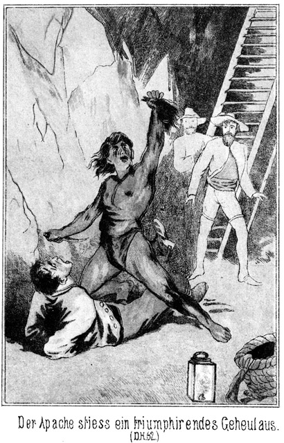Steinbach hatte an der Fahrt emporgeblickt. Er war ja bereit gewesen, hinauf zu steigen. Darum war er auf das sich mit so rapider Schnelligkeit abspielende Ereigniß erst aufmerksam geworden, als der Apache bereits auf Juanito kniete und ihm mit dem Messer rund um das Haar die Schnitte machte. Das Uebrige geschah so schnell, daß, trotzdem Steinbach sofort zusprang, er den Apachen doch erst packte, als dieser bereits die Kopfhaut in der Hand hatte.
Juanito brüllte natürlich wie ein Rasender. Er lag am Boden und peitschte denselben mit Händen und Füßen. Sein Geschrei hatte nichts Menschenähnliches.
»Was hast Du gethan!« sagte Steinbach zum Apachen.
»Rache!« antwortete dieser kurz.
»Das war jetzt nicht an der Zeit!«
»Die Marter war auch nicht an der Zeit.«
»Lieber solltest Du ihn tödten!«
»Tödten? Mein weißer Bruder weiß nicht, was ich erduldet habe. Andere haben noch mehr erlitten. Ein schneller Tod ist keine Strafe dafür. Ich habe ihm den Scalp genommen. Er mag heulen, bis ihm eine andere Kopfhaut wächst. Ich werde hier bei ihm wachen, wenn mein Bruder emporsteigen will.«
»Gut! Aber quäle ihn nicht!«
Er stieg mit Günther an der Fahrt empor. Sie hatten noch nicht viele Sprossen zurückgelegt, so hörten sie den Apachen sagen:
»Mach den Mund zu, sonst schließe ich ihn Dir!«
Der Scalpirte aber brüllte fort.
»So werde ich Dich zum Schweigen bringen.«
Ein Röcheln erfolgte.
»Um Gotteswillen, er erwürgt ihn!« sagte Langendorf, indem er im Steigen inne hielt.
»Nein,« antwortete Steinbach.
»Du hörst es ja. Das ist ein Todesröcheln!«
»Habe keine Sorge. Der Apache will nicht den Tod seines Peinigers; er will ihn am Leben lassen, damit derselbe die Schmerzen durchkosten muß, welche die entsetzliche Kopfhautwunde verursacht. Er erdrosselt ihn sicherlich nicht, sondern er preßt ihm nur die Gurgel zusammen, damit er nicht länger so schreien und brüllen soll. Komm!«
Sie stiegen weiter. Es ging bedeutend hoch hinauf. Endlich, als sie das Ende der Fahrt erreichten, befanden sie sich, unter einem Dache, welches, nur an den vier Ecken von Holzsäulen getragen, der Luft freien Zutritt gestattete. Die Sterne des Himmels leuchteten von den vier offenen Seiten herein. Und beim Scheine dieses Sternenschimmers und der Laterne erkannten sie eine männliche Person, welche am Ausgange der Fahrt saß und, als Steinbach, welcher voranstieg, am Ausgange der Fahrt erschien, diesen fragte:
»Was geschieht da unten, Apache? Wer schreit so?«
Die Frage war in Indianersprache gethan worden. Steinbach antwortete spanisch:
»Juanito ist scalpirt worden.«
»Von wem?«
»Von dem Apachen.«
»Donnerwetter!«
Der Mann sprang empor, wobei Steinbach Ketten klirren hörte, und sagte, als nun auch Langendorf herausstieg:
»Ihr seid nicht der Apache! Ihr seid Weiße! Der Hund von Juanito ist scalpirt! Der Apache hat sich längst befreien und rächen wollen? Ist das geschehen? Wirklich? O, dann dürfen vielleicht auch wir hoffen!«
»Nein, hoffen dürft Ihr nicht!« sagte Steinbach in munterem Tone.
»Nicht? Wenn Juanito scalpirt ist?«
»Nein. Hoffen kann man doch nur Etwas, was noch nicht eingetroffen ist.«
»Freilich richtig.«
»Nun, so dürft Ihr auch nicht hoffen, frei zu werden. Ihr habt ja die Freiheit nicht erst zu erwarten, zu erhoffen, sondern sie ist bereits da.«
»Da? Jetzt? Hier?«
»Ja. Ich komme, um Euch zu sagen, daß Ihr frei seid, Sennor.«
»Herrgott! Ist es möglich?«
»Ja.«
»So sei dem Himmel Dank! Ich stand bereits in fürchterlicher Angst, daß es mir so gehen würde wie den Andern, die sich hier oben befinden.«
»Wie denn?«
»O, das läßt sich gar nicht beschreiben. Ich bin erst seit kurzer Zeit hier.«
»Ah! Heißt Ihr etwa Hauser?«
»Ja, Sennor.«
»So habe ich Euch zu grüßen.«
»Von wem?«
»Von Magda.«
»Ah! Ist sie – ist sie – ist – – –«
»Nun, sprecht weiter!«
»Bin ich etwa frei, weil sie diesem Roulin zu Willen gewesen ist?«
»Nein. Sie ist gar nicht hier; sie ist fort, wird aber bald zurückkehren, um Eure Befreiung mit Euch zu feiern. Und sodann habe ich Euch noch von einer andern Dame zu grüßen, nämlich von Eurer – –«
»Frau? Von meiner Frau?« fragte Hauser.«
»Nein.«
»O weh! Ich freute mich bereits.«
»Wie könnte ich Euch von Eurer Frau grüßen? Ihr habt ja gar keine Frau?«
»Ich? Freilich habe ich eine! Und leider ist sie hier ebenso gefangen wie ich!«
»Macht keinen Spaß!«
»Es ist mein Ernst. Ich kenne Euch nicht: ich weiß nicht, wie Ihr hierher und hier heraufgekommen seid; ich werde es aber wohl erfahren. Wie kommt es, daß Ihr meiner Versicherung, daß ich eine Frau habe, keinen Glauben schenkt?«
»Weil ich weiß, daß Ihr da nur flunkert. Seid Ihr getraut?«
»Ja.«
»Das wundert mich sehr.«
»Wieso? Warum?«
»Das wäre doch eine Mesalliance.«
»Ich verstehe Euch noch immer nicht.«
»Eine solche Dame heirathet doch nicht so leicht unter ihren Stand.«
»Stand? Welchen Stand meint Ihr?«
»Sollte die Frau Baronin Anna von Adlerhorst wirklich ihren Diener geheirathet haben?«
»Herr, mein Heiland – – –!«
»Seht, wie Ihr erschreckt!«
»Was redet Ihr!«
»Die Wahrheit! Aber fürchtet Euch nicht, mein lieber Hauser. Ich suche die Frau Baronin seit langen Jahren und fühle mich unendlich glücklich, daß ich sie nun gefunden habe.«
»Sennor, Ihr irrt Euch! Ihr irrt Euch ganz gewaltig!«
»Schon gut! Sprechen wir nicht davon. Nur das Eine will ich Euch sagen: Ich bin ganz ebenso ein Deutscher wie Ihr.«
»Ein Deutscher! Woher?«
»Das ist gleichgiltig. Wenn Ihr geheimnißvoll thut, kann ich es auch. Wie viele Männer giebt es hier oben?«
»Sechs.«
»Kennt Ihr sie?«
»Ja.«
»Habt Ihr mit ihnen gesprochen?«
»Nein. Ich kann nur Einen sehen. Nämlich es hat ein Jeder seinen Apparat zu versorgen und ist an diesen so gefesselt, daß er sich nicht über denselben hinaus bewegen kann. Aber die Namen kennen wir. Außer mir sind da ein gewisser Adler, der deutscher Abkunft sein muß, Wilkins, Groota, Helmers und Baring.«
»Habt Ihr nichts über die Lebensschicksale dieser Männer erfahren?«
»Nein. Man ist gegen mich noch sehr mißtrauisch, weil ich noch nicht lange Zeit hier bin.«
»Gebt Eure Fesseln her. Ich will sie lösen.«
»Also wirklich? Frei, frei! Hier sind meine Hände und Füße, Sennor – – ah, wie heißt Ihr?«
»Steinbach. Erst kommt Ihr daran; dann gehen wir weiter.«
Da der Schlüssel, welchen Steinbach besaß, in alle diese Schlösser paßte, so war es leicht, Hauser von den Schellen zu befreien. Und nun wurden die Andern aufgesucht.
Sie befanden sich oben auf der Kuppe des Felsenberges. Es waren da mehrere kleine Gebäude errichtet, in denen sich Oefen und Retorten befanden. In jedem dieser Gebäude stand ein Mann in Fesseln.
Man kann sich das Glück dieser Männer denken, als sie die Kunde von ihrer Befreiung vernahmen. Außer Hauser hatten sie Alle ein höchst beklagenswerthes Aussehen. Beim Reinigen des Quecksilbers waren sie der Einwirkung dieses Metalles sehr ausgesetzt; glücklicher Weise aber gab es hier oben einen fast immerwährend über die Kuppe streifenden Luftzug, welcher die giftigen Dünste zum größten Theile mit sich fort nahm.
In Beziehung auf ihre Kleider waren sie nicht viel besser daran als die Frauenzimmer vorhin. Ebenso hatten sie vom Hunger und Durst zu leiden gehabt. Es erschien ihnen unglaublich, jetzt plötzlich frei zu sein, mitten in der Nacht, so unerwartet. Sie befanden sich in Folge dessen in einem leicht erklärlichen, taumelartigen Zustande.
Meist aus diesem Grunde sah Steinbach davon ab, sofort mit Wilkins und Adler über ihre Familienverhältnisse zu sprechen. Er hielt es für besser, damit noch zu warten, und forderte die Männer auf, ihm nach unten zu folgen. Sie konnten dieser Aufforderung Folge leisten, da er ihnen natürlich auch die Fesseln gelöst hatte.
Es verlor da Keiner ein Wort. Sie fragten auch Steinbach nicht, wie er dazu komme, ihr Retter zu sein. Sie wußten, daß sie das auf alle Fälle erfahren würden.
Als sie unten bei dem Apachen anlangten, saß dieser neben Juanito und hielt ihm das Messer auf die Brust. Er hatte ihm gedroht, ihn augenblicklich zu erstechen, wenn er wieder zu schreien und zu klagen beginne. Das hatte geholfen. Juanito biß die Zähne zusammen und gab sich Mühe, seine Schmerzen zu überwinden. Trotzdem aber hatte er nicht Selbstbeherrschung genug, ein pfeifendes Stöhnen zu unterdrücken, welches der Indianer mit verächtlichen Worten beantwortete.
Dem Verwundeten wurden jetzt die Fußfesseln abgenommen. In seinem Zustande und bei der zahlreichen Begleitung war an einen Fluchtversuch, welcher unbedingt verunglückt wäre, gar nicht zu denken, und nun, nachdem man sich durch eifriges und aufmerksames Nachforschen vorher überzeugt hatte, daß keine Gänge und also in Folge dessen auch keine Gefangenen mehr vorhanden seien, wurde der Weg nach oben angetreten. Juanito mußte trotz seiner Verwundung laufen.
Oben angekommen, führte Steinbach die Männer zunächst in Roulins Zimmer, wo dieser Letztere seinen Kleidervorrath hatte, welcher vollauf zureichte, sie mit Anzügen zu versehen. Ob dieselben auch für die verschiedenen Figuren passend seien, darnach konnte freilich nicht gefragt werden.
Während die Halbnackten sich also ankleideten, suchten Steinbach und Langendorff nach Nahrungsmitteln für sie. Und als dann die Männer aßen und tranken, ging Steinbach zu den Frauen, welche aus Annitas Vorrathe und demjenigen der Alten auch nun bereits ihre Blößen bedeckt hatten.
Die Alte wurde mit Juanito in eine fensterlose Stube eingeschlossen. Die Bewachung der Beiden erhielt der Apache. Da konnte man sicher sein, daß es ihnen weder zu gut gehen noch gar der Gedanke an eine Flucht aufkommen werde.
Dann wurden die Männer und Frauen zusammengeführt. Es war im höchsten Grade rührend, als sich die Unglücklichen begrüßten, welche Jahre lang Leidensgefährten gewesen waren und einander in die Hände gearbeitet hatten, ohne sich nur gesehen zu haben.
Es bildeten sich bald Gruppen. Man frug und gab Antwort; man erzählte und berichtete.
Steinbach lehnte am Fenster und beobachtete die Einzelnen. Hauser hatte mit seiner angeblichen Frau im Schatten gestanden und sehr angelegentlich mit ihr gesprochen. Jetzt kamen Beide zu ihm heran, angeblich, um sich nochmals und ausdrücklich bei ihm zu bedanken. Bei dieser Gelegenheit sagte Hauser:
»Die Meinung aber, welche Ihr vorhin von uns hattet, ist eine irrige, Sennor. Ist es wahr, daß Ihr ein Deutscher seid?«
»Ja. Ihr auch?«
»Auch ich und meine Frau.«
»Nun, so können wir ja in unserer Muttersprache mit einander reden, gnädige Frau.«
Er hatte das zu ihr gesagt und dabei die letzten zwei Worte ganz besonders betont. Sie fuhr zusammen und sagte:
»Bitte, Herr Steinbach, nicht diese Anrede. Ich verdiene sie nicht.«
»Ganz wie Sie wünschen. Ich gebe freilich nicht gern zu, daß ich mich geirrt habe, muß aber doch nun einsehen, daß meine Vermuthung unbegründet war.«
»Darf ich Sie um die Freundlichkeit ersuchen, mir Nachricht von meiner Tochter zu geben?«
»Gern. Sie ist verreist und kann binnen vierundzwanzig Stunden hier wieder eintreffen.«
»Wohin ging die Reise?«
»Hinauf in die Berge nach dem Silbersee. Roulin nahm sie mit. Er hatte ihr angedroht, sie dort an den Gräbern der Apachenhäuptlinge zu opfern, wenn sie sich weigere, seine Liebe zu erwidern.«
»Herrgott! Ich erschrecke!«
»Sie haben keine Veranlassung zur Sorge. Ich befand mich mit einigen wackern Freunden am See, und es gelang uns, sein Vorhaben zu durchkreuzen. Fräulein Magda wurde gerettet. Sie befindet sich bereits auf dem Rückwege.«
Daß sie in Mohawk-Station wieder geraubt worden war, wollte er nicht mittheilen, um der armen Mutter keine Sorge zu bereiten. Diese sagte:
»So haben wir Ihnen nicht nur unsere sondern auch die Rettung unserer Tochter zu verdanken.«
»O, ich selbst habe wenig dabei gethan; es waren Andere da, einige amerikanische Jäger, einige Deutsche, darunter zum Beispiel ein gewisser Rothe, welcher drüben im Vaterlande im Dienste eines Herrn von Adlerhorst gestanden hatte.«
Als er diesen Namen nannte, zuckte sie leicht zusammen. Hauser fragte:
»Ist das nicht auch der Name, welchen Sie bereits vorhin oben auf dem Berge nannten?«
»Ja. Sie haben ihn noch nicht gehört?«
»Nein.«
»Es ist sonderbar, daß er mir während meiner Reise so oft begegnet. So traf ich zum Beispiel einen englischen Lord Eagle-nest, nicht weit von hier, in Gila-City, welcher – –«
»Eagle-nest?« fragte sie schnell und unvorsichtig.
»Ja. Dieses Wort heißt wunderbarer Weise zu deutsch auch Adlerhorst. Bei ihm befand sich ein deutscher Verwandter, welcher sich Hermann von Adlerhorst nannte.«
»Hermann, Hermann! O mein Gott, ich – – –«
Hauser gab ihr einen Wink, und sie schwieg erschrocken. Steinbach that so, als ob er ihren Ausruf gar nicht beachtet habe, und fuhr fort:
»Und sodann gab es irgendwo einen jungen Deutschen, welcher Oberaufseher oder Verwalter einer Pflanzung war und sich abgekürzt Adler nannte, eigentlich aber wohl Martin von Adlerhorst hieß.«
»Martin!« entfuhr es ihr.
»Diese beiden Adlerhorsts werden nächstens hier im Todesthale zu sehen sein.«
»Wann, wann?«
»Das ist unbestimmt. Es scheint mir, wie bereits gesagt, beschieden zu sein, allüberall auf diesen Namen zu treffen. So lernte ich in Constantinopel eine Sclavin kennen, ein wunderbar schönes Mädchen mit denselben blauen Augen und goldenem Haare wie Sie, Frau Hauser. Ich befreite sie aus der Sclaverei, und da stellte es sich heraus, daß sie eine Adlerhorst sei, als kleines Kind mit der Amme einer entsetzlichen Katastrophe entronnen. Die Amme lernte ich auch kennen.«
Die Frau stützte sich schwer auf Hausers Arm.
»Lebt sie noch?« fragte sie.
»Ja, Beide, das Kind und die Amme.«
»Wo?«
»In Deutschland.«
»Gott, wie gefährlich!«
»Gefährlich? Wie so?«
»Nun,« erklärte sie unter Zögern und Stocken, »ich will gestehen, daß ich den Namen Adlerhorst bereits einmal gehört habe. Es wurde drüben in der Heimath von einer Familie dieses Namens gesprochen, auf welcher ein großer, schwerer Fluch ruhen soll.«
»Ein unverdienter!«
»Denken Sie?«
»Woher wissen Sie das?«
»Ich vermuthe es aus Allem, was ich gehört habe.«
»Diese Adlerhorsts sollen sehr reich und glücklich gewesen sein, bis einst ein plötzlicher, jäher Wetterstrahl dieses Glück vernichtete und die Glieder des Hauses auseinander warf.«
»So ist es. Der Wetterstrahl kam aus der Türkei.«
»Wirklich?« hauchte sie.
Sie wankte. Hätte Hauser sie nicht gehalten, so wäre sie wohl umgesunken, dennoch fuhr Steinbach, fort:
»Und der Türke, welcher diesen Strahl schleuderte, hieß Ibrahim Pascha.«
»Wie, Sie kennen diesen Namen!«
»Ich kenne den Mann sogar persönlich. Er scheint unterstützt worden zu sein von einem Subjecte, welches sich unter den Namen Osman für einen Derwisch ausgab, eigentlich aber Florin hieß und Kammerdiener des Herrn von Adlerhorst gewesen war.«
»Ich bin im höchsten Grade erstaunt. Woher wissen Sie das Alles, Herr Steinbach?«
»Ich erfuhr es zufällig. Ich lernte auch diesen Derwisch kennen. Es ist mir Eins nur unklar, nämlich die Art und Weise, in welcher es möglich war, die sämmtlichen Glieder dieser Familie dazu zu bewegen, ihrem Namen für immer zu entsagen und nie und gegen Jemanden einzugestehen, daß sie ein Recht besitzen, sich Adlerhorst zu nennen.«
»Das wird wohl Geheimniß bleiben.«
»Vielleicht nicht. Ich vermuthe, daß es sich dabei um irgend eine Drohung handelt.«
»Das ist möglich,« seufzte sie.
»Wie aber nun, wenn das Object dieser Drohung in Wegfall kommt?«
»Oder wenn derjenige, welcher diese Drohung aussprach, sie nicht ausführen kann?«
»Er wird stets die Macht dazu haben.«
Steinbach legte lächelnd den Kopf zur Seite und sagte:
»Die Glieder dieser Familie, deren Schicksal meine innigste Theilnahme erregt, wissen vielleicht gar nicht, was indessen geschehen ist. Ibrahim Pascha ist gestürzt, und der Derwisch hat sich als Mörder in das Ausland flüchten müssen. Ich habe allen Grund, anzunehmen, daß er nächstens an irgend einem Stricke hängen wird.«
»Herr im Himmel! Wenn dies wahr wäre!«
Sie hatte die Hände zusammengeschlagen und blickte dem Sprecher groß und erwartungsvoll in das Gesicht.
»Sie meinen,« lächelte er, »wenn dies wahr wäre, so dürfte sich eine gewisse Frau Hauser auch endlich wieder Frau von Adlerhorst nennen?«
»Wieder Ihre Vermuthung!«
»Nicht Vermuthung, gnädige Frau. Ich weiß, wer Sie sind, und ich gebe Ihnen mein Ehrenwort, daß Sie Ihren richtigen, ehrenhaften Namen mit vollem Rechte und ohne alle Besorgniß tragen dürfen.«
»Sie vergessen, daß Frau von Adlerhorst todt ist!«
»Sie lebt.«
»Selbst wenn sie noch lebt, ist sie die Unglücklichste der Frauen, arm, elend und verstümmelt. Sie hat keine Hände und keine Zunge mehr.«
»O, man verstümmelte glücklicher Weise nur die Amme, welche man für die Mutter hielt.«
»So wissen Sie Alles, wirklich Alles!«
»Daraus können Sie entnehmen, daß Sie mir vertrauen dürfen, gnädige Frau.«
Ihre Augen standen voller Thränen. Sie blickte ihm unschlüssig in das Angesicht. Sie kämpfte zwischen der bisherigen Vorsicht und dem Eindrucke, welchen seine ganze Erscheinung auf sie machte. Da streckte er ihr die Hände entgegen und sagte in herzlichster, unbedingt gewinnender Weise:
»Hier meine Hand! Haben Sie Vertrauen zu mir!«
Da konnte sie nicht anders; sie reichte ihm die ihrige und antwortete:
»Ich weiß nicht, wie mir ist, wenn ich Ihnen in das Gesicht sehe, Es ist mir, als ob ich Sie schon lange, lange Zeit kenne, als ob ich viel, sehr viel Gutes von Ihnen erfahren habe und auch fernerhin nur Glück und Segen von Ihnen zu erwarten hätte.«
»So ist es recht. So habe ich es gewünscht. Ich weiß, warum in meinen Zügen etwas Ihnen Sympathisches, Bekanntes liegt. Wir werden darüber noch anderweit sprechen. Nun aber endlich, nicht wahr, Sie sind Frau von Adlerhorst?«
»Ja.«
Sie mußte alle ihre Beherrschung zusammen nehmen, um nicht in lautes Weinen auszubrechen. Sie, die vornehme, reiche, einst so schöne Frau, jetzt arm, krank, verfolgt, soeben erst aus der elendesten Lage errettet!
Er reichte ihr den Arm und bat:
»Kommen Sie mit. Die gegenwärtige Umgebung paßt nicht für Ihre jetzige Stimmung. Sie dürfen Ihr Geheimniß zwar mir mittheilen, es aber nicht Jedermann verrathen. Ich führe Sie in ein Zimmer, wo Sie sich von den körperlichen und seelischen Strapazen ausruhen und erholen können. Später, wenn Sie sich kräftiger fühlen, werde ich Ihnen ausführlichere Mittheilungen machen.«
Er führte sie nach Roulins Zimmer, weil dies das am besten ausgestattete war. Er sprach weiter kein Wort mit ihr. Sie sank auf das Bette, und er kehrte zu den Anderen zurück.
Was er so ziemlich als gewiß erwartet hatte, das geschah: Adler, der einstige Oberaufseher Wilkins' kam auf ihn zu, zog ihn an das Fenster, wo sie von den Andern nicht gehört werden konnten, und sagte:
»Herr Steinbach, eine Frage. Nicht wahr, dieser Mann, welcher sich soeben dort in der Ecke niedersetzt, heißt Hauser?«
»Ja.«
»Was ist er?«
»Was er gegenwärtig ist, weiß ich leider nicht.«
»Aber früher?«
»Herrschaftlicher Diener.«
»Er ist ein Deutscher?«
»Ja.«
»Kennen Sie die Familie, welcher er servirte?«
»Es ist eine Familie Adlerhorst.«
»Himmel! Also doch!«
»Sie erschrecken?«
»Nein. Ich kannte nämlich zufälliger Weise früher einige Glieder dieser Familie.«
»So, so!« nickte Steinbach mit feinem Lächeln.
»Ist die Dame, welche Sie fort geleiteten, die Frau dieses Hauser?«
»Er giebt sie dafür aus.«
»Es scheint mir, als ob ich sie einst unter einem andern Namen kennen gelernt hätte.«
»Vielleicht unter dem Ihrigen?«
Adler blickte rasch empor. Er sah Steinbachs großes, klares Auge freundlich auf sich ruhen und antwortete:
»Unter dem meinigen? Wie könnte das sein?«
»Nun, zunächst ist es auch mir so, als ob Sie sich nur vorübergehend des Namens Adler bedienten.«
»Ich wüßte keinen Grund dazu. Der Name, welchen ich trage, ist kein falscher; das kann ich Ihnen mit meinem Ehrenworte versichern.«
»Ganz gewiß! Er ist kein falscher; er besteht ja in der ersten Hälfte des richtigen. Warum aber lassen Sie das »Horst« und das adelige »von« weg?«
»Sie scherzen!«
»Mein lieber Freund, ich mache eine Wette, daß Sie eigentlich Martin von Adlerhorst heißen!«
»Sie bringen mich in Verlegenheit!«
»Und daß Sie mit dieser Frau Hauser verwandt sind. Sie sehen ihr außerordentlich ähnlich.«
»Das dürfte Zufall sein. Ich habe überhaupt das Gesicht der Dame gar nicht genau gesehen. Dieses Talglicht brennt sehr trübe, und zudem stand Frau Hauser stets im Schatten.«
»Und doch ist sie Ihnen aufgefallen! Sie sehen aber ferner auch einem meiner Freunde so ähnlich wie ein Bruder dem andern. Er heißt Hermann von Adlerhorst.«
»Sie kennen ihn?« entfuhr es Adlern.
»Ja. Ich habe sogar seine Photographie mit.«
»Ah! Darf ich sie sehen?«
»Wenn ich sie Ihnen zeigen soll, so muß ich Sie ersuchen, sich mit in mein Zimmer zu verfügen.«
»Sehr gern.«
»So bitte, kommen Sie!«
Er führte ihn hinaus und in das Parterregeschoß, wo Roulins Zimmer lagen. Dort that er, als ob ihm plötzlich ein Einfall käme, und sagte:
»Treten Sie durch die dritte Thür dort rechts. Ich komme gleich nach, muß nur schnell erst nach der Leiter in der Cysterne sehen.«
Er trat in den Hof und huschte dann mit weiten, schnellen Schritten nach der schießschartenähnlichen Oeffnung, welches dem Zimmer, in dem Frau Hauser sich befand, als Fenster diente. Er konnte die Stube übersehen. Die Frau ruhte noch auf dem Bette, den Kopf in die Hand gestützt. Ihr bleiches, eingesunkenes Gesicht wurde von einem Lächeln erfüllt, jedenfalls hervorgezaubert durch Das, was sie von Steinbach gehört hatte.
»Gott wird mir verzeihen, daß ich hier den Lauscher mache,« flüsterte dieser vor sich hin. »Ich muß ja sehen und wissen, ob meine Absicht gelingt.«
Jetzt wurde die Thür geöffnet, und Adler trat ein. Ohne sich vorher umzusehen, zog er die Thür hinter sich zu und that einige Schritte vorwärts. Als er dann aber eine Wendung machte, erblickte er die jetzige Inhaberin des Raumes, welche sich aus ihrer liegenden Stellung emporgerichtet hatte und ihn mit weit geöffneten Augen anstarrte.
Das brennende Licht reichte in dieser kleinen Stube zu, Beider Züge genügend zu beleuchten. Adler fuhr zurück.
»Herr, mein Gott!« rief er aus.
Auf seinem Gesichte kämpfte das Entzücken mit der Angst, daß er sich irren könne.
»Heiliger Himmel!« rief sie mit ihm zu gleicher Zeit. »Täusche ich mich?«
Sie breitete die Arme aus, wie um ihn zu umfangen, ließ sie aber wieder sinken. Beide waren so viele Jahre getrennt gewesen und hatten da und auch unter den Leiden der letzten Zeit ihr Aussehen verändert. Aber die Stimme des Herzens sprach lauter als aller Zweifel:
»Mutter!«
»Martin!«
»Mutter, meine liebe, liebe Mutter!«
Er stürzte hin zu ihr und sank vor dem Bette in die Kniee. Sie bog sich nieder, zog seinen Kopf an ihr Herz und rief wonneschluchzend:
»Du, Du bists! Dich habe ich wieder, Dich! Endlich, endlich! Dieser einzige Augenblick macht mich gesund. Gott ist doch barmherzig; fast wollte ich zweifeln!«
Sie glitt langsam vom Bette herab und auf ihre Kniee nieder. So knieten sie eng verschlungen bei einander, still, ohne ein Wort zu sagen; aber die Thränen flossen. Und als doch endlich gesprochen wurde, da war es die Mutter, welche sich den Armen des weinenden Sohnes entwand und unter Schluchzen sagte:
»Martin, vergessen wir Den nicht, der uns wieder zusammenführt. Den, der dort über den Sternen thront! Ja, Herr und Gott, Du Vater der Elenden und Erretter der Bedrängten, Dein Auge ist allsehend, und Deine Barmherzigkeit lenkt jeden Schritt der Zaghaften und Irrenden. Dein sind wir im Leben und im Tode. Du führst uns durch Trübsal zur Herrlichkeit. Dank, Ehre, Ruhm und Preis sei Dir jetzt und in alle Ewigkeit!«
Draußen aber vor dein Fenster drehte Steinbach sich um und wischte sich die fließenden Thränen vom Angesichte. Dann schlich er sich fort. Bereits nach wenigen Schritten blieb er wieder stehen, drehte sich gegen Osten, als ob sich dort Jemand befinde, der es hören werde, und sagte in innigem Tone:
»Ja, Gott sei Dank! Dies ist gelungen. Mein lieber, lieber Vater, wenn Du es erfährst, wirst Du zufrieden sein mit Deinem Sohne. Bald, bald wird Deine Schuld glänzend abgetragen sein!«
Wäre der Lauscher nun noch vorhanden gewesen, so hätte er drinnen im Zimmer ein liebevolles Flüstern und Fragen, ein eiliges Berichten und Erzählen hören können. Mutter und Sohn saßen Hand in Hand bei einander und ließen die Vergangenheit an sich vorüber gehen.
Darüber verging die Zeit. Der grauende Tag begann seinen Schein durch die enge Mauerspalte herein zu senden. Das Licht war zu einem Stümpfchen zusammengeschmolzen und verlöschte.
»Es ist Tag,« sagte Martin von Adlerhorst. »Du bedarfst der Ruhe. Schlafe, meine liebe Mutter, und dann, wenn Du erwachst, sprechen wir weiter.«
»Ja mein Sohn. Dann mag Steinbach, dieser geheimnißvolle Mann, welcher die Räthsel unsers Lebens besser zu lösen weiß als wir selbst, uns die Schleier lüften, hinter welche wir jetzt noch nicht blicken können. Gute Nacht, Martin!«
»Schlafe wohl, Mutter! Ich werde jetzt nachsehen, ob Steinbach vielleicht noch wach ist. Nach Ereignissen wie die heutigen, denkt man nicht so leicht und schnell an Schlaf. Ich suche ihn auf, und finde ich ihn, so soll er meinen Bitten wohl nicht widerstehen.«
Er ging.
Was den ersten Theil seiner Worte betraf, so hatte er ganz richtig vermuthet: Die Geretteten hatten trotz ihres Schwächezustandes noch nicht an den Schlaf gedacht. Sie saßen noch beisammen, Männer und Frauen, und erzählten sich, wie sie nach und nach, eine Person nach der andern, in die Hand Roulins gefallen waren und was sie von da an hatten erdulden müssen.
Steinbach saß abseits von ihnen auf einer Matte und hörte ihnen zu. Er war dabei beschäftigt, sich Patronen zu machen. Adler, oder vielmehr nun Martin von Adlerhorst, trat sofort zu ihm, streckte ihm die Hand entgegen und sagte:
»Herr Steinbach, ich fühle mich Ihnen zum innigsten, allerinnigsten Dank verpflichtet. Ich habe zwar nicht die versprochene Photographie gesehen, dafür aber eine Person, welche mir theurer sein muß als ein bloses Bild, welches Sie übrigens wohl gar nicht besitzen.«
»Sie errathen es,« antwortete Steinbach. »Ich habe keine Photographie. Ich benützte diesen Vorwand, Sie zu Ihrer Mutter zu schicken, und hoffe, daß Sie nun nicht mehr meinen werden, es sei nothwendig, Ihren Stand und Namen zu verleugnen.«
»Und doch bin ich gezwungen, dies auch noch fernerhin zu thun.«
»Ich sehe keinen Grund dazu.«
»Ich habe einen Schwur ablegen müssen, einen fürchterlichen Schwur.«
»Gegen wen?«
»Leider darf ich das nicht sagen.«
»Hat Ihre Mutter auch geschworen?«
»Auch, ganz ebenso wie ich und wie alle meine Geschwister.«
»Doch nur die älteren. Magda hat zum Beispiel doch unmöglich schwören können.«
»Sie nicht, sie war noch gar nicht geboren.«
»Und Sie kennen aber die Einzelnheiten jener gewaltsamen Katastrophe, in Folge deren Ihre Familie getrennt und Ihre Existenz vernichtet wurde?«
»So weit sie meine Person betrifft, ja.«
»Hat Ihre Mutter Ihnen jetzt nichts erzählt?«
»Nein. Sie darf von jener Angelegenheit nicht sprechen, eben in Folge jenes Schwures.«
»Nun, so will ich Sie auch nicht mit Fragen belästigen, obgleich ich eigentlich die Absicht hatte, Mehreres zu erfahren. Ihre Angelegenheit interessirt mich im höchsten Grade.«
Martin blickte ihn forschend an und fragte:
»Sie scheinen sich sehr eingehend mit derselben beschäftigt zu haben?«
»Allerdings.«
»Würde ich wohl den Grund erfahren können, wegen dessen Sie uns eine solche Theilnahme widmen?«
»Hm! Es ist vielleicht nur derselbe allgemeine Grund, welcher einen jeden Menschen bewegt, sich mit Personen zu beschäftigen, deren Schicksale keine gewöhnlichen sind.«
»Aber Sie haben gewußt, daß wir Adlerhorst heißen?«
»Ich vermuthete es.«
»So müssen Sie unsere Familie gekannt haben.«
»Ein Wenig.«
»Woher?«
»Mein lieber Freund, Sie schweigen meinen Fragen gegenüber und wollen doch von mir Alles wissen!«
»Das darf Sie doch nicht überraschen. Nicht nur Ihre Person, sondern auch Ihr ganzes Auftreten und Handeln ist ein solches, daß man wißbegierig wird, Näheres zu erfahren. Sie nennen sich Steinbach. Sollte dies Ihr richtiger, wirklicher Name sein?«
»Zweifeln Sie daran?«
»Aufrichtig gestanden, ja. Sie erwecken die Vermuthung, daß Sie nicht Der sind, für welchen Sie sich ausgeben.«
»O wehe! Halten Sie mich etwa für einen verkappten Polizisten?«
»Nein, das nicht. Sie machen einen andern Eindruck. Ich möchte Sie für einen höheren Officier, für den Angehörigen einer ausgezeichneten Familie halten.«
»Das klingt mir schmeichelhaft.«
»Bitte, seien Sie aufrichtig!«
»Aber Sie sind es nicht!«
»Mein Schwur verhindert mich, über meine Verhältnisse zu sprechen.«
»Nun gut, so nehmen Sie an, daß ich einen ähnlichen Schwur habe ablegen müssen. Warten wir also mit den von uns gegenseitig gewünschten Eröffnungen, bis wir die Erlaubniß haben, uns dieselben zu machen. Jetzt nimmt uns die Gegenwart vollständig in Anspruch. Sie sind aus einer schrecklichen Lage befreit worden, aber Sie befinden sich noch nicht außer aller Gefahr.«
»Leider!«
»Wie? Kennen Sie die Gefahr, von welcher ich spreche?«
»Ja. Sie meinen doch unsern Gesundheitszustand. Wir sind vergiftet, und selbst wenn wir ärztliche Hilfe in Anspruch nehmen, ist es sehr fraglich, ob wir die eingebüßte Gesundheit wieder erlangen werden.«
»Was das betrifft, so möchte ich Sie bitten, die Hoffnung nicht fallen zu lassen.«
»Das thue ich ja auch nicht. Glücklicher Weise befanden sich die Retorten und Destillirapparate auf der Höhe des Felsens, wo die Luft ungehinderten Zutritt hatte und die schädlichen Dünste fortführte.«
»Das war allerdings ein glücklicher Umstand. Aber als ich von einer Gefahr sprach, in welcher Sie sich noch befinden, dachte ich nicht an Ihren Gesundheitszustand, sondern an etwas Anderes. Nämlich Roulin kehrt von seinem Ausfluge zurück und bringt einige Hundert Papago Indianer mit.«
»Mein Gott! So lassen Sie uns fliehen, so lange es noch Zeit ist!«
»Fliehen? Es wäre dies das erste Mal im Leben, daß ich vor irgend Jemand die Flucht ergriffen hätte.«
»Pardon! Es war nicht meine Absicht, eine Feigheit zu begehen, oder gar Sie zu einer solchen zu bereden. Ich meine nur, daß wir ja verloren sind, wenn wir uns hier von ihm und den Indianern antreffen lassen. Wir gehen von hier fort und kommen mit polizeilicher Begleitung wieder, um uns seiner Person zu bemächtigen.«
»Sie sind ein großer Schlauberger!« lächelte Steinbach.
»Hat mein Vorschlag Ihren Beifall nicht?«
»Nein, gar nicht. Meinen Sie, daß wir Roulin später hier antreffen würden? Wenn er bei seiner Rückkehr findet, daß seine Gefangenen befreit worden sind, so wird er sich ganz gewiß in aller Eile unsichtbar machen und dem strafenden Arm der Gerechtigkeit entgehen. Wir bleiben hier, um ihn zu erwarten.«
»Das wäre meiner Ansicht nach tollkühn. Bedenken Sie unsern Zustand! Sie und Herr Günther sind die einzigen Gesunden. Wir andern sind zu einer Gegenwehr unfähig.«
»Wir haben aber Helfer. Nämlich hinter Roulin und seinen dreihundert Papago's kommen einige Freunde von mir mit vierhundert Apachen und Maricopa's. Sie folgen ihnen auf dem Fuße.«
Soeben trat Günther von Langendorff herbei. Er hörte die letzteren Worte und sagte:
»Werden unsere Verbündeten sich während des Rittes vor den Papago's sehen lassen?«
»Gewiß. Ich habe ihnen dies überhaupt angeordnet. Sie sollen die Papago's treiben, ihnen keine Ruhe lassen, damit die Feinde keine Zeit finden, irgend welche Anschläge auf Magda und Almy auszuführen.«
»Magda?« fiel da Adler schnell ein. »Meinen Sie etwa Magda Hauser, Schwester?«
»Ja.«
»Was hat sie mit den Papago's zu schaffen?«
»Sie befindet sich in der Gewalt derselben.«
»Herrgott!«
»Ich habe das Ihnen und Ihrer Mutter bisher verschwiegen; jetzt aber müssen Sie es doch erfahren.«
»Wie ist sie in die Hände der Papago's gekommen?«
»Herr von Langendorff mag es Ihnen nachher erzählen; ich habe jetzt keine Zeit dazu. Uebrigens habe ich die Ueberzeugung, daß den beiden jungen Damen nichts geschehen werde.«
»Wer ist die Andere? Sie nannten sie Almy.«
»Ein Ihnen bekannter Name. Nicht?« fragte Steinbach lächelnd.
»Ja.«
»Nicht nur bekannt, sondern wohl auch lieb?«
»Ich verstehe Sie nicht.«
»Der vollständige Name der Dame ist Almy Wilkins.«
»Wilkins?« rief Adler laut. »Mein Himmel! Sie meinen doch nicht etwa – – –?«
Er sprach seine Vermuthungen nicht aus, aber sein Auge war mit größter Spannung auf Steinbach gerichtet.
»Ich meine Almy Wilkins aus Wilkinsfield, wo Sie einst Oberaufseher waren.«
»Also doch, doch! Almy ist hier! Almy! Und zwar in der Gewalt der Indianer?«
»Ja. Und ihr Vater ist bei ihr.«
»Welch ein Ereigniß! Ich weiß nicht, was ich vor Erstaunen sagen soll. Wie aber kommt Wilkins mit seiner Tochter in diese Gegend?«
»Herr von Langendorff mag auch das Ihnen erzählen. Ich habe, wie bereits gesagt, keine Zeit dazu. Ich muß aufbrechen, und zwar bereits in wenigen Minuten.«
»Aufbrechen?« fragte Langendorff. »Du willst von hier fort?«
»Ja.«
»Und wir Alle natürlich mit?«
»Nein. Ihr bleibt hier, bis ich wiederkomme.«
»Warum? Weshalb? Wohin willst Du reiten, so bei Nacht und Nebel?«
»Den Papago's entgegen.«
»Bist Du toll?«
»Nein, mein Lieber. Ich reite fort, um Unterstützung zu holen. Unsere Freunde folgen den Feinden auf dem Fuße. Ich suche die Ersteren auf, um mir eine Schaar Apachen geben zu lassen, welche ich hierher führe, in aller Eile, ohne daß Roulin Etwas davon bemerkt. So bringen wir ihn und seine Papago's zwischen zwei Feuer.«
»Der Gedanke ist ausgezeichnet. Aber weißt Du denn, wo Du die Apachen treffen wirst?«
»Nein, aber treffen werde ich sie.«
»Viel eher glaube ich, daß Du auf die Papago's stoßen wirst, welche ja voran sind.«
»Natürlich werde ich diese zuerst sehen.«
»Pah! Mein Lieber, Du hältst mich für sehr befangen und unerfahren. Der Fürst der Bleichgesichter weiß ganz genau, was er zu thun hat, was er wagen darf und was nicht.«
»So reite ich mit!«
»Das geht nicht. Willst Du diese schwachen und hilfsbedürftigen Leute hier allein lassen? Einer von uns Beiden muß bei ihnen zurückbleiben.«
»Was aber thue ich, wenn Roulin mit seinen Papago's hier eintrifft, ehe Du zurückkehrst?«
»Du lässest ihn sehr einfach nicht herein. Das Andere ist dann meine Sache. Während meiner Abwesenheit hast Du dann Zeit, Herrn Adler hier Alles zu erklären und zu erzählen.«
»Aber Du begehst ein großes, großes Wagniß!«
»Nein. Mein Pferd ist kräftig. Es hat eine Parforcetour zu machen, wird sie aber aushalten. Das ist die Hauptsache.«
»Kennst Du denn die Gegend?«
»Nein. Aber das darf Dir keine Sorge machen. Ich habe Augen, um zu sehen, und einen Kopf, um nachdenken zu können. Ueberdies besitzt ein jeder Westmann einen eigenartigen Instinct, auf welchen er sich selbst in den schwierigsten Lagen verlassen kann.«
»Es ist nicht nur möglich, sondern sogar wahrscheinlich, daß Du die Gesuchten verfehlst, daß Du sie gar nicht antriffst, daß also Roulin mit seinen Indianern hier eintrifft, während Du die Zeit verbrauchst, indem Du ihn vergeblich suchst.«
»Ich finde ihn. Darauf kannst Du Dich verlassen.«
»In der Wildniß, wo es keine Wege giebt!«
»Die Papago's werden von dem Punkte aus, an welchem sie den Ritt begonnen haben, also vom Colorado unterhalb Aubrey an, den kürzesten Weg eingeschlagen haben. Sie kommen über die Berge herüber. Ich brauche diese Höhen nur von Weitem zu sehen, um zu wissen, welches Defilé am bequemsten ist, und also von ihnen gewählt wurde. Da sie die Gefangenen bei sich haben, können sie nicht allzu sehr eilen. Es ist möglich, daß sie bereits heute Abend hier ankommen, wahrscheinlicher aber dürfen wir sie erst morgen erwarten. Da habe ich mir neue Patronen gemacht, falls ich gezwungen bin, mich der Waffe zu bedienen. Du siehst, daß ich auf Alles gefaßt bin, und brauchst Dich nicht um mich zu sorgen. Uebrigens habe ich unten in Roulins Zimmer Gewehre, Blei und Pulver gesehen. So schwach die Leute sind, bei denen Du hier zurückbleibst, ein Gewehr können sie im Nothfalle abschießen. Und wenn Du ganz einfach das Thor nicht öffnest, wird kein Mensch Euch ein Leid zufügen können. Ich will jetzt mein Pferd tränken, und dann kann ich aufbrechen.«
Er ging nach dem Hofe. Adler wendete sich an Günther von Langendorff:
»Ein ganz und gar eigenartiger Mann, dieser Herr Steinbach! Er macht einen gewaltigen Eindruck. Sie nennen sich Du mit ihm; also kennen Sie ihn?«
»Sehr genau sogar.«
»Nicht wahr, er heißt eigentlich nicht Steinbach?«
»Hm!«
»Ich weiß wohl, daß meine Frage zudringlich ist, aber Sie begreifen – ich vermuthe, daß er der Sohn einer adeligen Familie ist.«
»Ich mag Sie in Ihren Vermuthungen weder stören noch bestärken. Steinbach spricht nicht gern von sich, und ich habe nicht die Erlaubniß erhalten, von seinen Verhältnissen zu reden.«
»Also Geheimniß! Gut, ich werde nicht wieder unbescheiden sein.«
»Von einer Unbescheidenheit ist gar keine Rede. Man will den Mann, für welchen man sich interessirt, kennen lernen. Das ist doch sehr natürlich. Steinbach ist Ihr Retter. Es ist also nicht zu tadeln, daß Sie sich nach ihm erkundigen.«
»Nicht er allein ist der Retter. Sie sind es auch mit.«
»Ich? Da irren Sie sich freilich. Ich bin mit ihm geritten; das ist Alles. Mir haben Sie gar nichts zu verdanken. Seine Erfahrung, sein Muth, seine Umsicht sind es, die Ihnen Ihre Befreiung verschafft haben. Ich wäre nicht der Kerl dazu gewesen, nach dem Todesthale zu gehen und da Ihren Aufenthalt zu entdecken. Er hat, noch ehe er hierher kam, gewußt, daß Sie sich hier befinden.«
»Wie konnte er es wissen?«
»Wohl in Folge jenes außerordentlichen Instinctes, von welchem er vorhin sprach. Er besitzt eine geradezu erstaunliche Divinationsgabe. Lassen Sie ihm die kleinste Feder sehen, so weiß er sofort, wo er den Vogel fangen wird.«
»Da ich nicht nach ihm fragen darf, so erlauben Sie mir wenigstens, mich nach Ihnen zu erkundigen. Ihr Name ist mir nicht unbekannt. Ich erinnere mich, daß die Langendorff eine alte, in Preußen begüterte Familie sind.«
»Ihre Erinnerung hat Sie nicht falsch geführt. Ich bin der einzige Sohn meiner Eltern. Jetzt bin ich Tourist, eigentlich aber Soldat und zwar Rittmeister.«
»Ah! Jetzt kann ich weiter schließen. Sie theilen mir also doch mit, was Sie eigentlich nicht sagen wollten.«
»Was denn?«
»Wenn Sie Rittmeister sind und sich mit Steinbach Du nennen, so kann man vermuthen, daß er ein Kamerad von Ihnen ist, also wohl auch Officier.«
»Ja, da habe ich mich freilich verplempert,« lachte Langendorff.
»Habe ich recht gerathen?«
»Ja. Da ich einmal A gesagt habe, will ich auch B sagen, dann aber keine Silbe weiter. Es ist das Alles, was ich Ihnen unter dem Siegel der Verschwiegenheit verrathen darf: Ja, er ist Officier, und zwar was für einer! Er ist Oberst.«
»Oberst? Bei seinen Jahren!«
»Ja. Sie sehen daraus, daß er ein tüchtiger Kerl ist.«
»Ein tüchtiger Kerl und jedenfalls auch aus einer sehr vornehmen Familie!«
»Ja. Ich will Ihnen anvertrauen, daß er eigentlich »Durchlaucht« genannt wird. Weiter aber erfahren Sie nun nichts mehr. Meine Person aber möchte ich Ihnen sehr dringend empfehlen.«
»Das ist nicht nöthig. Als unser Retter sind Sie mir so empfohlen, wie Sie nur wünschen können.«
»Das ist mir lieb. Ich habe nämlich einen sehr persönlichen und auch egoistischen Grund, mich zu freuen, mit Ihnen bekannt worden zu sein. Vielleicht erkläre ich mich Ihnen bereits in kurzer Zeit noch deutlicher. Für jetzt muß ich noch schweigen, hätte auch keine Zeit zum Sprechen, da, wie ich sehe, Sie jetzt anderweit in Anspruch genommen werden.«
Er trat zurück. Er hatte gesehen, daß Hauser langsam und zaghaft näher kam.
Dieser brave Mann hatte bis jetzt noch kein Wort mit Adler gesprochen, ihn aber von Weitem beobachtet. Jetzt endlich wagte er es, sich ihm zu nähern.
»Herr Adler,« sagte er, sich devot verneigend, »ich weiß nicht, ob ich es wagen darf – – –«
»Alles, Alles darfst Du wagen,« fiel Adler ein, indem er ihm die Hand entgegenstreckte.
»Herr Adler – gnädiger Herr!«
Daß er Du genannt wurde, war ihm der Beweis, daß Adler sich ihm gegenüber nicht in's Geheimniß hüllen wolle. Er ergriff die ihm dargebotene Hand und zog sie an seine Lippen. Die Thränen standen ihm dabei in den Augen.
»Braver Kerl!« sagte Adler. »Ich habe Dir viel, sehr viel zu verdanken, mein lieber Friedrich.«
»Gott, Sie erkennen mich?«
»Bereits vorhin habe ich Dich erkannt.«
»Nach so langer Zeit! Ich Sie aber auch, mein lieber, gnädiger Herr. Herrgott, wie freue ich mich, Sie zu sehen, Sie am Leben zu treffen.«
»Ich mich nicht minder darüber, daß wir uns hier begegnet sind. Du bist – ah, eigentlich sollte ich Dich wohl Vater nennen?«
Er sagte dies in scherzhaftem Tone. Hauser erröthete vor Verlegenheit und antwortete:
»Verzeihung! Es ging nicht anders!«
»Oder noch genauer: Stiefvater. Du bist ja der Mann meiner Mutter.«
»Die gnädige Frau wollte es so haben; ich mußte sie für meine Frau ausgeben. Da konnte sie unbeobachteter und verborgener bleiben.«
»Sie hat es mir vorhin gesagt. Sie hat mir auch erzählt, daß sie Dir ihre Rettung zu verdanken hat. Und diese langen, langen Jahre hast Du für sie gesorgt, unter Entbehrungen und Aufopferungen, die ich Dir nicht hoch genug anrechnen und auch niemals vergelten kann.«
»O, bitte, gnädiger Herr, beschämen Sie mich nicht! Ich habe meine Pflicht gethan. Vielleicht erhört Gott mein tägliches Gebet und giebt Ihnen das Glück zurück, auf welches Sie seit einer so langen Zeit haben verzichten müssen. Hat die gnädige Frau Ihnen von jenen fürchterlichen Tagen erzählt?«
»Nein. Sie darf nicht sprechen; sie hat geschworen, zu schweigen.«
»Ich ebenso. Darum muß auch ich bitten, mich nicht zu fragen. Vielleicht kommt einmal die Zeit, in welcher dieser Schwur von uns genommen wird. Ist Ihnen dieser Herr Steinbach bekannt, welcher soeben eintritt?«
»Nein.«
»Mir fällt seine Gestalt und sein Gesicht auf. Beides kommt mir vor, als hätte ich es bereits einmal gesehen, vor Jahren aber schon.«
»Wo?«
»Das weiß ich nicht. Ich habe mir darüber den Kopf zerbrochen. Es ist mir, als müsse diese hohe, breite Gestalt in einer glänzenden Uniform stecken. Verzeihung, da kommt er!«
Hauser zog sich respektvoll zurück, weil Steinbach näher kam und seine Worte an Adler richtete:
»Bevor ich fortreite, möchte ich gern erfahren, wie Sie in Roulins Gewalt gekommen sind, Sie und Herr Wilkins.«
»Mein Freund Wilkins ist ihm natürlich weit eher in die Hände gefallen, als ich. Er hat in Santa Fé einen gewissen Walker kennen gelernt, welcher ihn hierher lockte. Er wurde als Gast von Roulin, welcher ihm auf eine wahrhaft wunderbare Weise ähnlich sah, sehr freundlich aufgenommen, erhielt aber einen Schlaftrunk. Als er erwachte, befand er sich als Gefangener hier im Quecksilberbergwerke. Da mußte er arbeiten Tag und Nacht, wenn er sich nicht einer mehr als grausamen Behandlung aussetzen wollte.«
»Ich an seiner Stelle wäre lieber gestorben!«
»Das sagen Sie. Aber bedenken Sie, daß der Mensch selbst in der größten Noth noch an Hilfe denkt und die Rettung für möglich hält. Der Gedanke, vielleicht doch wieder zur Freiheit zu gelangen und sich dann rächen zu können, ist von großer Kraft und giebt den Muth, selbst ein solches Leben weiter mit sich herum zu schleppen. Ich habe das an mir selbst erfahren.«
»Wie aber haben Sie dann seine Spur gefunden?«
»Das war eigentlich nicht schwer. Wir wohnten nämlich auf Wilkinsfield – – –«
»Ich weiß es. Ich war dort.«
»So! Dann kennen Sie vielleicht auch unsern Nachbar, einen gewissen Leflor?«
»Ja. Er ist jetzt Besitzer von Wilkinsfield und wird mit Roulin hierher kommen.«
»Ist das wahr? Hierher kommen? Jetzt?«
»Ja. Er befindet sich mit Walker in Roulins Gesellschaft.«
»Welch eine Fügung! Gott sei Dank, die Rache naht! Aber, sagten Sie nicht, daß Almy bei ihnen sei?«
»O wehe, wehe! Leflor hatte bereits damals Absichten auf Almy und wurde von ihr abgewiesen. Jetzt befindet sie sich in seiner Gewalt. Welch eine Gefahr für sie!«
»Aengstigen Sie sich nicht. Man wird ihr unterwegs nichts thun. Ich bin freilich überzeugt, daß man irgend welche Scheußlichkeiten mit ihr beabsichtigt. Die Ausführung aber wird man verschieben bis nach der Ankunft hier. Und dann sind wir ja da!«
»Hoffentlich haben Sie Recht. Wenn dieser Mensch, dieser Leflor, es wagen sollte, Almy nur anzurühren, so werde ich mit ihm in einer Weise zusammenrechnen, daß ihm die Haare zu Berge stehen.«
»Und ich würde Ihnen dabei behilflich sein. Almy ist ein sehr schönes Mädchen. Ich gönne Ihnen das Glück, ihre Liebe zu besitzen. Jetzt aber bitte ich Sie, in Ihrer Erzählung fortzufahren.«
»Vielleicht wissen Sie, daß Walker damals nach Wilkinsfield kam. Er hatte die Besitztitel der Pflanzung in den Händen. Er gab vor, Wilkinsfield von dem jungen Wilkins gekauft zu haben, und verkaufte es weiter an Leflor. Arthur Wilkins sollte mit ihm in Santa Fé den Kauf abgeschlossen haben. Das war für mich ein Fingerzeig. Ich ging nach Santa Fé.«
»Sehr klug und richtig!«
»Ich trieb mich dort eine lange Zeit vergebens herum. Bei der Behörde erfuhr ich auf meine Erkundigungen, daß der Kauf wirklich und in giltiger Weise dort abgeschlossen worden sei. Der junge Wilkins war selbst mit Walker vor der Behörde erschienen.«
»Das war Täuschung. Nicht Wilkins ist es gewesen, sondern Roulin, der ihm so ähnlich sah.«
»So ist es. Damals aber wußte ich es nicht. Roulin hat Wilkins die Papiere genommen und sich dann für ihn ausgegeben. Einen Monat ungefähr war ich in Santa Fé und Umgegend gewesen. Ich hatte fleißig nach Walker geforscht, aber vergebens. Da lernte ich einen spanischen Kreolen kennen. Er hieß Alfarez und war Gastwirth in Visalia.«
»Hier, ganz in der Nähe?«
»Ja.«
»Ich war gestern dort. Ich traf da Juanito, dessen Mutter Wirthin ist.«
»Ah! Wunderbar! Kennen Sie Juanito's Familiennamen, Herr Steinbach?«
»Nein.«
»Er heißt eben Alfarez.«
»Wie? Ist er vielleicht Derjenige, den Sie damals in Santa Fé trafen?«
»Nein, aber sein Vater war es. Er war ein Verbündeter von Walker, was ich aber leider nicht wußte. Er hütete sich natürlich sehr, es mir zu sagen. Ich gestehe, daß er keinen üblen Eindruck auf mich machte. Nachdem ich ihn einige Male getroffen hatte, bemerkte ich, daß er in der Gegend sehr gut bekannt sei. Namentlich besaß er eine bedeutende Bekanntschaft. Ich nannte Walkers Namen und erfuhr zu meiner Freude, daß er ihn kannte.«
*
»Zu Ihrer Freude, aber auch zu Ihrem Unglücke!«
»Leider. Alfarez sagte mir, wenn ich Walker treffen wolle, müsse ich mit nach Visalia gehen. Walker wohnt in der Nähe und verkehre häufig in Alfarez' Gasthause. Das war die Leimruthe. Ich ging darauf und blieb daran hängen. Hier in Visalia angekommen, hatte ich Alfarez, dem ich einfältiger Weise mein ganzes Vertrauen schenkte, Alles erzählt. Er erfuhr, daß ich Arthur Wilkins suchte und gegen Walker Verdacht hege. Er lockte mich hierher in's Todesthal.«
»Auf welche Weise?«
»Auf die einfachste Weise von der Welt. Er hatte bei dem Besitzer des Quecksilberbergwerkes zu thun, sagte er mir, und nahm mich mit. Der Name »Todesthal« reizte mich. Ich wollte es sehen und kennen lernen. Ich kam hier an, wurde freundlich aufgenommen und erhielt einen Schlaftrunk, welcher mich betäubte, gerade wie Wilkins. Als ich erwachte, stak ich im Bergwerke, in Eisen gefesselt. Und nun erfuhr ich auch, welcher Art die Bekanntschaft dieses Alfarez mit dem Besitzer des Werkes sei: Alfarez war nämlich Bergmeister.«
»Wie jetzt sein Sohn.«
»Ja, dieser Letztere ist der Nachfolger seines Vaters.«
»Wo steckt der Vater?«
»Irgendwo unter der Erde. Er ist todt.«
»Schade, sehr schade!«
»Warum?«
»Es würde mich sehr freuen, wenn wir ihm jetzt seinen Lohn geben könnten, wie ihn sein Sohn bereits bekommt.«
»Der Vater hat ihn eben auch erhalten. Er ist keines natürlichen Todes gestorben.«
»Wohl verunglückt?«
»Wie man es nimmt. Ja, er ist verunglückt, nämlich zwischen meinen Fäusten.«
»Ah! Sie haben ihn getödtet?«
»Ja. Ich weigerte mich natürlich, zu arbeiten, und erhielt die Peitsche. Sie wissen nicht, was das heißt. Gleich bei dem ersten Hiebe, den er mir gab, unterschrieb ich im Stillen sein Todesurtheil. Aber ich war ja an eine Eisenstange gefesselt; er hütete sich, mir zu nahe zu kommen, und so konnte ich ihn nicht fassen. Er trat nur so weit zu mir heran, daß er mich mit der Peitsche erreichen konnte. Ich erhielt öfters Schläge. Das verzehnfachte meinen Grimm. Eines schönen Tages stellte ich mich ohnmächtig; ich fiel um. Er war so unvorsichtig, herbei zu treten, um mich zu untersuchen, und da hatte ich ihn. Zwar staken meine Hände in eisernen Schellen, zwar wehrte er sich wie ein wildes Thier, aber ich besaß noch alle meine Kräfte, welche übrigens durch die Wuth noch verdoppelt wurden, ich war ihm überlegen; er starb unter meinen Fäusten.«
»Ich habe nicht Lust, ihn zu bedauern.«
»Pah! Er hatte seinen Lohn. Juanito, sein Sohn, wurde sein Nachfolger.«
»Das war schlimm für Sie!«
»Versteht sich. Der Sohn gab sich natürlich alle Mühe, den Tod seines Vaters an mir zu rächen. Was ich ausgestanden habe, spottet einer jeden Beschreibung. Roulin hatte die Stirn, mir hohnlachend zu erzählen, daß auch Arthur Wilkins bei ihm gefangen sei.«
»Warum mag er Sie Beide nicht lieber getödtet haben? Für seine Sicherheit wäre das sehr vortheilhaft gewesen.«
»Für sein Geschäft aber war es weit vortheilhafter, wenn er uns leben ließ und uns zwang, für ihn zu arbeiten. Für sein Gift fand er keinen Arbeiter. Er machte mir kein Hehl daraus, daß er sich in Santa Fé für Wilkins ausgegeben und die Pflanzung an Walker verkauft habe. So, da haben Sie die erbetene Erzählung, Herr Steinbach.«
»Wie aber ist Ihre Mutter nach dem Todesthale gekommen?«
»Wie die anderen Alle auch. Sie hat mit dem Diener Hauser und Magda in San Franzisko gewohnt, aber unter sehr ärmlichen Verhältnissen. Roulin ist auch dort gewesen, hat Magda gesehen und sich in sie verliebt. Er hat sie miethen wollen, aber sie hat erklärt, sich nie von ihren Eltern zu trennen. Da hat er Hauser zum Scheine als Aufseher seines Bergwerkes engagirt und ihm ein sehr gutes Gehalt geboten. Die Versuchung ist zu groß gewesen; die Drei sind ihm nach dem Todesthale gefolgt. Das Uebrige können Sie sich denken.«
»Ich bin überzeugt, daß Magda noch unberührt ist. Gott hat sie sichtlich beschützt.«
»Mutter sagte mir, daß Magda einen ganz eigenthümlichen Einfluß auf diesen Menschen geübt habe. Er hat es nicht gewagt, sie zu berühren. Was gedenken Sie mit ihm zu thun, sobald wir ihn ergreifen?«
»Diese Frage lege ich mir jetzt noch gar nicht vor.«
»Man muß aber doch an sie denken.«
»Wir werden ihn dem Richter übergeben.«
»Sie sagen das als Deutscher. Ich bin da bereits mehr Amerikaner als Sie. Was wird der Richter für ein Urtheil fällen?«
»Jedenfalls ein Todesurtheil.«
»Ja, man wird ihn hängen. Aber ist das eine genügende Strafe für seine Verbrechen? Bedenken Sie, was seine Opfer ausgestanden haben. Er sollte eines hundertfachen Todes sterben. Ich werde dafür stimmen, ihn zu lynchen.«
»Und ich bin dagegen. Es muß vor Gericht nachgewiesen werden, daß Wilkinsfield von ihm unrechtmäßiger Weise verkauft wurde. Leflor muß die Besitzung ohne alle Entschädigung herausgeben, und nicht nur die Besitzung, sondern auch sämmtliche Erträge derselben während der Zeit, in welcher er der Besitzer gewesen ist. Können Sie aber dies erreichen, wenn Sie Roulin lynchen?«
»Sie haben Recht. Die Klugheit gebietet, ihn dem Ankläger zu übergeben. Verdient hat er weit mehr.«
»Nun, ich meine, daß es gerade auch kein großes Vergnügen ist, aufgehenkt zu werden. Noch aber haben wir ihn nicht. Ich muß jetzt aufbrechen, damit wir ihn und seine sauberen Gesellen bekommen.«
Steinbach gab Günther von Langendorff noch einige Verhaltungsmaßregeln und schickte sich dann zum Aufbruche an. Als er hinunter in den Hof kam, stand der Apache bei dem Pferde. Es war zwar ziemlich sternenhell, aber dennoch dunkel. Trotzdem sagte der Indianer, das Pferd an den Hals klopfend:
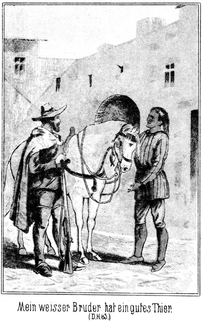»Mein weißer Bruder hat ein gutes Thier.«
»Ja. Es ist vortrefflich.«
»Hast Du es gekauft?«
»Nein. Ich erhielt es geschenkt.«
»So bist Du ein sehr großer Krieger.«
»Warum vermuthest Du das?«
»Sonst hättest Du es nicht geschenkt erhalten. Ich habe dieses Pferd als Füllen gesehen. Es gehörte der ›starken Hand‹, dem großen Häuptling der Apachen.«
»Ja, von ihm habe ich es.«
»Du mußt ihm große Dienste geleistet haben, und darum sage ich, daß Du ein großer Krieger bist. Einem Anderen würde der Häuptling sein Pferd nicht schenken. Wo hast Du ihn zuletzt gesehen?«
»Am Wasser des Colorado.«
»Wann?«
»Gestern.«
»Und wann wirst Du ihn wiedersehen?«
»Vielleicht morgen bereits.«
»Und wo?«
»Hier. Er kommt mit vielen Kriegern der Apachen hierher, um Dich zu rächen.«
»Uff!« sagte der Indianer erstaunt und erfreut.
»Ich reite jetzt zu ihm.«
»Mein weißer Bruder hat noch ein Pferd. Ich reite mit.«
Das sagte er in einem so bestimmten Tone, als ob ein Einspruch gar nicht möglich sei. Steinbach antwortete:
»Du scherzest. Wie kannst Du mit mir reiten? Die Qualen, welche Du ausgestanden hast, haben Deine Kräfte zerstört. Du mußt Dich erst erholen.«
»Seit ich dieses Pferd gesehen habe und an den großen Häuptling erinnert worden bin, habe ich meine Kräfte wieder erlangt.«
»Das ist Täuschung. Selbst wenn Du gesund wärest, dürfte ich Dich nicht mitnehmen. Ich reite jetzt als Kundschafter fort; da muß ich allein sein und kann keinen Zweiten gebrauchen.«
»So will ich gehorchen und hier bleiben. Aber sage mir, von wo aus die Krieger der Apachen ihren Ritt begonnen haben.«
»Vom Silbersee aus.«
»Und Du warst auch dort?«
»Ja, ich war der Gast der Taube des Urwaldes.«
»So hat der große Häuptling Dich sehr lieb. Mit einem Fremden geht er nicht nach dem Silbersee. Hast Du dort einen jungen Krieger gesehen, welcher sich den ›flinken Hirsch‹ nennt?«
»Ja, ich habe mit ihm gesprochen. Er ist noch sehr jung, aber er hat das Herz eines bewährten Mannes. Er hat mir bewiesen, daß er klug und sehr tapfer ist.«
»Er ist mein Bruder, der Sohn meines Vaters.«
»Wie? Dein leiblicher Bruder?«
»Ja; er ist fünf Frühlinge jünger als ich.«
»So bist auch Du ein Verwandter der ›starken Hand‹?«
»Die ›starke Hand‹ ist mein Oheim, der Bruder meines Vaters, der bereits in den ewigen Jagdgründen weilt.«
»So freut es mich sehr, Dich hier getroffen zu haben. Wie aber ist es denn gekommen, daß Du Dich als Gefangener hier befunden hast?«
»Ein Maricopa hatte mich beleidigt und ich ritt aus, ihm den Scalp zu nehmen. Die Maricopa's waren Freunde des Mannes, welcher sich Roulin nennt und Besitzer dieses Bergwerkes ist. Der, welchen ich suchte, befand sich hier bei ihm im Todesthale. Ich ging hierher und schlich mich um das Haus. Man hatte Senkgruben bereitet, um Prairiewölfe zu fangen. Diese Gruben sind oben so zugedeckt, daß man sie nicht sehen kann. Ich trat auf die dünne Decke und stürzte hinab. Unten waren spitze Pfähle eingeschlagen. Ich fiel in dieselben und stach mir einen durch den Schenkel. Da lag ich einige Tage, bis man mich entdeckte. Das Wundfieber war gekommen. Mein Geist war in Folge dessen abwesend, darum konnte man mich ohne Gegenwehr gefangen nehmen. Hätte ich nicht das Fieber gehabt, so hätte ich mich gewehrt und die Feinde getödtet, bevor ich an meiner Wunde gestorben wäre. Man schaffte mich in das Bergwerk. Die große Wunde heilte, ich aber war gefangen. Jetzt hast Du mich befreit und ich werde mich rächen.«
»So wissen die Deinen gar nicht, wo Du Dich befindest?«
»Sie wissen gar nichts. Der rothe Krieger geht sehr oft zur Rache, ohne einem Menschen davon zu sagen. Hätten die Krieger der Apachen gewußt, wo ich mich befinde, so wären sie gekommen, um mich zu befreien. Sie glauben schon längst an meinen Tod.«
»Desto mehr werden sie sich freuen, Dich wieder zu sehen.«
»Du reitest jetzt zu dem Häuptlinge?«
»Ja.«
»So sage der ›starken Hand‹, daß der ›schnelle Wind‹ noch lebt und sich heute den Scalp seines Peinigers geholt hat.«
Steinbach nahm nun sein Thier am Zügel und führte es zum Thore hinaus, welches hinter ihm verschlossen wurde. Draußen stieg er auf und ritt in östlicher Richtung davon. –
Die Papago-Indianer hatten vom Colorado aus die westliche Richtung eingeschlagen, welche sie nach Rock Spring und von da über Bitter Spring nach dem Todesthale bringen mußte. Natürlich hüteten sie sich wohl, diese beiden Orte zu berühren.
Der Ritt ging erst durch eine weite Grasprairie und dann durch eine wüste, steinige Ebene. Später, als sich die Berge erhoben, welche dort von Dos Palmas aus nach Nordwest streichen, gab es wieder Waldung. Die Rothen kannten die Gegend sehr genau; darum konnten sie die geradeste Linie einhalten.
Die Gefangenen waren gefesselt, doch gewährte man den beiden Mädchen insofern eine Erleichterung, als man ihnen später die Hände frei gab und sich damit begnügte, sie auf die Pferde fest zu binden. Wilkins aber und Zimmermann blieben auch an den Händen gefesselt.
Bill Newton, der einstige Derwisch, war zwar verwundet worden, doch stellte es sich heraus, daß seine Wunde nicht gefährlich und nicht einmal sehr schmerzhaft sei. Sie hinderte ihn keineswegs, zu Pferde zu sitzen und mit den Anderen gleichen Schritt zu halten.
Gleich als er auf dem Segelboote Magda erblickt hatte, war ihm ein sonderbarer Umstand aufgefallen, nämlich ihre große Aehnlichkeit mit Tschita. So, genau so hatte einst Frau von Adlerhorst ausgesehen; sie war eine genau so helle, sonnige Erscheinung gewesen. Er hatte diese Frau, welche seine Herrin war, geliebt, mit jener unlauteren Liebe, welche zum schlimmsten Mittel greift, sich Erhörung zu erzwingen. Er hatte es gewagt, mit dem Geständnisse seiner Liebe vor die Herrin zu treten und ward fortgejagt. Er hatte sich gerächt, mit Hilfe von Ibrahim Pascha, welcher sich auf dieselbe Liebe auch dieselbe Abweisung geholt hatte.
Später, als er in Constantinopel Tschita erblickte, vermuthete er in Folge ihrer Aehnlichkeit mit Frau von Adlerhorst, daß sie deren Tochter sei, und es fand sich, daß er sich nicht getäuscht hatte. Die alte Liebe erwachte mit neuer Gewalt, nur daß sie sich jetzt gegen die Tochter richtete. Durch Steinbach's Erscheinen und Eingriff wurden des Derwischs Absichten vereitelt; er mußte sogar fliehen und hielt sich, der überall gesucht wurde, in Amerika für am Sichersten.
Hier nun traf er ganz dasselbe characteristische Adlerhorst'sche Gesicht wie vorher in Constantinopel. Es kam ihm der Gedanke, daß Magda eine Adlerhorst sei. Warum auch nicht? Die Glieder dieser Familie waren ja in alle Welt zerstreut worden. Dazu kam der Name, den sie trug, Magda Hauser. Der Derwisch hatte einen Diener der Adlerhorst, Namens Hauser, sehr gut gekannt. Konnte nicht dieser mit Magda nach Amerika gegangen sein und sie nun für seine Tochter ausgeben?
Bill Newton wollte Gewißheit haben. Er wollte mit Magda sprechen, doch war es gar nicht sehr leicht, dies unbemerkt zu thun.
Ihre Aehnlichkeit, für die er sich außerordentlich interessirte, auch abgerechnet, machte das Mädchen ganz denselben Eindruck auf ihn, den er früher schon beim Anblicke der Frau von Adlerhorst und von Tschita gefühlt hatte. Er entbrannte trotz seines vorgerückten Alters in Liebesgluth und beschloß, Magda zu besitzen. Das jetzt voraussichtliche Schicksal dieses Mädchens war, von Roulin entehrt zu werden, um dann irgend einem Papago-Indianer überlassen zu werden. Sie konnte das wissen, ja, sie mußte sich dies mit aller Bestimmtheit sagen. Wie nun, wenn Bill Newton sie vor diesem Schicksal bewahrte, wenn er sie jetzt rettete und mit ihr entfloh! Abgesehen davon, daß er sich dann mit ihr allein befand und er die Erhörung seiner Liebe sich also leicht erzwingen konnte, hatte er sie zugleich zur Dankbarkeit verpflichtet, und die Dankbarkeit ist oft, wie man weiß, der Uebergang zur Liebe.
Je länger und je mehr er mit sich zu Rathe ging, desto fester wurde sein Entschluß, sie den Papago's zu entführen. Er wollte mit ihr sprechen.
Aus diesem Grunde hielt er sich in ihrer Nähe. Und es gelang ihm durch sein schlaues Manövriren, die Führerschaft ihres Pferdes zu erhalten.
Es war zwar den Gefangenen verboten, mit einander zu sprechen, aber wenn sie einen Anderen, einen ihrer Feinde anredeten, so konnte es nicht auffallen, wenn er antwortete. Bill lenkte sein und Magda's Pferd so, daß er wenigstens von Walker, Roulin und Leflor nicht beobachtet werden konnte. Die Rothen machten ihm weniger Sorgen. Er beschloß, sich der deutschen Sprache zu bedienen. Erstens wurde diese von den Papago's nicht verstanden und zweitens war dies zugleich ein Prüfstein für Magda. Verstand sie deutsch, so ließ sich fast mit Bestimmtheit annehmen, daß sie eine Adlerhorst sei.
Er hielt sein Pferd ganz nahe an das ihrige und sagte, ohne den Mund zu bewegen und ganz leise, daß nur sie es hören konnte.
»Sennorita, versteht Ihr deutsch?«
Sie blickte freudig überrascht zu ihm herüber und antwortete, freilich lauter als ihm lieb war:
»Herrgott! Sind Sie vielleicht ein Deutscher?«
»Ja. Aber bitte, sprecht leiser! Ich habe gute Absichten mit Euch, aber Niemand darf es ahnen. Blickt mich nicht an und sprecht nur so laut, daß es kein Anderer hört als ich. Auch müssen wir in möglichst langen Pausen reden. Da fällt es am Allerwenigsten auf.«
Also ansehen sollte sie ihn nicht. Und doch war es ein langer, langer, ungläubig forschender Blick, den sie auf ihn warf.
»Zweifelt Ihr?« fragte er.
»Ja,« antwortete sie aufrichtig.
»Warum?«
»Ich kenne Euch, wenn ich auch noch nicht gewußt habe, daß Ihr ein Deutscher seid.«
Das frappirte ihn. Sollte sie Alles wissen? Aber woher denn? Von wem? Er mußte sich sogleich die Gewißheit holen:
»Woher kennt Ihr mich?«
»Von Almy. Sie hat von Euch gesprochen.«
»Ah, diese! Was kann sie von mir wissen?«
»Ihr seid am Silbersee gefangen gewesen. Das habe ich ja selbst gesehen.«
»Ich war nur zum Scheine Gefangener.«
»Wieso?«
»Ihr werdet das später erfahren.«
»Ihr seid dann entflohen?«
»Nein. Man hat mich freiwillig fort gelassen.«
»Leflor hat Euch befreit.«
»Das bildet er sich nur ein. Ihr kennt doch wohl Herrn Steinbach, den Fürsten der Bleichgesichter?«
»Ja doch.«
»Nun, ich bin sein heimlich Verbündeter.«
»Warum heimlich?«
»Um Leflor's und Walker's Absichten zu erkunden. Wir wußten, daß Leflor nach dem Silbersee kommen werde. Ich wurde scheinbar gefangen genommen. Es wurde so eingerichtet, daß er mich befreien mußte. Natürlich nahm er mich mit sich und ich wurde sein Vertrauter. Ich bin bis jetzt bei ihm geblieben, damit er desto sicherer in die Falle geht.«
»Ist das wahr?«
»Ja. Ich kann es beschwören.«
»Warum aber habt Ihr Euch da von Sennor Zimmermann verwunden lassen?«
»Weil dieser nicht eingeweiht worden ist. Er hat mich wirklich für Euren Feind gehalten. Wenn er die Wahrheit hört, wird er es sehr bedauern, die Waffe gegen mich gebraucht zu haben. Ich muß Euch sehr ersuchen, Vertrauen zu mir zu haben.«
»Ich möchte wohl, aber –«
»Was? Sprecht weiter!«
»Es ist zu gefährlich.«
»Gefährlich? Das begreife ich nicht. In eine größere Gefahr, als diejenige ist, in welcher Ihr Euch jetzt befindet, könnt Ihr ja gar nicht kommen.«
»Wollt Ihr mich retten?«
»Ja.»
»Wohl mich allein?«
Diese Frage kam ihm sehr unpassend. Wahrscheinlich wollte sie sich ihm nicht allein anvertrauen. Darum antwortete er:
»Ich werde mich nach Euren Wünschen richten.«
»Ich mag nicht allein frei sein.«
»Ah! Die Anderen auch mit?«
»Ja; Almy, ihr Vater und Sennor Zimmermann.«
»Das wird sehr schwierig sein.«
»So bleibe ich auch gefangen.«
»Bedenkt, was Eurer wartet!«
»Gott wird mich schützen.«
»Bereits morgen Abend kommen wir im Thale des Todes an. Bis dahin muß Alles geschehen sein, und um alle Vier zu befreien, dazu ist diese Zeit doch viel zu kurz.«
»Ich wiederhole, daß ich nicht allein gehe.«
Er schwieg eine lange Weile. Diese Weigerung hatte er nicht erwartet. Endlich that er, als ob er auf ihre Intention eingehen wolle:
»Gut, Ihr sollt nicht allein mit mir gehen. Ich werde Alles wagen, auch die Anderen zu befreien. Nur müßt Ihr mir versprechen, meinen Weisungen zu folgen und Alles genau so zu machen, wie ich es Euch sage.«
»Dazu bin ich bereit.«
»Die Flucht muß natürlich heute während der Nacht, wenn wir lagern, geschehen!«
»In welcher Weise?«
»Das kann ich jetzt noch nicht sagen. Ich muß die Wächter täuschen, muß sie von Euch entfernen. Wie das anzufangen ist, kann ich jetzt noch nicht wissen.«
»Wohin werdet Ihr uns bringen?«
»Wohin Ihr wollt.«
»Wilkins wird wünschen, nach dem Silbersee zu gehen. Ich aber will nach dem Todesthale.«
»Warum denn nach diesem für Euch so äußerst gefährlichen Orte?«
»Weil sich meine Eltern dort befinden.«
»Da lauft Ihr Denen, welchen wir entfliehen wollen, doch gerade wieder in die Hände.«
»Ich will Vater und Mutter auch frei haben.«
»Dieser Wunsch ist sehr erklärlich, aber dadurch, daß Ihr wieder gefangen werdet, macht Ihr doch nicht Eure Eltern frei! Das müßt Ihr bedenken.«
»So weiß ich nicht, was ich thue.«
»Ich weiß es desto besser.«
»Nun.«
»Ich bringe Euch nach einem sicheren Orte, nach einer Stadt, vielleicht nach Sumner oder Goshen. Dort nehmen wir gerichtliche Hilfe in Anspruch.«
»Können wir dort leben?«
»Hm! Ja, Geld freilich gehört dazu.«
»Wir haben nichts. Ihr wißt ja, daß man Wilkins und Zimmermann Alles abgenommen hat.«
»Ich bin auch arm; aber ich werde mir Geld verschaffen. Walker hat welches. Er hat eine beträchtliche Summe in seinem Gürtel stecken.«
»Wollt Ihr stehlen?«
»Nennt Ihr das stehlen, wenn ich ihm nehme, was er erst selbst zusammengeraubt hat? Er hat Euch Eure Freiheit genommen. Wer kann uns verdammen, wenn wir ihm Das nehmen, was wir nothwendig brauchen, um wieder frei zu sein? Uebrigens will ich Euch sagen, daß wir nicht ganz so verlassen sind, wie Ihr denkt. Die Apachen sind hinter uns.«
»Ich weiß es.«
»Und bei ihnen befindet sich Steinbach.«
»Ist das wahr? Wißt Ihr das gewiß?«
»Ganz gewiß. Es ist das ja eben der Plan, welchen ich mit ihm verabredet habe.«
»Warum aber überfällt er die Papago's nicht? Das wäre ja der sicherste und kürzeste Weg zu unserer Befreiung!«
»Nein. Das wäre für Euch der sicherste Weg in den Tod. Sobald die Papago's überfallen würden, schlachteten sie Euch ab, damit Ihr nicht wieder in die Hände Eurer Feinde gelangt.«
»Herr Gott im Himmel! Warum kommt das über uns! Wir haben ja nichts Böses gethan!«
»Leider! Wir dürfen nicht Gewalt, sondern nur List anwenden. Dann, wenn Ihr erst in Sicherheit seid, können wir über Eure Peiniger herfallen. Ich werde Euch heut Nacht während des Lagerns die Fesseln lösen. Und dann wird es am Allerbesten sein, daß ich Euch zu Steinbach bringe.«
»Ja, ja, zu ihm. Bei ihm sind wir gut geborgen!«
Sie sagte das in frohem Tone. Sie rief es laut, so daß es den Indianern auffiel. Der Häuptling der Papago's lenkte sein Pferd herbei, fixirte Bill mit scharfem Blicke und sagte:
»Warum läßt das Bleichgesicht nicht seine Zunge ruhen?«
»Warum setzt der rothe Mann jetzt die seinige in Bewegung?«
»Weil ich wissen will, was Du mit dem Mädchen sprichst.«
»Ist es verboten, zu antworten, wenn ich gefragt werde?«
»Niemand hat es verboten, weil es sich von selbst versteht, daß man es unterläßt. Was habt Ihr zu sprechen.«
»Alle Teufel! Bin ich etwa Dir Antwort oder gar Rechenschaft schuldig?«
Das Auge des Rothen blitzte zornig auf.
»Ja; ich bin der Häuptling!« sagte er.
»Aber nicht mein Häuptling!«
»Du bist nichts, gar nichts. Du bist der Diener Deines Herrn. Du hast zu gehorchen. Ich aber mag nun gar kein Wort von Dir hören.«
Er wendete sich ab. Es verging eine lange Zeit, ehe Bill zu flüstern wagte:
»Ihr seid zu unvorsichtig. Ihr habt ja ganz laut gerufen. Und dabei glänzte Euer Gesicht, daß auch der dümmste Mensch bemerken mußte, daß ich Euch eine frohe Botschaft gegeben habe. Dadurch macht Ihr meinen schönen Plan zu schanden.«
»Verzeihung! Ich werde vorsichtiger sein.«
»Ich bitte Euch sehr darum. Ich hatte Euch noch viel zu sagen; nun aber muß ich mich sehr hüten, es merken zu lassen, daß ich mit Euch spreche. Eins aber muß ich noch wissen: Euer Name ist Hauser. Das ist ein deutscher Name.«
»Mein Vater ist ein Deutscher.«
»Ist er schon lange in Amerika?«
»So lang ich lebe.«
»Was war er drüben in der Heimath?«
»Herrschaftlicher Diener.«
»Bei wem?«
»Bei einer vornehmen Familie, welche den Namen Adlerhorst führte.«
»Sapperment! Ist Eure Mutter wirklich seine Frau?«
»Ja. Warum sollte sie es nicht sein?«
»Wißt Ihr es gewiß?«
»Ja.«
»Wie nennt er sie?«
»Anna.«
Er stieß vor Ueberraschung einen leisen Pfiff aus und sagte sich im Stillen:
»Anna von Adlerhorst! Das stimmt. Sie ist es. Mutter und Tochter bei dem einstigen Diener. Die, welche man für die Mutter hielt, war nur die Amme. Warum habe ich doch damals die Rache andern Leuten überlassen! Es war sehr dumm von mir. Aber nun kann ich das Versäumte nachholen.«
Und zu Magda gewendet, fuhr er fort:
»Und wo befinden sich Eure Eltern?«
»Im Todesthale, im Bergwerke.«
»Sind viele Leute dort?«
»Ich weiß es nicht. Sie sind alle gefangen.«
»Auch Eure Eltern?«
»Ja.«
»Wie viele Wächter sind da?«
»Ein einziger. Er heißt Juanito.«
»Genügt denn eine einzige Person?«
»Ja. Die Gefangenen sind ja eingeschlossen. Sie können sich nicht wehren.«
Er wollte sich noch weiter erkundigen; aber er fing einen Blick des Häuptlings auf, der ihm nichts Gutes verhieß; und darum schwieg er. Der Häuptling aber lenkte sein Pferd nach der Spitze des Zuges, wo die Weißen ritten und fragte, sich an Walker wendend:
»Besitzt das Bleichgesicht, welches Bill genannt wird, Dein Vertrauen?«
»Hm! Bisher hat er mir keine Veranlassung gegeben, ihm zu mißtrauen.«
»Ja, er hat allerdings das Gesicht eines Fuchses.«
»Warum reitet er neben dem weißen Mädchen?«
»Kann er das nicht so gut wie jeder Andere?«
»Warum aber spricht er mit ihr?«
»Sie wird ihm eine Frage vorgelegt haben.«
»Eine Antwort ist kurz; er aber redet mit ihr eine sehr lange Zeit.«
»Laß ihn!«
»Warum aber redet er so leise, daß nur sie allein es hören soll?«
»Das ist allerdings verdächtig.«
»Warum bewegt er nicht den Mund beim Sprechen? Man soll nicht bemerken, daß er mit ihr redet.«
»Alle Teufel! So hat er Heimlichkeiten!«
»Und warum spricht er in einer fremden Sprache, welche ich nicht verstehe.«
»Sie ist eine Weiße. Warum sollte er mit ihr in der Sprache der Rothhäute reden?«
»So mag er sich der Sprache der Yankee oder der Spanier bedienen!«
»Das wird er wohl auch gethan haben.«
»Nein. Er spricht in einer Sprache, welche ich noch niemals gehört habe.«
»Wie kannst Du das wissen, da Du doch vorhin sagtest, daß er leise spreche?«
»Das Mädchen that einen Ausruf. Ich hörte die Worte. Sie gehörten einem Volke an, welches ich nicht kenne.«
»Hm! Hast Du Dir diese Worte gemerkt?«
»Ja, denn es war sehr wichtig, sie nicht zu vergessen. Ich weiß nicht, was sie zu bedeuten haben, aber den Klang kenne ich noch. Das Mädchen rief: ›gut geborgen!‹ Das waren die besten Töne. Was vorher war, weiß ich nicht.«
Walker blickte Roulin und Leflor erstaunt an. Er schüttelte bedenklich den Kopf und meinte:
»Er spricht Deutsch mit ihr. Das ist freilich sehr dazu angethan, Verdacht zu erwecken. Gut geborgen! Will er sie bergen? Das heißt, will er sie etwa befreien?«
Roulin antwortete:
»Ich habe dem Kerl gleich von Anfang nicht weiter getraut, als ich sehen konnte. Habt Ihr nicht bemerkt, daß sein Auge stets an dieser Anna Hauser hängt? Es ist mir ganz so vorgekommen, als ob er sie kenne.«
»Da wollen wir uns denn doch in Acht nehmen. Hat mein rother Bruder ihm denn nicht gesagt, daß er nichts mit dem Mädchen zu sprechen habe?«
»Ich habe es ihm gesagt,« antwortete der Häuptling. »Aber er meinte, daß ich ihm nichts zu befehlen habe.«
»Ah, er respectirt Dich nicht! Uns aber soll er den Gehorsam nicht verweigern. Es ist am Besten, wir nehmen die Gefangenen unter unsere eigne Obhut.«
Das war aber nicht nach dem Sinne des Papago. Er sagte:
»Wem gehören die Gefangenen?«
»Nun, doch uns.«
»Du irrst. Hast Du uns nicht die Taube des Urwaldes und ihren Vater versprochen?«
»Ja. Aber ich habe Euch noch nicht gesagt, zu welcher Stunde ich sie Euch abtrete. Jetzt sind sie noch mein Eigenthum.«
»Nein, sie gehören mir. Sie sind der Preis für den Schutz, den ich Euch gewähre.«
Walker wollte zornig werden; aber er besann sich. Er war mit seinen Gefährten zu schwach den Papago's gegenüber, deren Schutz er jetzt noch nicht missen konnte. Darum antwortete er in ruhigem Tone:
»Wir wollen uns nicht streiten. Die Gefangenen gehören mir und Euch. Wir werden uns verständigen, wenn wir im Thale des Todes angekommen sind.«
»Ich weiß bereits jetzt, wer ein Recht auf sie hat,« entschied der Häuptling kurz.
Er kehrte sein Pferd um und ritt zu Bill Newton. Ohne ein Wort zu sagen, zog er ihm den Zügel zu Magda's Pferd aus der Hand, drängte ihn fort und winkte seinen Leuten zu, die Gefangenen nun besser in ihre Mitte zu nehmen als vorher. Bill hielt es für das Beste, nachzugeben, da jeder Zank nur zu seinem Nachtheile ausfallen mußte. Aber er behielt Magda scharf im Auge und benutzte jede Gelegenheit, ihr einen aufmunternden Wink zu geben oder ihr tröstlich zuzunicken.
Er glaubte, daß dies sehr im Verborgenen geschehe, und doch wurde er dabei streng beobachtet, sowohl von dem Häuptlinge als auch von den Weißen.
Als der Abend hereinbrach, hatte man in einer grasigen Ebene, aus welcher sich zahlreiche Bauminseln erhoben, eine Stelle erreicht, wo ein Haufen von Felsentrümmern von Gesträuch und Brombeerranken durchzogen wurde. Dies war ein ganz ausgezeichneter Platz zum Lager. Das Gestein gewährte im Falle eines Angriffes Schutz, und da die Gegend eben war, so konnte man von den Apachen und Maricopa's nicht leicht beschlichen werden.
Daß diese Letzteren folgten, das wußten die Papago's; aber wie viele Köpfe die Verfolger zählten, das wußten sie nicht. Sie glaubten, es nur mit einer kleinen Kundschafterheerde zu thun zu haben, und wären gern über sie hergefallen. Aber der Häuptling war dagegen. Er kannte das Todesthal, welches nur zwei Eingänge hatte. Gelang es ihm, die Verfolger dort hinein zu locken, so konnte er sie mit einem Schlage vernichten.
Als sich die Truppe gelagert hatte, unterließ man es, Feuer anzuzünden; die Apachen wären ja da auf den Platz aufmerksam gemacht worden. Es wurden mehrere Posten ausgestellt, welche unausgesetzt die Peripherie des Ruheplatzes abzupatroulliren hatten. Die Gefangenen wurden von den Indianern bewacht. Seitwärts lagen die Weißen, welche gewöhnt waren, sich in stolzer Entfernung von den Rothen zu halten.
Nur Bill Newton stand einige Male auf, um sich mit den Rothen zu schaffen zu machen. Er brannte vor Begierde, mit Magda ein Wort zu wechseln, und da ihm dieser Wunsch nicht erfüllt wurde, so begann er, die nöthige Vorsicht immer mehr aus dem Auge zu lassen.
Mitternacht war bereits nahe, als er abermals zu den Rothen ging und in Magda's Nähe zu kommen suchte. Es mißlang abermals, und voll innerer Wuth kehrte er zu der Gruppe der Weißen zurück. Wenn sein Vorhaben in dieser Nacht nicht ausgeführt werden konnte, so war die Ausführung überhaupt unmöglich. Er setzte sich so, daß er das Mädchen und die rothen Wächter desselben mit dem Blicke erreichen konnte.
Walker hatte zu diesem Gebahren bisher geschwiegen. Jetzt aber konnte er sich nicht länger halten. Er sagte in höhnischem Tone:
»Thun Dir die Beine nicht wehe, Bill?«
»Warum sollten sie mir wehe thun?«
»Von dem immerwährenden Hin- und Herlaufen. Bleib doch liegen.«
»Seit wann ist es verboten, sich Bewegung zu machen?«
»Du hast heut während des Rittes Bewegung genug gehabt. Hoffentlich fällt es Dir nicht ein, auf die Freit zu gehen!«
»Wie meint Ihr das?«
»Magda scheint es Dir angethan zu haben.«
»Pah!«
»Leugne es nicht! Denkst Du, wir bemerken nicht, daß Du ihr zuwinkst und zunickst!«
»Ist mir nicht eingefallen.«
»Leugne es nicht!«
»Donnerwetter! Was geht mich das Frauenzimmer an! Ich habe nichts mit ihm zu schaffen.«
»Und dennoch redest Du deutsch mit ihr!«
»Wer behauptet das?«
»Ich!«
»Das ist eine Lüge!«
»Hüte Dich, mich einen Lügner zu nennen! Warum hat sie ausgerufen, daß sie gut geborgen sein wird?«
Bill erschrak. Seine Absicht war durch dieses einzige Wort verrathen. Aber es wäre ja Wahnsinn gewesen, es einzugestehen.
»Wer Euch diesen Bären aufgebunden hat, der hat die Weisheit nicht grad mit dem Löffel gegessen.«
»Der Häuptling war es.«
»Wunderbar! Versteht der etwa Deutsch?«
»Das ist gar nicht nothwendig. Er hat sich dieses eine Wort gemerkt, und das genügt vollständig. Wenn Du Dich etwa hinter unserm Rücken der Gefangenen annehmen willst, so wahre Deine eigene Haut. Ich laß nicht mit mir spaßen. Wenn Du mich da vielleicht noch nicht kennst, so kannst Du mich kennen lernen!«
Diese Worte empörten Bill. Er hatte früher ganz andere Rollen gespielt und war mit ganz anderen Leuten verkehrt. Die Drohung fuhr ihm, wie man zu sagen pflegt, in die Nase. Es wäre von ihm klüger gewesen, sich zu beherrschen; aber er vermochte dies nicht. Er gab vielmehr seinem Zorne Worte:
»Ich glaube gar, Ihr wollt mir drohen?«
»Allerdings.«
»Das könnt Ihr unterbleiben lassen.«
»Oho! Willst Du etwa aufmucken?«
»Pah! Aufmucken! Dieses Wort ist hier ganz und gar am unrechten Platze. Aufmucken nennt man es doch wohl, wenn ein Untergebener sich unterfängt, seinem Vorgesetzten zu widersprechen.«
»Das thust Du ja!«
»Gott bewahre! Meint Ihr etwa, daß ich Euer Untergebener bin?«
»Was sonst?«
»Diesen Gedanken laßt ja schleunigst fahren. Wir Alle, wie wir hier sitzen, sind einander vollständig gleich und ebenbürtig.«
»Sapperment, ist das stark! Mensch, was fällt Dir ein! Bist Du toll!«
»Toll ist nur Der, welcher eine andere Ansicht hat als die meinige.«
»Du stehst in meinem Lohn und Brod!«
»Wo ist mein Lohn, und wo ist mein Brod? Laßt Euch nichts weiß machen. Wir Alle wandeln auf einem Wege, der gesetzlich verboten ist. Wir sind Alle Spitzbuben. Wenn Ihr nun sagt, daß Ihr mein Vorgesetzter seiet, so sagt Ihr damit nichts Anderes, als daß Ihr Euch für einen größeren Spitzbuben haltet, als ich bin.«
Walker stieß, anstatt aufzubrausen, ein lautes, heimliches Lachen aus und sagte dann:
»Da hast Du freilich ganz meine Gedanken und meine eigene Ansicht. Ich bin freilich der größte Spitzbube unter Euch; ich bin Euer Anführer und also habt Ihr Euch nach meinem Willen zu richten. Mein Wille aber ist es keineswegs, daß Du mit dieser Magda liebäugelst, um heut Nacht in aller Gemüthlichkeit mit ihr zu verschwinden.«
»Ihr seid nicht bei Troste! Wie könnte ich auf diesen Gedanken kommen!«
»Wie Du darauf gekommen bist, weiß ich auch nicht; aber daß Du ihn hast, das weiß ich.«
»Nun, wenn Ihr Euch in dieser Ueberzeugung so sehr glücklich fühlt, so will ich Euer Glück nicht stören. Denkt, was Ihr wollt!«
»Das thue ich auch. Aber ich warne Dich! Sehe ich noch einmal, daß Du den Versuch machst, Dich an das Mädchen zu schleichen, so ist es um Dich geschehen.«
»Das klingt doch ganz, als ob Ihr mir den Garaus machen wolltet.«
»Den mache ich Dir allerdings, wenn ich Dich ertappe!«
»Donnerwetter! Seid Ihr ein gefährlicher Kerl!«
Er sagte das in höhnischem Tone. Dabei stand er auf und entfernte sich, als ob er einmal nach den ausgestellten Posten schauen wolle. Doch ging er gar nicht weit. Bald duckte er sich wieder und kroch auf allen Vieren zurück. Hinter einem Steine versteckt, befand er sich nur höchstens vier Ellen von den Dreien entfernt. Es kam ihm darauf an, sie zu belauschen. Es verstand sich ganz von selbst, daß sie jetzt sprechen würden.
Seine Vermuthung erwies sich als ganz richtig. Die Drei blickten einander kopfschüttelnd an, und Walker fragte:
»Was sagt Ihr dazu?«
»Der Kerl ist renitent,« antwortete Leflor.
»Er fühlte sich getroffen. Das sah man ihm an.«
»Auch ich bin überzeugt, daß er Etwas vor hat. Wir müssen den Häuptling warnen.«
»Das wird ihm lieb sein, denn dadurch bekommt er Gelegenheit, die Gefangenen ganz unter seine Obhut zu nehmen.«
»Das paßt mir schlecht,« brummte Roulin. »Ich verlange Magda für mich.«
»Und ich Almy Wilkins!« sagte Leflor. »Das ist so ausgemacht worden, und dabei muß es bleiben!«
»Nicht so hitzig, Ihr Leute! mahnte Walker. »Wir brauchen die Papago's noch. Darum wollen wir sie einstweilen dabei lassen, daß sie die Gefangenen bekommen.«
»Was wollen wir dann aber dagegen machen? Sie werden sie nicht wieder herausgeben.«
»Pah!« lachte Roulin. »Haben wir sie nur erst im Todesthale, in meinem Hause. Was ich da nicht herausgeben will, das soll mir Keiner abnehmen. Ich bin überhaupt überzeugt, daß ich von jetzt an einige Quecksilberarbeiter mehr haben werde als vorher.«
»Wen?«
»Wilkins und Zimmermann.«
»Lieber ganz fort mit ihnen – todt!«
»Pah! Wer in meinem Schachte ist, der ist mehr als todt, der ist todter und am todtesten.«
»Hört, da kommt mir ein prachtvoller Gedanke!« fiel Walker ein. »Nämlich in Beziehung auf diesen obstinaten Bill Newton.«
»Nun.«
»Er ist mir eigentlich schon längst unbequem gewesen. Jetzt bin ich nun gar überzeugt, daß er im Stande ist, uns zu verrathen. Wir müssen ihn unschädlich machen.«
»Das ist sehr leicht gethan. Geben wir ihm eine Kugel!«
»Nein; die ist er nicht werth. Er mag für Euch arbeiten, Sennor Roulin.«
»Sapperment! Das ist günstig!«
»Einträglich für Euch und sehr belehrend für ihn. Wer weiß, was der Kerl Alles auf seinem Gewissen hat. Wir müssen ihm Gelegenheit geben, bereits auf Erden Einiges abzubüßen, damit er nach dem Tode nicht gar so lange im Fegefeuer stecken muß. So sorgen wir in christlicher Weise für seine Seele und zugleich auch für uns. Ihr bekommt einen Arbeiter, und ich bin einen Faullenzer los.«
»Gut! Ich bin einverstanden. Also abgemacht?«
»Abgemacht und topp! Aber laßt Euch nichts gegen ihn merken. Wir wollen freundlich sein. Haben wir ihn erst im Todesthale, so wird er merken, welche Uhr es geschlagen hat.«
Jetzt richtete sich die Unterhaltung auf einen anderen Gegenstand. Bill kroch also weiter fort und stand dann vom Boden auf.
»Schurken!« knirrschte er, die geballte Faust gegen sie ausstreckend. »Das soll Euch nicht gelingen. Ich werde eher im Todesthale sein, als Ihr, um eine Karte auszuspielen, gegen welche Ihr keinen Trumpf finden sollt! Mich in das Quecksilberbergwerk stecken! Ah, Euch soll der Teufel holen, und zwar sehr bald!«
Als er nach einiger Zeit langsam nach dem Platze zurückgeschlendert kam und sich unbefangen niedersetzte, sagte er lachend:
»Warum fragt mich denn jetzt Niemand, ob ich müde bin?«
»Jetzt hatte Euer Spaziergang keinen für uns gefährlichen Zweck,« antwortete Roulin.
»Na, ich sage Euch, daß die vorigen Gänge noch weit ungefährlicher waren. Aber gegen so scharfsinnige Leute ist nichts zu machen. Jetzt will ich meinen Aerger verschlafen. Wir haben noch einen weiten Ritt vor uns. Da braucht man Kraft.«
»Später könnt Ihr Euch bei mir ausruhen.«
»So? Nehmt Ihr mich auf, Sennor Roulin?«
»Mit Vergnügen!«
»Wie gütig von Euch! Doch habe ich nicht die Absicht, Euch zur Last zu fallen.«
Roulin antwortete nicht weiter; aber im Stillen sagte er sich:
»Esel! Du wirst mir gar nicht zur Last fallen, sondern brav für mich arbeiten!«
Scheinbar war das gute Verhältniß wieder hergestellt. Die Männer streckten sich lang aus, um zu schlafen. Sorge um ihre Sicherheit brauchten sie nicht zu haben, da die Papago's wachten.
Es verging vielleicht eine halbe Stunde. Alle lagen ruhig. Da bewegte sich Bill Newton. Er lag neben Walker; er hatte dies mit Absicht so eingerichtet. Er erhob den Kopf, näherte sich Walker und hielt das Ohr an dessen Mund. Der Athem ging regelmäßig und hörbar wie bei Einem, der sehr fest schläft.
Jetzt griff Bill nach Walkers Gürtel. Dieser bestand in einem feinen, seidenen Shawl, der um die Hüften geschlungen war. In demselben steckte das Messer, der Revolver und die Brieftasche, in der sich, wie Bill gesehen hatte, das Papiergeld befand. Er fühlte die Brieftasche, zog sein haarscharfes Messer und schnitt die Stelle, unter welcher die Tasche steckte, auf. Ein leiser Griff, und er hatte, was er haben wollte. Er steckte das Portefeuille zu sich, legte sich für einige Augenblicke wieder in seine vorige Stellung zurück und blickte nach der Stelle hinüber, wo sich die Gefangenen befanden.
Dort saß eine Anzahl Indianer, welche in einer leisen Unterhaltung begriffen waren.
»Verdammt!« fluchte er im Stillen. »Diese Schufte sehen sich vor. Es sind die Wächter. Sie werden gar nicht schlafen, und es ist mir also unmöglich, das Mädchen loszubringen. Ich muß allein fort, werde sie aber im Todesthale erwarten. Das muß ich ihr sagen, noch ehe ich gehe.«
Jetzt stand er auf und schritt langsam auf die Wächtergruppe zu. Sie wunderten sich darüber, daß er noch nicht schlief, gaben ihm aber auf seine unbefangenen Fragen, welche er ihnen vorlegte, Antwort.
Dabei bemerkte er, daß auch die Gefangenen munter waren. Es durfte dies kein Wunder genannt werden, da die Sorge sie nicht schlafen ließ. Magda sah ihn und bewegte sich, um ihm zu zeigen, daß sie nicht schlafe. Da sagte er schnell in deutscher Sprache:
»Es geht nicht. Aber ich reite jetzt direct nach dem Todesthale, um dort vorzuarbeiten. Ihr sollt gerettet werden.«
Sofort sprang einer der Wächter auf, zog sein Messer, ergriff ihn am Arme, riß ihn fort und drohte:
»Sage noch ein Wort zu ihr, und ich stoße Dir hier dieses Eisen in das Herz!«
»Was fällt Dir ein!« antwortete Bill ruhig. »Wenn ich nicht mit ihr sprechen soll, so kann ich ja gehen!«
Und er ging, aber nicht nach dem Lagerplatze zurück, sondern nach derjenigen Richtung, in welcher die Pferde standen, welche die Weißen geritten hatten.
Walker hatte ein sehr gutes indianisches Thier geborgt erhalten. Es war an dem Pflocke angebunden, welcher in der Erde steckte. Er band es los und stieg auf. Eben wollte er das Pferd in Bewegung setzen, da trat einer der Posten auf ihn zu, reckte sich hoch empor, um sein Gesicht zu erkennen, und fragte:
»Wohin will der weiße Mann?«
»Auf Kundschaft.«
»Weiß es das Bleichgesicht, welches Ihr Walker nennt?«
»Ja. Er selbst ist es, der mich fortsendet. Sage ihm morgen früh, daß ich ihm für das Geld danke!«
Er ritt fort. Der Hufschlag war nicht zu hören, da an dieser Stelle der Boden grasig war.
Der Posten lauschte ihm bedenklich nach. Es kam ihm vor, als ob diese Sache nicht ganz geheuer sei. Darum ging er nun nach der Lagerstelle der Weißen und weckte sie. Er fragte Walker:
»Hast Du einen Kundschafter ausgesandt?«
»Nein.«
»Der Weiße ist fort, welcher so viel mit dem Mädchen sprach. Ich soll Dir sagen, daß er sich für das Geld bedankt. Ich soll es Dir aber erst am Morgen sagen.«
Sofort griff Walker nach dem Gürtel. Dieser war zerschnitten und die Brieftasche fort. Natürlich verbreitete sich die Kunde von dem Diebstahle sofort im ganzen Lager. Walker hörte nun auch, daß Bill vor seiner Entfernung mit Magda gesprochen habe. Voller Wuth zog er sein Messer, faßte sie am Arme, riß sie empor und sagte:
»Gestehe, was er zu Dir gesprochen hat! Sonst stoße ich Dich augenblicklich nieder!«
Sie zitterte vor Schreck am ganzen Leibe.
»Schnell! Aber sag die Wahrheit!«
»Er wollte mich retten!« stöhnte sie vor Schmerz unter dem Drucke seiner Finger.
»Dachte es mir! Aber wie?«
»Heute Nacht wollte er mich fortführen; aber es ging nicht.«
»Weiter!«
»Jetzt ist er nach dem Todesthale, um dort die Rettung vorzubereiten.«
»Alle Teufel!« rief da Roulin. »Juanito ist ganz allein dort. Den wird er bethören! Wir müssen augenblicklich fort, um ihm zuvorzukommen!«
»Was hat er noch gesagt?« rief Walker Magda an.
»Nichts.«
»Gut! Wir eilen ihm nach. Der Häuptling mag mir dreißig Mann auf den schnellsten Pferden geben, damit wir eher hinkommen, als er. Ich werde ihn empfangen, anstatt er mich!«
Es gab für einige Zeit lang nun rege Bewegung im Lager. Als zehn Minuten vergangen waren, standen dreißig Mann bereit. Walker und Roulin hatten ihre Gewehre da liegen lassen, wo sie geschlafen hatten. Sie fanden sie auch dort liegen; aber Walker drehte sich einmal im Kreise um und sagte:
»Sonderbar! Lag vorhin nicht hier ein großer, dunkler Stein?«
»Mir ist es ganz so.«
»Er ist weg.«
»Hm! Steine laufen doch nicht fort!«
»Ich möchte wetten, daß ich mich nicht irre. Er lag hier, wo ich jetzt den Fuß hinsetze.«
»Und doch ist's nicht gut möglich. Wo sollte er denn hingekommen sein.«
»Allerdings! Ich irre mich. Aber bei einem solchen Ritte kommt Einem Alles verdächtig vor, und dieser verdammte Bill Newton hat mich ganz confus gemacht. Wehe ihm, wenn ich ihn erwische! Für jeden Dollar, den er gestohlen hat, schneide ich ihm eine Wunde.«
Jetzt stiegen sie auf, die drei Weißen mit den dreißig Indianern. Der Häuptling sollte mit den Anderen und den Gefangenen sich noch einige Ruhe gönnen und dann nachkommen.
Walker kam, obgleich ihm die Sache mit dem plötzlich verschwundenen Steine unerklärlich war, doch nicht auf den Gedanken, daß dieser Stein ein Mensch gewesen sei. Eine solche Verwegenheit, sich mitten in das feindliche Lager zu schleichen, sich dort bewegungslos hinzukauern und das lederne Jagdhemde so über sich wegzulegen, daß das Ganze einem Steine glich, schien eine Unmöglichkeit zu sein.
Und doch lief dieser Stein auf zwei sehr dicken, fleischigen Beinen jetzt außerhalb des Postenkreises auf ein Gebüsch zu, hinter welchem die lange, hagere Gestalt Jims hervortrat.
»Gott sei Dank! Endlich!« sagte er. »Schon glaubte ich, sie hätten Dich erwischt.«
»Mich?« lachte Sam Barth. »Hihihihi! Mich erwischen! Dazu bin ich viel zu dick!«
»Hast Du Etwas erlauscht?«
»Viel, sehr viel!«
»Was?«
»Habe jetzt keine Zeit. Wir müssen laufen. Soeben sind dreißig Mann aufgebrochen, um dem ausgerissenen Bill Newton nach dem Todesthale zu folgen. Steinbach ist mit Günther ganz allein dort. Wir müssen ihnen Hilfe bringen. Wir brechen sofort auf, Alle zusammen. Wir müssen eher dort sein als die Papago's.«
»Aber die andern zweihundertundsiebzig Feinde, welche noch hier liegen?«
»Die kommen nach, und wenn sie dann im Thale eintreffen, heißen wir sie herzlichst willkommen und brauen ihnen einen Punsch auf dem Feuer unserer Büchsen.«
»Aber wird Steinbach mit diesem Arrangement einverstanden sein?«
»Unsinn! Welche Frage! Was Sam der Dicke thut, das billigt Steinbach allemal. Ich habe mein Lebtage noch nicht gehört, daß in Herlasgrün ein dummer Kerl geboren worden wäre. Komm! In fünf Minuten müssen wir im Sattel sitzen. Es wird ein Parforceritt, aber so Etwas thut Einem gut. Das schüttelt Fleisch und Knochen unter einander. Dir wird das ganz besonders wohl bekommen, lange Hopfenstange!« – –
Steinbach hatte, wie bereits berichtet, das Todesthal noch während der nächtlichen Dunkelheit verlassen. Er suchte während seines Rittes, als es dann Tag geworden war, alle Stellen zu vermeiden, wo sein Pferd Spuren zurücklassen mußte. Immer in scharfem Trabe strebte er den bereits erwähnten Bergen zu. Um die Mittagszeit lagen die Höhen vor ihm. Er hielt bei einem dichten Buschwerke, welches ihm Schatten bot, und musterte die Gestalt und Lage der einzelnen, sich an einander schiebenden Berge. Es galt jetzt, das Querthal zu errathen, durch welches Freund und Feind wohl kommen werde. –
Da erblickte er einen schwarzen Punkt, welcher sich von einer sanften, unbewachsenen Berglehne herab bewegte. Dieser Punkt wurde schnell größer. Nach fünf Minuten erkannte Steinbach, daß es ein einzelner Reiter sei, welcher ganz hier in der Nähe vorüberkommen werde.
Der Deutsche zog sich noch mehr hinter den Busch zurück und erkannte zu seinem Erstaunen – den einstigen Derwisch, welcher schwitzend vor Anstrengung herbei gejagt kam. Wohl ahnend, daß es eine kleine Hetze geben werde, wand Steinbach sich das Lasso von der Hüfte, legte es in regelmäßige Schlingen und hielt es bereit zum Wurfe.
Jetzt war Bill Newton da. Er hatte einen scharfen Ritt hinter sich und war ganz erhitzt. Voll Schreck fuhr er zusammen, als Steinbach jetzt sein Pferd hinter dem Busche hervortrieb.
»Willkommen, Osman Derwisch!« erklang es laut. »Woher und wohin so schnell?«
Der Angeredete hielt unwillkürlich sein Pferd an.
»Steinbach!« entfuhr es ihm vor Schreck.
»Ah, Du kennst mich noch? Ja, wir sind alte Bekannte, die sich nicht so leicht vergessen. Sei doch so gut und steige einmal ab. Ich habe so zwei oder drei kleine Wörtchen mit Dir zu reden!«
Diese Aufforderung gab Bill Newton seine Geistesgegenwart wieder.
»Verdammt will ich sein, wenn ich es thue!« rief er aus.
Er gab dem Pferde die beiden Sporen, ließ ihm die Zügel schießen und galoppirte davon.
Steinbach war ihm schon bis auf einige Schritte nahe gewesen. Er schnalzte nur mit der Zunge. Das verstand sein Rapphengst nur zu gut. Das edle Thier schoß dem flüchtigen Reiter so schnell nach, daß für diesen keine Möglichkeit zum Entkommen war.
»Halt, Hallunke!« rief Steinbach.
»Stirb, Hund!« antwortete der Derwisch.
Bill riß sein Pistol aus dem Gürtel und drehte sich im Sattel um, um zu schießen. Er hatte aber die Hand mit der Waffe noch nicht erhoben, so sauste Steinbachs Lasso durch die Luft, und die Schlinge desselben schlang sich um seinen Oberkörper, seine Arme ihm an den Leib schließend. Die Waffe ging zwar los, doch traf die Kugel nicht, denn Steinbach hatte nach echter Cow-boy-Art schnell sein Pferd herumgerissen. Das Lasso war ebenso schnell abgelaufen und, da das andere Ende am Sattelknopf befestigt war, so wurde Bill mit unwiderstehlicher Gewalt vom Sattel herunter auf die Erde gerissen. Sein Pferd rannte zwar noch eine kurze Strecke fort, blieb aber sodann aus freien Stücken stehen.
Jetzt sprang Steinbach aus den Bügeln und trat zu dem Gefangenen, welcher mit den Füßen strampelte und sich alle Mühe gab, mit den eingeengten Armen die Schlinge zu erweitern, um aus derselben schlüpfen zu können.
»Wehre Dich nicht!«, rief Steinbach. »Du ziehst nur die Schlinge weiter zusammen. Warum hast Du mir nicht gehorcht und bist halten geblieben? Ich wollte mich sehr gemüthlich mit Dir unterhalten, nun aber hast Du es nur Dir zuzuschreiben, wenn das Gespräch ein Wenig ungemüthlich für Dich wird. Vorher aber will ich dafür sorgen, daß Du Niemandem mehr gefährlich werden kannst.«
Er nahm ihm sämmtliche Waffen ab; dann wand er ihm das Lasso noch fester um die Arme und den Leib; die Beine aber ließ er ihm frei.
»So! Und nun sage mir vor allen Dingen, woher Du kommst!«
Der Gefragte warf ihm einen wüthenden Blick zu, antwortete aber nicht.
»Und wohin Du gehst!«
Auch jetzt erfolgte keine Antwort.
»Nun, wenn Du vielleicht die Sprache verloren haben solltest, so werde ich dafür sorgen, daß sie Dir augenblicklich wiederkommt. Also, woher?«
Der Gefragte schwieg.
»Nun gut. Du willst es nicht anders. Wenn Du meinst, daß ich etwa sehr zart und sanft mit Dir umgehen werde, so irrst Du Dich gewaltig. Du hast mir keine Ursache dazu gegeben. Ich werde mit Dir verfahren, ganz nach dem Brauche des Landes, in welchem wir uns befinden. Paß' also einmal auf. Du kannst nicht reden und bist also wohl todt. Wenn es Dir dennoch wehe thut, so bist Du selbst schuld. Warum thust Du, als ob Du kein Leben mehr hättest!«
Er zog sein Bowiemesser, knieete Bill, welcher seinen Hut während des Sturzes verloren hatte und also barhäuptig war, auf die Brust, faßte dessen Haar mit der Linken und erhob mit der Rechten das Messer.
Da erhielt Bill allerdings sofort die Sprache zurück.
»Um Gotteswillen!« rief er erschrocken. »Ihr wollt mich doch nicht etwa scalpiren?«
»Gewiß werde ich das!«
»Ihr, ein Christ?«
»Das ist hier sehr gleichgiltig.«
»Bei lebendigem Leibe?«
»Du bist ja todt!«
»Ihr seht und hört doch, daß ich am Leben bin!«
»Vorhin warst Du sehr todt. Ich sage Dir, daß ich Dich unbedingt scalpire, wenn Du mir die Fragen, welche ich Dir jetzt vorlege, nicht beantwortest.«
Er hielt ihn bei den Haaren fest, blieb ihm auch auf der Brust knieen, ließ die blanke Messerklinge vor seinen Augen leuchten und fragte:
»Also woher?«
»Von Prescott.«
»Das weiß ich. Ich meine heute?«
»Von den Papago's.«
»Schön! Wo lagern oder wo lagerten sie?«
»Ungefähr zwanzig englische Meilen von hier gegen Osten.«
»Warum bleibst Du nicht bei ihnen?«
Bill wollte natürlich nicht sagen, daß er Walker bestohlen habe und Flüchtling sei. Er antwortete:
»Ich sollte auf Kundschaft gehen.«
»Wohin?«
»In die Clover-Berge hinauf.«
»Kerl, Du lügst. Du willst mich irre führen. Was hätten die Papagos in den Clover-Bergen zu suchen!«
»Es befinden sich feindliche Indianer dort, welche sie überfallen wollen.«
»Balzer, Leflor und Roulin wollen diese feindliche Rothen auch mit überfallen?«
»Ich weiß von den Dreien gar nichts.«
»Auch nicht von den gefangenen Mädchen?«
»Nein.«
»Und doch bist Du bei ihrer Gefangennahme verwundet worden!«
»Nein.«
»Lüge nicht! Ich habe mit Balzer, dem Besitzer des Segelbootes gesprochen und weiß Alles. Ueberhaupt würde Dich Dein Weg unmöglich hierher führen, falls Du wirklich nach den Cloverbergen wolltest. Sage die Wahrheit.«
»Ich habe sie gesagt.«
»Nun, so will ich mir Dein Fell mitnehmen als Andenken an den wahrheitsliebenden Menschen, den ich kennen gelernt habe.«
Er zog den Haarschopf Bills scharf an und setzte ihm das Messer an die Kopfhaut. Als Bill die Spitze der Klinge fühlte, schrie er schnell und laut:
»Halt, halt! Ich will Alles sagen!«
»Schau, welche Wirkung das Scalpiren hat! Also wenn Du Dir Deine Kopfhaut erhalten willst, so lüge nicht wieder. Wohin willst Du?«
»Nach dem Todesthale.«
»Was willst Du dort?«
»Almy und Magda erretten.«
Bill glaubte, durch diese Angabe sich selbst retten zu können. Steinbach aber zog die Stirn in Falten und drohte:
»Lüge nicht abermals!«
»Ich sage die Wahrheit; das schwöre ich Euch bei Gott zu. Ihr könnt es von Magda selbst erfahren.«
»Wiese von ihr?«
»Ich habe mit ihr gesprochen, obgleich dies verboten war. Ich habe ihr gesagt, daß ich nach dem Thale des Todes voranreiten werde, um ihre Rettung einzuleiten.«
»Was verstehst Du unter dieser Einleitung?«
»Irgend Etwas, was ich thun werde, aber jetzt noch nicht weiß. Ich habe Roulin belauscht, daß sich im Todesthale gefangene Menschen befinden, welche nur von einem einzigen Manne, Namens Juanito, bewacht werden.«
»Das ist wahr.«
»Wie? Auch Ihr wißt es?«
»Nun, so seht Ihr also, daß ich Euch nicht belüge. Ich wollte diese Gefangenen befreien und –«
»Wie wolltest Du das anfangen?«
»Vor dem Einen, Juanito, brauchte ich mich doch nicht zu fürchten. Ich hatte mich ihm gegenüber für einen Boten Roulins ausgegeben und ihn dann unschädlich gemacht. Mit Hilfe der dann von mir erlösten Gefangenen hoffte ich die beiden Mädchen befreien zu können.«
»Hm!« machte Steinbach nachdenklich. »Warum wolltest Du sie denn eigentlich befreien? Du hast sie doch selbst vorher mit gefangen genommen!«
»Aus reiner Menschlichkeit.«
»Ah! An Deine Menschlichkeit glaube ich im ganzen Leben nicht, und Du weißt ebenso wie ich, daß ich allen Grund dazu habe. Welchen Lohn erwartetest Du?«
»Keinen.«
»Schau, was für ein prächtiger Kerl Du bist!«
»Seid nicht höhnisch! Ich habe mich geändert.«
»Aus einer Hyäne kann niemals ein lieber Kanarienvogel werden. Mich täuschest Du nicht. Wie bist Du denn von Deinen verbündeten Weißen und Rothen fortgekommen?«
»Ich fing es darauf an, als Kundschafter von ihnen fortgeschickt zu werden.«
»Pah! Wenn sie eines Kundschafters bedurften, so hätten sie sich ganz gewiß nicht Deiner, sondern eines Papago's bedient. Der einfachste Indianer ist dazu tauglicher als Du. Sinne Dir die scharfsinnigsten Ausreden aus, und ich werde dennoch baldigst hinter Deine Schliche kommen. Vor allen Dingen sage mir, wie Wilkins und Zimmermann sich befinden.«
»Den Umständen angemessen, gut.«
»Und die Damen?«
»Ebenso.«
»Sind sie etwa mit – mit unerlaubten Liebenswürdigkeiten belästigt worden?«
»Nein.«
»Ich hoffe, daß Du wenigstens hierin nicht lügst!«
»Es ist wahr. Leflor und Roulin haben allerdings Absichten, aber sie konnten sie nicht ausführen, weil der Häuptling der Papago's die Mädchen für sich in Anspruch nimmt. Er behauptet, daß sie ihm gehören.«
»Das ist ein sehr glücklicher Umstand. Wenn sich Adler und Geier um eine Taube streiten, ist es ihr möglich, während des Streites zu entkommen.«
»Ich wollte in vergangener Nacht Magda erretten –«
»Nur Magda?« fiel Steinbach ein.
»Nicht nur sie, sondern alle vier Gefangenen.«
»Nun, warum hast Du es nicht gethan?«
»Weil es unmöglich war. Mein heimliches Gespräch mit Magda war belauscht worden, und so beobachtete man sie und mich auf das Schärfste.«
»Sie und Dich – sie und Dich! Nicht auch die drei Anderen mit?«
»Auch diese.«
»Hm! Und dennoch hatte man das große Vertrauen zu Dir, Dich als Kundschafter voran zu senden?«
»Ja.«
»Höre, Du verräthst Dich selbst. Wenn Du den Fürsten der Bleichgesichter täuschen willst, so sage Dir doch ja vorher, daß Du nicht der Kerl dazu bist. Das gelingt Keinem, den ich noch nicht kenne; Du aber bist mir als ein Kerl bekannt, der aus lauter Lügen und Verbrechen zusammengesetzt ist.«
»Ihr werdet erfahren und es mir dann auch selbst sagen, daß ich jetzt aufrichtig mit Euch gewesen bin!«
»So will auch ich aufrichtig mit Dir sein und Dir ohne allen Rückhalt sagen, was ich mir denke.«
»Ihr werdet mir nichts Anderes sagen können, als was ich Euch jetzt gesagt habe.«
»Doch nicht. Du hast Dich versprochen. Du hast nur mit Magda heimlich geredet, und sie und Du, Ihr seid dann scharf beobachtet worden. Das hast Du soeben selbst gesagt, und daraus schließe ich Folgendes: Du hast nur Magda befreien wollen –«
»Nein, nein!« betheuerte er schnell.
»Schweig! Du bist in sie verliebt!«
»Ich? Ich so alt und sie so jung?«
»Sie ist Tschita's Ebenbild. Ich kenne Dich. Also Du hast sie nur befreien, sie mit Dir fortlocken wollen, zu ihrem größten Verderben.«
»Ist mir nicht eingefallen!«
»Leugne es oder leugne es nicht, ich weiß doch sehr genau, woran ich mit Dir bin. Man ist aufmerksam auf Dich geworden; man hat Dir auf die Finger gesehen. Die Luft ist Dir zu schwül vorgekommen. Ich bin nicht allwissend und kann natürlich nicht sagen, was sich begeben hat, aber ich nehme als ganz gewiß an, daß Du Dich aus dem Staube gemacht hast. Nun willst Du nach dem Todesthale, um Dich an Roulin, Walker und Leflor zu rächen und bei dieser Gelegenheit auch Magda zu befreien.«
Dieser Scharfsinn frappirte Newton ungemein. Er ließ es sich aber nicht merken, sondern er entgegnete in einem möglichst treuherzigen Tone:
»Wie könnt Ihr so Etwas von mir denken?«
»Ich? Von Dir? Mensch, wenn das nicht ganz und gar unverschämt von Dir wäre, hätte ich Lust, es für spaßhaft zu erklären. Ich habe Dir gesagt, was ich denke, und ich bin überzeugt, daß ich Dir bereits in kurzer Zeit sagen kann, daß diese meine Vermuthung zur Gewißheit geworden ist. Wann werden die Papago's in das Thal des Todes kommen?«
»Voraussichtlich bereits heute Abend.«
»Auf welchem Wege?«
*
»Und giebst doch an, ihr Kundschafter zu sein! Jetzt zappelst Du abermals in Deiner eigenen Schlinge. Ich werde einmal mit eigenen Augen nachsehen, wo sie sich jetzt befinden.«
»Wie? Ihr wollt den Papago's entgegen?«
»Ja.«
»Das ist gefährlich.«
»Pah! Du allein bist zehnmal gefährlicher als sämmtliche Papago's. Ich hatte Dich bereits fest, droben am Silbersee. Der alte Förster hat Dich entkommen lassen. Wäre das nicht geschehen, so hätten wir in Prescott Walkern mit seiner ganzen Clique gefangen genommen; das bin ich überzeugt. Du aber bist eher zu ihm gekommen als wir und hast ihn gewarnt. Jetzt, da ich Dich abermals ergriffen habe, wird es Dir weder durch List, noch durch Gewalt gelingen, abermals zu entwischen.«
Es wurde Bill himmelangst, doch sagte er mit einer sehr zuversichtlichen Stimme:
»Unter den gegenwärtigen Umständen kann eine Flucht gar nicht in meiner Absicht liegen. Ich bin vielmehr ganz froh, Euch getroffen zu haben.«
»Unsinn!«
»Ihr könnt mir helfen, die Gefangenen zu retten.«
»Das werde ich auch ohne Dich thun.«
»Ohne mich kann es Euch ja gar nicht gelingen.«
»Wieso denn?«
»Das werde ich Euch dann sagen, wenn Ihr mir erst die Fesseln abgenommen habt.«
Da lachte Steinbach wirklich herzlich auf und antwortete, sehr gut gelaunt:
»Schlauberger!«
»Herr, ich meine es ehrlich!«
»Nun, wenn Du es wirklich so sehr ehrlich meinst, so dürfen die Fesseln Dich gar nicht kränken und beunruhigen. Uebrigens würde es Deine Absichten gar nicht etwa fördern, wenn ich Dir die Hände jetzt frei gäbe; Du könntest dennoch weder fliehen, noch irgend Etwas gegen mich unternehmen. Ich würde natürlich auf meiner Hut sein. Und auf einen Kampf zwischen mir und Dir dürftest Du es erst recht nicht ankommen lassen. Du giebst doch wohl zu, daß ich Dir überlegen bin.«
»Natürlich. Ihr habt ja auch meine Waffen.«
»Die habe ich – nur sie. Ich habe nur Deinen Gürtel leer gemacht und werde Dir doch lieber einmal auch in die Taschen gucken.«
»Es ist gar nichts drin!« beeilte sich Bill zu sagen.
»Na, so ganz leer sind sie doch bei keinem Menschen. Und bei einer Reise, wie Du sie machst, hat man immer so viel einstecken, daß die Taschen oft gar nicht einmal ausreichen wollen. Ich kenne das. Laß also einmal sehen!«
Er untersuchte zunächst die Hosentaschen, welche einige werthlose Kleinigkeiten enthielten. Dann lockerte er das Lasso so weit, daß er ihm auch in die Taschen der Weste und des Rockes greifen konnte. In den Ersteren steckte eine Uhr nebst einigen anderen Bedürfnissen; aus der Brusttasche aber zog er das Portefeuille, welches Bill Newton Walkern gestohlen hatte.
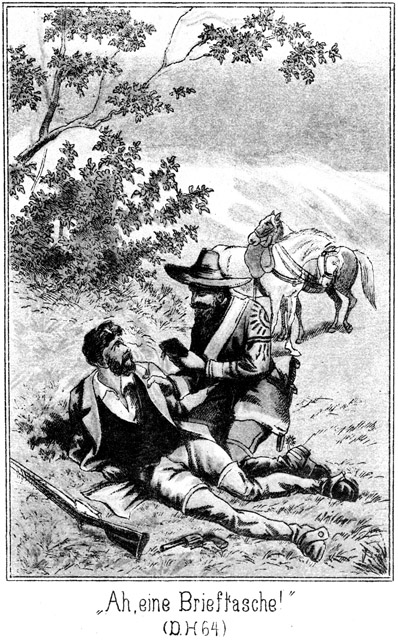»Ah, eine Brieftasche! Wem gehört sie?«
»Mir natürlich!«
»Und was enthält sie?«
»Einige Notizen und ein wenig Reisegeld.«
»Nun, das Reisegeld wirst Du wohl nicht brauchen, denn Du wirst unter meinem Schutze und auf meine Kosten reisen. Dennoch werde ich mich nicht an demselben vergreifen. Die Notizen aber werde ich mir doch einmal genau ansehen. Vielleicht kommen da alte bekannte Thatsachen und Namen vor.«
»Nein, gar nicht.«
»Nicht Ibrahim-Pascha?«
»Nein.«
»Oder Mohammed es Sadak Bey von Tunis?«
»Auch nicht.«
»Oder Tschita, Gökala?«
»Kein einziger von diesen Namen.«
»Will mich doch selbst überzeugen!«
Es wurde Bill himmelangst. Er hatte, sobald der Tag angebrochen war, die Brieftasche geöffnet und Alles gelesen. Es stand nicht nur der Name des rechtmäßigen Besitzers darin, sondern noch viel Anderes, wofür Steinbach sich höchlichst interessiren mußte.
Dieser hatte jetzt den Verschluß geöffnet und die erste Seite aufgeschlagen.
»Sapperment!« rief er aus. »Da steht ja der Name Edmond Robin! Das ist der Name, welchen Walker angenommen hatte. Gehört die Tasche etwa ihm?«
»Nein.«
Steinbach schlug weiter auf. Er überflog Seite um Seite. Sein Gesicht wurde immer gespannter. Als er auch die letzte Seite des in die Brieftasche eingebundenen Notizbuches gelesen hatte, sagte er:
»Welch ein Fund! Und welch eine Dummheit von diesem Walker, alle seine Missethaten nebst den Summen, die sie ihm eingetragen haben, hier zu verzeichnen! Eine Brieftasche kann man verlieren, und in diesem Falle mußte Walker sich sagen, daß es ihm an Kopf und Leben gehen werde. Ihm, nicht Dir gehört die Brieftasche?«
»Ja, ich will es gestehen.«
»Du hast sie ihm gestohlen?«
»Nein. Er verlor sie, und ich fand sie.«
»Auch Diebstahl, wenn auch nur Funddiebstahl! Warum hast Du sie ihm nicht wiedergegeben?«
»Eben dieser Notizen wegen.«
»Ah! Du wolltest ihn verderben?«
»Zunächst hatte ich nur die Absicht, ihm die Tasche nur gegen Magda's Freiheit wieder zu geben.«
»Kein übler Gedanke! Aber auch wieder nur Magda! Du siehst, daß Du Dich immer wieder selbst verräthst. Was aber steckt nun hier in der Seite?«
Er zog die Banknoten heraus, zählte sie, machte ein sehr erstauntes Gesicht und fragte:
»Wem gehört dieses Geld?«
»Mir.«
»Eine so bedeutende Summe?«
»Ja.«
»Woher hast Du sie?«
»Verdient.«
»Womit?«
»Mit verschiedenen Speculationen, welche mir glückten.«
»Höre, ich denke mir, daß Du dieses Geld nur in Folge einer einzigen Speculation besitzest, nämlich in Folge eines sehr heimlichen, aber speculativen Griffes in Walkers Tasche!«
»Ich werde doch keinen Freund bestehlen!«
»Unsinn! Du hast ja eingestanden, ihm die Brieftasche gestohlen zu haben! Das Geld war drin, und es wird Dir nicht eingefallen sein, es ihm wieder zu geben. Ist es nicht so?«
»Nein.«
»So ist es anders; nämlich Du hast Dir die Tasche nicht der Notizen wegen zurückbehalten, als er sie verlor, sondern Du hast sie ihm gestohlen, weil Du wußtest, daß sich dieses Geld darin befand.«
»Ihr irrt Euch da sehr!«
»Pah! Du hast ihm in der Nacht das Geld entwendet und Dich dann schleunigst aus dem Staube gemacht. Jetzt weiß ich Alles; ich werde Dich gar nicht weiter fragen. Natürlich behalte ich die Tasche.«
»Mit dem Gelde etwa?«
»Ja.«
»Das gehört mir.«
»Und Du selbst gehörst jetzt mir, folglich ist auch das Geld mein Eigenthum. Ich werde diesen braven Sennor Walker fragen, ob er Herr desselben gewesen ist oder nicht.«
»Natürlich wird er Euch belügen und Ja sagen. Uebrigens werdet Ihr Walkern ohne mich nicht fragen, wie ich Euch bereits gesagt habe. Es liegt in Eurem Interesse, mich jetzt frei zu lassen. Wir reiten nach dem Todesthale, befreien die dortigen Leute –«
»Ist bereits geschehen, mein Lieber.«
»Wie? Wer hat es gethan?«
»Ich.«
»Ihr? Ihr seid schon dort gewesen?«
»Ja. Alles, was thun zu wollen, Du mir gesagt hast, ist bereits geschehen, und jedenfalls besser, als Du es zu Wege gebracht hättest. Monsieur Juanito ist eingesperrt, und Du wirst das Vergnügen haben, ihm Gesellschaft zu leisten. Ihr seid zwei Prachtkerls, welche sehr gut zu einander passen. Jetzt aber muß ich weiter.«
Er steckte die Brieftasche ein und sah sich nach Newtons Pferd um.
»Wo wollt Ihr hin?« fragte dieser.
»Zu Deinen Papago's.«
»Ich denke, Ihr wollt mich nach dem Thale des Todes schaffen!«
»Allerdings, aber nicht sofort. Erst habe ich Anderes zu thun. Ich werde Dich auf Dein Pferd binden und mit mir nehmen.«
»Zu den Papago's?«
»Ja.«
Da machte Bill ein höchst erschrockenes Gesicht und sagte:
»Herr, wenn sie Euch erwischen!«
»Sorge Dich nicht um mich! Aber wenn sie mich erwischen, so erwischen sie natürlich auch Dich, und dann geht es Dir nicht gut. Nicht wahr, das wolltest Du nur sagen? Ich könnte ja immerhin von ihnen ergriffen werden. Du würdest Dich sogar herzlich darüber freuen.«
»Ihr sagt so, weil Ihr mich nach den früheren, alten Vorkommnissen beurtheilt; aber ich bin wirklich anders geworden.«
»Du hast Dich also gebessert?« lachte Steinbach.
»Ja. Ich bin in mich gegangen.«
»In Dich? Das war keine schöne Gegend.«
»Nein; aber sie ist seitdem erfreulicher geworden. Ich versichere Euch, daß ich es gut mit Euch meine.«
»Das ist ja außerordentlich!«
»Aber wahr. Ich kann Euch sehr, sehr viel nützen.«
»Wieso?«
»Denkt an Vergangenes zurück!«
»Das thue ich ja eben jetzt.«
»Denkt an die Familie Adlerhorst!«
»An sie erinnere ich mich ganz besonders.«
»Ich bin bereit, Euch Alles mitzutheilen, Euch eine jede gewünschte Auskunft zu geben.«
»Schön! Ich kenne Dich, und darum frage ich: Was verlangst Du dafür?«
»Meine Freiheit.«
»Nur? Weiter nichts?«
»Natürlich auch Straflosigkeit.«
»Und das ist Alles, was Du verlangst?«
»Alles.«
»Außerordentlich wenig.«
»Meint Ihr das im Ernste?«
»Mensch, bist Du verrückt! Wie könnte ich im Ernste so sprechen! Frei und straflos willst Du sein! Du, der an Allem schuld ist!«
»Nicht ich war es, sondern Ibrahim-Pascha, welcher die ganze Schuld trug!«
»Laß Dir nicht einfallen, mir das weiß zu machen! Denke auch nie daran, Deine Freiheit wieder zu erlangen. Du wirst überhaupt wohl nicht lange Zeit gefangen sein. Man wird Dich im Gegentheile sehr bald in das Jenseits befördern.«
»Es liegt in Eurem Interesse, dies zu verhüten.«
»Das bilde Dir nicht ein!«
»Ich allein bin es, der Euch Auskunft geben kann.«
»Ich brauche Dich nicht. Ich weiß Alles.«
»Unmöglich!«
»Und was ich ja noch nicht weiß, werde ich ohne Dich erfahren.«
»Wißt Ihr denn, wo sich die Glieder der genannten Familie alle befinden?«
»Weißt Du es etwa?«
»Nun, wo denn?«
»Das sage ich Euch eben erst dann, wenn Ihr mir die Freiheit und Straflosigkeit garantirt.«
»Nun, Du wirst eben weder frei, noch straflos sein.«
»Dann mögen die Adlerhorsts in Elend umkommen. Ihr seid schuld daran!«
»Ich will das gern auf mein Gewissen nehmen. Wenn ich Einen suche, so pflege ich ihn zu finden. Ich werde auch die Adlerhorsts finden. Dich brauche ich aber nicht dazu.«
»So kann ich Euch doch wenigstens Auskunft geben, wie und warum damals Alles geschehen ist.«
»Auch das erfahre ich ohne Dich. Die Adlerhorsts werden es mir erzählen.«
»Sie wissen nicht Alles.«
»Das Uebrige weiß Ibrahim-Pascha.«
»Wo ist er? Und wenn Ihr wüßtet, wo er sich befindet, so würdet Ihr ihn doch nicht zwingen können, Geständnisse zu machen, welche ihm das Leben kosten.«
»Du bist wirklich ganz außerordentlich besorgt um unser Wohl; ich muß das anerkennen, aber ich kann für dasselbe sorgen ohne Dich. Ohne Dich wäre es überhaupt gar nie gestört worden.«
»Ihr werdet es bereuen, meine Vorstellungen jetzt nicht beachtet zu haben.«
»Pah! Kennst Du mich?«
»Ja.«
»Nun, wer bin ich?«
»Das weiß ich freilich nicht genau.«
»Nun, so mache Dir auch keine Sorge um uns! Ich bin der Mann, auch ohne Dich fertig zu werden.«
»So schont Euch wenigstens jetzt!«
»Wieso schone ich mich denn nicht?«
»Ihr wollt mit mir reiten, um die Papago's zu erkunden. Seht Ihr denn nicht ein, daß Ihr da so außerordentlich leicht erwischt werden könnt, da die Gegenwart eines Gefangenen, den Ihr mit Euch schleppt, Eure Bewegungen erschwert.«
»Da hast Du freilich Recht.«
»Ich will Euch einen Vorschlag machen.«
»Laß ihn hören! Er wird sehr gut sein, vielleicht sogar ausgezeichnet.«
»Laßt mich hier zurück!«
»Ah! Natürlich frei?«
»Nein. Bindet mich an. Auf dem Rückwege bindet Ihr mich wieder los und nehmt mich mit.«
»Und Dein Pferd –?«
»Das hängt Ihr hier in die Büsche.«
Steinbach lachte ihm in das Gesicht:
»Du bist ein famoser Kerl! Zwar sollte ich Dir den Wunsch erfüllen, und zwar nach meiner Art. Dann würden in einigen Minuten die Geier Dir das Fleisch von den Knochen fressen. Meinst Du etwa, daß ich Dich so fesseln würde, daß Du an Flucht denken dürftest?«
»Nein, das denke ich nicht.«
»Oder daß Jemand kommen und Dich befreien könne?«
»Wer sollte kommen! Nein, ich bleibe sicher da, bis Ihr zurückkehrt.«
Sein Vorschlag war ein unsinniger; aber der Grund, weshalb er ihn gemacht hatte, war weniger unsinnig. Er hatte eine entsetzliche Angst, in Walkers Hände zu fallen. Die Gefahr dazu war nahe, wenn Steinbach ihn mit sich nahm. Wurde Steinbach von den Rothen bemerkt, so gelang es ihm wohl, zu entkommen, Bill aber wäre sicherlich in die Hände der Papago's gefallen. Und dann, welches Schicksal erwartete ihn bei Walker! Entweder wurde er unter den fürchterlichsten Qualen hingerichtet oder – – er wollte den Gedanken lieber gar nicht ausdenken.
Ließ Steinbach ihn aber einstweilen gefesselt hier zurück, so war es ihm vielleicht doch möglich, sich zu befreien. Vielleicht kam Jemand vorüber geritten! Auf alle Fälle aber war es besser, Steinbachs Gefangener zu sein, als sich von Walkern ergreifen zu lassen, der ja nicht einmal sein Geld wieder bekommen konnte. Steinbach war ein edler Charakter. Er quälte seinen Gefangenen sicherlich nicht aus Lust, während ebenso sicher Walker jedenfalls bedacht sein dürfte, sich die raffinirtesten Martern für den Dieb seines Geldes auszusinnen.
Das sagte sich Bill im Stillen. Steinbach aber ging auf den Vorschlag nicht ein. Er entschied:
»Es ist überhaupt eine ganz ungeheure Dreistigkeit von Dir, mir Vorschriften machen zu wollen. Du scheinst mich entweder für einen Schwachkopf, oder Deine Lage für viel ungefährlicher zu halten, als sie ist. Nein, Dein Schicksal ist besiegelt. Und bis es Dich ereilt, gehe ich nicht von Deiner Seite. Du reitest also mit mir.«
»Wie Ihr wollt. Ihr werdet es aber bereuen!«
Steinbach ging, um Bills Pferd herbei zu holen. Als er, es am Zügel führend, zurückkam, fiel sein Auge auf die Berglehne, von welcher er vorhin Bill hatte herabkommen sehen.
Sonderbar! Auch jetzt wieder war ein solcher Punkt zu erblicken, welcher sich näherte. Schnell schaffte Steinbach die beiden Pferde hinter die Büsche, hinter welchen er Bills Annäherung abgewartet hatte, und führte auch diesen selbst hin.
»Dort kommt Jemand,« sagte er, mit der Hand nach dem Berge hin deutend.
Bill folgte mit seinem Blicke der angedeuteten Richtung und sagte, zusammenfahrend:
»Walker!«
»Möglich!«
»Er verfolgt mich, den Anderen voran! Er will der Erste sein, der mich ergreift!«
»Du fürchtest Dich?«
»Herr, er ist entsetzlich!«
»So gestehest Du ein, ihm das Geld genommen zu haben?«
Bill holte tief Athem. Das Geständniß wurde ihm doch schwer; aber er gab es doch zu:
»Ja. Ich will lieber aufrichtig sein, als ihm in die Hände fallen. Flieht, Herr, flieht!«
»Fliehen? Fällt mir nicht ein!«
»So seid Ihr verloren!«
»Meinst Du?«
»Ja. Seht weiter oben auf dem Berge. Seht Ihr die Lanzenspitzen flimmern?«
»Ja.«
»Das sind die Papago's. Sie kommen. Sie kommen über den Berg herüber.«
»Vielleicht sind sie es doch.«
»Vielleicht? Nein, nicht vielleicht, sondern ganz gewiß sind sie es. Jetzt sehen sie uns noch nicht. Jetzt können wir ihnen noch entkommen.«
»Pah! Ich würde ihnen entkommen, und wenn sie bereits hier vor dem Busche hielten!«
»Seid nicht zu verwegen! Ihr kennt sie nicht!«
»Und sie mich nicht!«
Er trat zu seinem Pferde und zog das Fernrohr aus der Satteltasche. Als er durch dasselbe blickte, hielt Bill den voran eilenden Reiter im Auge. »Er reitet Galopp,« sagte er. »Er nähert sich schnell. Jetzt ist es bereits zu spät. Er muß uns sehen, wenn wir den Busch verlassen wollen!«
Das klang voller Angst. Steinbach nahm das Rohr vom Auge. Er antwortete lächelnd:
»Dieser Mann mag uns immer sehen! Er ist uns keineswegs gefährlich.«
»Ist es nicht Walker?«
»Nein.«
»Gott sei Dank!«
Doch einsehend, daß dieser Freudenausruf ganz unbegründet sei, fügte er hinzu:
»Aber die Papago's da hinten!«
»Sie sind es nicht.«
»Wer sonst?«
»Es sind meine Apachen und Maricopa's.«
»Herrgott!«
Er war leichenblaß geworden. Mit zitternder Stimme fragte er:
»Haltet Ihr das denn für möglich?«
»Sogar für gewiß.«
»Sie können doch nicht hier sein! Sie waren ja noch weit hinter uns! Sie wären doch jetzt vor den Papago's, und das werden sie nicht wagen.«
»Sie wissen jedenfalls, was sie thun. Und seht den vorderen Reiter! Er ist ein alter Bekannter von Euch. Ihr werdet Euch freuen, ihn wiederzusehen.«
»Woher soll ich ihn kennen?«
»Vom Silbersee aus. Jetzt könnt Ihr ihn bereits deutlich sehen. Bemerkt Ihr, wie dick er ist.«
»Ja. Alle Teufel! Sollte das Sam Barth sein?«
»Ja, er ist es.«
Da blickte Bill sich schnell nach seinem Pferde um; zugleich aber überzeugten ihn die Schmerzen, welche ihm von den Fesseln verursacht wurden, daß der Gedanke an Flucht geradezu ein Wahnsinn sei.
»Wollt Ihr fort?« fragte Steinbach, welcher den Blick bemerkt hatte. »Es wäre jammerschade, wenn Ihr der Gesellschaft, welche da kommt, Euern Anblick entziehen wolltet!«
Bill achtete gar nicht darauf, daß er wieder Ihr anstatt Du genannt wurde. Er fühlte nur die Schmach, sich von diesen Leuten ansehen zu lassen, vor ihnen als Gefangener zu erscheinen. Er wendete alle seine Kräfte an, die mit dem Lasso an den Leib gebundenen Arme zu bewegen – es gelang nicht. Er knirrschte grimmig mit den Zähnen, mußte sich aber nachgedrungen in sein Schicksal ergeben.
Je näher der dicke Sam kam, desto deutlicher konnte man sehen, daß sein Auge während des schnellen Rittes am Boden hing. Er verfolgte jedenfalls Bills Fährte. Er ritt an dem Busch vorüber und kam an die Stelle, wo Bill überwältigt worden war. Da hielt er sein Pferd an, stieg ab und untersuchte den Boden. Plötzlich blickte er nach dem Busch herüber, konnte aber weder die Pferde, noch die beiden Männer sehen, welche ganz auf der anderen Seite standen.
Steinbach hatte sich niedergekniet und blickte durch das Gezweig. Er wollte gern sehen, wie Sam sich verhalten werde.
Der Dicke hatte die Spur bemerkt, welche von jener Stelle aus nach dem Busche herüberführte. Er mußte erkennen, daß sie ganz neu sei, daß sich vielleicht der Betreffende noch hinter dem Busche befinde.
Im Nu stand er hinter seinem Pferde, lenkte dieses in weitere Entfernung hinüber und dann in einer Kreislinie um den Busch herum. Auf diese Weise mußte eine auf ihn gerichtete Kugel wohl eher sein Pferd als ihn treffen.
Da plötzlich blieb er halten. Er hatte Steinbach gesehen, welcher an der Erde saß und gar nicht so that, als ob er ihn bemerke. Bill blickte schon gar nicht hin zu ihm.
»Heiliger Strohsack!« rief er aus. »Was ist denn das?«
Jetzt drehte Steinbach sich langsam um.
»Sam! Ihr seid es?«
»Ja. Wer denn sonst? Haltet Ihr mich etwa für eine Kirchthurmspitze? Die würde um ein Weniges dünner sein als ich. Was treibt Ihr denn hier?«
»Allerlei Kurzweil.«
»Wir vermuthen Euch im Todesthale!«
»Ihr seht, daß ich nicht dort bin.«
»Freilich. Ihr seid ausgerückt. Und zwar nicht allein, sondern in Begleitung eines – – –«
Er hielt erstaunt inne. Erst jetzt konnte er, da er näher gekommen war, Bill, welcher hinter seinem Pferde gestanden, deutlicher sehen.
»Ein Gefangener!«
»Ja, wenn Ihr erlaubt, lieber Sam.«
»Wer ist es denn? Wollen uns einmal seine vordere Seite betrachtend
Er trat zu Bill, welcher ihm den Rücken zugekehrt hatte, sah ihm in das Gesicht und rief sogleich:
»Alle guten Geister – – fressen Schusterkleister! Ist das denn nicht jener famose Schlingelschlangel?«
»Welchen meint Ihr?«
»Den wir droben am Silbersee festgenagelt hatten, der aber nach unserm Fortgange höchst undankbar davongelaufen ist.«
»Ja, er ist es.«
»Wie heißt er gleich?«
»Bill Newton.«
»Und war früher Derwisch! Ja, jetzt besinne ich mich. Na, Bursche, freue Dich, daß wir den Derwisch derwischt haben! Es soll Dir bei uns so wohl gehen, daß Du denkst, die lieben Engel im Himmel spielen Ziehharmonika! Wie ist er denn da in Euer Lasso gelaufen, Master Steinbach?«
»Er begegnete mir hier. Er kam von den Papago's und wollte nach dem Todesthale.«
»Na, wo er herkommt, das weiß ich ja. Der Kerl hat Geld gemaust.«
»Wie? Das wißt Ihr?«
»Ich war doch dabei!«
»Als er es mauste?«
»Ja. Er schnitt Walkern die Brieftasche aus dem Gürtel. Der Kerl ist ein blaues Spitzbubenwunder. Der hat es weg! Aber der Aufruhr nachher, als er fort war!«
»So nahe waret Ihr, Sam?«
»Und wie! Ich saß so, daß Walker mich gleich mit der Hand erreichen konnte. Sie hielten mich in der Dunkelheit für einen Stein. Hihihihi! Sam Bart ein Stein! Das kann nur hier vorkommen, drüben in Herlasgrün aber niemals. Ich hörte die ganze Unterhaltung. Dieser liebe Bill Newton oder vielmehr der frühere Borstwisch – oder Flederwisch, ich weiß nicht so genau, wie es heißen muß, aber wischen thut es sich – hatte es nämlich auf unsere liebe, kleine Miß Magda abgesehen – – –«
»Also doch!«
»Leugnet er es etwa?«
»Ja.«
»Pah! Alle Leute in Amerika wissen es ja! Er wollte mit ihr in das Kraut und sie dann natürlich irgendwo sitzen lassen. Jetzt sitzt er freilich selber, und zwar in der Patsche!«
Er klopfte Bill vertraulich auf die Achsel und sagte im freundlichsten Tone zu ihm:
»Na, alter Schwammberger, bei uns wirst Du es gut haben! Zu jeder Mahlzeit gekochte Hiebe, gebackene Ohrfeigen und in Butter geschmoorte Maulschellen. Das legt Fleisch an, sage ich Dir! Ja, bei uns lebt man gut, das kannst Du zum Beispiel mir da gleich ansehen! Bist uns leider da oben am See durchgegangen, hier aber wieder eingegangen, und so wirst Du von uns wohl nicht übergangen werden.«
Und zu Steinbach gewendet, fuhr er in seinem von ihm selbst unterbrochenen Berichte fort:
»Also er hatte es auf Miß Magda abgesehen; das aber merkten die Andern und legten sich dazwischen. Sie wollten ihn nach dem Todesthale in das quecksilberne Bergwerk schaffen, als Gefangenen nämlich. Er aber belauschte sie, und ich wiederum belauschte ihn und sie. Er salvirte sich heimlich und nahm sich das Reisegeld mit. Er muß es irgendwo stecken haben.«
»Es steckt hier,« meinte Steinbach, mit der flachen Hand an seine Tasche klopfend.
»Hat ihm schon? Das ist sehr gut! Theilen wir?«
»Nein.«
»Pfui Teufel! Da riecht es müffig! Der Diebstahl wurde sofort entdeckt, und Walker ist gleich mit dreißig Papago's auf den besten Pferden hinter ihm her. Da bekam ich Sorge um Euch, Master Steinbach, und habe mich mit den Freunden aufgemacht, um den Papago's zuvorzukommen.«
»Mit allen?«
»Ja, mit allen Vierhundert.«
»Und seid Ihr ihnen wirklich vor?«
»Bis jetzt nur um einige hundert Pferdelängen, denke ich mir.«
»Habt es ihnen doch nicht merken lassen?«
»Fällt uns nicht ein! Meint Ihr etwa, daß wir Eiergräubchen im Kopfe haben oder Pflaumenmus?«
»So habt Ihr einen Bogen um sie geritten?«
»Natürlich. Sie gehen etwas weiter unten über die Berge und werden gar nicht auf unsere Fährte kommen. Die »starke Hand« kennt die Gegend. Er macht den Führer. Nur als ich die Spur dieses famosen Strohwisches – wollte sagen Derwisches bemerkte, bin ich vorausgeritten, um zu sehen, ob ich über sie klug werden könne. Ich dachte freilich nicht, daß ich dabei schon auf Euch treffen würde.«
»Wo sind denn die Gefangenen?«
»Noch bei den andern Papago's. Sie werden wohl heute gegen Abend in das Todesthal kommen. Wie aber kommt Ihr hierher?«
»Das will ich aufheben bis nachher. Ich muß es doch den Andern erzählen, und da könnt Ihr es ja auch mit anhören.«
»Schön! Sagt mir nur einstweilen das Eine, ob Ihr Erfolg gehabt habt?«
»Ich bin sehr zufrieden.«
»So bin ich es auch. Seht, da kommen sie schon. Sie haben mein Pferd stehen sehen und also gemerkt, daß es Etwas hier giebt.«
Die bei den Apachen befindlichen Weißen hatten sich von den Rothen getrennt und waren im Galopp voraus geritten. Die beiden Häuptlinge waren bei den Ihrigen geblieben. Sie hatten es nicht Ihrer Würde gemäß gehalten, neugierig zu sein.
Der Lord war der Vorderste.
»Ah, Master Steinbach!« rief er. »Ihr hier! Das ist ein gutes Zeichen. Wir kamen, um Euch zu retten.«
»Danke, Sir! War nicht so dringend.«
»Desto besser. Ihr seid nicht allein? Wer ist denn dieser – – ah, gefesselt!«
»Wie Ihr seht!«
»Wer ist denn der Kerl?«
»Seht ihn Euch einmal an!«
Er ritt um Bills Pferd, hinter welchem dieser stand, herum und sah ihn an. Die Beiden erkannten sich. Der Lord riß den Mund sperrangelweit auf, konnte erst vor Erstaunen kein Wort hervorbringen und sagte dann im Tone des größten Erstaunens:
»Ist das möglich, Master Steinbach? Oder täusche ich mich vielleicht?«
»Was meint Ihr denn?«
»Ja.«
»Allah il Allah! Allüberall Allah! Hätte ich doch meinen Regenschirm mit nach Amerika genommen!«
»Warum?«
»Wißt Ihr nicht mehr, daß ich diesem Menschen, als er mir in Constantinopel nachlief, mit dem Schirm in's Gesicht gefahren bin? O Du Haupthallunke! Und dann in Tunis hat er uns solche Mühe gemacht! Na, gut, daß wir Dich haben! Laßt ihn um Gotteswillen nicht wieder entwischen! Der Kerl ist für uns die Hauptperson. Komm doch einmal her, lieber Hermann!«
Sein Cousin lenkte sein Pferd herbei. Als Bill Newton ihn erblickte, zuckte er zusammen. Er erkannte ihn. Hermann von Adlerhorst entfernte sich wieder. Er war zu stolz, einen Gefangenen mit Worten zu quälen. Der Lord aber deutete auf ihn und fragte Bill:
»Kennst Du ihn noch?«
Es erfolgte keine Antwort.
»Den Du verderben wolltest! Weißt Du noch, daß Du ihn nach dem Kirchhofe von Stambul locken ließest? Er sollte Zykyma dort sehen. Er war aber klüger als Ihr und entkam Euch. Wir werden mit Dir zusammenrechnen!«
»Laßt ihn jetzt!« meinte Steinbach. »Da kommen die Indianer. Hebt ihn auf das Pferd und bindet ihn an. Paßt aber gut auf ihn auf!«
»Das werde ich besorgen, ich und Tim,« sagte Jim.
Die beiden Brüder nahmen den einstigen Derwisch auf ihre Arme, setzten ihn auf das Pferd und banden ihm unter dem Bauche desselben die Beine zusammen. Dann setzte sich der Zug in Bewegung, Jim rechts und Tim links von dem Gefangenen, welcher das Auge nicht ein einziges Mal erhob, um einen der Männer anzusehen.
Er erkannte jetzt, wie schnell sein Schicksal sich geändert hatte. Vor wenigen Minuten im Besitz einer so großen Summe und voller Hoffnung, in den Besitz Magda's zu gelangen, war er jetzt der Gefangene seiner Todfeinde. Das Allerschlimmste aber war die Erkenntniß, daß er an eine Rettung nicht denken dürfe. Die Apachen und Maricopa's waren den Papago's weit überlegen und kannten auch deren Absichten. Und selbst wenn die Papago's gesiegt hätten, wäre Bill in ihre Hände gefallen, und dann harrte seiner ein Schicksal, welches er sich gar nicht schlimm genug ausmalen konnte.
Er fluchte in seinem Innern; er dachte an Gott und den Teufel. Von dem Ersteren hatte er keine Rettung zu erwarten, aber der Teufel – ach, wenn es doch einen Teufel gäbe! Wenn die Geschichte von Doctor Faust doch keine bloss Sage wäre! Er hätte gern und willig dem Satan Leib und Seele unter der Bedingung verschrieben, ihn heute zu befreien und dann Gelegenheit zu geben, sich an Denen, deren Gefangener er jetzt war, rächen zu können.
Der Ritt wurde in ungeminderter Eile fortgesetzt. Jetzt konnte auch Steinbach den Führer machen. Er ritt mit allen Denjenigen, welche sich für seine jüngsten Erlebnisse interessirten, voran, und erzählte ihnen, was er in dem Thale des Todes gethan und erfahren hatte.
So verging ein großer Theil des Nachmittages, ehe man in die Gegend des Thales kam.
»Die Papago's werden doch nicht bereits da sein!« meinte er.
»Seit Ihr besorgt?« fragte Sam.
»Besorgt? Mit vierhundert tapferen Kriegern gegen dreißig Feinde?«
»Na also!«
»Angst habe ich nicht, so weit meine Person und Ihr Alle in das Spiel kommt. Aber Günther ist der einzige kampffähige Mann im Hause Roulins. Wenn die Papago's schon hier wären, so könnte leicht Etwas geschehen sein, was uns einen Strich durch die Rechnung macht.«
»Hm! Ich glaube nicht, daß sie schneller geritten sind als wir. Freilich, nach Spuren brauchen wir uns gar nicht umzuschauen. Der Boden besteht aus nacktem, glattem Fels, wo es keine Spur giebt. Treiben wir unsere Pferde noch recht an!«
Im Galopp ging es auf den östlichen Eingang zu und in das Thal hinein. Bald war das Gebäude zu erkennen, und dann hielten sie vor dem Thore desselben.
Steinbach klopfte laut an. Bereits nach kurzer Zeit wurde geöffnet. Günther von Langendorff erschien.
»Gott sei Dank!« jubelte er, als er die Freunde erblickte.
»Gott sei Dank!« seufzte auch Steinbach erleichtert auf.
Er hatte mehr Sorge gehabt als man ihm angemerkt hatte. Günthers Auge schweifte über die stattliche Schaar der Apachen hinweg und blieb auch auf dem gefangenen Bill Newton heften. Steinbach erklärte ihm in kurzen Worten, wie er sich dieses Mannes bemächtigt habe, und fragte:
»Wie steht es in dem Hause?«
»Alles wohl. Es ist nicht die mindeste Störung vorgekommen. Die armen Teufel essen und trinken in Einem fort und haben sich bereits ganz sichtlich erholt.«
»Niemand dagewesen?«
»Kein Mensch.«
»So wollen wir jetzt hinein; das heißt wir Bleichgesichter und die beiden Häuptlinge. Wir haben zu berathen. Die rothen Krieger bleiben einstweilen hier. Einige von ihnen aber, welche die schnellsten Pferde haben, mögen zurückkehren, eine ziemliche Strecke vor das Thal hinaus, um uns zu melden, wenn die Papago's kommen. Unsere Pferde aber lassen wir auch vor dem Hause.«
»Warum?« fragte der Lord.
»Ich habe meine Absicht. Später davon.«
Sie stiegen ab und schritten durch den engen Eingang in den Hof. Dort stand der ›schnelle Wind,‹ der Apache, welcher im Quecksilberwerke gefangen gewesen war. Die ›starke Hand,‹ der Häuptling, war sein Oheim. Steinbach hatte ihn grüßen sollen, hatte es aber nicht gethan. Er wollte einmal ein so unverhofftes Wiedersehen mit beobachten. Der Indianer läßt Fremden nie seine Gefühle ahnen. Die ›starke Hand‹ hatte seinen Neffen, den ›schnellen Wind,‹ für todt gehalten; hier sollte er ihn lebend wiedersehen. Wie würde er sich wohl dabei verhalten?
Er trat gleich hinter Steinbach in den Hof. Steinbach that einen Schritt zur Seite und richtete den Blick auf den Häuptling. Dieser sah seinen Neffen und erkannte ihn trotz seines fürchterlich leidenden Aussehens. Keine Muskel seines Gesichtes zuckte; nicht die Wimper bewegte sich. Er schritt würdevoll auf den Neffen zu, reichte ihm ebenso würdevoll die Hand und sagte:
»Der ›schnelle Wind‹ ist nicht in die ewigen Jagdgründe gegangen, wie die Krieger der Apachen glaubten. Er sei gegrüßt und mag mit nach unsern Wigwams zurückkehren.«
Auch der Neffe behielt seine Würde bei. Er fragte den Onkel nur:
»Hat Dir das Bleichgesicht nicht gesagt, daß ich hier sei?«
»Nein. Er brauchte es nicht zu sagen; er wußte ja, daß ich ohnedies kommen werde.«
Steinbach wendete sich an Günther:
»Sind die beiden Gefangenen noch in demselben Raume eingesperrt?«
»Ja. Sie haben sich vollständig ruhig verhalten.«
»So will ich hier diesen noch zu ihnen schließen.«
Er deutete auf Bill Newton. In diesem Augenblicke aber sah er Adler aus einer Thür des Hofes kommen. Er mußte ein vorschnelles Zusammentreffen desselben mit Hermann von Adlerhorst, welcher doch Adlers Bruder war, verhüten, zog den Schlüssel, welcher die Handschellen öffnete, aus der Tasche, gab ihn an Günther und sagte:
»Hier, übernimm Du es. Ich muß zu Adler. Nimm Bill das Lasso ab und lege ihm Arm- und Beinschellen an. Aber sorgfältig.«
Dann eilte er Adlern entgegen und bat ihn, in die Stube, aus welcher er gekommen war, zurückzutreten. Adler that es, und dann führte Steinbach Hermann von Adlerhorst zu ihm.
Es stand kaum zu erwarten, daß diese Beiden sich gleich im ersten Augenblicke wieder erkennen würden; dennoch mußte man bei diesem Wiedersehen vorsichtig sein, weil Adler so sehr geschwächt war und seine Mutter erst vorbereitet werden mußte, sie also keinen Freudenlaut hören durfte, der ihr Kunde von der Anwesenheit eines ferneren Sohnes gegeben hätte und ihrer fast zerstörten Constitution ganz sicher höchst gefährlich geworden wäre. Sie fühlte sich doch bereits durch das gestrige Wiedersehen mit Adler höchst angegriffen.
»Wohin führen Sie mich?« fragte Hermann von Adlerhorst.
»Ich will Ihnen eine Person zeigen, für welche Sie sich interessiren werden.«
»Wer ist es?«
»Versuchen Sie, es selbst zu errathen, nachdem Sie ihn gesehen haben.«
»Es ist also ein Herr?«
»Ja. Bitte, warten Sie!«
Er ließ ihn vor der Thür stehen und trat erst selbst in die Stube.
»Wie beruhigend, daß Sie wiedergekehrt sind,« meinte Adler. »Wir hatten Sorge um Sie. Warum schickten Sie mich hierher zurück?«
»Zunächst um Sie zu fragen, ob Sie sich schon stärker fühlen, als Sie gestern waren.«
»Bedeutend. Wir Alle haben gegessen, gegessen und immer wieder gegessen. Der kleine Weinvorrath, welcher vorhanden ist, wird rasch aufgezehrt sein, wenn wir so fort machen.«
»Das ist nur sehr recht!«
»Es ist unglaublich, was ein Mensch, der Jahre lang nur gehungert und gearbeitet hat, verzehren kann. Wir wollen vorsichtig sein – – –«
»Das ist schön,« lächelte Steinbach.
»Aber es ging wirklich nicht. Wenn wir glaubten, satt zu sein, so erwachte beim Anblicke der Speisen der Hunger von Neuem und noch stärker, als er vorher gewesen war. Ich fühle mich stark genug, mit einem Löwen zu kämpfen.«
»Auch seelisch?«
»Ja.«
»Sie bringen eine böse Nachricht?«
»Im Gegentheile eine sehr gute.«
»Dann schnell her damit. An der Freude sterbe ich nun nicht erst.«
»O, auch die Freude kann gefährlich werden!«
»Mir nun nicht! Die größte Freude meines Lebens, das größte Entzücken war es gestern Abend, mich frei und erlöst zu sehen. Es hat mich nicht getödtet. Nun bin ich geharnischt gegen alles Andere.«
»Wollen es versuchen. Aber halten Sie sich tapfer!«
Er öffnete die Thür.
»Bitte, kommen Sie herein!«
Hermann von Adlerhorst trat ein. Da die Dämmerung noch nicht angebrochen war, gab es selbst an diesem fensterarmen Orte Licht genug, daß die beiden Brüder sich sehen konnten.
Martins Auge fiel auf Hermann. Gleich in demselben Augenblicke schrie er auf:
»Hermann! Ists möglich!«
Er streckte die Arme aus, doch hielt ihn die freudige Ueberraschung oder vielmehr der freudige Schreck die Füße fest. Er hatte in der langjährigen Zeit des Leidens sein Aussehen verändert; darum wurde er von dem Bruder nicht erkannt. Aber sein Ausruf, seine Stimme ließen diesem ahnen, wen er vor sich habe. Hermann trat einen Schritt näher und fragte in staunendem Jubel:
»Welch eine Stimme! Martin, wärst Du es?!«
»Ja, ich bin es.«
»Herr, mein Gott! Du hier!«
Sie stürzten sich in die Arme und hielten sich fest umschlungen. Dann ließen sie sich los, traten von einander zurück, fielen sich, nachdem sie einander angeblickt hatten, wieder in die Arme, um sich innig zu küssen.
So ging es eine Weile fort, bis sie endlich wieder Worte fanden.
»Welch ein Tag! Welch eine Wonne!« rief Hermann. »Du hier, Du! Wer hätte so Etwas ahnen, auch nur träumen können!«
»Und ich von Dir! Freilich erfuhr ich bereits gestern Abend, daß Du in Amerika seiest.«
»Von wem?«
»Von Steinbach.«
»Ah, von ihm!«
»Du kamst mit ihm. Du mußt also mit ihm gesprochen haben. Hat er Dir nicht gesagt, daß Du mich hier finden würdest?«
»Nein.«
»So hat er Dich überraschen wollen.«
»Gewiß! Mich und den Lord.«
»Welchen Lord?«
»Eagle-nest, unsern englischen Cousin.«
»Ja, ja! Er ist ja auch hier, wie Steinbach sagte. Du befindest Dich bei ihm, in seiner Gesellschaft?«
»Ja, ich reise mit ihm. Er ist mit hier.«
»Soll ich ihn denn holen?«
»Sofort, sogleich!«
»Nicht später? Wir Beide haben uns ja kaum nur zwei Augenblicke gehabt! Wir haben uns so viel, so sehr viel zu erzählen.«
»So viel, daß wir in Monaten nicht fertig werden. Darum wollen wir lieber jetzt noch nicht beginnen. Ich bin gefangen gewesen, habe Jahre lang kein Menschengesicht gesehen. Jetzt ist ein Freund da, gar ein Verwandter. Warum soll ich ihn nicht sofort begrüßen?«
»Wie Du willst. Du sollst ihn sofort sehen.«
Er öffnete die Thür, um hinaus zu eilen. Da erblickte er den Lord, welcher über den Hof herüber kam und schon von Weitem meldete:
»Was mir nur dieser Steinbach zumuthet!«
»Ist es denn etwas gar so Schlimmes?«
»Eigentlich nicht schlimm, aber doch sehr sonderbar.«
»Nun, was denn?«
»Ich soll Dich fragen, von welchem Dichter die Worte sind:
Getheiltes Leid ist doppelt Leid,
Getheilte Freud' ist doppelt Freud'.«
»Das hat er anders gemeint. Soeben habe ich eine ganz außerordentliche Freude erlebt. Er schickt Dich zu mir, damit ich diese Freude mit Dir theilen soll, lieber Vetter.«
»Nun, so schneide sie auseinander, und gieb mir meine Hälfte!«
»Sogleich! Komm herein!«
Er führte den Lord in die Stube, zeigte auf Martin und sagte:
»Hier steht die Freude, von welcher ich spreche, verkörpert, Cousin.«
Der Lord betrachtete Martin und sagte dann:
»O wehe!«
»Warum o wehe?«
»Den können wir ja nicht zerschneiden.«
»Nein, aber haben dürfen wir ihn alle Beide.«
»Weißt Du denn, ob ich ihn haben will?«
»Ich hoffe es zuversichtlich.«
»Na, wer ist er denn?«
»Rathe einmal!«
Martin's bleiches, eingesunkenes Gesicht blickte ihm freudig lächelnd entgegen. Der Lord legte den Kopf leise auf die Seite und sagte:
»Hm! Kenne ihn nicht. Scheint kein übler Kerl zu sein, muß aber vorher tüchtig herausgefüttert werden.«
»Er hat hier unendlich viel gelitten. Er war einer der Gefangenen, welche hier im Quecksilberbergwerke arbeiten mußten.«
»Das ist freilich schlimm! Quecksilber soll man weder essen noch trinken. Es soll etwas schwer verdaulich sein. Wie heißt der Sir?«
»Das eben sollst Du errathen!«
»Unsinn! Wer kann unter den vielen Millionen Namen, welche es giebt, den richtigen finden!«
»Nun, er heißt Adler.«
»Wie? Was? Adler? Also Der, welchen Steinbach so lange Zeit gesucht hat?«
»Ja.«
»Verteufelt, verteufelt! Das freut mich ungeheuer, ungeheuer! Willkommen, Master Adler. Hoffe, daß wir gute Freunde sein werden!«
Er streckte ihm die Hand entgegen. Martin schlug ein und sagte:
»Das sind wir bereits.«
»Bereits? So? Schön! Ist mir lieb.«
»Wir sind sogar Verwandte!«
»Verwandte? Hm! Doch nicht!«
»Doch! Ich heiße nicht nur Adler, sondern in früheren Jahren fügte ich meinem Namen noch eine Sylbe bei, welche so viel wie ›Nest‹ bedeutet.«
»Doch nicht etwa ›Adlerhorst‹?«
»Ja, genau so heiße ich.«
Da riß der Lord nach seiner bekannten Weise vor Erstaunen den Mund auf, daß man ihm beinahe bis in den Schlund hinabsehen konnte, fuchtelte einige Male mit den langen Armen in der Luft herum und sagte sodann:
»Ich platze vor Freude auseinander!«
»Es scheint wirklich so,« lachte Hermann. »Wenigstens schnappst Du ganz bedeutend nach Luft.«
»O, nicht nur nach Luft, sondern nach allem Möglichen, besonders nach dem Verständniß dafür, daß ein Adlerhorst hierher kommen und sich so aushungern lassen kann.«
»Auch Du, ein Adlerhorst, bist ja hier.«
»Nun freilich, ja.«
»Und gar so sehr wohlgenährt siehst Du auch nicht aus.«
»Mach keine dummen Witze in dieser ernsten Angelegenheit! Also wirklich ein Adlerhorst! Aber mit welchem Vornamen?«
»Ich heiße Martin.«
»Schön! So weiß ich wenigstens, wie ich Dich zu nennen habe. Alles Andere später; jetzt hast Du mich vor allen Dingen regelrecht zu umarmen, damit ich es auch fühle und nicht nur sehe, daß Du da bist!«
»Mit dem allergrößten Vergnügen!«
Er folgte der Aufforderung, welche in so eigenartiger Weise an ihn gerichtet war. Dann meinte der Lord:
»Und nun erzähle, wie Du eigentlich hierher hast kommen können!«
»Davon später. Ebenso könnte ich Euch vor allen Dingen fragen, wie Ihr Beide nach dem Thale des Todes gekommen seid; aber jetzt giebt es etwas viel Wichtigeres. Hat Steinbach Euch gesagt, wen Ihr hier finden würdet?«
»Ja.«
»Nun, wen?«
»Arme Menschen, welche mit Gewalt und List in den Berg gebracht und dort angeschmiedet worden sind.«
»Hat er Namen genannt?«
»Nein; nur den einen – Hauser.«
»Gerade diesen Meine ich. Von welchen Personen hat er da gesprochen?«
»Von Vater, Mutter und Tochter.«
»Euch aber nicht gesagt, in welchem Verhältnisse sie zu uns Dreien stehen?«
»Nein.«
»So hat er es auch hier auf eine Ueberraschung abgesehen. Du wirst Dich des Namens Hauser wohl noch aus früheren Zeiten erinnern, lieber Hermann?«
»Ja. Meinst Du etwa den Lieblingsdiener unserer Mama?«
»Ja, gerade ihn meine ich.«
»Du willst doch nicht sagen, daß er und der Hauser, um welchen es sich hier handelt, identisch sind?«
»Er ist es.«
»Herrgott! Wie ist das möglich!«
»Hauser ist seit damals verschwunden. Er ist nach Amerika gegangen.«
»Weißt Du das gewiß?«
»Natürlich!«
»Mutter ist doch mit ihm verschwunden!« bemerkte Hermann hastig.
»Er hat sie in seinen Schutz genommen, indem er sie für seine Frau ausgab.«
»So wäre Frau Hauser vielleicht –«
Er wagte es nicht, diese freudige Vermuthung auszusprechen, Martin fiel schnell ein:
»Unsere Mutter, ja!«
»So ist sie hier?«
»Jawohl.«
»Du hast sie gesehen?«
»Sogar mit ihr gesprochen, an ihrem Herzen gelegen!«
»Sie hat sich zu erkennen gegeben?«
»Das war gar nicht nöthig; ich habe sie erkannt.«
»Dann hin zu ihr! Schnell, schnell! Führe mich! Zeige mir, wo sie sich befindet!«
»Gemach, gemach, lieber Bruder! Sie hat viel, viel erduldet und ist so schwach, daß wir sie schonen müssen. Sie muß vorbereitet werden.«
»So thue das, thue es schnell!«
»Gleich. Aber vorher muß es mir auffallen, daß Du Dich nicht nach der Tochter Hauser's erkundigst.«
»Ist auch sie etwa nicht seine eigene Tochter?«
»Nein.«
»Aber eine Adlerhorst kann sie doch nicht sein.«
»Wir hatten keine solche Schwester. Die einzige, Tschita, ist gefunden.«
»O, wir haben zwei Schwestern, jene Tschita und Magda.«
»Magda unsere Schwester! Unbegreiflich!«
»Sie wurde erst nach jener Zeit geboren. Wir haben sie also nicht gesehen, nicht gekannt, gar nichts von ihr gewußt. Jetzt ist sie leider nicht da. Sie befindet sich bei Roulin und schwebt in ziemlicher Gefahr, wie Steinbach mir sagte.«
»Was das betrifft, so kann ich Dich beruhigen. Sie schwebte in Gefahr, doch wird diese Gefahr in einigen Viertelstunden, vielleicht bereits in Minuten vorüber sein. Sie kommt nach hier.«
»Ah, nun begreife ich diesen Steinbach. Er ist aus lauter Geheimnissen zusammengesetzt. Wer mag er sein? Sicher ist er nicht das, was er scheint. Herr von Langendorff sagte mir, er sei eine Durchlaucht und Offizier – Oberst.«
»Ja, ja, doch das liegt uns jetzt fern. Ich will Mutter aufsuchen und sie auf Dich vorbereiten.«
Er ging. Nach einiger Zeit kehrte er zurück, um Martin zu Frau von Adlerhorst zu führen. Später wurde auch der Lord geholt. Die Scene dieses Wiedersehens kann nicht beschrieben werden. Solche Augenblicke dürfen nur Engel sehen. Das Auge eines Sterblichen entweiht die Heiligkeit derselben.
Während auf diese Weise die beiden Brüder mit ihrer Mutter und dem Lord so vollauf beschäftigt waren, daß sie keine Minute für die Anderen übrig behielten, hatte Langendorff den gefangenen Bill in das fensterlose Gemach geschafft, in welchem sich Juanito und die Alte in Fesseln befanden.
Er legte ihm Hand- und Fußschellen aus Eisen an und nahm ihm dann das Lasso ab. Keiner sprach ein Wart dabei. Die Thür war von Langendorff offen gelassen worden, damit er in dem sonst finsteren Raume sehen könne.
Da ließ sich ein fürchterliches Stöhnen in der einen Ecke hören. Der scalpirte Juanito war es.
»Sie kommen! Wehe, wehe! Hier liegt es!« schrie er auf.
Er lag im Wundfieber. Langendorff legte den kleinen Schlüssel, mit welchem er die Handschellen zugeschlossen hatte, auf den neben ihm an der Wand stehenden Tisch und trat zu dem Scalpirten, um sich seinen Kopf zu besehen. Er hätte den Schlüssel ebenso gut in die Tasche stecken können, es war eine ganz unwillkürliche, gedankenlose Handlung. Natürlich hatte er gar nicht etwa die Absicht, ihn liegen zu lassen, und während seiner Anwesenheit konnte er doch auch gar nicht weggenommen und mißbraucht werden. Langendorff bückte sich zu dem Verwundeten nieder, der sich trotz seiner Fesseln von einer Seite auf die andere warf. Er befühlte ihm die Stirn, sie glühte vor Hitze. Der haarlose Kopf bot in seiner Blutrünstigkeit einen schauderhaften Anblick.
Bill Newton brannte vor Begierde, sich zu befreien und zu rächen. Er hatte bereits unterwegs jede Kleinigkeit genau beobachtet und war gewillt, auch hier die Augen offen zu halten. Er sah, daß Langendorff den Schlüssel auf den Tisch legte.
»Teufel! Wenn er ihn liegen ließ!« dachte er.
Sein Blick hing begierig an dem Instrument. Dabei bemerkte er, daß an dem Kasten des Tisches auch ein kleiner Schlüssel steckte von derselben Größe. Ein Gedanke durchzuckte ihn. Wenn der Schlüssel liegen blieb, so konnte man die Schlösser der Fesseln öffnen. Aber das durfte nicht gleich geschehen, sondern erst dann, wenn ein Weg zur Flucht sich öffnete. Darum mußte man es so einrichten, daß man den Schlüssel bis dahin doch in den Händen hatte. Ein vorzeitiges Oeffnen der eisernen Schellen hätte Alles verderben können; jedenfalls wurden die Fesseln untersucht. Wie es aber anfangen, den Schlüssel behalten zu können? Das konnte nur mit Hilfe des anderen Schlüssels möglich gemacht werden.
Jetzt erhob Langendorff sich aus seiner gebückten Stellung. Bill verfolgte seine Bewegungen mit glühenden Blicken; er vermochte vor Spannung kaum zu athmen – da, er holte tief, tief Athem, Langendorff ging an dem Tisch vorüber und zur Thür hinaus, welche er hinter sich verschloß.
Es war mit größter Bestimmtheit zu erwarten, daß er sich auf den Schlüssel besinnen und schleunigst zurückkehren werde, ihn zu holen.
Bill trat zu dem Tische, zog den Kastenschlüssel aus dem Schlosse, legte ihn hin und nahm statt seiner den wirklichen Schlüssel an sich. Er steckte ihn jn den Mund und kauerte sich dann in die Ecke nieder.
Richtig! Es erschallten kaum einige Secunden später draußen eilige Schritte. Die Thür wurde aufgeschlossen, Langendorff kam herein und nahm den Schlüssel an sich, natürlich den falschen, den Tischkastenschlüssel.
Als sich dann hinter ihm die Thür wieder schloß, war es Bill zu Muthe, als ob er sich bereits mit einem Fuße in Freiheit befinde.
Nun war es still in dem dunklen Raume. Nur zuweilen ließ sich das schmerzhafte Stöhnen oder ein unbewußter Ausruf des Fiebernden hören. Die Alte hatte in der Ecke gesessen, in welche von der Thür aus kein Licht zu dringen vermochte; darum war sie nicht zu sehen gewesen. Juanito's Gestalt aber war trotz der schlechten Beleuchtung von Bill gesehen worden. Diesem wurde bei dem Stöhnen ganz bang zu Muthe. Er fragte laut:
»Wer ist hier?«
Da antwortete die Stimme der Alten:
»Wir sind Zwei.«
»Ah, noch Jemand. Wer seid Ihr?«
»Sagt mir zuvor, wer Ihr seid, ob ein Feind von Sennor Roulin.«
Die Fragerin war eingesperrt, mußte also eine Freundin Roulin's sein; darum antwortete Bill:
»Ich bin sein bester Freund und Genosse.«
»So müßt Ihr auch mich kennen.«
»Ich sehe Euch aber ja nicht. Eurer Stimme nach müßt Ihr eine ältere Dame sein.«
»Ja. Ich bin Sennora Arabella.«
»Kenne ich nicht.«
»Man nennt mich abgekürzt Sennora Bella.«
»Es giebt viele Damen, welche Bella heißen, und ich bin leider nicht allwissend.«
»Ich führe den Haushalt Sennor Roulin's.«
»Ach so! Wer ist denn der Mann, welcher so stöhnt?«
»Das ist Juanito.«
»Ah, dieser! Was ist mit ihm? Ist er krank?«
»Der Indianer hat ihn scalpirt.«
»Sapperment! Wo denn?«
»Auf dem Kopfe natürlich! Wo denn sonst!«
»Das weiß ich. Ich meine aber, an welchem Orte er überfallen wurde.«
»Ueberfallen wurden wir von den beiden Schurken, welche als Freunde kamen, uns aber als Feinde behandelten. Sie haben alle unsere Gefangenem befreit.«
»Wie ist das zugegangen?«
Sie erzählte ihm so viel, wie sie für gerathen hielt, und fragte ihn dann, wie er in Steinbach's Hände gefallen sei. Er antwortete:
»Roulin schickte mich hierher, um seine Ankunft zu melden; da wurde ich überfallen.«
»Dem Himmel sei Dank! Er kommt! Aber wann?«
»Heute Abend.«
»So wird er uns befreien!«
»Das bildet Euch nur ja nicht ein. Draußen vor dem Hause halten vierhundert Apachen und Maricopa's, welche ihn empfangen werden. Er selbst wird also gefangen genommen.«
»Mein Gott! Wie werden wir frei!«
»Das weiß ich auch nicht.«
»Es ist schrecklich! Ich glaube, diese Menschen werden uns tödten!«
»Ich bin sehr überzeugt davon.«
»Laßt uns zur Madonna beten, daß sie uns einen Erlöser sendet!«
»Treibt keinen Spott! Die Madonna wird sich um unsere Befreiung bekümmern! Wir haben so viel auf dem Gewissen, daß sie, ganz im Gegentheile, Gott bitten muß, uns mit ewiger Verdammniß zu bestrafen.«
»Ihr seid ein sonderbarer Tröster!«
»Ich will damit nur sagen, daß wir weder von Menschen, noch von Engeln Hilfe zu erwarten haben. Wir können uns nur auf den Teufel und auf uns selbst verlassen.«
»Redet nicht so schaurig!«
»Ihr seid im Hause bekannt; ich war noch niemals hier. Denkt einmal nach, auf welche Weise wir uns helfen könnten!«
»Wären wir nur erst die Fesseln los?«
»Was dann? Wißt Ihr Etwas?«
»Noch nicht.«
»So nützt es uns auch nichts, wenn wir nicht gefesselt sind.«
»Wir könnten hier ausbrechen –«
»Und uns wieder festnehmen lassen.«
»Wir tödten Alle.«
»Ihr und ich? Vierhundert Mann tödten? Pah! Ja, wenn es möglich wäre, sich heimlich fortzuschleichen. Wie viele Ausgänge giebt es hier?«
»Nur einen.«
»Verdammt! So können wir selbst durch List nicht hinaus. Es muß doch wenigstens aus dem Bergwerk ein Stollen in das Freie führen.«
»Nein, das weiß ich ganz gewiß.«
»Nun, so ist es aus mit uns. Wir werden in sehr kurzer Zeit im Himmel sein, wenn man es nicht vorzieht, uns einen glühenden Schaukelstuhl in der Hölle anzuweisen.«
»Hu! Redet nicht so! Schweigt lieber!«
Und er schwieg, sie auch. Der Gedanke, daß es ihm unmöglich sei, sich zu befreien, machte ihm im Augenblicke nicht so viel zu schaffen, wie der andere, daß er noch heute mit Roulin und Walker zusammengesteckt werden könne. Er war ein Bösewicht ersten Ranges, aber es graute ihm doch vor diesem Wiedersehen. Er fragte sich, ob er es sagen solle, daß er den Schlüssel besitze, doch bereits nach kurzer Ueberlegung kam er zu dem Entschlusse, sein Geheimniß wenigstens jetzt noch für sich zu behalten.
Unterdessen hatte Langendorff Steinbach aufgesucht, um ihm den Schlüssel zurückzugeben. Der ›schnelle Wind‹ wurde an die Thür der Gefangenen beordert, um sie zu bewachen. Dann berieth man sich über den Plan, welchen man gegen Walker und die Papago's anwenden wolle.
»Sie müssen Alle sterben!« sagte die ›starke Hand‹.
»Ein Jeder soll sein Verbrechen büßen!« antwortete Steinbach. »Wer aber kein Verbrecher ist, soll geschont werden. Die Papago's sind an den Verbrechen der Bleichgesichter unschuldig.«
»Sie helfen ihnen aber!«
»Sie ahnen nicht, daß sie es mit so bösen Menschen zu thun haben. Vor allen Dingen werden wir Menschenblut schonen. Vielleicht gelingt es uns, diese dreißig Papago's ohne Kampf zu überwältigen.«
»Wie will mein weißer Bruder dies anfangen?«
»Meine rothen Brüder werden sich draußen verbergen, so daß sie von den Feinden nicht gesehen werden. Diese Letzteren kommen ungehindert in das Haus und werden eingelassen. Da aber stecken hundert Apachen, welche sie sofort in Empfang nehmen.«
»Das ist sehr gut!«
»Ich werde sogleich den Befehl dazu geben. Der Häuptling der Maricopa's mag mich begleiten. Er ist ein kluger Krieger und wird einen Ort finden, wo er mit den rothen Kriegern von den Papago's nicht gesehen wird.«
Er ging mit dem Häuptling ›scharfes Beil‹ vor das Haus hinaus, wo die Rothen hielten. In diesem Augenblicke kamen die Kundschafter angesprengt und meldeten, daß die dreißig Papago's in wenigen Minuten hier sein würden. Steinbach ließ hundert Apachen absitzen und in das Haus treten. Die Andern aber sprengten alle davon, von dem ›scharfen Beil‹ angeführt und die Pferde der Hundert mit sich nehmend, tiefer in das Thal hinein, wo sie in gedeckter Stellung Posto nahmen, aber einige der Ihrigen vorschickten, um die ankommenden Papago's heimlich beobachten zu lassen.
Die hundert Apachen versteckten sich in den Parterreräumlichkeiten, welche von dem Eingange am Entferntesten lagen, und die Weißen wurden so postirt, daß sie nicht sofort bemerkt werden konnten. Ihre Pferde waren von den Indianern mit fortgenommen worden, so daß Roulin also in den ersten Minuten gar nichts Auffälliges bemerken konnte. Selbst die Leiter wurde aus der Cysterne gezogen, um nicht etwa sein Mißtrauen zu erregen. Da kam der dicke Sam herbei und fragte Steinbach schmunzelnd:
»Jetzt sind wir wohl bereit?«
»Ja.«
»Ihr habt nichts mehr zu thun, nichts mehr anzuordnen, Master Steinbach?«
»Nein.«
»Hm! Ihr wollt doch die Kerls in den Hof locken?«
»Natürlich.«
»Sie werden sich hüten, hereinzukommen. Wenn sie es thäten, wären sie werth, verkehrt aufgehangen zu werden, immer Einer an den Andern.«
»Warum?«
»Na, wer soll ihnen denn aufmachen?«
»Ich.«
»Donnerwetter! Da sehen sie Euch ja!«
»Im Hausgange befindet sich eine Nische, in welche ich trete, um sie vorüber zu lassen. Dann befinde ich mich hinter ihnen und decke den Ausgang, während Ihr über sie herfallt.«
»Das geht nicht! Ihr seid der Anführer und dürft Euch nicht allzusehr blosstellen. Die Alte ist Pförtnerin, sie ist gefangen, aber kann denn nicht an ihrer Stelle das Mädchen öffnen, die Annita?«
»Schwerlich. Roulin erwartet ja, daß sie bereits gefangen ist und im Bergwerk arbeitet.«
»Sie mag eine Ausrede machen.«
»Hm! So ganz Unrecht habt Ihr nicht. Wir müssen Alles vermeiden, was vorzeitigen Verdacht erwecken könnte. Ich will mit Annita reden, ob sie es unternehmen will, sich als Erste von Roulin sehen zu lassen.«
Nun kamen einige Minuten erwartungsvoller Stille; dann hörte man draußen Pferdegetrappel. Es wurde an das Thor gepocht. Annita hatte sich bereit finden lassen. Sie ging, um zu öffnen. Als sie das that, sah sie Roulin und Leflor, Walker und die dreißig Papago's draußen halten.
Als Roulin sie erblickte, zog sich seine Stirn in Falten. Er fragte:
»Du? Du bist hier? Ah! Warum öffnet denn Bella nicht?«
»Sie ist gefallen und kann nicht gehen.«
»Donnerwetter! Wann fiel sie denn?«
»Einige Tage nach Eurer Abreise.«
Das war sehr gut ausgesonnen; es erklärte ihr Hiersein. Wenn die Alte krank lag, so konnte Juanito doch Annita nicht einsperren; sie mußte die Stelle der Kranken vertreten. Darum meinte Roulin in milderem Tone.
»Gut! Kannst gehen. Ich werde selbst zuschließen. Kommt Alle herein! Ah, warte erst noch, Annita! Ist Jemand dagewesen?«
»Nein.«
»Auch heute nicht? Ein gewisser Bill Newton?«
»Nein.«
»Schön! So kommt er noch. Er soll sich wundern!«
Annita ging, sie zog sich in Sicherheit zurück. Sie war herzlich froh, daß es so gut abgelaufen war.
Die Reiter stiegen ab und zogen ihre Pferde hinter sich in den Hof. Roulin blieb bis zuletzt, verschloß die Thüre und steckte den Schlüssel ein. Er gebot den Rothen, es sich einstweilen im Hofe bequem zu machen, führte die beiden Weißen in das Zimmer, welches zum Empfange diente, und sagte ihnen:
»Habt einen Augenblick Geduld. Ich muß zunächst einige Worte mit Bella und Juanito sprechen. Ich komme gleich wieder.«
*
Wie Steinbach vorausgesehen hatte, begab Roulin sich zunächst in sein Zimmer. Dort befand sich Steinbach mit dem Apachenhäuptling, Jeder an einer Seite der Thür, im Inneren. Er bemerkte sie im Eintreten nicht gleich. Kaum hatte er die Thür zugezogen, so legten sich Steinbachs Hände so fest um seinen Hals, daß er keinen Laut auszustoßen vermochte und, nach Luft schnappend, den Mund weit, weit aussperrte. Sofort steckte ihm der Apache einen Knebel zwischen die Zähne und schlang ihm Stricke um Beine, Arme und den Körper. Dann legte ihn Steinbach auf den Boden nieder.
Das war im Laufe einer Viertelminute geschehen, ohne das geringste Geräusch. Der Ueberfallene befand sich wie im Traume. Er war nicht besinnungslos geworden, eben weil es so schnell gegangen war. Er starrte die Beiden mit blöden Augen an.
»Willkommen Sennor, in Eurem eigenen Hause,« sagte Steinbach. »Wir sind da, wie Ihr seht. Ich hoffe, daß Ihr Euch gut mit uns vertragen werdet. Das Gegentheil würde Euch nur Schaden bringen. Zunächst wollen wir einmal sehen, was Ihr in Eurem Gürtel und in Euren Taschen habt.«
Im Gürtel befanden sich seine Waffen. In den Taschen hatte er Geld und zwei Schlüssel – den Hauptschlüssel und den kleinen Schlüssel für die Hand- und Fußschellen – welche Juanito auch besessen hatte. Steinbach steckte diese beiden Schlüssel zu sich. Das war der Grund, daß später der Umtausch von Juanito's Schlüssel nicht zur richtigen Zeit bemerkt wurde.
Während der Untersuchung seiner Taschen machte Roulin eine gewaltige Anstrengung, die Stricke zu zerreißen; es gelang ihm natürlich nicht.
Unterdessen hatten Leflor und Walker ihre Büchsen in die Ecke neben der Thür gelehnt – dummer Weise, und sich dann an dem Tische niedergelassen. Da klopfte es an.
»Herein!« sagte Walker verwundert.
Sam, der Dicke, trat ein, von Jim und Tim gefolgt, den beiden Langen. Bei dem Anblicke dieser drei Männer sprangen Walker und Leflor im höchsten Grade betroffen von ihren Sitzen auf. Sam verbeugte sich sehr höflich und sagte:
»Entschuldigung, Mesch'schurs, wenn wir stören. Wir hörten, daß neue Freunde von Sennor Roulin angekommen seien, und da wir dessen Gäste sind, so wollten wir Euch begrüßen.«
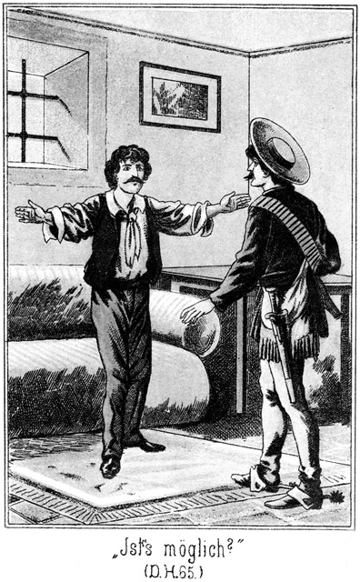»Ihr? Seine Gäste?« stieß Walker hervor.
»Ja.«
»Unmöglich!«
»Das klingt ja gerade, als ob Sennor Roulin kein Freund der Gastlichkeit sei. Beleidigt ihn nicht!«
»Weiß er, daß Ihr hier seid?«
»Noch nicht.«
»Ach!«
»Er wird es aber sogleich erfahren. Es ist soeben ein sehr ehrenwerther Master bei ihm, der ihn darüber verständigen wird. Hoffentlich kennt Ihr mich?«
»Habe nicht die Ehre!«
»O, ich bin der dicke Sam Barth!«
»Kenne Euch nicht.«
»Aber Ihr kennt hier meine beiden Kameraden?«
Da trat Tim zu ihm heran und fragte:
»Erinnert Ihr Euch nicht des Tages, an welchem Ihr bei der Plantage von Monsieur Leflor Fische fingt?«
»Nein. Habe niemals dort Fische gefangen.«
»Möglich; aber geangelt habt Ihr. Ihr hattet damals ein sehr schwarzes Gesicht. Nicht?«
»Bin niemals schwarz gewesen.«
»Damals aber habt Ihr Euch doch wohl ein Wenig für einen Neger ausgegeben.«
»Ist mir nicht eingefallen!«
»Ich ließ mich täuschen und Ihr entkamt.«
»Donnerwetter! Ich glaube gar, Ihr haltet mich für einen ganz andern Mann, als ich bin!«
»Nun, wer seid Ihr denn?«
»Ich heiße Palmora und bin ein spanischer Kreole aus Los Angelos.«
»Hm! Und wer ist dieser Sennor hier?«
»Mein Vetter. Er heißt ebenso.«
»Wunderbar! Ich hielt Euch für einen gewissen Walker, der sich zuweilen auch Robin nennt.«
»Da irrt Ihr Euch gewaltig.«
»Und Euren Vetter hielt ich für einen gewissen Leflor aus der Gegend der Arkansansufer.«
»Auch da täuscht Ihr Euch.«
»Sollte man meinen, daß es solche frappante Aehnlichkeiten geben könne! Noch dazu gleich zwei Beispiele neben einander! Erlaubt Ihr, uns mit zu Euch zu setzen, Mesch'schurs?«
»Setzt Euch! Wir werden Euch aber leider nicht Gesellschaft leisten können. Wir müssen zu Sennor Walker gehen.«
»Das thut uns leid; aber wir wollen Euch auch nicht halten. Hoffentlich sehen wir uns wieder!«
Die Beiden schritten nach der Thür zu, zunächst um ihre Gewehre mit guter Manier an sich zu bringen. Fast hatten sie die Ecke erreicht, da traten – Steinbach und der Apache ein.
Leflor und Walker fuhren zurück.
»Ah, seid Ihr hier, Sennors!« lächelte Steinbach. »Nicht wahr, uns habt Ihr so bald nicht vermuthet? Ihr glaubtet uns hinter Euch.«
»Nein, wir sind hinten und vorne von ihnen,« sagte Sam. »Nämlich so!«
Er legte Walker die Hände um den Hals und riß ihn nieder. In demselben Augenblicke wurde auch Leflor von Tim und Jim gepackt. Steinbach sprang zu und der Apache ebenso. Binnen einer Minute wurden die Beiden so fest gebunden, daß sie kein Glied zu rühren vermochten. Man schaffte sie hinab zu Roulin, nachdem man sie auch noch geknebelt hatte.
Jetzt ging Steinbach hinab unter die Thür und winkte demjenigen der Papago's, dessen Federschmuck ihn vor den Andern auszeichnete. Er hatte Steinbach noch nie gesehen, kannte ihn also nicht, hielt ihn aber ganz natürlich für einen Freund Roulins. Er legte also Speer, Schild und Büchse ab und kam herbei.
»Mein rother Bruder soll heraufkommen,« sagte Steinbach.
Der Indianer glaubte, er solle mit Roulin sprechen, und folgte ihm ahnungslos. Oben ließ Steinbach ihn zuerst eintreten und zog hinter sich die Thür zu.
»Uff!«
Diesen einen Laut stieß der Indianer aus, dann war er still, denn vor ihm standen zwanzig bewaffnete Apachen nebst den weißen Männern. Zurück konnte der Papago nicht, weil Steinbach hinter ihm stand und Jim und Tim ihn sofort in die Mitte genommen hatten, und ebenso wie die Flucht war auch der Widerstand unmöglich gegen eine solche Ueberzahl. Darum verhielt er sich vollständig passiv, um den günstigen Augenblick zum Handeln zu erspähen.
»Mein Bruder fürchtet sich nicht,« sagte Steinbach. »Hier steht der Häuptling der Apachen, Lata-nalga, die ›starke Hand‹; hier ist Entschar-til, der ›große Bauch‹, und ich bin Tan-ni-kay, der Häuptling der Bleichgesichter.«
»Uff, uff!« entfuhr es dem Papago.
»Ich lebe mit Euch in Frieden. Ihr habt mir kein Leid gethan und ich Euch nicht. Jetzt aber habt Ihr Euch mit weißen Männern verbunden, welche Diebe und Räuber sind. Ich will Dir mittheilen, was sie gethan haben.«
Er erzählte ihm in Kürze, was vorzubringen war, und fuhr dann fort:
»Es thut mir leid, daß ihr die Freunde dieser Verbrecher geworden seid. Wir sind gekommen, sie zu bestrafen. Wollt Ihr uns hinderlich sein?«
Der Indianer blickte ganz erstaunt in das milde Gesicht Steinbachs. So freundlich hatte er sich diesen berühmten Krieger, Jäger und Pfadfinder doch nicht vorgestellt. Er fühlte sich zu ihm hingezogen und antwortete:
»Was der Fürst der Bleichgesichter sagt, ist die Wahrheit. Er spricht niemals eine Lüge. Die Männer, von denen Du redest, sind bös. Sie verdienen Strafe. Aber ich bin kein Häuptling; ich kann nicht anders; ich muß sie beschützen. Nur der Häuptling kann einen andern Befehl ertheilen.«
»So warte, bis er kommt!«
»Ich darf nicht.«
»So wirst Du untergehen. Wir sind viermal hundert, und Ihr seid nur dreimal zehn.«
»Kannst Du mir das beweisen?«
»Ja. Komm!«
Er führte ihn nach der Treppe und von da aus auf das platte Dach. Von hier aus konnte man die Apachen und Maricopa's erblicken.
»Uff!« rief der Indianer.
»Hundert sind hier im Hause versteckt.«
»Zeige sie uns!«
»Sie würden mit den Deinen kämpfen!«
»Sage es ihnen, und ich sage es den meinigen, daß einstweilen Friede zwischen ihnen sein soll!«
»Gut, so soll es sein!«
Sie stiegen hinab. Bald standen sich die Apachen und Papago's im Hofe gegenüber. Diese Letzteren erstaunten nicht wenig, hier einen so übermächtigen Feind vorzufinden. Ihre Verwunderung, ja Bestürzung aber wuchs auf das Höchste, als sie erfuhren, daß sie es hier mit dem Fürsten der Bleichgesichter und dem ›dicken Bauch‹ zu thun hatten. Die ›starke Hand‹ kannten sie längst.
»Jetzt will ich Dir meine Vorschläge machen,« sagte Steinbach zu dem Papago. »Du sollst wählen zwischen Krieg und Frieden, zwischen Leben und Tod.«
»Sage mir vorher, wo die drei Bleichgesichter sich befinden, mit denen wir gekommen sind!«
»Ich habe sie gefangen genommen.«
»Wirst Du sie wieder frei lassen?«
»Nein.«
»Was für ein Schicksal werden sie haben?«
»Sie werden sterben. Und Ihr werdet das gleiche Schicksal haben, wenn Ihr Euch uns nicht ergebt.«
»Du vergissest, daß wir noch nicht Deine Gefangenen sind und uns also noch nicht in Deiner Gewalt befinden. Tödten kannst Du uns nicht so leicht. Wir würden uns wehren. Wir haben Waffen.«
»Wir auch. Zähle, wie viel wir sind! Sobald einer Deiner Krieger die Waffe erhebt, schießen wir unsere Büchsen ab, und Ihr Alle seid todt.«
Die Apachen erhoben, um diesen Worten Nachdruck zu geben, ihre Gewehre und richteten sie auf die Papago's.
»Du magst richtig gesprochen haben,« sagte deren Anführer; »aber Du darfst nicht vergessen, daß wir den Tod nicht fürchten.«
»Das weiß ich, denn Ihr seid tapfere Männer. Aber ist es nicht besser zu leben als zu sterben, selbst wenn man das Letztere nicht fürchtet? Habt Ihr nicht Brüder und Schwestern, Frauen und Kinder in Euren Wigwams? Sie warten auf Euch. Sie wollen Fleisch essen, welches Ihr ihnen schießen sollt. Müßt Ihr nicht für sie leben? Wenn Ihr Euch nicht ergebt, sondern unter unsern Kugeln sterbt, so wird unter ihnen ein großes Wehklagen sich erheben, und sie werden sagen: ›Unsere Krieger hatten uns vergessen. Sie hatten kein Herz für uns. Um als tapfere Männer zu gelten, welche den Tod nicht fürchten, haben sie sich erschießen lassen, und wir sind Sclaven der Apachen und Maricopa's geworden, von denen wir unser Fleisch wie eine Gnadengabe nehmen müssen.‹«
Das Letztere wirkte. Das Wort Sclave ist das allerschrecklichste Wort, welches der Indianer kennt. Ein leises Gemurmel ging durch die Reihen der Papago's. Ihr Anführer sagte:
»Werden wir denn nicht die Sclaven der Sieger, wenn wir uns Euch ergeben?«
»Was werdet Ihr denn mit uns thun?«
»Das kann ich jetzt noch nicht sagen. Ich werde mit meinen Gefährten sprechen und auch mit Eurem Häuptlinge verhandeln. Was da bestimmt wird, das soll geschehen. Für jetzt verlange ich nur, daß Ihr Eure Waffen niederlegt.«
»Ihr werdet sie nehmen?«
»Ja.«
»Was ist ein Krieger ohne Waffe! Selbst wenn Ihr uns frei gebt, sind wir ohne Waffen später ein Spott unserer Feinde und fallen mit allen den Unserigen dem Hungertode anheim.«
»Ich will diese Waffen einstweilen nur aufbewahren. Es soll dann besprechen werden, was geschehen soll. Du kennst doch meinen Namen. Hast Du denn noch nichts von mir gehört?«
»Sehr oft und viel.«
»So sage mir, ob ich gegen die rothen Männer bereits einmal unbillig gewesen bin!«
»Noch nie. Du bist ihr Freund.«
»So werde ich auch heute in der Versammlung für Euch sprechen, und ich weiß, daß man da auf meine Worte hören wird.«
»Wenn wir die Waffen abgeben, so wirst Du uns binden und einschließen?«
»Nein. Ihr sollt hier in diesem Hofe bleiben und Essen und Trinken bekommen, gerade wie wir. Nur versprechen sollt Ihr mir, daß Ihr nichts Feindseliges unternehmen werdet, bevor ich mit Eurem Häuptlinge verhandelt habe.«
Der Anführer wendete sich leise an seine Leute. Nach einer kurzen Verhandlung mit ihnen trat er vor und sagte:
»Ich gehe Deine Bedingungen ein, weil Du der Fürst der Bleichgesichter bist, welchem wir Vertrauen schenken. Du wirst uns nicht betrügen.«
Er zog den Tomahawk aus dem Gürtel, legte ihn hin und fügte dazu auch alle andern Waffen, welche er bei sich trug. Seine Leute thaten dasselbe. Einer nach dem Andern trat vor und legte die Waffen ab, welche Steinbach nun durch einige Apachen in eines der Gemächer bringen ließ. Dann kauerten sich die Papago's längs der Mauer auf den Boden hin, um das Commando zu erwarten.
»Nun aber sind uns die Pferde im Wege,« sagte Günther von Langendorff. »In den Hof können wir sie nicht nehmen, draußen aber stehen lassen dürfen wir sie auch nicht; sie würden uns den heranziehenden Papago's verrathen.«
»Warum? Gerade wenn wir sie stehen lassen, wird der Häuptling der Feinde beruhigt herbeikommen, weil er denken muß, seine Leute befinden sich ganz wohl im Innern des Hauses.«
»Hm, ja! Aber man muß sie füttern und auch tränken!«
»Wasser giebt es hier in der Cysterne. Es ist schlecht, für die Pferde aber genügt es. Und Futter – ja, da werden sie freilich hungern müssen.«
»Wer soll hungern?« fragte Sam, welcher soeben hinzugetreten war.
»Die Pferde, vielleicht auch wir.«
»Warum?«
»Weil nichts da ist.«
»Wer sagt denn das?«
Seine kleinen Augen blinzelten bei dieser Frage Steinbach lustig und listig an.
»Ich sage es.«
»So sagt Ihr eine große Unwahrheit. Es sind ganz im Gegentheile große Vorräthe hier vorhanden.«
»Woher wißt Ihr das?«
»Ja, woher ich es weiß! Der dicke Sam ist gar kein so übler Kerl. Wenn Andere an nichts denken, muß er sein Gehirn anstrengen. Seht Euch doch einmal dieses liebliche Todesthal an! Kein Baum, kein Strauch, kein Halm. Dennoch leben Menschen und Thiere hier. Man muß also einen Vorrath von Proviant besitzen.«
»Der ist ja da; aber für so Viele reicht er nicht.«
»Meint Ihr? Hm! Seht Euch dieses Häuschen an! Sieht es nicht wie eine kleine Festung aus? Kann es nicht ganz gut eine Belagerung abhalten? Und zu einer Belagerung brauchen die Belagerten Vorräthe, nicht für zwei, drei Mäuler und nur einen Tag, sondern für viele Esser und Fresser und für viele Tage.«
»Dieses Argument ist nicht unrecht, kann uns aber wohl nicht viel helfen.«
»Warum nicht?«
»Es sind eben keine Vorräthe da. Ich habe das ganze Haus durchsucht.«
»Das ist zwar sehr schön von Euch, Sir, aber gefunden habt Ihr nichts. Ich habe gar nicht gesucht, aber doch gefunden.«
»Wo?«
»Auf dem Rücken des Besitzers dieses gebenedeiten Hauses. Ihr sagtet, daß mein Argument nicht übel sei. Nun, während Ihr hier mit den Papago's unterhandeltet, bin ich mit diesem Argumente zu Roulin gegangen. Er aber wollte nichts davon wissen. Da habe ich ihm die Jacke geöffnet und ihm das Argument in Gestalt meines Lasso um das Fell geschlagen, bis er gestand. Es ist ein Keller hier.«
»Wo?«
»In der Küche. Man hebt eine der Steinplatten auf; da ist der Eingang.«
»Warst Du dort?«
»Ja.«
»Und unten?«
»Nein. Ich habe nur versucht, die Platte zu heben. Es ging, und so lief ich gleich her zu Euch.«
»Das ist prächtig!«
»Roulin findet es nicht so prächtig. Sein Rücken hat das Aussehen einer Landkarte, auf welcher die Länder braun und die Meere blau gefärbt sind. Hätte er nicht gestanden, so wäre ganz sicher auch noch etwas Rothes dazu gekommen. Ich will Euch den Keller zeigen.«
So stolz wie ein Sieger von zehn Schlachten schritt der kleine Dicke voran. Steinbach und Langendorff folgten ihm. Als sie in die Küche traten, sahen sie, daß ein sehr umfangreicher Stein aus dem Fußboden gehoben war. Er war freilich sehr dünn im Verhältnisse zu seiner Länge und Breite, sonst hätte er nicht von einem einzelnen Menschen von der Stelle bewegt werden können. Eine steinerne Treppe führte hinab.
Lampen gab es in der Küche mehrere. Es wurde eine derselben angebrannt, und dann stiegen die Drei hinab. Was sie da sahen, erregte ihr Erstaunen. Der Keller war nicht klein und enthielt Fässer mit Mehl, Eiern, in Kleie gelegte Schinken, lange Reihen gefüllter Bier- und andere Flaschen. Kurz, es gab einen Vorrath an Proviant, welcher allerdings darauf schließen ließ, daß Roulin sich auf eine Belagerung vorbereitet habe.
Steinbach wunderte sich jetzt über sich selbst, daß er nicht auch auf Sams Gedanken gekommen sei. Auf allen Seiten von verschieden gesinnten Indianern umgeben, war es für Roulin an jedem Augenblicke möglich, von einem dieser Stämme feindselig behandelt und in seinem Hause eingeschlossen zu werden. Er mußte sich also auf solche Fälle vorbereitet haben.
»Nun, wie gefällt Euch das?« lachte Sam.
»Ausgezeichnet!«
»Bin ich nicht ein gescheidter Kerl?«
»Zuweilen.«
»Zuweilen nur? Hm, da ist es also sehr gut, daß ich gerade heute eine meiner gescheidten Stunden gehabt habe. Aber ich glaube, Andere sind auch nicht immer klug. Es hat ein Jeder einmal seine dumme Zeit, in welcher der Kopf Feierabend macht. Donnerwetter! Hier giebt es auch Tabak und Cigarren! Erlaubt, daß ich mir eine anbrenne.«
Es gab wirklich mehrere Fässer voller Tabak und auch Cigarren. Sie konnten hier untergebracht werden, weit der Keller außerordentlich trocken zu sein schien.
Während Sam sich eine der Letzteren ansteckte, suchte Steinbach weiter. Da der Boden nur aus festgestampfter Erde bestand, so fiel ihm ein viereckiger Stein auf, welcher sich, wie er bei dem Versuche sofort bemerkte, entfernen ließ. Ein feuchter Duft drang ihm entgegen.
»Sam, bringt die Lampe her! Ich glaube, daß es hier einen Brunnen giebt.«
»Das wäre ein Glück. Wasser ist für die Indianer besser als Bier.«
»Wohl weil Ihr es für Euch behalten wollt, nämlich das Bier?«
»Ja. Was nützt der Kuh Muskate!«
Der Dicke leuchtete mit der Lampe hinein. Richtig, ein kleiner, heller Wasserspiegel glänzte ihnen entgegen, und als sie nun kosteten, zeigte es sich, daß das Wasser einer sehr guten Qualität sei.
»Das ist das Beste von Allem, was wir hier gefunden haben,« sagte Steinbach. »Jetzt können nicht nur die Menschen, sondern auch die Pferde trinken. Das Schöpfen freilich wird uns viele Arbeit machen.«
»O nein,« sagte Langendorff. »Hier in der Ecke liegt eine kleine, eiserne Pumpe mit einigen Schläuchen. Wir brauchen also nicht zu schöpfen.«
Steinbach ging hin, um Pumpe und Schläuche zu untersuchen. Da fiel ein kleiner, dünner Schein in sein Auge. Er sah nach und erkannte, daß aus diesem Keller ein kleines, vielleicht drei Zoll im Durchmesser haltendes Loch durch die Mauer aus dem Keller in das Freie führte. Dieser Umstand war ein sehr willkommener. Man konnte den Schlauch durch dieses Loch führen, und auf diese Weise den draußen im Freien stehenden Pferden Wasser geben.
Sofort wurden Vorbereitungen getroffen. Die Apachen mußten von den Vorräthen so viel, wie augenblicklich gebraucht wurde, aus dem Keller schaffen. Annita wurde als Köchin angestellt. Die im Hintergrunde des Todesthales versteckten Krieger wurden herbeigeholt und bekamen ihre Rationen, konnten auch ihren Pferden Wasser geben.
Natürlich war das nicht in kurzer Zeit gethan, sondern es vergingen Stunden darüber. Zwar wurden die anrückenden Papago's jetzt noch nicht erwartet, dennoch sendete Steinbach Posten aus, ihm ihr Nahen sofort zu verkünden. Auf diese Weise konnte man nicht überrascht werden.
Auch die Papago's, welche die Waffen abgelegt hatten und im Hofe saßen, fühlten sich sehr wohl. Sie hatten ebenso wie die Anderen ihre vollen Portionen erhalten.
Das Haus war eigentlich zu eng für so viele Gäste. Darum machte Langendorff den Vorschlag, Roulin und Konsorten lieber in das Quecksilberwerk zu bringen und dort einzuschließen. Dadurch wurde der Raum gewonnen, in welchem sich diese Gefangenen befanden.
Steinbach ging auf diesen Vorschlag ein. Die Leiter wurde wieder in die Cysterne hinabgelassen; man führte die Uebelthäter herbei.
Juanito war jetzt wieder bei Besinnung. Er warf einen ängstlichen Blick auf Roulin, wurde aber von diesem scheinbar gar nicht beachtet.
Die Gefangenen waren natürlich alle gefesselt. Sie konnten sich gegen Das, was man mit ihnen vor hatte, nicht wehren und mußten gehorchen.
Steinbach stieg mit Langendorff voran; die Gefangenen folgten, und hinter diesen kamen die beiden langen Brüder Tim und Jim. Die vier Genannten waren natürlich bereit, ihre Waffen zu gebrauchen. Steinbach führte den Schlüssel.
Er öffnete die Thüren und schritt im Lichte zweier mitgebrachter Laternen durch alle die bereits beschriebenen unterirdischen Räume. Keiner von diesen Letzteren als nur allein der hinterste bot Raum genug für die Gefangenen, welche dort gerade ebenso an die in der Wand befestigten eisernen Ringe geschlossen wurden wie vorher die unglücklichen Opfer Roulins an dieselben gefesselt waren.
Ein Wächter erschien überflüssig zu sein. Die Verbrecher waren an den Händen geschlossen und auch überdies an die Mauer befestigt. Wozu ihnen also eine Wache geben!
Zufälliger Weise hatte Steinbach, als er die Gefangenen an die Mauer schloß, sich des Schlüssels bedient, welcher Roulin abgenommen worden war. Hätte er den andern, von dem einstigen Derwisch verwechselten aus der Tasche gezogen, so hätte er den Umtausch merken müssen.
Er kehrte, die Thüren hinter sich verschließend, mit seinen Gefährten sorglos an die Oberwelt zurück. Für ihn konnte es ja für die Gefangenen keine Möglichkeit zur Flucht geben.
Sam machte doch eine Bemerkung:
»Haben wir nicht einen Fehler gemacht, Master Steinbach?«
»Welchen wohl?«
»Wir hätten diese Kerls einzeln unterbringen sollen. Jetzt stecken sie bei einander und können mit einander reden. Da ist es sehr leicht möglich, daß sie auf einen Plan gerathen, welcher uns Schaden bringt.«
»Keine Sorge, Sam! Heraus können sie nicht.«
»Das sollte man freilich denken. Aber wenn der Teufel sein Spiel hat, so schlüpft ein Elephant durch ein Astloch.«
»Hier giebt es keine Astlöcher.«
»Ja, und Elephanten auch nicht. Das ist wahr.«
»Uebrigens habe ich eine Absicht verfolgt, als ich sie in einem Raume zusammen unterbrachte. Sie werden sich entsetzlich zanken. Das ist eine Strafschärfung, welche jedem Einzelnen sehr zu gönnen ist.«
»Das ist richtig. Wie mögen sie über diesen Juanito schimpfen, welchem sie alle Schuld geben werden. Hätte er sich nicht von uns übertölpeln lassen, so wäre es uns wohl schwer gefallen, unsern Zweck zu erreichen.«
»Wir hätten ihn auch erreicht, wenn auch nicht so schnell wie jetzt.«
Steinbachs Vermuthung, daß die Gefangenen mit Vorwürfen über einander herfallen würden, war ganz richtig. Die Drei: Juanito, die Alte und der frühere Derwisch waren bisher von den Anderen getrennt gewesen. Jetzt befanden sie sich alle in demselben Raume. Es war selbstverständlich, daß der Grimm im Innern Roulins kochte und wohl bald zum Ausbruch kommen mußte.
Zunächst aber war er ruhig. Nur das leise Stöhnen Juanitos ließ sich hören.
»Thut es wehe?« fragte endlich Roulin mit gut nachgemachtem teilnahmsvollen Tone.
»Schrecklich!« stieß der Gefragte hervor.
»Wie ist denn das gekommen, mein lieber Juanito?«
»Verflucht sei dieser Steinbach!«
»Da theile ich ganz Deine Meinung. Verflucht noch mehr aber sei Deine Albernheit!«
»Ich war nicht albern!«
»Ist es vielleicht eine Klugheit, sich die Haut vom Kopfe ziehen zu lassen?«
»Kann ich dafür?«
»Wer sonst!«
»Der Kerl gab sich für einen mexikanischen Minenbesitzer aus und wollte Quecksilber kaufen.«
»Warum gabst Du ihm nicht von dem Vorrathe, welcher bei Deiner Mutter liegt?«
»Der war unzureichend. Er brauchte mehr, wie er mir sagte.«
»Wie er Dir weiß machte! Du konntest das Fehlende holen, ihn aber bei Deiner Mutter warten lassen! Warum nahmst Du ihn mit?«
»Der Kerl – – ah! Oh!«
Der Schmerz kam wieder mit aller Gewalt über ihn. Es war ihm, als ob sein Kopf in flüssigem Metall liege.
»Nun, warum?« wiederholte Roulin nach einer kleinen Weile.
»Weil – weil – – –«
»Sinne Dir keine Lüge aus! Sie könnte Dich doch nicht retten.«
»Ich will auch gar nicht lügen. Es ist ja nun Alles gleich. Umgebracht werden wir einmal. Der Kerl hatte eine ungeheure Summe Geldes bei sich. Und da wollte, wollte – – –«
»Und diese Summe wolltest Du haben, ohne ihm Quecksilber geben zu müssen?«
»Ja.«
»Das heißt. Du wolltest ihn umbringen?«
»So ungefähr.«
»Hallunke!«
»Pah! Wir Alle sind Hallunken, und Ihr seid der allergrößte unter uns!«
»Danke sehr! Es ist gut für Dich, daß ich gefesselt bin, sonst würde ich Dir für Dein Compliment auch noch die Haut herabziehen, welche Du auf dem Leibe hast. Steinbach hat Dich doch nicht etwa scalpirt?«
»Nein, sondern der verdammte Apache, welchen wir hatten.«
»Eine ganz höllische Geschichte! Erzähle aber doch, wie es ihnen gelungen ist, Dich zu übertölpeln und die Gefangenen zu befreien.«
»Ich kann nicht. Meine Schmerzen sind zu gräßlich. Das lange Reden ist mir unmöglich. Die Alte mag sprechen. Mein Kopf, mein Kopf!«
»Kerl dieser Schmerz ist Dir zu gönnen; ja er ist als Strafe noch viel zu klein für Dich. Dir müßte täglich die Haut wieder wachsen, damit Du alle Tage scalpirt werden könntest. Jetzt, Alte rede Du!«
Die Wirthschafterin hatte bereits auf diese Aufforderung gewartet. Sie war voller Ingrimm gegen Alle, auch gegen Juanito, welcher, weil er Steinbach mitgebracht hatte, die Schuld an dem ganzen Unglücke trug. Sie begann zu erzählen, und zwar in einer Weise, daß sie nicht vom geringsten Theile der Schuld betroffen wurde. Als sie geendet hatte, sagte Roulin:
»Du kannst nicht dafür. Wäre ich frei, ach, was würde ich thun!«
Da nahm Walker das Wort:
»Ist denn keine Möglichkeit vorhanden, uns zu befreien?«
»Könnt Ihr Eure Ketten sprengen?«
»Nein.«
»Habt Ihr einen Schlüssel?«
»Auch nicht. Welche Frage überhaupt!«
»Nun, so können wir auch nicht auf Rettung hoffen. Wir sind verloren.«
»Ich bin das überzeugt. Diese Schurken werden kein Federlesens mit uns machen.«
»Meint Ihr?« lachte Roulin grimmig.
»Sicher!«
»Das wäre sehr gut.«
»Gut? Wieso?«
»Ein schneller Tod ist unter Umständen das Beste. Ich denke nur, daß wir dieser Gunst nicht theilhaftig werden. Dieser Steinbach ist ein Kerl, welcher nichts gegen das Gesetz thut. Ich bin überzeugt, er schafft uns Alle im Triumphzuge nach San Franzisko, um uns dort auf gesetzliche Weise den Proceß machen zu lassen.«
»Verdammt! Welch ein Aufsehen! Lieber todt als dieses!«
»Er wird es sicher thun.«
»So ermorde ich mich!«
»Wie denn? Ihr seid gefesselt.«
»Es wird sich schon eine Art und Weise finden. In San Franzisko lasse ich mich nicht von den Leuten begaffen.«
»Ja, es würde freilich ein Prozeß sein, wie es noch keinen zweiten gegeben hat.«
In dieser Weise wurde das Gespräch zwischen Walker, Roulin und Leflor fortgeführt. Sie ergingen sich in Verwünschungen gegen Gott und die Menschen. Es war schrecklich anzuhören. Es wurde aller Scharfsinn aufgeboten, um einen Weg zur Flucht zu entdecken – vergebens. Es gab keine Möglichkeit.
Da begannen die Schmähungen gegen Juanito von Neuem. Dieser antwortete gar nicht. Also überhäuften die Drei nun sich gegenseitig selbst mit Vorwürfen. Jeder schob die Schuld auf den Andern, bis endlich Leflor sagte:
»Ich bin der Unschuldigste von Euch allen. Ich habe Euch die Pflanzung abgekauft; das ist Alles. An Euren anderen Thaten habe ich mich nicht betheiligt. Man wird mir nicht viel anhaben können.«
»Oho!« sagte Walker. »Aus der Pflanzung wird man Euch treiben.«
»So gehe ich. Das Leben muß man mir aber doch jedenfalls lassen.«
»Meint Ihr?« Ihr habt einen Gefangenen befreit und Euch mit an der Festnahme von Wilkins, Zimmermann und den Mädchens betheiligt. Das ist wohl genug, Euch den Hals zu brechen.«
»Ich muß es eben darauf ankommen lassen. Daß ich droben am Silbersee Bill Newton befreite, das ist – – –«
Da unterbrach ihn Walker schnell:
»Bill Newton. Gut, daß Ihr den Namen nennt. Der Kerl verhält sich so schmauchend. Er sagt gar kein Wort. Mensch, Spitzbube, wo hast Du mein Geld?«
Er hatte erwartet, daß Bill entweder leugnen oder gar nicht antworten werde. Entgegen dieser Vermuthung sagte Bill:
»Euer Geld? Hm, das ist futsch.«
»Wohin, Schurke?«
»Steinbach hat es.«
»Verdammt! Er hat es Dir wieder abgenommen?«
»Leider!«
»Alles, alles thut dieser Kerl, und Alles, Alles thut ihm gelingen. Will es der Teufel, daß ich frei werde, so wird es das Erste sein, mich so an diesem Menschen zu rächen, wie sich noch niemals ein Mensch gerächt hat.«
»Glück auf dazu!« lachte Bill.
»Kerl, lache nicht! Ich hasse diesen Steinbach fürchterlich; dennoch aber freut es mich, daß er Dir nicht nur das Geld abgenommen, sondern daß er auch Dich selbst festgenommen hat. Wie kommst Du auf den Gedanken, mich zu bestehlen?«
»Weil Ihr auf den Gedanken kamt, mich hier einzusperren wie die Anderen.«
»Unsinn!«
»Pah! Ich habe Eurer Unterhaltung gestern zugelauscht. Nun macht mir noch Vorwürfe, daß ich Euch bestohlen habe!«
»Du wolltest Magda retten!«
»Ist mir nicht eingefallen! Für ein Mal zur Frau haben wollte ich sie, weiter nichts.«
»Hallunke!«
»Ihr seid ganz dieselben Hallunken, wie ich einer bin. Gescheidter aber bin ich als Ihr.«
»Ach! Siehe doch einmal an! In wiefern bist Du denn gescheidter als wir, he?«
»Weil Ihr dümmer seid!«
»Nicht übel! Zeige uns doch Deine Klugheit!«
»Ihr werdet mir wohl erlauben müssen, sie zunächst für mich in Anwendung zu bringen.«
»Thue es! Sie wird Dir auch nicht aus dieser verdammten Patsche helfen!«
»Vielleicht doch!«
»Pah! Während Ihr Euch zankt und ganz unnütz Einer die Schuld auf den Andern wirft, habe ich über unsere Rettung nachgedacht!«
»Aber natürlich keinen Weg gefunden!«
»Ihr freilich wäret viel zu dumm, auf einen gescheidten Gedanken zu kommen.«
»Hört doch, wie dieser Kerl jetzt auf einmal die Klugheit mit Löffeln gefressen hat! Wie willst Du denn frei werden?«
»Das ist meine Sache.«
»Schön! Deine Antwort ist der vollgiltigste Beweis, daß Du keine Rettung weißt.«
»Den Anfang der Rettung habe ich.«
»Welcher ist der?«
»Uns zunächst hier los zu machen.«
»Das geht nicht.«
»Pah! Wenn ich will, bin ich in zwei Minuten von meinen Fesseln frei.«
»Das sagst Du nur, um uns zu ärgern.«
»Was hätte ich davon? Uebrigens könnte es uns nichts nützen, die Fesseln abzustreifen. Wir können doch nicht hinaus. Ja, wenn mir diese verteufelten Irrgänge und Stollen bekannt wären!«
Er hatte bisher so im Tone fester Ueberzeugung gesprochen, daß jetzt Roulin, tief aufathmend, zu ihm sagte:
»Bill, treib keinen Scherz! Wenn es wahr ist, was Du sagst, so werden wir den Streich, welchen Du uns gespielt hast, gern vergessen!«
»Schön! Und weiter?«
»Und Dich belohnen.«
»Das klingt sehr hübsch. Was werdet Ihr mir denn geben?«
»Zunächst erhältst Du doch die Freiheit.«
»Die erhalte ich auch ohne Euch. Ich brauche Geld.«
»Ich gebe Dir tausend Dollars!« sagte Leflor.
»Habt Ihr sie etwa mit?«
»Nein. Es ist mir ja Alles abgenommen worden. Aber Du gehst mit nach Wilkinsfield. Dort zahle ich sie Dir aus.«
»Ihr werdet Euch hüten, es zu thun. Ich kenne Euch. Wilkinsfield gehört Euch überhaupt gar nicht mehr.«
»Ich lege den heiligsten Schwur ab, daß ich sie Dir zahle!«
»Wollen sehen! Was bieten die Anderen?«
»Ich gebe auch tausend,« meinte Walker.
»Wann?«
»Wenn ich wieder nach Prescott zurückkehre.«
»Ihr werdet Euch dort in Eurem ganzen Leben nicht wieder sehen lassen dürfen. Und Ihr, Sennor Roulin? Was wendet Ihr daran?«
»Auch so viel.«
»Auch tausend? Habt Ihr sie?«
»Etwa droben im Hause, wo jetzt Steinbach schaltet und waltet, wie es ihm beliebt?«
»Nein. Ich habe sie hier.«
»Donnerwetter! Etwa in der Tasche?«
»Nein.«
»Wo denn?«
»In einem Verstecke.«
»Wo ist das?«
»Das ist natürlich mein Geheimniß.«
»So behaltet dieses Geheimniß in aller Teufels Namen für Euch! Ich behalte das meinige, nämlich wie wir loskommen, auch für mich!«
»Nur nicht so hitzig!«
»Schließlich brauche ich Euch gar nicht. Uebrigens wenn Ihr tausend Dollars habt, so habt Ihr wohl auch noch mehr. Könntet Ihr mir vielleicht die zwei Tausend geben, welche mir die beiden Andern versprochen haben?«
Roulin zögerte eine Weile; dann antwortete er:
»Ja, ich könnte es.«
»Gut! So ist die Flucht möglich. Nur muß ich vorher Einiges wissen.«
»Was?«
»Daß ich das Geld auch sicher erhalte und daß es uns möglich ist, von hier fort zu kommen, falls es mir gelingt, mir und Euch die Fesseln abzunehmen.«
»Was diesen letzteren Punkt betrifft, so kann ich Dich beruhigen. Bin ich nicht mehr gefesselt, so kann ich in jedem Augenblicke fort.«
»Ihr, aber ob auch wir Andern?«
»Wir alle.«
»Auf welche Weise denn? Giebt es vielleicht einen verborgenen Stollen?«
»Nein. Habt Ihr Euch dieses Gewölbe angesehen, als vorhin die Laternen brannten?«
»Ja.«
»Es führt eine Leiter empor.«
»Ich habe sie gesehen.«
»Mit ihrer Hilfe gelangt man auf die Zinne des Felsens.«
»Und wie von dort hinab?«
»Mit Hilfe des Seiles.«
»Das müßte man aber haben.«
»Ich habe es. Es befindet sich hier.«
Juanito hatte geschwiegen. Theils verhinderten ihn seine Schmerzen am Sprechen und theils wollte er die Aufmerksamkeit und somit den Zorn der Andern nicht abermals auf sich lenken. Er ärgerte sich gewaltig über die Vorwürfe, welche Roulin ihm gemacht hatte; darum fiel er diesem jetzt zornig in die Rede:
»Macht keine Lüge, Sennor! Ihr habt kein Seil.«
»Weißt Du das so genau?«
»Ja. Wenn eins hier wäre, müßte ich es eben so genau wissen wie Ihr.«
»Es ist aber hier!«
»Unsinn! Ihr wollt nur Master Bill betrügen. Er soll Euch den Weg zur Freiheit sagen; aber ein Seil von der Länge, welche nöthig ist, um von der Zinne bis hinab an den Fuß des Felsens zu kommen, ist nicht vorhanden.«
»Gut!« sagte Bill. »Ich sehe, daß man mich täuschen will, und werde also mich allein retten.«
»Laß Dich nicht irre machen!« sagte Roulin.
»Obgleich es nicht nöthig ist, daß ein Herr auf die Beleidigung seines Dieners antwortet, will ich doch aufrichtig sein, damit Du siehst, daß ich nicht die Absicht habe, Dich zu betrügen.«
»Soll mir sehr lieb sein!«
»Bei der Art und Weise, wie ich hier mein Geschäft betreiben und mir die Arbeiter förmlich zusammenrauben mußte, lag der Gedanke nahe, daß ich einmal ganz unvorhergesehen in Ungelegenheiten kommen könne. Ich mußte mich für solche Fälle vorbereiten. Auch für eine heimliche Flucht mußte ich meine Einrichtungen treffen. Ich legte mir also hier unten eine verborgene Kasse an und hielt auch ein Seil bereit, von dessen Dasein nur ich allein weiß.«
»Nun, so sagt doch endlich, wo es ist,« drängte Bill ungeduldig.
»Neben der Leiter führt eine eiserne Stange empor. Hast Du sie gesehen?«
»Ja.«
»Diese Stange ist nicht massiv, sondern sie ist eine Röhre, von welcher man oben den Knopf abschrauben kann. In ihrem Innern steckt das Seil. Es ist grade so lang wie die Röhre, welche von hier bis hinaufgeht, also reicht es auch von der Zinne bis zum Fuße des Felsens herab.«
»Ist das wahr?«
»Was könnte mir hier eine Lüge nützen?«
»Das ist richtig.«
»Oben an dem hintersten Schmelzofen befindet sich ein starker eiserner Haken, an welchem das Seil befestigt wird.«
»Aber draußen wachen die Apachen. Sie werden es sofort bemerken, wenn sich Jemand von oben an einem Seile herabläßt.«
»Sie bemerken es nicht. Grad an der betreffenden Seite geht ein ziemlich tiefer Riß von oben bis unten durch das Gestein. Er ist so breit, daß ein Mann gut Platz darin hat. Er läßt sich also in diesem Risse hinab, und kein Mensch kann ihn sehen. Bist Du nun zufrieden gestellt, Bill?«
»In Beziehung des Seiles, ja, in Beziehung des Geldes aber nicht.«
»Du erhältst es ganz gewiß.«
»Das Versprechen genügt mir nicht. Ich muß die vollständige Gewißheit haben, daß das Geld auch wirklich vorhanden ist.«
Roulin schwieg eine ganze Weile. Es wurde ihm doch nicht leicht, sein kostbares Geheimniß zu verrathen. Da aber sagte Bill, im höchsten Grade ärgerlich:
»Gut! Behaltet es für Euch. Ich mag es nun gar nicht wissen. Ich habe bereits die eine Hand frei.«
»Wie? hat man Dich so schlecht gefesselt?«
»Ja. Jetzt weiß ich, wo das Seil ist und werde also allein fliehen.«
»Donnerwetter!« rief Walker. Seid doch nicht so spröde, Roulin! Beweißt ihm, daß Ihr das Geld wirklich habt.«
»Nun wohl,« sagte der Angeredete. »Gefahr hat es ja nicht, denn er kann es sich doch nicht nehmen ohne unsere Hilfe. So will ich Dir denn sagen, daß oben, wo der Schacht zu Tage steigt grad hinter der fünften Leitersprosse von oben, ein Stein locker ist. Hat man ihn herausgezogen, so sieht man ein eisernes Thürchen, hinter welchem ein Kästchen steht, worinnen sich das Geld befindet.«
Bills Herz hüpfte vor Freude, dennoch sagte er in kaltem Tone:
»Na, warum sagt Ihr das erst jetzt! Wer soll denn das Geld stehlen!«
»Freilich! Das Schloß der Kassete ist nur mit demselben Schlüssel zu öffnen, mit welchem man die Handschellen aufmachen kann. Ich habe diese Einrichtung getroffen, weil ich diesen Schlüssel unbedingt bei mir habe, wenn ich in die Schächte steige.«
»Jetzt aber hat man ihn Euch abgenommen. Wie wollt Ihr zu dem Gelde kommen?«
»Unserer vereinten Hilfe wird es wohl gelingen, die Thüre heraus zu wuchten.«
»Hoffentlich.«
»Also bist Du nun bereit?«
»Ja. Wohin aber wenden wir uns?«
»Zunächst zu Juanitos Mutter, welche meine Verbündete ist. Bei ihr müssen wir uns mit andern Kleidern versehen, denn man wird uns jedenfalls verfolgen, natürlich auch steckbrieflich.«
»Hat sie denn für uns passende Kleider?«
»Für Einige von uns auf alle Fälle.«
»Wo wohnt sie?«
»In Visalia. Sie heißt Juana Alfarez und hat eine Venta.«
»Nicht wahr, Visalia liegt grad im Westen von hier an der Eisenbahn?«
»Ja. Jetzt aber gieb Dir Mühe, auch die andere Hand loszubringen.«
»Das wird gleich geschehen sein.«
»Aber die Fessel, welche Dich an der Mauer festhält?«
»Die drehe ich ab.«
»Das ist fast unmöglich.«
»Ich bin stark.«
Er hatte vorher den Schlüssel im Munde gehabt und ihn nur während des Sprechens aus demselben genommen. Jetzt steckte er ihn wieder hinein, und zwar so, daß er ihn fest mit den Zähnen hielt, den Bart nach außen gerichtet. Er hob die gefesselten Hände so hoch, daß er mit den Zähnen den Schlüssel in das Loch stecken konnte, und drehte. Seine Zähne waren gut. Sie hielten die Anstrengung aus; das Schloß wurde geöffnet, und seine Hände waren frei.
Er warf die Handschelle zur Erde. Nun brauchte er sich nur zu bücken, um auch das Schloß zu öffnen, welches ihn am Mauerhaken fest hielt. Daß er diese Fessel zerdrehen müsse, hatte er nur gesagt, um nicht wissen zu lassen, daß er sich im Besitze des Schlüssels befand.
Jetzt endlich war er frei; die Kette klirrte nieder. Die Anderen hörten es.
»Bist Du los?« fragte Roulin.
»Ja.«
»Gott sei Dank. Wir brauchen Licht. Brenne eins an!«
»Wie denn?«
»Du hast doch wohl die Lampe am Boden stehen sehen. Es sind dieselben, mit denen die Arbeiter sich leuchteten. Zunder, Stein, Stahl und Schwefelfaden liegen in dem Mauerloche gegenüber von mir.«
Bill fand das Genannte, und bald brannte das Flämmchen einer der primitiven Lampen.
»So ist es gut!« sagte Roulin. »Jetzt gehe dort in die Ecke. Hinter dem Fuße der Leiter liegen einige kurze Eisenstäbe, mit denen Du nun unsere Fesseln zersprengen kannst.«
Bill lachte lustig vor sich hin und sagte:
»Ihr meint, daß ich nun auch Euch frei mache?«
»Natürlich!«
»Hm! So sehr natürlich ist das doch nicht.«
»Warum?«
»Erst muß ich wissen, ob Ihr mir auch wirklich die Wahrheit gesagt habt oder nicht. Ich will das Seil sehen und auch das Geldversteck.«
»Es ist wahr. Mit dem unnützen Nachschauen verlieren wir nur die kostbare Zeit.«
»Möglich! Aber ich gehe sicher. Wartet also, bis ich wiederkomme!«
Sie gaben ihm gute Worte, und sie wurden zornig; es half ihnen nichts; er kehrte sich nicht daran, sondern stieg empor, sie im Finstern zurücklassend.
Es ging sehr hoch empor. Es dauerte lange, ehe er an die betreffende Leitersprosse gelangte. Er untersuchte den Stein hinter derselben. Richtig, er war heraus zu ziehen. Dahinter war die eiserne Thüre und dahinter das Kästchen. Er öffnete es mit Hilfe des Schlüssels, zog das Schubfach heraus und prüfte den Inhalt.
Er hätte vor Entzücken laut aufschreien mögen, denn das Kästchen enthielt fünftausend Dollars in guten Noten und verschiedene Ringe und Kostbarkeiten, welche er funkelnden Auges betrachtete, ehe er alles in seine Tasche steckte.
Nun brachte er, nachdem er wieder zugeschlossen hatte, den Stein wieder in die Oeffnung und stieg vollends empor.
Da oben endete die Eisenstange in einen ziemlich großen Knauf. Er versuchte, denselben zu drehen. Nach einiger Anstrengung gelang es ihm. Er schraubte ihn los und erblickte wirklich das obere Ende des Seiles, welches er augenblicklich aus der Röhre zog, indem er es rund aufrollte. Als er damit zu Ende war, suchte er am Schmelzofen den erwähnten Eisenhaken, welchen er auch fand. Es war wirklich Alles in Ordnung. Mit dem Lichte ging er dabei so vorsichtig um, daß der Schein desselben von unten gar nicht bemerkt werden konnte, falls es den wachenden Apachen ja einfiel, den Blick herauf nach der Spitze des Berges zu richten.
Nun stieg er wieder hinab in den Stollen, wo seine Rückkehr mit größter Ungeduld erwartet worden war.
»Endlich, endlich!« sagte Roulin. »Du bist ja wohl über zwei Stunden außen gewesen. Was hast Du gemacht?«
»Luft geschnappt,« sagte er, indem er sich behaglich auf die unterste Leitersprosse setzte.
»Hast Du das Seil gefunden?«
»Ja.«
»Und die Kasse?«
»Auch, Sennor.«
»So siehst Du, das ich die Wahrheit gesagt habe. Jetzt wollen wir an das Werk gehen.«
»Bitte, wollen noch ein Bischen warten!«
»Warum?«
»Ich habe Zeit.«
»Aber wir nicht, dummer Kerl!«
»Hm! So ein dummer Kerl ist manches Mal klüger als der größte Schlaukopf. Wie wäre es denn, wenn ich allein abreise, meine Herren?«
»Das wirst Du nicht thun.«
»Oho! Warum denn nicht?«
»Du würdest dreitausend Dollars verlieren.«
»Nein, sondern ich würde zweitausend verlieren, wenn ich Euch hier los machte. Vielleicht erhielt ich gar nicht einmal einen Dollar.«
»Ich verstehe Dich nicht!«
»Nun, Ihr habt doch fünftausend Dollars in der Kasse. Nicht?«
»Donnerwetter.«
»Gehe ich allein, so nehme ich sie mit. Nehme ich aber Euch mit, so muß ich entweder zweitausend herausgeben oder gar die ganze Summe. Euch ist ja nicht zu trauen.«
»Kerl, woher weißt Du, wie viel Geld in dem Kästchen ist?«
»Nur Geld? Ist nicht auch Geschmeide drin?«
»Alle Teufel!«
»Zum Beispiel der große Diamantring des Sennors aus Sacramento, welcher so plötzlich verschwand, nachdem er Euch besuchte!«
Roulin wurde todesbleich. Er stammelte:
»Du hast das Kästchen geöffnet?«
»Natürlich!«
»Wie?«
»Mit dem Schlüssel.«
»So hast Du ihn?«
»Ja. Hier!«
Er hielt ihn in der Hand empor.
Als sie das kleine Instrument erblickten, stießen Alle einen Ruf der Freude aus, Roulin aber einen Wuthschrei.
»Du hast mich bestohlen!« knirrschte er.
»Schließe auf! schließe auf!« drängten die Andern, mit ihren Ketten klirrend und ihm die gefalteten Hände entgegenstreckend.
Er blieb auf seiner Sprosse sitzen und machte eine Bewegung der Abwehr.
»Still!« sagte er. »Ich kann nicht zu gleicher Zeit mit Allen sprechen. Zunächst also zu Euch, Sennor Roulin. Ihr seid ein Dieb, ein Gauner und Mörder erster Größe. Alles, was Ihr besitzt, habt Ihr geraubt und gestohlen. Wenn ich mir fünftausend Dollars von Euch nehme, so ist das kein Verbrechen gegen Euch. Ich thue nur Das, was Ihr selbst erst gethan habt. Ich nehme Euch Das, was Euch nicht gehört, was Ihr geraubt habt.«
»Hallunke!«
»Nennt mich, wie Ihr wollt. Ihr könnt mich nicht beleidigen, denn Ihr nennt nur Euern eigenen Namen. Und was Euch Andere betrifft, so gehört Ihr, grad so wie ich, unter das menschliche Ungeziefer, welches ausgerottet werden muß. Ich habe viele Sünden auf meinem Gewissen; es kann mir gar nicht einfallen, auch noch die Schuld, Euch dem Arme der Gerechtigkeit entzogen zu haben, auf mich zu laden. Ihr bleibt hier!«
»Hund, Du willst allein gehen?« brüllte Walker.
»Ja, Sennor.«
»Ich zermalme Dich!«
Er riß an seinen Ketten, daß sie knirschten.
»Gebt Euch keine Mühe! Zwar hasse ich diesen Steinbach, und ich denke, daß ich mich an ihm rächen werde; aber das Vergnügen, Euch hängen zu lassen, will ich ihm doch nicht rauben. Ihr wolltet mich hier einschließen, um mich hier arbeiten und nie wieder die Sonne erblicken zu lassen. Die Vergeltung ist da. Jetzt habe ich Euch in meiner Hand. Ich könnte Euch befreien; aber Ihr sollt da bleiben, wo ich bleiben sollte.«
»Bill, das werdet Ihr nicht thun!« krächzte die Alte.
»Warum nicht? Etwa aus Liebe zu Euch? Ihr seid nicht weniger schlimm als die Andern, ja vielleicht noch schlimmer als sie.«
»Nein, nein! Ich habe Euch so sehr lieb!« jammerte sie voller Angst. »Soll ich Dich etwa heirathen, altes Scheusal? Du hast die jungen Mädchens hier in das Bergwerk geliefert und Deine Freude an ihrem Unglücke gehabt. Du hast wie eine wahre Teufelin gehandelt. Der Teufel soll Dich dafür holen! Heirathe ihn, aber mich nicht!«
Jetzt wendete Leflor das letzte Mittel an.
»Bill, bedenke, daß ich Dich droben am Silbersee aus der Gefangenschaft errettet habe!«
»Das habt Ihr nicht meinetwegen, sondern Walkern zu Liebe gethan. Ihr seid nicht besser als er. Ich mag von Euch auch nichts wissen. Ich gehe jetzt und nehme Abschied von Euch mit der Bitte, meiner in treuer Liebe zu gedenken, wenn man Euch am Galgen den Strick um den Hals legt. Es muß das ein so wonnevolles Gefühl sein, daß ich es Euch Allen von ganzem Herzen gönne. Lebt also wohl und laßt Euch die Zeit hier nicht lang werden!«
Er erhob sich und setzte den Fuß auf die Leiter.
»Satan!« brüllte Walker. »Mach uns los! Es ist Deine Pflicht!«
»Bill, lieber Bill, guter Bill!« riefen und baten die Andern.
»Immer bettelt, Ihr Hunde!« lachte er höhnisch. »Ihr hättet auf mein Betteln auch nicht gehört.«
Er stieg empor.
»Bill, mein Liebling!« kreischte die Alte.
»Bill, nimm nur mich mit!« rief Leflor. »Ich gebe Dir zehntausend Dollars!«
»Nicht für das Zehnfache.«
»Zwanzigtausend!«
»Ihr habt nicht mehr zwei Pfennige!«
Er ließ das Licht unten stehen und stieg schnell weiter. Er hörte das Toben, Fluchen, Heulen, Bitten und Kettengerassel noch einige Zeit unter sich, bis es nur noch einen verworrenen Lärm bildete, welcher nach und nach verhallte.
»Das war Rache! Ah!« murmelte er befriedigt. »Fünftausend Dollars, einundzwanzigtausend Mark ohne die Kostbarkeiten! Ich bin von allen Sorgen frei, wenn nur heut diese Flucht gelingt.«
Oben angekommen, trat er an den Rand des Felsens und blickte hinab. Das Todesthal lag in nächtlichem Dunkel unter ihm. Er konnte nichts erkennen. Im Sternenscheine bemerkte er aber wenigstens den obern Theil der Felsspalte, von welcher Roulin gesprochen hatte.
Jetzt befestigte er das eine Ende des Seiles an dem erwähnten Eisenhaken und ließ das andere Ende desselben langsam und vorsichtig hinab. Es hing ziemlich, schlaff, als es abgelaufen war, ein Beweiß, daß es lang genug sei und unten den Erdboden berührt habe.
»Nun Kraft genug zum Aushalten! Wenn auch das Fell von den Händen geht!«
Immer mit einer Hand unter die andere greifend, begann er, sich hinabzulassen. Es ging viel besser, als er gedacht hatte. Die Spalte, in welcher er sich befand, war nicht etwa glatt, sondern sie hatte Unebenheiten und kleine Vorsprünge, auf denen er hier und da den Fuß setzen konnte, um sich auszuruhen.
So kam es, daß er sich gar nicht etwa übermüdet fühlte, als er endlich den Boden erreichte. Auch seine Hände hatten nicht gelitten.
Er blieb noch eine ganze Weile in der Spalte stecken, um zu lauschen. Kein Lüftchen regte sich, kein verdächtiges Geräusch war zu hören, kein auffälliger Gegenstand zu sehen. Er schien vollständig sicher zu sein.
»Nun wohin?« fragte er sich. »Weiter hinein in das Thal? Fällt mir nicht ein! Ich gehe dahin, wo wir hergekommen sind. Dort werden zwar die Schildwachen der Apachen stehen, um auf das Kommen der Papago's zu lauschen; aber ich nehme mich in Acht. Es ist leichter, sich durch diese Wachen zu schleichen, als durch die ganze Schaar, welche sich jedenfalls im Thale befindet. Bin ich durch, so biege ich nach Westen ein, um nach Visalia zu jener Juana Alfarez zu kommen. Andere Kleider muß ich haben, wenn ich entkommen will.«
Er legte sich auf den Boden und kroch langsam vorwärts, immer an dem Felsen hin. Jetzt hatte er denselben hinter sich. Da hörte er einen halblauten Ruf:
»Uff!«
Von weiter links wurde derselbe Ruf als Antwort ausgestoßen, dann sprangen blitzschnell mehrere dunkle Gestalten an ihm vorüber, ohne ihn zu sehen, denn er hatte sich ganz eng hinter einige größere Steinbrocken geschmiegt.
So an der Erde liegend, vernahm er aus der Ferne ein Geräusch, welche nur von den Hufen vieler Pferde hervorgebracht worden sein konnte.
»Die Wächter sind fort, und die Papago's kommen,« sagte er sich. »Schnell weiter, damit ich nicht noch im letzten Augenblick gesehen werde!«
Er sprang auf und rannte, so schnell er konnte, dem Geräusch entgegen. Jetzt hatte er den Eingang des Thales erreicht, welcher aber für ihn der Ausgang war. Er sprang hinaus und bog nach rechts ein. Nur noch wenige Schritte, dann mußte er sich abermals niederlegen und verstecken, denn die Papago's waren da.
Hätte er den Ausgang des Thales nur wenige Secunden später erreicht so wäre er ihnen begegnet und natürlich von ihnen ergriffen worden.
Kaum zwanzig Schritte von ihm entfernt, ritten sie an ihm vorüber, zwischen den Felsen hinein, wo er herausgekommen war.
Als der letzte Rothe verschwunden war, erhob Bill sich von der Erde.
»Allah illa Allah!« sagte er. »Oder auf gut deutsch: Himmeldonnerwetter! Jetzt konnte es mir noch schlimm ergehen! Nun aber bin ich gerettet! Reisegeld habe ich. Lebt wohl, Ihr Schufte da drinn im Bergwerke! Leb wohl auch Du, Hund von Steinbach! Wir treffen uns wieder, und dann halte ich Abrechnung mit Dir. Meine Rache soll schrecklicher sein, als der Zorn sämmtlicher Teufel in der Hölle!«
Er wendete sich nach Westen und verschwand in dem nächtlichen Dunkel – ein Teufel in Menschengestalt.
Die Papago's, welche an ihm vorübergeritten waren, ohne zu ahnen, daß der ihnen gestern entflohene Dieb ihnen jetzt so nahe sei, ritten um die Ecke des Felsenberges hinum und hielten vor dem Hause. Da sahen sie die Pferde der Ihrigen stehen. Es schien also Alles in Ordnung zu sein.
Der Häuptling stieg vom Pferde, trat an die Thür und klopfte. Nach einiger Zeit wurde geöffnet. Annita trat heraus, welche von Steinbach ihre Instruction empfangen hatte. Der Häuptling warf einen forschenden Blick auf sie und sagte:
»Warum öffnet eine Tochter der Bleichgesichter?«
»Ich bin die Pförtnerin.«
»Wo ist der Herr dieses Hauses?«
»Er sitzt beim Essen.«
»Und wo sind die Krieger der Papago's, deren Pferde vor dem Hause stehen?«
»Sie sitzen bei ihm, um an seinem Mahle Theil zu nehmen.«
Das war keine Unwahrheit. Steinbach hatte die Papago's zum Mahle geladen, um sie aus dem Hofe zu entfernen.
»Führe mich zu ihm!«
»So komm!«
Sie verschloß die Thür von Innen und schritt ihm voran, über den Hof hinüber und zur Treppe empor. Dort ließ sie ihn durch eine Thür in ein leeres Zimmer treten, in welche eine Lampe brannte. Der Häuptling blickte sich um, zog die Brauen finster zusammen und sagte:
»Was soll ich hier?«
»Hier pflegt der Herr seine Gäste zu empfangen und zu begrüßen.«
»Soll ich etwa hier warten, bis er kommt? Ich bin kein Bleichgesicht und mag von diesen Sitten nichts wissen. Ich gehe zu ihm!«
Er wendete sich um, die Stube zu verlassen, trat aber erstaunt zurück, denn unter der geöffneten Thür stand Steinbach. Er hatte geahnt, daß der Häuptling nicht warten werde, darum war er so schnell herbeigekommen. Das Mädchen huschte hinaus.
»Wo sind meine Krieger?«
Das war die erste und rasche Frage, welche der Häuptling ausstieß, als er einen ihm völlig unbekannten Mann vor sich erblickte. Er hatte die Hand an den Tomahawk gelegt. Steinbach hatte nur das Messer im Gürtel stecken.
»Sie essen bei mir.«
»Ich will zum Besitzer dieses Hauses. Wer aber bist denn Du?«
»Ich bin jetzt der Besitzer. Man nennt mich den Fürsten der Bleichgesichter. Vielleicht hast Du diesen Namen bereits einmal vernommen.«
Obgleich es bei den Indianern für eine Ehrensache gilt, niemals, besonders einem Fremden oder gar einem Feinde gegenüber, merken zu lassen, von welchen Gefühlen man bewegt wird, war die Ueberraschung des Häuptlings, als er diesen Namen hörte, so groß, daß er es vergaß, die erwähnte Zurückhaltung auszuüben.
»Uff!« rief er aus, indem er einige Schritte zurücktrat. »Du willst der weiße Krieger sein, welchen man den Fürsten der Bleichgesichter nennt?«
Er musterte Steinbach mit großen, weit geöffneten Augen. Dieser antwortete lächelnd.
»Du hast es gehört, daß ich es sagte, ich sei es.«
»Was thust Du in dem Thale des Todes, hier in diesem Hause?«
»Ich befinde mich hier, um Dich und Deine Krieger zu empfangen.«
»So hast Du gewußt, daß wir kommen?«
»Ja.«
»Wo befindet sich Derjenige, dem das Haus gehörte, den wir den ›silbernen Mann‹ nennen?«
»Er befindet sich auch hier.«
»Warum kommt er nicht, mich zu empfangen?«
»Er ist verhindert, und ich habe es an seiner Stelle gethan.«
Es lag etwas in Steinbachs Wesen, was dem Rothen zu denken gab. Sein Gesicht legte sich in Falten, und er fragte im Tone des Mißtrauens:
»Bist Du hier als unser Freund oder als unser Feind?«
»Das wird nur allein auf Dich ankommen.«
»Uff! Der Fürst der Bleichgesichter ist bekannt als Freund der rothen Männer.«
»Ja, ich liebe sie alle, die Comanchen und Apachen, die Maricopa's und Papago's.«
»Die Apachen, Comanchen und Maricopa's sind meine Feinde. Wenn Du sie liebst, so kannst Du nicht mein Freund sein.«
»Ich kann nicht, nur allein um Dir zu gefallen, der Feind Anderer werden. Ich beschütze alle braven Männer, gleich viel, ob sie weiß oder roth sind. Warum aber bist Du der Feind von Bleichgesichtern, welche Dir nichts gethan haben?«
»Wer sagt Dir, daß ich gegen Bleichgesichter feindselig handle?«
»Führst Du nicht welche als Gefangene bei Dir?«
»Woher weißt Du das?«
»Der Fürst der Bleichgesichter weiß Alles. Der ›silberne Mann‹ ist ein Schurke, ein Mörder, Dieb und Räuber. Du bist sein Verbündeter. Das kann Dir großes Unglück bringen.«
Da legte der Häuptling die Hand abermals an den Tomahawk, zog ihn halb heraus und rief:
»Jetzt hast Du gestanden, daß Du mein Feind bist!«
»Ich bin Dein Feind nur dann, wenn Du mir durch Dein Verhalten Veranlassung giebst, es zu sein. Ich verlange die Freiheit Deiner Gefangenen!«
»Sie werden meine Gefangenen bleiben, so lange es mir gefällt.«
»Oder vielmehr so lange es mir gefällt,« rief Steinbach.
»Ja, denn Du bist mein Gefangener.«
»Nein, Du der meinige!«
Bei diesen Worten holte der Häuptling zu einem blitzschnellen Schlage aus. Steinbach war darauf vorbereitet. Er hatte ihn scharf im Auge behalten, fiel ihm in den Arm, entriß ihm den Tomahawk und schleuderte den Rothen an die Wand, daß ihm alle Glieder krachten.
»Wie!« sagte er lachend. »Du wagst es, die Waffe gegen den Fürsten der Bleichgesichter zu ziehen! Willst Du von meiner Hand sterben!«
Aber der Rothe hatte sich schnell gefaßt. Er zog sein Messer, stieß einen lauten Ruf aus und drang abermals aus Steinbach ein. Dieser holte aus und versetzte ihm einen so gewaltigen Hieb auf die Achsel, daß der Indianer den Arm sinken ließ. Das Messer entfiel seiner Hand.
»Schau, ich habe Dich zweimal entwaffnet!« sagte Steinbach. »Und doch habe ich dazu nicht eine Waffe gebraucht, sondern nur meiner Hand bedurft. Wenn Du mich noch einmal angreifst, wirst Du eine Leiche sein!«
Der Papago sah die Wahrheit dieser Drohung ein. Er mußte von einer augenblicklichen Fortsetzung der Feindseligkeit absehen, gab sich aber nicht verloren, sondern sagte in drohendem Tone:
»Meine Krieger werden es blutig rächen, daß Du Dich an mir vergriffen hast!«
»Ich fürchte sie nicht!«
»Hast Du gezählt, wie viel ihrer sind?«
»Ich kenne Eure Zahl. Aber Du weißt nicht, wie viele Krieger sich bei mir befinden. Die Leute, welche Du voransandest, sind entwaffnet. Sie befinden sich in meiner Gewalt.«
»Du lügst!«
»Pah! Der Fürst der Bleichgesichter ist kein Lügner. An seiner Seite befinden sich die berühmtesten Jäger der Prairie. Du sollst sie sehen.«
Er öffnete die Thür. Günther von Langendorff trat ein, gefolgt von Sam Barth, Jim und Tim. Draußen standen die Apachen und Maricopa's, so viele ihrer Platz gefunden hatten.
»Uff!« rief der Papago erschrocken.
»Siehst Du nun ein, daß Du mein Gefangener bist?« fragte Steinbach.
Der Gefragte zögerte eine Weile mit der Antwort; dann sagte er:
»Wo befinden sich meine Krieger, welche mir vorangeritten sind?«
»Sie sind in meiner Gewalt.«
»Hast Du ihrer welche getödtet?«
»Keinen einzigen.«
»Aber Ihr habt gekämpft?«
»Nein. Sie haben sich freiwillig ergeben.«
»So sind sie feige Hunde, welche wir aus dem Stamme stoßen werden!«
»Sie waren nicht feig, sondern klug. Sie sahen ein, daß Widerstand vergeblich sein werde; da ergaben sie sich.«
*
»Sie konnten sich zurückziehen, anstatt sich zu ergeben.«
»Die Flucht war ihnen unmöglich.«
»Einem tapfern und klugen Krieger ist die Flucht niemals unmöglich!«
»So! Glaubst Du wohl, ein tapferer Mann zu sein?«
»Zweifelst Du daran?«
»Nein. Aber nun versuche doch einmal, mir zu entkommen!«
»Du hast mich herein gelockt. Ich bin von Apachen, Maricopa's und Bleichgesichtern umgeben. Wie soll ich da entkommen können!«
»Ganz dasselbe war der Fall bei Deinen Leuten. Ich lockte sie herein und umgab sie mit einer weit überlegenen Anzahl unserer Leute. Sie waren klug genug, auf einen Kampf zu verzichten. Bist Du ebenso weise, so wirst Du Dich ergeben.«
»Das thue ich nicht!«
»So wirst Du sterben!«
»Du redest ohne Ueberlegung. Weißt Du nicht, daß Du Dich in meiner Gewalt befindest und ich nicht mich in der Deinigen? Das Haus ist von meinen Kriegern umgeben.«
»Wir haben nicht sie zu fürchten, wohl aber sie uns. Sie umzingeln zwar, das Haus, aber sie selbst sind wieder von meinen Apachen und Maricopa's umzingelt. Keiner von ihnen kann entkommen.«
»Ich glaube es nicht.«
»Ich werde es Dir beweisen.«
Er gab Sam Barth einen Wink. Dieser entfernte sich und kehrte dann mit dem Anführer der gefangenen Abtheilung der Papago's zurück. Als derselbe eintrat, empfing ihn der Häuptling mit finstern, verächtlichen Blicken.
»Du bist ein Feigling!« rief er ihm entgegen.
Das ist der größte Schimpf, welcher einem Indianer angethan werden kann. Der Beleidigte beherrschte sich aber und antwortete:
»Gieb mir ein Messer, nimm Du das Deinige, und laß uns mit einander kämpfen! Dann werde ich Dir zeigen, daß ich kein Feigling bin!«
»Du hast Dich und die Dir anvertrauten Krieger gefangen gegeben!«
»Um unser Leben nicht nutzlos hinzugeben!«
»Ihr hättet lieber sterben sollen!«
»Ist es klug, in einen sichern Tod zu gehen, wenn es keinen Nutzen bringt!«
»Es ist ein Ruhm, zu sterben, aber eine Schande, zu leben, als Gefangener von Leuten, gegen die man nicht einmal gekämpft hat!«
»Deine Rede ist bitter. Ich antworte Dir dennoch ohne Zorn. Hätte es sich nur um mich selbst gehandelt, so hätte ich gekämpft bis zum Tode. Aber ich durfte das Leben Derer, welche mir anvertraut waren, nicht zwecklos dahin geben. Jetzt befindest Du Dich selbst hier. Wünschest Du, daß wir sterben sollen, so werden wir sterben. Thue, was Du willst!«
Er wendete sich ab und lehnte sich an die Mauer, die Arme über die Brust kreuzend und stolz und kalt vor sich niederbückend. Der Häuptling mochte einsehen, daß er doch vielleicht zu weit gegangen sei. Er schritt nach der entfernten Ecke des Zimmers und sagte:
»Komm, und erzähle mir!«
Der Andere folgte, unwillig und langsam zwar, aber doch. Nun standen sie in der Ecke und sprachen leise mit einander. Erst waren die Bewegungen des Anführers zornig, rasch. Nach und nach wurde er ruhiger. Er hörte den Bericht des Andern an, ohne ihn mehr zu unterbrechen, stand zuletzt sinnend eine Weile da und kam dann zu Steinbach zurück.
»Was gedenkt der Fürst der Bleichgesichter nun zu thun?« fragte er.
»Ich gedenke, mein Benehmen ganz nach dem Deinigen einzurichten. Gestehst Du ein, daß Du Dich in meiner Gewalt befindest?«
»Nein. Noch habe ich eine große Anzahl meiner Krieger draußen vor dem Hause halten.«
»Sie können Dir keinen Nutzen bringen.«
»Beweise mir es!«
»So komm!«
Er schritt ihm voran, und der Andere folgte ihm. Er führte ihn hinauf auf das Dach und zeigte von da hinab.
»Schau, hier halten die Deinigen. Nun will ich Dir auch meine Leute zeigen.«
Es war dunkel. Zwar leuchteten die Sterne vom Himmel herab, aber ihr Licht war nicht ausreichend, die im Hintergrunde haltenden Apachen und Maricopa's erkennen zu lassen. Darum zog Steinbach seinen Revolver und feuerte einen Schuß ab.
Sofort ertönte ein vielstimmiges Kriegsgeheul; Pferdegetrappel ließ sich vernehmen, und dann sah der Häuptling eine dunkle Linie von Reitern, welche sich im Halbkreise um seine Leute zog, so daß die Letzteren nun eingeschlossen waren.
Natürlich wußten die Papago's nicht, was das zu bedeuten hatte. Sie waren überzeugt gewesen, hier auf keinen Feind zu stoßen. Leicht hätten sie glauben können, mit der vorausgerittenen Abtheilung ihrer eigenen Krieger zu thun zu haben; aber die Reiter hinter ihnen waren viel zahlreicher als diese, und das Kriegsgeschrei war doch ein sicheres Zeichen, daß es Feinde seien. Ohne Anweisung ihres Häuptlings aber wollten sie nichts unternehmen. Darum begab sich einer von ihnen an das Thor und klopfte an dasselbe.
»Sie rufen Dich,« sagte Steinbach zu dem Häuptling. »Was gedenkst Du zu thun?«
»Wir werden lieber kämpfen, als uns ohne Gegenwehr gefangen geben.«
»Wer hat Dir gesagt, daß Du mein Gefangener sein sollst?«
»Bin ich es denn nicht bereits?«
»Jetzt bist Du es. Aber wenn Du auf meine Forderungen eingehst, so wirst Du Deine Waffen und Deine Freiheit wieder erlangen.«
»Und was soll mit meinen Leuten geschehen?«
»Auch sie werden frei sein.«
»Nun gut! Was forderst Du?«
»Ich verlange, daß Du mir die weißen Gefangenen giebst, welche bei Dir sind, und daß Du mit den Apachen und Maricopa's Frieden schließest.«
»Was noch?«
»Weiter nichts.«
Der Häuptling hatte sehr wohl eingesehen, daß er sich ganz in den Händen Steinbachs befinde. Selbst angenommen, daß seine vor dem Hause befindlichen Krieger zur Gegenwehr geschritten wären, so konnte von ihrer Seite kein Sieg erwartet werden. Entkommen konnten sie nicht, denn es war als sicher zu erwarten, daß die Eingänge zum Todesthale besetzt seien. Vielleicht wurde eine Anzahl der Feinde niedergemacht, aber die Papago's wurden dabei ganz bestimmt aufgerieben.
Das sagte sich der Häuptling. Er hatte das nicht erst jetzt, sondern bereits unten, als er die im Corridore befindlichen Apachen erblickte, erkannt. Aber er war schlau genug, es sich nicht merken zu lassen. Darum hatte er sich eines selbstbewußten Wesens befleißigt.
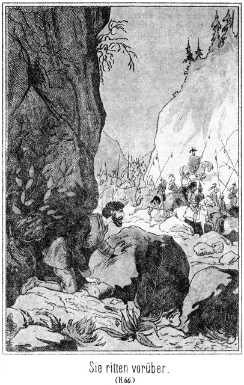Er als Indianer, der gewöhnt war, den Feind so streng wie möglich zu behandeln und aus einer jeden Lage den größtmöglichen Vortheil zu ziehen, war natürlich überzeugt gewesen, daß Steinbach sehr schlimme und harte Bedingungen machen werde. Als er nun hörte, wie wenig dieser verlangte, ja, daß dieser vielmehr Etwas verlangte, was den Papago's von größtem Vortheil war, nämlich der Friedensschluß mit den Feinden, da traute er seinen Ohren kaum. Um aber ganz sicher zu gehen und ja nicht in die Falle zu gerathen, fragte er:
»Kannst Du auf dieses Versprechen die Pfeife des Schwures rauchen?«
»Ja.«
»Werden auch die Anführer der mit Dir verbundenen rothen Krieger damit einverstanden sein?«
»Sie werden thun, was ich will.«
»So bin ich bereit, mit Dir und ihnen zu berathen.«
»Gut! Rufe Deinen Leuten zu, daß sie sich ruhig verhalten mögen, und ich will den meinigen denselben Befehl ertheilen!«
Beide gaben ihren Untergebenen die betreffende Weisung vom Dache herab und begaben sich dann wieder hinunter in das Gemach, wo die Weißen ihrer warteten. Der Häuptling ging auf den Papago zu, welchen er vorher so ausgescholten hatte, und sagte:
»Mein Bruder hat sehr klug gehandelt. Er mag die Worte nicht gehört haben, welche ich vorhin zu ihm sagte!«
»Ich habe sie gehört,« antwortete der Mann in düsterer Ruhe, »und diese weißen Krieger haben sie auch vernommen. Du hast mich einen Feigling genannt; das kann nur durch Blut oder Abbitte ungeschehen gemacht werden. Wenn Du mich nicht um Verzeihung bittest, werde ich mit Dir kämpfen, bis Einer von uns Beiden todt ist.«
Es war viel verlangt, daß ein Häuptling um Verzeihung bitten sollte. Unter andern Verhältnissen halte der Beleidiger jedenfalls den Kampf vorgezogen; bei der Schwierigkeit der gegenwärtigen Lage aber sagte er:
»Ich fürchte den Kampf nicht; aber warum soll ich Dich auch noch tödten, nachdem ich Dich vorher beleidigte, oder warum solltest Du mich tödten und die Blutrache auf Dich laden! Du wirst mir meine Worte verzeihen, denn ich weiß, daß Deine Hand stark und tapfer ist und daß Du keinen Feind fürchtest. Wirst Du nun meine Worte vergessen?«
»Ja. Ich denke nicht mehr an sie. Du hast nichts zu mir gesagt.«
»So magst Du jetzt an der Berathung theilnehmen, welche beginnen wird. Vorher aber muß ich meine Krieger sehen, welche von dem Fürsten der Bleichgesichter gefangen genommen worden sind. Ich muß mich überzeugen, wie sie behandelt worden sind.«
»Komm, folge mir. Du sollst sie sehen,« sagte Steinbach.
Er führte sie dahin, wo die Papago's saßen, mit dem Abendessen beschäftigt. Als sie ihren Häuptling eintreten sahen, erhoben sie sich Alle und richteten die Augen auf ihn, in der sicheren Erwartung, zornige Worte von ihm zu hören zu bekommen. Aber ganz im Gegentheile sagte er in freundlichem Tone:
»Meine Brüder haben klug gehandelt. Wir werden mit den Apachen und Maricopa's Frieden schließen.«
Dann zogen sich alle vorhandenen Bleichgesichter mit den anwesenden Häuptlingen in eine abgelegene Stube zurück, wo unter den vorgeschriebenen Formalitäten die Berathung vorgenommen wurde.
Die in den Gängen und anderswo befindlichen Indianer hörten die lauten Stimmen der Redner, und als schließlich ein durchdringender Tabaksgeruch durch die Räume zog, war Jedermann überzeugt, daß der Friede wirklich geschlossen worden sei.
Das bestätigte sich auch sofort, denn Steinbach trat mit den Häuptlingen und Weißen aus dem Berathungszimmer und gab den Befehl, daß die Papago's die ihnen abgenommenen Waffen wieder erhalten sollten.
Damit war die Ehre Derer, welche sich ohne Gegenwehr gefangen gegeben hatten, wieder hergestellt, und es herrschte allgemeiner Jubel unter den Leuten. Natürlich nahm diese frohe Stimmung nicht diejenigen Dimensionen an, wie es bei Weißen der Fall gewesen sein würde. Es wurde nur mit unterdrückter Stimme gesprochen, und alle Bewegungen waren ruhig und gemessen, aber die Gesichter glänzten vor Freude, und Maricopa's, Papago's und Apachen gingen durcheinander hin und her und zeigten sich so erfreut und gesellig, wie es Indianer unter solchen Verhältnissen eben sein können.
»Jetzt mag mein weißer Bruder mit mir kommen,« sagte der Häuptling der Papago's zu Steinbach. »Ich will ihm die Gefangenen ausliefern.«
Beide gingen mit einander hinaus vor das Gebäude. Dort hielten die Papago's in tiefster Ruhe. Das Erscheinen ihres Anführers erfüllte sie mit Freude. Jetzt konnten sie überzeugt sein, daß die von ihnen erwartete Feindseligkeit nicht ausbrechen werde. Sie hatten gar wohl gesehen, wie eng sie eingeschlossen waren, und sich gesagt, daß es nur durch einen heißen Kampf möglich sei, sich eine Bahn zum Rückzuge zu brechen.
»Meine Brüder mögen unbesorgt sein,« sagte der Häuptling. »Sie befanden sich in sehr großer Gefahr, denn sie waren, ohne daß sie es ahnten, von sehr übermächtigen Feinden umringt. Hier, dieser weiße Krieger aber hat uns den Frieden gegeben. Er ist der Fürst der Bleichgesichter und hat zwischen den Papago's und Maricopa's und Apachen einen Waffenstillstand abgeschlossen, welcher voller Ehren für uns ist.«
»Uff! Uff!« rief es rundum, und Diejenigen, welche fern hielten, drängten ihre Pferde herbei, um in die Nähe des berühmten Mannes zu gelangen.
Dieser aber bekümmerte sich nur so weit um sie, als es nöthig war, sie auseinander zu schieben, um zu ihren Gefangenen zu gelangen. Diese hatten die Worte des Häuptlings nicht genau verstanden, da dieselben im Dialecte der Papago's gesprochen worden waren. Als aber die hohe Gestalt Steinbachs, welche trotz des nächtlichen Dunkels gar nicht zu verkennen war, vor ihnen auftauchte, rief Wilkins voller Freude:
»Master Steinbach! Ihr hier! Gott sei Dank! Das ist ein gutes Zeichen!«
»Ja, Sir, Ihr seid frei.«
»Wirklich, wirklich?«
»Ich sage es Euch ja!«
»Es ist kann, zu glauben!« jubelte der vielgeprüfte Mann auf. »Wie habt Ihr das aber fertig gebracht?«
»Durch ein Wenig Klugheit, mein lieber Sir. Bitte, steigt vom Pferde!«
»Das geht nicht so schnell, wie Ihr denkt, denn ich bin fest angebunden.«
Aber schon traten einige Papago's herbei, um auf den Befehl ihres Anführers die Fesseln zu lösen. Steinbach wendete sich an Almy, die ›Taube des Urwaldes‹, welcher man keine Bande angelegt hatte, und half ihr vom Pferde.
»Gott, wie sollen wir Ihnen danken, Sir!« hauchte sie. »Welche Angst und Sorge haben wir ausgestanden!«
Sie war so ergriffen, daß sie sich auf seinen Arm stützen mußte.
»Aber, vor allen Dingen, wie steht es hier im Thale des Todes?« fragte Wilkins.
»Ganz leidlich, Sir. Es erwarten Euch einige Ueberraschungen, von denen ich hoffe, daß Ihr sie nicht schwer ertragen werdet.«
»Also nichts Gutes?«
»Nun, bös möcht ich es gerade nicht nennen. Bitte, kommt herein. Leider kann ich der Miß nicht den Arm geben, weil der Eingang so eng ist, daß man einzeln gehen muß.«
Er hatte dem dicken Sam Barth bereits eine Instruction ertheilt, welche von diesem ausgeführt worden war. Er führte Wilkins und dessen Tochter zunächst in ein Zimmer, in welchem sich jetzt Niemand als nur Arthur, der Neffe des Pflanzers, befand. Er schob Beide hinein und machte die Thür hinter ihnen zu.
Die Drei standen sich gegenüber, wortlos für einige Secunden. Sie blickten einander forschend an. Arthur hatte in den vergangenen Jahren ungeheuer gelitten. Sein Aussehen war in Folge dessen kein erfreuliches. Es war selbst für seine Verwandten sehr schwer, ihn zu erkennen. Wilkins hatte sehr gealtert. Sein Haar war ergraut und sein Gesicht von einem schneeweißen Bart umgeben, welcher demselben einen ganz veränderten Ausdruck gab. Darum war auch er nicht leicht zu erkennen. Und Almy hatte sich auch verändert. Zu der Zeit, als Arthur sich von ihr und dem Oheim verabschiedet hatte, war sie noch ein Backfisch gewesen, mit wenig entwickelten Zügen. Diese hatten nun eine feste Prägung erhalten, und das war es, was Arthur für kurze Zeit zweifeln ließ, wen er vor sich habe.
Er war von dem dicken Sam hierher geführt worden mit der Weisung, hier zu warten, da Jemand ihn ungestört sprechen wolle. Darum fragte er jetzt:
»Sir, Miß, seid Ihr es, welche mich hierher beordert haben?«
Wilkins wollte antworten, brachte aber vor Aufregung kein Wort hervor. Wer war dieser Mann, dessen Aussehen auf furchtbare Leiden deutete? Ein gewisses Etwas zog ihn zu demselben hin. Eine Ahnung stieg in ihm auf. Er wollte sprechen, wollte die Arme heben, sie um ihn schlingen, aber er war in diesem Augenblicke weder eines Wortes noch einer Bewegung fähig.
»Wir haben Niemand bestellt, Sir,« antwortete Almy. »Vielleicht ist ein Irrthum vorhanden.«
Da trat Arthur rasch einen Schritt weiter vor, hob den Arm, wie um das schöne Mädchen zu ergreifen und rief:
»Welch eine Stimme! Diesen Klang kenne ich! Wer – wer – –! Miß, um Gotteswillen, sagt mir schnell – – heißt Ihr Almy?«
»Ja.«
»Und das ist Euer Vater?«
»Er ist es.«
»Onkel, Onkel, mein lieber Onkel!«
Laut aufschluchzend warf er sich an die Brust des alten Mannes. Dieser erhielt jetzt die Sprache wieder.
»Arthur, Arthur! Bist Du es wirklich!« rief er aus. »Mein Gott, welch ein Wiedersehen!«
»Arthur, Arthur!« schrie Almy in ausbrechenden Thränen auf. »Du! Du! O, großer Gott! Was mußt Du gelitten haben!«
Sie schlang ihre Arme um ihn, und was nun zwischen ihnen gesprochen wurde, das waren keine eigentlichen Worte, das waren Laute, Töne und Ausrufe, welche kein Anderer verstanden hätte, die aber eine Sprache bildeten, welche den Dreien vollständig deutlich war.
Arthur, durch jahrelange Leiden bereits geschwächt, wurde durch dieses Wiedersehen außerordentlich angegriffen, so daß er sich setzen mußte. Aber hüben von seinem Oheim und drüben von Almy umarmt, sollte er erzählen. Er konnte es nicht. Er konnte jetzt nur weinen und zu den liebevollen Worten der beiden Andern still nicken. So selig ihn dieses Wiedersehen machte, er bemerkte es doch wie eine Erlösung, als jetzt Steinbach wieder eintrat. Den Dreien freundlich zunickend, sagte er:
»Nun, ich bemerke, daß Ihr einander erkannt habt, und gratulire von ganzem Herzen zum frohen Wiedersehen.«
»Sir,« sagte Wilkins, seine Hand ergreifend, »welch eine Schuld haben wir gegen Euch! Es ist ganz unmöglich, auch nur einen Theil derselben abzutragen!«
»Pah! Das Wenige, was ich für Euch thun konnte, bringt mir solche Freude, daß ich es bin, der Euch Dank schuldet, aber nicht Ihr mir.«
»Ihr seid in Wirklichkeit ein Werkzeug der Vorsehung gewesen. Ohne Euch hätte das heutige Wiedersehen niemals stattgefunden.«
»Glaubt das ja nicht. Gott wollte Euch wieder vereinigen, und da war nicht ich es, dessen Mitwirken unbedingt nothwendig war. Aber ich bitte, laßt Master Arthur ein Wenig Ruhe. Er hat es hier nicht sehr beneidenswerth gehabt und bedarf der Schonung. Ihr, Master Wilkins, sollt noch bei ihm bleiben dürfen; die Miß aber nehme ich für kurze Zeit mit mir fort. Ich habe sie um einen Rath zu fragen, den mir keine andere Person geben kann.«
Er führte sie fort, zwischen Indianern hindurch, welche beim Anblicke der Beiden ehrfurchtsvoll auseinander traten, um ihnen Platz zu machen. Vor einer Thür blieb er halten und sagte:
»Ihr werdet da drin einen alten Papago-Indianer finden, welcher die ›Taube des Urwaldes‹ gern einmal unter vier Augen sehen möchte. Ich wollte ihm seinen Wunsch nicht abschlagen, weil das eine Beleidigung gewesen wäre.«
»Ein Papago? Was will er denn von mir?« fragte sie bedenklich.
»Er mag es Euch selbst sagen. Bitte!«
Er öffnete, schob sie hinein und machte dann hinter ihr die Thür wieder zu.
Zu ihrem Befremden befand sich gar kein Indianer drin. Der Mann, vor dem sie jetzt stand, war ein Weißer, bleich, todtesbleich, mit eingefallenen Wangen, tief liegenden Augen, hageren Gliedern und wachsglänzender Haut.
Stumm stand sie ihm gegenüber, den Blick fast entsetzt auf ihn gerichtet. Es war Martin Adler, der einstige Aufseher ihres Vaters. Er war von Steinbach hierher beschieden worden, ohne zu wissen, zu welchem Zwecke. Sein Blick fiel auf das schöne Mädchen. Das Auge der Liebe ist scharf; er erkannte Almy sofort. Aber es ging ihm gerade so wie ihrem Vater, als dieser seinen Neffen wiedersah: Seine Gemüthsbewegung ließ ihn verstummen. Seine Augen leuchteten entzückt aus ihren tiefen Höhlen; seine Lippen bebten; er wollte und wollte sprechen, konnte aber nicht. Nur ein unarticulirtes Murmeln war es, was er über seine Lippen brachte.
Da plötzlich ging es wie ein Blitz über Almy's Gesicht.
»Martin – – Martin – –« schrie sie auf.
Aber selbst in diesem Augenblicke des Entzückens fiel es ihr ein, daß sie ihn früher ja nie bei seinem Vornamen genannt habe. Darum fügte sie erröthend hinzu:
»Master Adler! Sehe ich recht oder nicht? Seid Ihr es? Seid Ihr es wirklich?«
Ein Strom von Thränen stürzte aus seinen Augen. Es war, als ob sein Inneres, sein Herz, seine Seele, sein ganzes Leben sich in Thränen auflösen müsse, um in Jammer und Entzücken zu zerfließen. Er wollte antworten, wollte ein Wort sagen, nur ein einziges, ein einziges, aber es war ihm unmöglich.
Es kam wie ein Schwindel über ihn. Die Wände schienen sich um ihn zu drehen. Er wankte. Da sprang Almy auf ihn zu, ergriff seinen Arm, legte den ihrigen um seinen Leib und sagte erschreckt:
»Gott, das war zu plötzlich! Ich bin zu unvorsichtig gewesen und habe Euch erschreckt. Verzeiht, verzeiht! Kommt, setzt Euch nieder!«
Sie führte ihn zu dem primitiv zusammengenagelten Stuhl, welcher an der Wand stand und zog ihn auf denselben nieder. Dann kniete sie vor ihn hin und ergriff seine eine Hand, während er sein Gesicht in die andere verbarg.
»Verzeihung!« bat sie. »Ich hatte keine Ahnung, wen ich hier treffen würde. Man hätte mich und Euch vorbereiten sollen.«
Seine Hand leise zärtlich streichelnd, blickte sie in liebevoller Besorgniß zu ihm empor.
»Soll ich Jemand rufen?« fragte sie. »Ihr seid zu angegriffen.«
Er schüttelte den Kopf. Dann, endlich, brachte er es doch zu Worten:
»Ihr – Ihr hier! Im Todesthale! Wer hätte dieses Wunder ahnen können!«
»Ja, es ist fast ein Wunder zu nennen.«
»Welch eine Freude nach solchem Leid!«
»Gott, was müßt Ihr ausgestanden haben. Wir können es gewiß nicht ahnen!«
»Nein, kein Mensch kann es ahnen! Es war eine Hölle; nein, in der Hölle kann es nicht so fürchterlich sein!«
»Jetzt aber ist's zu Ende! Ihr seid errettet, erlöst von aller Pein –«
»Und – – durch Euch!«
Der Schlag seines Herzens trieb ihm das Blut in das erbleichte Angesicht.
»Nein, nicht durch mich. Andere sind es, denen Ihr Eure Rettung zu verdanken habt. Andern. Aber ich bin namenlos glücklich, daß es mir vergönnt ist, mit dabei sein zu können.«
»Ist es – – wirklich – – ein Glück für Euch, Miß Almy?« flüsterte er.
»Ja,« gestand sie, ihm aufrichtig in das Auge blickend.
»Wegen Arthur, nicht wahr?«
»Ja, aber noch mehr wegen eines Andern.«
»Wer ist das?«
Er erwartete unter stockendem Athem ihre Antwort. Sie wußte, daß er sie geliebt hatte und jedenfalls noch liebe. Sie war überzeugt, daß nur die Rücksicht auf seine Armuth und untergeordnete Stellung ihn abgehalten hatte und noch abhielt, seinem Herzen Berechtigung zu gestatten, und sie hielt es gradezu für ihre Pflicht, ihm nach so langer, qualvoller, dunkler Nacht den hellsten Strahl der Sonne scheinen zu lassen. Darum antwortete sie unter holdem Erröthen:
»Das seid Ihr.«
»Ich? Treibt Ihr Scherz?« stammelte er.
»Scherz an einem solchen Augenblicke? O nein. Ich fühle mich glücklich, zu sehen, daß Arthur gerettet ist. Aber noch viel glücklicher macht es mich, Euch frei zu sehen.«
»Miß Wilkins! – – – Almy!«
»Martin!«
Er schaute zu ihr nieder, zaghaft, am ganzen Körper vor Schwäche und Aufregung lebend. Sie blickte ruhig und glücklich lächelnd zu ihm auf. Es überkam sie neben ihrer Liebe ein unendliches Mitleid. Es war ihr, als ob sie all ihr Lebelang stets und unausgesetzt besorgt sein müsse, ihm die ausgestandenen Leiden vergeben zu machen.
»Verzeiht,« bat er, »daß ich Euern Vornamen nannte!«
»Nannte ich nicht auch den Eurigen!«
»Darf ich es denn, darf ich?«
»O gern, unendlich gern!«
»Mein Gott! Almy! Ists wahr, ists wahr! Das ist mehr als Glück; das ist Seligkeit!«
»Du hast sie verdient, nach so langer Qual! O Martin, mein lieber, lieber Martin, ich habe so viel, so viel wieder gut zu machen an Dir!«
»Du?« fragte er in liebevollem Erstaunen.
»Ja ich, grad ich!«
»Davon weiß ich nicht das Mindeste.«
»Du weißt es, aber Dein Edelmuth verhindert Dich, es einzugestehen. Ich allein bin schuld an Allem, was Du erduldet hast!«
»Nein und abermals nein! Du machst Dir da ganz unverdiente Vorwürfe.«
»Ganz verdiente! Du gingst von Wilkinsfield fort, um nach Arthur zu forschen. Hättest Du das gethan, wenn Du mich nicht geliebt hättest?«
Er gestand sich gar wohl ein, daß sie Recht habe, sagte aber doch:
»Ich hätte es auch gethan ohne meine Liebe zu Dir. Ich war der Beamte Deines Vaters, und es war meine Pflicht, für ihn die Reise zu unternehmen. Ich hatte freilich keine Ahnung, wie verhängnißvoll sie für mich enden werde!«
Da blickte sie ihm mit strahlenden Augen ins Angesicht und fragte in scherzendem Tone und doch dabei ein hervorbrechen wollendes Schluchzen unterdrückend:
»Verhängnißvoll? Wirklich?«
»Nun ja!« antwortete er, da er sie nicht sogleich verstand.
»Hat sie wirklich so verhängnißvoll für Dich geendet?«
»Nennst Du es vielleicht nicht so?«
»Nein. Denn das Ende Deiner Reise ist doch erst heut eingetreten. Morgen erst beginnt die Rückkehr. Und ist das heutige Ende denn ein verhängnißvolles?«
»Nein, nein, sondern vielmehr ein unendlich beseligendes, wenn Du es so meinst. Almy, meine Almy, wie habe ich Dich geliebt, und wie liebe ich Dich noch jetzt, noch heut!«
»Und ich Dich ebenso!«
»Mich, den kranken, todesähnlichen Mann!«
»Grad umsomehr!«
Sie, die noch immer vor ihm Knieende hob die Arme zu ihm empor, schlang sie um seinen Nacken, zog seinen Kopf zu sich herab und küßte ihn innig, innig auf die bleichen, farblosen Lippen.
»Wer – – was – –? Almy, Almy!« rief da eine erstaunte Stimme von der Thür her.
Die Beiden fuhren auseinander. Am Eingange stand Wilkins mit seinem Neffen. Der Erstere war ganz betroffen, seine Tochter in einer so zärtlichen Umarmung zu überraschen.
»Vater, Vater,« rief sie, auf ihn zueilend und die Arme um ihn schlingend. »Siehe ihn Dir an! Kennst Du ihn? Erkennst Du ihn nicht wieder?«
Wilkins warf einen scharf forschenden Blick auf seinen einstigen Untergebenen, welcher vom Stuhle aufgestanden war und sich ihm langsam näherte.
»Ob ich ihn erkenne?« antwortete er. »Mit den Augen nicht, aber mit der Ahnung. Adler, Master Adler! Seid Ihr es?«
»Ja, ja, er ist es, lieber Vater!« antwortete Almy an Stelle des Gefragten.
»Dann kommt an mein Herz! Daß auch Ihr wiedergefunden und gerettet seid, das vollendet mein Glück. Ohne Euch hätte ich nie wieder meine Ruhe gefunden. Jetzt endlich können die Vorwürfe schweigen, welche mich so manche schlaflose Nacht hindurch gemartert haben.«
Sie umarmten sich. Almy fragte, halb neckisch und halb schüchtern:
»Du umarmest ihn! Mir war es aber wohl verboten?«
»Dir? Nein, Kind. Wie kann ich Dir und ihm verbieten, glücklich zu sein!«
»Aber, Sir,« fiel Adler ein, »ich bin jetzt ein kranker und blutarmer Mensch!«
»Pah! Desto reicher bin ich. Ich hoffe, daß das Gericht mich wieder in den mir geraubten Besitz einsetzen werde, und ist dies nicht der Fall, nun, so kann ich es leicht verschmerzen, zumal Wilkinsfield eigentlich unserm Arthur gehört. Ich habe droben am Silbersee, wo die Apachen mich in das Geheimniß eines reichen Silberlagers einweihten, so viel Metall gesammelt, daß ich zu den reichen Leuten gehören werde und mir den Luxus eines armen Schwiegersohnes sehr gut gönnen kann. Also, wie es scheint, habt Ihr Euch lieb, Kinder?«
»Von ganzem Herzen, schon längst, schon damals!« antwortete Almy.
»So ist mein Glück umso größer. Eure Liebe wird Euch entschädigen für das vergangene Leid, und ich kann also mit größerer Ruhe an das denken, was Ihr in meinem Interesse erdulden mußtet. Gott segne Euch, Ihr lieben Kinder! Er lasse Eure Zukunft so freudenvoll sein, wie Eure Vergangenheit leidvoll gewesen ist!«
»Und,« bemerkte Arthur, »da Freund Adler sich für so hilflos und arm ausgiebt, lieber Onkel, so will ich Dir, wenn auch einstweilen ohne seine Erlaubniß, verrathen, daß es gar nicht so schlimm ist, wie er es gemacht hat. Er ist der Sohn einer sehr vornehmen Familie drüben im alten Lande und – – –«
»Pst! Schweig doch!« bat Adler.
»Nein, ich werde nicht schweigen! Denke Dir, Onkel, dieser Mensch, der sich bei Dir als Aufseher anstellen ließ, ist eigentlich ein Baron oder gar ein Graf. Und – was eigentlich kaum zu glauben ist – seine Mutter und Schwester befinden sich auch mit hier. Kommt, kommt, ich werde Euch zu ihnen führen, sonst ist es fast zu schwer, so eine Thatsache zu glauben!«
Er schob die Drei zur Thür hinaus, um sie zu den beiden genannten Personen zu führen.
Steinbach war, nachdem er diese zwei Erkennungsscenen eingeleitet hatte, wieder hinaus vor das Thor gegangen, um dort die nöthigen Anordnungen zu treffen. Es wurde von dem Brennmateriale, mit welchem Roulin sich vorsorglicher Weise versehen gehabt hatte, so viel herbei geschafft, daß mehrere Feuer vor dem Hause angebrannt werden konnten. Um dieselben versammelten sich die Indianer. Die Mundvorräthe wurden aus dem von Sam Barth entdeckten Keller herbei geschafft und vertheilt. Die Rothen, bisher zu drei einander sehr feindlich gesinnten Stämmen gehörend, hatten alle Feindseligkeit vergessen. Sie saßen in den buntesten Gruppen beisammen, Maricopa's, Papago's und Apachen bei einander, ließen sich die Vorräthe, besonders den Tabak, ausgezeichnet bekommen und erzählten von den Ereignissen und Erlebnissen der letzten Tage.
Durch diese Erzählung wand sich wie ein unzerreißbarer Faden der Ehrfurcht, mit welcher sie von dem Fürsten der Bleichgesichter sprachen. Es gab für sie kein Ende, und noch niemals hatte das Thal des Todes eine solche Versammlung wohlgelaunter und friedfertig gesinnter Indianer gesehen.
Ganz dieselbe und eine noch viel glückseligere Stimmung herrschte unter den Weißen. Die Erretteten und die Retter derselben saßen froh beisammen und wurden nicht müd, zu fragen und zu antworten, zu erzählen und zu berichten. Und dabei bemerkte dennoch ein Jeder, daß er sehr wenig gesagt und noch sehr viel zu erzählen habe.
So verging Stunde um Stunde, und Niemand dachte an den Schlaf, obgleich Alle ohne Ausnahme der Ruhe gar wohl bedurften.
Im Verlaufe des Gespräches wurde ausgemacht, die gefangenen Verbrecher, sowie diese es auch vermuthet hatten, nach San Franzisko zu bringen, um sie dem Arme der Gerechtigkeit zu übergeben. Sam Barth, Jim und Tim waren freilich dagegen. Diese Drei bestanden darauf, gleich auf der Stelle Lynchjustiz zu üben; aber besonders Steinbach war auf das Strengste gegen die Ausführung dieses Vorschlages.
»Aber, Master,« sagte Sam, »Ihr lauft Gefahr, daß Euch unterwegs der Eine oder der Andere entkommt!«
»Wir werden schon sorgen, daß ihnen die Flucht zur Unmöglichkeit wird.«
»Hm! Der Teufel hat gar oft sein Spiel, und dieser fatale Satanas pflegt Die, die es mit ihm halten, sehr gern aus der Patsche zu bringen. Aber ich habe Euch ja nichts zu befehlen. Macht also, was Ihr wollt. Ich gehe mit nach Franzisko, nur um die Kerls unter meine ganz spezielle Aufsicht zu nehmen. Nachher, wenn sie abgeliefert worden sind, reite ich nach dem Silbersee zurück. Ihr wißt ja, wen ich da oben zurückgelassen habe. Hoffentlich mache ich den Weg nicht allein.«
»Nein, ich und Tim reiten natürlich mit,« erklärte Jim.
»Und ich auch,« sagte Wilkins. »Ich habe dort noch Einiges zu schaffen, bevor ich nach dem Osten zurückkehre. Uebrigens denke ich, daß wir Veranlassung haben werden, von San Franzisko aus noch einmal hierher nach dem Todesthale zu gehen. Die Behörde wird sich natürlich diesen hübschen Ort genau ansehen wollen, und da müssen wir als Zeugen jedenfalls zugegen sein. Dann aber soll keine Macht der Welt mich abhalten, eine Gegend zu verlassen, in welcher solche ruchlose Thaten geschehen und von Unschuldigen so viel erduldet wurde.«
Steinbach gab ihm Recht. Er ging, was er nun wiederholt gethan halte, hinaus vor das Haus, um nach dem Thun und Treiben der Indianer zu sehen. Sie saßen noch immer munter beisammen, hatten aber die Feuer ausgelöscht, weil der Tag zu grauen begann. Man konnte schon ziemlich gut sehen.
Steinbach ging zwischen den einzelnen Gruppen hindurch und schlenderte dann langsam noch ein Stück weiter. Er freute sich des Glückes, welches, wie er sich ohne Stolz sagte, heut so viele durch ihn gefunden hatten, und dachte an das Glück, welchem er nachjagte, ohne es bisher gefunden zu haben.
Würde es ihm gelingen, es noch zu ergreifen? Wo befand sich Gökala, die herrliche Blume im Sultansgarten zu Constantinopel? Sollte er an sie nur als an etwas Vergangenes, Unerreichbares denken? Warum sollte er nicht glücklich sein können, er, der so viele Andere glücklich gemacht habe.
»Und ich finde sie, ich muß und muß und werde sie finden!« murmelte er für sich hin.
Er war, so in diese Gedanken versunken, um die Felsenecke gebogen und hatte fast die halbe Entfernung bis zum Eingange des Todesthales zurückgelegt. Jetzt wollte er wieder umkehren. Da fiel sein Blick auf einen dunklen Strich, welcher fast senkrecht sich von der Höhe des Felsens herab zur Thalsohle zog. Neugierig ging er noch die wenigen Schritte weiter, um zu sehen, was das sei.
Es war eine Spalte, welche von oben bis herab durch das Gestein lief. Und in dieser Spalte hing – ein Seil. Das war nicht nur auffällig, sondern sogar höchst verdächtig. Das Seil hing ganz gewiß nicht für immer hier. Es konnte nur zu einem gewissen Zweck herabgelassen worden sein. Welches aber war dieser Zweck?
Steinbach bückte sich zu Boden nieder und untersuchte die Stelle, an welcher Seil und Spalte die Erde berührten. Dort lag dünner, von den Winden hineingewehter Sand, und in diesem Sande gab es ganz deutliche Spuren eines Fußes. Als Steinbach dieselben schärfer in Augenschein nahm, erkannte er, daß sie nur wenige Stunden alt sein konnten. Hier war Jemand während der Nacht gewesen, vielleicht gar von oben herabgeklettert.
Schnell eilte er zurück und gab mehreren Indianern, welche er zuerst traf, Auftrag, sich sogleich nach der Stelle zu begeben und darüber zu wachen, daß nicht etwa Jemand dort von oben herab kommen könne. Dann begab er sich in das Innere des Hauses, rief Sam, Jim, Tim und Wilkins herbei und begab sich mit ihnen durch die Cysterne in das Innere des Bergwerkes.
Natürlich hatten sie Lampen mit sich genommen. Als sie den Hinteren Raum erreichten, hörten sie, noch ehe sie dort eintraten, die Gefangenen sich in lauten, zornigen Ausrufungen ergehen. Als ihr Nahen von diesen Letzteren bemerkt wurde, schrie Roulin mit vor Anstrengung und Wuth heiserer Stimme:
»Endlich, endlich! Konntet Ihr nicht eher kommen, Ihr Dummköpfe, die Ihr seid!«
Das war in seiner Lage eine sehr eigenthümliche Anrede. Jim gab sofort die geeignete Antwort:
»Kerl, laß diese Grobheiten sein, sonst nehme ich Dich her und haue Dir das Leder ein Wenig von dem Leibe!«
»Habt Ihr ihn denn erwischt?«
»Wen?«
»Donner und Teufel! Er ist also wirklich entkommen! Sie wissen nichts davon!«
»Wer denn?«
Jim stand nämlich noch am Eingange und vermochte also nicht zu sehen, daß einer der Gefangenen fehlte. Steinbach aber war bereits weiter vor gegangen und bemerkte die leeren Ketten.
»Kerls!« rief er aus. »Bill Newton ist fort! Wie ist das möglich?«
Da lachte Walker höhnisch auf.
»Gebt uns einen Schlüssel, der hier in die Schlösser paßt, und wir gehen auch fort!« sagte er.
»Einen Schlüssel hätte er gehabt? Das ist eine Lüge!«
»Pah! Glaubt es, oder glaubt es nicht! Mir kanns sehr gleichgiltig sein.«
Es sind nur zwei Schlüssels da. Und die – – –«
Er griff in die Tasche und zog – wie er sofort erkannte, einen falschen Schlüssel hervor. Er wußte, daß er den richtigen gehabt habe; es fiel ihm ein, daß er ihn nur auf eine Minute aus der Hand gelegt habe, in Bills Gegenwart; dieser mußte ihn sofort verwechselt haben.
»Wie lange ists her, seit er fort ist?« fragte er.
»Viele Stunden!« krächzte die Alte.
»Da hinauf und am Seile draußen hinab?«
»Ja.«
»Und Ihr habt es gewußt?«
»Er sagte es uns ja!«
Und Walker fügte unter höhnischem Grinsen hinzu:
»Meint Ihr etwa, daß es unsere Pflicht gewesen wäre. Euch von seinem Vorhaben unterthänigst zu benachrichtigen? Wir hätten es gern gethan, bei allen Teufeln, sehr gern! Da Ihr aber die verdammte Güte gehabt habt, uns hier in Eisen anzuschließen, so konnten wir Euch leider die interessante Meldung nicht machen.«
»Kerl!« rief Sam Barth in drohendem Tone. »Befleißige Dich einer höflicheren Sprache, sonst nehme ich mein Lasso her und ziehe es Dir über den Rücken.«
»Das ist kein Kunststück. Wäre ich nicht angefesselt, so solltet Ihr das nicht wagen!«
Steinbach hatte, so überrascht er für den Augenblick gewesen war, seine Kaltblütigkeit sofort wieder erlangt. Er wendete sich an Roulin:
»Wenn der Kerl den Schlüssel gehabt hat, warum hat er nicht auch Euch befreit?«
»Aus Rache. Der Schurke wußte, daß wir ihm nicht grün gewesen sind. Nun ist er fort, und noch dazu mit meinem Gelde!«
Das war ihm in seiner Wuth entfahren.
»Ah! Ihr hattet noch Geld?«
»Geht Euch nichts an!«
»Sehr viel! Wenn er Euch hier so schmählich verlassen hat, obgleich er Euch Rettung bieten konnte, so muß es Euch doch freuen, wenn ich ihn ergreife und Euch wiederbringe.«
»Alle Teufel! Das ist richtig!«
»Es liegt also in Eurem eigenen Interesse, mir Alles zu sagen. Dann weiß ich, woran ich bin, und werde meine Maßregeln darnach treffen.«
Roulin antwortete doch nicht gleich und fragte nach einer kurzen Pause des Nachdenkens:
»Was meint Ihr, Master Walker?«
»Ich bin der Ansicht, Alles zu sagen,« antwortete der Gefragte. »Diese Sennors hier verdienen es zwar nicht an uns, aber es soll mich freuen, wenn sie ihn fangen und wiederbringen.«
»Das ist auch meine Meinung. Das Geld ist nun einmal weg; es liegt also gar nichts daran, die Sache zu verschweigen.«
Roulin erzählte nun, auf welche Weise es Bill Newton gelungen war, zu entkommen, und sich sogar in den Besitz einer so bedeutenden Geldsumme zu setzen, welche ihm das Fortkommen erleichterte oder vielmehr ermöglichte.
Steinbach stieg an der Leiter empor, um sich zu überzeugen, ob man ihm die Wahrheit gesagt habe. Er fand Roulins Aussage vollständig bestätigt, wand das Seil auf, um es in Sicherheit zu bringen, und kehrte dann nach unten zurück.
»Habt Ihr eine Ahnung, wohin er sich gewendet hat?« fragte er die Gefangenen.
»Ja, antwortete Leflor. »Er ist so dumm gewesen, sich vorher bei uns nach der betreffenden Adresse zu erkundigen. Jedenfalls ist er nach Visalia in die Venta der Juana Alfarez, der Mutter dieses guten Juanito hier neben mir, dem wir unser gegenwärtiges Glück zu verdanken haben. Dorthin will er, um sich andere Kleider zu verschaffen.«
»Dann schnell fort von hier! Jim mag da bei den Leuten zurückbleiben, bis ich ihn ablösen lasse. Von jetzt an halten zwei Indianer hier Wache, damit wir dieser Sennores sicher sind. Vorwärts!«
Die Andern außer Jim kehrten zurück. Im Hofe oben angekommen, ertheilte er sofort die auf die Bewachung der Gefangenen bezüglichen Befehle.
»Aber, Sir,« bemerkte Wilkins, »Ihr befindet Euch ja in einer fast fieberhaften Aufregung. Es ist glücklicher Weise doch nur Einer, der uns entkommen ist!«
»Unglücklicher Weise ist es grad Derjenige, an dessen Person mir am Meisten gelegen ist. Er ist mir bereits einigemale entkommen, und doch ketten sich Interessen an ihn, welche für mich von allerhöchster Wichtigkeit sind. Fragt nur Master Adler; der wird es Euch erklären. Ich muß schleunigst fort, nach Visalia. Ich habe keine Zeit, viele Worte zu machen. Sam mag mich begleiten. Wenn ich nicht zurückkehre, so sende ich Euch wenigstens ihn wieder her, und er wird Euch von mir sagen, was Ihr thun sollt, Sir. Vielleicht gehe ich schleunigst nach San Franzisko, ganz allein, und Ihr bleibt hier, bis ich mit Gerichtsbeamten zurückkehre. Ich werde Alles in Bewegung setzen, selbst die Privatgeheimpolizisten, um möglicher Weise den Entflohenen wieder einzufangen.«
Bereits fünf Minuten später jagte er mit dem dicken Sam im Galoppe davon.
Die erwähnte Venia aufzufinden, das wurde ihm nicht schwer, da er ja bereits dort eingekehrt gewesen war. Die Wirthin schuldete ihm sogar die Rettung ihrer Söhne. Trotzdem erwartete er nicht, freundlich von ihm empfangen zu werden, denn er vermuthete mit Recht, daß Bill Newton der Alten erzählt habe, daß ihr Sohn durch ihn in Gefangenschaft gehalten werde.
Ganz unerwarteter Weise aber zeigte es sich, daß er Alles verschwiegen hatte. Die Frau empfing Steinbach, den sie sofort wieder erkannte, auf das Freundlichste. Er erfuhr von ihr, daß der Beschriebene in Wirklichkeit bei ihr gewesen sei und einen alten Anzug gekauft und sehr gut bezahlt habe. Zufälliger Weise hatte sie dann erfahren, daß er mit dem ersten Morgenzuge in der Richtung nach San Franzisko fortgefahren sei.
Natürlich begab Steinbach sich sofort nach der Station, um sich zu erkundigen. Er hatte sich den Anzug, welchen Bill gekauft hatte, beschreiben lassen und Alles genau notirt. Er erfuhr, daß Einer, der ganz genau so gekleidet gewesen war, sich ein Billet bis Franzisko genommen habe, und ließ sofort den Telegraphen spielen.
Es war noch eine halbe Stunde, so ging der nächste Zug in gleicher Richtung ab. Steinbach war entschlossen, ihn zu benutzen, und versah den dicken Sam mit den nöthigen Instructionen. Alle, welche sich jetzt im Todesthale befanden, sollten dort bleiben. Bis morgen am Vormittage würden die Criminalbeamten dort erscheinen, um die Untersuchung einzuleiten: mit ihnen würde auch Steinbach zurückkehren, falls es sich thun lasse. So ritt also Sam mit Steinbachs Pferd, welcher dasselbe jetzt nicht brauchte, am Zügel fort. Der Letztere aber saß eine halbe Stunde später im Waggon, eifrig wünschend, daß seine gegenwärtige Jagd eine erfolgreiche sein möge.
Es befanden sich nur wenige Passagiere in dem Wagen. Nach amerikanischer Sitte bekümmerte sich Keiner um den Anderen. Aber in Fresno stieg Einer ein, welcher gleich im ersten Augenblicke errathen ließ, daß er kein Yankee sei, denn er grüßte Steinbach höflich und bat diesen un die Erlaubniß, sich zu ihm setzen zu dürfen.
Er schien ein Nordländer zu sein und sprach das Englische nicht sehr geläufig. Er schien an Steinbach je länger desto größeren Gefallen zu finden und wurde schließlich so gesprächig, daß er von seiner Vergangenheit zu sprechen begann. Diese war denn allerdings eine ziemlich interessante, denn er war – Verbannter in Sibirien gewesen, und nur durch eine wirklich seltene Kühnheit war es ihm gelungen, über die chinesische Grenze zu entkommen. Von da war er zu Schiffe nach Amerika gegangen, um da sein Glück zu versuchen. Es war ihm nicht ungünstig gewesen, denn er kam jetzt aus der Sonora, und hatte, wie er aufrichtig mittheilte, dort als Goldsucher ein recht gutes Geschäft gemacht.
Steinbach interessirte sich für die Erlebnisse dieses Mannes, und als derselbe das merkte, begann er noch mittheilsamer zu werden als vorher.
»Ja, Herr,« sagte er, »man darf ja nicht denken, daß alle Gefangenen Verbrecher sind. Es giebt sehr Viele unter ihnen, welche ein besseres Schicksal verdienen. Ich habe Leute kennen gelernt, Leute von hohem Adel, sogar aus fürstlichem Stande, welche in den Bergwerken arbeiten oder auf den Flüssen Schiffe schleppen mußten. Sogar ein indischer Prinz oder Fürst oder gar König war dabei.«
»Das ist doch unmöglich!«
»Warum?«
»Weil ein Indier, zumal wenn er einen so hohen Rang bekleidet, unmöglich in Rußland verurtheilt werden kann.«
»Meint Ihr? Da seid Ihr nicht in Sibirien gewesen. Es kann gar Vieles möglich gemacht werden, was sonst unmöglich ist. Dieser Fürst war von einem Feinde aus seinem Lande gelockt worden, von einem russischen Grafen Namens Polikeff.«
Steinbach horchte auf. Polikeff hieß ja Gökala's Peiniger.
»Habt Ihr Euch den Namen auch richtig gemerkt?« fragte er.
»Natürlich! Der Indier hat ihn mir wohl mehr als hundertmal gesagt. Sogar seinen Vornamen Alexei dazu.«
»Sonderbar, den Mann kenne ich!«
»Das wäre freilich ein seltener Zufall. Ist er ein Ehrenmann?«
»Nein, sondern das Gegentheil.«
»Ganz richtig! Nun werdet Ihr meinen Worten wohl Glauben schenken! Der Indier nämlich hatte eine Tochter, welche von großer Schönheit war. Polikeff sah sie, verliebte sich in sie und wurde abgewiesen. Um sich zu rächen, lockte er den Vater über die Grenze seines Landes nach Rußland, und zeigte ihn dort als Aufrührer an. Er wurde nach Sibirien geschafft.«
»Das klingt unglaublich!«
»Ist aber wahr. Er war der Fürst von Nubrida und hieß Vanda.«
Steinbach fuhr wie von einer Otter gestochen von seinem Sitze auf.
»Hat er Euch den Namen seiner Tochter vielleicht einmal genannt?«
»Ja. Sie hieß Semawa.«
Gökala ist türkisch, Semawa arabisch. Beides bedeutet Himmelblau.«
»Sir,« rief Steinbach, »wo habt Ihr den Indier kennen gelernt?«
»Unter den Zobeljägern. Er führt unter den Verbannten die Nummer ›Fünf‹.«
»Nicht im Bergwerke also?«
»Nein. Er jagt in den Wäldern des ihm zugewiesenen Districtes und kommt nur zuweilen nach Platowa, um das, was er braucht, einzutauschen.«
»Ist die Flucht ihm denn unmöglich?«
»Ja. Ihr habt keine Ahnung, was es heißt, aus Sibirien zu entkommen.«
»Aber Euch ist es doch geglückt!«
»Weil ich gelegentlich zu einem Transporte gehörte, welcher in die Nähe der Grenze kam. Sonst wäre ich heute noch Verbannter.«
»Wie kommt es, daß der Verbannte mit Euch so aufrichtig über seine Verhältnisse gesprochen hat?«
»Er sprach niemals über dieselben; aber ich hatte Vertrauen zu ihm und theilte ihm eines Tages mit, daß ich fliehen werde über China oder Indien, und da bat er mich denn, falls ich nach dem letzteren Lande käme, solle ich nach Nubrida gehen und dort sagen, wo der verschwundene Fürst des Landes sich befinde.«
»Wunderbar! Ich kenne nämlich die Tochter dieses indischen Fürsten.«
»Ist das möglich?«
»Ja. Es ist mir wirklich von allerhöchster Wichtigkeit, den Aufenthaltsort des Gefangenen zu erfahren. Kann ich Euch irgendwie dankbar sein?«
»Danke sehr! Ich habe was ich brauche. Wenn es Euch aber recht ist, werde ich gern Alles erzählen, was ich von dem Indier weiß.«
»Ich bitte herzlich darum!«
»Gut! Aber welche Station haben wir da erreicht?«
»Das ist schon Molesto. Wir werden bald in San Franzisco sein.«
Der Zug hielt eine kurze Zeit. Da ließ sich hinten am Eingange eine fragende, laute Stimme vernehmen:
»Verzeihung, Sennores! Befindet sich hier wohl ein Sennor Steinbach?«
»Hier!« antwortete der Genannte, indem er sich vom Sitze erhob und sich dem Frager näherte.
Dieser Letztere trug Civilkleidung, stellte sich aber mit leiser Stimme als Polizeibeamter vor.
»Ihr sucht einen gewissen Bill Newton, wie aus Eurer Depesche zu ersehen ist,« sagte er. »Wir haben ihn schon.«
»Wo?«
»Im Gewahrsam hier. Wenn Ihr aussteigen wollt, so könnt Ihr ihn in Empfang nehmen. Die Belohnung, welche Ihr ausgesetzt, ist verdient.«
»Gleich, gleich komme ich, Sennor!«
Er wendete sich an den einstigen Verbannten:
»Sir, ich muß hier nothwendig aussteigen; es liegt mir aber sehr viel daran, Euch in San Franzisco wiederzusehen. Könnt Ihr mir sagen, wo Ihr da zu treffen seid?«
»Nein. Ich will eine Woche oder zwei dort verweilen, weiß aber noch nicht, wo ich absteigen werde. Nennt Ihr mir also lieber einen Ort, an welchem ich Euch finden kann!«
»Schön! Das Palaco-Hotel hat Platz für elf Hundert und zehn Gäste; da werden wohl auch wir Beide ein Plätzchen finden. Meinen Namen habt Ihr von diesem Sennor gehört.«
»Ja. Der meinige lautet Michael Kiroff. Ich werde in dem genannten Hotel wohnen. Habt also die Güte, nach mir zu fragen!«
Sie verabschiedeten sich, und Steinbach folgte dem Polizisten. Er war natürlich außerordentlich gespannt, Bill Newton zu sehen, sollte aber leider in seiner Erwartung getäuscht werden. Er fand nur – den Anzug, welchen Bill sich heute Nacht in der Venta gekauft hatte. Der Mann aber, welcher ihn trug, war ein vollständig Fremder.
Er war mit Bill im Bahnwagen zusammengetroffen und hatte sich von diesem überreden lassen, gegen ein gutes Entgeld die Anzüge umzutauschen. Er hatte ein Cow-boy-Habit getragen welches Bill so sehr gefallen hatte. Der Mensch schien recht wenig Intelligenz zu besitzen, war von dem raffinirten Bill geschickt überredet und dann hier in Molesto arretirt worden.
Natürlich telegraphirte Steinbach nun abermals jetzt nach beiden Richtungen, und benutzte dann den Abendzug, um nach San Franzisco zu kommen. Im Stillen sagte er sich, daß jetzt die Person des einstigen Verbannten für ihn viel mehr Werth besitze als diejenige des flüchtigen Bill Newton. Endlich war ein Theil des Schleiers gehoben, welcher sich über die Person der Geliebten breitete. Vielleicht war es möglich, ihren Vater zu retten und sie wieder zu finden. – – –